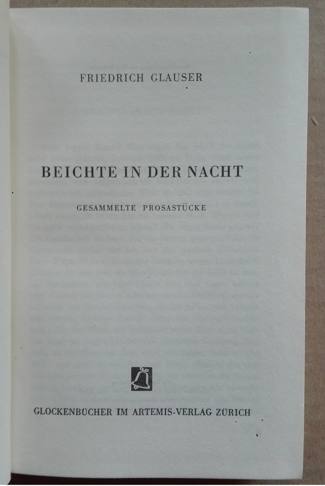

0
стр. з
0
сторінок

завантаження...

Фридрих Глаузер
Ночная исповедь. Рассказы
Перевод Екатерины Сакоян
Метод чтения Ильи Франка
Inhalt
Der alte Zauberer
Старый колдун
Von der Bahnstation bis zur Abzweigung, die nach Waiblikon führte (от железнодорожной станции до развилки, которая вела к Вайбликону; die Bahn — путь, дорога; сокр. от Eisenbahn — железная дорога; abzweigen — ответвляться; der Zweig — ветвь, ветка), war die Straße noch asphaltiert (улица была еще заасфальтирована), und Wachtmeister Studer fluchte nicht allzusehr (и вахмистер[1] Штудер ругался не слишком сильно; fluchen — ругаться, сквернословить; allzu — слишком), obwohl es vom Himmel schüttete und ein durchaus unangenehmer Herbstwind pfiff (хотя с неба лило как из ведра и свистел крайне неприятный осенний ветер; schütten — сыпать, насыпать; лить, /разг./ лить как из ведра; durchaus — совершенно, полностью; angenehm — приятный; der Herbst; der Wind). Außer dem Wetter störte den Wachtmeister einzig die »Rösti« (помимо погоды вахмистра особенно беспокоило ‘рёшти‘; das Wetter; jemanden stören — мешать кому-либо, беспокоить кого-либо; einzig — единственно, особенно; единственный; die Rösti — рёшти /швейцарское национальное блюдо из тертого картофеля, напоминают по вкусу картофельные оладьи или драники: rösten — жарить, поджаривать/), die seine Frau ihm am Morgen vorgesetzt hatte (которое его жена подала ему утром; vorsetzen — ставить впереди; подавать на стол). Denn auf die »Rösti« am Morgen hielt er, der Wachtmeister Studer (ибо он, вахмистр Штудер, придавал /большое/ значение рёшти по утрам: «утром»; auf etwas /Akk./ halten — придавать значение чему-либо, следить за чем-либо).
Von der Bahnstation bis zur Abzweigung, die nach Waiblikon führte, war die Straße noch asphaltiert, und Wachtmeister Studer fluchte nicht allzusehr, obwohl es vom Himmel schüttete und ein durchaus unangenehmer Herbstwind pfiff. Außer dem Wetter störte den Wachtmeister einzig die »Rösti«, die seine Frau ihm am Morgen vorgesetzt hatte. Denn auf die »Rösti« am Morgen hielt er, der Wachtmeister Studer.
Sein Vater, der im Emmental Bauer gewesen war, hatte sie am Morgen gegessen (его отец, который был эмментальским[2] крестьянином = эмментальский крестьянин, ел их по утрам; essen), sein Großvater auch (его дед тоже); warum sollte er eine Ausnahme machen (почему же он должен быть исключением: «делать исключение»)? Aber dass man alt wurde, war eben eine Tatsache (но /то/, что стареешь, было фактом; eben — именно, как раз; при подтверждении, уступке, согласии, обосновании /часто не переводится/), die Verdauung funktionierte nicht mehr wie früher (пищеварение больше не функционировало как раньше; verdauen — переваривать), man bekam Sodbrennen von der »Rösti« (от рёшти начиналась изжога; bekommen — получать; при физических состояниях, напр. jemand bekommt Husten/Schnupfen/Kopfschmerzen — у кого-либо начинается кашель, насморк, головная боль; das Sodbrennen). Studer schob dies auf das schlechte Fett (Штудер винил в этом скверный жир; schieben — двигать, толкать; schieben von jemandem auf jemanden, etwas /Akk./ — перекладывать с кого-либо на кого-либо, что-либо; die Schuld auf jemanden schieben — свалить вину на кого-либо), das seine Frau wohl der Sparsamkeit wegen gebraucht hatte (который его жена использовала, вероятно, из экономии; die Sparsamkeit; sparsam — бережливый, экономный; скупой; sparen — сберегать, экономить; brauchen — нуждаться в чем-либо; употреблять что-либо). Irgend so ein modernes Geschlarpf war wohl das Fett (какая-то такая современная мешанина был, вероятно, этот жир; irgend — только, как-нибудь; irgend so ein — какой-то /такой/; modérn — современный; /ново/модный).
Sein Vater, der im Emmental Bauer gewesen war, hatte sie am Morgen gegessen, sein Großvater auch; warum sollte er eine Ausnahme machen? Aber dass man alt wurde, war eben eine Tatsache, die Verdauung funktionierte nicht mehr wie früher, man bekam Sodbrennen von der »Rösti«. Studer schob dies auf das schlechte Fett, das seine Frau wohl der Sparsamkeit wegen gebraucht hatte. Irgend so ein modernes Geschlarpf war wohl das Fett.
Er trappte mit den dicken Sohlen durch die Pfützen (он тяжело ступал толстыми подошвами по лужам: «через лужи»; trappen — тяжело ступать/топать, ходить медленными шагами; die Sohle — подошва, подметка; die Pfütze), zog den Gummimantel enger an den Bauch (плотнее: «теснее» натянул на живот прорезиненный плащ; ziehen — тянуть; натягивать /одежду/; eng — тесный, узкий; der Gummimantel; der Gummi — резина, каучук; der Mantel — пальто, плащ). Nicht einmal rauchen konnte man bei diesem Wetter (даже курить невозможно было при этой погоде; nicht einmal — даже не, и не; rauchen — курить).
Da war die Abzweigung (тут было ответвление дороги = была боковая дорога), sie war gerade breit genug (она была как раз достаточно широка), dass ein Güllenwagen durchfahren konnte (чтобы мог проехать машина с навозом; die Gülle — навозная жижа; der Wagen — повозка; воз; экипаж; вагон; автомобиль; durchfahren — проезжать), rechts ging es steil bergab in ein Bachbett (справа /она/ круто спускалась к руслу: «шла в русло» ручья; steil — крутой, отвесный; bergab — под гору, с горы; der Berg — гора; der Bach — ручей), links stieg ein triefender Wald in die Höhe (слева поднимался ввысь = высился насквозь промокший лес; steigen — подниматься; triefend — мокрый насквозь; triefen — капать, течь; быть совершенно мокрым; die Höhe — высота; холм, возвышенность). Der Wachtmeister dachte an Dinge (вахмистр думал о /именно о таких/вещах; denken an jemanden, etwas /Akk./ — о ком-либо, чем-либо; помнить, вспоминать; das Ding pl. die Dinge), an die man eben so denkt (о которых обычно: «как раз так» думают; eben — именно, как раз), wenn es schüttet und wenn man friert (когда льет дождь и мерзнешь; frieren — мерзнуть, зябнуть): an einen Jassabend, an seine Amtsstube (о вечере /за игрой в/ ясс; der Jass — ясс, швейцарская карточная игра), an seinen Sohn, der als Setzer bald ausgelernt hatte (о своем сыне, который скоро выучится на наборщика; bald — скоро, вскоре; чуть не; der Setzer — наборщик; auslernen — заканчивать обучение, выучиться).
Er trappte mit den dicken Sohlen durch die Pfützen, zog den Gummimantel enger an den Bauch. Nicht einmal rauchen konnte man bei diesem Wetter.
Da war die Abzweigung, sie war gerade breit genug, dass ein Güllenwagen durchfahren konnte, rechts ging es steil bergab in ein Bachbett, links stieg ein triefender Wald in die Höhe. Der Wachtmeister dachte an Dinge, an die man eben so denkt, wenn es schüttet und wenn man friert: an einen Jassabend, an seine Amtsstube, an seinen Sohn, der als Setzer bald ausgelernt hatte.
Studer hatte ein dickes, rotes Gesicht (у Штудера было толстое красное лицо), das jetzt ein wenig bläulich angelaufen war (которое сейчас немного посинело: «окрасилось синевато»; anlaufen — окрашиваться в какой-либо цвет, меняться в цвете), und einen vertrauenerweckenden Schnurrbart (и вызывающие доверие усы; vertrauen — доверять; das Vertrauen — доверие; erwecken — вызывать /какое-либо чувство/; der Schnurrbart — усы; der Bart — борода). Zwischen den vom Rauchen braungewordenen Schneidezähnen spuckte er kunstgerecht (сквозь пожелтевшие от курения передние зубы: «между ставшими коричневыми от курения резцами» он сплюнул по всем правилам искусства; der Zahn pl. die Zähne; der Schneidezahn — резец; schneiden — резать; spucken — плевать; kunstgerecht — мастерски, по всем правилам искусства; die Kunst — искусство; умение), wie ein Achtjähriger, in weitem geradem Strahl (как восьмилетний, широкой прямой струей; gerade — прямой, точный; der Strahl — луч; струя), und der Regen war machtlos gegen diese Kunst, und der Wind auch (и дождь был бессилен против этого искусства, и ветер тоже; machtlos — бессильный, безвластный; die Macht — сила, власть): Das freute Studer (это порадовало Штудера). Dass ihm hingegen der Regen die Ärmel herab in die Taschen lief (напротив же /то/, что дождь стекал: «бежал» с рукавов в карманы; hingegen — напротив, наоборот; зато; вопреки; der Ärmel pl. die Ärmel — рукав; herab — сюда-вниз; die Tasche; laufen), das ärgerte ihn wieder (снова рассердило его; ärgern — сердить, злить, раздражать), so dass er nicht recht wusste, welches Gesicht er schneiden sollte (так что он не совсем понимал: «знал», какую ему следует: «он должен был» скроить физиономию; recht — правый; верно; wissen; schneiden — резать, нарезать; Gesichter schneiden — гримасничать).
Studer hatte ein dickes, rotes Gesicht, das jetzt ein wenig bläulich angelaufen war, und einen vertrauenerweckenden Schnurrbart. Zwischen den vom Rauchen braungewordenen Schneidezähnen spuckte er kunstgerecht, wie ein Achtjähriger, in weitem geradem Strahl, und der Regen war machtlos gegen diese Kunst, und der Wind auch: Das freute Studer. Dass ihm hingegen der Regen die Ärmel herab in die Taschen lief, das ärgerte ihn wieder, so dass er nicht recht wusste, welches Gesicht er schneiden sollte.
Es war überhaupt schwer (это вообще было трудно; schwer — тяжелый; трудный), bei diesem Wetter seinen eigenen Willen durchzusetzen (при этой = такой погоде проявлять свою собственную волю; der Wille — воля; etwas durchsetzen — добиваться осуществления чего-либо; настоять на чем-либо), besonders was das Gesichterschneiden betraf (особенно что касается выражения лица: «гримасничанья»; betreffen — касаться; относиться), denn der Regen fuhr ihm manchmal mit seinen nassen Fingern in die Augen (потому что дождь иногда лез ему своими мокрыми пальцами в глаза; fahren — обозначает любое быстрое движение в зависимости от контекста; der Finger pl. die Finger — палец; das Auge pl. die Augen), und die breite Krempe des Hutes war ein ungenügender Schutz gegen derartig böswillige Attacken (а широкие поля шляпы были недостаточной защитой от подобных злонамеренных атак; die Krempe /в нем. яз. употребляется в единственном числе/– поля /шляпы/; ungenügend — недостаточный; genügen — хватать, быть достаточным; der Schutz — защита; schützen — защищать; derartig — такого рода, подобный; die Attácke).
Die Straße wurde steil (улица стала крутой), Studer fluchte ein wenig, schüttelte den Kopf (Штудер выругался слегка, потряс головой; den Köpf schütteln — качать/покачать головой; schütteln — трясти), dass die Tropfen von seinem Hutrand tangential abflogen (чтобы капли с края его шляпы слетали по касательной; der Tropfen pl. die Tropfen; der Hut — шляпа; der Rand — край, предел; tangentiál — касательный; abfliegen — слетать).
Es war überhaupt schwer, bei diesem Wetter seinen eigenen Willen durchzusetzen, besonders was das Gesichterschneiden betraf, denn der Regen fuhr ihm manchmal mit seinen nassen Fingern in die Augen, und die breite Krempe des Hutes war ein ungenügender Schutz gegen derartig böswillige Attacken.
Die Straße wurde steil, Studer fluchte ein wenig, schüttelte den Kopf, dass die Tropfen von seinem Hutrand tangential abflogen.
Es war ja schließlich, dachte er, nicht die Schuld des kantonalen Polizeidirektors (это же, в конце концов, думал он, не была вина кантонального директора полиции; denken; der Kantón — кантон / единица административного деления 1-го уровня в Швейцарии/), dass er hier in der Nässe herumvagieren musste (что он должен был блуждать здесь в сырости; vagieren — бродить, блуждать, кочевать; herum — вокруг, кругом; указывает на круговое движение или направленность действия в разные стороны; die Nässe — сырость, влажность; nass — мокрый, сырой). Sonst gab man ja dort oben auf anonyme Briefe nicht viel (кроме того, ведь там, наверху, анонимным письмам не придавали большого значения; sonst — иначе, а то; кроме того, еще; /nicht/ viel auf etwas /Akk./ geben — /не/ придавать чему-либо большое значение), aber hier schien der Fall doch etwas anders zu liegen (но здесь этот случай все же, казалось, выглядел несколько иначе; scheinen — казаться, создавать впечатление; anders liegen — обстоять иначе, быть другим /напр. die Dinge liegen in Wirklichkeit anders — на самом деле все обстоит иначе/), und das Ganze war eine etwas kohlige Geschichte (и все это в целом была немного вздорная история; das Ganze — целое; die Kohle — уголь; kohlig — углистый, углесодержащий; kohlen — превращать в уголь; обугливать; /разг./ молоть вздор; городить чепуху; врать).
Es war ja schließlich, dachte er, nicht die Schuld des kantonalen Polizeidirektors, dass er hier in der Nässe herumvagieren musste. Sonst gab man ja dort oben auf anonyme Briefe nicht viel, aber hier schien der Fall doch etwas anders zu liegen, und das Ganze war eine etwas kohlige Geschichte.
Wo man da anpacken sollte, war nicht ganz klar (за что: «где» там нужно: «должно» было ухватиться, было не совсем ясно; anpacken — хватать, браться за что-либо), entweder war das Ganze ein Versuch, die Behörde zu blamieren (или все это в целом была попытка опозорить орган власти; entweder ... oder — или…или; der Versuch — попытка, проба; versuchen — пытаться, пробовать; die Behörde — учреждение, ведомство, орган власти), und da musste man doppelt vorsichtig sein (и тогда нужно было быть вдвойне осторожным; die Vorsicht — осторожность), oder es war etwas ganz Großes dahinter, ein Sensationsprozess vielleicht (или за этим было что-то очень крупное, может быть, сенсационный процесс; dahinter — сзади этого, за этим; der Prozéss), und dann kamen die Reporter von den ausländischen Zeitungen (и тогда прибудут: «прибыли» репортеры из иностранных газет; kommen; das Ausland — заграница, зарубежные страны; die Zeitung), und man bekam ein wenig internationalen Ruhm weg (и заработаешь: «заработал» немного международной славы; wegbekommen — /разг./ получить /случайно часть чего-либо/; получить /как следует/, схлопотать, заработать; der Ruhm — слава). Das war nicht zu verachten (этим нельзя было пренебрегать; etwas verachten — презирать, пренебрегать чем-либо).
Wo man da anpacken sollte, war nicht ganz klar, entweder war das Ganze ein Versuch, die Behörde zu blamieren, und da musste man doppelt vorsichtig sein, oder es war etwas ganz Großes dahinter, ein Sensationsprozess vielleicht, und dann kamen die Reporter von den ausländischen Zeitungen, und man bekam ein wenig internationalen Ruhm weg. Das war nicht zu verachten.
Mein Gott, man hatte es ja nicht nötig (боже мой, этого же не надо), man war ja sonst schon in den Fachkreisen bekannt, in Wien besonders, in Paris auch (ведь ты и так уже известен в кругах специалистов, особенно в Вене, в Париже тоже; der Fachkreis — круг специалистов; das Fach — предмет, область /науки/, специальность); es hatten sich da ein- oder zweimal ziemlich schwierige Internationale (halb Spione, halb Einbrecher) in der Schweiz wie in einer Mausefalle gefangen (ведь тогда один или два раза довольно сложные игроки международного класса (наполовину шпионы, наполовину взломщики) попались в Швейцарии, как в мышеловке; der Internationále /ein Internationaler/ — игрок/спортсмен международного класса; der Spión; einbrechen — взламывать, вторгаться; die Schweiz; sich fangen — попадаться). Das sollte doch genügen (этого же должно бы хватить), besonders wenn die Pensionierung in erreichbarer Nähe stand (особенно когда уход на пенсию маячил в непосредственной близости: «стоял в достижимой близи»; die Pensionierung [pãzĭo-, paŋzĭo-] — /австр., швейц./ выход/уход на пенсию; erreichbar — досягаемый, доступный; erreichen — достигать, добираться; die Nähe — близость) — noch fünf Jahre ... fünf Jahre wird man doch noch aushalten (еще пять лет…пять лет все же еще выдержишь; aushalten — выдерживать, выносить)?
Mein Gott, man hatte es ja nicht nötig, man war ja sonst schon in den Fachkreisen bekannt, in Wien besonders, in Paris auch; es hatten sich da ein- oder zweimal ziemlich schwierige Internationale (halb Spione, halb Einbrecher) in der Schweiz wie in einer Mausefalle gefangen. Das sollte doch genügen, besonders wenn die Pensionierung in erreichbarer Nähe stand — noch fünf Jahre ... fünf Jahre wird man doch noch aushalten?
Aber — seinen Namen zu lesen, im »Journal« zum Beispiel (но прочитать свое имя, например, в «Журнале»; der Name; das Journál [ʒʊr-]), mit schmeichelhaften Beiwörtern, das war nicht zu verachten (с лестными эпитетами, этим нельзя было пренебрегать; schmeicheln — льстить; das Beiwort pl. die Beiwörter — имя прилагательное; эпитет). Etwa so (что-нибудь такое): »Le distingué inspecteur de la sûreté Studer, dont le talent remarquable est bien connu dans les milieux policiers (выдающийся инспектор безопасности Штудер, чей замечательный талант хорошо известен в полицейских кругах…) ...« und vielleicht noch seine Photographie dazu (и, возможно, еще его фотография к этому). Ja, die Franzosen hatten es los (да, французы мастера в этом деле; der Franzóse; etwas /was/ loshaben — быть мастером в каком-либо деле), in der Schweizer Presse war man sparsamer mit lobenden Beiwörtern (в швейцарской прессе были скупее на хвалебные эпитеты; sparsam — бережливый, скупой; loben — хвалить).
Da kam rechts vom Wege ein Heuschober in Sicht (вот справа от дороги показался сарай для сена; in Sicht kommen — показаться /на горизонте/, становится видимым; die Sicht — вид, обзор; видимость; der Heuschober — стог; сарай для сена; das Heu — сено). Ein wenig unterstehen kann man, dachte Studer (можно немного укрыться /под ним/, подумал Штудер; ú nterstehen — /австр., швейц./ спрятаться, укрыться, стоять под чем-либо) und fühlte dabei nach seiner Brusttasche (и при этом ощупал свой нагрудный карман; fühlen nach etwas /Dat./ — искать ощупью что-либо, ощупывать; die Brust — грудь).
Aber — seinen Namen zu lesen, im »Journal« zum Beispiel, mit schmeichelhaften Beiwörtern, das war nicht zu verachten. Etwa so: »Le distingué inspecteur de la sûreté Studer, dont le talent remarquable est bien connu dans les milieux policiers ...« und vielleicht noch seine Photographie dazu. Ja, die Franzosen hatten es los, in der Schweizer Presse war man sparsamer mit lobenden Beiwörtern.
Da kam rechts vom Wege ein Heuschober in Sicht. Ein wenig unterstehen kann man, dachte Studer und fühlte dabei nach seiner Brusttasche.
Gut, dass ihm die Frau noch Kognak gerüstet hatte (хорошо, что жена снабдила его еще и коньяком: «заготовила ему коньяк»; rüsten — снаряжать, готовить; der Kognak ['kɔnjak]), der würde jetzt gerade lau sein von der Körperwärme (который сейчас, наверное, как раз немного стал теплым = согрелся от тепла тела; lau — чуть теплый, тепловатый; der Körper — тело; die Wärme), und in der zerfließenden Sintflut ringsum wäre eine Stärkung doch nicht zu verachten (и подкрепить силы: «подкрепление сил» в растекающемся вокруг всемирном потопе было бы не лишним; zerfließen — растекаться; die Sintflut — всемирный потоп; ringsum = ringsherum — вокруг, везде, со всех сторон; die Stärkung — укрепление/подкрепление здоровья/сил; освежающий напиток; stärken — укреплять, придавать силы; das ist nicht zu verachten /шутл./ — это неплохо/недурно). Studer ging in den Heuschober (Штудер зашел в сарай), das Heu war trocken (сено было сухим), er nahm ein Büschel, wischte sich die nassen Schuhe ab (он взял охапку, вытер свои: «себе» мокрые ботинки; nehmen; das Büschel — охапка, пучок; abwischen — вытирать; der Schuh pl. die Schuhe — туфля, ботинок), trocknete die Hände an einem sauberen Taschentuch (вытер руки о чистый носовой платок; trocknen — сушить, высушивать; die Hände trocknen — вытирать руки; die Hand pl. die Hände — рука /кисть/; das Taschentuch) und zog den Brief aus der Tasche, der den Polizeidirektor so aufgeregt hatte (и вытащил из кармана письмо, которое так взволновало начальника полиции; aufregen — волновать, возбуждать). Es stand wenig darin (написано в нем было немного: «там стояло немного»; darin — там-внутри):
Gut, dass ihm die Frau noch Kognak gerüstet hatte, der würde jetzt gerade lau sein von der Körperwärme, und in der zerfließenden Sintflut ringsum wäre eine Stärkung doch nicht zu verachten. Studer ging in den Heuschober, das Heu war trocken, er nahm ein Büschel, wischte sich die nassen Schuhe ab, trocknete die Hände an einem sauberen Taschentuch und zog den Brief aus der Tasche, der den Polizeidirektor so aufgeregt hatte. Es stand wenig darin:
»Der Bauer Berthold Leuenberger in Waiblikon begräbt seine vierte Frau (крестьянин Бертольд Лоенбергер в Вайбликоне хоронит свою четвертую жену; begraben — хоронить, погребать; das Grab — могила). Er ist sechzig Jahre alt (ему шестьдесят лет), die drei letzten Frauen sind innerhalb von drei Jahren gestorben (три последние жены умерли в течение трех лет; innerhalb — внутри, в пределах; в течение, за; sterben — умирать). Es waren immer junge (это всегда были молодые /женщины/). Er sagt, das Wasser bei ihm auf dem Hof ist schlecht (он говорит, /что/ вода у него на = во дворе плохая; der Hof). Viele meinen etwas anderes (многие думают кое-что другое; meinen — высказывать мнение; полагать, думать). Wann wird das Gericht endlich einschreiten (когда суд, наконец, примет меры; einschreiten — принимать меры, вмешиваться во что-либо, привлекать к ответственности /schreiten — шагать, ein- — внутрь/)?
»Der Bauer Berthold Leuenberger in Waiblikon begräbt seine vierte Frau. Er ist sechzig Jahre alt, die drei letzten Frauen sind innerhalb von drei Jahren gestorben. Es waren immer junge. Er sagt, das Wasser bei ihm auf dem Hof ist schlecht. Viele meinen etwas anderes. Wann wird das Gericht endlich einschreiten?
Wenn das Wasser schlecht ist auf seinem Hof (если в его дворе вода плохая), warum ist er nie krank geworden, noch sein Vieh, Knecht und Gesinde (почему он никогда не заболевал, ни его скот, работник и прислуга; krank werden — заболеть: «стать больным»; das Vieh; der Knecht — работник, батрак; das Gesinde — челядь, прислуга; батраки)? Jetzt gehet er wieder um, der Bauer, wie ein brüllender Löwe (теперь он снова бродит, этот крестьянин, аки лев рыкающий: «как ревущий лев»; gehet /книжн./ = geht; úmgehen — бродить /о духе, призраке/; brüllen — рычать, реветь; der Löwe), und suchet, wen er verzehren könne (и ищет, кого он еще может пожрать; suchet = suchet; verzehren — поглощать, съедать; пожирать). Aber Gottes Gericht ist über ihm (но Божий суд пребудет: «есть» над ним), wenn ihn das Gericht der Menschen vergisst (если его забудет суд человеческий: «людей»; vergessen — забывать).«
Wenn das Wasser schlecht ist auf seinem Hof, warum ist er nie krank geworden, noch sein Vieh, Knecht und Gesinde? Jetzt gehet er wieder um, der Bauer, wie ein brüllender Löwe, und suchet, wen er verzehren könne. Aber Gottes Gericht ist über ihm, wenn ihn das Gericht der Menschen vergisst.«
Die Schrift war verstellt, das Papier grob (подчерк был изменен, бумага грубая; verstellen — изменять /подчерк, голос/), längliche Rechtecke überspannten es wie ein feines Netz (вытянутые прямоугольники покрывали его тонкой сетью: «как тонкая сеть»; länglich — продолговатый, вытянутый, удлиненный; das Rechteck; überspannen — натягивать, обтягивать, покрывать /напр. тканью/; das Netz). Nach dem Schluss des Briefes musste ihn ein »Stündeler« geschrieben haben, ein Bibelkundiger (/судя/ по концовке письма, его, должно быть, написал «штундист»[3], начётчик: «знаток Библии /в негат. значении/»; der Schluss — конец, завершение, заключение; der Stündeler /швейц./ = der Stundíst; schreiben; die Bibel; kundig — сведущий, знающий, осведомленный). In drei Jahren drei Frauen, das war merkwürdig (за три года три жены — это было странно; merkwürdig — примечательно, диковинно, странно; merken — замечать; würdig — достойный). Aber die Totenscheine mussten doch in Ordnung sein (но свидетельства о смерти должны же быть в порядке; der Totenschein; der/ tot — мертвый; der Tod — смерть), Studer hatte mit dem Polizeidirektor im Telephonbuch nachgesehen (Штудер /вместе/ с начальником полиции поверил в телефонной книге; nachsehen — смотреть, просматривать, проверять /в словаре, справочнике и т. п./; das Telephónbuch) und den Namen eines Arztes gefunden, der als gewissenhaft bekannt war (и нашел имя врача, который был известен, как добросовестный; finden — находить; das Gewissen — совесть; -haft — суффикс в сочетание существительным указывает на наличие признака или сходства, напр. der Fehler — ошибка: fehler + haft = fehlerhaft — с ошибками, ошибочный).
Die Schrift war verstellt, das Papier grob, längliche Rechtecke überspannten es wie ein feines Netz. Nach dem Schluss des Briefes musste ihn ein »Stündeler« geschrieben haben, ein Bibelkundiger. In drei Jahren drei Frauen, das war merkwürdig. Aber die Totenscheine mussten doch in Ordnung sein, Studer hatte mit dem Polizeidirektor im Telephonbuch nachgesehen und den Namen eines Arztes gefunden, der als gewissenhaft bekannt war.
Dieser Arzt war früher am Spital gewesen (этот врач раньше был = работал в больнице; das Spitál — /австр., швейц./ больница), die Polizei hatte bei Unfällen viel mit ihm zu tun gehabt (полиция много имела с ним дело при несчастных случаях; der Unfall pl. die Unfälle — несчастный случай, авария; mit jemandem, etwas /Dat./ zu tun haben — иметь дело с кем-либо, с чем-либо), der Mann war untadelig (этот человек был безупречен; untadelig — безукоризненный, безупречный; tadeln — порицать, упрекать). Aber man weiß ja, wie es in einer Landpraxis zugeht (но ведь известно, как бывает: «происходит» в сельской практике; zugehen — проходить, происходить; die Landpraxis — врачебная практика в сельской местности), man hat nicht viel Zeit, wenn man weit herum Besuche machen muss (бывает не много = недостаточно времени, когда нужно навещать /больных/ по всей округе: «далеко кругом»; der Besuch — посещение, визит; bei jemandem Besuch machen — посетить кого-либо; besuchen — посещать навещать)... und irren ist ja bekanntlich menschlich (а ошибаться ведь, как известно, свойственно человеку: «по-человечески»; irren — ошибаться, заблуждаться; menschlich — человеческий, по-человечески).
Dieser Arzt war früher am Spital gewesen, die Polizei hatte bei Unfällen viel mit ihm zu tun gehabt, der Mann war untadelig. Aber man weiß ja, wie es in einer Landpraxis zugeht, man hat nicht viel Zeit, wenn man weit herum Besuche machen muss... und irren ist ja bekanntlich menschlich.
Studer stapfte weiter (Штудер тяжело шагал дальше; stapfen — тяжело ступать/идти), ganz wenig hellte sich das Wetter auf (погода немного прояснилась; sich aufhellen — осветляться; проясняться; hell — светлый), das heißt der Regen hörte auf zu fließen (это значит, дождь перестал лить рекой; aufhören — прекращаться, переставать; fließen — течь, литься /рекой/), dafür senkte sich ein dicker, weißer Nebel über das Land (зато над землей опустился густой, белый туман; sich senken — опускаться; dick — толстый, плотный, густой). So dicht war dieser Nebel (этот туман был такой густой), dass Studer die Häuser zuerst gar nicht erblickte (что Штудер сначала совсем не увидел дома; erblicken — увидеть, распознавать), aus denen der Weiler Waiblikon bestand (из которых состояла деревушка Вайбликон; der Weiler — /небольшая/ деревня, хутор). Ein Junge mit halblangen Hosen (мальчик в укороченных штанах: «с полудлинными штанами»; die Hose pl. die Hosen /обычно употребляется во множ. числе/ — брюки, штаны), die bis zur Mitte der nackten Waden reichten (которые доставали до середины голых икр; die Wade — икра; reichen — доставать, достигать, доходить), die Füsse in Holzschuhen, stapfte an ihm vorbei (ноги в деревянных башмаках, прошлепал: «тяжело прошел» мимо него; der Fuß pl. die Füße — нога /ступня/; das Holz — дерево, древесина). »Wo ist die Wirtschaft?« fragte Studer (где трактир? — спросил Штудер; die Wirtschaft — хозяйство; трактир).
Studer stapfte weiter, ganz wenig hellte sich das Wetter auf, das heißt der Regen hörte auf zu fließen, dafür senkte sich ein dicker, weißer Nebel über das Land. So dicht war dieser Nebel, dass Studer die Häuser zuerst gar nicht erblickte, aus denen der Weiler Waiblikon bestand. Ein Junge mit halblangen Hosen, die bis zur Mitte der nackten Waden reichten, die Füsse in Holzschuhen, stapfte an ihm vorbei. »Wo ist die Wirtschaft?« fragte Studer.
Der Junge glotzte zuerst (мальчик сначала уставился /на него/; glotzen auf jemanden, etwas /Akk./ — уставиться, пялиться на кого-либо, что-либо), dann deutete er mit einer schmutzigen Knabenhand geradeaus (потом указал грязной мальчишеской рукой прямо; deuten auf jemanden, etwas /Akk./ mit etwas /Dat./ — указывать на кого-либо, что-либо чем-либо /напр. пальцем/; der Knabe — мальчик) und wies nach links, hob dann fünf gespreizte Finger (и показал налево, подняв: «поднял» затем пять растопыренных пальцев; weisen — показывать, указывать; heben — поднимать; spreizen — широко расставлять, раскидывать /руки, ноги/, растопыривать). »Bist du stumm (ты немой)?« Der Junge nickte (мальчик кивнул) — also das fünfte Haus links, dachte Studer und stapfte weiter (стало быть, пятый дом слева, подумал Штудер и зашагал дальше). Das Gastzimmer, das an den kleinen Laden stieß (комната для приезжих, которая прилегала к небольшому магазину; das Gastzimmer — комната для приезжающих; гостиная; stoßen an etwas /Akk./ — примыкать /о комнате/; der Laden), war klein, nieder und finster (была маленькой, низкой и мрачной). Es musste doch bald Mittag sein (однако скоро должен был быть обед; der Mittag — полдень;обед). Studer zog den triefenden Mantel aus (Штудер снял насквозь промокшее пальто; ausziehen — снимать /одежду, обувь/), zog die Weste straff über seinen Bauch (туго натянул жилет на живот; straff — тугой, плотный), zog noch den Rock aus, dessen Ärmelenden durchweicht waren (снял еще и пиджак, концы рукавов которого пропитались влагой; der Rock; das Ende — конец, край; durchweichen — размякнуть /от влаги/, промокнуть; weich — мягкий), und setzte sich (и сел).
Der Junge glotzte zuerst, dann deutete er mit einer schmutzigen Knabenhand geradeaus und wies nach links, hob dann fünf gespreizte Finger. »Bist du stumm?« Der Junge nickte — also das fünfte Haus links, dachte Studer und stapfte weiter. Das Gastzimmer, das an den kleinen Laden stieß, war klein, nieder und finster. Es musste doch bald Mittag sein. Studer zog den triefenden Mantel aus, zog die Weste straff über seinen Bauch, zog noch den Rock aus, dessen Ärmelenden durchweicht waren, und setzte sich.
Dann zog er die Uhr aus der Tasche, eine flache, goldene Uhr (затем он вытащил из кармана часы, плоские золотые часы; flach — плоский, ровный; das Gold — золото), die er an seinem zwanzigjährigen Dienstjubiläum geschenkt erhalten hatte (которые он получил в подарок к своему двадцатилетнему юбилею служебному юбилею; der Dienst — служба, работа; dienen — служить; das Jubiläum; etwas geschenkt bekommen/erhalten — получить что-либо в подарок; schenken — дарить; das Geschenk — подарок); sie zeigte zehn Uhr (они показывали десять часов). Es war früh (было рано). Er hatte Zeit (у него было /достаточно/ времени; die Zeit). Lange blieb die Stube leer, kein Mensch zeigte sich (комната долго оставалась пустой, не показывался ни один человек; bleiben), es herrschte in ihr jener ein wenig ekelerregende Geruch (в ней царил тот немного тошнотворный запах; herrschen — господствовать; царить; der Geruch — запах; riechen — пахнуть; нюхать; ekelerregend — отвратительный, омерзительный, тошнотворный; der Ekel — отвращение; erregen — возбуждать: вызывать /какое-либо чувство/) (auf nüchternen Magen ist er noch schwerer zu ertragen (на пустой желудок его еще труднее переносить; nüchtern — трезвый; на пустой желудок, натощак; der Magen)) von abgestandenem Bier und kaltem Pfeifenrauch (от застоявшегося пива и холодного = остывшего дыма от трубок; abgestanden — застоявшийся; спертый /о воздухе/; das Bier; die Pfeife — трубка; der Rauch — дым; rauchen — дымить; курить).
Dann zog er die Uhr aus der Tasche, eine flache, goldene Uhr, die er an seinem zwanzigjährigen Dienstjubiläum geschenkt erhalten hatte; sie zeigte zehn Uhr. Es war früh. Er hatte Zeit. Lange blieb die Stube leer, kein Mensch zeigte sich, es herrschte in ihr jener ein wenig ekelerregende Geruch (auf nüchternen Magen ist er noch schwerer zu ertragen) von abgestandenem Bier und kaltem Pfeifenrauch.
Endlich erschien ein gähnendes Mädchen (наконец появилась зевающая девушка; erscheinen — появляться, возникать; gähnen — зевать), das unwillig die Absätze seiner Finken auf dem Boden nachschleifte (которая неохотно волочила по полу каблуки своих домашних туфель; der Absatz pl. die Absätze — каблук; der Finken pl. die Finken — /швейц./ домашняя/матерчатая туфля; der Boden; nachschleifen — волочить, тащить за собой). Studer bestellte einen Dreier Roten und eine Portion Hammen (Штудер заказал красное /вино/ урожая третьего года и порцию ветчины; der Dreier — вино урожая третьего года /какого-либо века/; der Hammen — /швейц./ ветчина). Das Fleisch war gut, er bestrich es dick mit Senf (мясо было хорошо, он толсто намазал его горчицей; bestreichen — намазывать; der Senf), auch der Wein war nicht schlecht (и вино тоже было неплохо). Die Stube war gut geheizt (комната была хорошо натоплена; heizen — топить, отапливать), die nasse Luft von draußen vermochte nicht durch die Doppelfenster zu dringen (сырой воздух снаружи не мог проникнуть сквозь двойные окна; draußen — снаружи, на улице, под открытым небом; vermögen — быть в состоянии/ в силах; мочь; Doppel- /с сущ./ — двойной; doppelt — двойной). Dem Kommissar wurde wohl (комиссару стало хорошо; wohl — хорошо, приятно), seine Augen bekamen einen trockenen und klaren Glanz (его глаза приобрели сухой и ясный блеск; bekommen — получать, приобретать; der Glanz), und er überlegte, wie er sich am besten an das Mädchen heranmachen könne (и он размышлял, как бы ему: «он мог бы» лучше подступиться к девушке; überlegen — обдумывать, размышлять; sich heranmachen an jemanden, etwas /Akk./ — браться за что-либо; приниматься /за дело/; приставать к кому-либо).
Endlich erschien ein gähnendes Mädchen, das unwillig die Absätze seiner Finken auf dem Boden nachschleifte. Studer bestellte einen Dreier Roten und eine Portion Hammen. Das Fleisch war gut, er bestrich es dick mit Senf, auch der Wein war nicht schlecht. Die Stube war gut geheizt, die nasse Luft von draußen vermochte nicht durch die Doppelfenster zu dringen. Dem Kommissar wurde wohl, seine Augen bekamen einen trockenen und klaren Glanz, und er überlegte, wie er sich am besten an das Mädchen heranmachen könne.
Diese Serviertochter musste einmal in der Stadt gedient haben (эта официантка, должно быть, раньше служила в городе; die Serviertochter — /швейц./ подавальщица, официантка, кельнерша; servieren — сервировать; подавать /на стол/), sie hatte verraufte Dauerwellen (у нее был развившийся перманент; raufen — выдергивать, вытягивать; ver- — неотд. гл. приставка указывает на интенсивность действия, доведение его до конца; die Dauerwelle — химическая завивка, перманент; die Dauer — длительность; die Welle — волна; завивка, укладка) und trug ein kunstseidenes, schon ein wenig brüchiges Kleid (и /она/ носила уже немного обветшалое платье из искусственного шелка; tragen; die Kunst — искусство; die Seide — шелк; die Kunstseide — искусственный шелк; brüchig — хрупкий, ломкий; обветшавший; das Kleid). Studer hätte es als einen psychologischen Fehler empfunden (Штудер счел бы психологической ошибкой: «воспринял бы как...»; empfinden — чувствовать, воспринимать), eine Dorfmaid zu einer »Consommation«, wie sie in Genf sagten, einzuladen (пригласить деревенскую девушку на «угощение», как говорили в Женеве; das Dorf — деревня; die Maid — /уст., ирон./ девушка; die Consommation /фр./ — потребление, расход; угощение; einladen — приглашать), hier konnte man es riskieren (здесь он мог отважиться на это; riskieren — рисковать, отважиться, осмелиться). Das Mädchen bügelte in der Nähe des großen steinernen Ofens (девушка гладила вблизи от большой каменной печи; bügeln — гладить /утюгом/; steinern — каменный; der Stein — камень; der Ofen), der von der Küche her geheizt wurde (которая топилась из кухни; her — сюда-к), gestärkte Schürzen (накрахмаленные фартуки; stärken — укреплять; крахмалить; die Schürze — фартук).
Diese Serviertochter musste einmal in der Stadt gedient haben, sie hatte verraufte Dauerwellen und trug ein kunstseidenes, schon ein wenig brüchiges Kleid. Studer hätte es als einen psychologischen Fehler empfunden, eine Dorfmaid zu einer »Consommation«, wie sie in Genf sagten, einzuladen, hier konnte man es riskieren. Das Mädchen bügelte in der Nähe des großen steinernen Ofens, der von der Küche her geheizt wurde, gestärkte Schürzen.
Studer klopfte auf den Tisch (Штудер постучал по столу). Er war der biedere alte Handlungsreisende (он был честный старый коммивояжер; bieder — честный, надежный, порядочный; die Handlung — торговое дело, торговля; reisen — ездить, путешествовать), der sich gern eine kleine Zerstreuung gönnt (который охотно позволит себе небольшое развлечение; gönnen — позволять, разрешать; die Zerstreuung — рассеивание, развлечение; zerstreuen — развлечься, рассеяться), obwohl die Zerstreuung hier etwas Überwindung kostete (хотя это развлечение стоило здесь некоторого усилия; die Überwindung — преодоление, победа; усилие; überwínden — преодолевать, справляться; kosten — стоить). Als das Mädchen mürrisch näher kam, fragte er verlockend (когда девушка подошла угрюмо = с неприветливым видом, он спросил, соблазняя; mürrisch — брюзгливый, неприветливый, угрюмый; verlocken — заманивать, соблазнять), ob sie nicht auch etwas nehmen wolle (не хочет ли и она что-нибудь выпить: «взять»), es sei so kalt draußen (ведь на улице так холодно). Das Mädchen schwärmte für Wermut (девушка обожала вермут; schwärmen für jemanden, etwas /Akk./ — восторгаться, восхищаться кем-либо, чем-либо), es holte die staubige Flasche vom Wandbord (она принесла пыльную бутылку с настенной полки; der Staub — пыль; die Wand — стенка; das Bord — полка), sagte: »Excusez« und »wenn‘s erlaubt ist« (сказала «простите» и «если позволено»; excusez-moi /фр./ — прошу прощения, простите меня; erlauben — разрешать, позволять) und drängte seine Magerkeit ziemlich dicht an den Wachtmeister (и довольно тесно прижала свое тощее тело: «свою худобу» к вахмистру; drängen — напирать, теснить; an etwas /Akk./ drängen — прижимать к чему-либо; mager — худой, тощий). Und das Gespräch entspann sich (и разговор завязался: sich entspinnen — завязываться, начинаться /о разговоре/; spinnen — прясть).
Studer klopfte auf den Tisch. Er war der biedere alte Handlungsreisende, der sich gern eine kleine Zerstreuung gönnt, obwohl die Zerstreuung hier etwas Überwindung kostete. Als das Mädchen mürrisch näher kam, fragte er verlockend, ob sie nicht auch etwas nehmen wolle, es sei so kalt draußen. Das Mädchen schwärmte für Wermut, es holte die staubige Flasche vom Wandbord, sagte: »Excusez« und »wenn‘s erlaubt ist« und drängte seine Magerkeit ziemlich dicht an den Wachtmeister. Und das Gespräch entspann sich.
Studer ließ sich Zeit (Штудер не спешил; sich Zeit lassen — дать себе время, не спешить, не торопиться) (man muss sich immer Zeit lassen (всегда нужно давать себе время = никогда не нужно спешить)); er reise in Düngemitteln (он якобы предлагал для продажи удобрения: «путешествовал в /деле/ удобрений»; reisen — путешествовать; быть коммивояжером; das Mittel — средство; düngen — удобрять, унавоживать; der Dung — навоз; der Dünger — удобрение; навоз), besonders Thomasschlacke sei jetzt sehr preiswert zu kaufen (особенно томасовский шлак можно сейчас купить по очень выгодной цене; die Schlacke; preiswert — недорогой, по достойной/сходной цене; der Preis — цена; wert — стоящий, достойный), ein ausgezeichnetes Phosphordüngemittel (превосходное фосфорное удобрение; ausgezeichnet — отличный, превосходный; auszeichnen — выделять, отличать; награждать), aber er wolle zuerst ein wenig Bescheid wissen über die Leute in der Gegend (но он бы хотел сначала узнать немного о людях в этой местности; über jemanden, etwas /Akk./ Bescheid wissen — быть осведомленным о ком-либо, чем-либо, знать; die Gegend — местность, край), sein Auto habe er am Bahnhof gelassen (свою машину он оставил у вокзала; der Bahnhof), denn der Weg sei doch gar zu schlecht (потому что ведь дорога была уж слишком плохой; gar — совсем, совершенно). Und er plätscherte und plätscherte, und das Mädchen langweilte sich und gähnte (он журчал и журчал, а девушка скучала и зевала; plätschern — журчать; /мирно/ протекать /о беседе/; sich langweilen — скучать). Das war das Richtige, wenn sie gähnte, so ehrlich gähnte (это было правильное = то, что нужно, если она зевала, так честно зевала), dann glaubte sie ihm seine Geschichte (значит, она верила его истории: «ему его историю»; glauben — верить).
Studer ließ sich Zeit (man muss sich immer Zeit lassen); er reise in Düngemitteln, besonders Thomasschlacke sei jetzt sehr preiswert zu kaufen, ein ausgezeichnetes Phosphordüngemittel, aber er wolle zuerst ein wenig Bescheid wissen über die Leute in der Gegend, sein Auto habe er am Bahnhof gelassen, denn der Weg sei doch gar zu schlecht. Und er plätscherte und plätscherte, und das Mädchen langweilte sich und gähnte. Das war das Richtige, wenn sie gähnte, so ehrlich gähnte, dann glaubte sie ihm seine Geschichte.
Und vorsichtig begann er, von den Bauern der Gegend zu reden und zu fragen (и осторожно он начала говорить и спрашивать о крестьянах этой местности; beginnen), wer wohl den größten Hof habe (у кого: «у кого же» самый большой двор; wohl — хорошо; пожалуй; же /усилительная частица/) und welche die besten Abnehmer seien (и которые /из них/ были бы самые лучшие клиенты; der Abnehmer — покупатель, заказчик, потребитель, клиент; jemandem etwas abnehmen — брать у кого-либо что-либо, принимать /посылку и т. п./; покупать), aber er wolle nur von solchen wissen, die Geld hätten im Haus (но он хочет знать только о тех, у кого есть деньги дома). Und man habe ihm besonders den Berthold Leuenberger gerühmt (и ему особенно расхваливали Бертольда Лоенбергера; jemandem etwas /Akk./ rühmen — расхваливать кому-либо что-либо; der Ruhm — слава), der habe so einen großen Hof (у которого большой двор), aber große Höfe seien meist verschuldet (но большие дворы в большинстве случаев обременены долгами; meist — чаще всего, большей частью; verschulden — задолжать, увязнуть в долгах; die Schuld — долг) — ob man etwa bei diesem anklopfen könne (и можно ли у него закинуть удочку; anklopfen bei jemandem um etwas /Akk./ — спросить/попросить у кого-либо что-либо, закинуть удочку; anklopfen — постучаться /в дверь/)? Und was das für ein schönes Kleid sei, das die Jungfer da anhabe (и что это за прекрасное платье, в которое одета сейчас барышня; etwas anhaben — быть одетым/обутым во что-либо; da — здесь, тут; die Jungfer — дева, девица; /уст., диал./ девушка, барышня), man sehe doch gleich, dass sie nicht von hier stamme (ведь сразу видно, что она родом не отсюда; stammen aus etwas /Dat./ — происходить из, быть родом из /какого-либо города, семьи и т. п./; der Stamm — племя, род; семья), und gute Manieren habe sie, nur wie sie das Glas halte (и у нее хорошие манеры, как она только держит бокал; das Glas — стекло; стакан, бокал).
Und vorsichtig begann er, von den Bauern der Gegend zu reden und zu fragen, wer wohl den größten Hof habe und welche die besten Abnehmer seien, aber er wolle nur von solchen wissen, die Geld hätten im Haus. Und man habe ihm besonders den Berthold Leuenberger gerühmt, der habe so einen großen Hof, aber große Höfe seien meist verschuldet — ob man etwa bei diesem anklopfen könne? Und was das für ein schönes Kleid sei, das die Jungfer da anhabe, man sehe doch gleich, dass sie nicht von hier stamme, und gute Manieren habe sie, nur wie sie das Glas halte.
Das kam alles in einem leise einschläfernden Redestrom, besonders die Komplimente (это все шло в тихо усыпляющем потоке речи, особенно комплименты; einschläfern — усыплять; der Strom — поток; das Komplimént), denn Studer hatte bemerkt, wie ein leises Erschrecken durch den mageren Körper neben ihm ging (поскольку Штудер заметил, как легкий испуг пронзил худое тело: «прошел через худое тело» рядом с ним; erschrecken — пугать, испугать), als er den Namen Leuenberger nannte (когда он произнес: «назвал» имя Лоенбергера; nennen). Er säbelte an seinem Schinken herum (он кромсал свою ветчину; herumsäbeln an etwas /Dat./ — неумело резать/пилить что-либо, кромсать /тупым ножом/; der Säbel — сабля). Ja, also, dieser Leuenberger (да, стало быть, этот Лоенбергер; also — итак, стало быть), ob es sich wohl empfehle, ihn zuerst zu besuchen (стоит ли его навестить первым: «вначале»; es empfiehlt sich etwas zu tun — надлежит, рекомендуется сделать что-либо; empfehlen — рекомендовать)? Komme er öfters in die Wirtschaft (он часто приходит в трактир; öfters = öfter = oft — часто, неоднократно, нередко)? In die bleichen Augen des Mädchens neben ihm kam ein seltsames Flimmern (в бесцветных глазах девушки рядом с ним появился странный блеск: «в …глаза девушки пришло …мерцание»; bleich — бледный, бесцветный; flimmern — сверкать, мерцать). Der Leuenberger habe den Leichenschmaus gestern bei ihnen gehabt (Лоенбергер вчера устраивал: «у Лоенбергера были» у них поминки; der Leichenschmaus — /шутл./ поминки; die Leiche — труп; der Schmaus — пир).
Das kam alles in einem leise einschläfernden Redestrom, besonders die Komplimente, denn Studer hatte bemerkt, wie ein leises Erschrecken durch den mageren Körper neben ihm ging, als er den Namen Leuenberger nannte. Er säbelte an seinem Schinken herum. Ja, also, dieser Leuenberger, ob es sich wohl empfehle, ihn zuerst zu besuchen? Komme er öfters in die Wirtschaft? In die bleichen Augen des Mädchens neben ihm kam ein seltsames Flimmern. Der Leuenberger habe den Leichenschmaus gestern bei ihnen gehabt.
»Leichenschmaus?« fragte der Wachtmeister, wer denn da gestorben sei (поминки? — спросил вахмистр, кто же здесь умер). »Seine Frau (его жена).«
Dann sei es wohl nicht günstig, ihn heute zu besuchen (тогда, пожалуй, неудобно навещать его сегодня; günstig — благоприятный, выгодный). Das Mädchen stieß ein pfeifendes Lachen aus (девушка издала свистящий смех; ausstoßen — испускать извергать), leerte das Glas, fragte zutraulich (опорожнила свой бокал и спросила доверчиво; leeren — опустошать, опорожнять; leer — пустой), ob es ihr erlaubt sei, noch eins zu trinken (позволено ли ей = можно ли ей выпить еще один); der Wachtmeister nickte (вахмистр кивнул), das kam sicher gut, wenn diese Trucke halb betrunken war (дело: «это» пошло точно хорошо, если эта девица была полупьяной; betrunken — пьяный; sich betrinken — напиваться пьяным; die Trucke — /швейц./ обозначение /обычно пренебрежительное/ для женщины, девушки).
»Leichenschmaus?« fragte der Wachtmeister, wer denn da gestorben sei. »Seine Frau.«
Dann sei es wohl nicht günstig, ihn heute zu besuchen. Das Mädchen stieß ein pfeifendes Lachen aus, leerte das Glas, fragte zutraulich, ob es ihr erlaubt sei, noch eins zu trinken; der Wachtmeister nickte, das kam sicher gut, wenn diese Trucke halb betrunken war.
Und bohrte weiter (и продолжал докапываться: «докапывался дальше»; bohren — сверлить, бурить; одолевать, донимать). Also, der Leuenberger habe den Leichenschmaus hier gehabt (стало быть, у Лоенбергера были здесь поминки), wie alt er denn sei, ob er wohl wieder heiraten wolle (сколько же ему лет, не хочет ли он снова жениться; heiraten — вступать в брак, жениться, выходить замуж)? Das Mädchen zierte sich (девушка зажеманилась; sich zieren — жеманиться, ломаться). Oh, es werde sich schon eine finden (о, уж найдется какая-нибудь: «одна»), die nicht alles glaube, eine Couragierte (которая не поверит всему, смелая; couragiert [kura'ʒi: ɐ̯t] — храбрый, смелый). Es stellte sich heraus, dass der Leuenberger schon zu Lebzeiten seiner Frau oft in der Gaststube seine Abende verbracht hatte (выяснилось, что этот Лоенбергер уже при жизни своей жены часто проводил вечера в трактире; die Lebzeit — время жизни; zu Lebzeiten — при жизни; verbringen — проводить /время/), und dass eine Frau noch glücklich bei ihm werden könne (и что какая-нибудь женщина еще могла бы быть счастлива с ним: «при нем»).
Und bohrte weiter. Also, der Leuenberger habe den Leichenschmaus hier gehabt, wie alt er denn sei, ob er wohl wieder heiraten wolle? Das Mädchen zierte sich. Oh, es werde sich schon eine finden, die nicht alles glaube, eine Couragierte. Es stellte sich heraus, dass der Leuenberger schon zu Lebzeiten seiner Frau oft in der Gaststube seine Abende verbracht hatte, und dass eine Frau noch glücklich bei ihm werden könne.
Was ist das für ein Mensch, dachte der Wachtmeister, dieser Bauer (что за человек, думал вахмистр, этот крестьянин), hat nicht genug an vier Frauen, die er unter den Boden gebracht hat (недостаточно /ему/четырех жен, которых он угробил: «принес/привел под землю»; genug — довольно, достаточно; jemand hat /nicht/ genug von /швейц. an/ etwas /Dat./ — у кого-либо /не/достаточно чего-либо; jemanden unter den Boden bringen — /фам./ угробить кого-либо; bringen — приносить, доставлять), nein, er schafft auf Vorrat, während die letzte noch am Leben ist (нет, он приобретает про запас, в то время как последняя /жена/ еще жива; der Vorrat — запас; auf Vorrat anschaffen — приобретать в запас; schaffen — доставать, добывать), sorgt er schon für die folgende (он уже хлопочет о следующей; sorgen für jemanden, etwas /Akk./ — заботится, хлопотать о ком-либо, чем-либо; die Sorge — забота). Fast wäre ihm die Frage herausgefahren (у него почти что вырвался вопрос; herausfahren — вырываться /о словах/), ob sie denn nicht Angst hätte (разве она не боится; Angst haben — бояться, опасаться: «иметь страх»; die Angst), über den Frauen des Leuenberger walte doch kein guter Stern (/что/ над женами Лоенбергера властвует все-таки недобрая звезда; walten über jemanden/jemandem, etwas /Akk., Dat./ — господствовать, властвовать, царить), aber er schluckte die Bemerkung noch rechtzeitig hinunter (но он все же проглотил это замечание вовремя; schlucken — глотать, проглатывать; bemerken — замечать; hinunter — туда-внутрь), untersuchte aufmerksam das Deckblatt seines Stumpens (изучая: «изучал» внимательно обертку своей сигары; untersuchen — исследовать, изучать; der Stumpen — короткая сигара) (er hasste es, diese Rauchware am falschen Ende anzuzünden (он очень не любил: «ненавидел» зажигать это табачное изделие не с того конца: «с неправильного конца»; hassen — ненавидеть; /сильно/ не любить; die Rauchware — табачные изделия, курево; anzünden — зажигать)) und schwieg (и промолчал; schweigen — молчать; замолчать).
Was ist das für ein Mensch, dachte der Wachtmeister, dieser Bauer, hat nicht genug an vier Frauen, die er unter den Boden gebracht hat, nein, er schafft auf Vorrat, während die letzte noch am Leben ist, sorgt er schon für die folgende. Fast wäre ihm die Frage herausgefahren, ob sie denn nicht Angst hätte, über den Frauen des Leuenberger walte doch kein guter Stern, aber er schluckte die Bemerkung noch rechtzeitig hinunter, untersuchte aufmerksam das Deckblatt seines Stumpens (er hasste es, diese Rauchware am falschen Ende anzuzünden) und schwieg.
Denn jetzt war Schweigen am Platz (ибо сейчас молчание было к месту; der Platz — место; площадь; am Platz — к месту, уместно; на месте). Der Redestrom rann von selbst (поток речи бежал сам по себе; rinnen — течь, вытекать, струиться), wie aus einem angestochenen Fass (как из початой бочки; anstechen — прокалывать, протыкать; открывать /бочку для розлива/, починать; das Fass), der Wermut hatte seine Wirkung getan (вермут сделал свое дело). Nur nicht unterbrechen (только не прерывать). Er erinnerte sich dunkel (он смутно: «темно» помнил; sich erinnern — помнить, вспоминать), dass ihm ein alter Untersuchungsrichter zu Beginn seiner Laufbahn diesen Rat gegeben hatte (что в начале его карьеры один старый следователь: «следственный судья» дал ему этот = такой совет; der Untersuchungsrichter — судебный следователь; die Untersuchung — расследование, следствие; untersúchen — расследовать; der Richter — судья; die Laufbahn — карьера; der Rat; raten — советовать): sich unbemerkbar zu machen, wenn der andere einmal loslegt (делаться незаметным, когда другой вдруг /начинает все/ выкладывать: «выкладывает; loslegen — выкладывать, вываливать /стремительно, опрометчиво сообщать что-либо/; приниматься /за работу и т. п./).
Denn jetzt war Schweigen am Platz. Der Redestrom rann von selbst, wie aus einem angestochenen Fass, der Wermut hatte seine Wirkung getan. Nur nicht unterbrechen. Er erinnerte sich dunkel, dass ihm ein alter Untersuchungsrichter zu Beginn seiner Laufbahn diesen Rat gegeben hatte: sich unbemerkbar zu machen, wenn der andere einmal loslegt.
Aber den Rat brauchte er nicht mehr, er wusste (но этот совет ему больше был не нужен, он знал), bei Zeugenverhören, bei fälligen Geständnissen war Schweigen ein so starkes Druckmittel (/что/ при допросах свидетелей, при давно ожидаемых признаниях молчание было таким сильным средством давления; der Zeuge — свидетель; zeugen — давать свидетельские показания; das Verhör pl. die Verhöre; verhören — допрашивать; das Geständnis pl. die Geständnisse; gestehen — признавать /вину/, сознаваться; der Druck — давление; drücken — давить), dass die mittelalterlichen Foltermethoden dagegen zu einem einfachen Kinderschreck zusammenschrumpften (что по сравнению с ним средневековые методы пыток сжимались до простого детского испуга; das Mittelalter — средневековье; die Folter; foltern — пытать, мучить; die Methóde; dagegen — против этого/того/него; в сравнении, по сравнению с этим/тем/ним; der Schreck — ужас; испуг; zusammenschrumpfen — съеживаться, сжиматься, сокращаться).
Und er erfuhr genug, der Wachtmeister, er erfuhr genug (он, вахмистр, узнал достаточно, он узнал достаточно; erfahren), um sich ein ziemlich gelungenes Bild von diesem Leuenberger zu machen (чтобы создать: «сделать» для себя довольно удачный портрет этого Лоенбергера; gelingen — удаваться, получаться).
Aber den Rat brauchte er nicht mehr, er wusste, bei Zeugenverhören, bei fälligen Geständnissen war Schweigen ein so starkes Druckmittel, dass die mittelalterlichen Foltermethoden dagegen zu einem einfachen Kinderschreck zusammenschrumpften.
Und er erfuhr genug, der Wachtmeister, er erfuhr genug, um sich ein ziemlich gelungenes Bild von diesem Leuenberger zu machen.
Das Mädchen schilderte ihn ganz gut (девушка описала его очень хорошо; schildern — изображать, описывать), als einen großen, mageren Mann, mit noch dunkelbraunen Haaren trotz seinem Alter (как высокого, худощавого мужчину с темно-коричневыми волосами, несмотря на его возраст; das Haar pl. die Haare). Glattrasiert (гладко выбрит; rasieren — брить). Mit seiner ersten Frau hatte er vierzig Jahre zusammengelebt (со своей первой женой он прожил вместе сорок лет). Das Ehepaar hatte keine Kinder gehabt (у супружеской пары не было детей; die Ehe — брак, супружество). Dann war die Frau an einer Lungenentzündung gestorben, vor zehn Jahren (потом жена умерла от воспаления легких, десять лет назад; die Lunge — легкое; entzünden — вызывать воспаление; zünden — зажигать, поджигать). Sie war fromm gewesen (она была благочестивой), den Bauer aber hatte man nie in der Kirche gesehen, auch nicht in der »Stunde« (но крестьянина никогда не видели в церкви, даже в «/тот/ час» = в момент, когда умерла жена). Nach dem Tode der Frau war er allein geblieben (после смерти жены он остался один) und hatte den Hof bewirtschaftet mit einer Magd und drei Knechten (и управлялся с двором с помощью служанки и трех батраков: «со служанкой и тремя батраками»; bewirtschaften — вести хозяйство, управлять хозяйством; die Wirtschaft — хозяйство).
Das Mädchen schilderte ihn ganz gut, als einen großen, mageren Mann, mit noch dunkelbraunen Haaren trotz seinem Alter. Glattrasiert. Mit seiner ersten Frau hatte er vierzig Jahre zusammengelebt. Das Ehepaar hatte keine Kinder gehabt. Dann war die Frau an einer Lungenentzündung gestorben, vor zehn Jahren. Sie war fromm gewesen, den Bauer aber hatte man nie in der Kirche gesehen, auch nicht in der »Stunde«. Nach dem Tode der Frau war er allein geblieben und hatte den Hof bewirtschaftet mit einer Magd und drei Knechten.
Übrigens habe er einen schlechten Ruf (впрочем, у него была дурная слава; der Ruf — зов; слава, репутация), als stehe er mit dem Teufel im Bunde (будто бы он в союзе с дьяволом; mit jemandem im Bunde stehen — быть в союзе с кем-либо; der Bund). Das Mädchen lachte und ließ Goldplomben sehen (девушка засмеялась и показала: «допустила увидеть» золотые пломбы; lassen — пускать, допускать; побуждать); sie glaubte nicht daran, aber Tatsache sei (она в это не верит, но факт), der Leuenberger habe viel Zulauf (/что/к Лоенбергеру приходит много народу: «Лоенбергер имеет большой наплыв»; der Zulauf — наплыв /покупателей и т. п./; zulaufen — стекаться, сбегаться /о толпе/), von weit herum kämen Leute (люди приходят со всей округи; von weit her — издалека; herum — вокруг, кругом), um ihn zu befragen, wenn Krankheit im Stall sei (чтобы спросить его, если в хлеву бывает = случается болезнь; der Stall — хлев, конюшня), auch bei Menschen, wenn der Doktor nicht mehr zu helfen wisse (и у людей тоже, когда доктор больше не может помочь; wissen + zu + inf. — уметь делать что-либо).
Übrigens habe er einen schlechten Ruf, als stehe er mit dem Teufel im Bunde. Das Mädchen lachte und ließ Goldplomben sehen; sie glaubte nicht daran, aber Tatsache sei, der Leuenberger habe viel Zulauf, von weit herum kämen Leute, um ihn zu befragen, wenn Krankheit im Stall sei, auch bei Menschen, wenn der Doktor nicht mehr zu helfen wisse.
Er stünde sonst gut mit dem Doktor, der Leuenberger, sagte das Mädchen (кроме того, он, Лоенбергер, в хороших отношениях с доктором, сказала девушка; / sich/ mit jemandem gut /schlecht stehen — ладить /не ладить с кем-либо, быть с кем-либо в хороших /плохих отношениях); bei den Krankheiten seiner Frauen habe er immer den Arzt beigezogen, den Doktor Pfister (во время болезни: «при болезни» своих жен он всегда вызывал врача, доктора Пфистера; beiziehen zu etwas /Dat./ — /австр., швейц./ привлекать эксперта к чему-либо), der sei jedesmal ein-, zweimal hier heraufgekommen (который каждый раз, один-два раза поднимался сюда; heraufkommen — подниматься наверх), der Leuenberger habe ihn gerufen (его звал Лоенбергер; rufen — звать), aber der Arzt habe nichts Rechtes finden können (но врач не смог найти ничего существенного: «правильного»; recht — правильный, подходящий). Darmkatarrh, bei allen dreien (катар кишечника у всех троих; der Darmkatarrh; der Darm — кишка), einmal habe er sogar an Typhus geglaubt, bei der zweiten Frau (однажды он даже заподозрил тиф: «поверил в тиф», у второй жены; glauben an jemanden, etwas /Akk./ — верить в кого-либо, что-либо), aber er habe es dann doch nicht kontrollieren können (но он тогда все же не смог это проконтролировать), denn da sei die Frau schon gestorben gewesen (потому что тогда женщина уже умерла).
Er stünde sonst gut mit dem Doktor, der Leuenberger, sagte das Mädchen; bei den Krankheiten seiner Frauen habe er immer den Arzt beigezogen, den Doktor Pfister, der sei jedesmal ein-, zweimal hier heraufgekommen, der Leuenberger habe ihn gerufen, aber der Arzt habe nichts Rechtes finden können. Darmkatarrh, bei allen dreien, einmal habe er sogar an Typhus geglaubt, bei der zweiten Frau, aber er habe es dann doch nicht kontrollieren können, denn da sei die Frau schon gestorben gewesen.
Ja, der Leuenberger sei arg verhasst, besonders bei den Frommen (да, Лоенбергера люто ненавидели: «Лоенбергер был люто ненавидим», особенно благочестивыми: «у благочестивых»; arg — зло; очень сильно; verhasst — ненавистный, презренный; der/die Fromme — набожный/-ая, благочестивый/-ая), und von diesen gehe die Sage aus, er stünde mit dem Teufel im Bunde (и от них пошло предание, /что/ он состоит в союзе с дьяволом; ausgehen von jemandem, etwas /Dat./ — исходить от кого-либо, чего-либо; die Sage — предание, сказание, сага); als ob es so etwas gebe, einen Teufel (как будто есть что-то такое, какой-то дьявол). Das Mädchen stieß wieder ihr pfeifendes Lachen aus (девушка снова издала свой свистящий смех), sie sei aufgeklärt, sagte sie (она свободна от предрассудков, сказала она; aufgeklärt — свободный от предрассудков; aufklären — прояснять, выяснять; просвещать); bevor sie in dies Kaff gekommen sei (прежде чем она попала: «пришла» в эту дыру; das Kaff — захолустное место, глушь, дыра), habe sie eine gute Stelle gehabt in der Stadt (у нее было хорошее место /работы/ в городе), und jetzt müsse sie hier unter dem Mond leben, bei den »Ruechen« (а теперь она должна жить здесь под луной, у „грачей“ = с „грачами“; der Mond; der Ruch pl. die Rüche — /ю.-нем., швейц./ грач).
Ja, der Leuenberger sei arg verhasst, besonders bei den Frommen, und von diesen gehe die Sage aus, er stünde mit dem Teufel im Bunde; als ob es so etwas gebe, einen Teufel. Das Mädchen stieß wieder ihr pfeifendes Lachen aus, sie sei aufgeklärt, sagte sie; bevor sie in dies Kaff gekommen sei, habe sie eine gute Stelle gehabt in der Stadt, und jetzt müsse sie hier unter dem Mond leben, bei den »Ruechen«.
Aber der Leuenberger, das sei so der Beste hier herum, immer manierlich, immer »Fräulein Rosa« sagte er (но Лоенбергер — так это просто лучший здесь, в округе: «кругом», всегда учтивый, всегда говорил «фройляйн Роза»; manierlich — вежливый, учтивый), und einmal habe er sogar gefragt, ob sie nicht seine Frau sein wolle (и однажды он даже спросил, не захочет ли она стать его женой), wenn er wieder Witwer sei (если он снова будет вдовцом; der Witwer — вдовец; die Witwe — вдова). Warum nicht (почему нет)? Sie glaube doch nicht alles, was die andern da erzählen (она же не верит всему, что тут рассказывают другие), und Angst habe sie keine (и она не боится). Als Frau vom Leuenberger hätte sie dann keine Sorgen mehr, es ginge ihr gut (как жена Лоенбергера она бы не имела больше забот), und der Leuenberger habe ihr versprochen (и Лоенбергер обещал ей; versprechen), sie dürfe nach Bern fahren, wann sie wolle (что она сможет ездить в Берн, когда захочет), er habe schon lange daran gedacht, sich ein Auto anzuschaffen (/и/ он уже давно думал о том, чтобы приобрести себе автомобиль; anschaffen — приобретать, доставать).
Aber der Leuenberger, das sei so der Beste hier herum, immer manierlich, immer »Fräulein Rosa« sagte er, und einmal habe er sogar gefragt, ob sie nicht seine Frau sein wolle, wenn er wieder Witwer sei. Warum nicht? Sie glaube doch nicht alles, was die andern da erzählen, und Angst habe sie keine. Als Frau vom Leuenberger hätte sie dann keine Sorgen mehr, es ginge ihr gut, und der Leuenberger habe ihr versprochen, sie dürfe nach Bern fahren, wann sie wolle, er habe schon lange daran gedacht, sich ein Auto anzuschaffen.
Und wenn sie dann so ihre ehemaligen Freundinnen besuchen könne und triumphieren über sie (и если она потом вот так сможет навестить своих бывших подруг и восторжествовать над ними; triumphieren — /вос/торжествовать), da nehme sie es noch gern mit dem Teufel auf (то она еще охотно померится силами с дьяволом; es mit jemandem aufnehmen — меряться силами, тягаться с кем-либо). Aber jetzt müsse sie in der Küche helfen (но сейчас она должна помочь на кухне), es wundere sie überhaupt, dass die Wirtin noch nicht gekommen sei, sie zu holen (ее вообще удивляет, что хозяйка еще не пришла, чтобы забрать ее = не пришла за ней; wundern — удивлять; das Wunder — чудо; der Wirt — хозяин; jemanden, etwas /Akk./ holen — забирать кого-либо, что-либо; пойти за кем-либо, чем-либо), sie müsse das Mittagessen kochen (она должна готовить обед), ob der Herr auch hier essen wolle (не хочет ли господин тоже здесь поесть)? Ja, sagte Studer, gegen halb eins werde er zum Essen kommen (да, — сказал Штудер, около половины первого он снова придет поесть: «к еде»), er wolle jetzt zuerst ein wenig bei den Leuten anklopfen, wegen den Düngemitteln (сейчас он хочет немного поспрашивать людей по поводу: «из-за» удобрений).
Und wenn sie dann so ihre ehemaligen Freundinnen besuchen könne und triumphieren über sie, da nehme sie es noch gern mit dem Teufel auf. Aber jetzt müsse sie in der Küche helfen, es wundere sie überhaupt, dass die Wirtin noch nicht gekommen sei, sie zu holen, sie müsse das Mittagessen kochen, ob der Herr auch hier essen wolle? Ja, sagte Studer, gegen halb eins werde er zum Essen kommen, er wolle jetzt zuerst ein wenig bei den Leuten anklopfen, wegen den Düngemitteln.
Der Mantel war trocken (плащ высох: «был сухим»), draußen bemühte sich eine schwindsüchtige Sonne, den milchigen Nebel zu trinken (снаружи чахоточное солнце старалось выпить молочный туман; sich bemühen — стараться, прилагать усилие; die Mühe — усилие, труд; die Schwindsucht — туберкулез, чахотка; die Milch — молоко; der Nebel), es gelang ihr schlecht, es war zu viel da (это ему плохо удавалось, его = тумана здесь было слишком много; gelingen — удаваться); sie gab es auf (оно = солнце сдалось; aufgeben — сдаваться, прекращать делать что-либо), von der Anstrengung war sie ein wenig rot geworden (от напряжения оно немного покраснело: «стало красным»; anstrengen — напрягать, утомлять). Wachtmeister Studer schritt durch die wenigen Häuser, die rechts und links von der Dorfstraße lagen (вахмистр Штудер шагал сквозь = мимо немногочисленных домов, расположенных: «которые располагались» справа и слева от деревенской улицы; schreiten — шагать; das Haus pl. die Häuser; die Straße), er trat hier ein, trat dort ein, zeigte eine biedere Miene und pries Thomasmehl an (он входил здесь, входил там = заходил туда и сюда, показывал = демонстрировал честное выражение лица и расхваливал томасовую муку; eintreten — входить, заходить; die Miene — вид, выражение лица, мина; anpreisen — расхваливать, рекламировать).
Der Mantel war trocken, draußen bemühte sich eine schwindsüchtige Sonne, den milchigen Nebel zu trinken, es gelang ihr schlecht, es war zu viel da; sie gab es auf, von der Anstrengung war sie ein wenig rot geworden. Wachtmeister Studer schritt durch die wenigen Häuser, die rechts und links von der Dorfstraße lagen, er trat hier ein, trat dort ein, zeigte eine biedere Miene und pries Thomasmehl an.
Manchmal, wenn die Frau allein daheim war und der Mann fort, im Wald beim Holzen (иногда, если жена была дома одна, а муж отсутствовал, рубил дрова в лесу: «/был/ при рубке леса»; fort — прочь; в отсутствии, не в наличии; der Wald; holzen — рубить лес), wurde er in die Küche gebeten (его приглашали: «он был приглашаем» на кухню; bitten — просить, приглашать), es war nicht schwer, die Frau auf das gewünschte Thema zu bringen (это было не трудно — навести женщину на желаемую тему; wünschen — желать). Aber aus allen Gesprächen, die Studer an diesem Morgen führte (но из всех разговоров, которые Штудер вел этим утром; das Gespräch pl. die Gespräche; führen — вести, водить), konnte er nur zwei ganz unwägbare Gefühle herausdestillieren (он смог выделить только два смутных ощущения; unwägbar — невзвешиваемый; не поддающийся измерению; wägen — взвешивать, оценивать, продумывать: jemandes Worte genau wägen — взвешивать чьи-л слова; das Gefühl; fühlen — чувствовать, ощущать; heraus — сюда-из): die Furcht, die alle Frauen vor dem Leuenberger hatten (страх, который все женщины имели = испытывали перед Лоенбергером), und die Überzeugung, dass der Leuenberger drei Frauen umgebracht hatte (и уверенность в том, что Лоенбергер убил трех жен; überzéugen — убеждать; úmbringen — убивать, лишать жизни).
Manchmal, wenn die Frau allein daheim war und der Mann fort, im Wald beim Holzen, wurde er in die Küche gebeten, es war nicht schwer, die Frau auf das gewünschte Thema zu bringen. Aber aus allen Gesprächen, die Studer an diesem Morgen führte, konnte er nur zwei ganz unwägbare Gefühle herausdestillieren: die Furcht, die alle Frauen vor dem Leuenberger hatten, und die Überzeugung, dass der Leuenberger drei Frauen umgebracht hatte.
Der anonyme Brief war somit erklärt (анонимное письмо было таким образом объяснено = нашло свое объяснение), aber einen Menschen auf Gerüchte hin zu verhaften, das ging nicht (но арестовать человека на основании слухов, это не выйдет; das Gerücht — слух, молва; auf etwas /Akk./ hin — по причине чего-либо или вследствие этого, напр. auf einen Verdacht hin — по подозрению; die Haft — лишение свободы, арест; es geht nicht — это не выйдет, это невозможно). Studer wurde unsicher (Штудер стал не уверен = колебался; sicher — уверенный). Weibergetratsch, dachte er und sah seinen schönen Sensationsprozess zerfließen (бабьи сплетни, подумал он, и увидел, как его прекрасный сенсационный процесс тает; das Weib — /уст./ женщина; баба; das Getratsch — сплетни, болтовня; tratschen — сплетничать; zerfließen — растекаться, таять), wie den Nebel vor ihm (словно туман перед ним), der gerade jetzt zwei glänzendrote, zierliche Bäumchen freigab (который как раз сейчас высвободил два сияюще-красных изящных деревца; glänzen — сиять, блестеть; der Glanz — блеск; der Baum pl. die Bäume; freigeben — освободить, отпустить). Sie glühten in der Sonne wie flüssiges Erz (они горели на солнце, словно расплавленная медь; glühen — гореть /раскалившись/, пылать; flüssig — жидкий, расплавленный; das Erz — руда; /поэт./ бронза, медь), und durch eine sonderbare Gedankenverbindung musste Studer an die Hölle denken (и по какой-то странной связи мыслей = странному ходу мыслей Штудер не мог не подумать об аде; der Gedanke pl. die Gedanken — мысль; verbinden — связывать, соединять), so, wie er sie sich als kleiner Bube vorgestellt hatte (так, как его представлял себе маленьким мальчиком; der Bub/e/ — /австр., швейц./ мальчик; sich /Dat./ etwas /Akk./ vorstellen — представлять себе что-либо).
Der anonyme Brief war somit erklärt, aber einen Menschen auf Gerüchte hin zu verhaften, das ging nicht. Studer wurde unsicher. Weibergetratsch, dachte er und sah seinen schönen Sensationsprozess zerfließen, wie den Nebel vor ihm, der gerade jetzt zwei glänzendrote, zierliche Bäumchen freigab. Sie glühten in der Sonne wie flüssiges Erz, und durch eine sonderbare Gedankenverbindung musste Studer an die Hölle denken, so, wie er sie sich als kleiner Bube vorgestellt hatte.
Sie hatten ihm genug vom Teufel vorgeschwatzt, die Weiber, den ganzen Morgen lang (они наболтали ему достаточно вздора о дьяволе, эти бабы, в течение всего утра; vorschwatzen — наболтать вздор кому-либо; schwatzen — болтать, трепаться). Schon als Bub sei der Leuenberger ein gar merkwürdiger gewesen (уже мальчиком Лоенбергер был совсем странный) und habe mehr gesehen als andere Leute (и повидал больше, чем другие люди). Eine uralte Großmutter hatte sich erinnert (одна древняя бабушка вспомнила), dass der Berthel, damals erst elfjährig, am Tag der zehntausend Ritter gegen Abend atemlos heimgekommen war (что Бертель, которому тогда было всего лишь одиннадцать лет: «тогда всего лишь одиннадцатилетний» в День десяти тысяч рыцарей[4] пришел под вечер домой запыхавшийся; der Atem — дыхание; -los — суффикс указывает на отсутствие; heimkommen — возвращаться домой; das Heim — родной дом), auf der Schwelle sei er zusammengebrochen (на пороге он упал без сил; zusammenbrechen — обессилить, упасть без сил), und in der Nacht habe er dann gefiebert (а потом ночью у него был жар; fiebern — лихорадить, знобить; das Fieber — жар, лихорадка). Im Fieber habe er immer von einem schwarzen Mann erzählt (в лихорадке он все время рассказывал о черном человеке), der sei auf einem schwarzen Ross über den Galgenhubel geritten (который верхом на черном коне скакал через Гальгенхубель[5]; das Ross — конь; der Galgen — виселица; reiten — ехать верхом).
Sie hatten ihm genug vom Teufel vorgeschwatzt, die Weiber, den ganzen Morgen lang. Schon als Bub sei der Leuenberger ein gar merkwürdiger gewesen und habe mehr gesehen als andere Leute. Eine uralte Großmutter hatte sich erinnert, dass der Berthel, damals erst elfjährig, am Tag der zehntausend Ritter gegen Abend atemlos heimgekommen war, auf der Schwelle sei er zusammengebrochen, und in der Nacht habe er dann gefiebert. Im Fieber habe er immer von einem schwarzen Mann erzählt, der sei auf einem schwarzen Ross über den Galgenhubel geritten.
Und der Ritter, der Mann auf dem Ross, der habe keinen Kopf gehabt (и рыцарь, человек на коне, у него не было головы), aber er habe dem Jungen immer mit der Hand gewinkt (но он все время делал мальчику знаки рукой; winken — махать, кивать, делать знак). Seit diesem Tage sei der Leuenberger verändert gewesen (с этого дня Лоенбергер изменился: «был измененным»; verändern — /из/менять). Er habe immer viel gelesen, die dicken Bücher, die sein Vater gehabt habe (он всегда много читал, толстые книги, которые были у его отца; das Buch pl. die Bücher), sein Vater sei auch ein Kluger gewesen, der habe das Vieh besprechen können (его отец тоже был умником, умевшим: «который умел» заговаривать скот; der/die Kluge — умник/ца), und der Großvater Leuenberger auch (и дед Лоенбергер тоже). Sie seien vor Generationen hier eingewandert, die Leuenberger (они переселились сюда поколения тому назад, эти Лоенбергеры; die Generation — поколение; einwandern — переселяться), niemand habe gewusst, woher sie gekommen seien (никто не знал, откуда они пришли).
Und der Ritter, der Mann auf dem Ross, der habe keinen Kopf gehabt, aber er habe dem Jungen immer mit der Hand gewinkt. Seit diesem Tage sei der Leuenberger verändert gewesen. Er habe immer viel gelesen, die dicken Bücher, die sein Vater gehabt habe, sein Vater sei auch ein Kluger gewesen, der habe das Vieh besprechen können, und der Großvater Leuenberger auch. Sie seien vor Generationen hier eingewandert, die Leuenberger, niemand habe gewusst, woher sie gekommen seien.
Kein Sektionsprotokoll, keine richtiggehende Anzeige (ни одного протокола вскрытия, ни одного точного показания; richtiggehend — идущий правильно; точный, настоящий; die Anzeige — сообщение; показание; anzeigen — доносить, сообщать /органам власти/). Studer nannte sich einen Idioten (Штудер называл себя идиотом). Er hätte doch wenigstens, bevor er hier heraufkam, sich an den Arzt wenden können (он мог бы, по крайней мере, прежде чем взобрался сюда, обратиться к врачу; heraufkommen — подниматься наверх, взбираться; sich wenden an jemanden — обращаться к кому-либо), der die Frauen behandelt hatte (который лечил этих женщин; jemanden behandeln — обращаться с кем-либо, чем-либо; обрабатывать; лечить), und diesen fragen, ob ihm nichts aufgefallen sei (и спросить его, не бросилось ли ему что-нибудь в глаза; jemandem auffallen — бросаться кому-либо в глаза, обращать на себя внимание). Es war dem Wachtmeister ungemütlich zumute, er fröstelte (вахмистру было не по себе, его знобило; ungemütlich — неуютный, некомфортный; jemandem zumute sein — быть в каком-либо настроении, напр. wie ist dir zumute? — какое у тебя настроение?/как у тебя на душе?; frösteln — мерзнуть, знобить) (ob er sich wohl diesen Morgen bei dem Sauwetter erkältet hatte (/не/ простудился ли он этим утром при этой свинской = собачьей погоде; die Sau — свинья; sich erkälten — простужаться)?), fühlte sich hin und her gerissen (/он/ чувствовал себя раздираемым сомнением/колебаниями: «дергаемым туда и сюда»; sich fühlen — чувствовать себя; reißen — рвать; дергать): Sollte er einfach ins Wirtshaus zurückgehen (должен ли он просто пойти обратно в трактир), dort zu Mittag essen und dann sang- und klanglos wieder nach Bern zurückkehren (пообедать там, а потом без лишнего шума вернуться обратно в Берн; sang- und klanglos — без /лишнего/ шума, тихо и незаметно: «без пения и звука»)?
Kein Sektionsprotokoll, keine richtiggehende Anzeige. Studer nannte sich einen Idioten. Er hätte doch wenigstens, bevor er hier heraufkam, sich an den Arzt wenden können, der die Frauen behandelt hatte, und diesen fragen, ob ihm nichts aufgefallen sei. Es war dem Wachtmeister ungemütlich zumute, er fröstelte (ob er sich wohl diesen Morgen bei dem Sauwetter erkältet hatte?), fühlte sich hin und her gerissen: Sollte er einfach ins Wirtshaus zurückgehen, dort zu Mittag essen und dann sang- und klanglos wieder nach Bern zurückkehren?
Aber es hielt ihn etwas zurück (но что-то удерживало его; zurückhalten — сдерживать, удерживать). Man blamiert sich nicht gern (не хочется опозориться: «не охотно позоришься»; sich blamieren — позориться, срамиться), wenn man einmal so lange Dienst getan hat (когда уже так долго нес службу; Dienst tun — нести службу/дежурство,служить). Und sollte er vor diesem Leuenberger einfach ausreißen (и должен ли он просто сбежать от этого Лоенбергера; ausreißen — вырывать; отрываться /от соперника/; убегать, сбегать)? Ganz dunkel, und ohne dass er es hätte formulieren können, kam ihm die Überzeugung (очень смутно, и так, что он не смог бы это сформулировать: «без того, что он смог бы…», к нему пришла уверенность; dunkel — темно), dass das Frösteln einfach ein Zeichen der Angst sei (что этот озноб был просто признаком страха; das Zeichen — знак, признак, симптом). Was Erkältung (что = какая там простуда)! Er hatte schon oft, in noch ärgerem Wetter, stundenlang auf der Straße irgendeinem aufpassen müssen (он ведь часто, при еще худшей погоде, часами должен был караулить кого-нибудь на улице; arg — дурной, злой; irgendein — какой-либо, какой-нибудь, какой-то; jemandem aufpassen — /диал./ подстерегать, караулить кого-либо). Furcht vor dem Leuenberger (страх перед Лоенбергером; die Furcht)!
Aber es hielt ihn etwas zurück. Man blamiert sich nicht gern, wenn man einmal so lange Dienst getan hat. Und sollte er vor diesem Leuenberger einfach ausreißen? Ganz dunkel, und ohne dass er es hätte formulieren können, kam ihm die Überzeugung, dass das Frösteln einfach ein Zeichen der Angst sei. Was Erkältung! Er hatte schon oft, in noch ärgerem Wetter, stundenlang auf der Straße irgendeinem aufpassen müssen. Furcht vor dem Leuenberger!
Er stampfte wütend vorwärts, aber so blindlings (он в ярости: «яростно» пошел вперед, но настолько вслепую; wüten — бушевать, буйствовать, свирепствовать; die Wut — бешенство; ярость; blindlings — вслепую, слепо; blind — слепой), dass die Sohle in eine Wasserlache klatschte (что подошва шлепнулась в лужу: «водяную лужу»; klatschen — хлестать; шлепаться /в воду/; die Lache — лужа) und das Wasser an seinen Hosen in die Höhe spritzte (и вода брызнула вверх по его брюкам; spritzen — брызгать). Den Leuenberger wollte er doch noch sehen (Лоенбергера он все-таки еще хотел увидеть). Was Teufelsvisionen, das war Mittelalter (что /до/ видений дьявола, /то/ это Средневековье; die Visión — видение, зрительная галлюцинация; das Mittelalter), und jetzt gehörte es ins Gebiet der Irrenärzte und der psychiatrischen Gutachten (и теперь это относится к области психиатров и психиатрической экспертизы; gehören — относиться, надлежать куда-либо; der Irrenarzt — врач-психиатр; das Gutachten — экспертиза; заключение, мнение). Den Leuenberger wollte er noch kennen lernen (он хочет еще познакомиться с Лоенбергером)!
Er stampfte wütend vorwärts, aber so blindlings, dass die Sohle in eine Wasserlache klatschte und das Wasser an seinen Hosen in die Höhe spritzte. Den Leuenberger wollte er doch noch sehen. Was Teufelsvisionen, das war Mittelalter, und jetzt gehörte es ins Gebiet der Irrenärzte und der psychiatrischen Gutachten. Den Leuenberger wollte er noch kennen lernen!
Da war sein Hof (вот его двор: «был его двор»). Studer stellte fest, dass er geträumt haben müsse (Штудер определил = решил, что он, должно быть, видел сон; feststellen — устанавливать /факт/, определять; замечать, понимать; träumen — видеть во сне; мечтать, грезить; der Traum — сон; мечта), denn die roten Bäumchen waren jetzt gerade neben ihm (так как красные деревца были прямо рядом с ним), also war er kaum zehn Schritte vorwärts gekommen (то есть, он едва прошел десять шагов вперед; der Schritt; schreiten — шагать). Er nahm einen Anlauf (он взял разбег = ускорил шаг; der Anlauf — разбег, разгон), die nassen Hosen scheuerten an seinem Knie (мокрые брюки натирали ему колено; scheuern — тереть, натрать /причиняя боль/; das Knie pl. die Knie/e/ ['kni:ə, kni] — колено). Rechts von ihm breitete sich ein riesiger Obstgarten aus (справа от него простирался огромный фруктовый сад; sich breiten — раскидываться, простираться; der Riese — великан, гигант; das Obst [ɔ:pst] — фрукты; der Garten), alte Bäume, stellte Studer fest (старые деревья, определил Штудер), aber vor noch nicht langer Zeit frisch gepfropft (но еще не так давно заново привитые; frisch — свежий; недавний, новый; pfropfen — прививать /деревья/). Und dieser Obstgarten ließ eine dunkle Erinnerung in ihm auftauchen (и этот фруктовый сад всколыхнул: «заставил всплыть» в нем смутное воспоминание; auftauchen — всплывать, выныривать; неожиданно появляться, возникать). Obstbäume — Schädlinge — Schädlingsbekämpfung (фруктовые деревья — вредители — борьба с вредителями; der Schädling; schaden — вредить; jemanden, etwas bekämpfen — бороться с кем-либо, чем-либо).
Da war sein Hof. Studer stellte fest, dass er geträumt haben müsse, denn die roten Bäumchen waren jetzt gerade neben ihm, also war er kaum zehn Schritte vorwärts gekommen. Er nahm einen Anlauf, die nassen Hosen scheuerten an seinem Knie. Rechts von ihm breitete sich ein riesiger Obstgarten aus, alte Bäume, stellte Studer fest, aber vor noch nicht langer Zeit frisch gepfropft. Und dieser Obstgarten ließ eine dunkle Erinnerung in ihm auftauchen. Obstbäume — Schädlinge — Schädlingsbekämpfung.
Was brauchte man zur Schädlingsbekämpfung (что требуется для борьбы с вредителями)? Arsenite (арсениты; der Arsenit — химическое соединение, содержащее мышьяк; das Arsén — мышьяк)? ... Vor der Tür des Hauses blieb Studer einen Augenblick stehen (перед дверью дома Штудер на мгновенье остановился; stehen bleiben — останавливаться). Ein Giftprozess, bei dem er Zeuge gewesen war, ging ihm durch den Kopf (процесс об отравлении, на котором он был свидетелем, промелькнул у него в голове: «прошел сквозь его голову»; das Gift — яд, отрава). Was waren doch die Symptome von Arsenvergiftung (какие же были симптомы отравления мышьяком; vergiften — отравлять)? Durchfall (понос; der Durchfall)? Ja, was hatte nur der Experte gesagt (да, что же сказал эксперт; der Expérte)? Es sei manchmal schwer, eine Arsenikvergiftung festzustellen (иногда бывает трудно определить отравление мышьяком); die Ähnlichkeit mit anderen Darmkrankheiten sei groß (велика схожесть с другими кишечными заболеваниями; ähnlich — похожий, сходный, подобный). Nur die chemische Analyse der inneren Organe könne Sicherheit geben (только химический анализ внутренних органов мог бы дать уверенность; die Analýse; das Orgán). War da der Angriffspunkt (было ли здесь уязвимое место; der Angriffspunkt — повод для придирок, уязвимое место; der Angriff — нападение, атака; etwas, jemanden angreifen — нападать на что-либо, кого-либо)?
Was brauchte man zur Schädlingsbekämpfung? Arsenite? ... Vor der Tür des Hauses blieb Studer einen Augenblick stehen. Ein Giftprozess, bei dem er Zeuge gewesen war, ging ihm durch den Kopf. Was waren doch die Symptome von Arsenvergiftung? Durchfall? Ja, was hatte nur der Experte gesagt? Es sei manchmal schwer, eine Arsenikvergiftung festzustellen; die Ähnlichkeit mit anderen Darmkrankheiten sei groß. Nur die chemische Analyse der inneren Organe könne Sicherheit geben. War da der Angriffspunkt?
Aber warum hatte dieser Leuenberger (но почему этот Лоенбеогер) (wenn er ein Giftmörder war, und das war doch nicht bewiesen (если он был отравитель, а это ведь еще не было доказано; der Mörder — убийца; morden — убивать /преступно/; beweisen — доказывать)), warum hatte er dann seine Frauen ermordet (почему же он убивал своих жен)? Es waren doch alle arme Meitschi gewesen (это ведь все были бедные девушки; das Meitschi — /швейц./ девушка; работница, служанка), hatten sie ihm erzählt (/как/ ему рассказывали). Er hatte doch nichts davon (ему же от этого не было никакой выгоды; nichts davon haben — не иметь от этого никакой пользы/выгоды). Warum (почему)? Er stieß die Tür auf, der Wachtmeister Studer (он, вахмистр Штудер, толчком открыл дверь; aufstoßen — открывать /ударом, толчком/; stoßen — толкать), legte sein Gesicht in biedere Falten (сложил свое лицо в честные складки; die Falte — складка, морщина) und trat in die Küche (и ступил в кухню; treten — ступать, ступить). Sie war leer (она была пуста).
Aber warum hatte dieser Leuenberger (wenn er ein Giftmörder war, und das war doch nicht bewiesen), warum hatte er dann seine Frauen ermordet? Es waren doch alle arme Meitschi gewesen, hatten sie ihm erzählt. Er hatte doch nichts davon. Warum? Er stieß die Tür auf, der Wachtmeister Studer, legte sein Gesicht in biedere Falten und trat in die Küche. Sie war leer.
Im Zimmer nebenan hustete jemand (в комнате рядом кто-то закашлял; nebenan рядом, поблизости; husten — кашлять), Studer tappte laut auf den Fliesen (Штудер громко переступил на кафельных плитках; tappen — тяжело ступать; die Fliese — облицовочная керамическая/каменная плитка), nebenan stand jemand auf (рядом кто-то встал; aufstehen — вставать, подниматься), die Verbindungstür wurde aufgerissen (дверь рывком распахнулась: «была распахнута»; die Verbindungstür — межкомнатная дверь; die Verbindung — связь, соединение; verbinden — связывать, соединять; aufreißen — открывать толчком, рывком), in ihr stand ein großer, alter Mann und blickte auf den Eindringling (в ней стоял высокий старый человек и смотрел на незваного гостя: «вторженца»; blicken auf jemanden, etwas /Akk./ — смотреть, глядеть на кого-либо, что-либо; der Blick — взгляд; eindringen — проникать, врываться, вторгаться).
»Was wollt Ihr?« fragte der alte Mann (что вам угодно: «что вы хотите»? — спросил старик). Studer war in seiner Rolle (Штудер пребывал в своей роли), er redete ölig von Thomasschlacke und Düngemitteln (он елейно говорил о томасовском шлаке и удобрениях; ölig — масляный, жирный; елейный; das Öl — масло /растительное/), und ob er den Bauern vor sich habe (и имеет ли = видит ли он /того = нужного ему/ крестьянина перед собой). Und während er redete, hatte er Mühe, dem andern in die Augen zu sehen (и пока он говорил, он старался: «имел труд» смотреть другому в глаза; während — во время, в течение; в то время как, пока; die Mühe — усилие, труд).
Im Zimmer nebenan hustete jemand, Studer tappte laut auf den Fliesen, nebenan stand jemand auf, die Verbindungstür wurde aufgerissen, in ihr stand ein großer, alter Mann und blickte auf den Eindringling.
»Was wollt Ihr?« fragte der alte Mann. Studer war in seiner Rolle, er redete ölig von Thomasschlacke und Düngemitteln, und ob er den Bauern vor sich habe. Und während er redete, hatte er Mühe, dem andern in die Augen zu sehen.
Es war schwierig, sehr schwierig, die Lider nicht niederklappen zu lassen (это было трудно, очень трудно, не дать захлопнуться векам; das Lid pl. die Lider — веко; klappen — хлопать; nieder — вниз), dem Blick des andern standzuhalten (/и/ выдержать взгляд другого; etwas /Dat./ standhalten — выдержать что-либо, устоять перед чем-либо). Eine alte Redensart ging dem Wachtmeister durch den Kopf (старое выражение промелькнуло: «прошло» у вахмистра в голове: «через голову»; die Redensart — оборот речи, выражение; die Rede — речь; die Art — вид, манера): »Der kann auch mehr als Brot essen (этот может съесть больше, чем хлеб).« Und während Studer weiterplauderte, kroch ihm eine feuchte Angst den Rücken hinauf (и пока Штудер продолжал болтать, влажный страх пополз у него вверх по спине; plaudern — болтать, беседовать; kriechen — ползать, заползать; feucht — влажный, сырой; hinauf — туда-наверх), nistete sich im Nacken ein (угнездился в затылке; sich einnisten — закрепляться, внедряться; гнездиться; das Nest — гнездо; der Nacken — затылок, шея), füllte den Kopf aus (наполнил голову; ausfüllen), brachte ihn fast zum Platzen (он чуть не лопнул от него: «довело его почти до взрыва»; jemanden zu etwas /Dat./ bringen — довести кого-либо до чего-либо; das Platzen — разрыв, взрыв; platzen — лопаться, разрываться, треснуть), die Augen tränten (глаза слезились; tränen; die Träne — слеза), er musste den Blick niederschlagen (он вынужден был опустить взгляд), und dann schwieg Studer (и потом Штудер замолчал).
Es war schwierig, sehr schwierig, die Lider nicht niederklappen zu lassen, dem Blick des andern standzuhalten. Eine alte Redensart ging dem Wachtmeister durch den Kopf: »Der kann auch mehr als Brot essen.« Und während Studer weiterplauderte, kroch ihm eine feuchte Angst den Rücken hinauf, nistete sich im Nacken ein, füllte den Kopf aus, brachte ihn fast zum Platzen, die Augen tränten, er musste den Blick niederschlagen, und dann schwieg Studer.
Der andere wartete, wartete eine geraume Weile (другой ждал, ждал продолжительное время; die Weile — промежуток времени /обычно небольшой/, некоторое время). Dann kam von der Tür eine merkwürdig durchdringende Stimme (затем от двери = со стороны двери раздался: «пришел» необычайно пронзительный голос; durchdringen — проникать; доноситься /о голосе, шуме/), einen Ton hatte diese Stimme, der Erschütterungen im Körper auslöste (у этого голоса был звук, вызывающий в теле вибрацию: «колебания»; auslösen — приводить в действие; вызывать /чувство/; erschüttern — трясти; потрясать, глубоко волновать), nicht unangenehme, so wie ein leichter elektrischer Strom (не неприятную, так, словно легкий электрический ток; angenehm — приятный; der Strom — поток; электрический ток). »Tretet näher«, sagte die Stimme (подойдите ближе, — сказал голос). »Ihr seid willkommen (добро пожаловать; willkommen — желанный, приятный). Habt kein freundliches Wetter gehabt, um auf den Berg zu kommen (у вас не было приятной погоды = вам не повезло с погодой, чтобы подняться: «прийти» на гору; freundlich — дружелюбный, приветливый, приятный).« Pause (пауза).
Der andere wartete, wartete eine geraume Weile. Dann kam von der Tür eine merkwürdig durchdringende Stimme, einen Ton hatte diese Stimme, der Erschütterungen im Körper auslöste, nicht unangenehme, so wie ein leichter elektrischer Strom. »Tretet näher«, sagte die Stimme. »Ihr seid willkommen. Habt kein freundliches Wetter gehabt, um auf den Berg zu kommen.« Pause.
»Und zu mir zu kommen, um Eure Düngemittel anzupreisen (и прийти ко мне, чтобы расхваливать ваши удобрения; anpreisen — расхваливать, рекламировать). Es wird wohl nicht so sehr pressieren (это, пожалуй, совсем не к спеху; pressieren — не терпеть отлагательства, быть спешным; es pressiert nicht — /это/ не к спеху). Ihr bleibet zum Essen bei mir (оставайтесь пообедать: «к еде» у меня), hab‘ gern einen Gast von Zeit zu Zeit (люблю время от времени принять: «иметь» гостя), man hört etwas von der Welt (услышишь что-то о мире), und gerade jetzt seid Ihr willkommen, jetzt wo ich im Leid bin (и именно сейчас я рад вам: «вы желанны», сейчас, когда я в горе; das Leid — горе, печаль; страдание; leiden — страдать).«
»Und zu mir zu kommen, um Eure Düngemittel anzupreisen. Es wird wohl nicht so sehr pressieren. Ihr bleibet zum Essen bei mir, hab‘ gern einen Gast von Zeit zu Zeit, man hört etwas von der Welt, und gerade jetzt seid Ihr willkommen, jetzt wo ich im Leid bin.«
Wachtmeister Studers Verstand hatte plötzlich jegliches exakte Arbeiten vergessen (разум вахмистра Штудера внезапно позабыл все тонкости работы: «всякие точные работы»; der Verstand — ум, разум, рассудок; jeglicher, jegliche, jegliches — каждый/ая/ое, всякий; exákt — точный, строгий, аккуратный). Ich mache mich lächerlich, dachte er (я делаю себя = становлюсь смешным, подумал он), während er seinen rundlichen Körper an dem sehnigen des andern vorbeidrückte (протискивая «пока протискивал» свое полное тело мимо жилистого /тела/ другого; sehnig — мускулистый, жилистый; die Sehne — сухожилие; vorbeidrücken an etwas /Dat./ — протиснуться, втиснуться рядом с чем-либо). Ein helles, warmes Zimmer (светлая, теплая комната), die Sonne spritzte viel flüssiges Gelb durch die kleinen Scheiben der Fenster (солнце разбрызгивало потоки: «много» текучей желтизны сквозь маленькие стекла окон; spritzen — брызгать, обрызгивать; flüssig — жидкий, текучий, расплавленный; das Gelb — желтый цвет, желтая краска; die Scheibe — диск; оконное стекло).
Wachtmeister Studers Verstand hatte plötzlich jegliches exakte Arbeiten vergessen. Ich mache mich lächerlich, dachte er, während er seinen rundlichen Körper an dem sehnigen des andern vorbeidrückte. Ein helles, warmes Zimmer, die Sonne spritzte viel flüssiges Gelb durch die kleinen Scheiben der Fenster.
Es ging wirr zu im Kopf des Wachtmeisters (в голове вахмистра смутно пронеслось: «прошло»; wirr — запутанный, смутный), so einen habe ich noch nicht getroffen (такого я еще не встречал; treffen — попадать; встречать), so einen habe ich noch nicht getroffen, dachte er ununterbrochen (такого я еще не встречал, думал он непрерывно; unterbréchen — прерывать) und fühlte sich als blutiger Anfänger (и чувствовал себя полнейшим новичком; blutig — кровавый; совершенный, полнейший; der Anfänger — начинающий, новичок; anfangen — начинать), ohne Überlegenheit, winzig klein, wie ein Büblein in der Schule vor dem Lehrer (без преимущества, ничтожно маленьким, как мальчишка в школе перед учителем; die Überlégenheit — превосходство, преимущество, перевес; überlégen — превосходящий, выдающийся; winzig — крошечный, ничтожный). Der macht mit mir, was er will, dachte er noch (этот сделает со мной, что захочет, подумал он еще).
Es ging wirr zu im Kopf des Wachtmeisters, so einen habe ich noch nicht getroffen, so einen habe ich noch nicht getroffen, dachte er ununterbrochen und fühlte sich als blutiger Anfänger, ohne Überlegenheit, winzig klein, wie ein Büblein in der Schule vor dem Lehrer. Der macht mit mir, was er will, dachte er noch.
Studer, Studer, sagte er zu sich selbst (Штудер, Штудер, говорил он сам себе), wärst du ins Wirtshaus gegangen, hättest dort gegessen und wärst dann heimgefahren (пошел бы ты /вместо того, чтобы приходить сюда/ в трактир, поел бы там, а потом ехал бы домой). Studer, was ist mit dir los (Штудер, что с тобой случилось; los sein — случаться, происходить; was ist los? — в чем дело?, что случилось?)! Du hast doch schon andere Leute gebodigt (ты ведь уже укладывал на обе лопатки других людей; bodigen — /швейц./ повалить на землю, уложить на обе лопатки, победить; der Boden — почва, земля), wirst du Angst haben vor so einem Bauer (ты испугаешься какого-то: «такого» крестьянина)? Du wirst alt, Studer, lass dich pensionieren (ты стареешь, Штудер, отправляйся на пенсию: «дай уволить тебя на пенсию»; pensionieren [pãzĭo-, paŋzĭo-] — /австр., швейц./ увольнять на пенсию).
Studer, Studer, sagte er zu sich selbst, wärst du ins Wirtshaus gegangen, hättest dort gegessen und wärst dann heimgefahren. Studer, was ist mit dir los! Du hast doch schon andere Leute gebodigt, wirst du Angst haben vor so einem Bauer? Du wirst alt, Studer, lass dich pensionieren.
Der Leuenberger war gemütlich (Лоенбергер был спокоен; gemütlich — уютный; приветливый; спокойный, неторопливый; das Gemüt — душевное состояние, душа) er schien sich glänzend zu unterhalten bei diesem stummen Spiel (он, казалось, великолепно развлекался в этой немой игре; scheinen — казаться, производить впечатление; sich unterhalten — общаться; развлекаться, веселиться, хорошо проводить время). »Natürlich«, dachte Studer, »der ist nicht auf meinen vorgeschützten Beruf hereingefallen (естественно, — думал Штудер, он не попался на мою профессию-легенду: «прикрывающую профессию»; hereingefallen auf jemanden, etwas /Akk./ — быть обманутым кем-либо, чем-либо, попасться на чью-либо удочку, поверить кому-либо, чему-либо; vorschützen — отговариваться от чего-либо; /юр./ прикрываться чем-либо; schützen — защищать). Der hat mich gleich erkannt als der, der ich bin (он сразу раскусил меня, кто: «который» я есть; erkennen — различать, обнаруживать; узнавать, распознавать). Und so sicher ist er... eine unerschütterliche Sicherheit (и он так уверен…непоколебимая уверенность; erschüttern — колебать, ставить под сомнение).« Der alte Leuenberger benahm sich untadlig (старый Лоенбергер вел себя безукоризненно; sich benehmen — вести себя; tadeln — осуждать, порицать; untadlig = untadelig), machte nicht zu viel Worte (не говорил: «не делал» слишком много слов; das Wort, pl. die Worte — слова /в смысле связной речи/, ср.: die Wörter — слова /не связанные между собой/), nötigte den Gast auf die Bank am Fenster (настойчиво упрашивал гостя /сесть/ на скамейку у окна; nötigen — принуждать, заставлять; настойчиво приглашать/упрашивать; die Not — нужда), setzte sich ihm gegenüber, schwieg (сел напротив него, замолчал; schweigen). Schwieg lange (молчал долго).
Der Leuenberger war gemütlich; er schien sich glänzend zu unterhalten bei diesem stummen Spiel. »Natürlich«, dachte Studer, »der ist nicht auf meinen vorgeschützten Beruf hereingefallen. Der hat mich gleich erkannt als der, der ich bin. Und so sicher ist er... eine unerschütterliche Sicherheit.« Der alte Leuenberger benahm sich untadlig, machte nicht zu viel Worte, nötigte den Gast auf die Bank am Fenster, setzte sich ihm gegenüber, schwieg. Schwieg lange.
Studer nahm einen Anlauf (Штудер приступил к делу). »Ihr seid also im Leid?« fragte er (вы, стало быть, в горе? — спросил он), so harmlos als möglich (так безобидно, как /только/ возможно), und auf einen kurzen Augenblick hob er die Augen (и на короткий миг = на мгновенье поднял глаза; der Augenblick — миг, мгновенье). Unerträglich, was dieser alte Bauer für einen Blick hatte (невыносимо, что за взгляд у этого старого крестьянина; ertragen — выносить, терпеть, выдерживать). Es sah aus, als seien seine Augen aus einem matten Stein (это выглядело /так/, будто его глаза из матового камня; aussehen — выглядеть, иметь вид), nur dort, wo die Pupillen saßen, drangen zwei spitze Strahlen hervor (только там, где были: «сидели» зрачки, пробивались наружу два острых луча; die Pupílle; hervordringen — проявляться, пробиваться; hervór — сюда-наружу), anders konnte man das wohl nicht nennen (иначе это, пожалуй, нельзя было назвать), die trieben einem das Wasser in die Augen (они вызывали слезы «вызывали воду у одного» на глазах; einem — Dat. падеж от неопределенно-личного местоимения man; jemandem die Tränen in die Augen treiben — вызвать слёзы у кого-либо, довести до слёз кого-либо; treiben — гнать). Und Studer klappte wieder mit den Lidern (и Штудер снова похлопал глазами: «веками»; klappen — хлопать, стучать).
Studer nahm einen Anlauf. »Ihr seid also im Leid?« fragte er, so harmlos als möglich, und auf einen kurzen Augenblick hob er die Augen. Unerträglich, was dieser alte Bauer für einen Blick hatte. Es sah aus, als seien seine Augen aus einem matten Stein, nur dort, wo die Pupillen saßen, drangen zwei spitze Strahlen hervor, anders konnte man das wohl nicht nennen, die trieben einem das Wasser in die Augen. Und Studer klappte wieder mit den Lidern.
»Ja«, sagte Leuenberger, »meine Frau ist gestern begraben worden (да, — сказал Лоенбергер, — мою жену вчера похоронили: «была похоронена»; begraben — погребать, хоронить). Sie ist zu Verwandten gefahren, hat wohl etwas Unrechtes gegessen (она поехала к родственникам, наверное, съела что-то не то: «неподходящее»; der/die Verwandte — родственник/ца; unrecht — неподходящий, неправильный), sterbend haben sie mir die Leute ins Haus gebracht (люди привезли ее домой умирающей). Der Doktor hat sie kurz vorher gesehen, kurz vor ihrem Tode (доктор коротко смотрел ее до того, незадолго до ее смерти; der Tod). Ein Darmfieber (кишечная лихорадка). Ja (да).« Und Leuenberger schwieg wieder (и Лоенбергер снова замолчал). Er hatte die Hände vor sich auf dem Tisch gefaltet (он сложил руки перед собой на столе; falten — складывать, сгибать), langfingrige Hände, stellte Studer fest (руки, склонные к воровству, определил Штудер; langfingrig = langfingerig — с длинными пальцами; вороватый, склонный к воровству), mit gekrümmten Nägeln daran, gelblichen Nägeln, gewölbt (с искривленными ногтями на них, желтоватыми ногтями, загнутыми дугой; gekrümmt — изогнутый, искривленный; krümmen — гнуть, сгибать; der Nagel pl. die Nägel — ноготь; gewölbt — выпуклый, сводчатый, дугообразный; das Gewölbe — свод; wölben — загибать, изгибать /дугой/).
»Ja«, sagte Leuenberger, »meine Frau ist gestern begraben worden. Sie ist zu Verwandten gefahren, hat wohl etwas Unrechtes gegessen, sterbend haben sie mir die Leute ins Haus gebracht. Der Doktor hat sie kurz vorher gesehen, kurz vor ihrem Tode. Ein Darmfieber. Ja.« Und Leuenberger schwieg wieder. Er hatte die Hände vor sich auf dem Tisch gefaltet, langfingrige Hände, stellte Studer fest, mit gekrümmten Nägeln daran, gelblichen Nägeln, gewölbt.
In der Küche lief jemand herum (в кухне кто-то ходил; herumlaufen — ходить, слоняться). »Rösi«, rief Leuenberger, ganz sanft (Рёзи, — позвал Лоенбергер, очень нежно; rufen — звать; sanft — мягкий, нежный, кроткий), es klang wie das Mauzen eines Katers (это прозвучало, как мяуканье кота; klingen — звонить; звучать; mauzen — мяукать; визжать, скулить); ein junges Mädchen erschien (появилась молодая девушка; erscheinen — появляться, возникать). »Lauf in die Wirtschaft und sag dort (беги в трактир и скажи там), sie sollen nicht auf den Herrn warten (они не должны ждать господина; warten auf jemanden, etwas /Akk./ — ждать кого-либо, что-либо), der Herr isst hier (господин поест здесь).« Schweigend ging das Mädchen (девушка молча ушла). Auch sie hatte den Blick nicht gehoben (она тоже не подняла глаз: «взор»; heben).
In der Küche lief jemand herum. »Rösi«, rief Leuenberger, ganz sanft, es klang wie das Mauzen eines Katers; ein junges Mädchen erschien. »Lauf in die Wirtschaft und sag dort, sie sollen nicht auf den Herrn warten, der Herr isst hier.« Schweigend ging das Mädchen. Auch sie hatte den Blick nicht gehoben.
»Also«, sagte Leuenberger und blickte auf die alte Tischplatte (итак, — сказал Лоенбергер и посмотрел на старую крышку стола; die Platte — плита, доска; столешница), »Ihr wollt mir Kunstdünger verkaufen ... oder (вы хотите продать мне минеральные удобрения… или = не так ли)?« Wenn er die Augen gesenkt hielt, war sicher nichts Besonderes an diesem Bauer (когда он держал глаза опущенными, не было ничего особенного в этом крестьянине; senken — наклонять, опускать; halten — держать), er war ein alter Bauer, wie andere auch (это был старый крестьянин, как и другие), mit einem runden, samtenen Käppchen auf dem Kopf (с круглой бархатной шапочкой на голове; der Samt — бархат; die Kappe — шапка, колпак), das mit bunten Seidenblumen bestickt war (вышитой пестрыми шелковыми цветами; sticken — вышивать; besticken mit etwas /Dat./ — вышивать чем-либо /по чему-либо/).
»Also«, sagte Leuenberger und blickte auf die alte Tischplatte, »Ihr wollt mir Kunstdünger verkaufen ... oder?« Wenn er die Augen gesenkt hielt, war sicher nichts Besonderes an diesem Bauer, er war ein alter Bauer, wie andere auch, mit einem runden, samtenen Käppchen auf dem Kopf, das mit bunten Seidenblumen bestickt war.
»Welche von seinen Frauen hat ihm jetzt das Käppchen gestickt?« dachte der Wachtmeister (какая из его жен вышила ему только что эту шапочку? — думал вахмистр), und zugleich sollte er antworten (и в то же время он должен был ответить; zugleich — в то же время; заодно, вместе с тем), und wieder war dies unangenehme Gefühl im Nacken da (и снова было это неприятное чувство в затылке; der Nacken — затылок, шея /с задней стороны/), am ehesten erinnerte es noch, dies Gefühl, an den Eindruck, den man in einer Schlägerei hat (а еще, больше всего оно, это чувство, напоминало впечатление, которое бывает: «имеют» в драке; am ehesten — скорее всего, больше всего; jemanden an jemanden, etwas /Akk./erinnern — напоминать кому-либо о ком-либо/кого-либо, о чем-либо/что- либо; die Schlägerei — драка, потасовка; schlagen — бить, избивать; sich schlagen — драться): Man hat sich nach vorn zu wehren (нужно обороняться спереди: «вперед»; haben + zu + inf. — выражает долженствование; sich wehren — защищаться, отбиваться, обороняться), und plötzlich bekommt man die Warnung, so als ob man Augen hinten im Kopf hätte (и вдруг получаешь предостережение, как будто имеешь глаза на затылке: «сзади в голове»; die Warnung — предупреждение, предостережение; warnen — предостерегать, предупреждать), hinter dir steht einer mit aufgezogenem Gummiknüppel ... und jetzt schlägt er (/что/ сзади тебя стоит некто: «один» с поднятой резиновой дубинкой … и сейчас он ударит; aufziehen — поднимать; der Knüppel — дубинка, толстая палка). Furchtsam sah sich der Wachtmeister um (вахмистр боязливо обернулся; sich umsehen — оглядываться, озираться; оборачиваться).
»Welche von seinen Frauen hat ihm jetzt das Käppchen gestickt?« dachte der Wachtmeister, und zugleich sollte er antworten, und wieder war dies unangenehme Gefühl im Nacken da, am ehesten erinnerte es noch, dies Gefühl, an den Eindruck, den man in einer Schlägerei hat: Man hat sich nach vorn zu wehren, und plötzlich bekommt man die Warnung, so als ob man Augen hinten im Kopf hätte, hinter dir steht einer mit aufgezogenem Gummiknüppel ... und jetzt schlägt er. Furchtsam sah sich der Wachtmeister um.
Hinter ihm war ein unschuldiges, niederes Fenster (за ним было безобидное низкое окно; unschuldig — невинный, простодушный; безобидный; schuldig — виноватый; die Schuld — вина), niemand blickte durch die Scheiben (никто не смотрел сквозь стекла), vor ihm saß ein alter Mann mit gefalteten Händen (перед ним сидел старик со сложенными руками). Von nirgends her drohte Gefahr (ниоткуда не грозила опасность; von... her — от, из; nirgends — нигде; drohen — грозить, угрожать; die Gefahr). Und doch war es unheimlich in diesem sauberen Bauernzimmer (но все же было жутко в этой чистой крестьянской комнате; unheimlich — жуткий /«не по себе»/, зловещий) — und ganz schnell schickte der Wachtmeister einen Blick ringsum (и очень быстро вахмистр огляделся: «отправил взгляд» вокруг; schicken — посылать, отправлять). Ein alter Schrank, in einer Ecke der breite Ofensitz (старый шкаф, в углу — широкая скамья у печки; der Ofensitz = die Ofenbank — лежанка, скамья у печки; der Ofen — печь), ein Bord an der Wand, alte Bücher darauf (полка на стене, на ней — старые книги; das Bord). Studers Blick blieb an den Büchern haften (взгляд Штудера прилип к книгам; haften bleiben — приставать, прилипать; оставаться в памяти, запечатлеваться).
Hinter ihm war ein unschuldiges, niederes Fenster, niemand blickte durch die Scheiben, vor ihm saß ein alter Mann mit gefalteten Händen. Von nirgends her drohte Gefahr. Und doch war es unheimlich in diesem sauberen Bauernzimmer — und ganz schnell schickte der Wachtmeister einen Blick ringsum. Ein alter Schrank, in einer Ecke der breite Ofensitz, ein Bord an der Wand, alte Bücher darauf. Studers Blick blieb an den Büchern haften.
Leuenberger sah auf, folgte der Richtung, nickte, sagte, als müsse er eine Frage beantworten (Лоенбергер посмотрел наверх = поднял взгляд, проследил за направлением, кивнул /и/ сказал, словно он должен был ответить на вопрос; aufsehen — смотреть наверх, поднимать взгляд; jemandem, etwas /Dat./ folgen — следовать за кем-либо, чем-либо, следить; nicken — кивать): »Alte Bücher, ja, vom Urgroßätti, Bücher, die man nicht mehr findet, mit handschriftlichen Bemerkungen (старые книги, да, от прадедушки, книги, которых больше не найти, с рукописными пометками; der Urgroßätti = der Urgroßvater; die Handschrift — почерк; рукопись). Ich zeig‘ sie nur nicht gern (только я не люблю их показывать).« Und wieder das Schweigen (и снова молчание). Draußen, in der Küche, das scheue Klappern von Holzböden (снаружи, на кухне, робкое потрескивание деревянных полов; klappern — громыхать, стучать, дребезжать, трещать; der Holzboden; der Boden pl. die Böden — земля, почва; пол), das Mädchen musste zurück sein (должно быть, девушка вернулась). Pfannen rasselten (гремели сковородки; die Pfanne). Wasser lief (бежала вода). Ein Hahn krähte vor dem Fenster (петух кукарекал перед окном; der Hahn; krähen — петь /о петухе/; каркать /о вороне/). »Und nicht einmal ein Sektionsprotokoll«, dachte der Wachtmeister (и ни одного протокола вскрытия, — думал вахмистр), »wie kann man an diesen Menschen herankommen (как можно подступиться к этому человеку; herankommen — подходить, приближаться), das Spiel beginnen (начать игру).«
Leuenberger sah auf, folgte der Richtung, nickte, sagte, als müsse er eine Frage beantworten: »Alte Bücher, ja, vom Urgroßätti, Bücher, die man nicht mehr findet, mit handschriftlichen Bemerkungen. Ich zeig‘ sie nur nicht gern.« Und wieder das Schweigen. Draußen, in der Küche, das scheue Klappern von Holzböden, das Mädchen musste zurück sein. Pfannen rasselten. Wasser lief. Ein Hahn krähte vor dem Fenster. »Und nicht einmal ein Sektionsprotokoll«, dachte der Wachtmeister, »wie kann man an diesen Menschen herankommen, das Spiel beginnen.«
Es kam ihm ein dummer Vergleich in den Sinn (ему на ум пришло глупое сравнение; der Vergleich; vergleichen — сравнивать; der Sinn — смысл; ум; чувство; сознание), aber er wurde ihn nicht los (но он не мог от него избавиться; jemanden, etwas /Akk./ los sein — отделаться/избавиться от кого-либо, чего-либо): Wie beim Jassen, musste er denken (как при игре в ясс, не мог не подумать он), der Gegner hat die Hände voll Trümpfe (/что/ у противника полные руки козырей; der Trumpf pl. die Trümpfe — козырь; trumpfen — ходить с козыря), er trumpft, trumpft, er hofft, den Match zu machen (он ходит и ходит с козыря, он надеется выиграть партию: «сделать матч»; der/das Match [mɛtʃ] — матч, соревнование), nur eine falsche Karte hat er (у него только одна неверная карта; falsch — фальшивый; неправильный, ошибочный), und beim vorletzten Stich hat man noch zwei Asse in der Hand (и в предпоследней взятке у тебя все еще два туза в руке; der Stich — укол; взятка /в картах/; das Ass pl. die Asse), welches soll man verwerfen (какой следует сбросить; verwerfen — забрасывать, закидывать; отвергать, отбрасывать)? Verwirft man das falsche, ist man der Lackierte (сбросишь ошибочно не тот: «неверный», окажешься в дураках: «дураком»; lackiert — одураченный, обманутый, в дураках; lackieren — лакировать; обманывать, надувать). Auch hier (здесь также): Der andere hatte alle Trümpfe, aber eine falsche Karte hatte er (у другого были все козыри, но была одна неверная карта), das Gefühl hatte Studer deutlich (/на это/ у Штудера было отчетливое чувство: «имел чувство четко/определенно»), und er musste verwerfen, verwerfen (и ему надо было сбросить, сбросить, сбросить).
Es kam ihm ein dummer Vergleich in den Sinn, aber er wurde ihn nicht los: Wie beim Jassen, musste er denken, der Gegner hat die Hände voll Trümpfe, er trumpft, trumpft, er hofft, den Match zu machen, nur eine falsche Karte hat er, und beim vorletzten Stich hat man noch zwei Asse in der Hand, welches soll man verwerfen? Verwirft man das falsche, ist man der Lackierte. Auch hier: Der andere hatte alle Trümpfe, aber eine falsche Karte hatte er, das Gefühl hatte Studer deutlich, und er musste verwerfen, verwerfen.
Wenn er nicht die richtige Karte behielt, dann war alles verspielt (если он сейчас не сохранит правильную карту, то все будет проиграно; behalten — оставлять сохранять; запоминать; verspielen — проигрывать), sein ganzes Leben war nichts wert (вся его жизнь ничего не стоила; wert sein — стоить: «быть стоящим»), hier war ein Kampf, auf seinem Boden eigentlich, er war doch auch ein Bauernsohn (здесь была битва на его земле, собственно говоря, ведь он тоже был крестьянский сын; der Kampf — бой, битва, сражение; kämpfen — сражаться, бороться)! Gott, die Internationalen (боже, игроки международного класса)! So klug waren sie nicht (такими умными они не были), und die großen Kanonen kamen ja nie in die Schweiz (и большие шишки никогда ведь не приезжали в Швейцарию; die Kanóne — пушка; асс, /важная/ шишка /в спорте/). Aber dieser Bauer, dieser Leuenberger, der reizte ihn, dem musste er es zeigen (но этот крестьянин, этот Лоенбергер, он раздражал его, ему он должен был показать; reizen — раздражать, возбуждать, злить). Und dabei hatte das Spiel doch kaum begonnen, und wo war der Einsatz (и при этом игра ведь едва началась, что было на кону: «где была ставка»; beginnen; der Einsatz — ставка /в игре/; einsetzen — вставлять; применять; ставить /в игре/)? Diesmal war es nicht ein halber Liter Fendant, es ging um mehr (на этот раз это было не пол-литра фендана, речь шла о бóльшем; der Fendant [fãˈdãː] — фендан, наиболее известное белое швейцарское вино из кантона Вале).
Wenn er nicht die richtige Karte behielt, dann war alles verspielt, sein ganzes Leben war nichts wert, hier war ein Kampf, auf seinem Boden eigentlich, er war doch auch ein Bauernsohn! Gott, die Internationalen! So klug waren sie nicht, und die großen Kanonen kamen ja nie in die Schweiz. Aber dieser Bauer, dieser Leuenberger, der reizte ihn, dem musste er es zeigen. Und dabei hatte das Spiel doch kaum begonnen, und wo war der Einsatz? Diesmal war es nicht ein halber Liter Fendant, es ging um mehr.
Ganz geistesabwesend zog Studer sein Taschentuch aus der Tasche und wischte sich die Stirn (совершенно рассеянно Штудер вытащил носовой платок из кармана и вытер себе лоб; geistesabwesend — рассеянный, отсутствующий /напр. взгляд/; der Geist — дух; abwesend — отсутствующий; ziehen; die Tasche — сумка; карман; das Tuch — платок). Er schwitzte (он потел/вспотел).
Dieses Schweigen in dem kleinen Zimmer (это молчание в маленькой комнате)! Es war nicht zum Aushalten (это невозможно было вынести; aushalten — выдерживать, выносить; sein + zu + inf. — пассивное модальное значение долженствования или возможности). Und dann wurde es auch noch dunkel draußen (а потом на улице еще и стемнело), der Nebel hatte sich wohl wieder eingefunden (наверное, снова появился туман; sich einfinden — /по/являться, объявляться), nein, es regnete, ganz leise plätscherte es gegen die Scheiben (нет, это шел дождь, совсем тихо = тихонько плеща в стекла; plätschern — плескать; журчать, течь /с журчанием/). Ihm gegenüber der sanfte alte Mann mit dem Samtkäppli und den gestickten Blumen (напротив него — кроткий старик с бархатной шапочкой и вышитыми цветами; sanft — мягкий, нежный, кроткий). Und da spielte der Bauer den ersten Trumpf aus (и тут крестьянин пошел с первого козыря; ausspielen — разыгрывать; ходить /с какой-либо карты/):
Ganz geistesabwesend zog Studer sein Taschentuch aus der Tasche und wischte sich die Stirn. Er schwitzte.
Dieses Schweigen in dem kleinen Zimmer! Es war nicht zum Aushalten. Und dann wurde es auch noch dunkel draußen, der Nebel hatte sich wohl wieder eingefunden, nein, es regnete, ganz leise plätscherte es gegen die Scheiben. Ihm gegenüber der sanfte alte Mann mit dem Samtkäppli und den gestickten Blumen. Und da spielte der Bauer den ersten Trumpf aus:
»Ihr habt Euch gar viel um mich interessiert, Herr (вы уж очень много интересовались мной, господин; sich interessieren für jemanden, etwas /Akk./ интересоваться кем-либо, чем-либо) «, sagte er, mit einer so stillen, unbeteiligten Stimme (сказал он таким тихим, безучастным голосом; unbeteiligt — безучастный, равнодушный; sich beteiligen an etwas /Dat./ — участвовать в чем-либо), und ganz ruhig blieb er dabei (и при этом он оставался совершенно спокойным), einen Moment nur blitzten die Strahlen aus den versteinten Augen (только один момент сверкнули лучи из его окаменевших глаз; der Strahl). »Was meint Ihr?« fragte Studer unbedacht (что вы имеете в виду? — спросил Штудер неосмотрительно) und hätte das Wort so gerne wieder eingefangen (и так хотел бы поймать = вернуть это слово = свои слова обратно: «снова»; eingefangen — поймать, уловить), er hätte schweigen sollen (он должен был бы молчать), Schweigen war das Beste, was hatte der alte Untersuchungsrichter gesagt (молчание было самое лучшее, что говорил старый судебный следователь)? Und er seufzte, denn er dachte (и он вздохнул, потому что подумал):
»Ihr habt Euch gar viel um mich interessiert, Herr«, sagte er, mit einer so stillen, unbeteiligten Stimme, und ganz ruhig blieb er dabei, einen Moment nur blitzten die Strahlen aus den versteinten Augen. »Was meint Ihr?« fragte Studer unbedacht und hätte das Wort so gerne wieder eingefangen, er hätte schweigen sollen, Schweigen war das Beste, was hatte der alte Untersuchungsrichter gesagt? Und er seufzte, denn er dachte:
»Untersuchungsrichter haben gut reden, die sitzen in ihrem Büro (судебным следователям хорошо говорить, они сидят в своей конторе; das Büro — офис, учреждение, контора), wir haben die Vorarbeiten getan (мы сделали = выполнили все предварительные работы), sie thronen hoch oben, sie haben Autorität (/а/ они восседают высоко наверху и пользуются авторитетом: «имеют авторитет»; thronen — восседать, возвышаться; der Thron; die Autorität). Ich möcht‘ einen Untersuchungsrichter an meiner Stelle sehen (хотел бы я увидеть какого-нибудь судебного следователя на моем месте).« Aber der andere schien das Spiel auch zu kennen (но другой, похоже, тоже знал эту игру; scheinen — казаться), denn auf die Frage des Wachtmeisters schwieg auch er (потому что на вопрос вахмистра он тоже молчал) und blickte nur still und ruhig auf seine gefalteten Hände (и только тихо и спокойно смотрел на свои сложенные руки).
»Untersuchungsrichter haben gut reden, die sitzen in ihrem Büro, wir haben die Vorarbeiten getan, sie thronen hoch oben, sie haben Autorität. Ich möcht‘ einen Untersuchungsrichter an meiner Stelle sehen.« Aber der andere schien das Spiel auch zu kennen, denn auf die Frage des Wachtmeisters schwieg auch er und blickte nur still und ruhig auf seine gefalteten Hände.
Dann sagte der Leuenberger mit seiner tönenden Stimme (затем Лоенбергер сказал своим звучным голосом; tönen — звучать, издавать звук): »Ja, drei Frauen hab‘ ich verloren in den letzten Jahren, es muss ein Fluch sein auf meinem Hof (да, трех жен я потерял за последние годы, должно быть, проклятье /лежит/ на моем дворе; verlieren — терять; der Fluch — проклятье; fluchen — проклинать; ругаться) «, und schielte lauernd zu seinem Gast, wie das Wort »Fluch« wirken werde (и напряженно покосился на своего гостя, как подействует слово «проклятье»; lauern — сидеть в засаде, поджидать; напряженно/с нетерпением ждать; schielen — косить; коситься, смотреть искоса). Aber nun hatte der Wachtmeister etwas gelernt (но теперь вахмистр кое-чему научился), das Taschentuch behielt er zwar in Händen (хотя он и сохранял = продолжал держать носовой платок в руках; zwar — правда, хотя; behalten — оставлять, сохранять, удерживать), aber er verschränkte die Finger darüber und nickte scheinheilig (но скрестил над ним пальцы и лицемерно кивнул; verschränken — скрестить, положить крест-накрест; scheinheilig — ханжеский, притворный, лицемерный; scheinen — казаться + heilig — святой, благочестивый).
Dann sagte der Leuenberger mit seiner tönenden Stimme: »Ja, drei Frauen hab‘ ich verloren in den letzten Jahren, es muss ein Fluch sein auf meinem Hof«, und schielte lauernd zu seinem Gast, wie das Wort »Fluch« wirken werde. Aber nun hatte der Wachtmeister etwas gelernt, das Taschentuch behielt er zwar in Händen, aber er verschränkte die Finger darüber und nickte scheinheilig.
Das Mädchen brachte das Essen, es war Speck, Sauerkraut, Erdäpfel (девушка принесла еду, это было сало, кислая капуста и картофель; der Speck; das Sauerkraut; der Erdapfel pl. die Erdäpfel /диал.: «земляное яблоко»/ = die Kartoffel). Die Männer aßen schweigend (мужчины ели молча). In der Küche trampten die Knechte (на кухне топали ногами батраки; trampen = trampeln — топать, стучать ногами), der Wachtmeister hörte, wie sie absaßen (вахмистр слышал, как они усаживались; absitzen — /швейц./ садиться), hörte das Klappern der Löffel in den Tellern (слышал стук ложек в тарелках; der Löffel pl. die Löffel; der Teller pl. die Teller), spitzte die Ohren, ob er nicht ein Wort erhaschen könne, durch die angelehnte Tür (навострил уши, не сможет ли он уловить /хоть/ одно слово сквозь прикрытую дверь; spitzen — заострять; das Ohr — pl. die Ohren; die Ohren spitzen — /разг./ навострить уши; erhaschen — ловить, поймать; anlehnen — прислонять; притворять, прикрывать). Die Knechte aßen schweigend (батраки ели молча), Stühlerücken (звук отодвигаемых стульев; das Stühlerücken — звук передвигаемых стульев, особенно при вставании; rücken — передвигать), sie klapperten hinaus (они прогромыхали наружу), das Mädchen kam ins Zimmer, räumte den Tisch ab (девушка зашла в комнату, убрала со стола; abräumen — убирать /что-либо с чего-либо/), stellte eine Flasche »Brönnts« auf den Tisch, zwei Gläser, verließ wieder das Zimmer (поставила на стол бутылку /шнапса/ «Брённтс», два стакана /и/ снова вышла из комнаты: «покинула комнату»; verlassen).
Das Mädchen brachte das Essen, es war Speck, Sauerkraut, Erdäpfel. Die Männer aßen schweigend. In der Küche trampten die Knechte, der Wachtmeister hörte, wie sie absaßen, hörte das Klappern der Löffel in den Tellern, spitzte die Ohren, ob er nicht ein Wort erhaschen könne, durch die angelehnte Tür. Die Knechte aßen schweigend, Stühlerücken, sie klapperten hinaus, das Mädchen kam ins Zimmer, räumte den Tisch ab, stellte eine Flasche »Brönnts« auf den Tisch, zwei Gläser, verließ wieder das Zimmer.
Das waren keine Schnapsgläser, das waren Weingläser (это были не маленькие рюмки для водки, это были бокалы для вина). Der Leuenberger füllte die Gläser (Лоенбергер наполнил бокалы), trank das seine mit einem Ruck leer (выпил свой залпом/одним глотком до дна: «выпил свой одним рывком пусто»; trinken; der Ruck — рывок, толчок; mit einem Ruck — одним движением, одним рывком), der Wachtmeister folgte dem Beispiel (вахмистр последовал /его/ примеру; das Beispiel), er hätte am liebsten einen langen Fluch hinausgeschmettert (охотнее всего он бы изрыгнул длинное ругательство; schmettern — швырять, бросать; громко, оглушительно звучать; hinaus — туда-наружу), aber mitten drin wäre ihm der Atem ausgegangen (но внутри у него /где-то/ посередине будто бы закончилось = остановилось дыхание; mitten — посередине; drin = darin — внутри /чего-либо/; ausgehen — заканчиваться, кончаться). Das war ja Salpetersäure (это же была азотная кислота; der Salpéter — селитра; die Säure — кислота)! Der Leuenberger verzog keinen Muskel im starren Gesicht (Лоенбергер не скривил ни один мускул в застывшем лице; verziehen — кривить /лицо, рот/; der Muskel; starr — застывший, неподвижный). »Ein gutes Schnäpslein«, sagte er (добрый шнапсик, — сказал он), und es schien dem Wachtmeister, als grinse er auf den Stockzähnen (и вахмистру показалось, что он ухмыльнулся до коренных зубов; grinder Stockzahn pl. die Stockzähne — /австр., швейц./ коренной зуб).
Das waren keine Schnapsgläser, das waren Weingläser. Der Leuenberger füllte die Gläser, trank das seine mit einem Ruck leer, der Wachtmeister folgte dem Beispiel, er hätte am liebsten einen langen Fluch hinausgeschmettert, aber mitten drin wäre ihm der Atem ausgegangen. Das war ja Salpetersäure! Der Leuenberger verzog keinen Muskel im starren Gesicht. »Ein gutes Schnäpslein«, sagte er, und es schien dem Wachtmeister, als grinse er auf den Stockzähnen.
Und dann spielte er den zweiten Trumpf aus (а потом он пошел со второго козыря): »Was hat sich die Polizei in Bern um meine Angelegenheiten zu kümmern (что за дело полиции в Берне до моих дел: «зачем полиция в Берне должна заниматься моими делами»; haben + zu + inf. — выражает долженствование или необходимость; sich kümmern um jemanden, etwas /Akk./ — заботиться о ком-либо, чем-либо; заниматься кем-либо, чем-либо; die Angelegenheit — дело, вопрос, проблема), dass sie einen Wachtmeister zu mir heraufschickt (так что она присылает ко мне сюда наверх вахмистра; herauf — сюда-наверх)? Hab‘ ich etwas verbrochen (я в чем-то провинился/я какое-то преступление совершил; etwas verbrechen — провиниться в чем-либо; натворить что-либо; совершать что-либо преступное, сравните: das Verbrechen — преступление; der Verbrecher — преступник)?« War es der Schnaps, der zu wirken begann (был ли то шнапс, который начал оказывать свое действие: «действовать»; wirken — действовать, воздействовать), war es der offenkundige Hohn (была ли то явная издевка; offenkundig — очевидный, явный; der Hohn — насмешка, издевка; höhnen — насмехаться, издеваться), plötzlich war Studer ganz klar »im Grind«, wie er sagte (/но/ внезапно у Штудера было совсем ясно = прояснилось в «башке», как он говорил; der Grind — экзема, короста; /швейц., груб./ голова, башка). Die Ängstlichkeit war plötzlich fort (боязливость вдруг пропала; fort sein — пропасть: «быть прочь»), er fühlte plötzlich ganz deutlich (он вдруг ощутил совершенно отчетливо), der da gegenüber ist reif (/что/ тот, там напротив, дозрел; reif — созревший, спелый, зрелый), jetzt ihm nur Zeit lassen (теперь ему только дать время), jetzt mit ihm saufen den ganzen Nachmittag lang (теперь пить с ним весь остаток дня: «в течение всего послеобеденного времени»; saufen — пить, пьянствовать).
Und dann spielte er den zweiten Trumpf aus: »Was hat sich die Polizei in Bern um meine Angelegenheiten zu kümmern, dass sie einen Wachtmeister zu mir heraufschickt? Hab‘ ich etwas verbrochen?« War es der Schnaps, der zu wirken begann, war es der offenkundige Hohn, plötzlich war Studer ganz klar »im Grind«, wie er sagte. Die Ängstlichkeit war plötzlich fort, er fühlte plötzlich ganz deutlich, der da gegenüber ist reif, jetzt ihm nur Zeit lassen, jetzt mit ihm saufen den ganzen Nachmittag lang.
Noch einmal verwirrten sich seine Gedanken, ganz kurz (еще раз его мысли смешались совсем ненадолго; sich verwirren — спутываться, приходить в замешательство; der Gedanke pl. die Gedanken), er dachte an seine Gesundheit (он подумал о своем здоровье): Bei deinem Herzen, dachte er, kann es dich einen Schlag kosten (с твоим сердцем, подумал он, это грозит тебе ударом: «может стоит тебе удар»; das Herz; kosten — стоить, обходиться в какую-либо сумму). In Gottes Namen, dachte er weiter (во имя Господа = слава богу, подумал он дальше), die Kinder sind fast erwachsen, die Alte hat die Pension (дети почти взрослые, у старухи пенсия; erwachsen — взрослый), war wieder klar (снова просветлел; klar — ясный, понятный, вразумительный), zog das Schnupftuch (вытащил носовой платок; der Schnupfen — насморк), tat verlegen (сделал вид, что смутился: «сделал смущенно»), schneuzte sich, bevor er antwortete (высморкался, прежде чем ответил = ответить), und ließ seine Antwort ganz kläglich klingen (и дал своему ответу прозвучать совсем жалобно; kläglich — жалобный; жалкий; klagen — жаловаться; die Klage — жалоба):
Noch einmal verwirrten sich seine Gedanken, ganz kurz, er dachte an seine Gesundheit: Bei deinem Herzen, dachte er, kann es dich einen Schlag kosten. In Gottes Namen, dachte er weiter, die Kinder sind fast erwachsen, die Alte hat die Pension, war wieder klar, zog das Schnupftuch, tat verlegen, schneuzte sich, bevor er antwortete, und ließ seine Antwort ganz kläglich klingen:
»Oh, gegen Euch hat man apartig nichts (о, против вас нет ничего особенного; apárt — особенный, изолированный; отдельно, особняком), aber es sind natürlich immer böse Mäuler um den Weg (но, конечно, всегда есть злые рты = языки на пути: «вокруг дороги»; das Maul pl. die Mäuler — пасть, морда; /груб./ рот; der Weg — дорога, путь), und wir haben da einen Brief empfangen, der (и мы тут получили одно письмо, которое; empfangen — принимать, получать)...« Er zögerte scheinbar (он для вида поколебался; scheinbar — кажущийся, мнимый; для вида), dann zog er den Brief aus der Tasche und legte ihn vor den Bauer hin (потом он вытащил письмо из кармана и положил его перед крестьянином; hinlegen — класть туда /в определенное место/).
Jetzt zog der Bauer das Schnupftuch (теперь крестьянин достал носовой платок), hielt es einen Augenblick wie zögernd in der Hand (одно мгновенье держал его, словно нерешительно, в руке; zögern — мешкать, не решаться, колебаться), dann kam die Brille zum Vorschein (затем появились очки; zum Vorschein kommen — появиться, обнаружиться), er putzte die Gläser (он протирал стекла), mitten in diesem Geschäft störte ihn der Wachtmeister (в разгар этого занятия ему помешал вахмистр; mitten — в середине, посреди, в центре, в разгар; das Geschäft; jemanden stören — мешать кому-либо):
»Oh, gegen Euch hat man apartig nichts, aber es sind natürlich immer böse Mäuler um den Weg, und wir haben da einen Brief empfangen, der ...« Er zögerte scheinbar, dann zog er den Brief aus der Tasche und legte ihn vor den Bauer hin.
Jetzt zog der Bauer das Schnupftuch, hielt es einen Augenblick wie zögernd in der Hand, dann kam die Brille zum Vorschein, er putzte die Gläser, mitten in diesem Geschäft störte ihn der Wachtmeister:
»Rauchet Ihr?« und hielt ihm eine längliche Tasche voll brandschwarzer Toscani hin (вы курите? — и протянул ему продолговатый футляр, полный коричнево-черных сигар 'Тоскано': «тоскан»; hinhalten — подавать, протягивать; länglich — удлиненный, продолговатый). Leuenberger sagte: »Ich danke auch ...« (Лоенбергер сказал: весьма благодарен: «я также благодарю»), wählte eine, legte sie neben sich (выбрал одну, положил ее рядом с собой; wählen — выбирать; die Wahl — выбор), putzte die Brille fertig (закончил чистить очки; fertig — готовый; fertig + inf. — доделать/довести какое-либо дело до конца), setzte sie umständlich auf (обстоятельно надел их; aufsetzen — надевать /шляпу, очки/; umständlich — излишне подробный, обстоятельный, затянутый по времени; der Umstand — обстоятельство; pl. die Umstände — хлопоты, церемонии); da hatte Studer schon ein Streichholz angebrannt (тут уже Штудер зажег спичку), bot dem Bauern Feuer (протянул крестьянину огонь; bieten — предлагать; подавать, потягивать; das Feuer), das Zündholz verbrannte dem Wachtmeister schon die Finger (спичка уже жгла вахмистру пальцы; verbrennen — сжигать, жечь), er hielt aus (он выносил = терпел это) (dunkel fühlte er, hier kam es auf solche Kleinigkeiten an, auf Unbeteiligttun (он смутно чувствовал, /что/ здесь таким мелочам придают значение, изображению безучастности: «ведению себя безучастно»; es kommt jemandem auf etwas /Akk./ an — для кого-либо что-либо важно, кто-либо придает чему-либо большое значение; unbeteiligt — непричастный, безучастный; tun — делать; вести себя как-либо), auch wenn man sich die Finger verbrennt (даже если сжигают себе пальцы)),
»Rauchet Ihr?« und hielt ihm eine längliche Tasche voll brandschwarzer Toscani hin. Leuenberger sagte: »Ich danke auch ...«, wählte eine, legte sie neben sich, putzte die Brille fertig, setzte sie umständlich auf; da hatte Studer schon ein Streichholz angebrannt, bot dem Bauern Feuer, das Zündholz verbrannte dem Wachtmeister schon die Finger, er hielt aus (dunkel fühlte er, hier kam es auf solche Kleinigkeiten an, auf Unbeteiligttun, auch wenn man sich die Finger verbrennt),
endlich brannte die Zigarre (наконец сигара разгорелась/зажглась; brennen — гореть), Leuenberger spie sittsam Rauchschwaden aus (Лоенбергер скромно выпустил клубы дыма; ausspeien — выплевывать; извергать, sittsam — благовоспитанный, скромный, приличный; die Sitte — обычий; pl. die Sitten — нравы, поведение; der Schwaden pl. die Schwaden — облако пара, дыма), wie eine wohlerzogene Lokomotive (словно благовоспитанный паровоз; erziehen — воспитывать; die Lokomotíve), goss die Gläser voll (наполнил стаканы; «налил стаканы полно»; gießen — лить, наливать), schluckte die Salpetersäure und beobachtete dabei den Wachtmeister (глотнул азотной кислоты и при этом наблюдал за вахмистром; schlucken — глотать, проглатывать; jemanden, etwas /Akk./ beobachten — наблюдать за кем-либо, чем-либо). »Un homme averti en vaut deux«, dachte Studer (предупрежденный/знающий стоит двоих /франц./ = за ученого двух неученых дают, — подумал Штудер) und ärgerte sich, dass ihm heute soviel Welsches im Kopf herumspukte (и рассердился, что у него сегодня так много французского крутится в голове; welsch — /швейц./ французский; /уст./ чужеземный /преимущественно французский или итальянский/; herumspuken — бродить, крутиться /о мыслях/). Aber er trank das Zeug gelassen aus (но он хладнокровно выпил до дна эту дрянь; austrinken; das Zeug — приспособление, инструмент; штука, /бесполезная/ вещь; ерунда, чушь), schnalzte dann sogar mit der Zunge (и даже прищелкнул языком; schnalzen — щелкать, прищелкивать; die Zunge), und jetzt war er es, der sagte: »Ein gutes Schnäpslein (и теперь это был он, кто сказал = именно он сказал: хороший шнапсик).«
endlich brannte die Zigarre, Leuenberger spie sittsam Rauchschwaden aus, wie eine wohlerzogene Lokomotive, goss die Gläser voll, schluckte die Salpetersäure und beobachtete dabei den Wachtmeister. »Un homme averti en vaut deux«, dachte Studer und ärgerte sich, dass ihm heute soviel Welsches im Kopf herumspukte. Aber er trank das Zeug gelassen aus, schnalzte dann sogar mit der Zunge, und jetzt war er es, der sagte: »Ein gutes Schnäpslein.«
Der Leuenberger beugte sich über den Brief (Лоенбергер склонился над письмом; sich beugen — нагибаться, склоняться). Er studierte ihn lange und aufmerksam, schob ihn dann zurück (он изучал его долго и внимательно, потом отодвинул его обратно; zurückschieben — отодвинуть, двинуть назад). »Ja«, sagte er (да, — сказал он), »es gibt böse Leute auf dieser Welt (есть злые люди на этом свете).« Wieder das Schweigen (снова молчание). Der Regen pritschelte an die Scheiben (снова дождь стучал по окну; pritscheln — плескаться, журчать), es war ein schmutziges Dämmerlicht im Zimmer (в комнате был = стоял грязный полумрак; schmutzig — грязный; der Schmutz — грязь; das Dämmerlicht — сумеречный свет; сумерки, полумрак; dämmern — смеркаться, /рас/светать). Die Männer rauchten (мужчины курили). Wenn nur nicht diese Stille über dem Hof gewesen wäre (если бы только не было этой тишины над двором).
Der Leuenberger beugte sich über den Brief. Er studierte ihn lange und aufmerksam, schob ihn dann zurück. »Ja«, sagte er, »es gibt böse Leute auf dieser Welt.« Wieder das Schweigen. Der Regen pritschelte an die Scheiben, es war ein schmutziges Dämmerlicht im Zimmer. Die Männer rauchten. Wenn nur nicht diese Stille über dem Hof gewesen wäre.
Studer fühlte, wie ihn die Gefahr wieder im Rücken bedrohte (Штудер чувствовал, как опасность снова грозила ему сзади: «в спине»; der Rücken; bedrohen — угрожать; грозить), darum sagte er, und es klang mehr wie eine nebensächliche Feststellung (поэтому он сказал, и это прозвучало больше = скорее как несущественное утверждение; klingen; nebensächlich — второстепенный, неважный; die Nebensache — второстепенное дело, второстепенная вещь, мелочь): »Den Frauen wird‘s nicht wohl sein in der nassen Erde auf dem Friedhof, bei dem Wetter (женщинам будет неприятно быть = лежать в сырой земле на кладбище при такой погоде; der Friedhof).«
»Was gehen mich die Frauen an (что мне за дело до женщин; jemanden angehen — касаться кого-либо, иметь отношение к кому-либо), mein Großätti hat sechse begraben (мой дедушка похоронил шестерых).«
»Die richtige Blaubartfamilie«, sagte der Wachtmeister (настоявшая семья Синей бороды, — сказал вахмистр; der Bart — борода), und kaum waren die Worte heraus, hätte er sich mit den Fäusten an den Kopf kläpfen können (и как только эти слова вышли = вылетели наружу, он захотел: «захотел бы смочь» бить себя кулаками по голове; die Faust pl. die Fäuste — кулак; kläpfen — /ю.-нем./ бить, хлопать). Solche Dummheiten zu sagen (говорить такие глупости).
Studer fühlte, wie ihn die Gefahr wieder im Rücken bedrohte, darum sagte er, und es klang mehr wie eine nebensächliche Feststellung: »Den Frauen wird‘s nicht wohl sein in der nassen Erde auf dem Friedhof, bei dem Wetter.«
»Was gehen mich die Frauen an, mein Großätti hat sechse begraben.«
»Die richtige Blaubartfamilie«, sagte der Wachtmeister, und kaum waren die Worte heraus, hätte er sich mit den Fäusten an den Kopf kläpfen können. Solche Dummheiten zu sagen.
Aber die Antwort war scheinbar doch richtig gewesen (но этот вопрос, видимо, все же был правильным), denn der andere bekam einen sonderbaren Tick in die Mundwinkel (потому что у другого началось: «другой получил» странное подергивание в углы = уголках рта; der Winkel — угол), man konnte es gerade noch sehen, die Mundwinkel zitterten (сразу же можно было видеть = было видно, /как/ дрожали уголки рта; zittern — дрожать, трястись). Jetzt nahm Studer die Flasche vom Tisch und goss die Gläser voll (теперь Штудер взял бутылку со стола и наполнил стаканы), es war gegen die Etikette, er wusste es (это было против этикета = правил этикета, он знал это), aber jetzt scherte er sich den Teufel um die Etikette (но теперь он плевал на этикет; sich scheren um jemanden, etwas /Akk./ — заботиться, беспокоиться о ком-либо, чем-либо; sich den Teufel um etwas scheren — плевать на что-либо), er musste den andern teig machen, teig wie eine Birne (он должен был сделать другого податливым: «переспелым», мягким, как груша; teig = teigig — мягкий, переспелый /о плодах/; der Teig — тесто), die man in der Hand zerquetscht (которую давишь в руке; zerquetschen — раздавливать, разминать).
Aber die Antwort war scheinbar doch richtig gewesen, denn der andere bekam einen sonderbaren Tick in die Mundwinkel, man konnte es gerade noch sehen, die Mundwinkel zitterten. Jetzt nahm Studer die Flasche vom Tisch und goss die Gläser voll, es war gegen die Etikette, er wusste es, aber jetzt scherte er sich den Teufel um die Etikette, er musste den andern teig machen, teig wie eine Birne, die man in der Hand zerquetscht.
»Zum Wohl«, sagte er, der Bauer zögerte, dann trank er (ваше здоровье, — сказал он, крестьянин заколебался, потом он выпил; zum Wohl! — твое/ваше здоровье!, на здоровье!; das Wohl — благо; благополучие), und wieder war es Studer, der sich zu bemerken erlaubte (и снова именно Штудер позволил себе заметить): »Ein gutes Schnäpschen (хороший шнапсик).«
Da stand der Leuenberger auf, drehte das Licht an (тут Лоенбергер поднялся /и/ включил свет; andrehen — включать /свет, воду, газ и т. п./; drehen — крутить, вращать). Fast hätte der Wachtmeister durch die Zähne gepfiffen (вахмистр чуть было не свистнул сквозь зубы; pfeifen), die Augen des andern waren gar nicht mehr steinern (глаза другого больше совсем не были каменными), sie schwammen, die Augen, sie waren feucht (они плавали, эти глаза, они были влажными; schwimmen)! Dass er jetzt das Schweigen bewahrte (то, что он теперь сохранил молчание = промолчал), rechnete sich der Wachtmeister später hoch an, obwohl (вахмистр поставил себе потом в заслугу, хотя; jemandem etwas hoch anrechnen — быть очень признательным кому-либо за что-либо; ставить что-либо кому-либо в заслугу)...
»Zum Wohl«, sagte er, der Bauer zögerte, dann trank er, und wieder war es Studer, der sich zu bemerken erlaubte: »Ein gutes Schnäpschen.«
Da stand der Leuenberger auf, drehte das Licht an. Fast hätte der Wachtmeister durch die Zähne gepfiffen, die Augen des andern waren gar nicht mehr steinern, sie schwammen, die Augen, sie waren feucht! Dass er jetzt das Schweigen bewahrte, rechnete sich der Wachtmeister später hoch an, obwohl ...
Der Leuenberger setzte sich nicht wieder (Лоенбергер больше не садился), mit einer merkwürdig brüchigen Stimme sagte er (каким-то странно срывающимся голосом он сказал; brüchig — хрупкий, ломкий; срывающийся; brechen — ломать; ломаться), er habe draußen noch einen besonders guten Tropfen (там, снаружи, у него есть еще особенно хорошее вино; der Tropfen — капля; /разг./ вино /напр. ein guter Tropfen Weinbrand — хороший коньяк), ob er den noch holen dürfe (может ли он принести еще и его)? Sonderbar untertänig fragte er dies (он сказал это странно, подхалимским тоном: «подхалимски»; untertänig — /верно/подданнический, лакейский; der Untertan — /верно/подданный, вассал; /неодобр./ подхалим, лакей). Der Wachtmeister nickte (вахмистр кивнул). Er tat gut gelaunt (он делал вид, что в хорошем настроении; gut gelaunt — в хорошем расположении духа: «хорошо настроен»; die Laune — настроение, расположение духа), obwohl es ihm plötzlich kotzübel wurde und schwarz vor den Augen (хотя ему внезапно стало тошно и черно перед глазами; jemandem ist es kotzübel — /груб./ кого-либо тошнит; кому-либо тошно, мерзко; kotzen — блевать; übel — плохо, дурно). Er biss die Zähne zusammen (он стиснул зубы; zusammenbeißen — прикусить, стиснуть /зубы/; beißen — кусать), schneuzte sich, dass ihm schier der Kopf platzte (высморкался так, что у него голова чуть не лопнула; schier — почти, прямо; platzen — лопнуть, треснуть), »nur jetzt nicht abgehen«, dachte er (теперь только не сдать, думал он; abgehen — отходить, выбывать), »sonst hat das Ganze keinen Sinn gehabt, aufpassen jetzt (иначе все это: «целое» не имело никакого значения, теперь быть внимательным = смотреть в оба)!« Er schrie es sich innerlich zu (он внутренне прикрикнул на себя: «крикнул себе»; jemandem etwas /Akk./ zuschreien — громко крикнуть, проорать кому-либо что-либо; schreien — кричать). Und es half (и это помогло).
Der Leuenberger setzte sich nicht wieder, mit einer merkwürdig brüchigen Stimme sagte er, er habe draußen noch einen besonders guten Tropfen, ob er den noch holen dürfe? Sonderbar untertänig fragte er dies. Der Wachtmeister nickte. Er tat gut gelaunt, obwohl es ihm plötzlich kotzübel wurde und schwarz vor den Augen. Er biss die Zähne zusammen, schneuzte sich, dass ihm schier der Kopf platzte, »nur jetzt nicht abgehen«, dachte er, »sonst hat das Ganze keinen Sinn gehabt, aufpassen jetzt!« Er schrie es sich innerlich zu. Und es half.
Der Leuenberger ging hinaus (Лоенберегр вышел; hinausgehen), er blieb lange fort (его долго не было/он долго отсутствовал), der Wachtmeister wäre gern hinausgegangen, um sich zu erleichtern (вахмистр охотно бы вышел, чтобы облегчиться), er hielt aus, wie ein Soldat auf verlorenem Posten (он терпел, как солдат в безвыходном положении; verloren — потерянный, пропавший, обреченный; auf verlorenem Posten stehen — находиться в безвыходном положении, вести бой без надежды на успех).
Endlich kam der Bauer wieder ins Zimmer (наконец крестьянин снова пришел в комнату). Er hielt eine kleine Flasche in der Hand (он держал в руке маленькую бутылку), sie war verstaubt (она была в пыли: «запыленная»; der Staub — пыль). Aber sie war schon entkorkt (но она была уже откупорена; entkorken — откупоривать; der Korken — /корковая/ пробка); der Bauer hielt sogar noch den Pfropfenzieher mit dem Korken daran in der Hand (крестьянин даже держал еще в руке штопор с пробкой на нем; der Pfropfen — затычка, пробка). War es dieser Umstand, der dem Wachtmeister verdächtig vorkam (было ли это тем обстоятельством, которое показалось вахмистру подозрительным; der Verdacht — подозрение; jemandem vorkommen — казаться кому-либо каким-либо)?
Der Leuenberger ging hinaus, er blieb lange fort, der Wachtmeister wäre gern hinausgegangen, um sich zu erleichtern, er hielt aus, wie ein Soldat auf verlorenem Posten.
Endlich kam der Bauer wieder ins Zimmer. Er hielt eine kleine Flasche in der Hand, sie war verstaubt. Aber sie war schon entkorkt; der Bauer hielt sogar noch den Pfropfenzieher mit dem Korken daran in der Hand. War es dieser Umstand, der dem Wachtmeister verdächtig vorkam?
Er hätte es später nicht sagen können (позже он не смог бы это сказать). Aber der Leuenberger machte eine zweite Dummheit, er sagte nämlich (но Лоенбергер сделал вторую глупость, а именно, он сказал): »Ich hab‘ genug getrunken, probiert ihn allein, Herr (я уже выпил достаточно, попробуйте это один, господин).« Jetzt hat er die Farbe verraten, die Farbe der falschen Karte (теперь он выдал масть, масть неверной/ошибочной карты; die Farbe — краска, цвет; масть; verraten — раскрыть, разгласить; выдавать /секрет/), fast hätte es der Wachtmeister hinausgebrüllt (вахмистр чуть было не проорал ему это; brüllen — орать, реветь; hinaus — туда-из, наружу), aber so nahm er nur dem andern die Flasche aus der Hand und den Pfropfenzieher (но, так, он всего лишь взял у другого из руки = из рук бутылку и штопор), drehte sorgfältig und langsam den Korken ab (тщательно и неторопливо открутил пробку; abdrehen; die Sorgfalt — тщательность), verschloss die Flasche (заткнул бутылку; verschließen — закрывать; закупоривать), steckte sie in die Tasche, in dieselbe Tasche, in der er die Toscani trug (сунул ее в карман, в тот самый карман, в котором носил ‘Тосканские’; stecken — втыкать, засовывать), und sagte mit ganz neutraler Stimme (и сказал совершенно нейтральным голосом).
Er hätte es später nicht sagen können. Aber der Leuenberger machte eine zweite Dummheit, er sagte nämlich: »Ich hab‘ genug getrunken, probiert ihn allein, Herr.« Jetzt hat er die Farbe verraten, die Farbe der falschen Karte, fast hätte es der Wachtmeister hinausgebrüllt, aber so nahm er nur dem andern die Flasche aus der Hand und den Pfropfenzieher, drehte sorgfältig und langsam den Korken ab, verschloss die Flasche, steckte sie in die Tasche, in dieselbe Tasche, in der er die Toscani trug, und sagte mit ganz neutraler Stimme
(jetzt war er wieder der Fahnder-Wachtmeister Studer von Bern, eine Amtsperson (теперь он снова был оперативником-вахмистром из Берна, должностным лицом; der Fahnder — розыскник, оперативник; fahnden– преследовать; разыскивать; das Amt — должность, пост; учреждение, ведомство)): »Die Flasche will ich lieber dem Gerichtschemiker mitbringen (бутылку я лучше отнесу судебному химику; mitbringen — приносить/забирать с собой; der Chemiker; die Chemíe).« Einen Augenblick stand der Leuenberger noch kerzengerade (один момент Лоенбергер еще стоял прямо, очень прямо; kerzengerade — прямой как свечка; die Kerze — свеча), dann hockte er ab, stützte den Kopf auf eine Faust und stierte auf den Tisch (потом он сел, подпер голову кулаком и уставился на стол; abhocken — /швейц./ садиться; den Kopf in die Hand stützen — подпереть голову рукой; stützen — подпирать, поддерживать; stieren auf jemanden, etwas /Akk./ — уставиться на кого-либо, что-либо, выпучить глаза).
»Es war doch nur wegen dem Fliegen können«, sagte er, wie aus einem Traum heraus (это же было только для того, чтобы смочь летать, — сказал он, как во сне: «из сна»; aus... heraus — из /чего-либо наружу/; das Fliegen — полет, выполнение полета; fliegen — летать).
(jetzt war er wieder der Fahnder-Wachtmeister Studer von Bern, eine Amtsperson): »Die Flasche will ich lieber dem Gerichtschemiker mitbringen.« Einen Augenblick stand der Leuenberger noch kerzengerade, dann hockte er ab, stützte den Kopf auf eine Faust und stierte auf den Tisch.
»Es war doch nur wegen dem Fliegen können«, sagte er, wie aus einem Traum heraus.
Der Wachtmeister schwieg (вахмистр молчал). Wollte der da Komödie spielen (/не/ хочет ли он: «этот» играть = ломать тут комедию)? Der sollte jetzt ausspucken (теперь он должен все выложить; ausspucken — выплевывать; выдавать, рассказывать), und wenn auch keine Zeugen für das Geständnis da waren (и даже если тут не было свидетелей признания: «для признания»), jetzt konnte man doch die Exhumation beantragen (все же теперь можно ходатайствовать об эксгумации; beantragen — подавать заявление, ходатайствовать, требовать; der Antrag — заявление; ходатайство), jetzt hatte er, der Wachtmeister Studer, doch das richtige As behalten (теперь он, вахмистр Штудер, все-таки сохранил /для себя/ настоящий туз; behalten — сохранять, удерживать; оставлять себе) — aber um Gottes willen kein Wort reden (но ради бога = боже упаси, не говорить ни слова)! Ein wenig Mitleid hatte er mit dem Mann (/все же/ он немного сочувствовал: «имел немного сочувствия» этому человеку; das Mitleid — сострадание, сочувствие; Mitleid haben mit jemandem — сочувствовать кому-либо), vielleicht war er doch ein wenig verrückt gewesen (может быть, он был все же немного помешанный; verrücken — сдвигать; rücken — двигать)? Aber gerade in das Mitleid hinein stachen ihm wieder die seidengestickten Blümlein auf des Bauern Samtkappe in die Augen (но как раз когда он сочувствовал: «внутрь сочувствия» ему снова бросились в глаза вышитые шелком цветочки на бархатной шапке крестьянина; stechen — колоть; жалить; in die Augen stechen — бросаться в глаза).
Der Wachtmeister schwieg. Wollte der da Komödie spielen? Der sollte jetzt ausspucken, und wenn auch keine Zeugen für das Geständnis da waren, jetzt konnte man doch die Exhumation beantragen, jetzt hatte er, der Wachtmeister Studer, doch das richtige As behalten — aber um Gottes willen kein Wort reden! Ein wenig Mitleid hatte er mit dem Mann, vielleicht war er doch ein wenig verrückt gewesen? Aber gerade in das Mitleid hinein stachen ihm wieder die seidengestickten Blümlein auf des Bauern Samtkappe in die Augen.
Die Finger, die das gestickt hatten, die waren verfault (пальцы, которые это вышивали, сгнили; verfaulen — гнить, разлагаться), die hatten sich vielleicht im Todeskampf gebogen (они, может быть, изгибались в агонии; sich biegen — гнуться, изгибаться; der Todeskampf — агония: «схватка смерти»; der Tod — смерть), und niemand hatte ihnen geholfen, den Fingern (и никто им не помог, этим пальцам; helfen). Er war wohl auch beschwipst, der Wachtmeister (он, вахмистр, был уже, пожалуй, навеселе; sich beschwipsen — подвыпить; beschwipst — подвыпивший, навеселе), dass ihm solche Gedanken kamen (что к нему приходили такие мысли). Jetzt sprach der andere wieder (теперь другой снова заговорил): »Ja, wegen dem Fliegen (да, из-за полетов; das Fliegen — летание). Der Großätti hat es doch in seinem Buch geschrieben gehabt (ведь у дедушки в книги было написано: «дедушка имел написанным в книге»), nach der siebenten toten Ehefrau da bekommt man die Gewalt (после седьмой мертвой жены получаешь силу), da kann man fliegen (тогда можешь летать). Ihm ist‘s fast gelungen (ему это почти удалось; gelingen — удаваться, получаться), aber die siebente hat ihn überlebt (но седьмая его пережила). Sonst... sonst hätte er fliegen können (иначе… иначе он мог бы летать).«
Die Finger, die das gestickt hatten, die waren verfault, die hatten sich vielleicht im Todeskampf gebogen, und niemand hatte ihnen geholfen, den Fingern. Er war wohl auch beschwipst, der Wachtmeister, dass ihm solche Gedanken kamen. Jetzt sprach der andere wieder: »Ja, wegen dem Fliegen. Der Großätti hat es doch in seinem Buch geschrieben gehabt, nach der siebenten toten Ehefrau da bekommt man die Gewalt, da kann man fliegen. Ihm ist‘s fast gelungen, aber die siebente hat ihn überlebt. Sonst... sonst hätte er fliegen können.«
»Aber Mensch«, brüllte ihn der Wachtmeister an (но, приятель, — рявкнул на него вахмистр; Mensch /в обращении/ — приятель, друг, брат, эй, слушай; jemanden anbrüllen /разг./ — орать, рявкать на кого-либо) (er brüllte wirklich, so etwas Verrücktes, und der viele Schnaps den ganzen Nachmittag (он действительно ревел — с ума сойти: «такое нечто безумное», да еще весь этот обильный шнапс все время после обеда; das Verrückte — странность, сумасбродный поступок, безумная затея )). »Aber Mensch, und die Alpenflüge (но послушай, а полеты над Альпами; der Flug — полет)? Auf jedem Flugplatz kannst du doch fliegen (ты же можешь летать на каждом аэродроме; der Flugplatz).«
Da blickte ihn der Leuenberger unendlich überlegen an (тут Лоенбергер посмотрел на него с бесконечным превосходством: «бесконечно превосходяще»), seine Augen versteinten wieder (его глаза снова окаменели), das alte Leuchten durchstach die Pupillen (былое: «старое» свечение пронзило зрачки; durchstechen — проколоть, проткнуть, пронзить; die Pupílle), und ganz leise, mit seiner alten, tönenden Stimme sagte er (и очень тихо, своим былым, звучным голосом он сказал): »Und die Unsterblichkeit (а бессмертие; unsterblich — бессмертный)? Kann ich die mir auch auf dem Flugplatz kaufen (его я тоже могу купить себе на аэродроме)?
»Aber Mensch«, brüllte ihn der Wachtmeister an (er brüllte wirklich, so etwas Verrücktes, und der viele Schnaps den ganzen Nachmittag). »Aber Mensch, und die Alpenflüge? Auf jedem Flugplatz kannst du doch fliegen.«
Da blickte ihn der Leuenberger unendlich überlegen an, seine Augen versteinten wieder, das alte Leuchten durchstach die Pupillen, und ganz leise, mit seiner alten, tönenden Stimme sagte er: »Und die Unsterblichkeit? Kann ich die mir auch auf dem Flugplatz kaufen?
Es heißt (это значит): Und wirst fliegen können bis ans Ende der Tage der Welt (и будешь уметь летать до конца мира = скончания века), und nichts wird dir verborgen sein (и ничто не будет сокрыто от тебе: «тебе»; verbergen — скрывать, прятать).« Er sprang auf, holte eins der alten Bücher vom Wandbord, schlug es auf (он вскочил, взял одну из старых книг с настенной полки, открыл ее; aufspringen; aufschlagen — раскрывать /книгу, газету/). Mühsam entzifferte der Wachtmeister die altertümliche Handschrift (с трудом разбирал вахмистр старинный почерк; entziffern — разбирать, расшифровывать; das Altertum — древность, старина). Ja, da stand es (да, там это было: «стояло»). »Bis ans Ende der Tage (до конца дней).«
Es heißt: Und wirst fliegen können bis ans Ende der Tage der Welt, und nichts wird dir verborgen sein.« Er sprang auf, holte eins der alten Bücher vom Wandbord, schlug es auf. Mühsam entzifferte der Wachtmeister die altertümliche Handschrift. Ja, da stand es. »Bis ans Ende der Tage.«
Er nahm das Buch unter den Arm (он взял книгу по мышку: «под руку»). »Komm jetzt mit, Leuenberger«, sagte er sanft (теперь идем со мной, Лоенбергер, — сказал он мягко; mitkommen — идти вместе). »Das andere wird sich finden (остальное найдется = а там видно будет; es wird sich finden! — там видно будет!, будущее покажет!).«
Sie zogen den Berg hinab, durch das stille Dorf (они спустились с горы через тихую деревню; ziehen — идти, двигаться, тянуться /массой/; hinab — туда-вниз). Der Leuenberger wehrte sich nicht (Лоенбергер не сопротивлялся; sich wehren — защищаться, обороняться; сопротивляться, упираться). Im kleinen Städtchen lieferte ihn der Wachtmeister ins Bezirksgefängnis ein (в маленьком городке вахмистр сдал его в окружную тюрьму; einliefern — доставлять; сдавать /в больницу, тюрьму/; der Bezirk — область, округ, участок; das Gefängnis), nach einer telephonischen Unterredung mit Bern (после телефонного разговора с Берном; die Unterredung — /деловой, официальный/ разговор, переговоры).
Er nahm das Buch unter den Arm. »Komm jetzt mit, Leuenberger«, sagte er sanft. »Das andere wird sich finden.«
Sie zogen den Berg hinab, durch das stille Dorf. Der Leuenberger wehrte sich nicht. Im kleinen Städtchen lieferte ihn der Wachtmeister ins Bezirksgefängnis ein, nach einer telephonischen Unterredung mit Bern.
Aber der Wachtmeister Studer kam um seinen wohlverdienten internationalen Ruhm (но вахмистр Штудер лишился своей заслуженной международной славы; kommen um etwas /Akk./ — лишиться чего-либо, потерять что-либо), das »Journal« brachte weder sein Bild noch eines jener schmeichelhaften Beiwörter («Газета» не опубликовала ни его портрет, ни одно из тех лестных прилагательных; bringen — приносить; etwas in die Zeitung bringen — поместить/опубликовать что-либо в газете; schmeichelhaft — лестный; schmeicheln — льстить), die von den Franzosen so gut beherrscht werden (которыми так хорошо владеют французы: «которые … владеются французами»); denn der Leuenberger erhängte sich in der gleichen Nacht in seiner Zelle (так как Лоенбергер повесился в ту же ночь в своей камере; sich erhängen; die Zelle — ячейка; келья; камера). Und niemand weiß, ob seine Seele nicht doch das Fliegen gelernt hat (и никто не знает, не научилась ли все же его душа летать).
Aber der Wachtmeister Studer kam um seinen wohlverdienten internationalen Ruhm, das »Journal« brachte weder sein Bild noch eines jener schmeichelhaften Beiwörter, die von den Franzosen so gut beherrscht werden; denn der Leuenberger erhängte sich in der gleichen Nacht in seiner Zelle. Und niemand weiß, ob seine Seele nicht doch das Fliegen gelernt hat.
Der Schlossherr aus England
Владелец замка из Англии
Der Mann trug einen dunklen Mantel, der auf dem Rücken Falten warf (мужчина носил = на мужчине было надето темное пальто, которое на спине собиралось складками; tragen; der Mantel; der Rücken; die Falte — складка; морщина: Falten werfen — ложиться складками, морщить /об одежде/). Die Absätze seiner Schuhe waren schiefgetreten (каблуки его ботинок были стоптаны; der Absatz pl. die Absätze; der Schuh pl. die Schuhe — туфля, ботинок; schieftreten — стаптывать; schief — косой, кривой; treten — ступать), die Hosen unten ausgefranst (брюки снизу обтрепаны; ausfransen — обтрепаться; die Franse — бахрома) und bis zur halben Höhe der Waden mit Kot bespritzt (и до половины высоты икр забрызганы уличной грязью; die Wade — икра ног; der Kot — кал, экскременты; /уст./ уличная грязь; bespritzen — спрыскивать; забрызгивать). Das Wetter war auch danach (погода тоже была соответствующей; danach — сообразно с этим/тем). Die Bäume glichen Besen, die man zu lange eingeweicht hat (деревья были похожи на веники, которые долго вымачивали; jemandem, etwas /Dat./ gleichen — походить, быть похожим на кого-либо, что-либо; der Besen pl. die Besen; einweichen — замачивать, отмачивать; weich — мягкий).
Der Mann hatte einen unsichern Schritt (у мужчины была неуверенная походка; unsicher — неуверенный; неустойчивый; der Schritt — шаг; походка; schreiten — шагать); er hinkte leicht (он слегка хромал). Den Kopf hatte er nach vorn sinken lassen (голову он опустил вперед: «он позволил голове опуститься вперед»; sinken — падать, опускаться; lassen — пускать, допускать; побуждать; заставлять), er ging auch sonst gebeugt (да и шел он согнувшись; sonst — иначе; кроме того, помимо этого; beugen — сгибать; наклонять): Vielleicht war der Mantel schwer (может быть, пальто было тяжелым), der Mantel, der sich mit Feuchtigkeit vollgesogen hatte (пальто, насквозь пропитавшееся влагой: «которое полностью пропиталось влагой»; feucht — сырой, влажный; saugen — сосать; sich saugen — пропитываться).
Der Mann trug einen dunklen Mantel, der auf dem Rücken Falten warf. Die Absätze seiner Schuhe waren schiefgetreten, die Hosen unten ausgefranst und bis zur halben Höhe der Waden mit Kot bespritzt. Das Wetter war auch danach. Die Bäume glichen Besen, die man zu lange eingeweicht hat.
Der Mann hatte einen unsichern Schritt; er hinkte leicht. Den Kopf hatte er nach vorn sinken lassen, er ging auch sonst gebeugt: Vielleicht war der Mantel schwer, der Mantel, der sich mit Feuchtigkeit vollgesogen hatte.
Seit etwa fünf Minuten folgte Schwester Klara dem Mann (уже почти пять минут сестра Клара следовала за этим человеком; jemandem, etwas /Dat./ folgen — следовать, идти за кем-либо, чем-либо). Sie hatte eine Besorgung gemacht (она сделала покупку = кое-что купила; die Besorgung — выполнение, исполнение /книжн./; покупка, приобретение; besorgen — доставать, покупать; улаживать что-либо), nun wollte sie wieder ins Gemeindespital zurück (/и/ теперь хотела снова вернуться: «назад» в общинную больницу; die Gemeinde — община; das Spitál — /австр., швейц./ больница), wo sie Oberschwester war (где она была старшей сестрой). Das Dorf war lang, das Spital lag am andern Ende (деревня была длинной, больница находилась: «лежала» на другом конце). Sie hätte den Mann leicht überholen können (она бы могла легко обогнать этого человека), aber sie war neugierig (но она была любопытна). So folgte sie ihm, um ihn zu beobachten (так что она шла за ним, чтобы за ним наблюдать; jemanden, etwas /Akk./ beobachten — наблюдать, следить за кем-либо, чем-либо).
Seit etwa fünf Minuten folgte Schwester Klara dem Mann. Sie hatte eine Besorgung gemacht, nun wollte sie wieder ins Gemeindespital zurück, wo sie Oberschwester war. Das Dorf war lang, das Spital lag am andern Ende. Sie hätte den Mann leicht überholen können, aber sie war neugierig. So folgte sie ihm, um ihn zu beobachten.
Der Mann schlurfte weiter über die verlassene Dorfstraße (мужчина шел, шаркая /ногами/, дальше по пустынной: «покинутой» деревенской улице; schlurfen — шаркать ногами; verlassen — покидать; уходить, уезжать). Vor der Wirtschaft zum »Klösterli« blieb er einen Augenblick stehen (перед трактиром «У монастырчика» он на мгновенье остановился; das Kloster — монастырь; stehen bleiben — останавливаться; der Augenblick — миг, мгновение, момент), grübelte in den Hosentaschen (пошарил в карманах брюк; grübeln — размышлять, ломать голову; /зд./ копаться, шарить, сравните: graben — копать; рыть), dann schüttelte er den Kopf und knöpfte seinen alten Mantel wieder zu (затем покачал головой и снова застегнул свое старое пальто; schütteln — трясти: den Köpf schütteln — качать головой; zuknöpfen — застегивать на пуговицы; der Knopf pl. die Knöpfe — пуговица). Er presste die Hand aufs Herz und ging weiter, mit schiefem Oberkörper (он прижал руку к сердцу и пошел дальше, искривив верхнюю часть туловища: «с искривленной…»; pressen — жать, давить, прижимать; das Herz; ober — верхний, высший; der Körper — тело, туловище).
Der Mann schlurfte weiter über die verlassene Dorfstraße. Vor der Wirtschaft zum »Klösterli« blieb er einen Augenblick stehen, grübelte in den Hosentaschen, dann schüttelte er den Kopf und knöpfte seinen alten Mantel wieder zu. Er presste die Hand aufs Herz und ging weiter, mit schiefem Oberkörper.
Dem Gemeindespital gegenüber stand eine Bank (напротив общинной больницы стояла скамейка). Der Mann ging auf sie zu (мужчина направился к ней; zugehen auf jemanden, etwas /Akk./ — направляться, идти по направлению к кому-либо, чему-либо), ließ sich niederfallen und blieb regungslos sitzen (упал /на нее/: «дал себе упасть» и остался сидеть неподвижно; niederfallen — падать, упасть, броситься вниз; lassen — пускать, допускать; побуждать; regungslos — неподвижный; die Regung — порыв, движение, побуждение; sich regen — шевелиться). Sein Kopf war tief herabgesunken (его голова была низко опущена; herab — сюда-вниз; sinken), der Schirm seiner grauen, verwaschenen Mütze verbarg das Gesicht (козырек его серой, выцветшей кепки скрывал лицо; der Schirm — зонт; ширма; козырек; verwaschen — застиранный, выцветший; waschen — мыть; стирать; verbergen — скрывать, прятать). Schwester Klara ging zögernd an der Bank vorbei (сестра Клара нерешительно прошла мимо скамейки; zögern — медлить, не решаться, колебаться; vorbeigehen an jemandem, etwas /Dat./ — проходить мимо кого-либо, чего-либо), öffnete die Gattertüre (открыла решетчатую дверь; das Gatter — решетка /деревянная/; die Türe = die Tür), ging aufs Spital zu (направилась к больнице), kehrte wieder um, als sie ein leises Stöhnen hörte (/но/ снова вернулась, когда услышала тихий стон: «тихое стенание»; umkehren — поворачивать назад, /раз/вернуться; stöhnen — стонать, тяжело вздыхать).
Dem Gemeindespital gegenüber stand eine Bank. Der Mann ging auf sie zu, ließ sich niederfallen und blieb regungslos sitzen. Sein Kopf war tief herabgesunken, der Schirm seiner grauen, verwaschenen Mütze verbarg das Gesicht. Schwester Klara ging zögernd an der Bank vorbei, öffnete die Gattertüre, ging aufs Spital zu, kehrte wieder um, als sie ein leises Stöhnen hörte.
»Fehlt Ihnen etwas?« fragte sie (что с вами? — спросила он; fehlen — недоставать, не хватать; was fehlt Ihnen? — что с вами?, на что вы жалуетесь, что у вас болит/ вас беспокоит), als sie neben dem Mann stand (когда стояла = оказалась рядом с мужчиной).
»Herz, das Herz!« flüsterte der Mann und hob ein wenig den Kopf (сердце, это сердце, — сказал мужчина и немного приподнял голову; heben — поднимать). Seine Lippen zitterten (его губы дрожали; die Lippe — губа).
Schwester Klara griff nach seinem Handgelenk, ganz mechanisch (сестра Клара взяла его за запястье, совершенно механически; greifen nach jemandem, etwas /Dat./ — хватать/схватить, брать/взять кого-либо, что-либо; das Handgelenk — запястье; das Gelenk — сустав), weil sie die Bewegung gut einige tausend Male in ihrem Leben gemacht hatte (/и/поскольку она уже делала это движение добрую тысячу раз в своей жизни; bewegen — двигать), legten sich Zeige- und Mittelfinger auf die Pulsader (указательный и средний пальцы легли на артерию; der Puls; die Ader — кровеносный сосуд, жила, вена). Der Schlag war unregelmäßig, manchmal stockte er (удар = ритм был неравномерный, иногда он замирал; der Schlag — удар, биение /сердца/; stocken — останавливаться, запинаться) — der Pulsschlag ähnelte entschieden dem Gang des Mannes (пульс определенно был похож на походку этого мужчины; jemandem, etwas /Dat./ ähneln /= ähnlich sein/ — быть похожим на кого-либо, что-либо; der Pulsschlag — пульсация, биение пульса; entschieden — решительный, определенный; entscheiden — решать; der Gang — ход; походка).
»Fehlt Ihnen etwas?« fragte sie, als sie neben dem Mann stand.
»Herz, das Herz!« flüsterte der Mann und hob ein wenig den Kopf. Seine Lippen zitterten.
Schwester Klara griff nach seinem Handgelenk; ganz mechanisch, weil sie die Bewegung gut einige tausend Male in ihrem Leben gemacht hatte, legten sich Zeige- und Mittelfinger auf die Pulsader. Der Schlag war unregelmäßig, manchmal stockte er — der Pulsschlag ähnelte entschieden dem Gang des Mannes.
Und dann hustete der Mann (а потом мужчина закашлял). Es klang erbarmungswürdig, ganz tief aus der Brust heraus (это звучало = было достойно сожаления, совсем глубоко из груди; klingen — звучать, звенеть; erbarmen — вызывать жалость, сострадание; würdig — достойный чего-либо; die Brust; heraus — сюда-из).
»Kommen Sie mit«, sagte Schwester Klara energisch (пойдемте со мной, — сказала сестра Клара энергично; mitkommen — идти вместе /с кем-либо/). Sie half dem Mann von der Bank aufstehen (она помогла мужчине подняться со скамейки; helfen), hieß ihn den Arm um ihre Schultern legen (велела ему положить руку ей на плечи: «вокруг ее плеч»; heißen — велеть, приказывать; die Schulter — плечо), und sie selbst umspannte mit dem ihren seinen mageren Oberkörper (и сама она обхватила своей /рукой/ его худое тело; umspannen — обнимать, обхватывать). Der Mann ließ sich gut führen (мужчина хорошо = послушно дал себя вести).
Und dann hustete der Mann. Es klang erbarmungswürdig, ganz tief aus der Brust heraus.
»Kommen Sie mit«, sagte Schwester Klara energisch. Sie half dem Mann von der Bank aufstehen, hieß ihn den Arm um ihre Schultern legen, und sie selbst umspannte mit dem ihren seinen mageren Oberkörper. Der Mann ließ sich gut führen.
Drinnen war es warm, aber angenehm trocken (внутри было тепло, но приятно сухо). Der Mann hustete stärker (мужчина закашлял сильнее).
»Wir haben Platz«, sagte die Schwester (у нас есть место, — сказала сестра), »ich kann Sie als Notfall vorläufig aufnehmen (я могу пока что принять вас как экстренный случай; der Notfall — несчастный случай, экстренный случай; die Not — нужда; der Fall — случай; vorläufig — предварительный; пока что, временно; aufnehmen — принмать, зачислять куда-либо). Natürlich müssen wir den Entscheid des Doktors abwarten (разумеется, мы должны дождаться решения доктора). Aber der Doktor Niederhäuser ist kein ungäbiger Mann (но доктор Нидерхойзер не вредный человек; ungäbig — /уст./ низкий, подлый; бестактный, невоспитанный; gäbig — добродушный).«
Drinnen war es warm, aber angenehm trocken. Der Mann hustete stärker.
»Wir haben Platz«, sagte die Schwester, »ich kann Sie als Notfall vorläufig aufnehmen. Natürlich müssen wir den Entscheid des Doktors abwarten. Aber der Doktor Niederhäuser ist kein ungäbiger Mann.«
Eine Tür (дверь). Ein weißgekachelter Raum (выложенная белым кафелем комната; kacheln — облицовывать кафельной плиткой; die Kachel — кафель, кафельная плитка; der Raum — пространство; помещение, комната). Eine Wanne und eine Bank an der Wand (ванна и скамья у стены).
»So, sitzen Sie da ab (так, садитесь там). Ich rüste Ihnen ein Bad (я приготовлю вам ванну; rüsten — снаряжать, готовить; das Bad — купание /в ванне/; ванна; ванная комната; курорт; baden — купать, купаться). Und dann will ich Ihnen oben ein Bett überziehen (а потом я застелю: «хочу застелить» вам наверху постель; überziehen — покрывать; das Bett überziehen — менять постельное белье; стелить свежее белье). Es ist ein Zweierzimmer leer (одна двухместная палата свободна; das Zweierzimmer — /швейц./ двухместный номер; leer — пустой, незанятый). Sie werden ganz allein sein (вы будете совсем один).«
Das Wasser rauschte (зашумела вода). Der Raum füllte sich mit Dampf (комната наполнилась паром; der Dampf). Zusammengesunken saß der Mann auf Bank (понурившись, мужчина сидел на скамейке; zusammensinken — оседать, погружаться, обвалиться, завалиться; sinken — опускаться, погружаться). Er hatte erst drei Worte gesprochen (он сказал всего лишь три слова): »Herz, das Herz«, hatte er gesagt (сердце, это сердце). Aber nachher hatte er geschwiegen (но после этого замолчал; schweigen — молчать; замолчать).
Eine Tür. Ein weißgekachelter Raum. Eine Wanne und eine Bank an der Wand.
»So, sitzen Sie da ab. Ich rüste Ihnen ein Bad. Und dann will ich Ihnen oben ein Bett überziehen. Es ist ein Zweierzimmer leer. Sie werden ganz allein sein.«
Das Wasser rauschte. Der Raum füllte sich mit Dampf. Zusammengesunken saß der Mann auf der Bank. Er hatte erst drei Worte gesprochen: »Herz, das Herz«, hatte er gesagt. Aber nachher hatte er geschwiegen.
»Wie heißen Sie eigentlich?« fragte Schwester Klara (как вас, собственно говоря, зовут? — спросила сестра Клара). Sie beugte sich über die Wanne (она склонилась над ванной) und rührte das Wasser mit dem Thermometer, der mit Holz umkleidet war (и мешала воду термометром в деревянном корпусе: «который был обшит деревом»; rühren — мешать, перемешивать; das Thermométer; umkleiden — облицовывать; обшивать /досками/; обивать, обшивать; das Holz — дерево /древесина/).
»Louis Armstrong«, sagte der Mann (Льюис Армстронг, — сказал мужчина). Er hatte die Mütze neben sich gelegt (он положил кепку рядом с собой). Eine spitze Nase sprang vor (острый нос выдавался вперед; vorspringen — выступать, выдаваться вперед). Seine Eckzähne trugen goldene Kappen (на его клыках были: «его клыки носили» золотые коронки; der Eckzahn pl. Eckzähne — клык /зуб/; das Eck — /ю.-нем./ угол; der Zahn — зуб; die Kappe — шапка, колпак, колпачок; коронка; tragen).
»Engländer (англичанин)?«
»Auslandschweizer (швейцарец, живущий заграницей; das Ausland — заграница, зарубежная страна).«
»Wie heißen Sie eigentlich?« fragte Schwester Klara. Sie beugte sich über die Wanne und rührte das Wasser mit dem Thermometer, der mit Holz umkleidet war.
»Louis Armstrong«, sagte der Mann. Er hatte die Mütze neben sich gelegt. Eine spitze Nase sprang vor. Seine Eckzähne trugen goldene Kappen.
»Engländer?«
»Auslandschweizer.«
Das Haar des Mannes war grau gesprenkelt (волосы мужчины были окроплены сединой: «в серую крапинку»; gesprenkelt — в крапинках, пятнистый; sprenkeln — кропить, обрызгивать). Über den Ohren, im Nacken, stand es in kleinen Wirbeln auf (над ушами, на затылке они вставали маленькими вихрами: «завихрениями»; das Ohr pl. die Ohren; der Nacken — шея /с задней стороны/, затылок; der Wirbel — завихрение, вихрь; wirbeln — бурлить, вихриться; aufstehen). Es war lange nicht geschnitten worden (их давно не стригли: «они долго не были стрижены»; schneiden — резать; стричь). Auch unrasiert war der Mann (к тому же мужчина был не брит; rasieren — брить).
Er sprach hochdeutsch mit einem leichten Akzent (он говорил на литературном немецком с легким акцентом; das Hochdeutsch — литературный: «высокий» немецкий; der Akzént). Vielleicht war es diese Tatsache, die Schwester Klara für ihn einnahm (может быть, это был тот факт = было то обстоятельство, которое расположило к нему сестру Клару; jemanden für jemanden, etwas /Akk./ einnehmen — располагать кого-либо к чему-либо).
Das Haar des Mannes war grau gesprenkelt. Über den Ohren, im Nacken, stand es in kleinen Wirbeln auf. Es war lange nicht geschnitten worden. Auch unrasiert war der Mann.
Er sprach hochdeutsch mit einem leichten Akzent. Vielleicht war es diese Tatsache, die Schwester Klara für ihn einnahm.
Wenn man tagein, tagaus Bauern zu pflegen hat und Bauernfrauen, manchmal Knechte (когда день и ночь вынужден ухаживать за крестьянами и крестьянскими женами, иногда батраками; haben + zu + inf. — обозначает долженствование; jemanden, etwas /Akk./ pflegen — ухаживать за кем-либо, чем-либо; заботиться о ком-либо, чем-либо), im besten Fall einen Ladenjüngling oder eine Ladentochter (в лучшем случае за молодым продавцом или продавщицей; der Laden — магазин, лавка; der Jüngling — юноша; die Ladentochter /швейц./), dann ist ein Fremder immerhin eine interessante Neuigkeit (тогда иностранец все-таки — интересная новость; der/ die Fremde — иностранец/ка; fremd — чужой; иностранный; immerhin — все-таки, тем не менее, по крайней мере). Ein Fremder mit einem englischen Namen und einem fremden Akzent (иностранец с английским именем и чужим акцентом; der Name).
Wenn man tagein, tagaus Bauern zu pflegen hat und Bauernfrauen, manchmal Knechte, im besten Fall einen Ladenjüngling oder eine Ladentochter, dann ist ein Fremder immerhin eine interessante Neuigkeit. Ein Fremder mit einem englischen Namen und einem fremden Akzent.
»Ich werde«, sagte der Fremde mühsam, »ich werde mich erkenntlich zeigen können (я, — сказал иностранец с трудом, я смогу отблагодарить; mühsam — трудный, тягостный; с усилием; erkenntlich — признательный, благодарный; sich jemandem erkenntlich zeigen — отблагодарить кого-либо; sich zeigen — показывать себя, показываться). Es ist mir passiert ein Unglück (со мной случилось несчастье), aber ich habe Freunde, einflussreiche Freunde (но у меня есть друзья, влиятельные друзья; der Einfluss — влияние). Und glauben Sie mir, ich habe gehabt Schlösser in Schottland und ein Haus in London, aber alles verloren (и поверьте мне, у меня были замки в Шотландии и дом в Лондоне, но все утрачено; das Schloss pl. die Schlösser; verlieren — терять, утрачивать) ...«
»Ich werde«, sagte der Fremde mühsam, »ich werde mich erkenntlich zeigen können. Es ist mir passiert ein Unglück, aber ich habe Freunde, einflussreiche Freunde. Und glauben Sie mir, ich habe gehabt Schlösser in Schottland und ein Haus in London, aber alles verloren ...«
»Sagen Sie, haben Sie Fieber?« fragte Schwester Klara (скажите, у вас горячка? — спросила сестра Клара; das Fieber — жар, высокая температура, лихорадка). »Sie hoffen doch nicht, dass ich Ihnen glauben werde (вы же не надеетесь, что я вам поверю)? So dumm bin ich nicht (я не настолько глупа)!« Sie stand vor dem Mann, die Fäuste in den Seiten (она стояла перед мужчиной руки в боки: «кулаки в боках»; die Faust pl. die Fäuste; die Seite — сторона, бок; die Hände in die Seiten stemmen — упереть руки в боки; подбочениться), ihr Gesicht war sehr rot (ее лицо было очень красным; das Gesicht), auf den Wangen traten einige geplatzte Äderchen deutlich hervor (на щеках отчетливо проступили отдельные лопнувшие сосудики; die Wange; hervortreten — выступать, показываться, появляться; platzen — лопнуть, треснуть; die Ader — кровеносный сосуд; das Äderchen — сосудик).
»Ich verlange nicht, Sie sollen mir glauben (я не прошу, /чтобы/ вы мне поверили: «должны верить»; verlangen — требовать, просить), obwohl ich beweisen kann, was ich sage zu Ihnen (хотя я могу доказать, что говорю вам я /правильный порядок слов был бы: was ich zu Ihnen sage/)...« Der Mann sprach gut, und die ungewohnten Umstellungen waren eigentlich ein Reiz mehr (мужчина говорил хорошо, а непривычные перестановки /в порядке слов/ были, вообще-то, очаровательны: «одним очарованием больше»; ungewohnt — непривычный, необычный; sich gewöhnen — привыкать; die Umstellung — перестановка, перевод, переключение; der Reiz — раздражение; прелесть, очарование; reizen — раздражать, возбуждать; прельщать, привлекать). Schwester Klara wurde noch röter (сестра Клара покраснела еще больше: «стала еще краснее»).
»Sagen Sie, haben Sie Fieber?« fragte Schwester Klara. »Sie hoffen doch nicht, dass ich Ihnen glauben werde? So dumm bin ich nicht!« Sie stand vor dem Mann, die Fäuste in den Seiten, ihr Gesicht war sehr rot, auf den Wangen traten einige geplatzte Äderchen deutlich hervor.
»Ich verlange nicht, Sie sollen mir glauben, obwohl ich beweisen kann, was ich sage zu Ihnen ...« Der Mann sprach gut, und die ungewohnten Umstellungen waren eigentlich ein Reiz mehr. Schwester Klara wurde noch röter.
»Wir können dies alles später besprechen, jetzt baden Sie (мы можем обсудить все это позже, теперь примите ванну: «купайтесь»), ich hab' das Wasser extra nicht zu heiß gemacht, wegen Ihrem Herz (я специально сделала воду не слишком горячей из-за вашего сердца; extra — отдельно, дополнительно, специально). Dann will ich Ihnen noch einen Rasierapparat bringen (потом я еще принесу вам бритву; der Rasíerapparát — безопасная бритва; электробритва), und nachher steck' ich Sie ins Bett, bis der Arzt kommt (а после того я уложу: «засуну» вас в кровать, пока не придет врач; stecken — втыкать, засовывать).«
»Ich werde schon auslösen können mein Gepäck«, sagte der Fremde (я уж смогу освободить /т. е. получить, оплатив хранение/ мой багаж, — сказал иностранец; auslösen — освобождать; выкупать /залог/). »Es liegt in Bern (он находится в Берне). Ich wollte gehen einen Freund besuchen, der wohnt in Thun (я хотел пойти навестить моего друга, который живет в Туне), er hätte mir geholfen (он бы мне помог).«
»Wir können dies alles später besprechen, jetzt baden Sie, ich hab' das Wasser extra nicht zu heiß gemacht, wegen Ihrem Herz. Dann will ich Ihnen noch einen Rasierapparat bringen, und nachher steck' ich Sie ins Bett, bis der Arzt kommt.«
»Ich werde schon auslösen können mein Gepäck«, sagte der Fremde. »Es liegt in Bern. Ich wollte gehen einen Freund besuchen, der wohnt in Thun, er hätte mir geholfen.«
»Zu Fuß, von Bern bis Thun (пешком от Берна до Туна)? Haben Sie nicht schreiben können (вы не могли написать)?«
»Sie haben mich ... wie sagen Sie? ... hinausgeworfen aus Hotel in Bern (они меня… как вы говорите?... выбросили из гостиницы в Берне; hinauswerfen — выбрасывать наружу, выкидывать; прогонять), weil ich nicht hab' zahlen können (потому что я заплатить не мог). Ich danke sehr, Sister, für Ihre Humanität (я очень благодарен вам, систер, за вашу гуманность; sister /англ./ = die Schwester).« (Er sprach Hjumäniteed aus (он произнес хьюманост; aussprechen — произносить, выговаривать; die Aussprache — произношение).).
»Ja, ja, ziehen Sie jetzt Ihren Mantel aus (да, да… теперь снимайте ваше пальто)...«
»Zu Fuß, von Bern bis Thun? Haben Sie nicht schreiben können?«
»Sie haben mich ... wie sagen Sie? ... hinausgeworfen aus Hotel in Bern, weil ich nicht hab' zahlen können. Ich danke sehr, Sister, für Ihre Humanität.« (Er sprach Hjumäniteed aus.).
»Ja, ja, ziehen Sie jetzt Ihren Mantel aus ...«
Sie prüfte den Anzug (она проверила костюм). Der Rock ging noch an (пиджак был еще куда ни шло; der Rock — юбка; пиджак, мундир; angehen — начинаться; das geht noch an — это еще куда ни шло). Das Hemd auch (сорочка тоже). Es war cremefarben, ein wenig schmutzig, aber immerhin Rohseide (она была кремового цвета, немного грязная, но, по крайней мере, чесуча; die Creme [kre: m, krɛ: m]; die Farbe — цвет, краска; die Rohseide — шелк-сырец, чесуча /дикий шелк/; roh — сырой; необработанный, грубый). Die Schmetterlingsschleife war grau mit roten Tupfen (галстук-бабочка был серым в красный горошек: «с красными горошинами»; der Schmetterling — бабочка; die Schleife — бант; der Tupfen — точка, крапинка, горошек).
Es war früh Abend geworden, denn man war erst Anfang Jänner (вечер наступил рано, так как было только начало января; der Anfang; anfangen — начинать; der Jänner = /ю.-нем./ der Januar). Im Zimmer war ein gelber Schein (в комнате был желтый свет; scheinen — светить), weil die Stehlampe auf dem Nachttisch einen orangenen Schirm trug (потому что у лампы на ночном столике: «столе» был оранжевый абажур; die Stehlampe — торшер, светильник; стоячая лампа; orange [o'rã: ʒ(ə), o'raŋʒ(ə]). Im Bett lag der Mann (в кровати лежал мужчина). Er war sauber rasiert und las (он был чисто выбрит и читал; lesen), oder tat wenigstens so (или, по крайней мере, делал вид).
Sie prüfte den Anzug. Der Rock ging noch an. Das Hemd auch. Es war cremefarben, ein wenig schmutzig, aber immerhin Rohseide. Die Schmetterlingsschleife war grau mit roten Tupfen.
Es war früh Abend geworden, denn man war erst Anfang Jänner. Im Zimmer war ein gelber Schein, weil die Stehlampe auf dem Nachttisch einen orangenen Schirm trug. Im Bett lag der Mann. Er war sauber rasiert und las, oder tat wenigstens so.
Denn von Zeit zu Zeit ließ er das Buch auf das Deckbett fallen und gähnte so hemmungslos (ибо время от времени он ронял книгу: «давал книге упасть» на одеяло и зевал так безудержно; das Deckbett — пуховое одеяло; gähnen — зевать; die Hemmung — препятствие, помеха; etwas /Akk./ hemmen — препятствовать чему-либо, задерживать что-либо), dass ihm das Wasser in die Augen trat (что у него слезы: «вода» выступали на глазах; treten — ступать). Dann war der Titel des Buches zu sehen: »Der Gott suchende Mensch« (потом можно было увидеть название книги: «Человек, ищущий Бога»). Auf dem Nachttisch stand noch eine Kanne mit Tee und eine Tasse (на ночном столике стоял еще чайник с чаем и чашка; die Kanne — чайник, кофейник; кружка, кувшин; der Tee). Hin und wieder trank der Mann (время от времени мужчина пил; hin und wieder — то и дело, время от времени, иногда: «туда и снова = обратно»; trinken).
Schritte im Gang (шаги в коридоре; der Gang — ход; коридор). Der Mann griff nach dem Buch und las aufmerksam (мужчина взялся за книгу и стал внимательно читать: «внимательно читал»). Dann ging die Türe auf, und Schwester Klara trat ein (потом дверь отворилась и вошла сестра Клара; aufgehen — отворяться /о двере, окне/). Sie trug eine weiße Ärmelschürze, auf ihrem dunklen Haar saß eine gestärkte Haube (она была в белом халате, на ее темных волосах был надет: «сидел» накрахмаленный чепчик; die Ärmelschürze — халат с завязками сзади; der Ärmel — рукав; die Schürze — передник; sitzen; stärken — укреплять; крахмалить; die Haube — чепец, чепчик).
Denn von Zeit zu Zeit ließ er das Buch auf das Deckbett fallen und gähnte so hemmungslos, dass ihm das Wasser in die Augen trat. Dann war der Titel des Buches zu sehen: »Der Gott suchende Mensch.« Auf dem Nachttisch stand noch eine Kanne mit Tee und eine Tasse. Hin und wieder trank der Mann.
Schritte im Gang. Der Mann griff nach dem Buch und las aufmerksam. Dann ging die Türe auf, und Schwester Klara trat ein. Sie trug eine weiße Ärmelschürze, auf ihrem dunklen Haar saß eine gestärkte Haube.
»Gefällt Ihnen das Buch?« fragte sie und legte eine Injektionsspritze auf den Tisch (вам нравится книга? — спросила она и положила шприц для инъекций на стол; gefallen — нравиться).
»Kraft, ja, es gibt Kraft«, sagte der Mann ernst (сила, да /в ней/ есть сила, — сказал мужчина серьезно; die Kraft). Ein unterdrücktes Gähnen ließ die Muskeln seiner Wangen hervortreten (сдержанный зевок: «зевание» заставил выступить мышцы на его щеках; unterdrücken — подавлять, сдерживать; der Muskel pl. die Muskeln — мускул, мышца), so stark pressten sich die Kiefer zusammen (так сильно сжались челюсти; zusammenpressen — сжимать, стискивать; der Kiefer pl. die Kiefer).
»Ja«, sagte Schwester Klara, »Kraft brauchen wir (да, — сказала сестра Клара, сила нам нужна). Ich auch (мне тоже). Wissen Sie, wie viel ich im Monat bekomme (вы знаете, сколько я получаю в месяц)? Fünfzig Franken (пятьдесят франков). Dabei zahlt die Gemeinde für den Posten hier zweihundert Franken mit freier Kost und Logis (при этом община платит за место здесь двести франков с питанием и проживанием: «со свободным питанием…»; der Posten — пост, должность, место; die Kost — пища, питание, стол; das Logis [lo'ʒi] — место для проживания, кров, жилище; freie Kost haben — бесплатно столоваться; Kost und Logis haben — жить на всем готовом, на полном пансионе).
»Gefällt Ihnen das Buch?« fragte sie und legte eine Injektionsspritze auf den Tisch.
»Kraft, ja, es gibt Kraft«, sagte der Mann ernst. Ein unterdrücktes Gähnen ließ die Muskeln seiner Wangen hervortreten, so stark pressten sich die Kiefer zusammen.
»Ja«, sagte Schwester Klara, »Kraft brauchen wir. Ich auch. Wissen Sie, wie viel ich im Monat bekomme? Fünfzig Franken. Dabei zahlt die Gemeinde für den Posten hier zweihundert Franken mit freier Kost und Logis.
Aber hundertfünfzig Franken gehen ans Mutterhaus (но сто пятьдесят франков идут в обитель; das Mutterhaus — женская обитель, учреждение, готовящее лютеранских сестер милосердия). Damit ich ein ruhiges Alter habe (чтобы я имела спокойную старость), wenn ich arbeitsunfähig geworden bin (когда стану нетрудоспособной; das Alter — возрасть; старость; fähig — способный; fähig sein zu etwas /Dat./ — быть способным к чему-либо). Aber bis dann hab' ich noch Zeit (но до тех пор у меня еще есть время )«...
Sie hatte während des Sprechens einen Wattebausch mit Alkohol getränkt (разговаривая: «во время говорения», она смочила спиртом ватный тампон; der Wattebausch — ватный тампон, кусок ваты; der Alkohol — /этиловый/ спирт; алкоголь; tränken — пропитывать, смачивать) und den Oberarm des Mannes abgerieben (и протерла верхнюю часть руки мужчины; der Oberarm — плечо /до локтя/; abreiben — оттирать, вытирать). Dann drang die Nadel unter die Haut (потом игла вонзилась под кожу; dringen — проникать). Der Patient stöhnte leise (пациент тихо застонал; der Patiént).
Aber hundertfünfzig Franken gehen ans Mutterhaus. Damit ich ein ruhiges Alter habe, wenn ich arbeitsunfähig geworden bin. Aber bis dann hab' ich noch Zeit...«
Sie hatte während des Sprechens einen Wattebausch mit Alkohol getränkt und den Oberarm des Mannes abgerieben. Dann drang die Nadel unter die Haut. Der Patient stöhnte leise.
»Das tut doch nicht weh (это же не больно; wehtun — болеть, причинять боль)...« Zuerst war die Stimme der Schwester hart gewesen (сначала голос сестры был жестким), bei den letzten beiden Worten wurde sie weich (при = на обоих последних словах он смягчился: «стал мягким»; das Wort pl. die Worte — слова /в смысле связной речи/, ср.: die Wörter — слова /не связанные между собой/). Der Mann hatte die Hand, die die Spritze hielt, ergriffen und hatte sie geküsst (мужчина задержал руку, державшую шприц, и поцеловал ее; halten — держать; ergreifen — ухватить, поймать).
Das war etwas ganz Ungewohntes für Schwester Klara (это было что-то совсем непривычное для сестры Клары; gewohnt — привычный, обычный). Niemand hatte ihr bis jetzt die Hand geküsst (никто до сих пор не целовал ей руку). Sie war verlegen, gerührt, und um dies zu verbergen (она была смущена, растрогана, и чтобы скрыть это; rühren — /рас/трогать, умилять), begann sie sich mit den Leintüchern, mit den Kissen zu schaffen zu machen (начала возиться с простынями и подушками; beginnen; sich mit etwas /Dat./ zu schaffen machen — возиться с чем-либо, заниматься чем-либо /в комнате/; das Leintuch pl. die Leintücher — /австр., швейц./ простыня; der Lein — лен; das Kissen).
»Das tut doch nicht weh ...« Zuerst war die Stimme der Schwester hart gewesen, bei den letzten beiden Worten wurde sie weich. Der Mann hatte die Hand, die die Spritze hielt, ergriffen und hatte sie geküsst.
Das war etwas ganz Ungewohntes für Schwester Klara. Niemand hatte ihr bis jetzt die Hand geküsst. Sie war verlegen, gerührt, und um dies zu verbergen, begann sie sich mit den Leintüchern, mit den Kissen zu schaffen zu machen.
»Sie sind gut, Sister«, sagte der Mann (вы добрая, систер, — сказал мужчина). »Niemand ist gut gewesen mit mir in der letzten Zeit (никто не был добр ко мне в последнее время). Und früher (а раньше)? Ich war einmal in einem Sanatorium an der Côte d'Azur, in Cannes (я был однажды в санатории на Кот д’Азур /Лазурном берегу/, в Каннах). Aber niemand war so gut zu mir wie Sie (но никто не был так добр ко мне, как вы). Immer haben sie gewartet auf große Pourboires — wie sagt man — Trinkgelder (они всегда ждали больших пурбуар, как говорят, чаевых; warten auf jemanden, etwas /Akk./ — ждать, ожидать кого-либо, чего-либо; pourboire [ˈpʊəbwɑː] /фр./ = das Trinkgeld pl. die Trinkgelder — чаевые). Jetzt ich kann keine Trinkgelder geben (теперь я больше не могу давать чаевых). Wer zahlt hier für mich (кто платит здесь за меня)?«
»Sie sind gut, Sister«, sagte der Mann. »Niemand ist gut gewesen mit mir in der letzten Zeit. Und früher? Ich war einmal in einem Sanatorium an der Côte d'Azur, in Cannes. Aber niemand war so gut zu mir wie Sie. Immer haben sie gewartet auf große Pourboires — wie sagt man — Trinkgelder. Jetzt ich kann keine Trinkgelder geben. Wer zahlt hier für mich?«
»Ich denk', die Heimatgemeinde«, sagte die Schwester (я думаю, родная община, — сказала сестра; die Heimat — родина) und versuchte, die Auskunft so trocken als möglich zu geben (и попыталась дать справку так сухо, как только возможно; versuchen — пытаться, пробовать; die Auskunft — сведения, справка, информация). Es gelang nicht ganz (это не совсем удалось; gelingen — удаваться, получаться). »Die Heimatgemeinde Frutigen, denn in Ihren Papieren steht doch, dass Sie in Frutigen beheimatet sind (родная община Фрутиген, так как в ваших бумагах ведь значится: «стоит», что вы родом из Фрутигена; beheimaten — предоставлять право гражданства; определять происхождение кого-либо).«
»Oh, ich war nie dort (о, я никогда не был там). Ich bin aufgewachsen in der Fremde (я вырос на чужбине; aufwachsen — вырастать). Werden Sie schreiben gleich an die Gemeinde (вы сразу же напишите в общину /правильно было бы: werden Sie gleich an die Gemeinde schreiben/)? Ich möchte lieber zahlen selber (я бы лучше хотел заплатить сам / ich möchte lieber selber zahlen/). Mein Freund, der ist in Thun (мой друг, который в Туне / der in Thun ist/), der wird schon schicken mir Geld, wenn ich bin gesund (он уж пришлет мне денег, когда я буду здоров / der wird mir schon Geld schicken, wenn ich gesund bin/). Sie können warten so lange (вы можете ждать так долго / können Sie so lange warten/)?«
»Ich denk', die Heimatgemeinde«, sagte die Schwester und versuchte, die Auskunft so trocken als möglich zu geben. Es gelang nicht ganz. »Die Heimatgemeinde Frutigen, denn in Ihren Papieren steht doch, dass Sie in Frutigen beheimatet sind.«
»Oh, ich war nie dort. Ich bin aufgewachsen in der Fremde. Werden Sie schreiben gleich an die Gemeinde? Ich möchte lieber zahlen selber. Mein Freund, der ist in Thun, der wird schon schicken mir Geld, wenn ich bin gesund. Sie können warten so lange?«
»Nicht gern«, sagte Schwester Klara (не очень: «неохотно», — сказала сестра Клара). »Aber wenn's sein muss (но если надо: «это должно быть»; wenn's = wenn es)...«
»Ich wäre Ihnen dankbar, sehr dankbar (я был бы вам благодарен, очень благодарен). Wirklich (в самом деле; wirklich — действительно; wirken — действовать, воздействовать). Was hat gesagt der Doktor (что сказал доктор / was hat der Doktor gesagt/)?«
»Eine beginnende Pleuritis (начинающийся плеврит; der Pleurítis), und auch Ihrem Herz geht's nicht besonders (и у вашего сердца дела идут = с вашим сердцем тоже не особенно /хорошо/). Haben Sie viel geraucht (вы много курили)?«
»O ja, früher (о да, раньше). Hundert Zigaretten im Tag, wie ich war in England (сто сигарет в день, когда я был в Англии). Viel zu tun hatte ich, und da (у меня было много дел, и вот; viel zu tun haben — быть занятым, иметь много дел)...«
»Nicht gern«, sagte Schwester Klara. »Aber wenn's sein muss ...«
»Ich wäre Ihnen dankbar, sehr dankbar. Wirklich. Was hat gesagt der Doktor?«
»Eine beginnende Pleuritis, und auch Ihrem Herz geht's nicht besonders. Haben Sie viel geraucht?«
»O ja, früher. Hundert Zigaretten im Tag, wie ich war in England. Viel zu tun hatte ich, und da ...«
»Na, einen Monat wird's schon gehen, bis Sie wieder gesund sind (ну, уж месяц-то пройдет, пока вы снова станете здоровы). Wollen Sie nicht Ihrem Freund schreiben (вы не хотите написать своему другу)?«
»Ja, ich werde schreiben (да, я напишу)... Danke, Sister (спасибо, систер).«
Wieder ergriff der Mann Schwester Klaras Hand (мужчина снова взял руку сестры Клары), aber die Frau zog sie schnell zurück (но женщина быстро отдернула ее; zurückziehen — тянуть назад; отдергивать). Es wäre ihr nicht unangenehm gewesen, wenn der Mann ihr wieder die Hand geküsst hätte (ей не было бы неприятно, если бы мужчина снова поцеловал ей руку), und doch wehrte sich etwas in ihr (и все же что-то сопротивлялось в ней; sich wehren — защищаться; сопротивляться).
»Na, einen Monat wird's schon gehen, bis Sie wieder gesund sind. Wollen Sie nicht Ihrem Freund schreiben?«
»Ja, ich werde schreiben... Danke, Sister.«
Wieder ergriff der Mann Schwester Klaras Hand, aber die Frau zog sie schnell zurück. Es wäre ihr nicht unangenehm gewesen, wenn der Mann ihr wieder die Hand geküsst hätte, und doch wehrte sich etwas in ihr.
Von den Papieren des Mannes hatte Schwester Klara nur den Heimatschein gesehen (из документов мужчины сестра Клара видела только удостоверение о месте рождения; das Papíer — бумага pl. die Papiere — документы, бумаги; der Heimatschein — /австр., швейц./ удостоверение о гражданстве, о месте рождения), ein altes, vergilbtes Blatt, ziemlich schmutzig, das erklärte (старый пожелтевший листок, довольно грязный, который в котором значилось: «который заявлял»; erklären — объяснять; заявлять), Ludwig Armstrong sei als Sohn des Peter Armbruster, genannt Armstrong, am 5. Juli 1880 in London geboren (Людвиг Армстронг родился как сын Петера Армбрустера, называемого Армстронг, 5 июля 1880 года в Лондоне; nennen — называть; gebären — рождать, родить). Der Kranke besaß noch eine Brieftasche, die ziemlich vollgepfropft schien (у больного был еще бумажник, который казался битком набитым; besitzen — иметь что-либо, владеть, обладать чем-либо; pfropfen — запихивать; переполнять), aber die behielt er immer unter seinem Kissen (но его он всегда хранил под своей подушкой; behalten — оставлять, сохранять, удерживать; das Kissen). Schwester Klara bekam den Inhalt nie zu sehen (сестре Кларе никогда не удавалось увидеть /его/ содержимое; etwas/nicht/kaum bekommen + zu + inf. — можно/нельзя/с трудом делать что-либо; bekommen — получать).
Von den Papieren des Mannes hatte Schwester Klara nur den Heimatschein gesehen, ein altes, vergilbtes Blatt, ziemlich schmutzig, das erklärte, Ludwig Armstrong sei als Sohn des Peter Armbruster, genannt Armstrong, am 5. Juli 1880 in London geboren. Der Kranke besaß noch eine Brieftasche, die ziemlich vollgepfropft schien, aber die behielt er immer unter seinem Kissen. Schwester Klara bekam den Inhalt nie zu sehen.
Einmal nur, an einem sanften Februartage (только однажды, в один тихий февральский день; sanft — мягкий, нежный, спокойный, кроткий), entnahm der Mann der Brieftasche ein paar Photographien (мужчина достал из бумажника несколько фотографий; etwas /Dat./ entnehmen — брать, вынимать, извлекать из чего-либо). Ein englisches Landhaus im Hintergrund (английский загородный дом на заднем плане; der Hintergrund), im Vordergrund eine Koppel Jagdhunde und ein Mann (на переднем — свора охотничьих собак и мужчина; der Jagdhund; die Jagd [jɑ: kt] — охота; погоня; jagen — охотиться; гнаться, преследовать), dessen Gesichtszüge nicht deutlich zu erkennen waren (черты лица которого нельзя было ясно различить; die Gesichtszüge pl. черты лица; der Zug — черта /лица, характера/; das Gesicht — лицо; erkennen — различать; узнавать). »Das bin ich«, sagte der Mann und wies auf die Gestalt im Vordergrund (это я, — сказал мужчина и указал на фигуру на переднем плане; weisen auf jemanden, etwas /Akk./ — указывать на кого-либо, что-либо). »Und das sind Betty und Maisy, meine beiden Hunde (а это Бетти и Мэйзи, обе мои собаки). Das ist mein Schloss in Devonshire (это мой замок в Девоншире).« Schwester Klara wusste, dass Devonshire eine Grafschaft oder etwas Ähnliches in England war (сестра Клара знала, что Девоншир — это графство или что-то подобное в Англии).
Einmal nur, an einem sanften Februartage, entnahm der Mann der Brieftasche ein paar Photographien. Ein englisches Landhaus im Hintergrund, im Vordergrund eine Koppel Jagdhunde und ein Mann, dessen Gesichtszüge nicht deutlich zu erkennen waren. »Das bin ich«, sagte der Mann und wies auf die Gestalt im Vordergrund. »Und das sind Betty und Maisy, meine beiden Hunde. Das ist mein Schloss in Devonshire.« Schwester Klara wusste, dass Devonshire eine Grafschaft oder etwas Ähnliches in England war.
Der Mann hatte also doch ein Schloss besessen (у мужчины, стало быть, все-таки был замок; besitzen — владеть, обладать, сравните: der Besitzer — владелец, хозяин) — obwohl er nicht recht zu erkennen war auf dem Bild, konnte er es doch vielleicht sein (хотя его нельзя было как следует узнать на этом снимке, но все же он мог быть им; das Bild — картина, картинка; снимок). Es war eine Ähnlichkeit vorhanden (некоторое: «одно» сходство имелось; ähnlich — похожий, сходный; vorhanden — имеющийся в наличии). Schwester Klara redete es sich ein (сестра Клара внушала себе это; einreden — внушать, уговаривать; reden — говорить).
Der Handkuss war übrigens ein bleibender Ritus geworden (поцелуй руки, кстати, стал постоянным ритуалом; übrigens — впрочем, кстати, вообще-то; bleibend — продолжительный, постоянный; bleiben — оставаться; der Ritus — ритуал, обряд, традиция). Schwester Klara hatte die Bewegung gelernt, mit der elegante Damen diese Huldigung entgegennehmen (сестра Клара научилась движению, с которым элегантные дамы принимают этот /знак/ уважения; bewegen — двигать; elegánt; die Huldigung — почитание, почтение, уважение; huldigen — чтить, почитать, высоко ценить кого-либо). Er tat es gerne, obwohl Schwester Klaras Hand rot war und oft nach Desinfektionsmitteln roch (он делал это с удовольствием, хотя рука сестры Клары была красной и часто пахла дезинфицирующими средствами; riechen nach etwas /Dat./ — пахнуть чем-либо; das Mittel pl. die Mittel — средство).
Der Mann hatte also doch ein Schloss besessen — obwohl er nicht recht zu erkennen war auf dem Bild, konnte er es doch vielleicht sein. Es war eine Ähnlichkeit vorhanden. Schwester Klara redete es sich ein.
Der Handkuss war übrigens ein bleibender Ritus geworden. Schwester Klara hatte die Bewegung gelernt, mit der elegante Damen diese Huldigung entgegennehmen. Er tat es gerne, obwohl Schwester Klaras Hand rot war und oft nach Desinfektionsmitteln roch.
In den Nächten aber überfielen die Schwester sonderbare Gedanken (но по ночам сестру Клару одолевали странные мысли; die Nacht pl. die Nächte; überfállen — нападать; одолевать /о чувствах, мыслях/; der Gedanke pl. die Gedanken). Sie war über dreißig, und bis jetzt war ihr Leben ruhig verlaufen (ей было за тридцать, и до сих пор ее жизнь протекала спокойно; verlaufen — проходить, протекать /о времени/). Einzig mit ihren Eltern hatte sie sich gezankt (единственно = правда, со своими родителями она разругалась; sich zanken — ругаться, ссориться; der Zank — ссора, перебранка), weil diese sie hatten verheiraten wollen, damals (потому что они: «эти» хотели выдать ее замуж тогда; verheiraten — женить; выдавать замуж), als sie einen Abscheu vor Männern gehabt hatte (когда она чувствовала отвращение к мужчинам; der/die Abscheu). Darum war sie in eine Pflegerinnenschule eingetreten (поэтому она поступила в школу сиделок; die Pflegerin pl. die Pflegerinnen — санитарка, сиделка; pflegen — ухаживать, заботиться, ходить за кем-либо; eintreten — вступать /в организацию/). Mit achtzehn Jahren (в восемнадцать лет). Zuerst hatte sie schwere Arbeit gehabt (сначала у нее была тяжелая работа). Fegen, Putzen (подметать, чистить: «подметание, чистка»). Sie verlor den Mut nicht (она не опустила руки; den Mut verlieren — пасть духом, опустить руки, сдаваться: «утрачивать мужество»; der Mut — мужество, смелость). Dann war sie von einer älteren Schwester bearbeitet worden (потом ее обработала = взяла в оборот старшая сестра; bearbeiten — /разг./ обрабатывать кого-либо, оказывать воздействие, оказывать нажим, давление на кого-либо).
In den Nächten aber überfielen die Schwester sonderbare Gedanken. Sie war über dreißig, und bis jetzt war ihr Leben ruhig verlaufen. Einzig mit ihren Eltern hatte sie sich gezankt, weil diese sie hatten verheiraten wollen, damals, als sie einen Abscheu vor Männern gehabt hatte. Darum war sie in eine Pflegerinnenschule eingetreten. Mit achtzehn Jahren. Zuerst hatte sie schwere Arbeit gehabt. Fegen, Putzen. Sie verlor den Mut nicht. Dann war sie von einer älteren Schwester bearbeitet worden.
Eine Art religiöser Schwärmerei war das Resultat (результатом было своего рода религиозное увлечение; die Art — вид, сорт; die Schwärmerei — увлечение чем-либо, восторженное отношение к чему-либо; schwärmen für jemanden, etwas /Akk./ — восторгаться, восхищаться кем-либо, чем-либо; das Resultát): der leidenden Menschheit helfen, Bibel lesen, Kirchenlieder singen (помогать страдающему человечеству, читать Библию, петь церковные песни; leiden — страдать; das Leid — горе; страдание; die Bibel; das Kirchenlied)... Die ältere Schwester hatte sie protegiert (старшая сестра покровительствовала ей: «оказывала ей протекцию»; protegieren [-'ʒi:-]). Sie war als Aushilfe in den Operationssaal gekommen (они пришла в операционную как временная работница; die Aushilfe — помощь, временная/подсобная работа; временный работник; aushelfen — помогать /в трудном положении/, выручать). Dort begann die Stufenleiter von neuem (там все этапы начались сначала; die Stufenleiter — шкала, градация, иерархия; die Stufe — ступень; die Leiter — лестница /приставная или веревочная/): Putzen der Bestecke, Sterilisieren (чистка инструментов, стерилизация; das Besteck pl. die Bestecke — набор инструментов; столовый прибор). Aber man sah manches (но кое-что некто /она/ видела; manch /-e, -er, -es/ — некоторый; pl./-e/ — многие). Man lernte (училась: «ты учился»). Die leidende Menschheit trat etwas in den Hintergrund, auch die religiöse Schwärmerei (страдающее человечество немного отступило на задний план, как и религиозное увлечение = увлечение религией). Man interessierte sich für den »Fall« (интересовалась «случаем»; der Fall), manchmal konnte man mit einem Assistenten diskutieren (иногда могла обсуждать /его/ с ординатором).
Eine Art religiöser Schwärmerei war das Resultat: der leidenden Menschheit helfen, Bibel lesen, Kirchenlieder singen... Die ältere Schwester hatte sie protegiert. Sie war als Aushilfe in den Operationssaal gekommen. Dort begann die Stufenleiter von neuem: Putzen der Bestecke, Sterilisieren. Aber man sah manches. Man lernte. Die leidende Menschheit trat etwas in den Hintergrund, auch die religiöse Schwärmerei. Man interessierte sich für den »Fall«, manchmal konnte man mit einem Assistenten diskutieren.
Bis der Tag kam, an dem man zum ersten Male bei einer Operation assistieren konnte (пока не пришел = не наступил день, когда можно было в первый раз ассистировать на операции). Man durfte den großen Chef bedienen (можно было подавать инструменты главному врачу: «прислуживать большому шефу»; bedienen — прислуживать, обслуживать, подавать что-либо; der Chef [ʃɛf], [ʃe: f]), ihm behilflich sein, sich anschnauzen lassen (помогать ему, позволять наорать на себя; jemandem behilflich sein bei etwas — помогать, быть полезным кому-либо в чем-либо; jemanden anschnauzen — наорать, накричать на кого-либо; die Schnauze — морда, рыло; /фам./ рот). Und dann, fast ein Festtag: die erste Narkose (а потом почти праздник: первый наркоз). Daneben etwa einmal ein Konzert, ein großer Geiger, den man hörte (кроме того изредка, один раз, концерт, великий скрипач, которого слушала; etwa — примерно, около; /швейц./ изредка, иногда; das Konzért). Am Sonntag Kirche (в воскресенье церковь). Zweimal in der Woche Bibelstunden (два раза в неделю занятия по изучению Библии; die Bibelstunde; die Stunde — час; урок, занятие). Aushilfe in den Krankensälen (временная работа в больничных палатах; der Saal pl. die Säle — зал). Am Abend mit lauter Stimme den Kranken Kapitel aus der Bibel vorlesen (вечером громким голосом читала больным вслух главы из Библии; das Kapítel pl. die Kapitel; vorlesen — читать вслух), während ein paar Abgebrühte ihre Witze dazu machten — und man wurde rot (в то время как несколько бесстыжих отпускали по этому поводу: «к этом» свои шутки = шуточки, и краснела: «и тут /ты/ краснела»; der Witz — остроумие; шутка; der Abgebrühte = ein abgebrühter Mensch; abgebrüht — отъявленный, прожженный, бессовестный, ни стыда ни совести; abbrühen — обдавать кипятком, ошпаривать).
Bis der Tag kam, an dem man zum ersten Male bei einer Operation assistieren konnte. Man durfte den großen Chef bedienen, ihm behilflich sein, sich anschnauzen lassen. Und dann, fast ein Festtag: die erste Narkose. Daneben etwa einmal ein Konzert, ein großer Geiger, den man hörte. Am Sonntag Kirche. Zweimal in der Woche Bibelstunden. Aushilfe in den Krankensälen. Am Abend mit lauter Stimme den Kranken Kapitel aus der Bibel vorlesen, während ein paar Abgebrühte ihre Witze dazu machten — und man wurde rot.
Die Assistenzärzte sahen einen kaum, der Chef war unnahbar (врачи-ординаторы едва на тебя смотрели, главный врач был неприступен; unnahbar — неприступный, недоступный; неприветливый; sich nahen — приближаться; подходить), die Mitschwestern passten auf, aber sie fanden nichts (сестры-коллеги: «со-сестры» внимательно следили, но ничего не находили; aufpassen — быть внимательным; внимательно слушать/смотреть/следить). Und dann war man des sanften Gezänkes, der spitzigen Bemerkungen überdrüssig geworden (а потом опостылели постоянные тихие перебранки, колкие замечания; das Gezänk — /постоянные/ перебранки, разборки; sich zanken — браниться, ругаться; etwas /Gen./ überdrüssig sein/werden — пресытиться, наскучить: ich bin der Sache überdrüssig — мне это надоело/опостылело), und als eine Oberschwester in ein Gemeindespital verlangt worden war (и когда потребовалась старшая сестра в общинную больницу; verlangen — желать, просить требовать), hatte man sich gemeldet (/она/ заявила о своей готовности; sich melden — вызываться для чего-либо, на что-либо, заявить о своей готовности; заявлять о свое присутствии). Man kannte eigentlich nur die Schattenseite des Lebens — sie war traurig (собственно говоря, /она/ знала только теневую сторону жизни = ей была знакома только теневая сторона жизни — она была печальна; der Schatten — тень). Kranke Körper, unzufriedene Patienten — immer hatten sie etwas zu reklamieren (больные тела, недовольные пациенты — они всегда должны были что-то требовать; der Körper — тело, туловище; haben + zu + inf. — выражает долженствование; reklamieren — предъявлять рекламацию, предъявлять претензию; требовать, претендовать)... Dankbarkeit (благодарность)?
Die Assistenzärzte sahen einen kaum, der Chef war unnahbar, die Mitschwestern passten auf, aber sie fanden nichts. Und dann war man des sanften Gezänkes, der spitzigen Bemerkungen überdrüssig geworden, und als eine Oberschwester in ein Gemeindespital verlangt worden war, hatte man sich gemeldet. Man kannte eigentlich nur die Schattenseite des Lebens — sie war traurig. Kranke Körper, unzufriedene Patienten — immer hatten sie etwas zu reklamieren... Dankbarkeit?
Der Mann, den man aufgelesen hatte, gerade vor der Türe des Spitals, der schien dankbar zu sein (мужчина, подобранный: «которого подобрали» прямо перед дверью больницы, казалось, был благодарен: «казался благодарным»; auflesen — подбирать /с земли/; /разг./ найти, подцепить кого/-либо; scheinen — казаться, создавать впечатление). Er war höflich, von einer seltsam fremden Höflichkeit (он был вежлив какой-то странной нездешней вежливостью), die wirklich etwas Ungewohntes war (которая, в самом деле, была чем-то непривычным). Er war zart, nie sprach er ein rohes Wort aus (он был нежен = деликатен, никогда не говорил грубого слова; roh — грубый, жесткий) — und er küsste einem die Hand (и он целовал /ей/ руку; einem — Dat. от man)... Ein Vagant (бродяга; der Vagánt — вагант /бродячий актер, странствующий певец/; /швейц./ бродяга)? Vielleicht (может быть). Ein Hochstapler (аферист; der Hochstapler — мошенник, аферист)? Auch möglich (тоже возможно). Aber immerhin (но все-таки)...
Der Mann, den man aufgelesen hatte, gerade vor der Türe des Spitals, der schien dankbar zu sein. Er war höflich, von einer seltsam fremden Höflichkeit, die wirklich etwas Ungewohntes war. Er war zart, nie sprach er ein rohes Wort aus — und er küsste einem die Hand... Ein Vagant? Vielleicht. Ein Hochstapler? Auch möglich. Aber immerhin...
Der Freund des Mannes hatte zweihundert Franken geschickt (друг мужчины прислал двести франков). Schwester Klara hatte den Brief, den der Mann geschrieben hatte, eigenhändig auf die Post getragen (сестра Клара собственноручно отнесла на почту письмо, которое написал мужчина; eigen — собственный; die Hand). Adressiert war er an: »Herrn Eugen Frutiger, Grand Hotel Palace, Thun (адресовано оно было господину Ойгену Фрутигеру, Гранд отель Палас, Тун; adressieren an jemanden — адресовать кому-либо) «. Die Antwort war schon nach zwei Tagen gekommen, ein eingeschriebener Brief (ответ пришел уже через два дня, заказным письмом; eingeschrieben — заказной /о письме/; einschreiben — записывать, вписывать) — und Geld war auch darin gewesen (и деньги тоже были внутри). Das Kuvert trug den Aufdruck des Hotels (на конверте был штамп гостиницы; das Kuvert [-'ve: ɐ̯,-'vɛ: ɐ̯], диал. [-'vɛrt]; der Aufdruck — напечатанный текст/рисунок; штамп учреждения).
Der Freund des Mannes hatte zweihundert Franken geschickt. Schwester Klara hatte den Brief, den der Mann geschrieben hatte, eigenhändig auf die Post getragen. Adressiert war er an: »Herrn Eugen Frutiger, Grand Hotel Palace, Thun«. Die Antwort war schon nach zwei Tagen gekommen, ein eingeschriebener Brief — und Geld war auch darin gewesen. Das Kuvert trug den Aufdruck des Hotels.
Die Thujahecken, die den Garten des Spitals umgaben, waren braun (изгороди из туй, окружавшие больничный сад: «сад больницы», были коричневыми; die Thuja; die Hecke — /живая/ изгородь; umgeben), die Rosenstöcke noch in Tannenreiser eingepackt (кусты роз еще укутаны еловыми лапами; der Rosenstock pl. die Rosenstöcke; das Tannenreis pl. die Tannenreiser — еловые ветви/лапы; die Tanne — ель; der Reis — росток, побег; einpacken — упаковывать; кутать, укутывать). Einzig ein Haselbaum trug gelbe Kätzchen, und diese stäubten (только на орешнике были желтые сережки, и с них летела пыльца: «они пылили»; die Hasel — лещина, лесной орешник; das Kätzchen /зд./ — сережка на дереве: «кошечка»; stäuben — распыляться, разлетаться; der Staub — пыль; пыльца), wenn Vögel sich auf die dünnen Zweige setzten und dann wieder fortflogen (когда птицы садились на их тонкие ветви и потом снова взлетали: «улетали»; der Vogel pl. die Vögel; der Zweig pl. die Zweige; fortfliegen — улетать: «лететь прочь»). Die Sonne war warm und machte müde (солнце было теплым = припекало и делало усталым = утомляло). Schwester Klara strickte an einem schwarzen Wollstrumpf (сестра Клара вязала черный шерстяной чулок; stricken an etwas /Dat./ — вязать что-либо на спицах; die Wolle — шерсть; der Strumpf pl. die Strümpfe — чулок, носок). Neben ihr saß der Mann, blinzelte und lächelte manchmal (рядом с ней сидел мужчина, жмурился и иногда улыбался; blinzeln — моргать; жмуриться). Er schien sich über irgend etwas zu freuen (казалось, он радовался чему-то).
Die Thujahecken, die den Garten des Spitals umgaben, waren braun, die Rosenstöcke noch in Tannenreiser eingepackt. Einzig ein Haselbaum trug gelbe Kätzchen, und diese stäubten, wenn Vögel sich auf die dünnen Zweige setzten und dann wieder fortflogen. Die Sonne war warm und machte müde. Schwester Klara strickte an einem schwarzen Wollstrumpf. Neben ihr saß der Mann, blinzelte und lächelte manchmal. Er schien sich über irgend etwas zu freuen.
»Warum lachen Sie?« fragte Schwester Klara (почему вы смеетесь? — спросила сестра Клара).
»Ich lache nicht«, sagte der Mann leise, »ich freue mich nur (я не смеюсь, — сказал мужчина, я только радуюсь). Es ist schön, wenn die Sonnenstrahlen machen Regenbogenfarben um die Wimpern (красиво, когда солнечные лучи делают = образуют радугу: «цвета радуги» вокруг ресниц; der Strahl — луч; струя; der Regenbogen — радуга; die Wimper — ресница)...«
»Sie reden wie ein kleines Kind, manchmal (вы говорите как маленький ребенок, иногда)...« Und Schwester Klaras Stimme klang wirklich wie die Stimme einer Mutter (и голос сестры Клары, действительно, прозвучал как голос матери; klingen — звучать, звенеть), wenn sie sich über eine spaßige Antwort ihres Sprösslings freut (когда она радуется забавному ответу своего отпрыска; sich freuen über etwas /Akk./ — радоваться /чему-либо совершившемуся/; spaßig — забавный, смешной; der Spaß — удовольствие, развлечение; шутка, забава; der Sprössling /разг., шутл./ — отпрыск /о ребенке/; der Spross — побег, отросток).
»Warum lachen Sie?« fragte Schwester Klara.
»Ich lache nicht«, sagte der Mann leise, »ich freue mich nur. Es ist schön, wenn die Sonnenstrahlen machen Regenbogenfarben um die Wimpern...«
»Sie reden wie ein kleines Kind, manchmal...« Und Schwester Klaras Stimme klang wirklich wie die Stimme einer Mutter, wenn sie sich über eine spaßige Antwort ihres Sprösslings freut.
»Meine Mutter«, sagte der Mann, »ich habe nie gekannt meine Mutter (моя мать, — сказал мужчина, я никогда не знал своей матери; kennen). Ihre Eltern, sie leben noch (ваши родители, они еще живы: «живут»)?«
»Nein, die sind vor drei Jahren gestorben (нет, они умерли три года назад). Und ich hab' noch mit der Oberin vom Mutterhaus fast Krach bekommen (и я еще почти поссорилась с настоятельницей женской обители; die Oberin — старшая /мед/сестра; настоятельница монастыря; mit jemandem Krach bekommen — поссориться, поскандалить с кем-либо), weil die gewollt hat, ich soll die Erbschaft hergeben (потому что она хотела, чтобы я отдала туда наследство; die Erbschaft = das Erbe — наследство; der Erbe — наследник; erben — получать в наследство). Aber was soll ich anfangen (но что мне делать: «что я должна начать»; anfangen — начинать; предпринимать что-либо), wenn mir einmal der Dienst verleiden würde (если когда-нибудь мне опротивеет служба; jemandem verleiden — портить, отравлять /радость, удовольствие/; внушать отвращение, отбивать охоту)?
»Meine Mutter«, sagte der Mann, »ich habe nie gekannt meine Mutter. Ihre Eltern, sie leben noch?«
»Nein, die sind vor drei Jahren gestorben. Und ich hab' noch mit der Oberin vom Mutterhaus fast Krach bekommen, weil die gewollt hat, ich soll die Erbschaft hergeben. Aber was soll ich anfangen, wenn mir einmal der Dienst verleiden würde?
Soll ich dann in ein Altersheim einziehen (мне тогда отправляться: «я должна переехать» в дом престарелых; einziehen — въезжать, переезжать /в квартиру и т. п./; das Altersheim)? Hier hab' ich's ja ruhig (здесь ведь мне спокойно). Die Schwester, die mir hilft, ist ein guter Kerl (сестра, которая мне помогает, симпатяга; der Kerl — парень; /о человек с положительной оценкой/ молодец, симпатяга, славный малый и т. д.). Aber wenn Sie wüssten, wie es anderswo ist (но если бы вы знали, как бывает где-нибудь еще; anderswo — где-нибудь в другом месте)... Vielleicht bin ich ja schuld (может быть, я и виновата; schuld sein — быть виноватым; die Schuld — вина). Man hat mir immer gesagt, ich hab' einen schwierigen Charakter (мне всегда говорили, /что/ у меня тяжелый характер; der Charákter [k-] pl. die Charaktére — характер, нрав).«
»O nein, Sie haben sehr guten Charakter (о нет, у вас очень хороший характер). Ausgezeichneten (отличный). Und viel haben Ihnen die Eltern hinterlassen (и много оставили вам ваши родители)?«
Soll ich dann in ein Altersheim einziehen? Hier hab' ich's ja ruhig. Die Schwester, die mir hilft, ist ein guter Kerl. Aber wenn Sie wüssten, wie es anderswo ist... Vielleicht bin ich ja schuld. Man hat mir immer gesagt, ich hab' einen schwierigen Charakter.«
»O nein, Sie haben sehr guten Charakter. Ausgezeichneten. Und viel haben Ihnen die Eltern hinterlassen?«
»Brauchen Sie etwas?« fragte Schwester Klara spöttisch (вам что-то нужно? — спросила сестра Клара насмешливо; der Spott — насмешка, ирония, сарказм). »Ich kann Ihnen schon etwas leihen, denn ich bin ja sicher (ну, я могу вам кое-что одолжить, так как я же уверена; schon — уже; уж; leihen — одалживать, давать взаймы), dass ich es nie mehr zurückbekommen werde (что никогда больше не получу это обратно). Trotz Ihren Schlössern in England (несмотря на ваши замки в Англии). Die sind doch in England, die Schlösser, oder auf dem Mond (ведь они в Англии, эти замки, или на луне; der Mond)?«
»Brauchen Sie etwas?« fragte Schwester Klara spöttisch. »Ich kann Ihnen schon etwas leihen, denn ich bin ja sicher, dass ich es nie mehr zurückbekommen werde. Trotz Ihren Schlössern in England. Die sind doch in England, die Schlösser, oder auf dem Mond?«
Der Mann schwieg (мужчина молчал; schweigen). Sein Gesicht war starr (его лицо было неподвижно; starr — неподвижный, застывший, оцепенелый). Schwester Klara beobachtete ihn aus den Augenwinkeln (сестра Клара наблюдала за ним уголком глаза: «из уголков глаз»; der Augenwinkel; der Winkel — угол). Dieses starre Schweigen überfiel ihn manchmal (такое оцепенелое молчание иногда охватывало его; überfállen — нападать; охватывать /о чувстве/). Schwester Klara hätte gern gewusst, was der Mann in diesen Augenblicken dachte (сестра Клара хотела бы знать: «охотно бы знала», что думает в такие моменты этот мужчина). »Ich will Sie nicht beleidigen (я не хочу вас обидеть; beleidigen — оскорблять, обижать). Sie brauchen Geld, und Ihr Freund will Ihnen wohl nicht mehr helfen (вам нужны деньги, а ваш друг, вероятно, не хочет вам больше помогать)? Für einen Monat haben Sie ja Ihr Kostgeld hier bezahlt (вы ведь оплатили питание здесь за месяц; das Kostgeld — плата за питание). Und die letzten Tage haben Sie mir ja geholfen (и в последние дни вы ведь мне помогали)... Sie scheinen etwas zu verstehen von Abrechnungen und solchen Sachen (вы, кажется, кое-что понимаете в отчетах и таких = подобных вещах; die Abrechnung — подведение итогов, финансовый отчет; abrechnen — сосчитать, подвести итог; производить расчет; rechnen — считать, подсчитывать, вычислять).
Der Mann schwieg. Sein Gesicht war starr. Schwester Klara beobachtete ihn aus den Augenwinkeln. Dieses starre Schweigen überfiel ihn manchmal. Schwester Klara hätte gern gewusst, was der Mann in diesen Augenblicken dachte. »Ich will Sie nicht beleidigen. Sie brauchen Geld, und Ihr Freund will Ihnen wohl nicht mehr helfen? Für einen Monat haben Sie ja Ihr Kostgeld hier bezahlt. Und die letzten Tage haben Sie mir ja geholfen ... Sie scheinen etwas zu verstehen von Abrechnungen und solchen Sachen.
Den Jahresabschluss für das Spital haben Sie mir ganz ordentlich gemacht (годовой отчет для больницы вы сделали мне = для меня очень аккуратно; der Jahresabschluss — годовой баланс, годовой отчет; der Abschluss — окончание, завершение; abschließen — заканчивать, завершать; ordentlich — аккуратно; прилично). Sie haben eine schöne Schrift (у вас красивый подчерк). Was wollen Sie jetzt eigentlich anfangen (что вы, собственного говоря, хотите теперь предпринять)?«
»Oh, ich habe gedacht zu übernehmen ein Sanatorium«, sagte der Mann sehr ruhig (о, я думал взять на себя управление санаторием, — сказал мужчина спокойно; übernehmen — принимать, получать; брать на себя /управление, ответственность/; вступать во владение). »Kleineres Sanatorium für leichtere Gemütskranke, so sagt man doch (небольшой санаторий для не очень трудных: «скорее легких» душевнобольных, так ведь говорят; ein kleines Sanatorium — маленький санаторий, ein kleineres Sanatorium — небольшой: «скорее маленький» санаторий; gemütskrank; das Gemüt — нрав, душа, душевное состояние), und ich möchte suchen eine geeignete Kraft, eine wie Sie, Sister, als Aufsicht, als Oberschwester (и я хотел бы поискать подходящих работников: «пригодную силу», кого-то как вы, систер, в качестве дежурной, старшей сестры: «как надзор, как старшая сестра»; geeignet — пригодный, подходящий; sich eignen — годиться, подходить, быть пригодным; die Kraft — сила; работник, специалист; die Aufsicht — контроль, надзор; дежурный, смотритель)... Sie verstehen (вы понимаете). Aber Sie müssten austreten aus — wie soll ich sagen — aus Ihrem Verband, Ihrem Orden (но вам следовало бы выйти, как бы это сказать: «как я должен сказать» — из вашего союза, вашего ордена; austreten — выходить /из состава какой-либо организации/; der Verband — союз, общество; der Orden)...«
Den Jahresabschluss für das Spital haben Sie mir ganz ordentlich gemacht. Sie haben eine schöne Schrift. Was wollen Sie jetzt eigentlich anfangen?«
»Oh, ich habe gedacht zu übernehmen ein Sanatorium«, sagte der Mann sehr ruhig. »Kleineres Sanatorium für leichtere Gemütskranke, so sagt man doch, und ich möchte suchen eine geeignete Kraft, eine wie Sie, Sister, als Aufsicht, als Oberschwester ... Sie verstehen. Aber Sie müssten austreten aus — wie soll ich sagen — aus Ihrem Verband, Ihrem Orden ...«
»Ein Sanatorium (санаторий)? Ein Schloss (замок)? Mit Ihrem Mantel und Ihren zerrissenen Schuhen (с вашим пальто и вашими изношенными ботиками; der Mantel; zerreißen — рваться, изнашиваться; der Schuh pl. die Schuhe — башмак, ботинок)?«
»Was hat zu tun meine Kleidung mit einem Projekt?« fragte der Mann (какое отношение имеет моя одежда к проекту? — спросил мужчина; zu tun haben mit etwas /Dat./ — иметь отношение к чему-либо, быть связанным с чем-либо; das Projékt). »Sie sagen, Sie haben Geld, ich habe Erfahrung (вы говорите, у вас есть деньги, у меня есть опыт) ... Aber wenn Sie spotten (но если вы насмехаетесь; spotten über jemanden, etwas /Akk./ — насмехаться над кем-либо) ... Lassen wir es sein, Sister (оставим это: «оставим это быть», систер). Ich will noch fertig machen eine Abrechnung (я хочу еще закончить один отчет; fertig — готовый).«
»Ein Sanatorium? Ein Schloss? Mit Ihrem Mantel und Ihren zerrissenen Schuhen?«
»Was hat zu tun meine Kleidung mit einem Projekt?« fragte der Mann. »Sie sagen, Sie haben Geld, ich habe Erfahrung ... Aber wenn Sie spotten ... Lassen wir es sein, Sister. Ich will noch fertig machen eine Abrechnung.«
Der Mann stand auf (мужчина встал; aufstehen). Er trug einen alten Schlafrock, der ihm bis zu den Knöcheln reichte (он носил = на нем был старый халат, который доставал ему до лодыжек; der Schlafrock; der Knöchel — лодыжка, щиколотка; reichen — достигать, доходить), eine braune Kordel hielt ihn um die Hüften zusammen (коричневый шнурок придерживал его на бедрах; die Kordel — плетеный шнур; бечевка; die Hüfte — бедро; zusammenhalten — держаться; не давать распадаться). Sein Haar war während dieses Monats fast weiß geworden (его волосы: «его волос» в течение этого месяца стали почти белыми = поседели). Er ging ins Haus (он пошел в дом). Schwester Klara blieb sitzen, strickte weiter an ihrem Strumpf (сестра Клара осталась сидеть /и/ продолжала вязать чулок). Die Sonne war noch immer ermüdend warm (солнце было все еще томительно теплым; ermüden — утомлять), und auf dem Haselbaum saß ein kleiner Fink, der sang (на орешнике сидел маленький зяблик и пел: «который пел»). Der gelbe Staub der Kätzchen flimmerte im Licht (желтая пыльца /от/ сережек сверкала на свету: «в свете»; flimmern — мерцать; рябить, пестрить; das Licht).
Der Mann stand auf. Er trug einen alten Schlafrock, der ihm bis zu den Knöcheln reichte, eine braune Kordel hielt ihn um die Hüften zusammen. Sein Haar war während dieses Monats fast weiß geworden. Er ging ins Haus. Schwester Klara blieb sitzen, strickte weiter an ihrem Strumpf. Die Sonne war noch immer ermüdend warm, und auf dem Haselbaum saß ein kleiner Fink, der sang. Der gelbe Staub der Kätzchen flimmerte im Licht.
Am nächsten Morgen war der Mann verschwunden (на следующее утро мужчина исчез; verschwinden — исчезать, пропадать), und mit ihm sein alter Mantel, seine zerlöcherten Schuhe und seine verwaschene Schirmmütze (а с ним его старое пальто, дырявые ботики и выцветшая кепка; zerlöchern — продырявить; das Loch pl. die Löcher — дыра). Schwester Klara hatte erwartet, dass auch Geld fehlen würde (сестра Клара ожидала, что денег тоже не будет: «деньги отсутствовали бы»). Aber da war alles in Ordnung (но тут все было в порядке).
Was Schwester Klara in den nächsten Tagen am meisten fehlte (чего сестре Кларе больше всего не хватало в последующие дни), war merkwürdigerweise der Handkuss (/это/ был, странным образом, поцелуй руки; merkwürdig — удивительный, странный; die Weise — вид, способ; -weise — суффикс служит для образования наречий, напр. der Teil /часть/ + weise = teilweise — частично). Sie hatte sich an diese respektvolle Liebkosung gewöhnt (она привыкла к этой почтительной ласке; der Respékt; liebkosen — ласкать, ласково теребить). Und da der Handkuss zu dem Mann Armstrong gehörte (а поскольку поцелуй руки относился к мужчине /по имени/ Армстронг; gehören zu etwas /Dat./ — принадлежать к чему-либо, входить в состав чего-либо, относиться куда-либо), begann ihr auch der Mann Armstrong zu fehlen (ей стало также не хватать мужчины /по имени/ Армстронг).
Am nächsten Morgen war der Mann verschwunden, und mit ihm sein alter Mantel, seine zerlöcherten Schuhe und seine verwaschene Schirmmütze. Schwester Klara hatte erwartet, dass auch Geld fehlen würde. Aber da war alles in Ordnung.
Was Schwester Klara in den nächsten Tagen am meisten fehlte, war merkwürdigerweise der Handkuss. Sie hatte sich an diese respektvolle Liebkosung gewöhnt. Und da der Handkuss zu dem Mann Armstrong gehörte, begann ihr auch der Mann Armstrong zu fehlen.
Sie hatte die Achseln gezuckt, als sie am Morgen das Zimmer leer gefunden hatte (она пожала плечами, когда утром нашла комнату пустой; die Achsel — плечо; zucken — вздрагивать; подергивать; finden): »Ein Vagant, der wieder Sehnsucht nach den Landstraßen bekommen hat (бродяга, которого снова охватила тоска по проселочным дорогам: «который вновь получил тоску…»; die Sehnsucht nach etwas /Dat./ — страстное желание чего-либо, тоска по чему-либо; sich sehnen /nach etwas/ — тосковать, томиться; die Landstraße — шоссе, проселочное дорога)...« Aber die Verachtung, die in diesen Worten steckte, war nicht ganz echt (но презрение, которое слышалось: «находилось» в этих словах, было не совсем искренним: «настоящим»; verachten — презирать, сравните: achten — уважать; stecken — торчать; находиться, быть; echt — настоящий, подлинный). Erstens sah der Mann trotz seines schäbigen Mantels und seiner Mütze nicht ganz nach einem Vaganten aus (во-первых, этот мужчина, несмотря на свое потрепанное пальто и кепку, выглядел не совсем как бродяга; schäbig — жалкий, убогий, ветхий; aussehen — выглядеть, иметь вид). Er sprach gut, er war nicht grob, er erzählte keine unanständigen Witze (он хорошо говорил, не был грубым, не рассказывал неприличных анекдотов; unanständig — неприличный, непристойный; der Anstand — манеры, умение вести себя; der Witz — шутка, острота, анекдот) (» Was man in den Krankensälen sonst zu hören bekommt (чего только обычно не услышишь = не наслушаешься в больничных палатах)! Du lieber Gott (боже мой)!
Sie hatte die Achseln gezuckt, als sie am Morgen das Zimmer leer gefunden hatte: »Ein Vagant, der wieder Sehnsucht nach den Landstraßen bekommen hat...« Aber die Verachtung, die in diesen Worten steckte, war nicht ganz echt. Erstens sah der Mann trotz seines schäbigen Mantels und seiner Mütze nicht ganz nach einem Vaganten aus. Er sprach gut, er war nicht grob, er erzählte keine unanständigen Witze (»Was man in den Krankensälen sonst zu hören bekommt! Du lieber Gott!
Nur gut, dass man an Schmutz gewöhnt ist!« murmelte die Schwester (хорошо только, что привыкаешь: «ты привыкший/привыкшая» к грязи, бормотала сестра; der Schmutz — грязь, мусор; murmeln — бормотать) ), es war etwas um den Mann gewesen (было что-то в этом мужчине) — und erst jetzt in der Erinnerung wurde diese zitternde Atmosphäre, die ihn umgeben hatte, deutlicher (и лишь теперь в памяти стала отчетливее трепетная атмосфера, окружавшая его; die Erinnerung — воспоминание, память; zittern — дрожать, трястись, вибрировать, трепетать; umgében — окружать): Atmosphäre von Abenteuer, Geheimnis, von dem, was man sich unter Welt vorstellt (атмосфера приключения, тайны, того, что понимают под светом; das Abenteuer — приключение; авантюры; das Geheimnis; die Welt — мир, свет; человечество; светское общество; sich /Dat./ etwas vorstellen — представлять себе что-либо), wenn man sie nie gesehen hat (если никогда его не видели). Die Art, wie der Mann den Löffel hielt, die Gabel (манера, как мужчина держал ложку, вилку).
Nur gut, dass man an Schmutz gewöhnt ist!« murmelte die Schwester), es war etwas um den Mann gewesen — und erst jetzt in der Erinnerung wurde diese zitternde Atmosphäre, die ihn umgeben hatte, deutlicher: Atmosphäre von Abenteuer, Geheimnis, von dem, was man sich unter Welt vorstellt, wenn man sie nie gesehen hat. Die Art, wie der Mann den Löffel hielt, die Gabel.
Dass er, als er aufstehen konnte, gebeten hatte, sich jeden Morgen im Badzimmer waschen zu dürfen (то, /что/ когда он смог вставать, /то/ попросил разрешить ему каждое утро принимать душ в ванной комнате; bitten; sich waschen) (und er wusch jeden Morgen den ganzen Körper (и он каждое утро мыл все тело)!), dass er sich von dem Geld, das nach der Bezahlung der Spitalrechnung übriggeblieben war, eine gute Seife, Kölnischwasser gekauft hatte, einen Rasierapparat (то, что он на те деньги, которые остались после оплаты больничного счета, купил хорошее мыло, одеколон и электробритву; die Rechnung — счет; rechnen — считать, рассчитывать; übrigbleiben — оставаться /в запасе/, быть излишним; das Kölnischwasser — одеколон: «Кёльнская вода») — und sich jeden Morgen rasierte (и брился каждое утро)... Sie hatte ihn zuerst ausgelacht (она сначала смеялась над ним; jemanden auslachen — высмеивать кого-либо, смеяться над кем-либо). Dann bewundert, im stillen (потом восхищалась, тайком; jemanden, etwas /Akk./ bewundern — восхищаться кем-либо, чем-либо, любоваться на кого-либо, что-либо; im stillen — исподтишка, тайком, в душе).
Dass er, als er aufstehen konnte, gebeten hatte, sich jeden Morgen im Badzimmer waschen zu dürfen (und er wusch jeden Morgen den ganzen Körper!), dass er sich von dem Geld, das nach der Bezahlung der Spitalrechnung übriggeblieben war, eine gute Seife, Kölnischwasser gekauft hatte, einen Rasierapparat — und sich jeden Morgen rasierte ... Sie hatte ihn zuerst ausgelacht. Dann bewundert, im stillen.
Jetzt ging sie manchmal in das verlassene Zimmer und schnupperte in der Luft (теперь она иногда шла в покинутую комнату и принюхивалась к воздуху: «в воздухе»; schnuppern — принюхиваться; нюхать, вдыхать). Es roch noch schwach nach der Seife und dem Kölnischwasser (она еще слабо пахла мылом и одеколоном; riechen nach etwas /Dat./ — пахнуть чем-либо). Wohin hatte er die Toilettengegenstände gepackt (куда он упаковал туалетные принадлежности; die Toilétte [tŏa-]; der Gegenstand pl. die Gegenstände — вещь, предмет)? Er hatte ja keinen Koffer (у него ведь не было чемодана)! War er weiter gewalzt, nach Thun, zu seinem Freunde (он отправился дальше, в Тун, к своему другу; walzen — катить, перекатывать; /разг., уст./ путешествовать, странствовать; танцевать вальс)?...
Jetzt ging sie manchmal in das verlassene Zimmer und schnupperte in der Luft. Es roch noch schwach nach der Seife und dem Kölnischwasser. Wohin hatte er die Toilettengegenstände gepackt? Er hatte ja keinen Koffer! War er weiter gewalzt, nach Thun, zu seinem Freunde? ...
Am dritten Tage hielt sie die Ungewissheit nicht mehr aus (на третий день она больше не выдержала неизвестности; aushalten — выдерживать, выносить; ungewiss — неизвестный, неопределенный) und telephonierte nach Thun ans Grand Hotel Palace und verlangte Herrn Frutiger zu sprechen (и позвонила в Тун в Гранд Отель Палас и попросила к телефону: «поговорить» господина Фрутигера; telephonieren mit jemandem, nach /einer Stadt, einem Land/ — звонить кому-либо, куда-либо /в какой-либо город, страну/; говорить по телефону).
»Frutiger? Wir haben keinen Herrn Frutiger als Gast (Фрутигер? у нас нет никакого господина Фрутингера среди гостей/клиентов: «как гостя»).« »Herr Eugen Frutiger (господин Ойген Фрутингер). Vor drei Wochen war er noch bei Ihnen (три недели назад он еще был у вас).«
Am dritten Tage hielt sie die Ungewissheit nicht mehr aus und telephonierte nach Thun ans Grand Hotel Palace und verlangte Herrn Frutiger zu sprechen.
»Frutiger? Wir haben keinen Herrn Frutiger als Gast.« »Herr Eugen Frutiger. Vor drei Wochen war er noch bei Ihnen.«
»Ach, Sie meinen den Maître d'Hôtel (ах, вы имеете в виду метрдотеля; maître d'hôtel [mɛːtʁə d‿otɛl] — метрдотель /главный официант в ресторане/). Ich will ihn rufen (я его позову).« Schwester Klara lächelte, während sie wartete (сестра Клара улыбалась, пока ждала). Der reiche Freund im Palace Hotel war Kellner (богатый друг в Палас-Отеле был официантом; der Kellner). Und dann zuckte sie die Achseln (а потом она пожала плечами), und der Mann Armstrong wurde ihr eigentlich noch sympathischer (и мужчина Армстронг стал ей на самом деле еще симпатичнее). Sie dachte, dass es unangenehm sein musste (она подумала, что это, должно быть, было неприятно), in einem triefenden Mantel von der Landstraße aufgelesen zu werden (быть подобранным в насквозь промокшем пальто с проселочной дороги; triefen — капать, течь; быть мокрым насквозь), man machte eine trostlose Figur (представлять собой: «делать» унылую фигуру; trostlos — безутешный, безотрадный; der Trost — утешение; die Figúr), man musste Eindruck schinden (нужно было стараться произвести впечатление: Eindruck schinden — стараться произвести впечатление; der Eindruck — впечатление; schinden — сдирать шкуру /с животных, уст./; мучить кого-либо, выжимать все соки) — was war da weiter dabei (что же тут было такого; dabei — при этом, при том; к тому же, вместе с тем; was ist denn/schon dabei? — что же тут такого?)? Nur hätte er nicht mit den englischen Schlössern kommen sollen (только не стоило бы ему: «он не должен был бы» вылезать со своими английскими замками; /зд./ jemandem mit etwas /Akk./ kommen — обращаться/обратиться к кому-либо с чем-либо, напр. kommt mir nicht damit — не говори мне oб этом!/не лезь ко мне с этим!)...
»Ach, Sie meinen den Maître d'Hôtel. Ich will ihn rufen.« Schwester Klara lächelte, während sie wartete. Der reiche Freund im Palace Hotel war Kellner. Und dann zuckte sie die Achseln, und der Mann Armstrong wurde ihr eigentlich noch sympathischer. Sie dachte, dass es unangenehm sein musste, in einem triefenden Mantel von der Landstraße aufgelesen zu werden, man machte eine trostlose Figur, man musste Eindruck schinden — was war da weiter dabei? Nur hätte er nicht mit den englischen Schlössern kommen sollen...
Da meldete sich eine ängstliche Stimme am Apparat (тут в аппарате отозвался нерешительный голос; ängstlich — боязливый, робкий, нерешительный; die Angst — страх; der Apparát), und Schwester Klara konnte sich nach der Stimme den Mann vorstellen (сестра Клара смогла по голосу представить себе этого человека): korrekt, devot und die ständige Furcht in den Knochen, in dieser Krisenzeit durch eine Komplikation die Stelle zu verlieren (корректен, подобострастен и постоянный, застарелый: «в костях» страх потерять из-за осложнений место в это кризисное время; korrékt; devót [-v-] — раболепный, подобострастный; покорный, преданный; die Furcht — страх, боязнь; der Knochen pl. die Knochen — кость). Es geschah wohl nicht oft, dass ein Kellner ans Telephon gerufen wurde, von auswärts noch (это, пожалуй, происходило не часто, что официанта звали к телефону, да еще из другого города; geschehen — случаться, происходить; auswärts — снаружи, вне дома, вне города, в другой стране).
»Ja, ja hier Frutiger Eugen (да, здесь = у телефона Фрутигер Ойген; Eugen — Евгений)...« Wie musste der Mann verlegen sein (как же должен был быть смущен этот человек), dass er den Vornamen nachstellte, wie ein Bauernknecht (что он поставил имя после /фамилии/, словно крестьянский батрак; der Vorname — имя; der Name — имя, фамилия; nachstellen — ставить позади; der Knecht — слуга; работник, батрак)!
Da meldete sich eine ängstliche Stimme am Apparat, und Schwester Klara konnte sich nach der Stimme den Mann vorstellen: korrekt, devot und die ständige Furcht in den Knochen, in dieser Krisenzeit durch eine Komplikation die Stelle zu verlieren. Es geschah wohl nicht oft, dass ein Kellner ans Telephon gerufen wurde, von auswärts noch.
»Ja, ja hier Frutiger Eugen...« Wie musste der Mann verlegen sein, dass er den Vornamen nachstellte, wie ein Bauernknecht!
»Guten Tag, Herr Frutiger (добрый день, господин Фрутигер). Ich wollte Sie nur fragen, ob Sie mir sagen können (я только хотела вас спросить, не могли бы вы мне сказать), wo sich Ihr Freund Armstrong augenblicklich aufhält (где в настоящий момент находится ваш друг Армстронг; sich aufhalten — пребывать, находиться где-либо)...«
»Armstrong (Армстронг)? Tut mir Leid (сожалею: «делает мне сожаление»). Kenne ich nicht (я не знаю).«
»Hier spricht die Oberschwester vom Gemeindespital (это говорит старшая сестра из общинной больницы). Sie haben doch dem Herrn Armstrong«, Schwester Klara betonte das »Herr«, »hierher zweihundert Franken geschickt (вы же отправили господину Армстронгу, сестра Клара подчеркнула /слово/ «господин», сюда двести франков; betonen — подчеркивать, акцентировать; der Ton — тон, звук; ударение), und da sagen Sie, Sie kennen ihn nicht (и вот вы говорите, вы его не знаете)?«
»Guten Tag, Herr Frutiger. Ich wollte Sie nur fragen, ob Sie mir sagen können, wo sich Ihr Freund Armstrong augenblicklich aufhält...«
»Armstrong? Tut mir Leid. Kenne ich nicht.«
»Hier spricht die Oberschwester vom Gemeindespital. Sie haben doch dem Herrn Armstrong«, Schwester Klara betonte das »Herr«, »hierher zweihundert Franken geschickt, und da sagen Sie, Sie kennen ihn nicht?«
»Ach, so, ja, Verzeihung, pardon, ich hatte den Namen nicht verstanden (ах так, да, извините, пардон, я не понял = не расслышал имя; die Verzeihung — прощение, извинение; verzeihen — прощать, извинять; verstehen — понимать; различать /на слух/). Ja, Armstrong, ganz recht (да, Армстронг, совершенно верно). Aber ich weiß nichts (но я ничего не знаю). Hat er etwas... etwas... wieder etwas (он что-то… что-то…снова что-то)...?«
»Beruhigen Sie sich, er hat nichts angestellt (успокойтесь, он ничего не натворил; anstellen —/разг./ натворить, учинить). Aber er hat uns etwas plötzlich verlassen (но он покинул нас немного внезапно), und er war noch nicht ganz geheilt (а он еще не совсем поправился; heilen — исцелять; лечить; вылечиваться, поправляться), und darum hätte ich ihm gern geschrieben (и потому я с удовольствием написала бы ему), und er hat einiges bei uns vergessen, was ich ihm nachschicken sollte (и он кое-что забыл у нас, что я должна бы отправить ему на новый адрес; jemandem etwas /Akk./ nachschicken — посылать что-либо кому-либо вслед, на новый адрес)...«
»Ach, so, ja, Verzeihung, pardon, ich hatte den Namen nicht verstanden. Ja, Armstrong, ganz recht. Aber ich weiß nichts. Hat er etwas... etwas... wieder etwas...?«
»Beruhigen Sie sich, er hat nichts angestellt. Aber er hat uns etwas plötzlich verlassen, und er war noch nicht ganz geheilt, und darum hätte ich ihm gern geschrieben, und er hat einiges bei uns vergessen, was ich ihm nachschicken sollte...«
Jetzt war es Schwester Klaras Stimme, die nicht mehr ganz sicher klang (теперь это был голос сестры Клары, который звучал совсем неуверенно = теперь голос, который звучал совсем неуверенно, принадлежал сестре Кларе). Der Maître d'Hôtel schien es zu merken, seine Stimme wurde fester (метрдотель, казалось, заметил это и его голос стал тверже; fest — твердый, крепкий, уверенный).
»Leider weiß ich nichts von ihm (к сожалению, я ничего не знаю о нем). Auch seine Adresse nicht (и его адрес тоже; die Adrésse). Aber ich möchte Sie gerne... gerne... warnen (но я хотел бы вас весьма: «охотно»… весьма… предостеречь; jemanden vor etwas /Dat./ warnen — предостерегать кого-либо от чего-либо, предупреждать кого-либо о чем-либо), er ist ein guter Mensch, aber gefährlich für... Sie entschuldigen... für Frauen (он хороший человек, но опасен для… извините…для женщин; die Gefahr — опасность; entschuldigen — извинять, прощать; die Schuld — вина)...«
»Danke«, sagte Schwester Klara trocken, »ich bin mündig (спасибо, — сказала сестра Клара сухо, я совершеннолетняя). Also Sie wissen nichts (итак, вы ничего не знаете)? Dann entschuldigen Sie die Störung, guten Tag (тогда извините за беспокойство, хорошего дня; die Störung — беспокойство, помеха; jemanden stören — беспокоить кого-либо, мешать кому-либо).«
Jetzt war es Schwester Klaras Stimme, die nicht mehr ganz sicher klang. Der Maître d'Hôtel schien es zu merken, seine Stimme wurde fester.
»Leider weiß ich nichts von ihm. Auch seine Adresse nicht. Aber ich möchte Sie gerne... gerne... warnen, er ist ein guter Mensch, aber gefährlich für... Sie entschuldigen... für Frauen...«
»Danke«, sagte Schwester Klara trocken, »ich bin mündig. Also Sie wissen nichts? Dann entschuldigen Sie die Störung, guten Tag.«
Gefährlich für Frauen (опасен для женщин)? Der Mann mit dem durchweichten Mantel und der grauen Schmetterlingsschleife mit den roten Tupfen (мужчина в промокшем пальто и сером галстуке-бабочке в красный горошек; durchweichen — размякнуть /от влаги/, промокнуть)?... Zwar gab es da noch den späten Februarnachmittag mit der Sonne, die warm und ermüdend schien (правда, тут еще имелся ранний февральский вечер: «было позднее послеобеденное время» с солнцем, светившем тепло и томительно; scheinen — светить), und dem gelben Staub des Haselbaums (и с желтой пыльцой орешника). Er hatte doch kein Geld gewollt (он ведь не хотел денег)... Was trieb er jetzt (чем он сейчас занимается; treiben — гнать; etwas treiben — заниматься чем-либо)?... Die fremde Welt, aus der der Mann gekommen, war doch merkwürdig anziehend (чужой мир, из которого пришел мужчина, был все-таки удивительно притягательным; anziehen — притягивать, привлекать). Er hatte so gar nichts aus dieser Welt erzählt (он так вовсе ничего и не рассказал об этом мире: «из этого мира» )! Und die Schlösser in England (и эти замка в Англии)! Er hatte einen Freund, der Kellner war (у него был друг, который был официантом)...
Gefährlich für Frauen? Der Mann mit dem durchweichten Mantel und der grauen Schmetterlingsschleife mit den roten Tupfen?... Zwar gab es da noch den späten Februarnachmittag mit der Sonne, die warm und ermüdend schien, und dem gelben Staub des Haselbaums. Er hatte doch kein Geld gewollt... Was trieb er jetzt?... Die fremde Welt, aus der der Mann gekommen, war doch merkwürdig anziehend. Er hatte so gar nichts aus dieser Welt erzählt! Und die Schlösser in England! Er hatte einen Freund, der Kellner war...
Übrigens, diese Idee mit dem Sanatorium, die war gar nicht so dumm (впрочем, это история с санаторием, она была вовсе не столь глупа). Wenn man sich den Mann Armstrong vorstellte als Empfangschef etwa (когда представляешь: «представил» себе мужчину Армстронга как администратора, например; der Empfangschef [-ʃɛf ], [-ʃe: f]; der Empfang — прием; стойка регистрации, ресепшен; empfangen — принимать, встречать)... Gut angezogen, würde er vertrauenerweckend aussehen mit seinem weißen Haar (хорошо одетый, он выглядел бы внушающим доверие — со своими белыми волосами; anziehen — надевать; одевать; das Vertrauen — доверие; vertrauen — доверять; erwecken — будить; возбуждать, вызывать), in der letzten Zeit hatte er seine Nägel gepflegt, er hatte schöne Hände (в последнее время он ухаживал за своими ногтями, у него были красивые руки; der Nagel pl. die Nägel — ноготь)... Schwester Klara betrachtete ihre Hand, die rot war, wie gepolstert (сестра Клара разглядывала свою руку, она: «которая» была красная, словно набитая /ватой/; gepolstert — мягкий, с мягкой обивкой; betrachten — рассматривать; polstern — набивать /напр. ватой, волосом/; обивать мебель; das Polster — мягкая обивка /напр. мебели/; валик /дивана/). Aber hatte sie der Mann nicht geküsst (но разве мужчина не целовал ее)? Und manchmal war der Kuss respektvoll zärtlich — zärtlich, ja (и иногда этот поцелуй был почтительно нежен — нежен, да). Man hatte wenig Erfahrung in Zärtlichkeiten (у кое-кого было мало опыта в нежностях)...
Übrigens, diese Idee mit dem Sanatorium, die war gar nicht so dumm. Wenn man sich den Mann Armstrong vorstellte als Empfangschef etwa... Gut angezogen, würde er vertrauenerweckend aussehen mit seinem weißen Haar, in der letzten Zeit hatte er seine Nägel gepflegt, er hatte schöne Hände... Schwester Klara betrachtete ihre Hand, die rot war, wie gepolstert. Aber hatte sie der Mann nicht geküsst? Und manchmal war der Kuss respektvoll zärtlich — zärtlich, ja. Man hatte wenig Erfahrung in Zärtlichkeiten...
Wachtmeister Studer von der Kantonspolizei hatte einen kleinen Spitzbart und den Ansatz zu einem Kropf (у вахмистра Штудера из кантональной полиции была маленькая эспаньолка и предрасположенность к зобу; der Spitzbart — бородка клинышком, эспаньолка; der Ansatz zu etwas /Dat./ — склонность к чему-либо; der Kropf — зоб). Sonst war sein Gesicht sanft gerötet und durchaus vertrauenerweckend (в остальном /же/ его лицо было с нежным румянцем: «слегка покрасневшим» и вызывающим = вызывало доверие; sonst — иначе; помимо этого; röten — делать красным; румянить; erwecken — будить, пробуждать). Als Schwester Klara vor ihm stand (когда сестра Клара стояла = оказалась перед ним), fühlte sie Vertrauen zu dem kleinen dicken Mann und sagte zielbewusst (она почувствовала доверие к маленькому толстому человеку и сказала с жаром; zielbewusst — целеустремленный; das Ziel — цель; bewusst — сознательный, умышленный, отдающий себе отчет в чем-либо): »Ich möchte Auskunft über einen gewissen Louis Armstrong (я хотела бы /получить/ информацию/справку об некоем Льюисе Армстронге; die Auskunft — информация, сведения, справка; gewiss — некоторый, определенный).«
Wachtmeister Studer von der Kantonspolizei hatte einen kleinen Spitzbart und den Ansatz zu einem Kropf. Sonst war sein Gesicht sanft gerötet und durchaus vertrauenerweckend. Als Schwester Klara vor ihm stand, fühlte sie Vertrauen zu dem kleinen dicken Mann und sagte zielbewusst: »Ich möchte Auskunft über einen gewissen Louis Armstrong.«
»Haha«, sagte der Wachtmeister, er sprach die beiden Laute, er lachte sie nicht (ха-ха, — сказал вахмистр, он произнес оба эти звука, он не смеялся: «не просмеял их»; der Laut), »sind Sie ihm auf den Leim gegangen, Schwester (вы попались ему на удочку, сестра; jemandem auf den Leim gehen — дать себя провести, попасться кому-либо на удочку: «попасться, словно птица на клей»; der Leim — клей)? Aber sitzen Sie ab (но садитесь; absitzen — /швейц./ садиться /на что-либо/). Ich will Sie nicht beleidigen (я не хочу вас обидеть). Erzählen Sie (рассказывайте)...«
»Sie sollen erzählen, nicht ich«, sagte Schwester Klara (вы должны рассказывать, не я, — сказала сестра Клара). »Ja, der Armbruster«, sagte Studer (да, Армбрустер, — сказал Штудер). »Zechprellerei, Heiratsschwindel, Hochstapelei, Betrug, Unterschlagung (неуплата по счету; обманное обещание вступить в брак, мошенничество, надувательство, растрата; die Zeche — счет в ресторане; die Prellerei — обман, неплатеж; prellen — сильно удариться, наскочить; prellen um etwas — обманывать, надувать, обсчитывать /в чем-либо, на какую-либо сумму/; die Heirat — женитьба; замужество, брак; der Schwindel — обман, надувательство; schwindeln — мошенничать, хитрить; die Hochstapelei; der Betrug — обман, надувательство; betrügen — обманывать; unterschlágen — присваивать, растрачивать /чужие деньги/), aber vor allem, als Spezialität ist er Heiratsschwindler (но, прежде всего, по специальности он — брачный аферист; die Spezialität — излюбленное занятие, специальность; фирменное блюдо).«
»Haha«, sagte der Wachtmeister, er sprach die beiden Laute, er lachte sie nicht, »sind Sie ihm auf den Leim gegangen, Schwester? Aber sitzen Sie ab. Ich will Sie nicht beleidigen. Erzählen Sie ...«
»Sie sollen erzählen, nicht ich«, sagte Schwester Klara. »Ja, der Armbruster«, sagte Studer. »Zechprellerei, Heiratsschwindel, Hochstapelei, Betrug, Unterschlagung, aber vor allem, als Spezialität ist er Heiratsschwindler.«
»Heiratsschwindler?« fragte die Schwester zurück (брачный аферист? — переспросила сестра; zurückfragen — задать встречный вопрос; переспрашивать). Und dann, sie wusste selbst nicht, wie die Behauptung über ihre Lippen kam (а потом, она сама не знала как, с ее губ сошло утверждение; behaupten — утверждать), die im Gegensatz stand zu ihrem Denken, zu ihrem Leben (противоречащее: «которое стояло в противоречии с» ее образу мыслей /и/ ее жизни; der Gegensatz — противоположность, контраст; im Gegensatz zu jemandem, etwas /Dat./ stehen — быть противоположного мнения, быть в противоречии с кем-либо, чем-либо; das Denken — мышление, образ мыслей) — wollte sie dem Wachtmeister imponieren (хотела ли она произвести впечатление на вахмистра; jemandem imponieren — импонировать кому-либо, производить впечатление на кого-либо, внушать уважение кому-либо), oder hatte auch auf sie der auflockernde Einfluss des Mannes Armstrong gewirkt (или на нее тоже подействовало освобождающее влияние мужчины Армстронга; auflockern — расслаблять, ослабить; оживлять; locker — шаткий, расшатанный; плохо закрепленный, свободный, подвижный; wirken — воздействовать, влиять)? —, kurz, Schwester Klara sagte trocken und überzeugt (короче, сестра Клара сказала сухо и убежденно; überzéugen — убеждать): »Nun, dann wird er wahrscheinlich die Frauen gut behandeln — mit seiner Erfahrung (ну, тогда он, вероятно, будет хорошо обращаться с женщинами — с его опытом; behandeln — обращаться, обходиться с кем-либо, чем-либо)!«
»Heiratsschwindler?« fragte die Schwester zurück. Und dann, sie wusste selbst nicht, wie die Behauptung über ihre Lippen kam, die im Gegensatz stand zu ihrem Denken, zu ihrem Leben — wollte sie dem Wachtmeister imponieren, oder hatte auch auf sie der auflockernde Einfluss des Mannes Armstrong gewirkt? —, kurz, Schwester Klara sagte trocken und überzeugt: »Nun, dann wird er wahrscheinlich die Frauen gut behandeln — mit seiner Erfahrung!«
Wachtmeister Studer schwieg (вахмистр Штудер промолчал; schweigen). Die runzligen Oberlider verbargen seine Augen fast vollständig (морщинистые верхние веки почти полностью скрывали его глаза; runzlig — сморщенный, морщинистый; runzeln — морщить, нахмурить; das Lid pl. die Lider — веко; verbergen — скрывать, укрывать). Dann lachte er (потом он рассмеялся): »Auch ein Standpunkt (тоже точка зрения; der Standpunkt — позиция; точка зрения, мнение). Übrigens, er ist kein übler Kerl (впрочем, он не плохой парень; übel — плохой, дурной). Ich verdanke ihm eine nette Reise (я благодарен ему за приятное путешествие; jemandem etwas /Akk./ verdanken — быть благодарным кому-либо за что-либо). Einmal habe ich ihn von Calais abholen müssen (однажды мне пришлось забрать его из Кале; Calais [kaˈlɛ]; abholen — заходить, заезжать за кем-либо; /разг./ задержать, арестовать), er erzählt gut, ich hab' mich nicht gelangweilt mit ihm (он хорошо рассказывает, я никогда не скучал с ним; sich langweilen — скучать). In England war er während des ganzen Weltkrieges (в Англии он провел всю мировую войну: «был во время всей мировой войны»; der Krieg). Er hat sicher auch dort geschwindelt (он, конечно, там тоже мошенничал), wenigstens hab' ich von einer reichen Witwe gehört, der er (по крайней мере, я слышал об одной богатой вдове, которой он)... Aber dann hat er, glaub' ich, noch Spionage getrieben (но тогда, я думаю, он еще занимался шпионажем; die Spionáge [-ʒə]; treiben — заниматься чем-либо), darum hat man ihn in Ruhe gelassen (поэтому его оставили в покое; die Ruhe; lassen — оставлять) ...
Wachtmeister Studer schwieg. Die runzligen Oberlider verbargen seine Augen fast vollständig. Dann lachte er: »Auch ein Standpunkt. Übrigens, er ist kein übler Kerl. Ich verdanke ihm eine nette Reise. Einmal habe ich ihn von Calais abholen müssen, er erzählt gut, ich hab' mich nicht gelangweilt mit ihm. In England war er während des ganzen Weltkrieges. Er hat sicher auch dort geschwindelt, wenigstens hab' ich von einer reichen Witwe gehört, der er ... Aber dann hat er, glaub' ich, noch Spionage getrieben, darum hat man ihn in Ruhe gelassen ...
Kurz, was ich Ihnen habe erzählen wollen, es zeichnet ihn gut (короче, что я хочу вам рассказать, характеризует: «рисует» его хорошо; zeichnen — чертить, рисовать; изображать; отмечать): In Basel sagt er mir, er wolle noch seine Schwester besuchen (в Базеле он говорит мне, что хочет еще навестить сестру). In der Steinenvorstadt hat sie gewohnt (она жила в /районе/ Штайненфорштадт). Ich bin mitgegangen (я пошел вместе /с ним/). Die Schwester war verheiratet, der Mann im Büro (сестра была замужем, муж на работе: «в конторе»; das Büró — офис, рабочий кабинет). Ich hab' natürlich nicht gesagt, wer ich bin (я, разумеется, не сказал, кто я). Die beiden Geschwister reden zusammen, eine Viertelstunde lang, es wird langweilig (брат и сестра разговаривают четверть часа, это становится скучно; beide — оба; die Geschwister — брат и сестра, братья и сестры), der Armbruster verabschiedet sich (Армбрустер прощается; sich verabschieden — прощаться; der Abschied — прощание). Da kommt im letzten Moment der Sohn der Schwester ins Zimmer, ein kleiner Bub, sechsjährig etwa (тут в последний момент в комнату приходит сын сестры, маленький мальчик, лет шести: «примерно шестилетний»).
Kurz, was ich Ihnen habe erzählen wollen, es zeichnet ihn gut: In Basel sagt er mir, er wolle noch seine Schwester besuchen. In der Steinenvorstadt hat sie gewohnt. Ich bin mitgegangen. Die Schwester war verheiratet, der Mann im Büro. Ich hab' natürlich nicht gesagt, wer ich bin. Die beiden Geschwister reden zusammen, eine Viertelstunde lang, es wird langweilig, der Armbruster verabschiedet sich. Da kommt im letzten Moment der Sohn der Schwester ins Zimmer, ein kleiner Bub, sechsjährig etwa.
Mein Armbruster legt dem Bübli die Hand auf den Kopf und sagt mit tönender Stimme (мой Армбрустер кладет мальчонке руку на голову и говорит звучным голосом; das Bübli = das Büblein): ›Ja, Albertli, für dich hat der Onkel gesorgt (да, Альбертли, дядя позаботился о тебе; sorgen für jemanden, etwas /Akk./ — заботиться о ком-либо, чем-либо). Dein Vermögen liegt auf der Bank, du wirst keine Not leiden (твое состояние лежит в банке, ты не будешь терпеть нужды; das Vermögen; die Not — беда, нужда; Not leiden — нуждаться, бедствовать)...‹ Und dabei hatte ich das Portemonnaie des Armbruster im Sack (и при этом портмоне Армбрустера у меня в кармане; das Portemonnaie [pɔrtmɔ'ne:, 'pɔrtmɔnɛ]; der Sack — мешок; /австр., швейц./ карман /брюк/). Zwei Schilling und drei französische Franken (два шиллинга и три французских франка).«
»Und was hat er seither gemacht (а что он делал с тех пор)?«
Mein Armbruster legt dem Bübli die Hand auf den Kopf und sagt mit tönender Stimme: ›Ja, Albertli, für dich hat der Onkel gesorgt. Dein Vermögen liegt auf der Bank, du wirst keine Not leiden ...‹ Und dabei hatte ich das Portemonnaie des Armbruster im Sack. Zwei Schilling und drei französische Franken.«
»Und was hat er seither gemacht?«
»Auslandreisen und Rundfahrten durch die Schweiz (заграничные путешествия и поездки по Швейцарии; das Ausland — заграница; die Reise — поездка, путешествие; reisen — путешествовать; die Rundfahrt — турне, экскурсия, круговой маршрут). Reiche Witwen, Schauspielerinnen, Lehrerinnen — immer Niveau (богатые вдовы, актрисы, учительницы — всегда на уровне: «уровень»; die Schauspielerin; die Lehrerin; das Niveau [-'vo]). Nie Dienstmädchen (никогда служанки). Aber was er jetzt tut (а что он делает сейчас)? Wo er ist (где он)? Ich weiß es nicht (я этого не знаю)...«
Schwester Klara bedankte sich für die Auskunft und ging (сестра Клара поблагодарила за информацию и ушла). Die Art, wie Entscheidungen im Innern eines Menschen gefällt werden (способ, каким решения принимаются в душе: «внутри» человека; die Entscheidung; entscheiden — решать; eine Entscheidung fällen — /юр./ принимать решение; die Entscheidung fällt jemandem schwer — кому-либо трудно принимать реше́ние; das Innere — внутренность; внутренний мир /человека/), wird für uns, die nicht in ihn hineinblicken können, stets rätselhaft bleiben (остается для нас, которые не могут заглянуть туда: «в него /человека/», всегда загадкой: «загадочным»; blicken — смотреть; взглянуть; hinein — туда-внутрь; das Rätsel — загадка; raten — угадывать).
»Auslandreisen und Rundfahrten durch die Schweiz. Reiche Witwen, Schauspielerinnen, Lehrerinnen — immer Niveau. Nie Dienstmädchen. Aber was er jetzt tut? Wo er ist? Ich weiß es nicht ...«
Schwester Klara bedankte sich für die Auskunft und ging. Die Art, wie Entscheidungen im Innern eines Menschen gefällt werden, wird für uns, die nicht in ihn hineinblicken können, stets rätselhaft bleiben.
Die sogenannte Psychologie ist ein recht nettes Gesellschaftsspiel (так называемая психология — /это / очень милая общественная игра; das Gesellschaftsspiel — игра для развлечения в обществе, светская игра, салонная игра; die Gesellschaft — общество) — es gibt sogar Leute, die eine Wissenschaft in ihr sehen wollen (есть даже люди, желающие видеть в ней науку: «которые хотят видеть…»), wir wollen ihnen die Freude lassen (оставим им это удовольствие; die Freude — радость, удовольствие). Tatsache ist wohl, dass es im Leben vieler Menschen sogenannte Krisen gibt (факт = суть, пожалуй, /в том/, что в жизни каждого человека есть так называемые кризисы; die Tatsache; die Krise), in denen sie so merkwürdig handeln, dass die Außenstehenden jene Menschen für verrückt halten (когда: «в которые» они поступают так странно, что посторонние считают тех людей сумасшедшими; handeln — действовать, поступать; außenstehend — не причастный к чему-либо; не участвующий в чем-либо; jemanden, etwas für jemanden, etwas /Akk./ halten — считать кого-либо, что-либо кем-либо, чем-либо, принимать кого-либо, что-либо за кого-либо, что-либо).
Die sogenannte Psychologie ist ein recht nettes Gesellschaftsspiel — es gibt sogar Leute, die eine Wissenschaft in ihr sehen wollen, wir wollen ihnen die Freude lassen. Tatsache ist wohl, dass es im Leben vieler Menschen sogenannte Krisen gibt, in denen sie so merkwürdig handeln, dass die Außenstehenden jene Menschen für verrückt halten.
Und doch ist die Sache (и все же эта вещь; die Sache — вещь; дело), wenn man sie mit der notwendigen Ehrfurcht behandelt (если с ней обращаются с нужным почтением; notwendig — необходимый, нужный; die Ehrfurcht — глубокое уважение, почтение), gerade so natürlich oder gerade so geheimnisvoll wie die Tatsache (столь же естественна или столь же таинственна, как тот факт; gerade so — столь же: «точно так»), dass ein Apfelbaum, den man verdorrt glaubte, plötzlich zu blühen beginnt (что яблоня, которую считали засохшей, вдруг начинает цвести; verdorren — засыхать /о растениях/; glauben — верить; полагать, думать).
Schwester Klaras Krise dauerte drei Tage (кризис сестры Клары длился три дня). In diesen drei Tagen lief sie herum, niemand sah ihr etwas an (в эти три дня она бегала с места на место, никто ничего по ней не замечал; herumlaufen — бегать из одного места в другое; herum — вокруг; jemandem etwas /Akk./ ansehen — замечать что-либо по кому-либо), sie zankte sich mit dem Spitalarzt, war freundlich mit der kleinen Schwester, die ihr half (она ссорилась с больничным врачом, была приветлива с маленькой сестрой, которая ей помогала; sich zanken — браниться, ругаться; der Zank — ссора, перебранка; helfen).
Und doch ist die Sache, wenn man sie mit der notwendigen Ehrfurcht behandelt, gerade so natürlich oder gerade so geheimnisvoll wie die Tatsache, dass ein Apfelbaum, den man verdorrt glaubte, plötzlich zu blühen beginnt.
Schwester Klaras Krise dauerte drei Tage. In diesen drei Tagen lief sie herum, niemand sah ihr etwas an, sie zankte sich mit dem Spitalarzt, war freundlich mit der kleinen Schwester, die ihr half.
Sie schrieb einen Brief, den sie einschreiben ließ (она написала письмо, которое отправила заказным; einschreiben lassen — отправлять/посылать заказное письмо; einschreiben — вписывать) (dies am zweiten Tag (это на второй день)), und der Brief war an den Berner Notar adressiert, der das Vermögen ihrer verstorbenen Eltern verwaltete (и это письмо было адресовано бернскому нотариусу, который управлял состоянием ее покойных родителей; der Notár; verstorben — умерший, покойный; versterben — умереть, скончаться; verwalten — управлять, распоряжаться). Dies war der Auftakt zum großen Entschluss, der am dritten Tag folgte (это было началом большого решения: «к большому решению», последовавшему на третий день; der Auftakt — начало, почин; вступление; der Entschluss; sich entschließen — принять решение, решиться). An diesem Tage nahm sie frei, fuhr ins Mutterhaus (в этот день она взяла свободный день, поехала в обитель; freinehmen — взять выходной день, отгул, короткий отпуск), hatte dort eine erregte Auseinandersetzung mit der Oberin (имела там взволнованный спор с настоятельницей; die Auseinandersetzung — спор, конфликт, разногласие; sich mit jemandem auseinandersetzen — дискутировать с кем-либо; erregen — возбуждать, волновать), fuhr von dort in ein Kleidergeschäft, ließ sich einkleiden (поехала оттуда в магазин одежды, там оделась: «дала себя одеть»; das Geschäft — дело, бизнес; магазин; einkleiden — одевать, облачать), hernach in ein Hutgeschäft, dann in einen Wäscheladen (после того в магазин шляп, затем в бельевую лавку; der Hut — шляпа; die Wäsche — белье; der Laden — магазин, лавка)...
Sie schrieb einen Brief, den sie einschreiben ließ (dies am zweiten Tag), und der Brief war an den Berner Notar adressiert, der das Vermögen ihrer verstorbenen Eltern verwaltete. Dies war der Auftakt zum großen Entschluss, der am dritten Tag folgte. An diesem Tage nahm sie frei, fuhr ins Mutterhaus, hatte dort eine erregte Auseinandersetzung mit der Oberin, fuhr von dort in ein Kleidergeschäft, ließ sich einkleiden, hernach in ein Hutgeschäft, dann in einen Wäscheladen...
Ihre Schwesterntracht, die Schuhe mit den niederen Absätzen wurden verpackt und an das Gemeindespital geschickt (ее сестринское одеяние, туфли с низкими каблуками были упакованы и отправлены в общинную больницу; die Tracht — /национальный/ костюм, одежда; облачение; der Absatz pl. die Absätze). Hernach (затем) (das Konfektionskleid saß nicht ganz richtig, aber Schwester Klara sah gar nicht übel aus (готовое платье сидело не совсем правильно = как надо, но сестра Клара выглядела вовсе не плохо; die Konfektion — готовая одежда; aussehen)) fuhr sie nach Thun und verlangte im Palace Hotel den Kellner Frutiger zu sprechen (она поехала в Тун и в Палас-отеле попросила позвать: «поговорить» официанта Фрутигера). Es war elf Uhr morgens (было одиннадцать часов утра).
Ihre Schwesterntracht, die Schuhe mit den niederen Absätzen wurden verpackt und an das Gemeindespital geschickt. Hernach (das Konfektionskleid saß nicht ganz richtig, aber Schwester Klara sah gar nicht übel aus) fuhr sie nach Thun und verlangte im Palace Hotel den Kellner Frutiger zu sprechen. Es war elf Uhr morgens.
Er solle keine dummen Sprüche machen, eröffnete Klara dem Mann (он не должен говорить: «делать» глупые общие фразы, сообщила Клара мужчине; der Spruch pl. die Sprüche — изречение, цитата; pl. /разг./ общие фразы, пустые слова; eröffnen — открывать; сообщать), der wirklich so aussah, wie sie ihn sich nach seiner Stimme vorgestellt hatte (который действительно выглядел так, как она представляла его себе по голосу; sich /Dat./ etwas vorstellen — представлять себе что-либо). Wo der Herr Armstrong sei (где господин Армстронг)? Der Kellner Frutiger in seinem Frack war verlegen, schwieg (официант Фрутигер в своем фраке был смущен, молчал). Klara machte einen Umweg (Клара зашла с другой стороны: «сделала обходной маневр»; der Umweg — обходной путь, окольная дорога). Wie er ihn denn kennen gelernt habe (как он с ним познакомился; kennen lernen)? Und wie er dazu gekommen sei, ihm Geld zu schicken (и как он решился послать ему денег; dazu kommen etwas zu tun — захотеть/собраться сделать что-либо, удосужиться)?
Er solle keine dummen Sprüche machen, eröffnete Klara dem Mann, der wirklich so aussah, wie sie ihn sich nach seiner Stimme vorgestellt hatte. Wo der Herr Armstrong sei? Der Kellner Frutiger in seinem Frack war verlegen, schwieg. Klara machte einen Umweg. Wie er ihn denn kennen gelernt habe? Und wie er dazu gekommen sei, ihm Geld zu schicken?
Eine merkwürdige Geschichte (удивительная история). Frutiger war während des Krieges in London krank geworden (Фрутигер во время войны заболел в Лондоне; krank werden — заболевать, заболеть: «стать больным»). Keine Stelle, kein Geld (ни работы: «места», ни денег). Da hatte ihn der Mann Armstrong aufgenommen, gepflegt (тогда его принял /у себя/ мужчина Армстронг, выходил; aufnehmen — принимать), und als der Kellner gesund geworden war, ihm noch eine Stelle verschafft und Geld gegeben (и когда официант выздоровел, нашел ему место и дал денег; verschaffen — достать, раздобыть).
Eine merkwürdige Geschichte. Frutiger war während des Krieges in London krank geworden. Keine Stelle, kein Geld. Da hatte ihn der Mann Armstrong aufgenommen, gepflegt, und als der Kellner gesund geworden war, ihm noch eine Stelle verschafft und Geld gegeben.
»Ich hab' ihm doch auch helfen müssen«, sagte der Maître d'Hôtel und wand sich verlegen (я тоже должен был помочь ему, — сказал метрдотель и смущенно отвернулся; sich wenden — поворачиваться; изменяться), weil der Chef de réception hinten in der Halle aufgetaucht war und das Paar mit missbilligenden Blicken musterte (потому что сзади в зале вдруг появился старший администратор и бросал на пару неодобрительные взгляды; chef de réception [ʃɛfdəresɛpsi̯õ] /фр./; auftauchen — всплывать, выныривать; внезапно появляться, возникать; missbilligen — не одобрять, порицать; mustern — рассматривать, разглядывать). »Er war doch ein guter Kamerad (он же был хороший товарищ; der Kamerád).«
»Und wo ist er jetzt (и где он сейчас)?«
»Ich hab' ihm eine Stelle verschafft, in Mürren, als Plongeur (я нашел ему место в Мюррене, плонжёром; plongeur — /фр./ ныряльщик; мойщик посуды /в ресторане/) ...«
»Plongeur? Was ist das (плонгёр? что это такое)?«
»Casserolier, wenn Sie lieber wollen (касролье, если вам больше нравится: «больше хотите»; casserolier /фр./ [kasʀɔlje] — чистильщик медной посуды /в ресторане/).«
»Ich hab' ihm doch auch helfen müssen«, sagte der Maître d'Hôtel und wand sich verlegen, weil der Chef de réception hinten in der Halle aufgetaucht war und das Paar mit missbilligenden Blicken musterte. »Er war doch ein guter Kamerad.«
»Und wo ist er jetzt?«
»Ich hab' ihm eine Stelle verschafft, in Mürren, als Plongeur ...«
»Plongeur? Was ist das?«
»Casserolier, wenn Sie lieber wollen.«
»Mürren (Мюррен)? Welches Hotel (какая гостиница)?« Französische Dichter behaupten, dass Frauen mit bewegter Vergangenheit die besten Hausfrauen gäben (французские поэты утверждают, что женщины с бурным прошлым становятся лучшими домохозяйками; bewegt — подвижный, бурный /о жизни/; bewegen — двигать; etwas /Akk./ geben — /зд./ давать какой-либо результат, становиться кем-либо, чем-либо), sobald sie einmal zur Ruhe gekommen sind (как только они однажды обретают покой: «приходят к покою»; zur Ruhe kommen — успокоиться, обрести покой; die Ruhe — спокойствие, покой, тишина). Warum sollte dies nicht auch bei Männern der Fall sein (почему бы это не должно быть так же и с мужчинами; der Fall — случай; das ist der Fall — это верно, это так, это имеет место). Auf alle Fälle hat sich Klara »bis anhin« nicht über ihren Mann zu beklagen (в любом случае, Клара до сих пор никогда не жаловалась на мужа; auf alle Fälle — в любом / во всяком случае; bis anhin — /швейц./ до настоящего времени, до сих пор; sich beklagen über jemanden, etwas /Akk./ — жаловаться на кого-либо, что-либо). Es ist ja auch nicht gesagt (нигде же не сказано), dass sich jede Liebesgeschichte nach dem Schema »Tristan und Isolde« abspielen muss (что каждая история любви должна развиваться по плану = сценарию «Тристана и Изольды»; das Schema — схема, план; sich abspielen — разыгрываться, разворачиваться; происходить). Das Sanatorium geht vorzüglich (санаторий работает превосходно; gehen — работать, функционировать). Es ist immer ein Vorteil, wenn ein Mann Erfahrung hat, wie man reiche Leute behandelt (это всегда преимущество, если мужчина имеет опыт обхождения: «как обходиться» с богатыми людьми; der Vorteil — преимущество, превосходство, сравните: der Nachteil — недостаток).
»Mürren? Welches Hotel?« Französische Dichter behaupten, dass Frauen mit bewegter Vergangenheit die besten Hausfrauen gäben, sobald sie einmal zur Ruhe gekommen sind. Warum sollte dies nicht auch bei Männern der Fall sein. Auf alle Fälle hat sich Klara »bis anhin« nicht über ihren Mann zu beklagen. Es ist ja auch nicht gesagt, dass sich jede Liebesgeschichte nach dem Schema »Tristan und Isolde« abspielen muss. Das Sanatorium geht vorzüglich. Es ist immer ein Vorteil, wenn ein Mann Erfahrung hat, wie man reiche Leute behandelt.
Übrigens brachte Armstrong immerhin ein Kapital mit in die Ehe (к слову сказать, Армстронг все-таки внес некоторый капитал в брак; übrigens — между прочим, впрочем, кстати; mitbringen — приносить с собой; das Kapitál; die Ehe — брак, супружество). Dies zeigte sich bald (это скоро обнаружилось; sich zeigen — показаться, проявить себя). An einem Abend nämlich fragte Klara (как-то однажды вечером Клара спросила): »Du, wie hast du die Schauspielerin hereingelegt (слушай: «ты», как ты одурачил артистку; hereinlegen — обмануть, провести, одурачить)?«
Und Louis Armstrong, recte Armbruster, begann zu erzählen (и Льюис Армстронг, а точнее Армбрустер, начал рассказывать; recte /лат./ — справедливо, правильно, верно; beginnen)... Erlebnisse — ein nicht zu unterschätzender Notgroschen in den flauen Zeiten (случаи из жизни — это деньги на черный день, которые нельзя недооценивать в пустые времена; das Erlebnis pl. die Erlebnisse — переживание, происшествие, событие/случай из жизни; der Notgroschen — деньги, отложенные на черный день; die Not — нужда; der Groschen — грош /монета в 10 пфеннигов/; /австр./ монета ценностью в 1/100 шиллинга; unterschätzen — недооценивать; schätzen — ценить; flau — вялый, блеклый, истощенный, пустой), den Zeiten, da die Langeweile in der Ehe gähnt (времена, когда в браке зияет скука; gähnen — зевать; зиять)...
Übrigens brachte Armstrong immerhin ein Kapital mit in die Ehe. Dies zeigte sich bald. An einem Abend nämlich fragte Klara: »Du, wie hast du die Schauspielerin hereingelegt?«
Und Louis Armstrong, recte Armbruster, begann zu erzählen... Erlebnisse — ein nicht zu unterschätzender Notgroschen in den flauen Zeiten, den Zeiten, da die Langeweile in der Ehe gähnt...
Die Hexe von Endor
Эндорская ведьма[6]
1.
Am 31. März 1925 zog Adrian Despine (31 марта 1925 года переехал Адриан Деспин; ziehen — тянуть, тащить; переезжать /куда-либо/), zweiter Kassier an der Banque Fédérale in Genf (второй кассир Федерального банка в Женеве), in ein möbliertes Zimmer im dritten Stock des Hauses Nr. 23 der Rue du Marché (в меблированную комнату на третьем этаже дома № 23 по /улице/ Рю дю Марше; der Stock). Amélie Nisiow, die Zimmervermieterin, hatte ihm drei Tage vorher erzählt (Амели Низиов, хозяйка комнаты, рассказала ему три дня назад; der/die Vermieter/in — арендодатель/ница, сдающий/ая внаем; vermieten — сдавать в аренду/внаем; vorher — раньше, прежде), sie sei Witwe und lebe von ihren Renten (/что/ она вдова и живет на /доходы/ со своих ценных бумаг; die Rente — рента, пенсия, pl. die Renten — ценные бумаги с фиксированным доходом, облигации). Ihr Mann habe sie vor zehn Jahren verlassen und sei verschollen (ее муж оставил ее десять лет назад и исчез; verlassen — оставлять, покидать; verschollen — пропавший /без вести/, исчезнувший), ihr achtzehnjähriger Sohn studiere in Paris an den Arts et Métiers und wollte sich zum Kunsttöpfer ausbilden (ее восемнадцатилетний сын учится в Париже в Национальной высшей школе искусств и ремесел и хочет выучиться на художника-гончара; sich ausbilden — обучаться /специальности/; bilden — формировать, лепить; образовывать /давать образование — die Bildung/; die Kunst — искусство; der Töpfer — гончар, горшечник; der Topf — горшок).
Am 31. März 1925 zog Adrian Despine, zweiter Kassier an der Banque Fédérale in Genf, in ein möbliertes Zimmer im dritten Stock des Hauses Nr. 23 der Rue du Marché. Amélie Nisiow, die Zimmervermieterin, hatte ihm drei Tage vorher erzählt, sie sei Witwe und lebe von ihren Renten. Ihr Mann habe sie vor zehn Jahren verlassen und sei verschollen, ihr achtzehnjähriger Sohn studiere in Paris an den Arts et Métiers und wollte sich zum Kunsttöpfer ausbilden.
Despine war an jenem Tag ein sonderbarer Geruch aufgefallen, der die ganze Wohnung erfüllt hatte (в тот день внимание Деспина привлек странный запах, наполнивший всю квартиру; auffallen — бросаться в глаза, обращать на себя внимание; der Geruch — запах; обоняние; riechen — пахнуть). Der Geruch war nicht unangenehm (запах не был неприятным): Kampfer und frisches Nussöl ließen sich deutlich erkennen (камфара и ореховое масло отчетливо ощущались: «давали узнать себя»; der Kampfer; die Nuss — орех; das Öl — масло /растительное, минеральное/; lassen — пускать, допускать; побуждать), dazu der ein wenig giftige Duft einer blühenden Pflanze (к этому /добавился/ немного = слегка ядовитый аромат какого-то цветущего растения; das Gift — яд, отрава; der Duft — запах, аромат; duften — пахнуть, благоухать; blühen — цвести). Despine hielt den Ausspruch der Wirtin: »Ich leide an Beklemmungen« für eine Erklärung (Деспин принял высказывание хозяйки «я страдаю удушьем» за объяснение; halten für etwas /Akk./ — считать, принимать: «держать» за что-либо; der Ausspruch — изречение, высказывание; aussprechen — произносить, выговаривать; die Beklemmung — стеснение, подавленность; beklemmen — стеснять, сжимать: es beklemmt mir den Atem — мне трудно дышать, я задыхаюсь; erklären — объяснять).
Despine war an jenem Tag ein sonderbarer Geruch aufgefallen, der die ganze Wohnung erfüllt hatte. Der Geruch war nicht unangenehm: Kampfer und frisches Nussöl ließen sich deutlich erkennen, dazu der ein wenig giftige Duft einer blühenden Pflanze. Despine hielt den Ausspruch der Wirtin: »Ich leide an Beklemmungen« für eine Erklärung.
Am Abend des 31. März war Despine bis um elf Uhr nachts mit dem Einordnen seiner Sachen beschäftigt (вечером 31 марта Деспин до одиннадцати ночи занимался разборкой вещей; die Nacht — ночь; nachts — ночью, по ночам; einordnen — размещать /в определенном порядке/, расставлять, располагать; beschäftigt — занятый, работающий, загруженный работой; sich beschäftigen mit etwas /Dat./ — заниматься чем-либо). Sein Zimmer ging auf einen kleinen Hof (его комната выходила на маленький двор). Vor dem Fenster lief eine Holzveranda von der Treppe zur Eingangstür der Wohnung (перед окном проходила: «бежала» деревянная веранда от лестницы до входной двери квартиры; laufen; das Holz — дерево, древесина; der Eingang — вход; eingehen — входить). Nach und nach gingen die Abendgeräusche zur Ruhe (постепенно вечерние звуки затихали: «успокаивались»; nach und nach — мало-помалу, постепенно; das Geräusch — шорох, негромкий шум; rauschen шуметь /о лесе/; шелестеть, шуршать, журчать; zur Ruhe gehen — ложиться спать; опочить; zur Ruhe kommen — обрести покой, успокоиться). An der gegenüberliegenden Hauswand wehte Wäsche im Mondlicht (у противоположной стены дома в лунном свете развевалось белье; gegenüber — напротив, на другой стороне; die Wäsche; der Mond — луна; das Licht). Um 11 Uhr 15, Despine lag im Bett und starrte auf das schwere Rechteck des Fensters (в 11 часов 15 минут, /когда/ Деспин лежал к кровати, уставившись: «и пристально смотрел» на тяжелый прямоугольник окна; starren), läutete die Flurglocke unangenehm hell (неприятно резко зазвонил колокольчик в прихожей; läuten — звонить; der Flur — коридор, прихожая; лестничная клетка; die Glocke; hell — светлый; звонкий). Und doch hatte Despine keine Schritte auf der Holzveranda gehört (и, тем не менее, Деспин не услышал никаких шагов на деревянной веранде; der Schritt pl. die Schritte; schreiten — шагать, ступать).
Am Abend des 31. März war Despine bis um elf Uhr nachts mit dem Einordnen seiner Sachen beschäftigt. Sein Zimmer ging auf einen kleinen Hof. Vor dem Fenster lief eine Holzveranda von der Treppe zur Eingangstür der Wohnung. Nach und nach gingen die Abendgeräusche zur Ruhe. An der gegenüberliegenden Hauswand wehte Wäsche im Mondlicht. Um 11 Uhr 15, Despine lag im Bett und starrte auf das schwere Rechteck des Fensters, läutete die Flurglocke unangenehm hell. Und doch hatte Despine keine Schritte auf der Holzveranda gehört.
Die schwammigen Schritte der Wirtin ließen den Fußboden erzittern (грузные шаги вдовы заставили задрожать пол; schwammig — обрюзгший, рыхлый; der Schwamm — губка; erzittern — задрожать, затрястись), leises Flüstern raschelte (прошелестел тихий шепот; rascheln — шелестеть, шуршать; flüstern — шептать; шептаться), dann waren die zurückkehrenden Schritte schleichend (затем возвращающиеся шаги были крадущимися; zurückkehren — возвращаться; schleichen — красться), aber es war auch diesmal der Tritt nur eines Menschen (но и на этот раз это была поступь только одного человека; der Tritt — шаг, ход; treten — ступать); es schnappte gedämpft (что-то приглушенно защелкнулось; schnappen — сделать быстрое движение, шмыгнуть; защелкиваться; dämpfen — приглушать /звук/, смягчать /краски/; der Dampf — пар). Despine schlief ein (Деспин заснул; einschlafen). Später gab er bei einem Verhör an, er sei einmal in der Nacht erwacht (позже при допросе он показал, /что/ он просыпался один раз ночью; angeben — давать показания, сообщать; das Verhör; verhören — допрашивать): Ganz deutlich hätte er von St. Pierre die Melodie des »Allons danser sous les ormeaux« gehört (совершенно отчетливо он слышал от Сен-Пьера[7] мелодию «Давай потанцуем под вязами»[8]), darauf die zwei dunklen Stundenschläge (/и/ после этого два глухих удара часов; dunkel — темный; глухой; der Stundenschlag pl. die Stundenschläge — бой часов).
Die schwammigen Schritte der Wirtin ließen den Fußboden erzittern, leises Flüstern raschelte, dann waren die zurückkehrenden Schritte schleichend, aber es war auch diesmal der Tritt nur eines Menschen; es schnappte gedämpft. Despine schlief ein. Später gab er bei einem Verhör an, er sei einmal in der Nacht erwacht: Ganz deutlich hätte er von St. Pierre die Melodie des »Allons danser sous les ormeaux« gehört, darauf die zwei dunklen Stundenschläge.
In der Wohnung summte ein Lied auf (в квартире послышалась зудящая мелодия: «взлетела с жужжанием песня»; aufsummen — /зд./ взлетать с жужжанием; summen — жужжать, гудеть; тихонько напевать). Das Summen kam näher, dröhnte laut, so laut (жужжание приблизилось: «подошло ближе», загудело так громко; dröhnen — греметь, гудеть), dass er meinte, das Holz der Türfüllung mitklingen zu hören (что он подумал = ему показалось, /что он/ слышит, как дерево дверной филенки тоже: «вместе» звенит; meinen — полагать, думать; klingen — звучать; звенеть, звонить); es war eine Melodie, leicht zu behalten: zwei Töne tief, drei eine Quart höher, wie das Hornzeichen einer Feuerwehr (это была мелодия, которую легко запомнить: два тона низко, три — на кварту выше, как сигнал трубы: «рога» пожарной команды; behalten — сохранять; помнить, запоминать; das Horn pl. die Hörner — рог; звуковой сигнал, гудок; pl. die Hörner — горн; das Zeichen — знак, сигнал; die Feuerwehr — пожарная команда: das Feuer — огонь + die Wehr — оборона, защита); dann drei Töne eine Oktave höher als die ersten (потом три тона октавой выше, чем первые).
In der Wohnung summte ein Lied auf. Das Summen kam näher, dröhnte laut, so laut, dass er meinte, das Holz der Türfüllung mitklingen zu hören; es war eine Melodie, leicht zu behalten: zwei Töne tief, drei eine Quart höher, wie das Hornzeichen einer Feuerwehr; dann drei Töne eine Oktave höher als die ersten.
Despine lauschte (Деспин прислушался; lauschen — прислушиваться, /внимательно/ слушать; подслушивать); Erinnerungen an den Gesangsunterricht in der Schule halfen ihm (воспоминания об уроках пения в школе помогли ему; sich erinnern an jemanden, etwas /Akk./ — помнить кого-либо, что-либо, вспоминать о ком-либо, чем-либо; der Unterricht — занятие; преподавание; der Gesang — пение; singen — петь; helfen); er zählte mechanisch (он механически считал): zweimal die Einheit, rechnete er (два раза целая, считал он; zählen — считать; die Zahl — число, цифра), dreimal die Vierheit, zweimal die Achtheit (три раза четверти, два раза восьмушки); zwei und zwölf und sechzehn ist dreißig (два плюс: /и/ двенадцать, плюс шестнадцать будет тридцать). Die Rechnung stimmte, das Summen hörte auf (подсчет был правильным, жужжание прекратилось; die Rechnung — счет, подсчет; rechnen — считать, вычислять; stimmen — соответствовать истине, быть верным; aufhören — прекращаться, переставать). Dreißig, dachte Despine (тридцать, думал Деспин). Drei Nullen hüpften vorüber (три нуля прошмыгнули мимо; hüpfen — прыгать, скакать; vorüber — мимо). Dreißigtausend, dreißigtausend (тридцать тысяч, тридцать тысяч)...
Despine lauschte; Erinnerungen an den Gesangsunterricht in der Schule halfen ihm; er zählte mechanisch: zweimal die Einheit, rechnete er, dreimal die Vierheit, zweimal die Achtheit; zwei und zwölf und sechzehn ist dreißig. Die Rechnung stimmte, das Summen hörte auf. Dreißig, dachte Despine. Drei Nullen hüpften vorüber. Dreißigtausend, dreißigtausend...
Es war nicht ein Erwachen aus dem Schlaf (это не было пробуждение ото сна; erwachen — просыпаться; der Schlaf). Das erste war, dass die Haut des Körpers wieder fühlte: warmes Wasser (первое, что снова почувствовала кожа тела: теплая вода; der Körper); die Hand strich an der Blechkante, der gewölbten Blechkante einer Badewanne entlang (рука ощупью прошлась по жестяному краю, вдоль выпуклого жестяного края ванны; etwas streichen — гладить, провести рукой по чему-либо; das Blech — листовой металл, жесть; die Kante — край, грань; wölben — загибать дугой, делать сводчатым; entlang — вдоль). Dann hörten die Ohren wieder eine seltsam hallende Stimme (затем уши снова услышали странно звучащий голос; das Ohr pl. die Ohren; hallen — звучать, /гулко/ раздаваться): »Der ›Bund‹, der ›Bund‹, verlangen Sie die letzte Ausgabe des ›Bund‹ («Бунд», «Бунд»,[9]спрашивайте последний номер /газеты/ «Бунд»; die Ausgabe — издание /книги/, выпуск /номер /газеты/; verlangen — требовать, просить, спрашивать)!« Endlich sahen die Augen wieder (наконец глаза снова видели). Sie waren schon lange offen, so starr aber, dass sie schmerzten (они уже давно были открыты, но так неподвижны, что болели; starr — застывший, неподвижный; der Schmerz — боль). Und die feuchte Hand strich über die Augen (и влажная рука провела по глазам), die Stirne war auch feucht (лоб тоже был влажным; die Stirne = die Stirn).
Es war nicht ein Erwachen aus dem Schlaf. Das erste war, dass die Haut des Körpers wieder fühlte: warmes Wasser; die Hand strich an der Blechkante, der gewölbten Blechkante einer Badewanne entlang. Dann hörten die Ohren wieder eine seltsam hallende Stimme: »Der ›Bund‹, der ›Bund‹, verlangen Sie die letzte Ausgabe des ›Bund‹!« Endlich sahen die Augen wieder. Sie waren schon lange offen, so starr aber, dass sie schmerzten. Und die feuchte Hand strich über die Augen, die Stirne war auch feucht.
Die Hand strich weiter über den kahlen Kopf (рука прошлась дальше по голой голове; kahl — лысый; голый); da kam der erste Gedanke: »Wo sind meine Haare (тут появилась: «пришла» первая мысль: где мои волосы)?« Nun klappten die Lider hoch (теперь веки поднялись; hochklappen — поднимать, открывать; hoch — высокий; вверх; das Lid pl. die Lider), und der Kopf drehte sich von links nach rechts (и голова повернулась слева направо; sich drehen — вертеться, вращаться); die Augen sahen drei Badewannen nebeneinander (глаза увидели три ванны рядом друг с другом). In der einen stand ein bärtiger Mensch (в одной стоял бородатый человек; der Bart pl. die Bärte — борода); der Mensch schrie: »Der ›Bund‹, der ›Bund‹, neueste Ausgabe, kaufen Sie mich (человек кричал: ›Бунд‹, ›Бунд‹, последний: «новейший» выпуск, купите у меня)!« und schlenkerte freundschaftlich die Hand im Gelenk (и дружески размахивал рукой в запястье; schlenkern — размахивать /руками/, болтать /ногами/; die Hand — рука /кисть/; das Gelenk — сустав). In der zweiten Wanne lag ein Skelett (во второй ванне лежал скелет; liegen; das Skelétt), ganz dünne Haut war noch über die Knochen gespannt (на его костях еще была натянута совсем тонкая кожа; die Haut — кожа; der Knochen pl. die Knochen; spannen — натягивать). Der Mund hatte keine Lippen (рот не имел губ = рот был безгубым; die Lippe).
Die Hand strich weiter über den kahlen Kopf; da kam der erste Gedanke: »Wo sind meine Haare?« Nun klappten die Lider hoch, und der Kopf drehte sich von links nach rechts; die Augen sahen drei Badewannen nebeneinander. In der einen stand ein bärtiger Mensch; der Mensch schrie: »Der ›Bund‹, der ›Bund‹, neueste Ausgabe, kaufen Sie mich!« und schlenkerte freundschaftlich die Hand im Gelenk. In der zweiten Wanne lag ein Skelett, ganz dünne Haut war noch über die Knochen gespannt. Der Mund hatte keine Lippen.
Er stotterte leise (он /рот/ тихо бормотал; stottern — лепетать, бормотать): »Zehntausend Pferde, zehntausend Rinder, dreißigtausend Schafe (десять тысяч лошадей, десять тысяч молодых быков, тридцать тысяч овец; das Pferd pl. die Pferde; das Rind pl. die Rinder — корова, телка, бык, бычок; pl. — крупный рогатый скот; das Schaf pl. die Schafe).«
Dreißigtausend, dachte Despine (тридцать тысяч, — подумал Деспин). Zweimal die Prim, dreimal die Quart, zweimal die Oktav, macht dreißig, und drei Nullen (два раза прима, три раза кварта, два раза октава, равно тридцать, и три нуля; die Prim — прима /музыкальный интервал/; machen /зд./ — составлять /о количестве/, равняться /в математике/). Dreißigtausend (тридцать тысяч). Das Zimmer, das er gemietet (комната, которую он снял; mieten — снимать, арендовать). Der Geruch nach dem Kampfer, dem Nussöl und der blühenden giftigen Pflanze (запах камфары, орехового масла и цветущего ядовитого растения). Bilsenkraut, Tollkirsche (белена, красавка; die Bilsenkraut — белена; die Tollkirsche — белладонна, красавка)? Er beschnupperte seinen Arm (он обнюхал свою руку; beschnuppern — обнюхивать что-либо; /разг./ принюхиваться, рассматривать что-либо, присматриваться к чему-либо; der Arm — рука от кисти до плеча).
Er stotterte leise: »Zehntausend Pferde, zehntausend Rinder, dreißigtausend Schafe.«
Dreißigtausend, dachte Despine. Zweimal die Prim, dreimal die Quart, zweimal die Oktav, macht dreißig, und drei Nullen. Dreißigtausend. Das Zimmer, das er gemietet. Der Geruch nach dem Kampfer, dem Nussöl und der blühenden giftigen Pflanze. Bilsenkraut, Tollkirsche? Er beschnupperte seinen Arm.
Das einzige Fenster des Badraums hatte Milchglasscheiben (единственное окно ванной комнаты было с матовыми стеклами: «имело … стекла»; der Badraum = der Baderaum; das Milchglas — матовое стекло: «молочное стекло»; die Scheibe — оконное стекло; диск, круг), davor war ein einfaches Eisengitter (перед ним была простая железная решетка; das Eisen — железо; das Gitter). Die Stäbe warfen Schatten auf den Boden, der aus Holzlatten bestand (прутья: «палки» бросали тени на пол, состоявшем из деревянных планок; der Stab pl. die Stäbe — палка, шесть, стержень; der Schatten pl. die Schatten; die Latte — рейка, планка; bestehen aus etwas /Dat./ — состоять из чего-либо). »Die Zwischenräume lassen das Wasser ablaufen«, dachte Despine mechanisch (промежутки позволяют воде стечь, — механически подумал Деспин; der Zwischenraum pl. die Zwischenräume — промежуток, интервал; ablaufen — убегать; стекать /о воде/; denken). Da sagte eine Stimme aus einer Ecke hinter ihm: »Geht es besser (тут голос из угла за ним произнес: вам лучше: «дела идут лучше»)?« Er wandte den Kopf mit einem Ruck (он рывком повернул голову; wenden — поворачивать; der Ruck — рывок, толчок), spürte ein Reißen im Hinterkopf (почувствовал острую боль в затылке; das Reißen — острая/разрывающая боль; reißen — рвать, раздирать; der Hinterkopf), so schmerzlich, dass ihm die Augen tränten (такую мучительную, что у него выступили слезы на глазах: «заслезились глаза»; tränen — слезиться; die Träne — слеза). Als sie wieder klar waren, sahen sie einen Mann in weißer Uniform (когда они снова прояснились, то: «они» увидели мужчину в белой форменной одежде; die Uniform), mit einer großen roten Kautschukschürze (с большим рыжим резиновым фартуком; rot — красный, алый, рыжий; der Kautschuk; die Schürze — фартук, передник).
Das einzige Fenster des Badraums hatte Milchglasscheiben, davor war ein einfaches Eisengitter. Die Stäbe warfen Schatten auf den Boden, der aus Holzlatten bestand. »Die Zwischenräume lassen das Wasser ablaufen«, dachte Despine mechanisch. Da sagte eine Stimme aus einer Ecke hinter ihm: »Geht es besser?« Er wandte den Kopf mit einem Ruck, spürte ein Reißen im Hinterkopf, so schmerzlich, dass ihm die Augen tränten. Als sie wieder klar waren, sahen sie einen Mann in weißer Uniform, mit einer großen roten Kautschukschürze.
Der Schnurrbart des Mannes war von derselben stumpfen Röte wie die Schürze (усы мужчины были того же тусклого рыжего цвета, что и фартук; stumpf — тупой,; тусклый, матовый; die Röte — краснота; рыжий цвет волос). Der Mann stand auf und war groß und hager (мужчина встал, он был высокий и худой; aufstehen). Mit demselben Zögern auf allen Lippen- und Gaumenlauten, mit schwer rollendem Zungen-r fuhr der Mann fort (с той же задержкой на всех губных и нёбных звуках, с тяжелым раскатистым переднеязычным «р» мужчина продолжал; zögern — медлить; der Gaumen — нёбо; der Laut; rollen — катить, катиться; die Zunge — язык; fortfahren — продолжать делать что-либо): »Sehr aufgeregt, letzte Nacht, hat der Nachtwächter gemeldet (очень возбужден — последнюю ночь, сообщил ночной дежурный; aufregen — волновать, возбуждать; der Nachtwächter — ночной сторож/дозорный; melden — сообщать, извещать). Sehr aufgeregt die beiden letzten Nächte (очень возбужден обе последние ночи). Jetzt geht es besser, nicht wahr (сейчас лучше, не правда)?« Despine wollte aufstehen (Деспин хотел встать). »Nur liegen bleiben«, der Mann trat näher (/нет, лежите: «оставайтесь лежать», — мужчина шагнул: «ступил» ближе; nur — только; /побудительная частица/), drückte Despine in die Wanne zurück (вдавил Деспина обратно в ванну; drücken — давить, жать, нажимать; zurück — назад).
Der Schnurrbart des Mannes war von derselben stumpfen Röte wie die Schürze. Der Mann stand auf und war groß und hager. Mit demselben Zögern auf allen Lippen- und Gaumenlauten, mit schwer rollendem Zungen-r fuhr der Mann fort: »Sehr aufgeregt, letzte Nacht, hat der Nachtwächter gemeldet. Sehr aufgeregt die beiden letzten Nächte. Jetzt geht es besser, nicht wahr?« Despine wollte aufstehen. »Nur liegen bleiben«, der Mann trat näher, drückte Despine in die Wanne zurück.
Es war eine schwere Hand, mit roten Härchen bis an die Nägel, schimmernden roten Härchen (это была тяжелая рука с рыжими волосками до /самых/ ногтей, блестящими рыжими волосками; der Nagel pl. die Nägel — ноготь; schimmern — сверкать, поблёскивать). Bei der Berührung dieser Hand erkannte Despine (при прикосновении этой руки Деспин осознал; berühren — трогать, касаться; erkennen — узнавать, сознавать), dass er nackt war, und er schämte sich (что он был голый, и застыдился; sich schämen — стыдиться; die Scham — стыд). Er sah die Haut seines Körpers, die weiß war, die Haut an den Fingerspitzen faltig wie bei den Waschweibern (он увидел кожу своего тела, которая была белой, /и/ кожу на кончиках пальцев, морщинистую, как у прачек; der Finger — палец; die Spitze — острие; конец, кончик; die Falte — складка, морщина; das Waschweib pl. die Waschweiber; waschen — мыть, стирать; das Weib — /уст./ женщина; баба). Der »Bund« rief seine Abendausgabe aus («Бунд» выкрикивал свой последний вечерний выпуск; ausrufen — выкрикивать, восклицать, объявлять). »Wie viel Uhr ist es?« fragte Despine (который час? — спросил Деспин).
Es war eine schwere Hand, mit roten Härchen bis an die Nägel, schimmernden roten Härchen. Bei der Berührung dieser Hand erkannte Despine, dass er nackt war, und er schämte sich. Er sah die Haut seines Körpers, die weiß war, die Haut an den Fingerspitzen faltig wie bei den Waschweibern. Der »Bund« rief seine Abendausgabe aus. »Wie viel Uhr ist es?« fragte Despine.
»Das wird Ihnen der Doktor sagen (это вам скажет доктор).« Der Mann mit dem roten Schnurrbart streifte die weißen Ärmel über die Ellbogen zurück (мужчина с рыжими усами засучил белые рукава выше локтей; die Ärmel zurückstreifen — засучить рукава; zurückstreifen — отгибать назад; der Ärmel pl. die Ärmel; der Ellbogen) und hob Despine aus der Wanne (и поднял Деспина из ванны; heben), trug ihn in einen großen Saal und legte ihn sorgfältig auf ein Bett (отнес его в большой зал и аккуратно положил на кровать; tragen; sorgfältig — тщательный, добросовестный). Hier hatten die Fenster keine Gitter (здесь на окнах не было решеток), aber auf den zwölf, nein? dreizehn Betten lagen rotgegitterte Plumeaus (но на двенадцати, нет? тринадцати кроватях лежали обнесенные красной решеткой перины; liegen; gegittert — решетчатый; gittern — обносить решеткой; das Gitter — решетка; das Plumeau [ply'mo] pl. die Plumeaus /фр./ — перина). Der Boden war braunglänzendes Parkett (полом был блестящий коричневый: «коричнево-блестящий» паркет; glänzen — блестеть; der Glanz — блеск; глянец; das Parkétt), über das Filzpantoffeln, sechs Paar, lautlos glitschten (по которому беззвучно скользили войлочные тапки, шесть пар; der Filz — войлок, фетр; die Pantóffel — домашняя туфля, тапок).
»Das wird Ihnen der Doktor sagen.« Der Mann mit dem roten Schnurrbart streifte die weißen Ärmel über die Ellbogen zurück und hob Despine aus der Wanne, trug ihn in einen großen Saal und legte ihn sorgfältig auf ein Bett. Hier hatten die Fenster keine Gitter, aber auf den zwölf, nein? dreizehn Betten lagen rotgegitterte Plumeaus. Der Boden war braunglänzendes Parkett, über das Filzpantoffeln, sechs Paar, lautlos glitschten.
Despine konnte die dazugehörenden Körper nicht unterscheiden (Деспин не мог различить относящиеся к ним тела; dazugehören — принадлежать, относиться к чему-либо; unterschéiden — различать; отличать), denn ein dichtbelaubter Ast vor dem Fenster, seinem Bette gegenüber, gab die weiße Sonnenscheibe frei (потому что покрытая густой листвой ветка перед окном напротив его кровати, оставляла открытым белый солнечный диск; belauben — покрыться листьями; das Laub — листва; der Ast; freigeben — открывать, освобождать; die Sonne — солнце), und er musste die Augen schließen (и он вынужден был закрыть глаза). Er fühlte noch, dass man ihm ein Hemd aus grobem Stoff anzog (он еще почувствовал, что ему = на него одели рубашку из грубой ткани; der Stoff — ткань, материя; anziehen — надевать /что-либо/; одевать /кого-либо/), eine sanfte Decke wurde über ihn ausgebreitet (поверх него было расстелено мягкое одеяло; ausbreiten — расстилать, раскладывать).
Despine konnte die dazugehörenden Körper nicht unterscheiden, denn ein dichtbelaubter Ast vor dem Fenster, seinem Bette gegenüber, gab die weiße Sonnenscheibe frei, und er musste die Augen schließen. Er fühlte noch, dass man ihm ein Hemd aus grobem Stoff anzog, eine sanfte Decke wurde über ihn ausgebreitet.
Das Zimmer war rötlich, als er die Augen wieder aufschlug (комната была красновата = освещена красноватым светом, когда он снова открыл глаза; aufschlagen — раскрывать, открывать /глаза/). Ein runder, glattgeschorener Kopf war kaum eine Spanne weit von seinem Gesicht entfernt (круглая, наголо остриженная голова была чуть ли не в пяди от его лица: «была удалена едва на пядь…»; glatt — гладкий, ровный; scheren — стричь; die Spanne — промежуток /времени/; пядь /старинная меря длины/; entfernen — удалять), und braune Augen betrachteten ihn wissenschaftlich und teilnahmslos (и карие глаза рассматривали его с научным интересом: «научно» и равнодушно; die Wissenschaft — наука; teilnahmslos — безучастный, равнодушный; teilnehmen an etwas /Dat./ — участвовать в чем-либо; сочувствовать кому-либо; die Teilnahme — участие, сочувствие). Dann stieg der Kopf in die Höhe und stand still (потом голова поднялась в высь и остановилась; steigen — подниматься; die Höhe — высота; stillstehen — остановиться, прекратить движение, замереть). Der Mund sprach gemessen die Worte (рот произнес подобающие /ситуации/ слова; gemessen — размеренный, степенный, сдержанный, подобающий, с достоинством):
»Wie heißen Sie (как вас зовут)?«
»Despine (Деспин). Und Sie (а вас)?«
»Ich bin der Doktor Metral (я доктор Метраль).«
Das Zimmer war rötlich, als er die Augen wieder aufschlug. Ein runder, glattgeschorener Kopf war kaum eine Spanne weit von seinem Gesicht entfernt, und braune Augen betrachteten ihn wissenschaftlich und teilnahmslos. Dann stieg der Kopf in die Höhe und stand still. Der Mund sprach gemessen die Worte:
»Wie heißen Sie?«
»Despine. Und Sie?«
»Ich bin der Doktor Metral.«
Despine versuchte im Bett eine Verbeugung, die misslang (Деспин попробовал /сделать/ в кровати поклон, который не удался; versuchen — пытаться, пробовать; sich verbeugen — кланяться; misslingen — не удаваться, сравните: gelingen — удаваться). Die folgenden Fragen nach Alter und Stand beantwortete er klar (на следующие вопросы о возрасте и положении он ответил четко; das Alter; der Stand — состояние /напр. семейное/, положение /социальное, место работы/). Die Frage nach dem Datum war schwieriger, nach einigem Zögern: »1. oder 2. April 1925 (вопрос о дате оказался труднее, после некоторого колебания: 1-ое или 2-ое апреля 1925 года).«
»Nein«, sagte Metral streng (нет, — сказал Метраль строго). Despine wurde schüchtern, die Augen zwinkerten (Депспин оробел: «стал робким», заморгал глазами: «глаза заморгали»; schüchtern — робкий, нерешительный). Auch konnte er den Ort, an dem er sich befand, nicht nennen (он также не смог назвать место, где: «на котором» он находился; sich befinden — находиться /где-либо/).
»Spital?« fragte er zögernd (больница? — спросил он неуверенно: «колеблясь»).
Despine versuchte im Bett eine Verbeugung, die misslang. Die folgenden Fragen nach Alter und Stand beantwortete er klar. Die Frage nach dem Datum war schwieriger, nach einigem Zögern: »1. oder 2. April 1925.«
»Nein«, sagte Metral streng. Despine wurde schüchtern, die Augen zwinkerten. Auch konnte er den Ort, an dem er sich befand, nicht nennen.
»Spital?« fragte er zögernd.
»Tun Sie nicht so naiv«, verwies ihn Metral (не прикидывайтесь таким наивным, — сделал ему замечание Метраль; tun /зд./ — притворяться, представляться, делать вид; jemanden verweisen auf etwas /Akk./ — указывать кому-либо на что-либо; jemandem verweisen — делать выговор, замечание; naív). Was er in den letzten Tagen gemacht habe (что он делал в последние дни)?
»Nichts«, sagte Despine erleichtert, »das heißt, meine Arbeit« (ничего, — сказал Деспин облегченно = с облегчением, то есть, мою работу; erleichtern — облегчать; das heißt — это значит, то есть), und lächelte, Einladung zum Mitlächeln, die der Doktor ablehnte (и улыбнулся — приглашение к ответной улыбке: «со-улыбке», которое доктор отклонил; einladen — приглашать; ablehnen — отклонять, не принимать). Er solle sich aufsetzen, verlangte Metral (он должен сесть, потребовал Метраль; sich aufsetzen — сесть /из лежачего положения: приподняться в постели/). Das gelang mit einiger Mühe (это удалось с некоторым трудом; gelingen — удаваться, получаться). Die nackten Beine baumelten über dem Bettrand (голые ноги свесились через край кровати; baumeln — болтаться, свисать). Metral schlug mit einem kleinen Kautschukhammer auf die weiche Stelle unter der Kniescheibe (Метраль ударил маленьким резиновым молотком = молоточком по мягкому месту под коленной чашечкой; schlagen — бить, ударять; der Hammer — молот; молоток; das Knie pl. die Kniee ['kni: ə, kni] — колено, коленный сустав).
»Tun Sie nicht so naiv«, verwies ihn Metral. Was er in den letzten Tagen gemacht habe?
»Nichts«, sagte Despine erleichtert, »das heißt, meine Arbeit«, und lächelte, Einladung zum Mitlächeln, die der Doktor ablehnte. Er solle sich aufsetzen, verlangte Metral. Das gelang mit einiger Mühe. Die nackten Beine baumelten über dem Bettrand. Metral schlug mit einem kleinen Kautschukhammer auf die weiche Stelle unter der Kniescheibe.
Das erstemal blieb das Bein unbeweglich (в первый раз нога осталась неподвижной), das zweitemal (во второй раз) (Metral schlug energisch (Метраль ударил энергично)) schnellte es sehr träge ein wenig vor (она очень вяло немного дернулась вперед; vorschnellen — рвануться вперед; сделать резкое движение вперед). Metral zog eine Stecknadel aus dem Ärmel seines langen weißen Kittels (Метраль вытащил булавку из рукава своего длинного белого халата; ziehen — тянуть, тащить; der Kittel — /рабочий/ халат), fuhr mit der Spitze kreuz und quer über den nackten Oberschenkel des Sitzenden, über den nackten Bauch (провел острием вдоль и попрек по голому бедру сидящего, по голому животу; fahren mit etwas /Dat./ über etwas /Akk./ — провести чем-либо по чему-либо; kreuz und quer — вдоль и поперек, вкривь и вкось; der Oberschenkel — бедро, бедренная кость; der Bauch); es zeigten sich schwache rote Linien, eine Zickzackzeichnung (показались слабые красные линии, зигзагообразный рисунок; der Zickzack — зигзаг, излом; zeichnen — чертить; рисовать). Die Linien verdickten sich, blieben (линии утолстились = набухли, остались; sich verdicken — утолщаться; густеть; dick — толстый).
»Patellar gehemmt, Dermographie«, diktierte der Doktor einem Unsichtbaren (коленный рефлекс заторможен, дермографизм, — диктовал доктор кому-то невидимому; der Patellár = der Patellárrefléx; unsichtbar — невидимый).
Das erstemal blieb das Bein unbeweglich, das zweitemal (Metral schlug energisch) schnellte es sehr träge ein wenig vor. Metral zog eine Stecknadel aus dem Ärmel seines langen weißen Kittels, fuhr mit der Spitze kreuz und quer über den nackten Oberschenkel des Sitzenden, über den nackten Bauch; es zeigten sich schwache rote Linien, eine Zickzackzeichnung. Die Linien verdickten sich, blieben.
»Patellar gehemmt, Dermographie«, diktierte der Doktor einem Unsichtbaren.
Dann pochte er Rücken und Brust ab (потом он простукал спину и грудь; pochen — /ритмично/ стучать; der Rücken; die Brust), presste das kalte Ohr auf die Herzgegend (прижал холодное ухо к области сердца; pressen — сжимать; прижимать; die Gegend — местность; область) (Despine klapperte ein wenig mit den Zähnen (Деспин немного стучал зубами /от холода/; klappern — громыхать, стучать; der Zahn pl. die Zähne); »das Bad«, entschuldigte er sich (это купание, — оправдывался он; baden — купаться; sich entschuldigen — извиняться)). Mitleidlos diktierte Metral weiter: Lungen o.B., Herz o.B (безжалостно Метраль диктовал дальше: легкие б.д., сердце б.д; die Lunge; das Herz; o.B. = ohne Befund — без диагнoза).
»Schauen Sie meinen Zeigefinger an«, sagte er streng (смотрите на мой указательный палец, — сказал он строго; jemanden, etwas /Akk./ anschauen — смотреть, глядеть на кого-либо, что-либо). Der Zeigefinger kam bis zur Nasenspitze Despines, entfernte sich, kam wieder näher (указательный палец доходил до кончика носа Деспина, удалялся, приближался: «подходил ближе» снова; die Nase; sich entfernen — удаляться; die Ferne — даль). Metral brummte Unverständliches (Метраль бормотал /что-то/ невнятное; brummen — ворчать, бурчать, бормотать; unverständlich — непонятный, невнятный; verstehen — понимать). Der Zeigefinger fuhr von rechts nach links, hinauf, hinunter (указательный палец прошелся справа налево, вверх /и/ вниз), Despines schmerzende Augen folgten verzweifelt (измученные глаза Деспина с отчаянием следили /за ним/; schmerzen — болеть, ощущать боль; причинять боль; jemandem, etwas /Dat./ folgen — следовать за кем-либо, чем-либо; следить; verzweifelt — отчаянный, безвыходный; в отчаянии; verzweifeln — отчаиваться).
Dann pochte er Rücken und Brust ab, presste das kalte Ohr auf die Herzgegend (Despine klapperte ein wenig mit den Zähnen; »das Bad«, entschuldigte er sich). Mitleidlos diktierte Metral weiter: Lungen o.B., Herz o.B.
»Schauen Sie meinen Zeigefinger an«, sagte er streng. Der Zeigefinger kam bis zur Nasenspitze Despines, entfernte sich, kam wieder näher. Metral brummte Unverständliches. Der Zeigefinger fuhr von rechts nach links, hinauf, hinunter, Despines schmerzende Augen folgten verzweifelt.
Eine Hand legte sich auf das rechte Auge, ließ das Auge wieder frei (одна рука легла на правый глаз, снова отпустила: «оставила свободным» глаз; lassen — оставлять).
»Pupillarreflex verlangsamt (зрачковый рефлекс замедлен; die Pupílle — зрачок; verlangsamen — замедлять; langsam — медленный).« Ein Seufzer beendete die Untersuchung (вздох завершил осмотр; der Seufzer; seufzen — вздыхать; untersúchen — исследовать, осматривать, обследовать).
»Niemals geschlechtskrank gewesen?« fragte Metral strenger (никогда не болели половыми = венерическими болезнями? — спросил Метраль строже; das Geschlecht — пол; die Krankheit — болезнь), überhörte das indignierte »nein« (пропустил мимо ушей возмущенное «нет»; überhören — не услышать, пропустить мимо ушей; indignieren — возмущать, вызывать негодование). »Alle sagen sie nein, und dann ist der Wassermann doch positiv (все они говорят нет, а потом Вассерман все-таки положительный; positív)!« Wieder ein Seufzer (снова вздох).
»Machen Sie ein Fragezeichen (согнитесь: «сделайте вопросительный знак»; das Fragezeichen: die Frage — вопрос + das Zeichen — знак). Blut und Liquid abzapfen (пустить кровь и /спустить/ жидкость; abzapfen — выцеживать, сцеживать; jemandem Blut abzapfen — пускать кровь, делать кому-либо кровопускание; das Blut; liquíd — жидкий; der Liquid = die Liquida /фарм./ — жидкость).«
Eine Hand legte sich auf das rechte Auge, ließ das Auge wieder frei.
»Pupillarreflex verlangsamt.« Ein Seufzer beendete die Untersuchung.
»Niemals geschlechtskrank gewesen?« fragte Metral strenger, überhörte das indignierte »nein«. »Alle sagen sie nein, und dann ist der Wassermann doch positiv!« Wieder ein Seufzer.
»Machen Sie ein Fragezeichen. Blut und Liquid abzapfen.«
»Natürlich trinken Sie«, er starrte Despine wieder an (разумеется, вы пьете, — он снова уставился на Деспина; jemanden, etwas anstarren — уставиться, вылупить глаза на что-либо, кого-либо). »Strecken Sie die Hände aus (вытяните руки; ausstrecken)... Tremor «, bestätigte er sich selbst befriedigt (тремор, — подтвердил он, удовлетворенно; bestätigen — подтверждать; befriedigen — удовлетворять). »Schnaps, Wein, Bier (шнапс, вино, пиво)? Nicht wahr (не правда ли)? Und wo ist das Geld?« fragte er und stemmte die Fäuste in die Seiten (а где деньги? — спросил он и уперся кулаками в бока; stemmen — упираться, прижиматься; die Faust pl. die Fäuste — кулак; in die Seiten stemmen — подбочениваться; die Seite — сторона; бок). »Wie viel war es (сколько их было)?«
»Dreißigtausend«, sagte Despine (тридцать тысяч, — сказал Деспин).
»Natürlich trinken Sie«, er starrte Despine wieder an. »Strecken Sie die Hände aus... Tremor«, bestätigte er sich selbst befriedigt. »Schnaps, Wein, Bier? Nicht wahr? Und wo ist das Geld?« fragte er und stemmte die Fäuste in die Seiten. »Wie viel war es?«
»Dreißigtausend«, sagte Despine.
»Aha«, Metral nickte, »man fängt sie doch alle«, sprach er befriedigt zum Unsichtbaren hinter seinem Rücken (ага, — Метраль кивнул, их же всех найдут: «схватят», — сказал он удовлетворенно невидимому = невидимке за его спиной; fangen — ловить, поймать, схватить, получить). »Das wissen Sie also doch noch, und der Rest war wohl Theater, wie (это вы, стало быть, все-таки еще знаете, а остальное был, вероятно, театр, да: «как»; der Rest — остаток, оставшаяся часть; das Theáter)?«
»Aber nein«, Despine wehrte sich (но нет, — защищался Деспин; sich wehren — защищаться; сопротивляться; оспаривать), ließ sich zurückfallen und zog die Decke bis ans Kinn (откинулся назад: «позволил себе откинуться» и натянул одеяло до подбородка; zurückfallen — падать обратно, откидываться /в кресле и т. п./; das Kinn).
»Aha«, Metral nickte, »man fängt sie doch alle«, sprach er befriedigt zum Unsichtbaren hinter seinem Rücken. »Das wissen Sie also doch noch, und der Rest war wohl Theater, wie?«
»Aber nein«, Despine wehrte sich, ließ sich zurückfallen und zog die Decke bis ans Kinn. »Das war doch nur ein Traum.
»Das war doch nur ein Traum (это же был только сон; der Traum — сон, сновидение; греза). Zweimal die Prim, dreimal die Quart, zweimal die Oktav, das macht dreißig und drei Nullen, das sind dreißigtausend (дважды прима, трижды кварта, дважды октава, это составляет тридцать и три нуля, это тридцать тысяч), und das kann doch nur Geld bedeuten (и это может значить только деньги), denn ich bin Kassier, wie ich Ihnen doch sagte (так как я кассир, как я ведь вам уже говорил).«
»Das war doch nur ein Traum. Zweimal die Prim, dreimal die Quart, zweimal die Oktav, das macht dreißig und drei Nullen, das sind dreißigtausend, und das kann doch nur Geld bedeuten, denn ich bin Kassier, wie ich Ihnen doch sagte.«
»Verstellen Sie sich nicht«, sagte Metral väterlich (не прикидывайтесь, — сказал Метраль по-отечески; sich verstellen — притворяться), »es fehlen in Ihrer Kasse dreißigtausend Franken (в вашей кассе отсутствуют тридцать тысяч франков), die Sie im Beisein von Zeugen am 2. April um 2 Uhr 30 Ihrer Schalterkasse entnommen haben (которые вы в присутствии свидетелей взяли из своей кассы 2 апреля в 2 часа 30 /минут/; das Beisein — присутствие; der Zeuge; zeugen — давать свидетельские показания; der Schalter — окно /напр. в банке/, /билетная/ касса; etwas /Akk./ jemandem, etwas /Dat./ entnehmen — брать, вынимать извлекать что-либо у кого-либо, из чего-либо) worauf Sie sich unter dem Vorwand, sich zu Ihrem Direktor zu begeben, entfernt haben (после чего вы под предлогом, что направляетесь к директору, удалились; der Vorwand — предлог, отговорка; sich begeben — отправляться куда-либо; sich entfernen — удаляться, уходить). Wo sind diese dreißigtausend Franken (где эти тридцать тысяч франков)?«
»Verstellen Sie sich nicht«, sagte Metral väterlich, »es fehlen in Ihrer Kasse dreißigtausend Franken, die Sie im Beisein von Zeugen am 2. April um 2 Uhr 30 Ihrer Schalterkasse entnommen haben, worauf Sie sich unter dem Vorwand, sich zu Ihrem Direktor zu begeben, entfernt haben. Wo sind diese dreißigtausend Franken?«
Nun stand auch der unsichtbare Diktataufnehmer neben dem Fragenden (теперь рядом с вопрошающим = задающим вопросы стоял также тот, кто невидимо писал под диктовку: «невидимый приемщик диктанта»; das Diktát — диктовка, диктант; aufnehmen — принимать; записывать /на пленку/; зафиксировать /запись/). Es war eine kleine Gestalt (это была небольшая фигура; die Gestalt — фигура, образ, персонаж). Als Despine seine Blicke hilfesuchend durchs Zimmer schickte (когда Деспин в поисках помощи окидывал взглядом комнату: «посылал свои взгляды через комнату»; hilfesuchend — ищущий помощи; die Hilfe — помощь + suchen — искать; der Blick), blieben sie schließlich auf dieser unscheinbaren Gestalt kleben (его глаза: «они» наконец приклеились к этой неприметной фигуре; kleben bleiben — прилипнуть; застрять где-либо; kleben — клеить, приклеивать; unscheinbar — невзрачный, неприглядный, неказистый), wanderten zum Gesicht, das bleich war (проследовали к лицу, которое было бледным; wandern — блуждать, странствовать); in den weißen Ohrläppchen schimmerten goldene Reißnägel (в белых мочках ушей мерцали золотые штифтики; das Ohrläppchen; das Gold — золото; der Reißnagel pl. die Reißnägel — кнопка, штифтик), und Despine erkannte, dass er eine Frau sah (и Деспин понял, что он видел = видит женщину).
»Sie müssen ihn nicht mehr quälen«, sagte die Frau (вы не должны его больше мучить, — сказала женщина; die Qual — мучение, мука).
»Fräulein Vigunieff, lassen Sie mich in Frieden (фройляйн Вигюнёфф, оставьте меня в покое; der Friede/n/ — мир; jemanden in Frieden lassen — отстать от кого-либо, оставить кого-либо в покое).«
Nun stand auch der unsichtbare Diktataufnehmer neben dem Fragenden. Es war eine kleine Gestalt. Als Despine seine Blicke hilfesuchend durchs Zimmer schickte, blieben sie schließlich auf dieser unscheinbaren Gestalt kleben, wanderten zum Gesicht, das bleich war; in den weißen Ohrläppchen schimmerten goldene Reißnägel, und Despine erkannte, dass er eine Frau sah.
»Sie müssen ihn nicht mehr quälen«, sagte die Frau.
»Fräulein Vigunieff, lassen Sie mich in Frieden.«
»Ich werde ihn morgen fragen«, sagte Fräulein Vigunieff (я спрошу его завтра, — сказала фройляйн Вигюнёфф), klemmte Papiere unter ihren Arm und schraubte die Füllfeder zu (она сунула бумаги под мышку: «под руку» и завинтила /колпачок/ авторучки; klemmen — зажимать, сдавливать; совать; unter den Arm klemmen — совать под мышку; das Papír — бумага; pl. die Papiere — документы, бумаги; zuschrauben; die Füllfeder — авторучка /с чернилами/).
»Gut (хорошо).« Metral zog die Lippen zwischen die Zähne (Метраль втянул губы между зубами; ziehen — тянуть). Er schnalzte mit den Fingern (он щелкнул пальцами; schnalzen — щелкать, прищелкивать), worauf der rote Schnurrbart herbeigeschlichen kam (после чего рыжие усы начали выползать наружу; schleichen — красться; ползти; herbei — сюда-наружу). »Geben Sie ihm Chloral diese Nacht (дайте ему хлорал этой ночью = на ночь). Ich werde es aufschreiben (я выпишу).« Er ging zur Tür (он пошел к двери). Das kleine Fräulein Vigunieff zog ein rot und braun gestreiftes Taschentuch aus der Tasche ihrer Arztbluse (маленькая фройляйн Вигюнёфф вытащила красно-коричневый полосатый носовой платок из кармана своего врачебного халата; gestreift — полосатый, в полоску; der Streifen — полоса, полоска; die Bluse — блузка, кофта; форменная куртка) und wischte die großen Schweißtropfen von Despines Stirne (и вытерла крупные капли пота на лбу Деспина; wischen; der Schweiß — пот; schwitzen — потеть; der Tropfen — капля; tropfen — падать).
»Ich werde ihn morgen fragen«, sagte Fräulein Vigunieff, klemmte Papiere unter ihren Arm und schraubte die Füllfeder zu.
»Gut.« Metral zog die Lippen zwischen die Zähne. Er schnalzte mit den Fingern, worauf der rote Schnurrbart herbeigeschlichen kam. »Geben Sie ihm Chloral diese Nacht. Ich werde es aufschreiben.« Er ging zur Tür. Das kleine Fräulein Vigunieff zog ein rot und braun gestreiftes Taschentuch aus der Tasche ihrer Arztbluse und wischte die großen Schweißtropfen von Despines Stirne.
2.
Frau Nisiow machte dem Untersuchungsrichter Vibert in einem schwarzseidenen Kleid einen Besuch (госпожа Низиов, в черном шелковом платье, нанесла визит следственному судье = следователю Виберу; der Richter — судья; untersuchen — исследовать, расследовать; der Besuch — визит, посещение; besuchen — навещать, посещать; die Seide — шелк). Sie nannte es Besuch, obwohl es eine Vorladung war (она называла это визитом, хотя это была повестка /в суд/; nennen; die Vorladung — повестка, вызов /в суд и т. п./; vorladen — вызывать /в суд/). Herrn Viberts Gesicht bestand aus einem riesigen blonden Bart, mit einem Streifen Haut darüber (лицо господина Вибера состояло из огромной светло-русой бороды с полоской кожи над ней; bestehen aus etwas /Dat./ — состоять из чего-либо; riesig — огромный, гигантский; der Riese — великан, гигант); Mund, Nase und Augen hatten sich nur mühsam den Platz darein geteilt (рот, нос и глаза лишь с трудом делили: «делились» внутри нее место; teilen — делить; sich teilen — делиться, делить между собой что-либо; darein — туда-внутрь), doch für die Stirne war nichts übriggeblieben (для лба ничего не оставалось; übrigbleiben — оставаться, быть излишним).
Frau Nisiow machte dem Untersuchungsrichter Vibert in einem schwarzseidenen Kleid einen Besuch. Sie nannte es Besuch, obwohl es eine Vorladung war. Herrn Viberts Gesicht bestand aus einem riesigen blonden Bart, mit einem Streifen Haut darüber; Mund, Nase und Augen hatten sich nur mühsam den Platz darein geteilt, doch für die Stirne war nichts übriggeblieben.
»Amélie Nisiow, geborene Petroff, 3. März 1860, Petersburg, verwitwet, Rentnerin, Rue du Marché 23 (Амели Низиов, урожденная Петроф, 3-го марта 1860, Петербург, вдова: «овдовевшая», Рю дю Марше 23; geboren — родившийся, рожденный; урожденная; gebären — рождать, родить; verwitwen — овдоветь; die Witwe — вдова). Stimmt (правильно: «соответствует»)?« Die Worte wurden durch die Barthaare filtriert (слова фильтровались сквозь волосы бороды; filtrieren — фильтровать, процеживать), so dass sie sauber zu dem Schreiber hinüberrollten (так что они чистыми катились в сторону секретаря; der Schreiber — писарь, секретарь; rollen — катить, катиться; hinüber — туда-в сторону), der sie nur nachzuschreiben brauchte (которому нужно было только записывать их; nachschreiben — записывать /на слух/; brauchen + zu + inf. — нужно, следует).
»Amélie Nisiow, geborene Petroff, 3. März 1860, Petersburg, verwitwet, Rentnerin, Rue du Marché 23. Stimmt?« Die Worte wurden durch die Barthaare filtriert, so dass sie sauber zu dem Schreiber hinüberrollten, der sie nur nachzuschreiben brauchte.
Frau Nisiow ächzte ein Nicken (госпожа Низиов со стоном кивнула: «простонала кивок»; ächzen — охать, стонать, кряхтеть; nicken — кивать). Sie wollte Einzelheiten über ihr Leben erzählen (она хотела рассказать подробности о своей жизни; die Einzelheit — подробность, деталь), aber ein: »Unnötig, wir wissen alles« unterbrach sie hart (но одно: «не нужно, мы все знаем» резко прервало ее; unnötig — ненужный, излишний; hart — жесткий, строгий, резкий; unterbréchen — прерывать). Die Augen des Herrn Vibert gingen im schmalen Hautstreifen auf und verdrängten die Haut nach allen Seiten (глаза господина Вибера открылись: «взошли» в узкой полоске кожи и оттеснили кожу во все стороны; aufgehen — восходить /о светилах/; распахивать; открываться; verdrängen — оттеснять, вытеснять). Dann flutete die Haut wieder zurück (потом кожа опять потекла обратно; fluten — течь, литься; хлынуть; die Flut — наводнение; поток), und die Augen gingen unter, verschwanden wieder, wie Sterne dreizehnter Größe (а глаза пошли вниз: «зашли», снова исчезли, как звезды тринадцатой величины; untergehen — заходить, опускаться /за горизонт/; verschwinden; der Stern pl. die Sterne).
Frau Nisiow ächzte ein Nicken. Sie wollte Einzelheiten über ihr Leben erzählen, aber ein: »Unnötig, wir wissen alles« unterbrach sie hart. Die Augen des Herrn Vibert gingen im schmalen Hautstreifen auf und verdrängten die Haut nach allen Seiten. Dann flutete die Haut wieder zurück, und die Augen gingen unter, verschwanden wieder, wie Sterne dreizehnter Größe.
»Erzählen Sie, was am Abend des 2. und am Morgen des 3. April vorgefallen ist (расскажите, что произошло вечером второго и утром третьего апреля; vorfallen).«
»Er ist gekommen heim um 11 Uhr (он пришел домой в 11 часов). War noch sehr unruhig in seinem Zimmer (был еще очень беспокоен в свой комнате). Ich kann nicht gut schlafen (я не могу хорошо спать = я плохо сплю), und er hat mich gestört (и он мне мешал; jemanden, etwas /Akk./ stören — мешать кому-либо, чему-либо). Am andern Morgen ist er nicht aufgestanden (на другое = следующее утро он не встал; aufstehen). Ich habe gedacht (я подумала): komischer Angestellter, er hat sich verschlafen am Vortag schon, er verschläft sich wieder (странный служащий, он уже проспал накануне, он снова просыпает сегодня; der/die Angestellte — служащий/ая; der Vortag — предыдущий день). Habe geklopft an seine Türe (постучала в его дверь; klopfen — стучать).« Frau Nisiow schlug dreimal mit der prallen rechten Faust auf die Fettpolster der linken Handfläche (госпожа Низиов ударила трижды упругим правым кулаком = кулаком правой руки по жировом подушечкам левой ладони; schlagen; die Faust; das Polster pl. die Polster — мягкая обивка; подушка; /разг./ жировые отложения). »Er hat nicht geantwortet (он не ответил).
»Erzählen Sie, was am Abend des 2. und am Morgen des 3. April vorgefallen ist.«
»Er ist gekommen heim um 11 Uhr. War noch sehr unruhig in seinem Zimmer. Ich kann nicht gut schlafen, und er hat mich gestört. Am andern Morgen ist er nicht aufgestanden. Ich habe gedacht: komischer Angestellter, er hat sich verschlafen am Vortag schon, er verschläft sich wieder. Habe geklopft an seine Türe.« Frau Nisiow schlug dreimal mit der prallen rechten Faust auf die Fettpolster der linken Handfläche. »Er hat nicht geantwortet.
Da habe ich die Türe aufgemacht (тогда я открыла дверь). Herr Despine ist gelegen nackt auf dem Bett, ganz nackt, ich habe mich geschämt (господин Деспин лежал голый на кровати, совсем голый, я застыдилась = мне стало стыдно). (› Na, na‹, sagte Herr Vibert, ohne die Augen aufgehen zu lassen (ну, ну, — сказал господин Вибер, не позволяя глазам взойти).) Ich habe ihn gerüttelt, er ist nicht aufgewacht (я его потрясла, он не проснулся; rütteln — трясти, встряхивать). Die Augen waren halb zu (глаза были наполовину закрыты). Man hat nur gesehen das Weiße (был виден только белок). Da habe ich Frau Courvoisier, welche wohnt auf dem gleichen Stock, zum Doktor und zur Polizei geschickt (тогда я послала госпожу Курвуазье, которая живет на том же этаже, за доктором и полицией: «к доктору и полиции»). Und der Doktor und die Polizei (а доктор и полиция)...«
Da habe ich die Türe aufgemacht. Herr Despine ist gelegen nackt auf dem Bett, ganz nackt, ich habe mich geschämt. (›Na, na‹, sagte Herr Vibert, ohne die Augen aufgehen zu lassen.) Ich habe ihn gerüttelt, er ist nicht aufgewacht. Die Augen waren halb zu. Man hat nur gesehen das Weiße. Da habe ich Frau Courvoisier, welche wohnt auf dem gleichen Stock, zum Doktor und zur Polizei geschickt. Und der Doktor und die Polizei...«
»Weiß ich«, sagte Herr Vibert (я знаю, — сказал господин Вибер). »Es fehlen dreißigtausend Franken (отсутствуют = пропали тридцать тысяч франков). Wo ist diese Summe hingekommen (куда подевалась эта сумма)?« Da Frau Nisiow schwieg, wiederholte er leise und filtriert (поскольку госпожа Низиов молчала, от повторил тихо и размеренно/по слогам: «отфильтрованно»): »Wo sind diese hingekommen (куда она: «эта» подевалась)?«
»Also, ich habe seine Sachen nicht durchsucht«, wehrte sich Frau Nisiow (ну, я его вещи не обыскивала, — защищалась госпожа Низиов; also — итак, стало быть; ну; durchsúchen — тщательно искать, обыскивать). Dass ihr Gesicht rot war, braucht wohl nicht erwähnt zu werden (/то/, что ее лицо было красным, пожалуй, не стоит и упоминать; erwähnen), aber sie schwitzte krachend in ihrem Mieder (но она потела так, что корсет трещал: «с треском потела в своем корсете»; krachen — грохотать, трещать, лопаться; das Mieder — лиф, корсаж, корсет).
»Weiß ich«, sagte Herr Vibert. »Es fehlen dreißigtausend Franken. Wo ist diese Summe hingekommen?« Da Frau Nisiow schwieg, wiederholte er leise und filtriert: »Wo sind diese hingekommen?«
»Also, ich habe seine Sachen nicht durchsucht«, wehrte sich Frau Nisiow. Dass ihr Gesicht rot war, braucht wohl nicht erwähnt zu werden, aber sie schwitzte krachend in ihrem Mieder.
»Wer war, oder besser, was ist die Hexe von Endor?« fragte Herr Vibert (кем была или лучше /сказать/, что из себя представляет Эндорская ведьма? — спросил господин Вибер), und die Augen gingen wieder auf am bleichen Hautfirmament (и глаза снова взошли на бледном небосводе кожи; das Firmamént — /высок./ небосвод).
»Was wissen Sie von diesem Buch?« fragte Frau Nisiow sehr leise (что вы знаете об этой книге? — спросила госпожа Низиов очень тихо). Der Untersuchungsrichter zog eine Schublade auf und hielt einen dünnen Pergamentband in die Höhe (следователь выдвинул ящик /стола/ и поднял: «держал» вверх тонкий пергаментный том; aufziehen /зд./ — выдвигать, отодвигать; die Schublade — выдвижной ящик стола; schieben — толкать, отодвигать; halten — держать; der Band — том; das Pergamént), auf dem schwarze russische Buchstaben gemalt waren (на котором были выведены черные русские буквы; der Buchstabe pl. die Buchstaben — буква; malen — писать /красками/).
»Wer war, oder besser, was ist die Hexe von Endor?« fragte Herr Vibert, und die Augen gingen wieder auf am bleichen Hautfirmament.
»Was wissen Sie von diesem Buch?« fragte Frau Nisiow sehr leise. Der Untersuchungsrichter zog eine Schublade auf und hielt einen dünnen Pergamentband in die Höhe, auf dem schwarze russische Buchstaben gemalt waren.
Frau Nisiows Mieder krachte stärker (корсет госпожи Низиов затрещал сильнее). »Es ist mein Buch«, sagte sie, »wo haben Sie es gefunden (это моя книга, — сказала она, где вы ее нашли)?«
»Im Bett von Adrian Despine (в кровати Адриана Деспина).« Die Augen gingen wieder unter (глаза снова зашли).
»Er hat es gestohlen, wie er hat gestohlen das Geld (он ее украл, как украл и деньги; stehlen — красть, воровать).«
»Ja, aber er weiß nichts von dem Geld, sagt er (да, но он ничего не знает о деньгах, /как/ он говорит). Ich habe ihn noch nicht verhört (я его еще не допрашивал). Ich wollte zuerst Ihre Ansicht wissen (я хотел сначала узнать ваше мнение; die Ansicht — взгляд на что-либо, мнение). Sie haben keine Ansicht (у вас нет мнения)?«
»Er hat gestohlen das Geld (он украл эти деньги).«
Frau Nisiows Mieder krachte stärker. »Es ist mein Buch«, sagte sie, »wo haben Sie es gefunden?«
»Im Bett von Adrian Despine.« Die Augen gingen wieder unter.
»Er hat es gestohlen, wie er hat gestohlen das Geld.«
»Ja, aber er weiß nichts von dem Geld, sagt er. Ich habe ihn noch nicht verhört. Ich wollte zuerst Ihre Ansicht wissen. Sie haben keine Ansicht?«
»Er hat gestohlen das Geld.«
»Aber wo hat er es hingebracht (но куда он их отнес)?«
»Vielleicht«, sagte Frau Nisiow, zog einen geöffneten Brief aus dem Mieder (может быть, — сказала госпожа Низиов, достала открытое письмо из корсажа; öffnen — открывать) (auf dem Kuvert war ein roter Zettel, »Express«, deutlich sichtbar (на конверте отчетливо была видна красная наклейка «Срочно»; das Kuvert [-'ve: ɐ̯,-'vɛ: ɐ̯]; der Zettel — записка, бумажка, наклейка; express — с нарочным; срочно, в спешном порядке)) und reichte ihn über den Tisch (и протянула ему через стол; reichen — протягивать; подавать). Dem Untersuchungsrichter saß plötzlich ein Hornkneifer rittlings auf dem Vorsprung, der die Nase vorstellen sollte (внезапно у следователя верхом на выступе, который должен был представлять собой нос, сидело = оказалось роговое пенсне; der Kneifer — пенсне; rittlings — верхом; vorspringen — выступать, выдаваться вперед). Die Augen gingen wieder auf (глаза снова взошли). Herr Vibert las (господин Вибер прочитал):
»Aber wo hat er es hingebracht?«
»Vielleicht«, sagte Frau Nisiow, zog einen geöffneten Brief aus dem Mieder (auf dem Kuvert war ein roter Zettel, »Express«, deutlich sichtbar) und reichte ihn über den Tisch. Dem Untersuchungsrichter saß plötzlich ein Hornkneifer rittlings auf dem Vorsprung, der die Nase vorstellen sollte. Die Augen gingen wieder auf. Herr Vibert las:
»Deine Wirtin gefällt mir nicht, mein Lieber (твоя хозяйка мне не нравится, мой дорогой; gefallen). Nimm Dich vor ihr in acht (остерегайся ее; sich in acht nehmen vor jemandem, etwas /Dat./ — остерегаться кого-либо, чего-либо). Ich werde am 2. April, abends 8 Uhr, auf der Place du Molard auf Dich warten (я буду ждать тебя 2-го апреля вечером в восемь часов на площади дю Молар; warten auf jemanden, etwas /Akk./ — ждать кого-либо, чего-либо). Wir können bei mir Tee trinken, denn mein Mann ist verreist (мы сможем выпить чаю у меня, так как мой муж в отъезде; verreisen — уезжать, быть в отъезде). Leb wohl inzwischen N (а пока прощай N; lebe wohl! — прощай!, будь здоров!).«
»Deine Wirtin gefällt mir nicht, mein Lieber. Nimm Dich vor ihr in acht. Ich werde am 2. April, abends 8 Uhr, auf der Place du Molard auf Dich warten. Wir können bei mir Tee trinken, denn mein Mann ist verreist. Leb wohl inzwischen
N.«
»Akten«, sagte Vibert und warf dem Schreiber den Brief mit abgezirkelter Bewegung hin (/в/ дело, — сказал Вибер и бросил секретарю письмо точно отмеренным движением; die Akten pl. — /судебное/ дело; hinwerfen; abgezirkelt — точно очерченный, точно отмеренный; abzirkeln — измерять циркулем). »Zuerst dem vereidigten Graphologen zeigen (сначала показать присяжному графологу; vereidigen — приводить к присяге; der Eid — присяга, клятва). Einiges (единственно)...« Vibert kämmte seinen Bart, stockte (Вибер почесал бороду, запнулся; kämmen — причесывать, чесать /волосы/; stocken — запинаться). »Notieren Sie (запишите = отметьте): elegante Frau, Dilettantin in Malerei (элегантная женщина, дилетантка в живописи), leichtes Schielen auf dem linken Auge (немного косит на левый глаз; schielen — быть косоглазым, косить), kurze Finger, unglückliche Kindheit, Geldheirat, verschwenderisch (короткие пальцы, несчастливое детство, брак по расчету: «денежный брак», расточительна; die Heirat — брак, женитьба, замужество; heiraten — жениться, выходить замуж; verschwenden — /зря/ тратить, растрачивать) — erlauben Sie«, er nahm den Brief wieder an sich, »zwei Geburten (позвольте, — он снова взял: «взял к себе» письмо, двое родов; die Geburt — рождение: роды). Wird nicht schwer zu finden sein (не трудно будет найти).«
»Akten«, sagte Vibert und warf dem Schreiber den Brief mit abgezirkelter Bewegung hin. »Zuerst dem vereidigten Graphologen zeigen. Einiges...« Vibert kämmte seinen Bart, stockte. »Notieren Sie: elegante Frau, Dilettantin in Malerei, leichtes Schielen auf dem linken Auge, kurze Finger, unglückliche Kindheit, Geldheirat, verschwenderisch — erlauben Sie«, er nahm den Brief wieder an sich, »zwei Geburten. Wird nicht schwer zu finden sein.«
»Despine ist also am 2. April, 11 Uhr nachts, nach Hause gekommen?« fragte Herr Vibert. (итак, Деспин 2-го апреля пришел домой в 11 часов ночи? — спросил господин Вибер).
»Ganz sicher, um 11 Uhr (совершенно точно, в 11 часов).« Frau Nisiow stotterte ein wenig (госпожа Низиов немного запнулась; stottern — заикаться, запинаться).
»Warum ist Despine am 2. April erst um 2 Uhr nachmittags ins Geschäft (почему Деспин 2-го апреля /пошел/ на службу только в 2 часа пополудни; das Geschäft — дело, занятие; сделка; предприятие, фирма, магазин)?« — Frau Nisiows Mund wurde breit (рот госпожи Низиов широко открылся: «стал широким»): »Habe Ihnen schon gesagt, er hat sich verschlafen (/я/ уже вам говорила, он проспал).« »Verschlafen (проспал)?« Die ersten zwei Silben tief, die letzte hoch gesprochen (первые два слога были произнесены низко, последний высоко; die Silbe — слог), dann war die Rede wieder eintönig (затем речь снова стала: «была» монотонной).
»Despine ist also am 2. April, 11 Uhr nachts, nach Hause gekommen?« fragte Herr Vibert.
»Ganz sicher, um 11 Uhr.« Frau Nisiow stotterte ein wenig.
»Warum ist Despine am 2. April erst um 2 Uhr nachmittags ins Geschäft?« — Frau Nisiows Mund wurde breit: »Habe Ihnen schon gesagt, er hat sich verschlafen.« »Verschlafen?« Die ersten zwei Silben tief, die letzte hoch gesprochen, dann war die Rede wieder eintönig.
»Warum sollte er sich in der ersten Nacht bei Ihnen verschlafen haben (почему это он проспал: «должен был проспал» в первую ночь у вас)? Ihre Technik ist mangelhaft, Frau Nisiow (ваш метод имеет недостатки: «несовершенен», госпожа Низиов; die Technik — техника; способ, метод, прием; mangelhaft — недостаточный, несовершенный, ущербный; der Mangel — недостаток, дефект). Ihr letzter Mieter hieß doch Arthur Abramoff (ведь вашего последнего арендатора звали Артур Абрамофф)? Und ist noch immer verrückt (и он все еще не в своем уме; verrückt — сумасшедший, помешанный)? Oder (или)? War da nicht auch ein verschwundenes Portefeuille (не был ли и там украденный бумажник; verschwinden — исчезать, пропадать, быть украденным; das Portefeuille [pɔrt'fø: j])? Ja, ja, die Hexe von Endor (да, да, Эндорская ведьма).« Als Herr Vibert geendet hatte (когда господин Вибер закончил), war der Hautstreifen zwischen dem blonden Haupthaar und dem rechteckigen Bart ein unbeschriebenes Stück elfenbeingelbes Pergament (полоса кожи между русыми волосами головы и прямоугольной бородой была /словно/ чистый кусок пергамента цвета желтоватой слоновой кости; unbeschrieben — чистый, неисписанный; das Elfenbein — слоновая кость; das Pergamént).
Die Witwe Nisiow zog sich zurück (вдова Низиов удалилась; sich zurückziehen — удаляться; отстраняться).
»Warum sollte er sich in der ersten Nacht bei Ihnen verschlafen haben? Ihre Technik ist mangelhaft, Frau Nisiow. Ihr letzter Mieter hieß doch Arthur Abramoff? Und ist noch immer verrückt? Oder? War da nicht auch ein verschwundenes Portefeuille? Ja, ja, die Hexe von Endor.« Als Herr Vibert geendet hatte, war der Hautstreifen zwischen dem blonden Haupthaar und dem rechteckigen Bart ein unbeschriebenes Stück elfenbeingelbes Pergament.
Die Witwe Nisiow zog sich zurück.
3.
Dr. Metral: Blau (д-р Метраль: синий).
Despine: Rot (Деспин: красный).
Dr. Metral: Baum (д-р Метраль: дерево).
Despine: Ast (Деспин: сук; der Ast).
Dr. Metral: Adler (д-р Метраль: орел; der Adler).
Despine (kurzes Zögern (Деспин: (легкое колебание)): Schlange (змея; die Schlange).
Dr. Metral: Mutter (д-р Метраль: мать).
Dr. Metral: Blau.
Despine: Rot.
Dr. Metral: Baum.
Despine: Ast.
Dr. Metral: Adler.
Despine (kurzes Zögern): Schlange.
Dr. Metral: Mutter.
Despine (zögert fünf Sekunden (Деспин (колеблется пять секунд)): Hexe (ведьма).
Dr. Metral: Geld (д-р Метраль: деньги).
Despine (ohne Zögern (Деспин (без колебания)): Dreißigtausend (тридцать тысяч).
Metral: Geliebte (д-р Метраль: возлюбленная).
Despine (zögert acht Sekunden (Деспин (колеблется восемь секунд)): Frau (женщина) (zögert nochmals, als ob er noch etwas zu sagen hätte (колеблется снова: «еще раз», как будто ему еще что-то нужно сказать), Dr. Metral wartet, den Finger an der Stoppuhr, endlich sagt Despine nach neun Sekunden (д-р Метраль ждет, /держа/ палец на секундомере, наконец Деспин говорит через девять секунд; die Stoppuhr)) Tanz (танец; der Tanz).
Despine (zögert fünf Sekunden): Hexe.
Dr. Metral: Geld.
Despine (ohne Zögern): Dreißigtausend.
Metral: Geliebte.
Despine (zögert acht Sekunden): Frau (zögert nochmals, als ob er noch etwas zu sagen hätte, Dr. Metral wartet, den Finger an der Stoppuhr, endlich sagt Despine nach neun Sekunden) Tanz.
Es ist das Ende des Assoziationsexperimentes (это конец ассоциативного эксперимента; das Experimént).
»Wir machen das Ganze noch einmal«, sagte Dr. Metral (мы сделаем все еще раз, — сказал д-р Метраль). Die Stoppuhr knipst wieder, Dr. Metral spricht das Reizwort (секундомер щелкает снова, д-р Метраль произносит слово-стимул: «слово, вызывающее раздражение»; knipsen — щелкать /выключателем/; reizen — раздражать /напр. кожу/, возбуждать). Eintönig und folgsam, wie man es von ihm verlangt, sagt Despine das erste Wort, das ihm in den Sinn kommt (монотонно и покорно, как от него требуют, Деспин говорит первое слово, которое приходит ему на ум: «в сознание»; folgsam — послушный, покорный, покладистый; folgen — следовать). Manchmal muss er warten, bis ihm etwas einfällt (иногда он должен ждать, пока ему что-то придет в голову; einfallen — приходить на ум: «падать внутрь, западать»); es scheint ihm gefährlich zu warten, während er das Ticken der Stoppuhr hört (ему кажется опасным ждать, пока он слышит тиканье секундомера; scheinen — казаться; während — в то время, как, в течение, в то время как).
Es ist das Ende des Assoziationsexperimentes.
»Wir machen das Ganze noch einmal«, sagte Dr. Metral. Die Stoppuhr knipst wieder, Dr. Metral spricht das Reizwort. Eintönig und folgsam, wie man es von ihm verlangt, sagt Despine das erste Wort, das ihm in den Sinn kommt. Manchmal muss er warten, bis ihm etwas einfällt; es scheint ihm gefährlich zu warten, während er das Ticken der Stoppuhr hört.
Er bemüht sich, das Wort, das ihm einfällt, ohne Betonung auszusprechen (он старается произносить каждое слово, которое приходит ему в голову, без выражения: «акцентирования»; die Betonung — ударение, подчеркивание, акцент; betonen — подчеркивать, акцентировать); es gelingt ihm manchmal (иногда ему это удается), zuweilen jedoch wird es ein Aufschrei oder eine weinerliche Klage (иногда, тем не менее, оно бывает воплем или плаксивой жалобой; der Aufschrei; aufschreien — вскрикивать; schreien — кричать; weinen — плакать; die Klage; klagen — жаловаться).
»Was sehen Sie da?« fragt Dr. Metral und gibt Despine ein Blatt in die Hand (что вы видите там? — спрашивает д-р Метраль и дает Деспину лист в руку). Darauf hat die Tinte sonderbare ungewollte Formen gezeichnet, eine Klecksographie (на нем чернилами: «чернила» нарисованы странные непроизвольные формы, кляксография; ungewollt — нежеланный, непреднамеренный, нечаянный; der Klecks — пятно, клякса). Und Metral hat noch sechs derartige Blätter vor sich (а у Метраля еще шесть таких листов перед собой; derartig — такой, подобный, такого вида; das Blatt pl. die Blätter).
Er bemüht sich, das Wort, das ihm einfällt, ohne Betonung auszusprechen; es gelingt ihm manchmal, zuweilen jedoch wird es ein Aufschrei oder eine weinerliche Klage.
»Was sehen Sie da?« fragt Dr. Metral und gibt Despine ein Blatt in die Hand. Darauf hat die Tinte sonderbare ungewollte Formen gezeichnet, eine Klecksographie. Und Metral hat noch sechs derartige Blätter vor sich.
Vor dem Blatt, das er in der Hand hält, erschrickt Despine (Деспин пугается листа, который он держит в руке; erschrecken vor jemandem, etwas /Dat./ — пугаться, испугаться кого-либо, чего-либо), er stottert »Ein... Hexenritt«, die Augen verdrehen sich (он лепечет «скачка…ведьм»; der Ritt — поездка верхом; reiten — ездить верхом, скакать на лошади), er wird steif, hölzern, fällt dann hintenüber auf den Diwan (он становится неподвижным, деревенеет, потом падает навзничь на диван; steif — жесткий, неподвижный; hölzern — деревянный; неуклюжий; das Holz — древесина; der Diwan).
Metral telephoniert auf die Abteilung (Метраль звонит в отделение). Der rote Schnurrbart schleicht nach einigen Minuten ins Zimmer (рыжеусый: «рыжие усы» через несколько минут просачивается в комнату; schleichen — красться, подкрадываться), nimmt die hölzerne Puppe auf seine Arme und schleicht wieder lautlos zur Türe hinaus (берет деревянную куклу на руки и снова прокрадывается беззвучно через дверь: «к двери наружу»).
Vor dem Blatt, das er in Hand hält, erschrickt Despine, er stottert »Ein... Hexenritt«, die Augen verdrehen sich, er wird steif, hölzern, fällt dann hintenüber auf den Diwan.
Metral telephoniert auf die Abteilung. Der rote Schnurrbart schleicht nach einigen Minuten ins Zimmer, nimmt die hölzerne Puppe auf seine Arme und schleicht wieder lautlos zur Türe hinaus.
»Wenn er aufwacht, zur Vorsicht ins Bad (когда он проснется — из предосторожности в ванну; die Vorsicht — осторожность, предосторожность). Ich komme noch einmal, später, auf die Abteilung (я приду в отделение еще раз, позже; die Abteilung — отдел, отделение).«
Dann geht Dr. Metral zu Fräulein Vigunieff (потом д-р Метраль идет к фройляйн Вигюнёфф). Sie sitzt in ihrem Zimmer am Fenster und liest in einem abgegriffenen Schmöker (она сидит в своей комнате у окна и читает потрепанную книженцию: «в потрепанной толстой книге»; abgreifen — истрепать, захватать; der Schmöker — потрепанная /толстая/ книга, том; чтиво, бульварная литература): Fantômas, 14. Band, Der Gehenkte von London (Фантомас, 14 том, Повешенный из Лондона; der/die Gehenkte — повешенный/ая; henken — вешать /на виселице/). In der Ecke spielt das Grammophon ganz leise: Aases Tod (в углу граммофон играет совсем тихо = тихонько «Смерть Озе»). Dr. Metral stellt das Grammophon ab (д-р Метраль выключает граммофон; abstellen), nimmt den Schmöker aus Fräulein Vigunieffs Händen (берет книгу из рук фройляйн Вигюнёфф) und gruppiert seine magern Glieder auf einen Lehnstuhl am Tisch (и располагает свои худые члены на кресле у стола; das Glied pl. die Glieder — член /тела/, конечность; der Lehnstuhl — стул с подлокотниками и высокой спинкой; кресло).
»Wenn er aufwacht, zur Vorsicht ins Bad. Ich komme noch einmal, später, auf die Abteilung.«
Dann geht Dr. Metral zu Fräulein Vigunieff. Sie sitzt in ihrem Zimmer am Fenster und liest in einem abgegriffenen Schmöker: Fantômas, 14. Band, Der Gehenkte von London. In der Ecke spielt das Grammophon ganz leise: Aases Tod. Dr. Metral stellt das Grammophon ab, nimmt den Schmöker aus Fräulein Vigunieffs Händen und gruppiert seine magern Glieder auf einen Lehnstuhl am Tisch.
»Was soll ich mit diesem Despine machen?« fragt er (что мне делать: «я должен делать» с этим Деспином? — спрашивает он). »Ich habe das Assoziationsexperiment gemacht (я сделал = провел ассоциативный эксперимент). Komplexempfindlichkeit bei Mutter, Adler (общая чувствительность при /словах/ мать, орел; empfindlich — чувствительный, впечатлительный; empfinden — воспринимать, чувствовать). Wie ich den Rorschach mit ihm versuchen will, sieht er einen Hexenritt und fällt um (когда я хочу попробовать с ним /тест/ Роршаха[10], он видит скачку ведьм и падает; umfallen — упасть, рухнуть). Vielleicht eine verspätete Reaktion auf Mutter (возможно, запоздалая реакция на мать; sich verspäten — опаздывать, задерживаться). Mutter hat Hexe ausgelöst (мать вызвала /ассоциацию/ ведьма; auslösen — вызывать /чувство, реакцию/); Geliebte: Frau und plötzlich Tanz (возлюбленная: женщина и — внезапно — танец).«
»Irgendein Trauma«, sagt Fräulein Vigunieff traumhaft und sehnt sich nach Fantômas (какая-то травма, — говорит фройляйн Вигюнёфф как во сне, тоскуя по Фантомасу; das Trauma; sehnen nach jemandem, etwas /Dat./ — тосковать по кому-либо, чему-либо; traumhaft — сказочный, упоительный; как во сне; der Traum — сон, сновидение; мечта, греза).
»Was soll ich mit diesem Despine machen?« fragt er. »Ich habe das Assoziationsexperiment gemacht. Komplexempfindlichkeit bei Mutter, Adler. Wie ich den Rorschach mit ihm versuchen will, sieht er einen Hexenritt und fällt um. Vielleicht eine verspätete Reaktion auf Mutter. Mutter hat Hexe ausgelöst; Geliebte: Frau und plötzlich Tanz.«
»Irgendein Trauma«, sagt Fräulein Vigunieff traumhaft und sehnt sich nach Fantômas.
»Trauma, Trauma (травма, травма)! Das ist alt, uralt, abgetan, unbrauchbar (это старо, очень старо, отработано, непригодно; uralt — древний; abgetan — завершенный, законченный; abtun — покончить, разделаться с чем-либо). Ich brauche ein Gutachten (мне нужно заключение; das Gutachten — отзыв, рецензия; заключение, экспертиза). Und ein Untersuchungsrichter braucht kein Trauma, sondern Verblödung, Tobsucht, Paralyse oder Alkoholdelir (и следователю нужна не травма, а слабоумие, буйное помешательство, паралич или белая горячка; verblöden — глупеть, выжить из ума; die Tobsucht; die Sucht — страсть, мания; /уст./ болезнь; toben — бушевать, буйствовать; die Paralýse; das Alkoholdelir = das Alkoholdelírium — алкогольнй бред, белая горячка; delirieren — бредить). Auch mit Hypnose kann man ihn schließlich hinter dem Ofen hervorlocken (его можно, в конце концов, подтолкнуть: «выманить из-за печки» с помощью гипноза; hervorlocken — выманивать; mit etwas, jemanden hinter dem Ofen hervorlocken /können/ — /уметь/ пробудить у кого-либо интерес с помощью чего-либо, дать кому-либо стимул с помощью чего-либо; der Ofen). Aber Trauma (но травма). Überhaupt dieser Despine (вообще этот Деспин). Rekapitulieren wir (обобщим; rekapitulieren — обобщать, резюмировать): Ein zweiunddreißigjähriger Mann, solid (тридцатидвухлетний мужчина, солидный), kleine Liebschaft mit einer verheirateten Frau, die zwei Kinder hat (небольшая любовная связь с замужней женщиной, имеющей двух детей), sehen Sie den niedlichen Mutterkomplex (вы видите милый комплекс матери = Эдипов комплекс; niedlich — хорошенький, милый, миниатюрный; der Kompléx)?
»Trauma, Trauma! Das ist alt, uralt, abgetan, unbrauchbar. Ich brauche ein Gutachten. Und ein Untersuchungsrichter braucht kein Trauma, sondern Verblödung, Tobsucht, Paralyse oder Alkoholdelir. Auch mit Hypnose kann man ihn schließlich hinter dem Ofen hervorlocken. Aber Trauma. Überhaupt dieser Despine. Rekapitulieren wir: Ein zweiunddreißigjähriger Mann, solid, kleine Liebschaft mit einer verheirateten Frau, die zwei Kinder hat, sehen Sie den niedlichen Mutterkomplex?
Ist seit zehn Jahren in der gleichen Bank beschäftigt (работал десять лет в одном и том же банке; beschäftigt — занятый, работающий; beschäftigen — занимать, давать работу) und bleibt plötzlich an einem Morgen ohne Entschuldigung aus (и вдруг в одно утро без извинения не приходит; ausbleiben — не приходить, отсутствовать). Er kommt erst am Nachmittag (он приходит только днем/после обеда), versieht seinen Dienst sehr zerstreut und scheint auf etwas zu warten (исполняет свои служебные обязанности очень рассеянно и, кажется, ждет чего-то; versehen — исполнять свои обязанности; der Dienst — служба, служебные обязанности; dienen — служить; zerstreuen — рассеивать). Sowie das Telephon auf dem Pult des ersten Kassiers läutet (как только звонит телефон на бюро = столе первого кассира; der Pult — пульт, кафедра, /уст./ бюро), stürzt er drauf zu und reißt den Hörer ans Ohr (он бросается к нему и рвет трубку к уху; stürzen — бросаться, кидаться куда-либо; reißen — рвать, срывать). Die Umstehenden hören ihn sagen (стоящие вокруг слышат, /как/ он говорит; umstéhen — обступать, окружать): ›Jawohl, Herr Direktor, dreißigtausend in Hunderternoten, sofort (так точно, господин директор, тридцать тысяч в сотенных купюрах, немедленно; die Note — банкнота, купюра).‹
Ist seit zehn Jahren in der gleichen Bank beschäftigt und bleibt plötzlich an einem Morgen ohne Entschuldigung aus. Er kommt erst am Nachmittag, versieht seinen Dienst sehr zerstreut und scheint auf etwas zu warten. Sowie das Telephon auf dem Pult des ersten Kassiers läutet, stürzt er drauf zu und reißt den Hörer ans Ohr. Die Umstehenden hören ihn sagen: ›Jawohl, Herr Direktor, dreißigtausend in Hunderternoten, sofort.‹
Er geht zu dem ihm zugeteilten Geldschrank und nimmt sechs Päckchen, zu je fünfzig Hundertfrankenscheinen (он идет к закрепленному за ним сейфу: «денежному шкафу» и берет шесть упаковок, каждая по пятьдесят стофранковых банкнот; jemandem etwas /Akk./ zuteilen — поручать кому-либо что-либо, прикреплять кого-либо к чему-либо; der Geldschrank; der Schein — купюра, банкнот), steckt sie in seine Aktenmappe und stolpert zur Tür (сует их в свой портфель и ковыляет к двери; die Mappe — папка, скоросшиватель; stolpern — спотыкаться, ковылять). Der Direktor weiß nichts, beschließt, bis zum nächsten Morgen zu warten (директор ничего не знает, решает ждать до следующего утра; beschließen — решать, принимать решение), glaubt, Despine sei einer Mystifikation zum Opfer gefallen (думает/полагает, что Деспин стал жертвой мистификации; das Opfer; jemandem zum Opfer fallen — стать жертвой кого-либо). Am nächsten Morgen ist Despine bei uns (на следующее утро Деспин у нас). Nackt, mit Schmutz bedeckt auf seinem Bett gefunden (найден голым, покрытым грязью, на своей кровати; der Schmutz; finden). Haben Sie seine Wirtin, diese Frau Nisiow, schon gesehen (вы уже видели вдову, эту госпожу Низиов)?«
Fräulein Vigunieff schüttelt den Kopf (фройляйн Вигюнёфф качает головой; schütteln — трясти; den Kopf schütteln — качать головой).
Er geht zu dem ihm zugeteilten Geldschrank und nimmt sechs Päckchen, zu je fünfzig Hundertfrankenscheinen, steckt sie in seine Aktenmappe und stolpert zur Tür. Der Direktor weiß nichts, beschließt, bis zum nächsten Morgen zu warten, glaubt, Despine sei einer Mystifikation zum Opfer gefallen. Am nächsten Morgen ist Despine bei uns. Nackt, mit Schmutz bedeckt auf seinem Bett gefunden. Haben Sie seine Wirtin, diese Frau Nisiow, schon gesehen?«
Fräulein Vigunieff schüttelt den Kopf.
»Erinnern Sie sich an Abramoff auf D III, der alle drei Wochen ins Dauerbad muss (вы помните Абрамофф на Д Ш, который каждые три недели должен /отправляться/ в длительную ванну; sich erinnern an jemanden, etwas /Akk./ — вспоминать кого-либо, чего-либо; die Dauer — продолжительность, длительность; dauer- — длительный, долгострочный)?« fährt Dr. Metral fort (продолжает д-р Метраль; fortfahren). »Der hat auch bei dieser Nisiow gewohnt (который тоже жил у этой Низиов). Hier hat er ja in der ersten Zeit auch von einer Hexe halluziniert (он ведь здесь тоже в первое время галлюцинировал о ведьме). Jetzt lallt er nur noch (теперь он только лишь лепечет). Kein Wunder bei der Paralyse (неудивительно при параличе; das Wunder — чудо). Aber ein auslösendes Moment muss doch auch hier vorhanden gewesen sein (но ведь пусковой момент должен быть и здесь тоже; vorhánden — имеющийся в наличии).«
»Was ist das für eine Frau, diese Nisiow (что за женщина, эта Низиов)?« fragt Fräulein Vigunieff und blättert wieder zerstreut in Fantômas (спрашивает фройляйн Вигюнёфф и снова рассеянно перелистывает «Фантомаса»: «в Фантомасе»; blättern — листать, перелистывать; das Blatt — лист).
»Erinnern Sie sich an Abramoff auf D III, der alle drei Wochen ins Dauerbad muss?« fährt Dr. Metral fort. »Der hat auch bei dieser Nisiow gewohnt. Hier hat er ja in der ersten Zeit auch von einer Hexe halluziniert. Jetzt lallt er nur noch. Kein Wunder bei der Paralyse. Aber ein auslösendes Moment muss doch auch hier vorhanden gewesen sein.«
»Was ist das für eine Frau, diese Nisiow?« fragt Fräulein Vigunieff und blättert wieder zerstreut in Fantômas.
»Groß, rot und fett, sehr fett«, sagt Dr. Metral und knetet in der Luft unsichtbaren Teig (большая, красная и жирная, — говорит д-р Метраль и месит в воздухе невидимое тесто; kneten — месить; der Teig — тесто). »Grüne schläfrige Augen, ein vierfaches Kinn (зеленые сонные глаза, четырехкратный = четырехэтажный подбородок), eine Brust, auf der man bequem Tee für vier Personen servieren kann (грудь, на которой можно удобно = легко сервировать чай на четыре персоны). Eine Landsmännin von Ihnen, glaub' ich (ваша соотечественница, я думаю; der Landsmann/die Landsmännin — соотечественник/ца). Und sonst (и что еще)? Zweifellos eine Hysterika (без сомнения истерия; der Zweifel — сомнение; zweifeln — сомневаться; die Hystérika = hysterica /лат./ = die Hysteríe). Hat eine Zeitlang bei dem Medium Helene verkehrt, das Kreuzigungen mit den Zehen malt (некоторое время часто бывала у медиума Хелены, рисующей распятия пальцами ног; eine Zeitlang — некоторое время, недолго; verkehren bei jemandem — /часто/ бывать у кого-либо; die Kreuzigung — распятие; kreuzigen — распинать; das Kreuz — крест; die Zehe — палец ноги). Unter Despines Körper hat man ein russisches Buch gefunden (под телом Деспина нашли русскую книгу), der Titel soll übersetzt heißen: Die Hexe von Endor (говорят, название в переводе значит: Эндорская ведьма; der Titel — звание, титул; заглавие, название /книги/; übersétzen — переводить)...«
»Groß, rot und fett, sehr fett«, sagt Dr. Metral und knetet in der Luft unsichtbaren Teig. »Grüne schläfrige Augen, ein vierfaches Kinn, eine Brust, auf der man bequem Tee für vier Personen servieren kann. Eine Landsmännin von Ihnen, glaub' ich. Und sonst? Zweifellos eine Hysterika. Hat eine Zeitlang bei dem Medium Helene verkehrt, das Kreuzigungen mit den Zehen malt. Unter Despines Körper hat man ein russisches Buch gefunden, der Titel soll übersetzt heißen: Die Hexe von Endor...«
»Die Hexe von Endor –« Fräulein Vigunieff ist plötzlich interessiert (Эндорская ведьма — фройляйн Вигюнёфф вдруг заинтересовалась: «заинтересованная»). »Das kenne ich (это я знаю/мне известно). Der vereidigte Übersetzer hat wohl nichts verstanden (присяжной переводчик, пожалуй, ничего не понял). Haben Sie die Übersetzung gelesen (вы читали перевод)? Ja (да)? Erinnern Sie sich (вспомните): Wer das Blut des weißen Ritters vermählt mit dem Schweiß des Tieres, das geduldig drischt (кто соединит кровь белого рыцаря с потом зверя, которого терпеливо колотит; vermählen — женить, выдавать замуж; соединять, заключать союз; dreschen — молотить; бить, колотить), und gibt dazu den Duft des Baumes (и добавит к этому аромат дерева), höher schlägt das Herz alsdann (сердце выше забьется затем; alsdann /швейц./ — затем, потом), wenn dein Leib umgeben ist von Pflanze, Tier und brennender Luft (когда твое тело окутано растением, зверем и пылающим воздухом; der Leib — тело, туловище; umgében — окружать, обвивать, окутывать; brennen — гореть, пылать).
»Die Hexe von Endor –« Fräulein Vigunieff ist plötzlich interessiert. »Das kenne ich. Der vereidigte Übersetzer hat wohl nichts verstanden. Haben Sie die Übersetzung gelesen? Ja? Erinnern Sie sich: Wer das Blut des weißen Ritters vermählt mit dem Schweiß des Tieres, das geduldig drischt, und gibt dazu den Duft des Baumes, höher schlägt das Herz alsdann, wenn dein Leib umgeben ist von Pflanze, Tier und brennender Luft.
Der Herr des Fliegens und der summenden Welt ist um dich, bei dir und in dir (владыка полета: «летания» и жужжащего мира вокруг тебя, с тобой и в тебе). König bist du dem andern im Blau des aufgehenden Mondes (ты — король для другого: «другому» в синеве восходящей луны) .«
»Ja, ich erinnere mich«, sagte Metral sachlich (да, я помню, — сказал Метраль деловым тоном; sachlich — деловой, конструктивный), und wundert sich über die Begeisterung des Fräulein Vigunieff (и удивляется воодушевлению фройляйн Вигюнёфф; begeistern — восхищать, вдохновлять).
»Wissen Sie, welche Wirkung Skopolamin in großen Dosen hat?« fragt Fräulein Vigunieff ironisch (вы знаете, какое воздействие имеет = оказывает скополамин в больших дозах? — иронично спрашивает фройляйн Вигюнёфф; wirken — действовать, воздействовать, влиять).
»Hoffentlich (надеюсь; hoffentlich — будем надеяться, надеюсь: «надеятельно»).« Dr. Metral ist gereizt (д-р Метраль злится: «разозлен»; reizen — раздражать, злить).
Der Herr des Fliegens und der summenden Welt ist um dich, bei dir und in dir. König bist du dem andern im Blau des aufgehenden Mondes.«
»Ja, ich erinnere mich«, sagte Metral sachlich, und wundert sich über die Begeisterung des Fräulein Vigunieff.
»Wissen Sie, welche Wirkung Skopolamin in großen Dosen hat?« fragt Fräulein Vigunieff ironisch.
»Hoffentlich.« Dr. Metral ist gereizt.
»Und Kampferöl kennen Sie auch (а камфорное масло вы тоже знаете)? Auch Rindsschmalz (и говяжий жир; das Schmalz — топленый жир, смалец)?«
»Machen Sie sich nicht lustig über mich (не насмехайтесь надо мной; sich über jemanden lustig machen — высмеивать кого-либо, насмехаться над кем-либо; lustig — веселый).«
»Nun, der weiße Ritter klingt doch schöner als Hyoscyamus niger (ну, белый рыцарь звучит ведь более красиво, чем белена черная). Wissen Sie was (знаете что)? Überlassen Sie mir den Herrn Despine (доверьте мне господина Деспина; überlássen — доверять, передавать /кому-либо на попечение/). Es wird vielleicht drei Monate dauern (это продлится, возможно, три месяца). Aber dann kann ich Ihnen wohl einen interessanten Beitrag zur Wirkung der Rauschgifte auf den Mutterkomplex liefern (но потом я смогу написать вам = для вас интересную статью о воздействии наркотиков на Эдипов комплекс; einen Beitrag liefern — написать/дать статью; der Beitrag — вклад; статья; liefern — поставлять; das Rauschgift — наркотик; der Rausch — опьянение, дурман; das Gift — яд).«
Und Kampferöl kennen Sie auch? Auch Rindsschmalz?«
»Machen Sie sich nicht lustig über mich.«
»Nun, der weiße Ritter klingt doch schöner als Hyoscyamus niger. Wissen Sie was? Überlassen Sie mir den Herrn Despine. Es wird vielleicht drei Monate dauern. Aber dann kann ich Ihnen wohl einen interessanten Beitrag zur Wirkung der Rauschgifte auf den Mutterkomplex liefern.«
Fräulein Vigunieff zieht das Grammophon auf (фройляйн Вигюнёфф заводит граммофон; aufziehen), lässt »Mary Lou, I love you« von Negern singen (чтобы негры спели » Mary Lou, I love you«) und vertieft sich in das sonderbare Abenteuer Fantômas (и погружается в странное приключение Фантомаса; sich vertiefen — углубляться, погружаться; tief — глубокий), der einen Kautschukschlauch verschluckt, bevor er gehängt wird (проглатывающем резиновый шланг, прежде чем его повесили; der Schlauch — шланг; verschlucken — глотать, проглатывать; der Schluck — глоток; hängen — висеть; вешать), was dem Detektiv Juve erlaubt, ihn von den Toten zu erwecken, um ihm furchtbare Geheimnisse zu entreißen (что позволило детективу Жюву воскресить его из мертвых, чтобы вырвать у него страшные тайны; erlauben — разрешать, позволять; der Tote — мертвец, мертвый; erwecken — будить; оживлять, воскрешать; das Geheimnis pl. die Geheimnisse — тайна, секрет; geheim — тайный).
Fräulein Vigunieff zieht das Grammophon auf, lässt »Mary Lou, I love you« von Negern singen und vertieft sich in das sonderbare Abenteuer Fantômas, der einen Kautschukschlauch verschluckt, bevor er gehängt wird, was dem Detektiv Juve erlaubt, ihn von den Toten zu erwecken, um ihm furchtbare Geheimnisse zu entreißen.
4.
»Haben Sie diesen Brief geschrieben, Madame?« fragte der Untersuchungsrichter Vibert die elegante Dame, die vor ihm saß (вы написали это письмо, мадам? — спросил следственный судья Вибер элегантную даму, сидевшую перед ним). Sie schielte auf dem linken Auge, hatte kurze Nägel an den breiten Fingern (она косила на левый глаз, у нее были короткие ногти на широких пальцах), und es entströmte ihr ein leichter Terpentingeruch (и от нее исходил легкий запах скипидара; entströmen — вытекать; исходить /о запахе/; strömen — течь; устремляться; der Strom — поток; das Terpentín — скипидар), den Herr Vibert als Beweis seiner graphologischen Fähigkeiten befriedigt feststellte (который господин Вибер с удовлетворением определил как доказательство своих графологических способностей; der Beweis; beweisen — доказывать; fähig — способный, одаренный; feststellen — устанавливать, определять, констатировать).
»Haben Sie diesen Brief geschrieben, Madame?« fragte der Untersuchungsrichter Vibert die elegante Dame, die vor ihm saß. Sie schielte auf dem linken Auge, hatte kurze Nägel an den breiten Fingern, und es entströmte ihr ein leichter Terpentingeruch, den Herr Vibert als Beweis seiner graphologischen Fähigkeiten befriedigt feststellte.
»Wir werden Sie nicht belästigen, Madame«, Herr Vibert filtrierte sorgfältig seine Worte (мы не затрудним вас, мадам, — господин Вибер тщательно фильтровал свои слова; belästigen — обременять, беспокоить, затруднять; die Last — груз, ноша, бремя). »Wir wollen nur eine Bestätigung (мы хотим = нам нужно только одно подтверждение; bestätigen — подтверждать, удостоверять). Haben Sie Despine um 8 Uhr getroffen (вы встречались с Деспином в 8 часов; treffen — встречать; встречаться)?«
»Herr Despine ist ein Freund meines Mannes und auch ein Schulfreund von mir«, sagte die Dame ärgerlich (господин Деспин — друг моего мужа, а также мой школьный товарищ, — сказала дама раздраженно; der Ärger — злость, раздражение), »ich habe eine Stunde auf ihn gewartet, aber er ist nicht gekommen (я час ждала его, но он не пришел).«
»Wir werden Sie nicht belästigen, Madame«, Herr Vibert filtrierte sorgfältig seine Worte. »Wir wollen nur eine Bestätigung. Haben Sie Despine um 8 Uhr getroffen?«
»Herr Despine ist ein Freund meines Mannes und auch ein Schulfreund von mir«, sagte die Dame ärgerlich, »ich habe eine Stunde auf ihn gewartet, aber er ist nicht gekommen.«
»Das wäre alles, Madame (это всё: «это было бы всё = это, пожалуй, всё», мадам). Tiefe Trauer ergreift mich, dass ich Sie habe belästigen müssen (глубокая печаль охватывает меня, потому что я должен был побеспокоить вас; die Trauer — печаль, скорбь, траур). Ich bin deshalb Ihr untertänigster Diener«, sagte Herr Vibert und geleitete die Dame zur Türe hinaus (поэтому я ваш покорнейший слуга, — сказал господин Вибер и проводил даму к двери: «из двери»; untertänig — верноподданнический, покорный; der Untertan — /верно/поданный, вассал; geleiten — /высок./ сопровождать, эскортировать; hinaus — туда-из). »Wenn ich nur wüsste, ob sie eine unglückliche Kindheit gehabt hat«, fragte sich Herr Vibert (если бы я только мог знать, было ли у нее несчастное детство, — спросил /сам/ себя господин Вибер) und läutete, um die Witwe Nisiow hereinführen zu lassen (и позвонил, чтобы ввели: «велеть ввести» вдову Низиов).
»Das wäre alles, Madame. Tiefe Trauer ergreift mich, dass ich Sie habe belästigen müssen. Ich bin deshalb Ihr untertänigster Diener«, sagte Herr Vibert und geleitete die Dame zur Türe hinaus. »Wenn ich nur wüsste, ob sie eine unglückliche Kindheit gehabt hat«, fragte sich Herr Vibert und läutete, um die Witwe Nisiow hereinführen zu lassen.
Die Witwe Nisiow (es war ihre fünfte Vernehmung (вдова Низиов (это был ее пятый допрос; vernehmen — допрашивать)) hatte schon beim zweiten Male das schwarze Seidenkleid verschmäht (уже со второго раза отказалась от черного шелкового платья; verschmähen — пренебрегать чем-либо, отвергать что-либо) und trug sich mausgrau, in einem schlampigen Wollkleid (и была одета в мышино-серое неряшливое шерстяное платье: «была одета в мышино-серое, в шерстяном неряшливом платье»; sich tragen — носиться /об одежде/; одеваться /о манере одеваться/; schlampig — неряшливый, небрежный; die Wolle — шерсть). Und auch das Mieder hatte sie daheim gelassen (и корсет она тоже оставила дома). Daher sickerte sie über den Stuhl, wenn sie saß (из-за этого она стекала по стулу, когда сидела; sickern — сочиться, просачиваться, стекать каплями). Es war ein erstarrtes Sickern (это было застывшее стекание/просачивание; erstarren — застывать, затвердевать; starr — неподвижный, застывший).
Die Witwe Nisiow (es war ihre fünfte Vernehmung) hatte schon beim zweiten Male das schwarze Seidenkleid verschmäht und trug sich mausgrau, in einem schlampigen Wollkleid. Und auch das Mieder hatte sie daheim gelassen. Daher sickerte sie über den Stuhl, wenn sie saß. Es war ein erstarrtes Sickern.
»Wir haben jetzt erfahren«, sagte Herr Vibert mit untergegangenen Augen (теперь мы узнали, — сказал господин Вибер с опущенными: «зашедшими» глазами), »dass Adrian Despine am 2. April, um 8 Uhr abends, die bewusste Dame nicht getroffen hat (что Адриан Деспин 2-го апреля в 8 часов вечера не встретился с известной дамой). Außerdem hat sich bei mir ein Chauffeur gemeldet (кроме того, ко мне явился шофер; der Chauffeur [ʃɔ'fø: ɐ̯]; sich melden bei jemandem, etwas /Dat./ — представляться кому-либо, являться к кому-либо, куда-либо /по делу/), der am 2. April um 3 Uhr nachmittags vor dem Hause Nr. 21 gehalten (который 2-го апреля в 3 часа пополудни остановился перед домом № 21) und einen Betrunkenen ins Nebenhaus hat torkeln sehen (и увидел пьяного, идущего шатаясь в соседний дом; torkeln — шататься, нетвердо держаться на ногах). Der Betrunkene ist ihm aufgefallen (пьяный обратил на себя его внимание; jemandem auffallen — бросаться кому-либо в глаза, обращать на себя чье-либо внимание), weil er gegen die Hausmauer getaumelt ist und dabei eine Aktentasche hat fallen lassen (потому что он, шатаясь, налетел: «шатнулся» на стену дома и при этом уронил портфель: «дал упасть портфелю»; die Mauer — каменная/кирпичная стена; taumeln — шататься, нетвердо ступать). Der Chauffeur hat den Mann angerufen und ihm die Tasche wiedergegeben (шофер окликнул мужчину и вернул ему портфель; anrufen — окликать, звать; wiedergeben — возвращать: «давать снова = обратно»).
»Wir haben jetzt erfahren«, sagte Herr Vibert mit untergegangenen Augen, »dass Adrian Despine am 2. April, um 8 Uhr abends, die bewusste Dame nicht getroffen hat. Außerdem hat sich bei mir ein Chauffeur gemeldet, der am 2. April um 3 Uhr nachmittags vor dem Hause Nr. 21 gehalten und einen Betrunkenen ins Nebenhaus hat torkeln sehen. Der Betrunkene ist ihm aufgefallen, weil er gegen die Hausmauer getaumelt ist und dabei eine Aktentasche hat fallen lassen. Der Chauffeur hat den Mann angerufen und ihm die Tasche wiedergegeben.
Dabei hat er bemerkt, dass der Taumelnde gar nicht nach Schnaps oder Wein roch (при этом он заметил, что шатавшийся вовсе не пах шнапсом или вином; riechen nach etwas /Dat./ — пахнуть чем-либо; der Schnaps; der Wein). Er hatte starre, glänzende Augen, mit kleinen Pupillen (у него были застывшие блестящие глаза с маленькими зрачками). Dicke Schweißtropfen rollten die Wangen herab (крупные капли пота скатывались у него по щекам; herab — сверху вниз: «сюда-вниз»), aber der Mann schien das gar nicht zu fühlen (но мужчина, казалось, этого совсем не чувствовал). Die Beschreibung, die der Chauffeur von diesem Manne gab, passt genau auf Adrian Despine (описание, которое шофер дал этому человеку, точно подходит к Адриану Деспину; beschreiben — описывать; passen auf jemanden, etwas /Akk./ — подходить к кому-либо, чему-либо).« Herr Vibert hielt inne (господин Вибер остановился; innehalten — останавливаться, прерывать). Frau Nisiow hatte die Lider über die Augen gesenkt und murmelte Unverständliches (госпожа Низиов опустила веки на глаза и бормотала невнятное; unverständlich — непонятный).
Dabei hat er bemerkt, dass der Taumelnde gar nicht nach Schnaps oder Wein roch. Er hatte starre, glänzende Augen, mit kleinen Pupillen. Dicke Schweißtropfen rollten die Wangen herab, aber der Mann schien das gar nicht zu fühlen. Die Beschreibung, die der Chauffeur von diesem Manne gab, passt genau auf Adrian Despine.« Herr Vibert hielt inne. Frau Nisiow hatte die Lider über die Augen gesenkt und murmelte Unverständliches.
Das Fenster im Rücken des Herrn Vibert stand weit offen (окно за спиной: «в спине» господина Вибера было: «стояло» широко открыто). Plötzlich schlug sich Herr Vibert klatschend auf die Wange (вдруг господин Вибер хлопнул: «ударил, хлопая» себя по щеке; schlagen; klatschen — хлопать); auf dem Schreibtisch krabbelte hilflos eine halberschlagene Bremse (на столе беспомощно барахтался полураздавленный овод; krabbeln — ползать, копошиться, барахтаться; die Bremse — овод, слепень; erschlagen — убивать, забивать до смерти), Frau Nisiow murmelte ungestört weiter (госпожа Низиов безмятежно продолжала бормотать: «бормотала дальше»; ungestört — спокойно, без помех, безмятежно).
»Eine Bremse im April, sonderbar«, wunderte sich Herr Vibert (овод в апреле, странно, — удивился господин Вибер); im Fenster hinter ihm entstand ein Summen, das anschwoll (в окне за ним послышалось: «возникло» жужжание, оно нарастало; anschwellen — нарастать, становиться громче). Schwarze Striche zogen sich durchs Fenster (черные линии проникали через окно; sich ziehen — тянуться; проникать куда-либо). Herr Vibert fuchtelte um sich (господин Вибер размахивал /руками/ вокруг себя; fuchteln — махать, размахивать /руками/), auch der Schreiber wedelte mit den Aktenblättern (секретарь тоже махал листами из дел; wedeln — махать, обмахиваться /напр. веером/; der Wedel — опахало).
Das Fenster im Rücken des Herrn Vibert stand weit offen. Plötzlich schlug sich Herr Vibert klatschend auf die Wange; auf dem Schreibtisch krabbelte hilflos eine halberschlagene Bremse, Frau Nisiow murmelte ungestört weiter.
»Eine Bremse im April, sonderbar«, wunderte sich Herr Vibert; im Fenster hinter ihm entstand ein Summen, das anschwoll. Schwarze Striche zogen sich durchs Fenster. Herr Vibert fuchtelte um sich, auch der Schreiber wedelte mit den Aktenblättern.
Das Zimmer füllte sich mit Fliegen, Mücken, Wespen, Bienen, fliegenden Ameisen, Libellen (комната наполнилась мухами, комарами, осами, пчелами, летающими муравьями, стрекозами; die Fliege; die Mücke; die Wespe; die Biene; die Ameise; die Libélle). Sie krochen auf dem Schreibtisch herum (они ползали по письменному столу; kriechen), fielen klatschend auf den Boden (со шлепком падали на пол). Das dumpfe Gebrumm großer Hummeln war deutlich zu unterscheiden vom hellen Weinen der Mücken und dem leisen Orgelton der Bremsen und Bienen (глухое гудение больших шмелей можно было четко отличить от звонкого плача комаров и тихого органного звука оводов и пчел; das Gebrumm; brummen — жужжать /о жуке/; die Hummel; sein + zu + inf. — выражает возможность или долженствование; die Orgel — орган; der Ton — тон; звук). Unwillkürlich musste Herr Vibert an den Satz denken (невольно господин Вибер вспомнил: «должен был вспомнить/ не мог не вспомнить» фразу; denken an jemanden, etwas — думать, вспоминать о ком-либо, чем-либо; der Satz — предложение, фраза), den laut Protokoll des Dr. Metral Adrian Despine so oft wiederholt hatte (которую согласно протоколу д-ра Метраля так часто повторял Адриан Деспин; das Protokóll): »Erst zweimal die Prim, dann dreimal die Quart und zweimal die Oktav (сначала дважды прима, потом трижды кварта и дважды октава).«
Das Zimmer füllte sich mit Fliegen, Mücken, Wespen, Bienen, fliegenden Ameisen, Libellen. Sie krochen auf dem Schreibtisch herum, fielen klatschend auf den Boden. Das dumpfe Gebrumm großer Hummeln war deutlich zu unterscheiden vom hellen Weinen der Mücken und dem leisen Orgelton der Bremsen und Bienen. Unwillkürlich musste Herr Vibert an den Satz denken, den laut Protokoll des Dr. Metral Adrian Despine so oft wiederholt hatte: »Erst zweimal die Prim, dann dreimal die Quart und zweimal die Oktav.«
Um Frau Nisiow war ein leerer Raum (вокруг госпожи Низиов было пустое пространство). Herr Vibert wehrte sich verzweifelt gegen das Ungeziefer, das sich in seinem Bart verfangen hatte (господин Вибер отчаянно оборонялся от насекомых, запутавшихся в его бороде; das Ungeziefer — /собират./ вредители, паразиты, вредные насекомые; sich verfangen — запутываться, застрять). Der Hautstreifen darüber schwoll rot an, und von der Stirne liefen Blutstropfen (полоса кожи над ней опухла и покраснела: «опухла красным» и со лба бежали = стекали капли крови; schwellen — опухать, отекать, вздуваться; laufen; das Blut — кровь) und färbten die blonden Haare an manchen Stellen (и в некоторых местах окрашивали русые волосы; färben — красить, окрашивать; die Farbe — цвет; краска). Das Händefuchteln war nutzlos (размахивание руками было бесполезно). Die Handrücken waren schwarz, dicht bedeckt mit surrenden Leibern (тыльные стороны кистей рук были черны, плотно покрыты гудящими телами; der Handrücken pl. die Handrücken; surren — гудеть, жужжать; der Leib pl. die Leiber). Der Schreiber hatte die Arme verschränkt auf den Tisch gelegt und den Kopf darauf (секретарь скрестил руки на столе и положил на них голову; verschränken), auch seine weißen Haare waren unsichtbar unter einer surrenden schwarzen Perücke (и его белые волосы были не видны под гудящим черным париком).
Um Frau Nisiow war ein leerer Raum. Herr Vibert wehrte sich verzweifelt gegen das Ungeziefer, das sich in seinem Bart verfangen hatte. Der Hautstreifen darüber schwoll rot an, und von der Stirne liefen Blutstropfen und färbten die blonden Haare an manchen Stellen. Das Händefuchteln war nutzlos. Die Handrücken waren schwarz, dicht bedeckt mit surrenden Leibern. Der Schreiber hatte die Arme verschränkt auf den Tisch gelegt und den Kopf darauf, auch seine weißen Haare waren unsichtbar unter einer surrenden schwarzen Perücke.
Frau Nisiow stand auf, ging zur Tür (госпожа Низиов встала /и/ пошла к двери). Ein eintöniges Summen kam von ihren Lippen (монотонное жужжание исходило от ее губ). Das Summen im Zimmer wurde stärker (жужжание в комнате стало сильнее). Sie wechselte die Melodie (она меняла мелодию), pfiff mit gespitzten Lippen Quint und Septim, den ganzen Dominantseptakkord, hinauf und hinunter (насвистывала вытянутыми губами квинту и септиму, полный доминантсептаккорд, вверх и вниз; pfeifen — свистеть, насвистывать; spitzen — заострять; den Mund spitzen — складывать губы в дудочу). Das Ungeziefer sammelte sich zu einer Wolke, als habe es ein Signal gehört (насекомые собрались в облако, словно услышали сигнал; sich sammeln; die Wolke; das Signál), und folgte Frau Nisiow zur Türe hinaus, durch die Gänge des Justizpalastes (и последовали за госпожой Низиов в дверь, по коридорам дворца юстиции; jemandem, etwas /Dat./ folgen — следовать за кем-либо, чем-либо; der Gang pl. die Gänge; die Justíz — правосудие; юстиция; der Palást — дворец), in denen die erschrockenen Schutzleute Spalier bildeten (в которых испуганные сотрудники службы порядка выстроились рядами: «образовали шпалеры»; der Schutzmann pl. die Schutzleute; das Spalíer), um die schlampige alte Frau mit ihrer sonderbaren Leibgarde passieren zu lassen (чтобы дать пройти неряшливой старой женщине с ее странной лейб-гвардией; die Leibgarde).
Frau Nisiow stand auf, ging zur Tür. Ein eintöniges Summen kam von ihren Lippen. Das Summen im Zimmer wurde stärker. Sie wechselte die Melodie, pfiff mit gespitzten Lippen Quint und Septim, den ganzen Dominantseptakkord, hinauf und hinunter. Das Ungeziefer sammelte sich zu einer Wolke, als habe es ein Signal gehört, und folgte Frau Nisiow zur Türe hinaus, durch die Gänge des Justizpalastes, in denen die erschrockenen Schutzleute Spalier bildeten, um die schlampige alte Frau mit ihrer sonderbaren Leibgarde passieren zu lassen.
Die Wolke folgte ihr auch, als sie durch den besonnten Hof schritt, auf die Gasse hinaus und die steile Rue Verdaine hinab (облако также следовало за ней, когда она шагала по освещённому = залитому солнцем двору, вышла в переулок и /пошла/ вниз по крутой /улице/ Рю Верден; besonnen — освещать солнцем; schreiten; hinaus — туда-из; hinab — туда-вниз). Das Pfeifen hatte sie eingestellt (свист она прекратила; einstellen — прекращать), dennoch folgte ihr der Schwarm, folgte ihr auch in das Haus, die Holztreppe hinauf und in ihre Wohnung (однако рой следовал за ней, проследовал также в дом, вверх по деревянной лестнице и в ее квартиру).
Die Wolke folgte ihr auch, als sie durch den besonnten Hof schritt, auf die Gasse hinaus und die steile Rue Verdaine hinab. Das Pfeifen hatte sie eingestellt, dennoch folgte ihr der Schwarm, folgte ihr auch in das Haus, die Holztreppe hinauf und in ihre Wohnung.
»Verstehen Sie das?« Herr Vibert wandte seinem Schreiber einen verschwollenen Hautstreifen zu (вы понимаете это? — господин Вибер обратил к секретарю свою опухшую полосу кожи; etwas /Akk./ jemandem, etwas /Dat./ zuwenden — поворачивать что-либо к кому-либо, чему-либо). Vergebens versuchten die Augen aufzugehen (напрасно глаза пытались взойти). »Insektenschwärme im April (рои насекомых в апреле; das Insékt pl. die Insekten — насекомое)? Gibt es das (это бывает)? Nein, bitte, kein Zitat«, wehrte er ab, als sein Schreiber den Mund öffnen wollte (нет, пожалуйста, никаких цитат: «никакой цитаты», — возразил он, когда его секретарь хотел открыть рот; abwehren — отражать /наступление/, отклонять, возражать; das Zitát).
»Verstehen Sie das?« Herr Vibert wandte seinem Schreiber einen verschwollenen Hautstreifen zu. Vergebens versuchten die Augen aufzugehen. »Insektenschwärme im April? Gibt es das? Nein, bitte, kein Zitat«, wehrte er ab, als sein Schreiber den Mund öffnen wollte.
Ein kleines, kupferhaariges Männlein, glatt rasiert, trat ins Zimmer (маленький человечек с волосами цвета меди: «медноволосый человечек», гладко выбритый, вступил = вошел в комнату; das Kupfer — медь; rasieren — бриться; treten) und kam, schwingend den gewölbten Hinterteil, auf den Untersuchungsrichter zu (и молча /пройдя/ сводчатую заднюю часть /комнаты/, приблизился к следственному судье; gewölbt — выпуклый, сводчатый; zukommen auf jemanden, etwas /Akk./ — подходить, приближаться к кому-либо, чему-либо). Er legte ein mit braunem Packpapier umhülltes Paket auf den Schreibtisch und flüsterte Herrn Vibert etwas ins Ohr (он положил завернутый в коричневую упаковочную бумагу пакет на письменный стол и что-то прошептал в ухо господину Виберу; packen — складывать, упаковывать; umhüllen — закутывать, упаковывать; die Hülle — оболочка), während die Umhüllung von den Gegenständen fiel (в то время как обертка упала с этих предметов; der Gegenstand pl. die Gegenstände — предмет, вещь). Herr Vibert nickte und diktierte dann laut (господин Вибер кивнул и затем громко продиктовал):
Ein kleines, kupferhaariges Männlein, glatt rasiert, trat ins Zimmer und kam, schwingend den gewölbten Hinterteil, auf den Untersuchungsrichter zu. Er legte ein mit braunem Packpapier umhülltes Paket auf den Schreibtisch und flüsterte Herrn Vibert etwas ins Ohr, während die Umhüllung von den Gegenständen fiel. Herr Vibert nickte und diktierte dann laut:
»Die Haussuchung bei der Witwe Nisiow, Rue du Marché 23, am 10. April, 15 Uhr (обыск в квартире у вдовы Низиов, Рю дю Марше 23, 10-го апреля, в 15 часов; suchen — искать), von dem Kommissar Vachelin und den Polizisten Sandoz und Corbaz vorgenommen, hat ergeben (произведенный комиссаром Вашленом и полицейскими Сандозом и Корбазом, показал; vornehmen — проводить, производить /работу и т. п./; ergeben — выявлять, показывать):
Das Beklopfen der Wand hinter dem ungemachten Bett vorerwähnter Witwe einen Hohlraum (простукивание стены позади не заправленной кровати вышеупомянутой вдовы /обнаружило/ пустоту; beklopfen — простукивать; klopfen — стучать; ungemacht — не приведенный в порядок; hohl — пустой, полый), verbergend ein Wandkästchen (скрывавшую настенный шкафчик; verbergen — скрывать, прятать), das unter der Leitung von Kommissar Vachelin mit einem, zu diesem Behufe mitgeführten Stemmeisen gesprengt wurde (который был вскрыт под руководством комиссара Вашлена с помощью принесенного для этой цели зубила; zu diesem/dem Behuf/e/ — для этой цели; mitführen — везти/нести с собой, иметь при себе; das Stemmeisen — стамеска; зубило; sprengen — взрывать; взломать).
»Die Haussuchung bei der Witwe Nisiow, Rue du Marché 23, am 10. April, 15 Uhr, von dem Kommissar Vachelin und den Polizisten Sandoz und Corbaz vorgenommen, hat ergeben:
Das Beklopfen der Wand hinter dem ungemachten Bett vorerwähnter Witwe einen Hohlraum, verbergend ein Wandkästchen, das unter der Leitung von Kommissar Vachelin mit einem, zu diesem Behufe mitgeführten Stemmeisen gesprengt wurde.
Der Inhalt bestand aus (содержимое состояло из; bestehen): 1 Glasflasche, enthaltend zirka 200 Gramm Schwefeläther (1 стеклянная бутылка, содержащая около 200 граммов серного эфира; enthalten — содержать; der Schwefel — сера; der Äther); 1 Steinguttopf mit einer nach Kampfer riechenden Salbe (1 фаянсовый горшок с пахнущей камфарой мазью; das Steingut — фаянс, керамика; der Topf; die Salbe); 1 roter Zierkürbis, enthaltend fein zerriebene Blätter einer unbekannten Pflanze (1 красная фигурная тыква, содержащая мелко растертые листья неизвестного растения; der Kürbis — тыква; zerreiben — стирать, измельчать; reiben — тереть); 1 Pravazspritze, Marke Record (1 шприц Праваза[11] для впрыскиваний, марки Рекорд); 1 Schachtel mit 3 Ampullen mit einer 2prozentigen Morphiumlösung (1 коробка с 3 ампулами 2-х-процентного раствора морфия; die Schachtel — коробка, пачка; die Lösung — раствор; lösen — высвобождать; растворять);
Der Inhalt bestand aus: 1 Glasflasche, enthaltend zirka 200 Gramm Schwefeläther; 1 Steinguttopf mit einer nach Kampfer riechenden Salbe; 1 roter Zierkürbis, enthaltend fein zerriebene Blätter einer unbekannten Pflanze; 1 Pravazspritze, Marke Record; 1 Schachtel mit 3 Ampullen mit einer 2prozentigen Morphiumlösung;
1 schmutziger Lederbeutel, enthaltend eine Münze mit griechischer Aufschrift auf der einen Seite (1 грязный кожаный кошелек, содержащий 1 монету с греческой надписью на одной стороне; das Leder — /дубленая/ кожа; der Beutel — мешок, сумка; кошелек; die Aufschrift), auf der andern die Abbildung einer nackten männlichen Gestalt (на другой — изображение обнаженной мужской фигуры), mit vier ausgebreiteten Fliegenlöffeln (с четырьмя распростертыми мушиными крыльями; ausbreiten — расправлять /крылья/, простирать /руки/; die Fliege — муха; der Löffel — ложка; /шутл./ ухо /человека/), die in der rechten Hand eine sogenannte Pansflöte hält, in der linken ein Insektenei (держащей в правой руке так называемую флейту Пана /многоствольную флейту/, в левой — яйцо насекомого; die Flöte — флейта; das Ei — яйцо).
Haben Sie das, Grandjean (у вас это есть = вы записали это, Гранжан).«? Sie verstehen wohl auch nichts (вы, вероятно, тоже ничего не понимаете)? Nein, nein, bitte keine Zitate (нет, нет, пожалуйста, никаких цитат).«
1 schmutziger Lederbeutel, enthaltend eine Münze mit griechischer Aufschrift auf der einen Seite, auf der andern die Abbildung einer nackten männlichen Gestalt, mit vier ausgebreiteten Fliegenlöffeln, die in der rechten Hand eine sogenannte Pansflöte hält, in der linken ein Insektenei.
Haben Sie das, Grandjean? Sie verstehen wohl auch nichts? Nein, nein, bitte keine Zitate.«
Dann ging Herr Vibert an den blechernen Wasserbehälter (затем господин Вибер пошел к жестяному баку для воды; der Behälter — сосуд, ёмкость; behalten — сохранять, удерживать), drehte den kleinen Hahn auf und ließ das Wasser in ärmlichem Strahl in das emaillierte Waschbecken stottern (открыл маленький кран и пустил воду: «дал сочиться» скудной струйкой: «струей» в эмалированный таз для умывания; der Hahn; aufdrehen — отвертывать, открывать /вращением/; ärmlich — жалкий, убогий, скудный; der Strahl — луч; струя; das Waschbecken — умывальник, раковина, мойка; таз для умывания; stottern — заикаться; работать с перебоями). Er kühlte sein Gesicht mit dem Handtuch, das, laut ungeschriebener Vorschrift nur für die Hände bestimmt war (он охладил лицо полотенцем, которое, согласно неписанному предписанию = правилу было предназначено только для рук; kühl — прохладный, свежий; das Handtuch; ungeschrieben — ненаписанный; Vorschrift — предписание, инструкция; vorschreiben — предписывать, приказывать; bestimmen für etwas /Akk./ — предназначать для чего-либо).
Dann ging Herr Vibert an den blechernen Wasserbehälter, drehte den kleinen Hahn auf und ließ das Wasser in ärmlichem Strahl in das emaillierte Waschbecken stottern. Er kühlte sein Gesicht mit dem Handtuch, das, laut ungeschriebener Vorschrift nur für die Hände bestimmt war.
»Was wollen Sie hier, Sandoz?« flüsterte da der Kommissar Vachelin (что вам здесь надо: «чего вы здесь хотите», Сандоз? — прошептал комиссар Вашлен), als sich ein breiter, hoher Waadtländer[12] auf schweren Nagelschuhen zur Tür hereinschob und eckig salutierte (когда широкий /и/ высокий уроженец кантона Во в тяжелых кованных сапогах протиснулся к двери и неуклюже отдал честь; der Nagel — гвоздь; der Nagelschuh — ботинок на шипах; кованный сапог; sich hereinschieben — втискиваться; eckig — угловатый, неуклюжий). Er wischte den braunen Schnurrbart beiseite und sagte (он отодвинул коричневую бороду в сторону и сказал):
»Sie hat sich aufgehängt, und die dreckigen Viecher fressen sie auf (она повесилась, и эти грязные скоты сожрали ее; sich aufhängen; der Dreck — грязь; das Viech pl. die Viecher — животное, /груб./ скотина; auffressen — сожрать, поглотить /без остатка/; fressen — есть /о животных, насекомых/; жрать /о человеке/).«
»Wir wollen hingehen (давайте пойдем туда)«, sagte Herr Vibert ganz ruhig (пойдем, сказал господин Вибер совершенно спокойно), »diesen Anblick darf ich mir nicht entgehen lassen (я не могу пропустить это зрелище; der Anblick — взгляд, вид; зрелище; sich /Dat./ etwas /Akk./ entgehen lassen — упускать, пропускать что-либо; jemandem entgehen — уходить, ускользать от кого-либо).«
»Was wollen Sie hier, Sandoz?« flüsterte da Kommissar Vachelin, als sich ein breiter, hoher Waadtländer auf schweren Nagelschuhen zur Tür hereinschob und eckig. Er wischte den braunen Schnurrbart beiseite und sagte:
»Sie hat sich aufgehängt, und die dreckigen Viecher fressen sie auf.«
»Wir wollen hingehen«, sagte Herr Vibert ganz ruhig, »diesen Anblick darf ich mir nicht entgehen lassen.«
In der Wohnung fanden sie an der Innenseite des krachenden Mieders (в квартире они нашли на внутренней стороне лопнувшего корсета) (es hing über dem Bettende (он висел над изножьем кровати; hängen)) wohlverteilt dreihundert Hundertfrankenscheine (хорошо размещенные три тысячи стофранковых купюр; verteilen — распределять, размещать). In der Küche fand der Polizist Corbaz in einer mit Mehl gefüllten Schublade ein rotes Portefeuille (на кухне полицейский Корбаз нашел в выдвижном ящике, наполненном мукой, красный бумажник; das Mehl — мука; füllen — наполнять, заполнять), das drei Tausendfrankenscheine enthielt, Visitenkarten aus Büttenpapier, mit dem Namen (содержавший три тысячефранковых купюры, визитки из бумаги ручной выделки с именем; die Visítenkarte; das Büttenpapier — бумага ручной выделки): Mr. Douglas Tennyson, Connecticut, und einen Pass, lautend auf Arthur Abramoff, maître d'hôtel (м-р Дуглас Теннисон, Коннектикут и паспорт, выписанный на /имя/ Артура Абрамофф, метрдотеля; auf jemanden, etwas /Akk./ lauten — быть выписанным на кого-либо, что-либо; lauten — звучать).
In der Wohnung fanden sie an der Innenseite des krachenden Mieders (es hing über dem Bettende) wohlverteilt dreihundert Hundertfrankenscheine. In der Küche fand der Polizist Corbaz in einer mit Mehl gefüllten Schublade ein rotes Portefeuille, das drei Tausendfrankenscheine enthielt, Visitenkarten aus Büttenpapier, mit dem Namen: Mr. Douglas Tennyson, Connecticut, und einen Pass, lautend auf Arthur Abramoff, maître d'hôtel.
5.
In seinem Gutachten über den Fall Despine spendet Dr. Louis Metral dem Fräulein Vigunieff ein verdientes Lob über die Resultate der von ihr gehandhabten Behandlungsweise (в своем заключении о случае Деспина д-р Луи Метраль воздает фройляйн Вигюнёфф заслуженную хвалу за результаты применного ею метода лечения; spenden — жертвовать, давать; jemandem Lob spenden — воздавать хвалу кому-либо, лестно отзываться о ком-либо; das Lob — хвала; loben — хвалить; verdienen — заслужить, быть достойным; das Resultát; handhaben — пользоваться чем-либо, применять что-либо; jemanden behandeln — обращаться с кем-либо; лечить кого-либо; die Weise — способ, метод) und gibt den Bericht dieser talentvollen Anfängerin wieder (и пересказывает /содержание/ статьи этой талантливой дебютантки; wiedergeben — описать, пересказать, передавать /содержание/; der Anfänger /in — начинающий/ая, новичок, дебютант/ка; anfangen — начинать):
In seinem Gutachten über den Fall Despine spendet Dr. Louis Metral dem Fräulein Vigunieff ein verdientes Lob über die Resultate der von ihr gehandhabten Behandlungsweise und gibt den Bericht dieser talentvollen Anfängerin wieder:
»Ich versuchte bei Despine die sogenannte analytische Behandlung (я испробовала с Деспином так называемое аналитическое лечение; analýtisch) und ließ ihn frei assoziieren, das heißt jeden Einfall wiedergeben (и позволила ему свободно ассоциировать, то есть воспроизводить каждую внезапную мысль; der Einfall — /внезапная/ мысль, идея; einfallen — приходить на ум). Bei vollkommener Ehrlichkeit seinerseits könne ich ihm vollkommene Genesung versprechen (при абсолютной честности с его стороны я могу обещать ему полное выздоровление; vollkommen — совершенный, абсолютный; ehrlich — честный; die Ehre — честь; die Genesung; genesen — выздоравливать).
»Ich versuchte bei Despine die sogenannte analytische Behandlung und ließ ihn frei assoziieren, das heißt jeden Einfall wiedergeben. Bei vollkommener Ehrlichkeit seinerseits könne ich ihm vollkommene Genesung versprechen.
Nach der Aufdeckung des ganzen Sachverhalts ließ ich mir von ihm die Erlaubnis geben (после раскрытия всех обстоятельств дела я попросила его дать мне разрешение; aufdecken — обнаруживать, вскрывать; der Sachverhalt — положение вещей, обстоятельства дела), den Sachverhalt dem Herrn Untersuchungsrichter mitteilen zu dürfen (сообщить: «иметь позволение сообщить» эти обстоятельства дела господину следователю; jemandem mitteilen — сообщать кому-либо, уведомлять кого-либо). Despine war von seiner Mutter abhängig (Деспин был зависим от своей матери; abhängen — зависеть). Sie erzog ihn nach dem Tode seines Vaters und blieb bei ihm bis zu ihrem Tod, der 1915 erfolgte (она воспитывала его после смерти отца и оставалась при нем до своей смерти, которая последовала в 1915 году; erziehen; der Tod; bleiben — оставаться; erfolgen — /по/ следовать /о событии/, происходить). Despine fühlte sich die folgenden Jahre sehr einsam (Деспин чувствовал себя в последующие годы очень одиноким), es war, wie er sagte, eine große Leere in ihm (как он говорил, в нем была большая пустота; leer — пустой). Er nahm das Zimmer bei der Witwe Nisiow in einem unbewussten Zwang (он взял = снял комнату у вдовы Низиов в неосознанном позыве; unbewusst — бессознательный, непроизвольный, неосознанный; der Zwang — принуждение; /внутренняя/ потребность, позыв; zwingen — принуждать, заставлять), weil diese seiner Mutter glich (потому что она была похожа на его мать; jemandem, etwas /Dat./ gleichen — быть похожим, походить на кого-либо, что-либо).
Nach der Aufdeckung des ganzen Sachverhalts ließ ich mir von ihm die Erlaubnis geben, den Sachverhalt dem Herrn Untersuchungsrichter mitteilen zu dürfen. Despine war von seiner Mutter abhängig. Sie erzog ihn nach dem Tode seines Vaters und blieb bei ihm bis zu ihrem Tod, der 1915 erfolgte. Despine fühlte sich die folgenden Jahre sehr einsam, es war, wie er sagte, eine große Leere in ihm. Er nahm das Zimmer bei der Witwe Nisiow in einem unbewussten Zwang, weil diese seiner Mutter glich.
Die kluge Frau merkte sofort den Einfluss, den sie auf diesen Mann gewinnen konnte (умная женщина тотчас заметила влияние, которое она могла иметь на этого человека; merken — замечать, воспринимать, ощущать; der Einfluss — влияние; gewinnen — выигрывать; завоевывать, получать; Einfluss haben /gewinnen — иметь/приобрести влияние). Am Abend des 31. März zog Despine bei ihr ein (вечером 31-го марта Деспин переехал к ней; einziehen — въезжать, переезжать /в квартиру и т. п./). Sie fand erst spät Gelegenheit, sich ihrem neuen Mieter zu nähern (она лишь поздно нашла возможность завязать знакомство со своим новым жильцом; sich jemandem, etwas /Dat./ nähern — приближаться к кому-либо, чему-либо; сближаться с кем-либо; пытаться завязать знакомство с кем-либо; der Mieter — арендатор, съемщик, жилец; mieten — снимать, арендовать). Nach 11 Uhr empfing sie den Besuch ihres Sohnes aus Paris (после 11 часов она принимала в гости своего сына из Парижа; der Besuch — визит, посещение; гость/гости; besuchen — посещать, навещать; empfangen — принимать, встречать; Besuche empfangen — принимать гостей), der ihr seine Geldnöte klagte (который жаловался ей на острую нужду: «на нужды» в деньгах; die Geldnot pl. die Geldnöte — безденежье, острая нужда в деньгах; die Not — нужда, потребность). Sie entschloss sich, ihren Mieter zu wecken und ihn um ein Darlehen zu bitten (она решила разбудить своего жильца и просить его о займе; sich entschließen — принять решение, решиться; das Darlehen — ссуда, заем). Um ihn nicht zu erschrecken, summte sie eine Melodie vor sich hin und klopfte an seinem Zimmer (чтобы не испугать его, она напевала про себя мелодию и постучала в его дверь; summen — жужжать; напевать /вполголоса/; vor sich hin — про себя), bat ihn dann auf einen Augenblick in ihr Wohnzimmer (затем попросила его на минутку в свою гостиную; bitten; der Augenblick — миг, мгновение; das Wohnzimmer — жилая комната, гостиная).
Die kluge Frau merkte sofort den Einfluss, den sie auf diesen Mann gewinnen konnte. Am Abend des 31. März zog Despine bei ihr ein. Sie fand erst spät Gelegenheit, sich ihrem neuen Mieter zu nähern. Nach 11 Uhr empfing sie den Besuch ihres Sohnes aus Paris, der ihr seine Geldnöte klagte. Sie entschloss sich, ihren Mieter zu wecken und ihn um ein Darlehen zu bitten. Um ihn nicht zu erschrecken, summte sie eine Melodie vor sich hin und klopfte an seinem Zimmer, bat ihn dann auf einen Augenblick in ihr Wohnzimmer.
Despine kam (Деспин пришел). Um das Darlehen angegangen, weigerte er sich (/когда/ речь зашла: «попрошенный» о ссуде, он отказался; jemanden um etwas /Akk./ angehen — обращаться к кому-либо за помощью, просить кого-либо о чем-либо; sich weigern — отказываться): Er habe kein Geld (/он сказал/ у него нет денег). Die Witwe ließ das Thema fallen (вдова закрыла эту тему; fallen lassen — отпускать, ронять: «давать упасть»; отказываться). Despine sprach von seiner Mutter, wie sehr er sie vermisse und wie sehr er sich nach ihr sehne (Деспин говорил о своей матери, как сильно ему ее не хватает и как сильно он по ней тоскует; jemanden, etwas /Akk./ vermissen — жалеть об отсутствии кого-либо, чего-либо, ощущать отсутствие кого-либо, чего-либо /значимого/; sich sehne nach jemandem, etwas /Dat./ — тосковать по кому-либо, чему-либо).
Ich möchte hier einen Traum wiedergeben, den mir der Patient erzählte (я хочу воспроизвести здесь один сон, который мне рассказал пациент) und der es mir erst ermöglichte, das ganze Erlebnis aus der Verdrängung ans Licht zu ziehen (и который мне только и помог вытащить весь случай из /зоны/ вытеснения на свет; ermöglichen — делать возможным, содействовать; möglich — возможный; das Erlebnis — переживание; событие; происшествие, случай; erleben — переживать, испытывать; die Verdrängung — вытеснение, замещение;/псих./ подавление; verdrängen — вытеснять, /псих./ подавлять).
Despine kam. Um das Darlehen angegangen, weigerte er sich: Er habe kein Geld. Die Witwe ließ das Thema fallen. Despine sprach von seiner Mutter, wie sehr er sie vermisse und wie sehr er sich nach ihr sehne.
Ich möchte hier einen Traum wiedergeben, den mir der Patient erzählte und der es mir erst ermöglichte, das ganze Erlebnis aus der Verdrängung ans Licht zu ziehen.
Er träumte, er stehe auf einer Bergwiese im Mondschein (ему снилось, что он стоит на горном лугу в лунном свете; der Berg — гора; die Wiese — луг; der Schein — свет, сияние). Um einen aufgestellten Stein tanzten nackte Frauen im Kreise (вокруг установленного камня в кругу танцевали обнаженные женщины; aufstellen — устанавливать /напр. памятник /; der Kreis — круг). Eine von ihnen dreht sich plötzlich um und winkt ihm, der abseits steht (одна из них вдруг оборачивается и подает знак ему, стоящему в стороне; sich úmdrehen — оборачиваться, оглядываться; winken — делать знак, махать, кивать; abseits — с стороне). Er fürchtet sich, die Gebärde befiehlt ihm, Verbotenes zu tun (он боится: этот жест велит ему сделать запретное; sich fürchten — бояться, опасаться; die Gebärde — жест; befehlen — приказывать, велеть; der Befehl — приказ; verbieten — запрещать), er weiß nicht was, aber es ist verboten (он не знает что, но это запрещено). Er weigert sich, hat Angst, das Gebotene auszuführen, Angst, es zu unterlassen (он отказывается, боится выполнить требуемое, /и/ боится отказаться; gebieten — приказывать, требовать; ausführen — выполнять, исполнять /приказ/; unterlássen — не делать, не выполнять; отказываться, прекращать). Diese Angst lässt ihn erwachen (страх заставляет его проснуться).
Er träumte, er stehe auf einer Bergwiese im Mondschein. Um einen aufgestellten Stein tanzten nackte Frauen im Kreise. Eine von ihnen dreht sich plötzlich um und winkt ihm, der abseits steht. Er fürchtet sich, die Gebärde befiehlt ihm, Verbotenes zu tun, er weiß nicht was, aber es ist verboten. Er weigert sich, hat Angst, das Gebotene auszuführen, Angst, es zu unterlassen. Diese Angst lässt ihn erwachen.
Nach diesem Traum bedurfte es zweier Tage schwerer Arbeit (после этого сна потребовалось два дня тяжелой работы; etwas /Gen./ bedürfen — нуждаться в чем-либо, требовать чего-либо), um den Zusammenhang mit dem eben Erlebten zu finden (чтобы найти взаимосвязь с действительно: «как раз» пережитым; das Erlebte). Dann erzählte Despine (затем Деспин рассказал), schon das Summen vor seiner Zimmertür habe ihm wie ein Befehl geklungen (что уже жужжание перед дверью его комнаты прозвучало для него как приказ; klingen — звучать; der Befehl). Von der Mutter habe er die Noten gelernt (от матери он научился нотам). Damals seien ihm die Intervalle wie Zahlen vorgekommen (тогда интервалы представлялись ему числами: «казались как числа»; vorkommen — казаться; die Zahl), er habe mit ihnen gerechnet, sie addiert, wenn sie aufsteigend, subtrahiert, wenn sie absteigend gewesen seien (он делал с ними вычисления, складывал их, когда они были поднимающимися, и вычитал, когда были опускающимися; addieren — складывать, суммировать; aufsteigen — подниматься; subtrahieren — вычитать; absteigen — спускаться, понижаться). Diese Erinnerung an Dreißigtausend sei ihm hartnäckig geblieben (это воспоминание о тридцати тысячах у него осталось надолго; hartnäckig — упрямый, упорный; длительный, затяжной; bleiben).
Nach diesem Traum bedurfte es zweier Tage schwerer Arbeit, um den Zusammenhang mit dem eben Erlebten zu finden. Dann erzählte Despine, schon das Summen vor seiner Zimmertür habe ihm wie ein Befehl geklungen. Von der Mutter habe er die Noten gelernt. Damals seien ihm die Intervalle wie Zahlen vorgekommen, er habe mit ihnen gerechnet, sie addiert, wenn sie aufsteigend, subtrahiert, wenn sie absteigend gewesen seien. Diese Erinnerung an Dreißigtausend sei ihm hartnäckig geblieben.
Ich erklärte ihm, das sei eine Deckerinnerung (я объяснила ему, что это маскирующее воспоминание), die das Unterbewusste brauche, um sich unangenehme Erlebnisse fernzuhalten (которое нужно подсознанию, чтобы отстранять от себя неприятные переживания; unterbewusst — подсознательный; fernhalten — не допускать, отстранять; sich fernhalten von jemandem, etwas /Dat./ — сторониться чего-либо, держаться в стороне/на расстоянии от кого-либо, чего-либо). Über einen kleinen Diebstahl, den er als Knabe begangen hatte (через небольшую кражу, которую он совершил мальчиком; der Diebstahl — кража, воровство; der Dieb — вор; begehen — совершать /что-либо негативное: преступление и т. п./), kamen wir endlich zum Kern der uns beschäftigenden Angelegenheit (мы наконец пришли к сути занимающего = интересующего нас вопроса; der Kern — косточка; ядро; суть; beschäftigen — занимать /мысли/; die Angelegenheit — дело, вопрос, проблема).
Ich erklärte ihm, das sei eine Deckerinnerung, die das Unterbewusste brauche, um sich unangenehme Erlebnisse fernzuhalten. Über einen kleinen Diebstahl, den er als Knabe begangen hatte, kamen wir endlich zum Kern der uns beschäftigenden Angelegenheit.
Frau Nisiow (госпожа Низиов) (Despine assoziiert auf ihren Namen stets den der Giftmischerin Voisin (Деспин всегда ассоциировал ее имя с /именем/ отравительницы Вуазен; der/die Giftmischer/in — отравитель/ца; die Giftmischerei — изготовление яда в целях отравления; mischen — мешать, перемешивать)), und sonderbarerweise ist Nisiow die Umkehrung dieses Namens, mit ein wenig geänderter Orthographie (и странным образом Низиов является инверсией этого имени с немного измененной орфографией; die Umkehrung — изменение, искажение, инверсия; úmkehren — поворачивать назад; переворачивать; извращать, искажать; ändern — менять, изменять) ) schlägt ihm vor, seine Mutter sehen zu lassen (предлагает ему дать возможность увидеть свою мать; vorschlagen — предлагать); sie verfüge über geheime Kräfte und könne ihn an den Ort führen (она-де располагает тайными силами и может привести его на то место; verfügen über etwas /Akk./ — иметь в своем распоряжении что-либо, располагать чем-либо; die Kraft pl. die Kräfte), wo die Seele seiner Mutter, an den Körper gebunden, jede Nacht tanze (где душа его матери, привязанная к телу = связанная с телом, танцует каждую ночь; binden an etwas /Akk./ — привязывать к чему-либо). Despine glaubte dies (Деспин поверил этому). Frau Nisiow redet von dunklen Gewalten, über die sie Herrin sei (госпожа Низиов говорит о темных силах, госпожой которых она является; die Gewalt — всласть, сила), murmelt Worte dazu (бормочет при этом слова; dazu — к этому), das Zimmer ist erfüllt mit Fliegengesumm (комната наполнена жужжанием мух; erfüllen — наполнять; das Gesumm — /непрерывное/ жужжание).
Frau Nisiow (Despine assoziiert auf ihren Namen stets den der Giftmischerin Voisin, und sonderbarerweise ist Nisiow die Umkehrung dieses Namens, mit ein wenig geänderter Orthographie) schlägt ihm vor, seine Mutter sehen zu lassen; sie verfüge über geheime Kräfte und könne ihn an den Ort führen, wo die Seele seiner Mutter, an den Körper gebunden, jede Nacht tanze. Despine glaubte dies. Frau Nisiow redet von dunklen Gewalten, über die sie Herrin sei, murmelt Worte dazu, das Zimmer ist erfüllt mit Fliegengesumm.
Es sei hier nur bemerkt, dass das Mittelalter den Teufel als Fliegengott kannte (здесь лишь следует заметить: «пусть будет здесь лишь замечено», что средневековье знало дьявола как мушиного бога; kennen). Die Beschwörung sollte am nächsten Tag vor sich gehen (вызывание духа должно было состояться на следующий день; die Beschwörung — мольба; заклинание, заговаривание; beschwören — заклинать, вызывать/изгонять духов заклинанием; vor sich gehen — происходить: «идти пред собой»). Despine ist ein wenig betäubt (Деспин немного одурманен; betäuben — оглушать; одурманивать; taub — глухой). Es ist spät (поздно). Am nächsten Morgen verschläft er sich (на следующее утро он просыпает). Am Abend des ersten April, um zehn Uhr schon, beginnt die Beschwörung (вечером первого апреля в десять часов начинается вызывание духа). Der Sohn ist abgereist (сын уехал; abreisen — уезжать, отправляться в путь).
Es sei hier nur bemerkt, dass das Mittelalter den Teufel als Fliegengott kannte. Die Beschwörung sollte am nächsten Tag vor sich gehen. Despine ist ein wenig betäubt. Es ist spät. Am nächsten Morgen verschläft er sich. Am Abend des ersten April, um zehn Uhr schon, beginnt die Beschwörung. Der Sohn ist abgereist.
Despine wird mit einer Salbe eingerieben (Деспина натирают мазью; einreiben — втирать, натирать; reiben — тереть), die wohl Belladonna oder sonst ein Alkaloid enthalten haben mag (которая может, вероятно, содержать белладонну или же какой-либо алкалоид), wird langsam berauscht (/он/ медленно попадает под воздействие дурмана: «одурманивается»; berauschen — опьянять, одурманивать; der Rausch — дурман; опьянение), hat die typischen Flugträume, in denen er mit der dicken Nisiow durch die Luft fährt (видит: «имеет» типичные сны о полете: «полетные сны», в которых он с толстой Низиов мчится по воздуху: «сквозь воздух»; fahren — обозначает быстрое движение в зависимости от контекста), die Bergwiese sieht und den Befehl seiner Mutter empfängt (видит горный луг и получает приказ от своей матери). Er hat dies Erlebnis während meiner Behandlung in dem vorher erwähnten Traum reproduziert (он воспроизвел это переживание во время моего лечения в ранее упомянутом сне; erwähnen — упоминать; reproduzieren — воспроизводить, возобновлять). Vor dem Erwachen bekommt er von der besorgten Witwe noch eine starke Morphium-Kampfer-Einspritzung (перед пробуждением он получает от обеспокоенной вдовы еще одну сильную инъекцию морфия с камфарой; einspritzen — впрыскивать, делать инъекцию).
Despine wird mit einer Salbe eingerieben, die wohl Belladonna oder sonst ein Alkaloid enthalten haben mag, wird langsam berauscht, hat die typischen Flugträume, in denen er mit der dicken Nisiow durch die Luft fährt, die Bergwiese sieht und den Befehl seiner Mutter empfängt. Er hat dies Erlebnis während meiner Behandlung in dem vorher erwähnten Traum reproduziert. Vor dem Erwachen bekommt er von der besorgten Witwe noch eine starke Morphium-Kampfer-Einspritzung.
Die Witwe erklärt ihm, er müsse dreißigtausend Franken stehlen und ihr bringen (вдова объясняет/заявляет ему, /что/ он должен украсть тридцать тысяч франков и принести ей; erklären — объяснять; заявлять), damit sie durch ihre Künste seine Mutter aus dem höllischen Tanz befreien könne (чтобы она своими искусствами = чарами могла освободить = вызволить его мать из адского танца; die Kunst pl. Künste — искусство, мастерство; die Hölle — ад, преисподняя). Despine ist noch nicht ganz mürbe, er wehrt sich (Деспин еще не совсем обессилел, он сопротивляется; mürbe — рыхлый; ослабленный, измотанный, не способный к сопротивлению). Die Witwe bringt ihn zu Bett, legt ihm ein mit Äther getränktes Tuch auf die Nase (вдова отводит его в постель /и/ кладет ему на нос пропитанный эфиром платок; bringen — приносить; приводить, доставлять; das Tuch — платок; tränken — пропитывать, смачивать). Am nächsten Morgen schläft Despine bis um zwölf Uhr (на следующее утро Деспин спит до двенадцати часов). Er erwacht mit schwerem Kopf (он просыпается с тяжелой головой), bekommt irgendeinen betäubenden Blätteraufguss und wird nach der Bank geschickt (получает какой-то одурманивающий настой из листьев, и его отправляют в банк; der Aufguss — заварка, настой; schicken — посылать, отправлять).
Die Witwe erklärt ihm, er müsse dreißigtausend Franken stehlen und ihr bringen, damit sie durch ihre Künste seine Mutter aus dem höllischen Tanz befreien könne. Despine ist noch nicht ganz mürbe, er wehrt sich. Die Witwe bringt ihn zu Bett, legt ihm ein mit Äther getränktes Tuch auf die Nase. Am nächsten Morgen schläft Despine bis um zwölf Uhr. Er erwacht mit schwerem Kopf, bekommt irgendeinen betäubenden Blätteraufguss und wird nach der Bank geschickt.
»Ich werde dich rufen, damit du deine Pflicht nicht vergissest«, ruft ihm die Nisiow nach (я тебя позову, чтобы ты не забыл свой долг, — кричит ему вслед Низиов; rufen — кричать; звать;der Ruf — крик, возглас; зов, призыв; die Pflicht — долг, обязанность; vergessen — забывать; rufen — звать; кричать; jemandem nachrufen — кричать кому-либо вослед). Er wartet auf den Ruf (он ждет зова). Soll man Telepathie annehmen, dass er den Ruf durch das Telephon erwartet (следует ли предположить телепатию, что он ожидает вызова по телефону; annehmen — принимать, соглашаться, одобрять; предполагать, допускать)? Ich glaube nicht (не думаю). Auch dass er einem nicht vorhandenen Direktor antwortet (также и то, что он отвечает не имеющемуся в наличии = отсутствующему директору), ist wohl leicht durch Suggestion zu erklären (пожалуй, легко можно объяснить внушением). Er bringt der Witwe das Geld (он приносит вдове деньги). Sie hat Angst, verraten zu werden (она боится быть раскрытой; verraten — предавать, выдавать; раскрывать, разглашать), überzeugt den Halbbetäubten, nochmals auf die Bergwiese zu fliegen (убеждает полуодурманенного еще раз полететь на горный луг; überzéugen — убеждать; halb — половинный, пол/у/-).
»Ich werde dich rufen, damit du deine Pflicht nicht vergissest«, ruft ihm die Nisiow nach. Er wartet auf den Ruf. Soll man Telepathie annehmen, dass er den Ruf durch das Telephon erwartet? Ich glaube nicht. Auch dass er einem nicht vorhandenen Direktor antwortet, ist wohl leicht durch Suggestion zu erklären. Er bringt der Witwe das Geld. Sie hat Angst, verraten zu werden, überzeugt den Halbbetäubten, nochmals auf die Bergwiese zu fliegen.
Sie benutzt den Rausch zu hypnotischer Beeinflussung und befiehlt ihm, alles zu vergessen (она использует дурман для гипнотического воздействия и приказывает ему все забыть; beeinflussen — оказывать влияние, воздействовать; der Einfluss — влияние; befehlen). Als der Betäubte gegen Morgen in eine Art Starrkrampf verfällt, wird die Witwe ängstlich (когда одурманенный под утро впадает в своего рода столбняк, вдова пугается: «становится пугливой»; verfallen in etwas /Akk./ — впадать в какое-либо состояние; der Starrkrampf — столбняк: starr — застывший + der Krampf — судорога, спазм), lässt einen Arzt und die Polizei rufen und atmet auf (посылает позвать врача и полицию и облегченно вздыхает; aufatmen — /облегченно/ вздыхать, делать глубокий вздох; atmen — дышать), als sie erfährt, dass Despine im Irrenhaus interniert worden ist (когда узнает, что Деспина изолировали в сумасшедшем доме; erfahren; irren — ошибаться, заблуждаться;der/die Irre — помешанный/ая, сумасшедший/ая; internieren — интернировать; изолировать /больных/).
Sie benutzt den Rausch zu hypnotischer Beeinflussung und befiehlt ihm, alles zu vergessen. Als der Betäubte gegen Morgen in eine Art Starrkrampf verfällt, wird die Witwe ängstlich, lässt einen Arzt und die Polizei rufen und atmet auf, als sie erfährt, dass Despine im Irrenhaus interniert worden ist.
Es ist mir unmöglich, auf alle noch vorhandenen Unklarheiten einzugehen (я не могу: «мне невозможно» подробно остановливаться на всех еще имеющихся неясностях; eingehen auf etwas /Akk./ — подробно останавливаться на каком-либо вопросе; unklar — неясный, непонятный). Ich möchte nur bemerken, dass ich das Buch ›Die Hexe von Endor‹ aus Russland kenne (я хотела бы только заметить, что книгу ›Эндорская ведьма‹ я знаю по России), wo es von Kurpfuschern und abergläubischen Leuten benützt wird (где ее использовали знахари и суеверные люди; der Kurpfuscher — врач-шарлатан, знахарь: die Kur — лечение + der Pfuscher — халтурщик; der Aberglaube — суеверие; benützen = benutzen — пользоваться, использовать), um durch Rezepte, die es enthält, mit dem Teufel in Verkehr treten zu können (чтобы иметь возможность с помощью рецептов: «через рецепты», содержащихся в ней, вступать в сношение с дьяволом; das Rezépt; mit jemandem in Verkehr treten — вступать в сношение с кем-либо; der Verkehr — общение, /взаимо/отношения, сношение; mit jemandem verkehren — общаться, поддерживать знакомство, водиться с кем-либо). Es ist mir natürlich unmöglich, die Macht dieser Frau auf Fliegen und andere Insekten erklären zu können (конечно, я не могу объяснить власть этой женщины над мухами и другими насекомыми).
Es ist mir unmöglich, auf alle noch vorhandenen Unklarheiten einzugehen. Ich möchte nur bemerken, dass ich das Buch ›Die Hexe von Endor‹ aus Russland kenne, wo es von Kurpfuschern und abergläubischen Leuten benützt wird, um durch Rezepte, die es enthält, mit dem Teufel in Verkehr treten zu können. Es ist mir natürlich unmöglich, die Macht dieser Frau auf Fliegen und andere Insekten erklären zu können.
Aber ich kann über den Gesundheitszustand des Adrian Despine nur Gutes berichten (но я могу сообщить о состоянии здоровья Адриана Деспина только хорошее; die Gesundheit — здоровье; der Zustand — состояние, положение; berichten — сообщать, докладывать) und seine baldige Entlassung aus der Anstalt befürworten (и ходатайствовать о его скорей выписки из лечебницы; jemanden, etwas /Akk./ befürworten — поддерживать кого-либо, что-либо, ходатайствовать о ком-либо, чем-либо; die Entlassung — освобождение; увольнение; выписка; entlassen — отпускать, освобождать; die Anstalt — учреждение, заведения; /эфм./ психиатрическая больница, лечебница).
Sign. (продпись: «подписано»; sign. = signiert; signieren — подписывать /книжн./; ставить автограф; die Signatúr — подпись): Vera Vigunieff (Вера Вигюнёфф).
Eingesehen: Adrian Despine (ознакомлен: Адриан Деспин; einsehen — просматривать; ознакомиться с чем-либо /напр. с материалами дела).«
Aber ich kann über den Gesundheitszustand des Adrian Despine nur Gutes berichten und seine baldige Entlassung aus der Anstalt befürworten.
Sign.: Vera Vigunieff.
Eingesehen: Adrian Despine.«
Beichte in der Nacht
Ночная исповедь
Nun, junger Mann (ну, молодой человек)? Was sagen Sie jetzt (что вы теперь скажите)? Sie haben wohl nicht gedacht, dass ich mich an Ihren Tisch setzen würde (вы, вероятно, не думали, что я сел бы = сяду за ваш стол; denken)? Sie waren tapferer, als Sie mit Ihrer Suite zusammensaßen (вы были смелее, когда сидели вместе со своей свитой; tapfer — храбрый, смелый, отважный; zusammensitzen — сидеть вместе; /хорошо/ проводить время вместе; die Suite ['svi: t(ə), 'sῠi: tə] — сюита; свита), den aufgedonnerten Mädchen (/с/ разодетыми в пух и прах девушками; aufgedonnert — расфуфыренный, разодетый; sich aufdonnern — разрядиться, расфрантиться, разодеться в пух и прах; donnern — греметь; der Donner — гром) — obwohl aufgedonnert ein altmodisches Wort ist (хотя разодетый в пух и прах — старомодное слово) und abgedonnert für Ihre Begleiterinnen besser passen würde (и для ваших спутниц: «сопровождающих» лучше подошло бы раздетые в пух и прах; der/ die Begleiter/in; begleiten — сопровождать; abdonnern — отгреметь; умчаться с шумом/ грохотом; /зд./ как антоним слова sich aufdonnern). Als Sie in Gesellschaft waren, da hatten Sie ein besseres Maul (когда вы были в обществе, у вас был вид получше: «вы имели лучшую морду физиономию»; die Gesellschaft; das Maul — пасть; /груб./ морда). Warum sind Sie auch zurückgeblieben, allein (почему же вы остались один; zurückbleiben)? Ein wenig Kater gehabt (немного голова трещит с похмелья: «небольшое похмелье»; der Kater — кот; похмелье, тяжелая голова)? Die Gesellschaft ist Ihnen auf die Nerven gegangen (общество подействовало вам на нервы; jemandem auf die Nerven gehen — действовать на нервы кому-либо, раздражать кого-либо; der Nerv pl. die Nerven)?
Nun, junger Mann? Was sagen Sie jetzt? Sie haben wohl nicht gedacht, dass ich mich an Ihren Tisch setzen würde? Sie waren tapferer, als Sie mit Ihrer Suite zusammensaßen, den aufgedonnerten Mädchen — obwohl aufgedonnert ein altmodisches Wort ist und abgedonnert für Ihre Begleiterinnen besser passen würde. Als Sie in Gesellschaft waren, da hatten Sie ein besseres Maul. Warum sind Sie auch zurückgeblieben, allein? Ein wenig Kater gehabt? Die Gesellschaft ist Ihnen auf die Nerven gegangen?
Ja, Sie waren sehr lustig, und ich war die gegebene Zielscheibe Ihrer Witze (да, вы были очень веселы, а я был подходящей мишенью ваших шуток; geben — давать; gegeben — данный, заданный; подходящий; das Ziel — цель; die Scheibe — диск, круг; der Witz — шутка, острота). Mein altmodischer Smoking, meine Leibesfülle (мой старомодный смокинг, моя телесная полнота; der Smoking; der Leib — тело, туловище; die Fülle — полнота, тучность). Glauben Sie mir nur, die täuscht (поверьте мне, она обманчива: «обманывает»; täuschen — вводить в заблуждение). Ich bin gar nicht so dick, wie Sie meinen (я вовсе не такой толстый, как вы думаете; meinen — высказывать свое мнение; полагать, думать), gepolstert könnte man eher sagen (скорее можно было бы сказать, в теле; gepolstert — с мягкой обивкой /о мебели/; /фам./ быть в теле, кругленьким; polstern — набивать мебель мягким), und es gibt Frauen, die dies zu schätzen wissen (и есть женщины, которые умеют это ценить; wissen + zu + inf. — уметь делать что-либо). Natürlich spreche ich nicht von der Art Dämchen, die Sie da um sich versammelt hatten (конечно, я не говорю о того рода дамочках, которых вы тут собрали /до этого/ вокруг себя; von der Art — такого рода; die Art — род, вид). Richtige Frauen, meine ich, die noch Gefühl haben für den Wert, den transzendentalen Wert eines Mannes (настоящие женщины, я имею в виду, которые еще имеют чутье на = чувствуют ценность, трансцендентальную /т. е. исконную, заложенную до рождения/ ценность мужчины; das Gefühl für etwas /Akk./ — чутье на что-либо; der Wert — стоимость; ценность, значение).
Ja, Sie waren sehr lustig, und ich war die gegebene Zielscheibe Ihrer Witze. Mein altmodischer Smoking, meine Leibesfülle. Glauben Sie mir nur, die täuscht. Ich bin gar nicht so dick, wie Sie meinen, gepolstert könnte man eher sagen, und es gibt Frauen, die dies zu schätzen wissen. Natürlich spreche ich nicht von der Art Dämchen, die Sie da um sich versammelt hatten. Richtige Frauen, meine ich, die noch Gefühl haben für den Wert, den transzendentalen Wert eines Mannes.
Und der liegt nicht in einer modischen Kleidung (и она заключается не в модной одежде; liegen — лежать, быть расположенным; содержаться, заключаться, таиться), liegt nicht in der Tatsache, dass einer gut tanzen kann (таится не в том факте, что кто-то хорошо танцует; die Tatsache — факт) — der Wert, von dem ich spreche, liegt tiefer, glauben Sie mir (ценность, о которой я говорю, скрывается глубже, поверьте мне). Aber das versteht die Jugend nicht (но молодежь этого не понимает), das verstehen die Frauen nicht, solange sie noch jung sind (женщины этого не понимают, пока они еще молоды), Ausnahmen gibt es natürlich (исключения есть, конечно; die Ausnahme); wissen Sie, was ein großer Dichter über uns Männer sagt, die der Schlankheit entbehren (вы знаете, что один великий поэт сказал о нас, мужчинах, лишенных стройности; der Dichter — поэт; писатель; dichten — сочинять, создавать /стихи/; entbehren etwas /Gen./ — не иметь чего-либо, быть лишенным чего-либо; schlank — стройный, тонкий, изящный)?
Und der liegt nicht in einer modischen Kleidung, liegt nicht in der Tatsache, dass einer gut tanzen kann — der Wert, von dem ich spreche, liegt tiefer, glauben Sie mir. Aber das versteht die Jugend nicht, das verstehen die Frauen nicht, solange sie noch jung sind, Ausnahmen gibt es natürlich; wissen Sie, was ein großer Dichter über uns Männer sagt, die der Schlankheit entbehren?
Natürlich wissen Sie es nicht (конечно, вы этого не знаете). Sie sind nur orientiert über den Demi-Final und den letzten Boxsieg (вы ориентированы только на полуфинал и последнюю победу в боксе; demi — полу- /франц./; das Boxen — бокс /спорт/; boxen — боксировать; der Sieg — победа; siegen — побеждать), aber dass es einmal einen Dichter gegeben hat, der Shakespeare hieß — was (но что когда-то был: «имелся» один поэт, которого звали Шекспир — что)? Sie haben den Namen auch gehört (так вы слышали это имя; auch — также, тоже; /усилит. частица/)? Den Namen (это имя)? Haha (ха-ха). Aber sonst wissen Sie nichts von dem Herrn (но, кроме этого, вы ничего не знаете об этом господине; sonst — иначе; в остальном, помимо этого)? Oder (или = разве не так; oder /nicht/? — разве не так?)? Wann er gelebt hat (когда он жил)? ... Schulweisheit, selbstverständlich, und Sie stehen im praktischen Leben (книжные знания, само собой разумеется, а вы живете практической жизнью: «стоите в практической жизни»; die Schulweisheit — школьная мудрость; книжные знания; азбучная истина; die Weisheit — мудрость; weise — мудрый). Da war doch Ihr Doppelgänger ein anderer Kerl (а вот ваш двойник был /совсем/ другим парнем) ...
Natürlich wissen Sie es nicht. Sie sind nur orientiert über den Demi-Final und den letzten Boxsieg, aber dass es einmal einen Dichter gegeben hat, der Shakespeare hieß — was? Sie haben den Namen auch gehört? Den Namen? Haha. Aber sonst wissen Sie nichts von dem Herrn? Oder? Wann er gelebt hat? ... Schulweisheit, selbstverständlich, und Sie stehen im praktischen Leben. Da war doch Ihr Doppelgänger ein anderer Kerl ...
Ja, glauben Sie vielleicht, ich hätte mich zu Ihnen gesetzt (да, вы, возможно, думаете, что я подсел: «сел бы» к вам), weil Ihre Visage mich angezogen hat (потому что меня привлекла ваша физиономия; die Visage [-ʒə] — физиономия /от франц. «лицо»/; anziehen — притягивать, привлекать)? Da trompieren Sie sich schwer (вы сильно: «тяжело» ошибаетесь; sich trompieren /з.-нем./ — обманываться, ошибаться /франц. se tromper/). Der Grund liegt viel tiefer (причина лежит много = значительно глубже). Sie gleichen jemandem (вы похожи на кое-кого; jemandem, etwas /Dat./ gleichen — походить, быть похожим на кого-либо, что-либо), Sie gleichen ihm dermaßen, dass ich einen Augenblick gedacht habe, er sei es (вы похожи на него до такой степени, что на мгновенье я подумал, /что/ это он; dermaßen — настолько, до такой степени). Darum habe ich auch versäumt, Sie zur Rede zu stellen (поэтому я и воздержался призвать вас к ответу; versäumen — –упустить, на воспользоваться чем-либо; пренебрегать чем-либо, воздерживаться от чего-либо; jemanden zur Rede stellen — требовать отчет у кого-либо; обличать: «поставить кого-либо к речи»), als Sie mich auslachten, ob meiner Dicke (когда вы высмеивали меня из-за моей полноты; auslachen — смеяться над кем-либо, высмеивать кого-либо). Ich bin dick, junger Mann, gewiss bin ich dick (я толстый, молодой человек, конечно я толстый), aber kann ich etwas dafür (но что я могу с этим поделать; ich kann nichts dafür — я в этом не виноват, я ничего не могу с этим поделать: «я ничего не могу для этого»)? Mein Vater war dick, meine Mutter war dick (мой отец был толстый, моя мать была толстой), ich selbst, mein Herr, habe zwei Abmagerungskuren durchgemacht (я сам, сударь: «мой господин», прошел два курса похудания; die Abmagerung — похудание, истощение; abmagern — /сильно/ похудеть, отощать; mager — худой, тощий; die Kur — курс лечения; dúrchmachen — пройти /обучение, лечение/; пережить, перенести /напр. болезнь/).
Ja, glauben Sie vielleicht, ich hätte mich zu Ihnen gesetzt, weil Ihre Visage mich angezogen hat? Da trompieren Sie sich schwer. Der Grund liegt viel tiefer. Sie gleichen jemandem, Sie gleichen ihm dermaßen, dass ich einen Augenblick gedacht habe, er sei es. Darum habe ich auch versäumt, Sie zur Rede zu stellen, als Sie mich auslachten, ob meiner Dicke. Ich bin dick, junger Mann, gewiss bin ich dick, aber kann ich etwas dafür? Mein Vater war dick, meine Mutter war dick, ich selbst, mein Herr, habe zwei Abmagerungskuren durchgemacht.
Mit welchem Erfolg (с каким успехом; der Erfolg)? Nun, den Erfolg sehen Sie ja (ну, успех вы же видите; ja — ведь, же /усилит. частица/). Wir wollen etwas trinken (давайте что-нибудь выпьем)... Lasst dicke Männer um mich sein, sagt Shakespeare, (пусть толстые люди будут вокруг меня: «дайте толстым людям быть…», говорит Шекспир; lassen — пускать, давать, побуждать /что-либо делать/) und die nachts gut schlafen — oder so ähnlich (и которые хорошо спят по ночам — или что-то похожее = в этом роде). Aber da macht der englische Dichter einen Fehler (но тут английский поэт делает = допускает ошибку). Mein Schlaf ist nicht gut (мой сон не хорош), meine Verdauung will nicht recht funktionieren, das wird es wohl sein (мое пищеварение не желает правильно функционировать, вот в чем, видимо дело; verdauen — переваривать). Ich habe übrigens letzthin einen Spezialisten konsultiert (кстати, я недавно консультировался с одним специалистом; übrigens — впрочем, кстати, между прочим; der Spezialíst), er hat mir Diät verschrieben, gut und recht (он прописал мне диету, все как положено; verschreiben; gut und recht — в полном порядке, все как положено: «хорошо и правильно»), er will eine neue Kur an mir probieren (он хочет испробовать на мне новый курс лечения). Aber ich kann mich doch nicht einen Monat ins Bett legen (но я же не могу на месяц лечь в постель). Was denkt er auch (что = о чем он только думает; auch — также; /усилит. частица/)!
Mit welchem Erfolg? Nun, den Erfolg sehen Sie ja. Wir wollen etwas trinken ... Lasst dicke Männer um mich sein, sagt Shakespeare, und die nachts gut schlafen — oder so ähnlich. Aber da macht der englische Dichter einen Fehler. Mein Schlaf ist nicht gut, meine Verdauung will nicht recht funktionieren, das wird es wohl sein. Ich habe übrigens letzthin einen Spezialisten konsultiert, er hat mir Diät verschrieben, gut und recht, er will eine neue Kur an mir probieren. Aber ich kann mich doch nicht einen Monat ins Bett legen. Was denkt er auch!
Ich habe Pflichten gegen die Gesellschaft (у меня есть обязанности перед обществом; die Pflicht — долг, обязанность; die Pflicht jemandem, etwas /Dat./ gegenüber / зд. /разг./ die Pflicht gegen etwas /Akk./ — долг перед кем-либо, чем-либо;), ich stehe auf einem verantwortungsvollen Posten (я занимаю ответственную должность: «стою на ответственном посту»; die Verantwortung — ответственность; der Posten — пост, должность), wenn ich die Arbeit nicht tue, ist keiner da, der mich ersetzen könnte ... der mich ersetzen kann (если я не выполняю работу, нет никого, кто мог бы заменить меня… кто может заменить меня; tun — делать, выполнять). Aber wenn ich nun sterben sollte, wird man mir wohl einen Nachfolger geben (но когда я все же должен буду умереть, мне, вероятно, дадут преемника; der Nachfolger; jemandem nachfolgen — быть последователем, преемником, наследником). Nun, der soll dann sehen, wie er zurecht kommt (тогда он посмотрит: «должен посмотреть», как будет справляться сам; zurechtkommen — справляться самостоятельно). Glauben Sie mir, ohne mich ist der Finanzdirektor hilflos wie ein kleines Kind (поверьте мне, без меня финансовый директор беспомощен, как малое дитя; der Finánzdiréktor). Unsere Stadt würde schon lange mit einem Defizit arbeiten, wenn ich nicht wäre (наш город уже давно работал бы с дефицитом, если бы не было меня).
Ich habe Pflichten gegen die Gesellschaft, ich stehe auf einem verantwortungsvollen Posten, wenn ich die Arbeit nicht tue, ist keiner da, der mich ersetzen könnte ... der mich ersetzen kann. Aber wenn ich nun sterben sollte, wird man mir wohl einen Nachfolger geben. Nun, der soll dann sehen, wie er zurecht kommt. Glauben Sie mir, ohne mich ist der Finanzdirektor hilflos wie ein kleines Kind. Unsere Stadt würde schon lange mit einem Defizit arbeiten, wenn ich nicht wäre.
Ich bin es, der immer alles ins Geleise bringt (это я, кто всегда все улаживает; das Geleise /австр., швейц./= das Gleis — рельсовый путь: etwas ins Gleis bringen — улаживать, налаживать что-либо), der unmögliche Projekte einfach in den Papierkorb wirft (кто просто бросает невыполнимые проекты в корзину для бумаг; unmöglich — невозможный; das Projékt; der Korb pl. die Körbe — корзина); oder sie in einem Aktenschrank verschwinden lässt — zur gelegentlichen Erledigung (или дает им исчезнуть в шкафу для хранения дел — для выполнения по случаю; der Aktenschrank; gelegentlich — случайный; при случае; в связи с чем-либо, по поводу чего-либо; gelegen — расположенный; удобный, подходящий: zu gelegener Zeit kommen — прийти в удобное время; erledigen — заканчивать, доделывать до конца, выполнять; приканчивать /кого-либо/). Haha, hahaha, das ist ein Witz von mir, eine Trouvaille, wie der Franzose sagt (ха-ха, ха-ха-ха, это моя шутка: «шутка от меня», моя трувай /находка/, как говорят французы). Zur gelegentlichen Erledigung (для выполнения по случаю / чтобы прикончить при удобном случае)! Gut gesagt, nicht (хорошо сказано, нет)?
Ah, hier kommt der Wein (а вот и вино: «приходит вино») ... Aber Emmy, ich habe Ihnen doch deutlich befohlen, den Wein zu temperieren, und er ist eiskalt (но Эмми, я же ясно приказал вам поддерживать постоянную температуру вина, он ледяное; befehlen — приказывать; temperieren — регулировать/поддерживать постоянную температуру; das Eis — лед) ... Nein, nein, liebes Kind, wo denken Sie hin, ihn wieder mitnehmen, wo er doch schon da ist (нет, нет, дорогое дитя, что это вы, снова забрать его, когда оно ведь уже здесь; wo denken Sie hin! — что вам вздумалось!, /нет/ что вы!; mitnehmen — взять с собой)?
Ich bin es, der immer alles ins Geleise bringt, der unmögliche Projekte einfach in den Papierkorb wirft oder sie in einem Aktenschrank verschwinden lässt — zur gelegentlichen Erledigung. Haha, hahaha, das ist ein Witz von mir, eine Trouvaille, wie der Franzose sagt. Zur gelegentlichen Erledigung! Gut gesagt, nicht?
Ah, hier kommt der Wein ... Aber Emmy, ich habe Ihnen doch deutlich befohlen, den Wein zu temperieren, und er ist eiskalt ... Nein, nein, liebes Kind, wo denken Sie hin, ihn wieder mitnehmen, wo er doch schon da ist?
Nein, da wärme ich lieber mein Glas in den Händen (нет, тогда я лучше согрею свой стакан в руках; warm — теплый)... Hübsches Kind, nicht wahr (милое дитя, не правда; hübsch — красивый, милый)? ... Nicht Ihr Geschmack (не на ваш вкус; der Geschmack; schmecken — быть вкусным, нравиться)? Sie sind wählerisch, aber auf eine falsche Art (вы разборчивы, но на неправильный = не на тот лад; wählerisch — привередливый, разборчивый; wählen — выбирать). Im Grunde sind Sie ein Vielfrass, Sie nehmen jede, die sich Ihnen anbietet, hab' ich nicht Recht (по сути вы обжора, вы берете каждую, которая себя вам предлагает, я не прав; im Grunde — в принципе, по сути, в сущности; der Grund — причина, основание; der Vielfrass = viel /много/ + fressen /жрать/; Recht haben — быть правым: иметь правоту»)? ... Nein (нет)? ... Aber ein Feinschmecker sind Sie nicht (но вы не гурман; fein — утонченный, изысканный), ich sehe das an der Art, wie Sie diesen Wein hinunterschütten (я это вижу по способу, каким вы вливаете в себя это вино; schütten — лить, наливать; hinunter — туда-вниз). Den Wein lässt man auf der Zunge zergehen, man kostet ihn aus (вину дают раствориться на языка, им наслаждаются; zergehen — растворяться, таять, рассеиваться; auskosten — наслаждаться, вкушать; kosten — пробовать /пищу/). Und mit den Frauen (а с женщинами)? ... Haha, lieber Herr, mit den Frauen dito, desgleichen (ха-ха, дорогой мой: «господин», с женщинами то же самое, подобно этому; dito — /разг./ так же, то же самое; desgleichen — подобным образом, в равной мере).
Nein, da wärme ich lieber mein Glas in den Händen ... Hübsches Kind, nicht wahr? ... Nicht Ihr Geschmack? Sie sind wählerisch, aber auf eine falsche Art. Im Grunde sind Sie ein Vielfrass, Sie nehmen jede, die sich Ihnen anbietet, hab' ich nicht Recht? ... Nein? ... Aber ein Feinschmecker sind Sie nicht, ich sehe das an der Art, wie Sie diesen Wein hinunterschütten. Den Wein lässt man auf der Zunge zergehen, man kostet ihn aus. Und mit den Frauen? ... Haha, lieber Herr, mit den Frauen dito, desgleichen.
Wie heißt das schöne Lied (как называется эта прекрасная песня)? »Wenn man fünfzig ist, man noch gerne küsst, besonders wenn man spaaaarsam gewesen ist (когда /тебе/ пятьдесят, еще охотно целуешься, особенно если был скууууп; sparsam — бережливый, экономный, скупой; sparen — сберегать, экономить) «, aber »wenn man sechzig ist, schmeckt allaaain nur der Waaaain (но когда /тебе/ шестьдесят, нравится однооо лишь виноооо).« Hehe (хе-хе). Sie hören, wir alten Herren sind auch noch auf der Höhe (слышите, мы, пожилые господа, все еще на высоте; alt — старый, пожилой), wenn es sich um die neusten Schlager handelt (когда речь идет о новейших хитах; es handelt sich um jemanden, etwas /Akk./ — речь идёт о ком-либо, чем-либо; handeln — действовать). »Schmeckt allaaain nur der Waaain (нравится одноооо лишь винооо).«
Wie heißt das schöne Lied? »Wenn man fünfzig ist, man noch gerne küsst, besonders wenn man spaaaarsam gewesen ist«, aber »wenn man sechzig ist, schmeckt allaaain nur der Waaaain.« Hehe. Sie hören, wir alten Herren sind auch noch auf der Höhe, wenn es sich um die neusten Schlager handelt. »Schmeckt allaaain nur der Waaain.«
Verzeihen Sie, ich singe nicht mehr gut (простите, я больше не пою хорошо), aber es gab eine Zeit, da hatte ich eine schöne Stimme, eine richtige Baritonstimme (но было время, когда у меня был красивый голос, настоявший баритон). Und ich habe sogar einmal in unserer Kirche gesungen (и я однажды даже пел в нашей церкви), im Chor versteht sich, aber ich hatte ein Solo (в хоре, разумеется, но у меня было соло; verstehen — понимать; es versteht sich von selbst — само собой разумеется). Alle Leute haben mich nachher beglückwünscht (все люди меня потом поздравляли; beglückwünschen; das Glück — счастье, удача; wünschen — желать). Sie waren ergriffen (они были растроганы; ergreifen — схватить; охватить /о чувстве/; тронуть, растрогать). Ich habe mich manchmal gefragt, ob ich nicht hätte zur Oper gehen sollen, mich ausbilden lassen (иногда я спрашивал себя, не должен ли я был пойти в оперу учиться: «дать себя обучить»; ausbilden — обучать /специальности/). Theater, Erfolg, das wäre etwas für mich gewesen (театр, успех — это было бы нечто для меня; das Theáter; der Erfolg). Aber ich habe eben die ernstere Seite des Lebens vorgezogen (но я предпочел как раз более серьезную сторону жизни = но дело в том, что я предпочел более серьезную сторону жизни; vorziehen — предпочитать; eben — именно, как раз; дело в том, что).
Verzeihen Sie, ich singe nicht mehr gut, aber es gab eine Zeit, da hatte ich eine schöne Stimme, eine richtige Baritonstimme. Und ich habe sogar einmal in unserer Kirche gesungen, im Chor versteht sich, aber ich hatte ein Solo. Alle Leute haben mich nachher beglückwünscht. Sie waren ergriffen. Ich habe mich manchmal gefragt, ob ich nicht hätte zur Oper gehen sollen, mich ausbilden lassen. Theater, Erfolg, das wäre etwas für mich gewesen. Aber ich habe eben die ernstere Seite des Lebens vorgezogen.
Lassen Sie sich sagen, und beherzigen Sie meine Worte (позвольте вам сказать и примите во внимание мои слова; beherzigen — принимать к сердцу, во внимание; das Herz — сердце): Das Leben ist kein Kinderspiel (жизнь — не детская игра)! Ihr Doppelgänger, der Mann, dem Sie ähnlich sehen, er glaubte auch, das Leben sei da zum Spielen (ваш двойник, человек, на которого вы похожи, тоже думал, что жизнь дана для игры), aber er hat sie bitter bereut, seine Einstellung (но он горько о ней пожалел, о своей точке зрения; etwas /Akk./ bereuen — раскаиваться в чем-либо, /со/жалеть о чем-либо; die Einstellung — установка, позиция, точка зрения). Er ist verdorben und vielleicht gestorben, das weiß ich nicht (он /нравственно/ погиб/опустился и, может быть, умер, этого я не знаю; verderben — портиться; нравственно опускаться; sterben). Und ich hatte mir so Mühe gegeben, ihn vor dem Abgrund zu retten (а я так старался спасти его от пропасти; sich /Dat./ Mühe geben — прилагать старание, давать себе труд; die Mühe — усилие, труд, старания; der Abgrund — пропасть, бездна), aber er war undankbar, hat mich betrogen, bestohlen, seine Schulden habe ich zahlen müssen (но он был неблагодарным, обманул меня, обокрал, я должен был заплатить его долги; betrügen — обманывать; bestehlen; die Schuld — вина; долг).
Lassen Sie sich sagen, und beherzigen Sie meine Worte: Das Leben ist kein Kinderspiel! Ihr Doppelgänger, der Mann, dem Sie ähnlich sehen, er glaubte auch, das Leben sei da zum Spielen, aber er hat sie bitter bereut, seine Einstellung. Er ist verdorben und vielleicht gestorben, das weiß ich nicht. Und ich hatte mir so Mühe gegeben, ihn vor dem Abgrund zu retten, aber er war undankbar, hat mich betrogen, bestohlen, seine Schulden habe ich zahlen müssen.
Er war nur zwölf Jahre jünger als ich (он был всего на двенадцать лет моложе меня), ich war wie ein älterer Bruder zu ihm (я был как старший брат для него), ich habe ihn bei mir aufgenommen (я принял его у себя; aufnehmen — принимать), ich habe ihn aus der peinlichsten Situation gerettet (я спас его из неприятнейшей ситуации; peinlich — мучительный, неловкий, неприятный; die Pein — мучение, страдание), und wie hat er mir gedankt (и как он меня отблагодарил; jemandem danken)? Haben Sie die Dame bemerkt, mit der ich getanzt habe (вы заметили даму, с которой я танцевал)? Es war meine Frau (это была моя жена)... Das täuscht, sie ist gar nicht so viel jünger als ich, obwohl sie so aussieht (это обманчиво, она совсем не настолько моложе меня, хотя выглядит так; aussehen — выглядеть, иметь вид). Sie versteht es eben, sich zu schminken, herzurichten (она ведь умеет это — накраситься, нарядиться; verstehen — понимать; уметь, владеть каким-либо умением; sich schminken — наносить косметику, краситься; sich herrichten — нарядиться /по какому-либо поводу/). Sie haben wohl bemerkt, wie begehrt sie war (вы, наверно, заметили, как она пользуется успехом; begehrt — популярный, пользующийся спросом; begehren — жаждать, страстно желать чего-либо), nur einmal habe ich mit ihr tanzen können, sonst waren all ihre Tänze versprochen (только один раз я мог танцевать с ней, обычно все ее танцы были обещаны; versprechen — обещать).
Er war nur zwölf Jahre jünger als ich, ich war wie ein älterer Bruder zu ihm, ich habe ihn bei mir aufgenommen, ich habe ihn aus der peinlichsten Situation gerettet, und wie hat er mir gedankt? Haben Sie die Dame bemerkt, mit der ich getanzt habe? Es war meine Frau ... Das täuscht, sie ist gar nicht so viel jünger als ich, obwohl sie so aussieht. Sie versteht es eben, sich zu schminken, herzurichten. Sie haben wohl bemerkt, wie begehrt sie war, nur einmal habe ich mit ihr tanzen können, sonst waren all ihre Tänze versprochen.
Ja, es war meine Frau, sie heißt Emilie mit dem Vornamen (да, это была моя жена, ее имя Эмилия: «ее зовут Эмилия по имени»; der Vorname — имя; der Name — имя, фамилия), aber ich nenne sie immer Mowgli, das hat sich so gegeben mit der Zeit (но я всегда называю ее Маугли, так сложилось со временем; sich geben — происходить, улаживаться). Der Name stammt ja nicht von mir (имя-то придумал не я: «имя принадлежит не мне»; stammen aus /Dat./ — происходить, быть родом /откуда-либо/; stammen von jemandem — принадлежать /какому-либо автору и т. п./, иметь своим автором, создателем). So heißt ein Junge in einem Buch des englischen Dichters Kipling (так зовут мальчика в книге английского писателя Киплинга), von dem Sie wahrscheinlich auch nie etwas gehört haben (о котором вы, вероятно, тоже никогда ничего не слышали)...
Soll das Hohn sein, junger Mann (это должна быть издевка = надо понимать как издевку, молодой человек; der Hohn — насмешка, издевка)? Sie spotten über meine Belesenheit (вы насмехаетесь над моей начитанностью)... Gut, ich will Ihnen glauben, Sie haben das nicht gemeint (хорошо, поверю вам, вы не имели этого в виду/вы не это хотели сказать), ich will es gerne glauben, ich glaube Ihnen alles, was Sie sagen (я этому охотно поверю, я верю всему, что вы говорите). Sie werden einen Unglücklichen nicht anlügen (вы не станете лгать в лицо несчастному; jemanden anlügen — лгать кому-либо /в лицо/, без колебаний; lügen — лгать).
Ja, es war meine Frau, sie heißt Emilie mit dem Vornamen, aber ich nenne sie immer Mowgli, das hat sich so gegeben mit der Zeit. Der Name stammt ja nicht von mir. So heißt ein Junge in einem Buch des englischen Dichters Kipling, von dem Sie wahrscheinlich auch nie etwas gehört haben ...
Soll das Hohn sein, junger Mann? Sie spotten über meine Belesenheit ... Gut, ich will Ihnen glauben, Sie haben das nicht gemeint, ich will es gerne glauben, ich glaube Ihnen alles, was Sie sagen. Sie werden einen Unglücklichen nicht anlügen.
Wie habe ich gesagt (как я сказал)? Einen Unglücklichen (несчастному)? Ich bin gar nicht unglücklich, Herr (я вовсе не несчастен, сударь), es ist freundlich von Ihnen, dass Sie eine bedauernde Miene ziehen (это любезно с вашей стороны, что вы кроите/корчите сочувствующую мину; freundlich — дружелюбный, приветливый, любезный; bedauern — жалеть, сочувствовать), ich brauche Ihr Bedauern nicht (мне не нужно ваше сочувствие). Ich bin vollkommen glücklich (я совершенно счастлив), ich führe die harmonischste Ehe, die Sie sich denken können (у меня: «я веду» самый гармоничный брак, какой вы /только/ можете себе представить; sich /Dat./ denken — представлять себе, думать про себя), wir sind ein Herz und eine Seele, meine Frau und ich (мы одно сердце и одна душа, моя жена и я).
Wie habe ich gesagt? Einen Unglücklichen? Ich bin gar nicht unglücklich, Herr, es ist freundlich von Ihnen, dass Sie eine bedauernde Miene ziehen, ich brauche Ihr Bedauern nicht. Ich bin vollkommen glücklich, ich führe die harmonischste Ehe, die Sie sich denken können, wir sind ein Herz und eine Seele, meine Frau und ich
... Ja, wenngleich sie heute nicht bei mir geblieben ist, sie ist heimgegangen (да, и даже если она сегодня не осталась со мной, уехала домой; heimgehen — идти/ехать домой; das Heim — /родной/ дом), sie war müde und hatte Kopfweh (она устала и у нее болела голова; das Kopfweh; jemandem weh tun — причинять боль /напр. der Kopf tut mir weh — у меня болит голова/), Freunde von uns, eine bekannte Familie, der Mann ist Sekundarlehrer (наши друзья, знакомая семья, муж — учитель второго этапа; der Sekundárlehrer /швейц./; die Sekúnda — 2-ой этап в швейцарской школе /средние классы/), ich sage Ihnen, ein bedeutender Kopf (выдающийся ум, скажу я вам: «я говорю вам, …»; bedeutend — значительный; выдающийся, известный; bedeuten — значит, означать; der Kopf — голова)... ja, mit diesem Sekundarlehrer und seiner Frau (да, с этим учителем второго этапа и его женой) (die Frau ist ein wenig klatschsüchtig, aber das schadet nichts (жена немного любит посплетничать, но это не страшно; klatschsüchtig — любящий посплетничать, злоязычный; klatschen — хлопать; сплетничать; süchtig — одержимый какой-либо страстью; die Sucht — пристрастие, мания; das schadet nichts — это не страшно, это ничего; schaden — вредить), eine ausgezeichnete Hausfrau ist sie und sparsam, sparsamer als (она прекрасная хозяйка и бережлива, бережливее, чем) ...), also dieses Ehepaar hat sich anerboten, meine Frau heimzubegleiten (стало быть, эта пара вызвалась проводить мою жену домой; sich anbieten — предлагать свои услуги, вызваться сделать что-либо; anbieten — предлагать /услуги, товары/). Ich wollte noch ein wenig bleiben (я хотел еще немного = ненадолго остаться).
... Ja, wenngleich sie heute nicht bei mir geblieben ist, sie ist heimgegangen, sie war müde und hatte Kopfweh, Freunde von uns, eine bekannte Familie, der Mann ist Sekundarlehrer, ich sage Ihnen, ein bedeutender Kopf ... ja, mit diesem Sekundarlehrer und seiner Frau (die Frau ist ein wenig klatschsüchtig, aber das schadet nichts, eine ausgezeichnete Hausfrau ist sie und sparsam, sparsamer als ...), also dieses Ehepaar hat sich anerboten, meine Frau heimzubegleiten. Ich wollte noch ein wenig bleiben.
In Ruhe ein Glas Wein trinken, in angenehmer Gesellschaft (в покое = спокойно выпить бокал вина в приятном обществе; das Glas — стекло; стакан, бокал). Und die habe ich ja gefunden (и я же его /приятное общество/ нашел). Ich hätte nie gedacht, dass ich einen so sympathischen Kumpan finden würde (никогда не подумал бы, что найду такого симпатичного собутыльника; sympáthisch; der Kumpán — приятель; соучастник, собутыльник), ich hätte nie gedacht, dass wir uns so gut verstehen würden (никогда бы не подумал, что мы так хорошо поймем друг друга), damals als ich bemerkte, dass Sie mich auslachten (тогда, когда я заметил, что вы смеетесь надо мной). Aber sehen Sie, das ist eben der springende Punkt (но, видите ли, это как раз существенный вопрос; springend — значительный, существенный, актуальный; der springende Punkt — решающий момент; животрепещущий, основной вопрос). Ich schmeichle mir, ein Menschenkenner zu sein (я льщу себя, что я — знаток людей: «быть знатоком людей»; schmeicheln — льстить). Ich habe sofort gesehen, dass Sie tiefer veranlagt sind (я сразу увидел, что вы глубже: «глубже склонны»; veranlagt — склонный к чему-либо, имеющий способности к чему-либо; veranlagen zu etwas /Dat./ — располагать к чему-либо). Mich täuscht man nicht so leicht (меня не так легко обмануть). Und ich habe Sie durchschaut, vom ersten Augenblick an (и я увидел вас насквозь, с первого взгляда; durchschauen), als Sie im Kreise Ihrer Dämchen (когда вы в кругу ваших дамочек; der Kreis)...
In Ruhe ein Glas Wein trinken, in angenehmer Gesellschaft. Und die habe ich ja gefunden. Ich hätte nie gedacht, dass ich einen so sympathischen Kumpan finden würde, ich hätte nie gedacht, dass wir uns so gut verstehen würden, damals als ich bemerkte, dass Sie mich auslachten. Aber sehen Sie, das ist eben der springende Punkt. Ich schmeichle mir, ein Menschenkenner zu sein. Ich habe sofort gesehen, dass Sie tiefer veranlagt sind. Mich täuscht man nicht so leicht. Und ich habe Sie durchschaut, vom ersten Augenblick an, als Sie im Kreise Ihrer Dämchen
Nun, genug davon, ich will Sie nicht beleidigen (ну, довольно об этом, я не хотел вас обидеть; beleidigen — оскорблять, обижать). Sie gefallen mir, junger Mann, Sie sind ein aufmerksamer Zuhörer (вы нравитесь мне, молодой человек, вы внимательный слушатель; zuhören — слушать, прислушиваться), ermüde ich Sie nicht mit meinem Geschwätz (я вас не утомляю своей болтовней; das Geschwätz; schwatzen — болтать, трепаться)? Gut, ich danke Ihnen (хорошо, я благодарю вас)... Aber dann müssen Sie mir gestatten, mir, als dem Älteren (но теперь вы должны мне позволить, мне, как старшему; gestatten — позволять)... darf ich Ihnen das »Du« anbieten (могу я предложить вам /перейти на/ «ты»)? Wollen wir Schmollis trinken (давайте выпьем на брудершафт; das Schmollis; Schmollis trinken — выпить на брудершафт; Schmollis! — выпьем на брудершафт!)? Nach alter Väter Sitte, haha (по старому обычаю отцов, ха-ха; die Sitte — обычай). Wie heißen Sie mit dem Vornamen (как вас зовут по имени)? ... Waaas (чтооо)... Da hört doch alles auf (это уж слишком/ну, знаете; aufhören — прекращаться, переставать). Wirklich Peter (в самом деле: «действительно» Петер)? ... So hieß er nämlich auch, der Doppelgänger (дело в том, что так же звали его, двойника), wir nannten ihn Pit (мы называли его Пит; nennen)... So nennt man Sie auch (вас тоже так зовут: «вы тоже так называетесь»)? Zeichen und Wunder (чудеса, да и только: «знаки и чудеса»; das Zeichen pl. die Zeichen — знак, знамение, символ; das Wunder pl. die Wunder — чудо; wundern — удивлять)!
Nun, genug davon, ich will Sie nicht beleidigen. Sie gefallen mir, junger Mann, Sie sind ein aufmerksamer Zuhörer, ermüde ich Sie nicht mit meinem Geschwätz? Gut, ich danke Ihnen ... Aber dann müssen Sie mir gestatten, mir, als dem Älteren ... darf ich Ihnen das »Du« anbieten? Wollen wir Schmollis trinken? Nach alter Väter Sitte, haha. Wie heißen Sie mit dem Vornamen? ... Waaas ... Da hört doch alles auf. Wirklich Peter? ... So hieß er nämlich auch, der Doppelgänger, wir nannten ihn Pit ... So nennt man Sie auch? Zeichen und Wunder!
... Nun, prost Pit, sollst leben (ну, будь здоров, Пит, твое здоровье; prost! = prosit! — на здоровье!, ваше здоровье!; er soll leben! — за его здоровье)! Aber Ex (но только до дна; ex trinken — пить до дна) ... Ich heiße Hans (меня зовут Ханс). So, Pit, das wäre erledigt, deine Hand (так, Пит, с этим, пожалуй, покончено, твою руку; erledigen — закончить, выполнить; уладить /дело/)...
Lass nur, Pit, lass nur (оставь же, Пит, оставь; lassen — оставлять, бросать; nur — только; /побудит. частица/). Es geht vorbei (это пройдет; vorbeigehen — проходить мимо, миновать). Ich bin sonst nicht sentimental, aber manchmal überkommt es mich (я обычно не сентиментален, но иногда на меня находит; sentimentál; überkommen — овладевать, охватывать /о чувстве/). Weißt du, was mir in diesem Moment, den wir wohl als erhebend qualifizieren können (знаешь, что в этот момент, который мы можем, пожалуй, характеризовать, как возвышенный; erhebend — торжественный, возвышенный: «поднимающий, возвышающий»; erheben — поднимать), weißt du, was mir in diesem Momente einfällt (ты знаешь, что в этот момент мне приходит в голову; einfallen — приходить на ум)? Eine andere Szene, aber eine Szene gleicher Art (другая сцена, но сцена подобного рода). Und du hast genau das gleiche Gesicht gemacht wie dein Doppelgänger (и ты сделал точно такое же лицо, как твой двойник), als ich ihm das »Du« antrug (когда я предложил ему «ты»; antragen — /высок./ предлагать).
... Nun, prost Pit, sollst leben! Aber Ex ... Ich heiße Hans. So, Pit, das wäre erledigt, deine Hand ...
Lass nur, Pit, lass nur. Es geht vorbei. Ich bin sonst nicht sentimental, aber manchmal überkommt es mich. Weißt du, was mir in diesem Moment, den wir wohl als erhebend qualifizieren können, weißt du, was mir in diesem Momente einfällt? Eine andere Szene, aber eine Szene gleicher Art. Und du hast genau das gleiche Gesicht gemacht wie dein Doppelgänger, als ich ihm das »Du« antrug.
Jaja, Ihr gleicht Euch sogar in der Mimik (да-да, вы похожи даже в мимике; sich gleichen — походить друг на друга). Ist das nicht merkwürdig (разве это не удивительно)? ...
Es war am Weihnachtsabend, vor ... wart einmal, ... vor zehn? ... nein vor zwölf Jahren (это было на рождественском ужине, назад… подожди-ка, …десять? …нет, двенадцать лет назад; die Weihnacht = das/die pl. Weihnachten — Рождество)... Jaja, man wird alt (да-да, стареем)... Da hatte ich ihm das Du angetragen (тогда я предложил ему «ты»). Und er zog genau das gleiche verlegene Maul wie du (и он скроил такую же смущенную физиономию, как ты; verlegen — смущенный, неловкий). Aber wir tranken unsere Gläser aus, mit verschlungenen Armen, wie es sich gehört (но мы выпили до дна наши бокалы, переплетя руки: «с переплетенными руками», как положено; austrinken — допить, выпить до дна; verschlingen — переплетать, сплетать, связывать узлом; wie es sich gehört — как полагается, как принято, по всем правилам; gehören — полагаться, быть подобающим), und nachher war er sehr rot, dein Bruder Pit (а потом он очень покраснел, твой брат Пит)... Prost, junger Pit, sollst leben (выпьем, молодой Пит, будь здоров)... Und dann wollte auch Mowgli mit ihm Schmollis trinken, natürlich, warum nicht (а потом и Маугли захотела выпить с ним на брудершафт, естественно, почему /бы/ нет). Da weigerte er sich zuerst (тогда он сначала отказался; sich weigern — отказываться, сопротивляться).
Jaja, Ihr gleicht Euch sogar in der Mimik. Ist das nicht merkwürdig? ...
Es war am Weihnachtsabend, vor ... wart einmal, ... vor zehn? ... nein vor zwölf Jahren ... Jaja, man wird alt ... Da hatte ich ihm das Du angetragen. Und er zog genau das gleiche verlegene Maul wie du. Aber wir tranken unsere Gläser aus, mit verschlungenen Armen, wie es sich gehört, und nachher war er sehr rot, dein Bruder Pit ... Prost, junger Pit, sollst leben ... Und dann wollte auch Mowgli mit ihm Schmollis trinken, natürlich, warum nicht. Da weigerte er sich zuerst.
Der dumme Kerl (дурак: «глупый парень»)! Als ob ich nicht gemerkt hätte, schon lange gemerkt hätte (как будто я не заметил, давно уже заметил), dass sie sich duzten, meine Frau und Pit (что они на ты, моя жена и Пит; sich duzen — быть на ты). Was ging das mich an (что мне было за дело до этого; jemanden angehen — касаться кого-либо; das geht mich nichts an — это меня не касается; was geht Sie das an? — а вам какое дело /до этого/?)? Nun, gewiss, es tat manchmal weh (ну, конечно, иногда это причиняло боль), wenn ich aus dem Büro heimkam, und die beiden hockten im Wohnzimmer (когда я приходил домой из офиса, а они оба торчали в гостиной; hocken — долго находиться где-либо, торчать), und wenn ich in der Türe erschien, da lastete plötzlich ein Schweigen über dem Zimmer (а когда я появлялся в двери, тут вдруг над комнатой повисало молчание; erscheinen — появляться, возникать; lasten — давить своей тяжестью, лежать бременем; тяготеть; die Last — груз, ноша; тяжесть, бремя) ...
Der dumme Kerl! Als ob ich nicht gemerkt hätte, schon lange gemerkt hätte, dass sie sich duzten, meine Frau und Pit. Was ging das mich an? Nun, gewiss, es tat manchmal weh, wenn ich aus dem Büro heimkam, und die beiden hockten im Wohnzimmer, und wenn ich in der Türe erschien, da lastete plötzlich ein Schweigen über dem Zimmer ...
Ich machte gewöhnlich recht laut die Korridortüre auf (я обычно довольно громко открывал дверь в коридоре: «коридорную дверь»; aufmachen — открывать, сравните: zumachen — закрывать), dass man nur ja nicht etwa meine, ich wolle sie überraschen (чтобы уж никто и не подумал, /что/ я хочу застать их врасплох; überráschen — застать врасплох/на месте преступления), aber einmal, und es war lange vor jenem Weihnachtsabend (но однажды — и это было задолго до того рождественского вечера), da bin ich fortgegangen, am Abend, und die beiden haben mich bis auf den Flur begleitet (тогда я ушел, вечером, а эти двое проводили меня до прихожей; fortgehen; der Flur — коридор, прихожая, холл); ich war schon fast an der Haustür (я был уже почти у выходной двери: «двери дома»), da fiel mir ein, dass ich meine Handschuhe vergessen hatte (тут мне пришло в голову, что я забыл свои перчатки; der Handschuh pl. die Handschuhe), und ich stieg wieder in die Höhe (и я снова поднялся наверх: «в высоту»; steigen), ich hatte Gummisohlen an meinen Halbschuhen, und die beiden standen noch auf dem Gang (у меня на полуботинках резиновые подошвы, а те двое еще стояли в коридоре; das Gummi — резина; die Sohle — подошва, подметка; der Gang — ход; проход, коридор).
Ich machte gewöhnlich recht laut die Korridortüre auf, dass man nur ja nicht etwa meine, ich wolle sie überraschen, aber einmal, und es war lange vor jenem Weihnachtsabend, da bin ich fortgegangen, am Abend, und die beiden haben mich bis auf den Flur begleitet; ich war schon fast an der Haustür, da fiel mir ein, dass ich meine Handschuhe vergessen hatte, und ich stieg wieder in die Höhe, ich hatte Gummisohlen an meinen Halbschuhen, und die beiden standen noch auf dem Gang.
Da hab' ich es gehört (тогда я это услышал)! »Du!« sagte Pit gerade, und es klang sehr zärtlich (ты = послушай!, — как раз произнес Пит, и это звучало очень нежно; klingen — звучать; звенеть). Ich bin leise wieder die Treppen hinunter und habe auf die Handschuhe verzichtet (я тихо снова спустился вниз по лестнице, не взяв перчатки: «отказавшись от перчаток»; verzichten auf etwas — отказываться от чего-либо /уже имеющегося или возможного/) ... Ja, es war merkwürdig, solche Szenen liest man oft in Romanen (да, это было странно, о таких сценах: «такие сцены» часто читаешь в романах), da schießt der Ehemann oder er verprügelt den Nebenbuhler (тут супруг стреляет или избивает соперника; verprügeln — побить, избить, задать трепку) ... Das Papier ist geduldig, in der Wirklichkeit sieht es eben anders aus (бумага терпелива, в действительности все выглядит как раз по-другому; die Geduld — терпение; aussehen). Warum Pathos (почему = к чему пафос; das Pathos)? Und dann hatte ich Pit eigentlich ganz gern (и потом я, собственно говоря, был весьма расположен к Питу; jemanden, etwas /Akk./ gern haben — быть расположенным к чему-либо, кому-либо; любить кого-либо, что-либо), so, wie man einen Menschen gern hat, der das gerade Gegenteil von einem selber ist (так, как бываешь расположен к человеку, который является полной противоположностью тебе самому; einem — Dat. от “man“).
Da hab' ich es gehört! »Du!« sagte Pit gerade, und es klang sehr zärtlich. Ich bin leise wieder die Treppen hinunter und habe auf die Handschuhe verzichtet ... Ja, es war merkwürdig, solche Szenen liest man oft in Romanen, da schießt der Ehemann oder er verprügelt den Nebenbuhler ... Das Papier ist geduldig, in der Wirklichkeit sieht es eben anders aus. Warum Pathos? Und dann hatte ich Pit eigentlich ganz gern, so, wie man einen Menschen gern hat, der das gerade Gegenteil von einem selber ist.
Dann kommen einem die Berührungspunkte, die man mit ihm hat, doppelt kostbar vor (тогда точки соприкосновения, которые есть у тебя с ним, кажутся вдвойне ценными; jemandem vorkommen — казаться кому-либо; die Berührung — касание, /со/прикосновение; berühren — трогать, касаться) ... Was rede ich da für einen Stuss zusammen (что за вздор я болтаю; der Stuss; etwas zusammenreden — /разг./ болтать что-либо): Berührungspunkte, die kostbar sind (точки соприкосновения, которые ценны). Aber es ist nun doch einmal so (но это же так = но такие вот дела). Siehst du, Pit (видишь ли, Пит) — du Pit, der da vor mir sitzt (ты, Пит, который сидит тут передо мной) –, dem andern, deinem Doppelgänger, habe ich ja die Sache nie erklären können (другому, твоему двойнику, я же никогда не мог объяснить ему /в чем/ дело), er hielt so verteufelt auf Distanz (он держался на такой чертовской дистанции; der Teufel — черт, дьявол; Distanz halten — держать дистанцию; die Distánz); nur ein Beispiel (только один пример): Ich sang ihm einmal einen Vers vor aus dem schönen »Die Wirtin an der Lahn« Liede (я однажды напел ему куплет из прекрасной песни «Хозяйка на Лане»; jemandem vorsingen — петь кому-либо, напевать; der Vers — стих, куплет; das Lied; der/die Wirt/in — хояин/ка /трактира, гостиницы/, /die/ Lahn — Лан /река в западной Германии, правый приток Рейна/), du kennst es doch auch (ты ведь ее тоже знаешь), im Militärdienst haben wir es gesungen, weißt du (на военной службе мы ее пели, ты знаешь; der Militärdienst):
Dann kommen einem die Berührungspunkte, die man mit ihm hat, doppelt kostbar vor ... Was rede ich da für einen Stuss zusammen: Berührungspunkte, die kostbar sind. Aber es ist nun doch einmal so. Siehst du, Pit — du Pit, der da vor mir sitzt –, dem andern, deinem Doppelgänger, habe ich ja die Sache nie erklären können, er hielt so verteufelt auf Distanz; nur ein Beispiel: Ich sang ihm einmal einen Vers vor aus dem schönen Liede »Die Wirtin an der Lahn«, du kennst es doch auch, im Militärdienst haben wir es gesungen, weißt du:
»Frau Wirtin hatte auch einen Star, der war ein Vogel sonderbar (у госпожи хозяйки был также скворец, это была птица странная; der Star — скворец; звезда /знаменитость/; sonderbar — странный, своеобразный)... und sang die Marseilläääse (и пела Марсельеееезу)!« Haha, hahahaha, den kanntest du nicht (ха-ха, ха-ха-ха-ха, ты его не знал)? Haha ... »Und sang die Marseilläääse« (ха-ха… «и пела Марсельеееезу»)... So lach doch, du bist gerade so steif wie der andere Pit (так смейся же, ты точно такой же чопорный, как другой Пит; steif — неподвижный, одеревенелый; натянутый, чопорный), der hat nämlich auch nicht gelacht (дело в том, что он тоже не смеялся). Ganz kalt hat er mir gesagt (совершенно холодно он сказал мне): »Ich liebe unanständige Witze nur, wenn sie gut sind (я люблю неприличные шутки только когда они хороши; anständig — приличный, порядочный; der Anstand — приличие, умение себя вести, хорошие манеры), für reine Schweinereien habe ich keine Sympathie (к чистым непристойностям у меня нет симпатии = понимания; die Schweinerei — свинство; похабщина, непристойность; das Schwein — свинья) « ... Da stand ich da (вот я стою там) ... und dabei küsste er meine Frau und sagte Du zu ihr (и при этом он целует мою жену и говорит ей ты) ... »Habe ich keine Sympathie (у меня нет симпатии/понимания; die Sympathíe)!«
»Frau Wirtin hatte auch einen Star, der war ein Vogel sonderbar ... und sang die Marseilläääse!« Haha, hahahaha, den kanntest du nicht? Haha ... »Und sang die Marseilläääse« ... So lach doch, du bist gerade so steif wie der andere Pit, der hat nämlich auch nicht gelacht. Ganz kalt hat er mir gesagt: »Ich liebe unanständige Witze nur, wenn sie gut sind, für reine Schweinereien habe ich keine Sympathie« ... Da stand ich da ... und dabei küsste er meine Frau und sagte Du zu ihr ... »Habe ich keine Sympathie!«
... War doch ganze zwölf Jahre jünger als ich und erlaubte sich, mir ... mir ... Direktiven zu geben über mein Verhalten (был ведь на целых двенадцать лет младше меня и позволял себе давать мне… мне… указания о моем поведении; sich /Dat./ erlauben — позволять себе; die Direktíve; das Verhalten — поведение, образ действий; sich verhalten — вести себя, держать себя) ... Mir, der damals schon Bürochef war, rechte Hand des Bürgermeisters, ständiger Berater in Finanzdingen (мне, который уже тогда был начальником канцелярии, правой рукой бургомистра, постоянным советником по финансовым делам; das Büró — бюро, контора, канцелярия, приемная, офис; der Chef [ʃɛf ], [ʃe: f]; beraten — советовать, консультировать; das Ding — вещь, предмет; дело, обстоятельство) ... »Und sang die Marseilläse« (и пел Марсельезу)... Findest du es nicht auch komisch, Pit (ты не находишь это тоже забавным; komisch — смешной, забавный; странный, чудной)? Nun, schadet nichts (ну, это ничего; das schadet nichts — это не страшно, это ничего /не значит/; schaden — вредить).
... War doch ganze zwölf Jahre jünger als ich und erlaubte sich, mir ... mir ... Direktiven zu geben über mein Verhalten ... Mir, der damals schon Bürochef war, rechte Hand des Bürgermeisters, ständiger Berater in Finanzdingen ... »Und sang die Marseilläse« ... Findest du es nicht auch komisch, Pit? Nun, schadet nichts.
Dabei, wenn du ihn gesehen hättest, den Pit, deinen sauberen Bruder (при этом, если бы ты его увидел, Пита, твоего чистого = вылитого брата), wie er zu uns gekommen ist (как он пришел к нам = как он появился у нас). Sein Anzug war zu eng (его костюм был слишком узок; der Anzug — мужской костюм), zu kurz die Ärmel des Rockes (слишком короткие рукава пиджака; der Ärmel pl. die Ärmel; der Rock — сюртук, пиджак, мундир), die Hosen ließen die Knöchel frei, er trug Halbschuhe (брюки оставляли свободными лодыжки = из-под брюк виднелись лодыжки, он носил полуботинки; der Knöchel pl. die Knöchel — лодыжка, щиколотка). Was mich aber wunderte, war, dass er sich deswegen gar nicht zu genieren schien (но что меня удивляло было то, что он, казалось, совсем не стеснялся этого: «из-за этого»; sich genieren [ʒe-] — смущаться, стесняться; scheinen — казаться, создавать впечатление), er bewegte sich mit einer Sicherheit, die wundernahm bei einem eigentlich so jungen Menschen (он вращался в обществе с уверенностью, которая удивляла в таком, в сущности, молодом человеке; sich bewegen — двигаться; вращаться /в обществе/; wundernehmen — удивлять), er war erst sechsundzwanzig Jahre alt, zwölf Jahre jünger als ich (ему было только двадцать шесть лет, на двенадцать лет меньше, чем мне)...
Dabei, wenn du ihn gesehen hättest, den Pit, deinen sauberen Bruder, wie er zu uns gekommen ist. Sein Anzug war zu eng, zu kurz die Ärmel des Rockes, die Hosen ließen die Knöchel frei, er trug Halbschuhe. Was mich aber wunderte, war, dass er sich deswegen gar nicht zu genieren schien, er bewegte sich mit einer Sicherheit, die wundernahm bei einem eigentlich so jungen Menschen, er war erst sechsundzwanzig Jahre alt, zwölf Jahre jünger als ich ...
Er war Maler, behauptete er wenigstens (он был художник, так он, по крайней мере, он утверждал; der Maler — художник, живописец; malen — писать красками), und außerdem wurde er von der Polizei gesucht, war ausgeschrieben im Fahndungsanzeiger (и, кроме того, его искала полиция, /он/ был объявлен в розыск: ausschreiben — выписывать; объявлять, назначать; die Fahndung — преследование, розыск; fahnden — преследовать, выслеживать; der Anzeiger — указатель, индикатор; вестник; доносчик; anzeigen — извещать; доносить, заявлять /о правонарушениях/). Das gab er ohne weiteres zu, schämte sich nicht einmal (это он запросто признавал, нисколько не: «даже не» стыдился; zugeben — признаваться в чем-либо, признавать; ohne weiteres — без лишних слов, запросто; sich schämen; nicht einmal — даже не). Es war wohl eigentlich nichts Wichtiges (это было, видимо, по сути что-то неважное: «ничего важного»): Schulden, die man im Begriff war, als Unterschlagung und Betrug auszulegen (долги, которые намеревались представить как растрату и обман; im Begriff sein + zu + inf. — собираться, намериваться сделать что-либо; der Begriff — понятие; unterschlágen — скрывать, утаивать; присваивать /деньги/, растрачивать; der Betrug; betrügen — обманывать), ein Herr, der ihm hundert Franken gepumpt hatte auf ein Bild (господин, давший ему в долг ему сто франков на картину; jemandem etwas /Akk./ pumpen — одолжить кому-либо что-либо, давать взаймы), das schließlich nicht gemalt wurde, so irgend etwas war es (которая в конце концов не была написана, это было что-то такое). Nun, ich brachte die Sache in Ordnung (ну, я уладил это дело; in Ordnung bringen — привести в порядок; уладить, устроить, регулировать). Leistete sogar Bürgschaft (даже поручился /за него/: «дал поручительство»; / die/ Bürgschaft leisten — давать поручительство, гарантию, ручаться; bürgen für jemanden — ручаться за кого-либо).
Er war Maler, behauptete er wenigstens, und außerdem wurde er von der Polizei gesucht, war ausgeschrieben im Fahndungsanzeiger. Das gab er ohne weiteres zu, schämte sich nicht einmal. Es war wohl eigentlich nichts Wichtiges: Schulden, die man im Begriff war, als Unterschlagung und Betrug auszulegen, ein Herr, der ihm hundert Franken gepumpt hatte auf ein Bild, das schließlich nicht gemalt wurde, so irgend etwas war es. Nun, ich brachte die Sache in Ordnung. Leistete sogar Bürgschaft.
Ich kannte den Statthalter, der die Untersuchung zu leiten hatte (я знал наместника, который должен был руководить расследованием; der Statthalter — наместник; регент; представитель; untersúchen — исследовать; расследовать; проводить следственные действия; leiten — руководить, управлять; вести), ich schrieb ihm, ich bürgte (я написал ему, я поручился)... Habe ich mich nicht etwa anständig benommen (разве я не вел себя прилично = как подобает; sich benehmen — вести себя; etwa — примерно; разве /не/)? Gewiss, Mowgli war daran schuld, dass ich mich so für ihn einsetzte (конечно, Маугли была виновата в том, что я так заступался за него; schuld sein/haben an etwas /Dat./ — быть виноватым в чем-либо; sich einsetzen für jemanden, etwas /Akk./ — вступаться за кого-либо, что-либо, выступать в защиту кого-либо). Sie kam mich mit ihm an einem schönen Abend vom Büro abholen (в один прекрасный вечер она пришла за мной с ним в офис: «забрать нас из офиса»; jemanden, etwas /Akk./ abholen kommen — приходить за кем-либо, чем-либо; abholen — заходить, заезжать за кем-либо; забирать кого-либо, что-либо), und dann sprach ich mit dem Menschen (и тогда я поговорил с этим человеком). »Mowgli«, sagte ich zu meiner Frau und fasste sie zärtlich um die Schulter (Маугли, — сказал я жене, и нежно обнял: «обхватил вокруг» ее за плечо; fassen — хватать), denn dies Recht hatte ich doch, auch auf der Gasse, als Ehemann, nicht wahr (ведь такое право у меня было, даже на улице, как мужа, не так ли; das Recht; die Gasse — переулок, небольшая улица)?
Ich kannte den Statthalter, der die Untersuchung zu leiten hatte, ich schrieb ihm, ich bürgte ... Habe ich mich nicht etwa anständig benommen? Gewiss, Mowgli war daran schuld, dass ich mich so für ihn einsetzte. Sie kam mich mit ihm an einem schönen Abend vom Büro abholen, und dann sprach ich mit dem Menschen. »Mowgli«, sagte ich zu meiner Frau und fasste sie zärtlich um die Schulter, denn dies Recht hatte ich doch, auch auf der Gasse, als Ehemann, nicht wahr?
»Mowgli«, sagte ich, »lass mich mit dem jungen Mann allein (Маугли, — сказал я, оставь меня одного с этим молодым человеком), wir Männer können solche Sachen besser ohne weibliche Mithilfe erledigen (мужчины могут уладить такие дела лучше без женского содействия; erledigen — доделывать до конца; улаживать; die Mithilfe — помощь, содействие).« Aber sie schüttelte meinen Arm ab, das fiel ihr nicht schwer (но она стряхнула мою руку, это было для нее не трудно; abschütteln — стряхивать; отбрасывать; schwerfallen — даваться тяжело), Sie ... du wollte ich sagen, du hast ja gesehen, dass sie viel größer ist als ich (вы… я хотел сказать ты, ты же видел, что она гораздо выше меня). Hast du ihr Gesicht gesehen, Bruder Pit (ты видел ее лицо, брат Пит)? Oder warst du anderweitig beschäftigt (или ты был занят другим; anderweitig — другой, иной; в другом месте)? Du hast es gesehen (ты его видел) ... So (так)... Und was sagst du zu diesem Gesicht (и что ты скажешь об этом лице: «к этому лицу = по поводу этого лица»; das Gesicht)?
»Mowgli«, sagte ich, »lass mich mit dem jungen Mann allein, wir Männer können solche Sachen besser ohne weibliche Mithilfe erledigen.« Aber sie schüttelte meinen Arm ab, das fiel ihr nicht schwer, Sie ... du wollte ich sagen, du hast ja gesehen, dass sie viel größer ist als ich. Hast du ihr Gesicht gesehen, Bruder Pit? Oder warst du anderweitig beschäftigt? Du hast es gesehen ... So ... Und was sagst du zu diesem Gesicht?
Ja, das sagte er auch, dein Doppelgänger, ein anziehendes Gesicht, sagte er (да, это он тоже сказал, твой двойник, привлекательное лицо, сказал он; anziehen — притягивать, привлекать), erinnert an eine Vollblutstute, das macht der Mund, weißt du (напоминает чистокровную кобылу, это делает ее рот = это из-за ее рта, знаешь; das Vollblut — чистокровная лошадь; voll — полный; das Blut — кровь; die Stute — кобыла), der große Mund, der manchmal so zitternd und nervös lächeln kann (большой рот, который порой может так трепетно и нервно улыбаться; zittern — дрожать, трепетать) ... Bist du etwa auch Maler (уж не художник ли ты тоже)? Was treibst du eigentlich (чем ты, собственно говоря, занимаешься; etwas /Akk./ treiben — заниматься чем-либо)? Ich habe dich da apostrophiert und hab' dich für einen Ladenschwengel gehalten (я тут тебя называл и считал франтоватым приказчиком; apostrophieren — ставить апостроф; упоминать, ссылаться; называть кого-либо как-либо; jemanden, etwas /Akk./ für jemanden, etwas /Akk./ halten — считать, принимать: «держать» кого-либо, что-либо за кого-либо, что-либо; der Ladenschwengel — /пренебр./ продавец-щёголь, франтоватый приказчик, купчик; der Laden — магазин, лавка; der Schwengel — коромысло; /презр./ хлыщ), der sich um die letzte Schönheitskonkurrenz und das Lächeln der Lilian Harvey mehr kümmert als um (который больше заботится о последнем конкурсе красоты и улыбке Лилиан Харви[13], чем о…; sich kümmern um jemanden, etwas /Akk./ — заботиться о ком-либо, чем-либо; die Schönheit — красота; die Konkurrénz)... So, so, auch du bist Maler (так, так, ты тоже художник) ... Brotlose Kunst, oder (искусство, которое не кормит или; brotlos — бесхлебный; неприбыльный, невыгодный; das Brot; die Kunst) ... Du verkaufst gut (ты хорошо продаешь)?
Ja, das sagte er auch, dein Doppelgänger, ein anziehendes Gesicht, sagte er, erinnert an eine Vollblutstute, das macht der Mund, weißt du, der große Mund, der manchmal so zitternd und nervös lächeln kann ... Bist du etwa auch Maler? Was treibst du eigentlich? Ich habe dich da apostrophiert und hab' dich für einen Ladenschwengel gehalten, der sich um die letzte Schönheitskonkurrenz und das Lächeln der Lilian Harvey mehr kümmert als um ... So, so, auch du bist Maler ... Brotlose Kunst, oder ... Du verkaufst gut?
Ja, dann (да, тогда) ... Natürlich, Plakate und Graphik, das geht noch (конечно, плакаты, графика, это еще идет; das Plakát — плакат; афиша), da lässt sich wohl ein wenig Geld damit verdienen (вот этим, пожалуй, можно заработать себе немного денег) ... Glaub's schon, dass du schwer hast unten durchmüssen (уж думаю, что тебе было тяжело пробиваться снизу: «внизу»; durchmüssen — /разг./ быть вынужденным сделать что-либо: ich muss durch — мне необходимо пройти/проехать; мне необходимо преодолеть это /препятствие, трудность и т. п./)... Ihr seid eben Idealisten, Ihr Maler und Künstler (вы, именно что = настоящие идеалисты, вы художники и артисты; der Künstler — художник, деятель искусства, артист), aber wenn Ihr uns nicht hättet, uns Männer des praktischen Lebens (но если бы у вас не было нас, нас мужчин практической жизни), so würdet Ihr ja glatt vor die Hunde gehen (то вы же полностью бы пропали; vor die Hunde gehen — /разг./ опуститься, погибнуть, пропасть, разориться) ... Ich will schauen, ob ich dir nicht (я хочу посмотреть, не могу ли я тебе) ... ich kann viel ausrichten (я многое могу устроить; ausrichten — организовывать, устраивать) ... eine Bestellung verschaffen kann (могу раздобыть заказ; verschaffen — достать, /раз/добыть, обеспечить что-либо; bestellen — заказывать).
Ja, dann ... Natürlich, Plakate und Graphik, das geht noch, da lässt sich wohl ein wenig Geld damit verdienen ... Glaub's schon, dass du schwer hast unten durchmüssen ... Ihr seid eben Idealisten, Ihr Maler und Künstler, aber wenn Ihr uns nicht hättet, uns Männer des praktischen Lebens, so würdet Ihr ja glatt vor die Hunde gehen ... Ich will schauen, ob ich dir nicht ... ich kann viel ausrichten ... eine Bestellung verschaffen kann.
Man fragt mich oft um Rat in Kunstdingen (ко мне часто обращаются за советом: «спрашивают совет» в вопросах искусства; jemanden um Rat fragen — обращаться к кому-либо за советом, просить у кого-либо совета; der Rat — совет), ich gelte als Sachverständiger, weißt du (я считаюсь/слыву экспертом, знаешь), der Stadtpräsident hört auf mich (председатель городского общинного совета прислушивается ко мне; hören auf jemanden, etwas /Akk./ — прислушиваться к кому-либо, чему-либо), und damals hat er auch auf mich gehört, als ich mit ihm wegen Pit verhandelte (и тогда он тоже прислушался ко мне, когда я вел с ним переговоры о Пите: «ради Пита»; verhandeln mit jemandem über etwas /Akk./ — вести переговоры с кем-либо о чем-либо)... Gib nur acht, dass ich Euch beide nicht durcheinanderbringe (смотри только, чтобы = как бы я вас обоих не перепутал; achtgeben — наблюдать, обращать внимание; gib acht! — смотри!, осторожно!; берегись!; durcheinanderbringen — смешать, перепутать; durcheinander — вперемешку).
Man fragt mich oft um Rat in Kunstdingen, ich gelte als Sachverständiger, weißt du, der Stadtpräsident hört auf mich, und damals hat er auch auf mich gehört, als ich mit ihm wegen Pit verhandelte ... Gib nur acht, dass ich Euch beide nicht durcheinanderbringe.
Was wollte ich erzählen (что я хотел рассказать)? Prost (выпьем)! Auf guten Erfolg (за успех: «хороший успех»)... Weißt du, da war auch einmal so ein Abend (знаешь, тогда-то был тоже такой вечер; einmal — один раз, однажды, когда-то; уж /усилит. частица/), es war nach dem Weihnachtsabend, von dem ich dir erzählt habe (это было после того рождественского вечера, о котором я тебе рассказывал). Er hatte uns damals ein Bild geschenkt, ich habe es auf den Estrich getan (он подарил нам тогда одну картину, я засунул ее на чердак; der Estrich /швейц./; tun — делать; помещать что-либо куда-либо), weil ich es nicht mehr sehen konnte (потому что я не хотел больше ее видеть). Denk dir doch, ich hatte ihm bei uns daheim ein Atelier eingerichtet (подумай-ка, я ему оборудовал у нас дома мастерскую; das Atelier [ate'lǐeː] — ателье, мастерская, студия; einrichten — оборудовать, обставлять /напр. квартиру/), nun, ein richtiges Atelier war es nicht, eine große Bodenkammer, aber Nordlicht hatte es (ну, настоящей мастерской это не было, большая мансарда, но освещение с севера в ней было; die Bodenkammer — мансарда; чердачное помещение, чердак; das Nordlicht — северное сияние; /зд./ освещение с северной стороны; das Licht — свет, освещение). Mowgli hatte zu mir gesagt (Маугли сказала мне):
Was wollte ich erzählen? Prost! Auf guten Erfolg ... Weißt du, da war auch einmal so ein Abend, es war nach dem Weihnachtsabend, von dem ich dir erzählt habe. Er hatte uns damals ein Bild geschenkt, ich habe es auf den Estrich getan, weil ich es nicht mehr sehen konnte. Denk dir doch, ich hatte ihm bei uns daheim ein Atelier eingerichtet, nun, ein richtiges Atelier war es nicht, eine große Bodenkammer, aber Nordlicht hatte es. Mowgli hatte zu mir gesagt:
»Siehst du denn nicht, dass der Junge Ordnung braucht, ein geregeltes Leben (разве ты не видишь, что мальчик нуждается в порядке, в налаженной жизни; regeln — урегулировать, улаживать, приводить в порядок; die Regel — правило)? Wir wollen ihn bei uns behalten, die Kammer oben ist frei (давай оставим его у нас, каморка наверху свободна; behalten — оставлять, сохранять; die Kammer — каморка, чулан, кладовая), da kann er malen oder zeichnen, wenn er Lust hat (там он сможет писать или рисовать, если у него будет желание; die Lust — желание, стремление). Und essen kann er bei uns (и есть он может у нас).« — »Ja«, habe ich gesagt (да, — сказал я), »bong und schön, aber er muss schauen, dass er uns Miete zahlt (чудненько и прекрасно, но он должен иметь в виду: «смотреть», что /будет/ платить нам за постой; die Miete — плата за квартиру, за аренду; bong — от фр. “bon“ — хорошо), Pension, meine ich, so hundert Franken wird er schon aufbringen können (пансион, я имею в виду, так что сто франков он уж должен суметь: «мочь» достать; die Pension [pãzĭo-, paŋzĭo-] — пансион /содержание жильца на полном довольствии/; aufbringen — доставать /деньги для какой-либо цели/). Ich will schauen, dass ich ihm Bestellungen verschaffe (я постараюсь: «посмотрю, чтобы» найти ему заказы). Aber zuerst muss ich natürlich sehen, was er kann (но сначала я, разумеется, должен увидеть, что он может = на что он способен).«
»Siehst du denn nicht, dass der Junge Ordnung braucht, ein geregeltes Leben? Wir wollen ihn bei uns behalten, die Kammer oben ist frei, da kann er malen oder zeichnen, wenn er Lust hat. Und essen kann er bei uns.« — »Ja«, habe ich gesagt, »bong und schön, aber er muss schauen, dass er uns Miete zahlt, Pension, meine ich, so hundert Franken wird er schon aufbringen können. Ich will schauen, dass ich ihm Bestellungen verschaffe. Aber zuerst muss ich natürlich sehen, was er kann.«
Seine Bilder waren irgendwo in der weiten Welt, das eine hier, das andere da (его картины были где-то по всему свету: «в широком мире», одна здесь, другая там; die Welt — мир, свет), es schien, als sei es ihm ganz Wurst, was mit seinen Werken geschehe (казалось, ему было наплевать, что происходит с его произведениями; etwas/jemand ist jemandem Wurs/ch/t — /фам./ кому-либо наплевать на что-либо, кого-либо; die Wurst — колбаса; das Werk pl. die Werke — произведение). Dann kamen endlich zwei (потом, наконец, появились: «пришли» две), das eine sollst du sehen, es ist eben jenes, das ich auf den Estrich gestellt habe (одну ты должен увидеть, это как раз та, которую я поставил на чердак; stellen). Es war merkwürdig, es war sehr, sehr merkwürdig (она была странной, она была очень, очень странной): Stell dir vor (представь себе; sich /Dat./ etwas /Akk./ vorstellen — представлять себе что-либо), ein Holzpferd, wie man es auf den Karussells sieht, im Vordergrund (деревянная лошадь, какую видишь на каруселях, на переднем плане; das Pferd — лошадь; das Karusséll pl. die Karussells, Karusselle), und darauf, im Damensitz, ein Weibsbild mit einer ganz weißen, ausdruckslosen Fratze (а на ней, в дамской посадке, портрет женщины с совершенно белой рожей безо всякого выражения; der Damensitz — дамская посадка /в седле/ ausdruckslos — невыразительный, без выражения; der Ausdruck — выражение; die Fratze — гримаса, /груб./ рожа).
Seine Bilder waren irgendwo in der weiten Welt, das eine hier, das andere da, es schien, als sei es ihm ganz Wurst, was mit seinen Werken geschehe. Dann kamen endlich zwei, das eine sollst du sehen, es ist eben jenes, das ich auf den Estrich gestellt habe. Es war merkwürdig, es war sehr, sehr merkwürdig: Stell dir vor, ein Holzpferd, wie man es auf den Karussells sieht, im Vordergrund, und darauf, im Damensitz, ein Weibsbild mit einer ganz weißen, ausdruckslosen Fratze.
Dieses Weibsbild trug einen blauseidenen Rock (эта женщина носила = была одета в синюю шелковую юбку; das Weibsbild — /австр., разг./ женщина; /груб./ баба; tragen; die Seide — шелк; der Rock — юбка), aber die Seide war so durchscheinend (но шелк был таким прозрачным; durchscheinen — просвечивать, виднеться), dass man den roten Unterrock erriet, den sie darunter trug (что угадывалась красная нижняя юбка, которую она носила под ней; erraten — угадывать, разгадывать; darunter — под этим; под ним, под ней). Und hinter diesem Weibsbild, steif aufgepflanzt, drei Männergestalten, eckig, verschlafen (а позади этой женщины, неподвижно поставлены три мужских фигуры, угловатые, сонные; aufpflanzen — занять позицию, бесцеремонно встать /перед кем-либо, чем-либо/; pflanzen — сажать /растения/; verschlafen — проспать; заспанный, сонный): ein Pierrot, ein Arbeiter, in braunem Anzug, und ein Gigolo im Frack (Пьеро, рабочий в коричневом костюме и жиголо во фраке; der Gigolo ['ʒi: golo, 'ʒɪg-]). Und die Gesichter der drei waren sehr ähnlich, nur trug jedes einen verschiedenen Ausdruck (и лица этих троих были очень похожи, только каждое носило = имело разное выражение), einen verschiedenen Ausdruck der Verschlafenheit (разное выражение сонливости). Ich hab' mir das Bild angesehen, hab' den Pit angesehen und gefragt (я посмотрел на картину, посмотрел на Пита и спросил; sich /Dat./ jemanden, etwas /Akk./ ansehen — осматривать, рассматривать кого-либо, что-либо):
Dieses Weibsbild trug einen blauseidenen Rock, aber die Seide war so durchscheinend, dass man den roten Unterrock erriet, den sie darunter trug. Und hinter diesem Weibsbild, steif aufgepflanzt, drei Männergestalten, eckig, verschlafen: ein Pierrot, ein Arbeiter, in braunem Anzug, und ein Gigolo im Frack. Und die Gesichter der drei waren sehr ähnlich, nur trug jedes einen verschiedenen Ausdruck, einen verschiedenen Ausdruck der Verschlafenheit. Ich hab' mir das Bild angesehen, hab' den Pit angesehen und gefragt:
»Sind das nicht drei Selbstporträts (это не три автопортрета)?« — »Vielleicht«, hat er geantwortet (возможно, — ответил он). — »Und ist das symbolisch gemeint, diese drei Figuren mit Ihrem Gesicht (и это имеется в виду символично, эти три фигуры с вашим лицом = и в них заключен символический смысл, в этих трех фигурах с вашим лицом)?« — »Quatsch, symbolisch!« hat er gesagt (ерунда, символично = да бросьте, какой символический! — сказал он; der Quatsch — ерунда, чепуха, чушь). »Sehen Sie denn nicht, wie das gelöst ist (разве вы не видите, как это решено; lösen — решать)? Ich meine in den Farben (я имею в виду в красках = в цвете)?
Ich garantiere Ihnen, so ein verrücktes Violett, wie der Rock, der doch eigentlich blau ist (я гарантирую вам = уверяю вас, /что/ такого сумасшедшего фиолетового, как эта юбка, которая, однако, вообще-то синяя; das Violétt [v-] — фиолетовый цвет), das hat nicht einmal der alte Renoir fertiggebracht, und der konnte doch allerhand (этого не достигал даже старый = старик Ренуар, а ведь он мог кое-что; fertigbringen — доводить до конца; справляться, достигать чего-либо; allerhand — немало, порядочно, много, кое-что) ...«
»Sind das nicht drei Selbstporträts?« — »Vielleicht«, hat er geantwortet. — »Und ist das symbolisch gemeint, diese drei Figuren mit Ihrem Gesicht?« — »Quatsch, symbolisch!« hat er gesagt. »Sehen Sie denn nicht, wie das gelöst ist? Ich meine in den Farben? Ich garantiere Ihnen, so ein verrücktes Violett, wie der Rock, der doch eigentlich blau ist, das hat nicht einmal der alte Renoir fertiggebracht, und der konnte doch allerhand ...«
Ja, siehst du, Pit, das ist es eben (да, видишь ли, Пит, это как раз то), wenn man diesen Leuten mit Höherem kommt, mit urtümlichen Bildern oder mit dem Kollektivunterbewusstsein (когда приходишь/обращаешься к этим людям с высшим /Я/, с первоначальными образами или с коллективным подсознанием; das Höhere /Selbst/; urtümlich — исходный, древнейший, первоначальный; das Unterbewusstsein — подсознание), da versagen sie, da verstehen sie nichts mehr (то они оказываются не готовы, то они больше ничего не понимают; versagen — не справляться, оказаться не готовым к чему-либо). Da reden sie von Handwerk ... von Handwerk (тогда они говорят о ремесле… о ремесле; das Handwerk), spielen sich als solide Arbeiter auf (корчат из себя солидных тружеников; sich aufspielen — задаваться, важничать; корчить из себя кого-либо), und in ihnen ist das Chaos, das Chaos, ich wiederhole es dir (а в них хаос, хаос, повторяю тебе; das Chaos ['ka: ɔs]). Und du bist auch nicht anders, das seh' ich deinen Augen an (и ты тоже не другой = не отличаешься от них, я вижу это по твоим глазам; jemandem, etwas /Dat./ etwas /Akk./ ansehen — замечать что-либо по кому-либо, чему-либо); du bist ganz gleich, im Grunde, wie dein Namensvetter, wie dein Doppelgänger (ты совсем одинаковый = такой же по сути, как твой тезка, как твой двойник; der Namensvetter — однофамилец, тезка; der Vetter — двоюродный брат)...
Ja, siehst du, Pit, das ist es eben, wenn man diesen Leuten mit Höherem kommt, mit urtümlichen Bildern oder mit dem Kollektivunterbewusstsein, da versagen sie, da verstehen sie nichts mehr. Da reden sie von Handwerk ... von Handwerk, spielen sich als solide Arbeiter auf, und in ihnen ist das Chaos, das Chaos, ich wiederhole es dir. Und du bist auch nicht anders, das seh' ich deinen Augen an; du bist ganz gleich, im Grunde, wie dein Namensvetter, wie dein Doppelgänger ...
Wenn du mich ansiehst, denkst du nicht an das, was hinter meiner Stirne vorgeht (когда ты смотришь на меня, ты не думаешь о том, что происходит за моим лбом; die Stirn), sondern du siehst nur, wie das Rot meiner Wangen zur Farbe meiner Augen passt (но видишь только, как краснота моих щек подходит к цвету моих глаз; die Wange — щека; das Auge pl. die Augen), und welche Farbe du für meine Glatze wählen musst, damit das Ganze eine Einheit gibt (и какую краску ты должен выбрать для моей лысины, чтобы все вместе составляло: «давало» единое целое; die Glatze — лысина, плешь; das Ganze — целое, совокупность, все; die Einheit — единство, цельность). Du schüttelst den Kopf, meinst, ich sei besoffen (ты качаешь головой, думаешь, я пьян; schütteln — трясти; sich besaufen — /груб./ сильно напиваться; saufen — пить /о животных/; пить алкоголь, напиваться, пьянствовать /о человеке/)? Gar nicht, ich sehe unglaublich klar (вовсе нет, я вижу невероятно ясно). Du hast dich schwer getäuscht in mir, Pit (ты сильно: «тяжело» ошибся во мне, Пит; sich täuschen in jemandem, etwas /Dat./ — обманываться, ошибаться в ком-либо, в чем-либо), ich bin nicht nur der kleine dicke Mann, der Verse aus dem Wirtinnenlied singt, vielleicht bin ich auch etwas anderes (я не только маленький толстый человек, поющий куплеты из песни про хозяйку, может быть, я еще что-то другое; der Wirt — хозяин /трактира, гостиницы/, die Wirtin — хозяйка).
Wenn du mich ansiehst, denkst du nicht an das, was hinter meiner Stirne vorgeht, sondern du siehst nur, wie das Rot meiner Wangen zur Farbe meiner Augen passt, und welche Farbe du für meine Glatze wählen musst, damit das Ganze eine Einheit gibt. Du schüttelst den Kopf, meinst, ich sei besoffen? Gar nicht, ich sehe unglaublich klar. Du hast dich schwer getäuscht in mir, Pit, ich bin nicht nur der kleine dicke Mann, der Verse aus dem Wirtinnenlied singt, vielleicht bin ich auch etwas anderes.
Wir haben alle zwei Gesichter, wenn nicht mehr (мы все имеем два лица, если не больше) ... Jetzt lachst du, das sei eine alte Weisheit, meinst du (теперь ты смеешься, это старая мудрость, ты считаешь; weise — мудрый)? Nun, ich bin nicht originell, ich kann es mir nicht leisten (ну, я не оригинален, я могу себе это позволить; originéll; sich /Dat./ etwas /Akk./ leisten — позволять / разрешать себе что-либо). Aber man wird wohl die Erkenntnisse aussprechen dürfen (но ведь можно высказать свои познания /на опыте/ = свой опыт; die Erkenntnis pl. die Erkenntnisse — осознание, понимание; erkennen — узнавать, опознавать, распознавать; осознавать; aussprechen — произносить, выговаривать).
Ich habe begonnen, dir etwas zu erzählen (я начал тебе что-то рассказывать; beginnen)... Was war es nur (только что это было)? Ja, von einem Abend wollte ich dir erzählen (да, я хотел рассказать тебе об одном вечере), einem Abend, der sehr merkwürdig war (одном вечере, который был очень странный). An einem Sonntagnachmittag, im Februar muss es gewesen sein, lud ich Pit ein, mit mir spazieren zu gehen (однажды, в послеобеденное время в воскресенье, это, должно быть, было в феврале, я пригласил Пита пойти со мной погулять; einladen — приглашать).
Wir haben alle zwei Gesichter, wenn nicht mehr ... Jetzt lachst du, das sei eine alte Weisheit, meinst du? Nun, ich bin nicht originell, ich kann es mir nicht leisten. Aber man wird wohl die Erkenntnisse aussprechen dürfen.
Ich habe begonnen, dir etwas zu erzählen ... Was war es nur? Ja, von einem Abend wollte ich dir erzählen, einem Abend, der sehr merkwürdig war. An einem Sonntagnachmittag, im Februar muss es gewesen sein, lud ich Pit ein, mit mir spazieren zu gehen.
Mowgli hatte Besuch von ihrer Mutter (у Маугли в гостях была ее мать; der Besuch — посещение, визит; гость/и; besuchen — навещать, посещать) außerdem war sie nicht wohl und lag im Bett (кроме того, ей было нехорошо = она была нездорова и лежала в постели). Da sagte ich, Pit, sagte ich, wir wollen einen Bummel machen (тогда я сказал, Пит, сказал я, мы давай пойдем: «мы хотим» прогуляться; der Bummel — прогулка, шатание по городу; einen Bummel machen — пойти прогуляться; bummeln — бродить, прогуливаться, шататься /по городу/). Er nickt, zieht seinen Mantel an und kommt mit (он кивает, надевает свое пальто и идет со мной; anziehen — надевать; одевать; mitkommen) (übrigens hatte er sich einen neuen Anzug gekauft (кстати, он купил себе новый костюм), er hatte ganz gut verdient in der letzten Zeit (он очень хорошо заработал в последнее время), ein Plakat für unser Schützenfest hatte er gemacht, und ein paar Programmentwürfe für Liebhabervorstellungen (он сделал плакат/афишу для нашего праздника стрелков и несколько эскизов программ для любительских спектаклей; der Schütze –стрелок; das Fest; das Prográmm; der Entwurf pl. die Entwürfe — проект; набросок, эскиз; der Liebhaber — любовник; любитель; die Vorstellung — представление, спектакль; vorstellen — представлять), auch Zeichnungen hatte er verkauft, es ging ihm nicht schlecht (он продавал также рисунки, дела у него шли неплохо), er hatte auch pünktlich seine Pension gezahlt, aber immer erst, wenn ich ihn daran mahnte (он также пунктуально платил за свой пансион, но всегда /лишь/ тогда, когда я ему об этом напоминал; jemanden an etwas /Akk./ mahnen — напоминать кому-либо /об обязательствах/)).
Mowgli hatte Besuch von ihrer Mutter, außerdem war sie nicht wohl und lag im Bett. Da sagte ich, Pit, sagte ich, wir wollen einen Bummel machen. Er nickt, zieht seinen Mantel an und kommt mit (übrigens hatte er sich einen neuen Anzug gekauft, er hatte ganz gut verdient in der letzten Zeit, ein Plakat für unser Schützenfest hatte er gemacht, und ein paar Programmentwürfe für Liebhabervorstellungen, auch Zeichnungen hatte er verkauft, es ging ihm nicht schlecht, er hatte auch pünktlich seine Pension gezahlt, aber immer erst, wenn ich ihn daran mahnte).
Anderthalb Kopf größer als ich war er, der Pit — weißt du (на полторы головы выше меня был этот Пит, знаешь; anderthalb — полтора), wie meine Frau ihn nannte? — Teddybär (как называла его моя жена? — плюшевый мишка; der Teddybär — плюшевый мишка; der Bär — медведь)... Ein merkwürdiger Name, der gar nicht zu ihm passte, höchstens im übertragenen Sinne (странное имя, которое вовсе не подходило ему, самое большее, в переносном смысле; übertragen — передавать; der Sinn — смысл). Er sah gar nicht wie ein Spielzeug aus (он вовсе не выглядел, как игрушка; aussehen; das Spielzeug), aber Frauen sehen da manchmal schärfer, vielleicht war er eben doch nur ein Spielzeug, seelenlos (но женщины иногда видят более проницательно, может быть, он был все-таки как раз игрушка, бездуховная; scharf — острый; резкий, отчетливый; проницательный; die Seele — душа) ... Was hältst du von der Seele, Pit (какого мнения ты о душе, Пит; halten von jemandem, etwas /Dat./ — быть какого-либо мнения о ком-либо, чем-либо)? Nein, schweig, ich will nichts wissen (нет, молчи, я не хочу ничего знать) ... Wir zogen los (мы пошли; losziehen = losgehen — отправляться в путь, уходить). Bummelten durch den Wald, der kahl war (мы бродили по лесу, он был гол), und nur ein wenig Wind pfiff durch die Zweige (и лишь ветер слегка свистел сквозь ветви; der Wind; pfeifen — свистеть; der Zweig — ветвь, ветка). Wir schwiegen (мы молчали; schweigen).
Anderthalb Kopf größer als ich war er, der Pit — weißt du, wie meine Frau ihn nannte? — Teddybär ... Ein merkwürdiger Name, der gar nicht zu ihm passte, höchstens im übertragenen Sinne. Er sah gar nicht wie ein Spielzeug aus, aber Frauen sehen da manchmal schärfer, vielleicht war er eben doch nur ein Spielzeug, seelenlos ... Was hältst du von der Seele, Pit? Nein, schweig, ich will nichts wissen ... Wir zogen los. Bummelten durch den Wald, der kahl war, und nur ein wenig Wind pfiff durch die Zweige. Wir schwiegen.
Ich setzte ein paarmal zum Reden an (я несколько раз начинал разговор; ansetzen zu etwas /Dat./ — приступать к чему-либо, начинать что-либо; reden — говорить, разговаривать), aber über den Menschen da neben mir war eine so schwere Traurigkeit hereingebrochen, ... hereingebrochen (но на человека там, рядом со мной, обрушилась такая тяжкая печаль, … обрушилась; traurig — печальный, грустный; hereinbrechen über jemanden — обрушиться на кого-либо /о несчастье/), ich wiederhole das Wort, dass ich mich nicht getraute zu reden (я повторяю это слово, потому что я не осмеливался говорить; sich getrauen — доверять себе, надеяться на свои силы, осмеливаться). Und ich bin sonst nicht scheu, das kannst du mir glauben (а я обычно не робок, можешь мне поверить; scheu — застенчивый, робкий). Wenn man mitten im Leben steht wie ich (когда стоишь = находишься в самой гуще жизни, как я; mitten — посреди, в центре), täglich mit soundso vielen Leuten verhandeln muss (/и/ ежедневно должен вести переговоры с столькими людьми; soundso — такой-то; soundso viel — столько-то), mit unzufriedenen Steuerzahlern, mit schlecht aufgelegten Vorgesetzten (с недовольными налогоплательщиками, с находящимися в дурном расположении духа начальниками; die Steuer — налог; gut/schlecht aufgelegt — находящийся в хорошем/плохом расположении духа; der/die Vorgesetzte — начальник/ца), da lernt man das Reden (то научишься разговаривать), da könnte man Reisender werden, so gut versteht man es, mit Menschen umzugehen (тогда можно бы стать коммивояжером, так хорошо умеешь обходиться с людьми; der/die Reisende — путешественник/ца; пассажир/ка; коммивояжер; verstehen /zu/+ inf. — уметь делать что-либо; umgehen mit jemandem, etwas /Dat./ обращаться, обходиться с кем-либо, с чем-либо).
Ich setzte ein paarmal zum Reden an, aber über den Menschen da neben mir war eine so schwere Traurigkeit hereingebrochen, ... hereingebrochen, ich wiederhole das Wort, dass ich mich nicht getraute zu reden. Und ich bin sonst nicht scheu, das kannst du mir glauben. Wenn man mitten im Leben steht wie ich, täglich mit soundso vielen Leuten verhandeln muss, mit unzufriedenen Steuerzahlern, mit schlecht aufgelegten Vorgesetzten, da lernt man das Reden, da könnte man Reisender werden, so gut versteht man es, mit Menschen umzugehen.
Aber mit diesem Schweiger da (но с этим молчуном здесь)? Er war traurig, sag' ich dir (он был печален, говорю я тебе), wie ... ich habe einmal eine gefangene Giraffe im Zoologischen gesehen (как… я видел однажды в зоологическом = зоопарке пойманного жирафа; gefangen — пойманный, взятый в плен; fangen — ловить, поймать; im Zoologischen = der zoologische Garten). Wie eine traurige Giraffe sah er aus (он выглядел, как печальный жираф), mit seinem langen Hals und der vorstehenden Mundpartie (со своей длинной шеей и выдающейся вперед областью рта; der Hals; vorstehen — выступать, выдаваться вперед; die Mundpartie — рот, область рта; die Partíe — часть чего-либо), kein Kinn, und auch über dem Mund floh das Profil in schiefer Linie nach hinten (подбородка нет, и даже надо ртом профиль уходил: «ускользал» косой линией назад; fliehen — убегать, ускользать; das Profíl). Schön war er nicht, nein, gerade so wenig wie du, ohne dich beleidigen zu wollen (он не был красивым, нет, точно так же мало /красив/, как ты, не хочу тебя обидеть = без обиды будет сказано)... Warum hast du eigentlich nicht mit meiner Frau getanzt, Pit (почему ты, собственно, не танцевал с моей женой, Пит)? War sie dir nicht schön genug (она была для тебя недостаточно красива) ...
Aber mit diesem Schweiger da? Er war traurig, sag' ich dir, wie ... ich habe einmal eine gefangene Giraffe im Zoologischen gesehen. Wie eine traurige Giraffe sah er aus, mit seinem langen Hals und der vorstehenden Mundpartie, kein Kinn, und auch über dem Mund floh das Profil in schiefer Linie nach hinten. Schön war er nicht, nein, gerade so wenig wie du, ohne dich beleidigen zu wollen ... Warum hast du eigentlich nicht mit meiner Frau getanzt, Pit? War sie dir nicht schön genug ...
Nein, schweig, ich will dich ohnehin um etwas bitten, aber später (нет, молчи, я и так уже хочу попросить тебя кое о чем, но позже; ohnehin — и без того, и так уж). Jetzt lass mich fertig erzählen (и дай мне закончить рассказ: «рассказывать»; fertig — готовый; покончить, разделаться с чем-либо). Ich bin ja bald zu Ende (я уже скоро /подойду/ к концу; das Ende; zu Ende sein — /о/кончиться, прекратиться, перестать).
Wie eine Giraffe habe ich gesagt, und ich begriff da zum erstenmal, warum Mowgli ihn Teddybär nannte (как жираф, сказал я, и тут я впервые понял, почему Маугли называла его плюшевый мишка; begreifen — понимать, постигать). Ich fühlte eine ganz merkwürdige Zärtlichkeit zu ihm (я почувствовал к нему совершенно удивительную нежность), wie zu einem fremden Tier, das sich in ein unbekanntes Klima verirrt hat (как к чужеземному животному, которое случайно оказалось в незнакомом климате; fremd — чужой, чужеземный; sich verirren in /Akk./ — оказаться где-либо, /случайно/ забрести куда-либо) und mit dem Klima nicht zurechtkommt, krank wird ... was Klima (и не справляется с этим климатом, заболевает…/да/ что климат; mit etwas /Dat./ zurechtkommen — справляться /самостоятельно/ с чем-либо)! Mit den Verhältnissen meine ich (с обстоятельствами, я думаю; das Verhältnis — отношение pl. die Verhältnisse — отношения, условия, обстоятельства).
Nein, schweig, ich will dich ohnehin um etwas bitten, aber später. Jetzt lass mich fertig erzählen. Ich bin ja bald zu Ende.
Wie eine Giraffe habe ich gesagt, und ich begriff da zum erstenmal, warum Mowgli ihn Teddybär nannte. Ich fühlte eine ganz merkwürdige Zärtlichkeit zu ihm, wie zu einem fremden Tier, das sich in ein unbekanntes Klima verirrt hat und mit dem Klima nicht zurechtkommt, krank wird ... was Klima! Mit den Verhältnissen meine ich.
Und gerade, wie ich ihn fragen will, ob er sich denn bei uns nicht wohlfühlt (и как раз когда я хотел спросить его, не чувствует ли он себя у нас некомфортно; denn — же, что ли /усилит. частица при вопросе/; sich wohlfühlen — хорошо себя чувствовать), ob er wieder in den Dreck zurück will, aus dem ich ihn gezogen habe (не хочет ли он обратно в грязь, из которой я его вытащил; ziehen), gerade in diesem Augenblick sagt er zu mir (именно в этот момент он говорит мне): »Du, Finanzminister«, so nannte er mich nämlich immer im Spaß (ты = послушай, министр финансов, — то есть, так он всегда называл меня в шутку; der Spaß — удовольствие; шутка, забава), aber jetzt war kein Spaß in seiner Stimme (но сейчас в его голосе не было шутки), und das Wort war ihm nur herausgerutscht, so mehr aus Gewohnheit (и это слово только = просто вырвалось у него, больше по привычке; rutschen — скользить; heraus — сюда-из; /sich/ gewöhnen — привыкать), »du, Finanzminister«, sagt er, »du solltest deine Frau anständiger behandeln (послушай, министр финансов, ты должен приличнее обращаться со своей женой; jemanden behandeln — обращаться, обходиться с кем-либо) «. Ja, Pit, das hat er gesagt (да, Пит, он сказал мне это).
Und gerade, wie ich ihn fragen will, ob er sich denn bei uns nicht wohlfühlt, ob er wieder in den Dreck zurück will, aus dem ich ihn gezogen habe, gerade in diesem Augenblick sagt er zu mir: »Du, Finanzminister«, so nannte er mich nämlich immer im Spaß, aber jetzt war kein Spaß in seiner Stimme, und das Wort war ihm nur herausgerutscht, so mehr aus Gewohnheit, »du, Finanzminister«, sagt er, »du solltest deine Frau anständiger behandeln«. Ja, Pit, das hat er gesagt.
Ich war sprachlos (я онемел; sprachlos — безмолвный, онемевший, лишившийся дара речи; die Sprache — речь, язык), dann, als ich mich ein wenig gefasst hatte und ihm gehörig meine Meinung sagen wollte (потом, когда я немного взял себя в руки и захотел высказать ему в глаза свое мнение; sich fassen — успокоиться, собраться с мыслями, взять себя в руки; gehörig — надлежащий, должный; jemandem gehörig /die Wahrheit/ sagen — сказать кому-либо всю правду в глаза) (obwohl es eigentlich schwer war (хотя это вообще-то было трудно); denn ich durfte ihm doch nicht sagen (так как я не мог же ему сказать), dass ich gehört hatte, einmal vor der Tür, wie er mit meiner Frau stand (что слышал однажды перед дверью, как он стоял с моей женой)), da spricht er weiter (тут он говорит дальше = продолжает): »Denn du musst bedenken, Finanzminister, dass Ihr zwei beide nicht auseinander könnt (потому что ты должен учесть, министр финансов, что вы оба: «двое оба» не можете врозь = не можете разойтись; bedenken — обдумывать; учитывать, принимать во внимание), du kommst von ihr nicht los, und sie ... ja, sie auch nicht von dir, obwohl (ты от нее не освободишься, и она… да, она тоже от тебя, хотя; loskommen von jemandem, etwas /Dat./ — освобождаться/ отделываться от кого-либо, чего-либо, сбежать, убежать) ...« Dann schweigt er wieder, und ich schaue ihn an, schaue ihn an (потом он снова молчит, а я смотрю на него, смотрю на него)...
Ich war sprachlos, dann, als ich mich ein wenig gefasst hatte und ihm gehörig meine Meinung sagen wollte (obwohl es eigentlich schwer war; denn ich durfte ihm doch nicht sagen, dass ich gehört hatte, einmal vor der Tür, wie er mit meiner Frau stand), da spricht er weiter: »Denn du musst bedenken, Finanzminister, dass Ihr zwei beide nicht auseinander könnt, du kommst von ihr nicht los, und sie ... ja, sie auch nicht von dir, obwohl ...« Dann schweigt er wieder, und ich schaue ihn an, schaue ihn an ...
»Du darfst nie vergessen, dass sie es schwer gehabt hat, in ihrer ersten Ehe (ты никогда не должен забывать, что ей было тяжело в ее первом браке)« (hab' ich dir gesagt, Bruder Pit, dass sie sich von ihrem ersten Mann hat scheiden lassen (я тебе говорил, брат Пит, что она развелась: «дала себя развести» со своим первым мужем; sich scheiden — расходиться; sich scheiden lassen — разводиться), es ging nicht mehr, er war ein Säufer und schlug sie, ist an Delirium tremens gestorben (так не могло продолжаться, он был пьяница и бил ее, /и/ умер от белой горячки; der Säufer /фам./ — алкаш, пьяница; saufen — /фам./ пьянствовать, глушить, хлестать; schlagen — бить, избивать; sterben)) »und nachher, wie sie sich hat ihr Brot verdienen müssen (и после того, когда она должна была зарабатывать себе на хлеб: «свой хлеб»), als Ladenfräulein und dann als Empfangsdame bei einem Arzt (продавщицей, а потом администратором в /приемной/ у врача; der Empfang — прием; стойка регистрации; empfangen — принимать, встречать). Sie hat's nicht schön gehabt, weiß Gott nicht (она не жила хорошо = ей было нелегко, видит: «знает» Бог).«
»Du darfst nie vergessen, dass sie es schwer gehabt hat, in ihrer ersten Ehe« (hab' ich dir gesagt, Bruder Pit, dass sie sich von ihrem ersten Mann hat scheiden lassen, es ging nicht mehr, er war ein Säufer und schlug sie, ist an Delirium tremens gestorben) »und nachher, wie sie sich hat ihr Brot verdienen müssen, als Ladenfräulein und dann als Empfangsdame bei einem Arzt. Sie hat's nicht schön gehabt, weiß Gott nicht.«
Dann schweigt er wieder (потом он опять молчит). Ich will mit ein paar leichten Worten die Situation retten (я хочу несколькими легкими словами спасти ситуацию), das war doch peinlich, was er da sagte (все же это было мучительно неловко, что он тут говорил; peinlich — мучительный, неприятный, неловкий), mir, einem Ehemann Vorschriften zu machen, wie ich meine Frau zu behandeln habe (мне, мужу, давать предписания = указания, как мне обращаться со своей женой; die Vorschrift — предписание, инструкция; jemandem Vorschriften machen — давать кому-либо предписания; предписывать кому-либо что-либо; haben + zu + inf. — быть должным что-либо делать); aber ich muss doch vorsichtig sein, dass ich mich nicht verschnappe (но я должен быть осторожен, чтобы не проболтаться), er darf ja nicht wissen, dass ich weiß, und vielleicht weiß er doch (он ведь не должен знать, что я знаю, а может быть, он все-таки знает)... Eine richtige Strindbergsituation, von einem schweizerischen Strindberg entworfen (настоящая ситуация по Стринбергу[14], составленная швейцарским Стринбергом; entwerfen — набрасывать /план/, составлять /проект/), aber gerade wie ich ansetze zur Rede, fährt er schon fort (но как только я начинаю говорить, он уже продолжает; ansetzen — начинать, приступать к чему-либо; fortfahren — продолжать /говорить/).
Dann schweigt er wieder. Ich will mit ein paar leichten Worten die Situation retten, das war doch peinlich, was er da sagte, mir, einem Ehemann Vorschriften zu machen, wie ich meine Frau zu behandeln habe; aber ich muss doch vorsichtig sein, dass ich mich nicht verschnappe, er darf ja nicht wissen, dass ich weiß, und vielleicht weiß er doch ... Eine richtige Strindbergsituation, von einem schweizerischen Strindberg entworfen, aber gerade wie ich ansetze zur Rede, fährt er schon fort.
»Schau, ich will ganz ehrlich sein mit dir, Finanzminister (смотри, я хочу быть совершенно честным с тобой, министр финансов), ich hätte ja mit ihr durchbrennen können, mit Mowgli, ich hab' sie gern (я мог бы удрать с ней, с Маугли, я люблю ее; durchbrennen — прожигать; /фам./ удирать), aber das würd' nicht gehen (но так бы дело не пошло). Wir sind einander zu ähnlich, verstehst du (мы слишком похожи друг на друга, ты понимаешь)? Vorgeschlagen hat sie mir's ja, denk dir (она ведь мне это предложила, подумай-ка; vorschlagen — предлагать), sie hat sogar ihren Schmuck verkaufen wollen (она даже хотела продать свои драгоценности; der Schmuck — украшения, драгоценности). Aber ich hab' nein gesagt (но я сказал «нет»). Und dafür sollst du mir dankbar sein (и за это ты должен быть мне благодарен). Du musst ihr das aber nicht vorwerfen (но ты не должен упрекать ее за это; jemandem etwas /Akk./ vorwerfen — упрекать кого-либо за что-либо), sie kann ja nichts dafür (это не ее вина; er kann nichts dafür — он тут ни при чёем, это не его вина, он за это не отвечает), ich werd' schauen, dass ich mich so bald als möglich von hier drücken kann (я посмотрю, чтобы мне: «я смог» = я постараюсь как можно скорее смыться отсюда; sich drücken von /Dat./ — незаметно уходить, улизнуть, смыться /откуда-либо/). Aber ich weiß nicht recht, was ich anfangen soll (но я не знаю как следует = не очень понимаю, что мне делать; anfangen — начинать; делать, поступать).
»Schau, ich will ganz ehrlich sein mit dir, Finanzminister, ich hätte ja mit ihr durchbrennen können, mit Mowgli, ich hab' sie gern, aber das würd' nicht gehen. Wir sind einander zu ähnlich, verstehst du? Vorgeschlagen hat sie mir's ja, denk dir, sie hat sogar ihren Schmuck verkaufen wollen. Aber ich hab' nein gesagt. Und dafür sollst du mir dankbar sein. Du musst ihr das aber nicht vorwerfen, sie kann ja nichts dafür, ich werd' schauen, dass ich mich so bald als möglich von hier drücken kann. Aber ich weiß nicht recht, was ich anfangen soll.
Du verstehst solche Sachen wohl nicht, Finanzminister, nämlich, dass man eine Frau im Blut haben kann (ты, пожалуй, не понимаешь таких вещей, министр финансов, а именно, что можно иметь женщину в крови). Das ist unangenehm (это неприятно). Was will man da machen (что тут поделаешь)?« Ja, da bin ich stehen geblieben (да, тут я остановился). Vorher haben unsere Schritte im Laube gerauscht (до этого наши шаги шуршали в листве; rauschen — шуршать, шуметь; das Laub — листва), und die Zweige der Büsche am Wegrand haben geklirrt (а ветки кустов по краю дороги звенели; der Busch pl. die Büsche; der Rand — край, грань; klirren — звенеть, дребезжать), es war elend kalt, und mein Unterkiefer hat angefangen zu zittern (было жутко холодно, и моя нижняя челюсть начала дрожать; elend — жалкий; жутко, страшно, зверски /очень сильно/; das Elend — бедствие, нужда, нищета; der Kiefer — челюсть), ich musste die Zähne zusammenbeißen — aber ich brachte kein Wort heraus (я должен был сжать зубы — но я не издал ни слова; zusammenbeißen — прикусить, стиснуть /зубы/; beißen — кусать; der Zahn pl. die Zähne; herausbringen — выносить /наружу/; произносить /какой-либо звук и т. п./).
Du verstehst solche Sachen wohl nicht, Finanzminister, nämlich, dass man eine Frau im Blut haben kann. Das ist unangenehm. Was will man da machen?« Ja, da bin ich stehen geblieben. Vorher haben unsere Schritte im Laube gerauscht, und die Zweige der Büsche am Wegrand haben geklirrt, es war elend kalt, und mein Unterkiefer hat angefangen zu zittern, ich musste die Zähne zusammenbeißen — aber ich brachte kein Wort heraus.
»Komm«, sagt da dein Doppelgänger, »komm, Finanzminister, wir wollen trinken gehen (пойдем, — говорит тут твой двойник, пошли, министр финансов, давай пойдем выпить). Kennst du keine Beiz in der Stadt, wo man sich einmal ordentlich besaufen kann (ты не знаешь какую-нибудь забегаловку в городе, где можно как следует напиться; die Beiz — /швейц./ забегаловка, трактир)?«
Und packt mich unter dem Arm und schlägt einen Galopp an (и он хватает меня под руку и пускается в /такой/ галоп; anschlagen — прибивать; ударять; брать /напр. тон/; начинать; einen schnelleren Schritt anschlagen — переходить на более быстрый шаг, Galopp anschlagen — переходить на галоп /о лошади/), dass ich mit meinen kleinen Beinen gar nicht mitkomme (что я со своими маленькими = короткими ногами совсем не поспеваю за ним; das Bein pl. die Beine). Es ging bergab, die Wege waren glitschig (это был спуск: «шло под гору», дороги были скользкие; bergab — под гору, с горы; glitschen — скользить), aber er hält mich fest, manchmal, wenn ich stolpere, lüpft er mich, so dass ich glaube, ich fliege (но он крепко держит меня, иногда, когда я оступаюсь, он приподнимает меня, так что я думаю = мне кажется, я лечу; halten; stolpern — спотыкаться, оступаться; lüpfen — /ю.-нем./ приподнимать). Dann waren wir in der Stadt (потом мы были = оказались в городе). Und dann hockten wir in der Beiz (а потом мы торчали в забегаловке; hocken — сидеть на корточках; долго находиться /где-либо без дела/, торчать).
»Komm«, sagt da dein Doppelgänger, »komm, Finanzminister, wir wollen trinken gehen. Kennst du keine Beiz in der Stadt, wo man sich einmal ordentlich besaufen kann?«
Und packt mich unter dem Arm und schlägt einen Galopp an, dass ich mit meinen kleinen Beinen gar nicht mitkomme. Es ging bergab, die Wege waren glitschig, aber er hält mich fest, manchmal, wenn ich stolpere, lüpft er mich, so dass ich glaube, ich fliege. Dann waren wir in der Stadt. Und dann hockten wir in der Beiz.
Cognac, dann Rotwein, dann Weißen, dann wieder Schnaps (коньяк, потом красное вино, потом белое вино, потом снова шнапс; der Cognac ['kɔnjak]). Alles auf nüchternen Magen (все на пустой желудок; der Magen). »Prost, Finanzminister«, sagte er, aber er blickte mir nie in die Augen, starrte auf den Tisch (будь здоров, министр финансов, — говорил он, но никогда не глядел мне в глаза, уставившись на стол). Das viele Trinken hat mir Courage gegeben, weißt du, ich kann sehr böse werden (обильная выпивка придала мне смелости, знаешь, я могу очень сильно рассердиться; die Courage [ku'ra: ʒə ], [-'ra: ʒ]; jemandem böse werden — рассердиться на кого-либо; böse — злой, разозлившийся), ich bin jähzornig, das ist eine Erbschaft von meinem Vater (я вспыльчивый, это наследство от моего отца; der Jähzorn — вспыльчивость, внезапный гнев; der Zorn — гнев; die Erbschaft — наследие, наследство) ... der hat mich manchmal geprügelt, im Jähzorn, dass die Mutter mich hat fortreißen müssen, sonst hätte er mich totgeschlagen (он меня иногда бил в гневе, так что мать должна была отнимать меня, иначе бы он меня убил; prügeln — бить, колотить; fortreißen — вырывать, отнимать; reißen — рвать; totschlagen — убить /нанося удары/; tot — мертвый)...
Cognac, dann Rotwein, dann Weißen, dann wieder Schnaps. Alles auf nüchternen Magen. »Prost, Finanzminister«, sagte er, aber er blickte mir nie in die Augen, starrte auf den Tisch. Das viele Trinken hat mir Courage gegeben, weißt du, ich kann sehr böse werden, ich bin jähzornig, das ist eine Erbschaft von meinem Vater ... der hat mich manchmal geprügelt, im Jähzorn, dass die Mutter mich hat fortreißen müssen, sonst hätte er mich totgeschlagen ...
Und so eine Wut ist plötzlich über mich gekommen (и вдруг меня охватила такая ярость; über jemanden kommen — охватывать кого-либо, овладевать кем-либо /о чувстве, настроении/), ich hätte den Kerl da vor mir, der so stumpfsinnig trank und mich verhöhnte mit seinem Finanzminister, glatt erwürgen können (что я мог бы этого парня, тут, передо мной, который так тупо пил и издевался надо мной своим министром финансов, напрочь задушить; stumpfsinnig — тупоумный; stumpf — тупой; verhöhnen — издеваться, насмехаться; der Hohn — насмешка, издевка; glatt — гладкий, ровный; прямо, наотрез). Aber ... ja, aber ... es stand zu viel auf dem Spiel (но … да, но… слишком много было поставлено на карту; auf dem Spiel stehen — стоять на кону, быть брошенным на чашу весов; das Spiel — игра). In der Stadt klatschten sie ohnehin schon über mich und fragten mich so spöttisch (в городе и без того уже болтали обо мне и спрашивали меня насмешливо; der Spott — насмешка, ирония, сарказм), ob meine Frau denn zufrieden sei mit dem neuen Zimmerherrn (довольна ли моя жена новым жильцом; zufrieden sein mit jemandem, etwas /Dat./ — быть довольным кем-либо, чем-либо; der Zimmerherr — жилец меблированной комнаты), und erzählten mir Witze über Hörner und solche Sachen (и рассказывали анекдоты о рогах и подобных вещах; das Horn pl. die Hörner), und ob ich es bald zu einem Sechzehnender bringen werde, man sehe das Geweih ja wachsen (и стану ли я скоро оленем с восьмью отростками на рогах, видно же, как рога растут; der Sechzehnender — олень, у которого рога с восьмью отростками на каждом; bringen /zu etwas Dat./ — приводить в какое-либо состояние, доводить до чего-либо; das Geweih — оленьи рога); — wie sie es in einer Kleinstadt eben tun (именно /так/, как они делают в маленьком городе; eben — как раз, именно) ...
Und so eine Wut ist plötzlich über mich gekommen, ich hätte den Kerl da vor mir, der so stumpfsinnig trank und mich verhöhnte mit seinem Finanzminister, glatt erwürgen können. Aber ... ja, aber ... es stand zu viel auf dem Spiel. In der Stadt klatschten sie ohnehin schon über mich und fragten mich so spöttisch, ob meine Frau denn zufrieden sei mit dem neuen Zimmerherrn, und erzählten mir Witze über Hörner und solche Sachen, und ob ich es bald zu einem Sechzehnender bringen werde, man sehe das Geweih ja wachsen; — wie sie es in einer Kleinstadt eben tun ...
Aber ich hatte doch nur Verachtung für die Leute (однако у меня было = я испытывал только презрение к этим людям: «для этих людей»; verachten — презирать)... Ich blieb still (я оставался спокойным; stillbleiben — оставаться тихим / спокойным; молчать), aber ich wurde langsam rot, vielleicht habe ich auch mit den Zähnen geknirscht (но я медленно краснел, возможно, я даже скрежетал зубами; knirschen — скрипеть, хрустеть, скрежетать), es war eine aufregende Situation, das begreifst du doch (это была волнующая/раздражающая ситуация, ты ведь понимаешь; aufregen — волновать, возбуждать), einem so gerade auf den Kopf zu sagen, dass die eigene Frau einen hat verlassen wollen, mit wem (вот так прямо вывалить «сказать» кому-то на голову, что собственная жена хочет от него уйти, /и/ с кем; verlassen — покидать; уходить, уезжать)? Mit einem kleinen Kunstmaler (с мелким мазилой; der Kunstmaler — художник, живописец; /шутл./ мазила)?
Aber ich hatte doch nur Verachtung für die Leute ... Ich blieb still, aber ich wurde langsam rot, vielleicht habe ich auch mit den Zähnen geknirscht, es war eine aufregende Situation, das begreifst du doch, einem so gerade auf den Kopf zu sagen, dass die eigene Frau einen hat verlassen wollen, mit wem? Mit einem kleinen Kunstmaler?
Während man doch selber immerhin ein nützliches Mitglied der Gesellschaft ist und die rechte Hand vom Finanzdirektor (в то время как сам, однако, все же являешься полезным членом общества и правой рукой финансового директора; immerhin — все-таки; тем не менее, на худой конец; nützlich — полезный, приносящий пользу; der Nutzen — польза, выгода), man gilt etwas ... ich gelte etwas (чего-то стóишь … я чего-то стóю; gelten — стоить, цениться; быть действительным), eine sichere Position ... und alles nur, weil ich zu gutmütig war (надежное положение … и все лишь потому, что я был добродушен; sicher — надежный, безопасный, верный; gutmütig — добродушный, благонравный), weil ich einen Menschen aus purer Güte vor dem Abgrund gerettet hatte (потому что я из чистой доброты спас от бездны одного человека; pur — чистый; просто, всего лишь; der Abgrund — пропасть, бездна, пучина; retten — спасать, избавлять, выручать)... Purer Güte? (чистой доброты) ... Wir wollen ehrlich sein (давайте будем честными). Glaubst du, Bruder Pit, ich habe nicht gemerkt, dass meine Frau nicht zufrieden war mit mir (ты думаешь, брат Пит, я не замечал, что моя жена была не удовлетворена мной; zufrieden sein mit jemandem, etwas /Dat./ — быть довольным, удовлетворенным кем-либо, чем-либо)? Und ich hab' sie doch lieb gehabt (а ведь я ее любил).
Während man doch selber immerhin ein nützliches Mitglied der Gesellschaft ist und die rechte Hand vom Finanzdirektor, man gilt etwas ... ich gelte etwas, eine sichere Position ... und alles nur, weil ich zu gutmütig war, weil ich einen Menschen aus purer Güte vor dem Abgrund gerettet hatte ... Purer Güte? ... Wir wollen ehrlich sein. Glaubst du, Bruder Pit, ich habe nicht gemerkt, dass meine Frau nicht zufrieden war mit mir? Und ich hab' sie doch lieb gehabt.
Wie sie damals am Abend zu mir gekommen ist und gesagt hat (когда она, тогда вечером, пришла ко мне и сказала), dass ich dem Menschen da, dem Kunstmaler, der traurigen Giraffe helfen soll (что я должен помочь этому человеку там, этому художнику, печальному жирафу), wie hat sie da ausgesehen (как она тогда выглядела)? Weißt du das, du Stummer (ты знаешь это, ты, немой; der/die Stumme — немой/ая; stumm — немой, безмолвный)? Wie ein junges Mädchen hat sie ausgesehen, zehn Jahre jünger (она выглядела как молодая девушка, на десять лет моложе). Und ich hab' ihr doch eine Freude machen wollen, ein Spielzeug, nicht wahr (и я ведь хотел доставить ей радость, /дать/ игрушку, не так ли)? Ihr einen Teddybären schenken (подарить ей плюшевого мишку). Einen lebenden (живого). Hat sie das nicht verstanden, hat sie nicht begriffen (разве она не понимала, разве она не осознавала), dass ich gern bereit war, ein Auge zuzudrücken, wenn sie nur ihren Spaß hat (что я охотно смотрел бы сквозь пальцы, только бы она получила свою забаву: «я был охотно готов закрыть глаз, если бы только она имела свое развлечение»; zudrücken — /плотно/ закрывать, зажимать; ein Auge zudrücken — смотреть сквозь пальцы; drücken — жать; der Spaß — удовольствие, забава, потеха, шутка, развлечение).
Wie sie damals am Abend zu mir gekommen ist und gesagt hat, dass ich dem Menschen da, dem Kunstmaler, der traurigen Giraffe helfen soll, wie hat sie da ausgesehen? Weißt du das, du Stummer? Wie ein junges Mädchen hat sie ausgesehen, zehn Jahre jünger. Und ich hab' ihr doch eine Freude machen wollen, ein Spielzeug, nicht wahr? Ihr einen Teddybären schenken. Einen lebenden. Hat sie das nicht verstanden, hat sie nicht begriffen, dass ich gern bereit war, ein Auge zuzudrücken, wenn sie nur ihren Spaß hat.
Aber Spaß, wohlverstanden, nur Spaß (но развлечение, само собой разумеется, только развлечение)... Und da ist es ernst geworden (а тут это стало серьезно)? Kann sie von mir fort (она может уйти от меня; fort — прочь, вон)? Kann sie mich wirklich verlassen wollen (разве она может, и в правду, захотеть оставить меня), um mit solch einem Vaganten[15] durchzugehen, und ich soll dem p.p. Vaganten noch dankbar sein (чтобы сбежать с одним таким бродягой, а я должен быть еще благодарен этому, как его, бродяге; durchgehen — сбегать /с любовником/; p.p. = praemissis praemittendis — /лат./ со всеми положенными титулами /ставится перед обращением вместо положенного титула/), dass er ... dass er nicht eingestiegen ist, sonst wären sie über alle Berge (что он… что он не влез /в это дело/, иначе бы они скрылись так, что поминай как звали: «были бы за всеми горами»; eingestiegen — влезать; войти /в дело/, участвовать в чем-либо, über alle Berge sein — скрыться так, что поминай как звали) ... Aber nicht lange wären sie über alle Berge gewesen (но не долго бы они скрывались: «были бы через все горы»), ich habe meine Connexionen, ich weiß, wie ich mich zu verhalten habe in solchen Situationen (у меня есть связи, я знаю, как вести себя в подобных ситуациях; die Connexion = die Konnexion — /влиятельные/ связи, протекция), ich hätte die Bundespolizei hinter sie gehetzt, sie wären ins Gefängnis gekommen (я натравил бы за ними федеральную полицию, они бы попали в тюрьму; hetzen — травить /зверя/; auf jemanden hetzen — натравливать на кого-либо; das Gefängnis)...
Aber Spaß, wohlverstanden, nur Spaß ... Und da ist es ernst geworden? Kann sie von mir fort? Kann sie mich wirklich verlassen wollen, um mit solch einem Vaganten durchzugehen, und ich soll dem p.p. Vaganten noch dankbar sein, dass er ... dass er nicht eingestiegen ist, sonst wären sie über alle Berge ... Aber nicht lange wären sie über alle Berge gewesen, ich habe meine Connexionen, ich weiß, wie ich mich zu verhalten habe in solchen Situationen, ich hätte die Bundespolizei hinter sie gehetzt, sie wären ins Gefängnis gekommen ...
nicht wahr, man kann immer so etwas inszenieren, Anklage auf Diebstahl, nicht wahr (не правда ли, всегда можно инсценировать что-то этакое, обвинение в краже, не правда ли; die Anklage — обвинение, жалоба; anklagen — обвинять; der Diebstahl; der Dieb — вор; stehlen — красть)? Das wäre doch eine Haupt- und Staatsaktion geworden, ich hätte mich rächen können (это бы стало делом государственной важности, я бы смог отомстить за себя; die Haupt- und Staatsaktion — /ирон./ дело государственной важности; das Haupt — голова, глава; Haupt- — главный, основной; der Staat — государство; sich rächen an jemandem für jemanden etwas /Akk./ — /ото/мстить кому-либо за кого-либо, что-либо; die Rache — месть). Warum ist er nicht mit ihr fort (почему он не уехал с ней)? Sondern erzählt mir noch die Sache (зато рассказывает мне еще это дело = все это)? Der soll aber seinen Finanzminister noch kennen lernen (но он еще узнает: «должен узнать» своего министра финансов; kennen lernen — знакомиться, узнавать), ich will schweigen, sag' ich zu mir, aber dich Bürschlein, dich erwische ich noch in der Kurve (я промолчу, говорю я себе, но тебя, паренек = щенок, тебя я еще настигну на вираже; der Bursche — парень, малый; /презр./ субъект, тип, молодчик; erwischen — поймать, застать, настигнуть;die Kurve — кривая;поворот, вираж). Wart du nur, denk' ich (подожди-ка, думаю я); und sage in aller Seelenruhe: »Prost, Pit, bist ein guter Kerl (и говорю невозмутимо: «во всем душевном покое»: будь здоров, Пит, ты хороший парень).«
nicht wahr, man kann immer so etwas inszenieren, Anklage auf Diebstahl, nicht wahr? Das wäre doch eine Haupt- und Staatsaktion geworden, ich hätte mich rächen können. Warum ist er nicht mit ihr fort? Sondern erzählt mir noch die Sache? Der soll aber seinen Finanzminister noch kennen lernen, ich will schweigen, sag' ich zu mir, aber dich Bürschlein, dich erwische ich noch in der Kurve. Wart du nur, denk' ich; und sage in aller Seelenruhe: »Prost, Pit, bist ein guter Kerl.«
Er schaut auf (он поднимает глаза; aufschauen — посмотреть вверх, поднять глаза), und jetzt zum erstenmal lässt er seine Augäpfel langsam aufwärts rollen (и теперь впервые он позволяет своим глазным яблокам медленно выкатиться наверх; der Augapfel pl. die Augäpfel; -wärts — суффикс указывает на направление движения, напр. abwärts — вниз, südwärts — к югу = /der/ Süden+ wärts), bis wir uns in die Augen schauen (пока мы посмотрели друг другу: «нам» в глаза). Dann lächelt er mit seinem breiten Mund (потом он улыбнулся своим широким ртом), zeigt seine gelben Zähne und sagt langsam, während er mit mir anstößt (показал свои желтые зубы и сказал медленно, чокаясь со мной: «в то время как чокался со мной»; anstoßen — чокаться, пить за что-либо): »Tu's nicht, Finanzminister, ich hab' dir ja nicht weh tun wollen (ничего, министр финансов, я же не хотел сделать тебе больно). Aber ein wenig Sauberkeit (но немного чистоты; sauber — чистый)... Ihr habt alle so wenig Sauberkeit (у вас у всех так мало чистоты)... Nur Kompromisse kennt ihr (вы знаете только компромиссы). Und dann bildet ihr euch soviel ein, auf eure Zivilisiertheit (и потом вы такого высокого мнения о своей цивилизованности; sich /Dat./ einbilden — воображать, полагать /ошибочно/; sich /zu/ viel auf jemanden, etwas /Akk./ einbilden — слишком гордиться кем-либо, быть слишком высокого мнения о чем-либо; zivilisieren) ... Wir sind doch alle arme Hunde, du, Finanzminister, ich und das Mowgli (мы ведь все бедолаги, ты, министр финансов, я и Маугли; armer Hund — бедняга, бедолага: «бедный пес»).«
Er schaut auf, und jetzt zum erstenmal lässt er seine Augäpfel langsam aufwärts rollen, bis wir uns in die Augen schauen. Dann lächelt er mit seinem breiten Mund, zeigt seine gelben Zähne und sagt langsam, während er mit mir anstößt: »Tu's nicht, Finanzminister, ich hab' dir ja nicht weh tun wollen. Aber ein wenig Sauberkeit ... Ihr habt alle so wenig Sauberkeit ... Nur Kompromisse kennt ihr. Und dann bildet ihr euch soviel ein, auf eure Zivilisiertheit ... Wir sind doch alle arme Hunde, du, Finanzminister, ich und das Mowgli.«
Dann lässt er die Lider zuklappen (потом он дает своим векам захлопнуться; das Lid pl. die Lider), fuhrwerkt in seiner Tasche und zündet sich eine Zigarette an (размашистым жестом лезет в карман и зажигает себе сигарету; fuhrwerken — ездить на лошадях, править лошадьми; размахиваться, жестикулировать, напр. er fuhrwerkte mit den Händen in der Luft herum — он отчаянно жестикулировал; das Fuhrwerk — повозка, фура; anzünden — зажигать, закуривать). Zieht den Rauch tief ein und sagt (глубоко затягивается: «глубоко втягивает дым» и говорит; einziehen — втягивать): »Wir wollen heimgehen (пойдем домой). Aber dass du mir dem Mowgli nichts sagst, sonst (но не вздумай говорить что-нибудь Маугли: «чтобы ты мне ничего не скажешь Маугли», иначе) ...« Und droht mir mit seiner Spachtelhand (и грозит мне своей рукой-шпателем; drohen — грозить, угрожать; der Spachtel — шпатель, мастихин /инструмент для перемешивания красок/).
Dann ging es Schlag auf Schlag (потом все пошло одно за другим; Schlag auf Schlag — друг за другом, одно за другим, раз за разом; der Schlag — удар). Ob er Mowgli sagte, dass er mit mir gesprochen hat, weiß ich nicht (сказал ли он Маугли, что говорил со мной, я не знаю). Aber meine Frau bekam Angst vor mir (но моя жена стала бояться меня; Angst bekommen — почувствовать страх, начать бояться: «получить страх»; die Angst).
Dann lässt er die Lider zuklappen, fuhrwerkt in seiner Tasche und zündet sich eine Zigarette an. Zieht den Rauch tief ein und sagt: »Wir wollen heimgehen. Aber dass du mir dem Mowgli nichts sagst, sonst ...« Und droht mir mit seiner Spachtelhand.
Dann ging es Schlag auf Schlag. Ob er Mowgli sagte, dass er mit mir gesprochen hat, weiß ich nicht. Aber meine Frau bekam Angst vor mir.
Denk dir doch so etwas (представь-ка себе такое; sich /Dat./ denken — представлять себе): Schickt sie mir den Vaganten weiß Gott eines Tages ins Büro (присылает она ко мне этого бродягу бог его знает /когда/ однажды в контору; eines Tages — в один прекрасный, день, однажды), es war an einem fünfzehnten, glaub' ich (это было пятнадцатого, я думаю), und lässt mich fragen, ob ich ihr nicht hundert Franken schicken könne (и просит меня спросить, не могу ли я послать ей сто франков), sie müsse Rechnungen bezahlen (она должна оплатить счета). Dabei gab ich die Hälfte meines Gehaltes als Haushaltungsgeld, vierhundert Franken (при этом я давал ей половину моего жалованья на домашнее хозяйство: «как деньги для домашнего хозяйства»; der Gehalt — зарплата, оклад, жалованье; die Haushaltung — домашнее хозяйство, домашний обиход), und die Wohnungsmiete hab' ich immer selbst bezahlt (и аренду квартиры я всегда оплачивал сам). Das hab' ich nicht verputzen können (этого я уже не мог вынести; jemanden, etwas /Akk./ nicht verputzen können — штукатурить; /ю.-нем., швейц./ не переваривать/ не выносить кого-либо, что-либо; putzen — чистить). Und dann kam's noch ärger (а потом все пошло еще хуже; arg — дурной; злой).
Denk dir doch so etwas: Schickt sie mir den Vaganten weiß Gott eines Tages ins Büro, es war an einem fünfzehnten, glaub' ich, und lässt mich fragen, ob ich ihr nicht hundert Franken schicken könne, sie müsse Rechnungen bezahlen. Dabei gab ich die Hälfte meines Gehaltes als Haushaltungsgeld, vierhundert Franken, und die Wohnungsmiete hab' ich immer selbst bezahlt. Das hab' ich nicht verputzen können. Und dann kam's noch ärger.
Ich hab' natürlich dem Pit zu verstehen gegeben (я, естественно, дал Питу понять), es wäre mir lieber, er würd' nicht mehr bei uns essen (/что/ было бы лучше для меня, /если/ бы он больше не ел с нами), hab' ihm eine gute Pension angeraten (посоветовал ему хороший пансион) und ihm ans Herz gelegt er soll sich ein anderes Zimmer suchen (и убедительно попросил его поискать: «он должен искать» себе другую комнату; jemandem etwas /Akk./ ans Herz legen — убедительно просить кого-либо о чем-либо). Tat er dann auch, hat aber keins gefunden (так он и сделал, но ничего не нашел), so hockte er immer in seinem Dachzimmer (так и торчал он все время в своей мансарде), und ob die Frau ihn noch sah, weiß ich nicht, ging mich nichts an (и виделась ли с ним моя жена еще, я не знаю, меня это не касалось) ... Ihren Teddybär (ее плюшевый мишка)...
Ich hab' natürlich dem Pit zu verstehen gegeben, es wäre mir lieber, er würd' nicht mehr bei uns essen, hab' ihm eine gute Pension angeraten und ihm ans Herz gelegt er soll sich ein anderes Zimmer suchen. Tat er dann auch, hat aber keins gefunden, so hockte er immer in seinem Dachzimmer, und ob die Frau ihn noch sah, weiß ich nicht, ging mich nichts an ... Ihren Teddybär ...
Und dann kam der große Krach (а потом случился: «пришел» большой скандал; der Krach — скандал; крах, банкротство). Wir waren alle drei eingeladen eben bei jenem Sekundarlehrer (мы все трое были приглашены как раз к тому учителю второго этапа), es war ein fideler Abend, ich bin richtig aufgetaut (это был беззаботный вечер, я по-настоящему оживился; fidél — веселый, живой, беззаботный; auftauen — таять, оттаивать; отходить, оживиться), der Wein war gut, und die Frau vom Sekundarlehrer, die war nicht wie üblich, hatte Sympathie für mich (вино было хорошо, и жена учителя второго этапа, она была не /такая/ как всегда, она испытывала ко мне симпатию; / die/ Sympathie für jemanden haben — симпатизировать кому-либо, питать симпатию к кому-либо), ich war wohl eine angenehme Abwechslung gegen ihren Mann, das Knochengerüst (вероятно, я был приятным разнообразием по сравнению с ее мужем, скелетом: «костяным остовом»; die Abwechslung — перемена, развлечение, разнообразие; abwechseln — менять, заменять; gegen — против; по отношению к; по сравнению; der Knochen — кость; das Gerüst — каркас, остов; rüsten — снаряжать). Nur Mowgli ist den ganzen Abend abwesend herumgesessen (только Маугли весь вечер безучастно сидела сложа руки; herumsitzen — сидеть без дела, бездельничать);
Und dann kam der große Krach. Wir waren alle drei eingeladen eben bei jenem Sekundarlehrer, es war ein fideler Abend, ich bin richtig aufgetaut, der Wein war gut, und die Frau vom Sekundarlehrer, die war nicht wie üblich, hatte Sympathie für mich, ich war wohl eine angenehme Abwechslung gegen ihren Mann, das Knochengerüst. Nur Mowgli ist den ganzen Abend abwesend herumgesessen;
direkt unhöflich war sie diesen netten Leuten gegenüber (она была прямо-/таки/ невежлива по отношению к этим милым людям), und ich brauchte doch den Mann, den Sekundarlehrer, er war Vorsitzender von irgendeiner Wahlkommission (а мне ведь нужен был этот человек, учитель второго этапа был председателем какой-то избирательной комиссии; die Wahl — выбор; выборы; wählen — выбирать). Also, auf dem Nachhausewege sage ich ihr ganz nett und freundschaftlich (итак, по дороге домой я сказал ей очень мило и дружелюбно), sie müsse sich ein wenig mehr zusammennehmen, ihre Launen etwas zügeln (она должна бы немного взять себя в руки, чуть-чуть сдерживать свои перепады настроения; sich zusammennehmen — собраться с силами, взять себя в руки; die Laune — настроение, расположение духа; каприз, причуда; pl. die Launen — перепады настроения; zügeln — обуздывать, сдерживать; der Zügel — повод; узда)... Nun, was man bei diesen Gelegenheiten eben sagt (ну, что всегда говорят в таких случаях; die Gelegenheit — удобный случай, возможность, повод).
direkt unhöflich war sie diesen netten Leuten gegenüber, und ich brauchte doch den Mann, den Sekundarlehrer, er war Vorsitzender von irgendeiner Wahlkommission. Also, auf dem Nachhausewege sage ich ihr ganz nett und freundschaftlich, sie müsse sich ein wenig mehr zusammennehmen, ihre Launen etwas zügeln ... Nun, was man bei diesen Gelegenheiten eben sagt.
Sie antwortet spitz, sie werde wohl noch tun und lassen können, was ihr beliebe (она колко ответила, /что/ она, вероятно, еще может делать и позволять себе, что пожелает; spitz — резкий; острый, колкий; belieben — желать, хотеть, изволить), und wenn sie Kopfschmerzen habe, so könne sie doch nicht lustig sein (и если у нее болит голова, она ведь не может быть веселой; der Kopfschmerz — головная боль), und übrigens ginge ihr die Frau Sekundarlehrer auf die Nerven (и вообще жена учителя второй ступени раздражает ее; auf die Nerven gehen /разг./ — раздражать, действовать на нервы). — Worauf ich anmerkte, dass sie mir meine Stellung nicht noch mehr erschweren solle (на это я заметил, что она не должна мне еще больше осложнять мою работу: «мое место работы»; die Stellung — должность, место работы; erschweren — затруднять, осложнять), ich hätte ohnehin zu kämpfen genug (я и без того должен много бороться), und die Missstimmung in den bürgerlichen Kreisen der Stadt sei ohnehin groß gewesen bei meiner Heirat (и недовольство в буржуазных кругах города и без того было большим во время моей женитьбы; die Missstimmung — раздражительность, дурное настроение; bürgerlich — гражданский, буржуазный, мещанский; die Heirat — женитьба, брак; heiraten — жениться, выходить замуж), und die Leute hätten viel geklatscht (и люди многое болтали).
Sie antwortet spitz, sie werde wohl noch tun und lassen können, was ihr beliebe, und wenn sie Kopfschmerzen habe, so könne sie doch nicht lustig sein, und übrigens ginge ihr die Frau Sekundarlehrer auf die Nerven. — Worauf ich anmerkte, dass sie mir meine Stellung nicht noch mehr erschweren solle, ich hätte ohnehin zu kämpfen genug, und die Missstimmung in den bürgerlichen Kreisen der Stadt sei ohnehin groß gewesen bei meiner Heirat, und die Leute hätten viel geklatscht.
— Gewiss, das hätte ich nicht sagen sollen (конечно, мне не следовало это говорить), aber ich hatte ziemlich Rotwein genossen (но я довольно употребил красного вина; genießen — употреблять в пищу; наслаждался). Übrigens ging Mowgli zwischen uns (кстати, Маугли шла между нами), ich als Ehemann ging an ihrer linken Seite, Pit hatte sie rechts untergefasst (я, как супруг, шел с ее левой стороны, Пит держал ее под руку справа; ú nterfassen — подхватывать, поддерживать). Darauf schweigt Mowgli (на это Маугли промолчала), dann schluchzt sie einmal trocken auf und macht ihren Arm von mir frei (потом она вдруг сухо всхлипнула и высвободила от меня свою руку; schluchzen — всхлипывать, рыдать; freimachen — освобождать, высвобождать). Aber den Pit lässt sie nicht los (но Пита она не отпустила; loslassen — отпускать, освобождать). Schwierige Situation, kannst du dir denken (трудная ситуация, можешь себе представить); warten wir, bis wir daheim sind (подождем, пока не будем дома; daheim — дому, у себя /= zu Hause/), dort wird sich alles klären, sobald uns der Kunstmaler allein lässt (там все прояснится, как только художник оставит нас одних; sich klären — выясняться, проясняться; klar — ясный).
– Gewiss, das hätte ich nicht sagen sollen, aber ich hatte ziemlich Rotwein genossen. Übrigens ging Mowgli zwischen uns, ich als Ehemann ging an ihrer linken Seite, Pit hatte sie rechts untergefasst. Darauf schweigt Mowgli, dann schluchzt sie einmal trocken auf und macht ihren Arm von mir frei. Aber den Pit lässt sie nicht los. Schwierige Situation, kannst du dir denken; warten wir, bis wir daheim sind, dort wird sich alles klären, sobald uns der Kunstmaler allein lässt.
Aber der Pit, der drängt sich uns nach, in die Wohnung (но этот Пит, он протискивается за нами в квартиру; sich drängen — толкаться, притискиваться), statt in sein Bodenzimmer zu steigen (вместо того чтобы подняться в свою комнату на чердаке), und nun stehen wir alle im Salon (и теперь мы все трое стоим в гостиной; der Salon [-'lõ:,-'lɔŋ,-'lo: n] — салон, гостиная). Mowgli trug eine kurze Pelzjacke und einen kleinen, schwarzen Hut mit einem Schleier (на Маугли: «Маугли носила» короткий меховой жакет и маленькая черная шляпа с вуалью; der Pelz — мех; шкура; die Jacke — куртка, пиджак, жакет; der Schleier — вуаль, покров), der ihr Gesicht bis zur Nasenspitze bedeckte (которая закрывала ее лицо до кончика носа; die Nase; die Spitze — острие, конец, кончик). Sie setzt sich auf die Ottomane, ich bleibe ihr zu Häupten stehen (она садиться на тахту, я стою: «остаюсь стоять» у изголовья; zu Häupten — в головах, у изголовья), Pit pflanzt sich am Fußende auf (Пит бесцеремонно становится у изножья; sich aufpflanzen /vor jemandem, etwas Dat./ — бесцеремонно встать /перед кем-либо, чем-либо). Und da stehen wir (и так мы стоим). Ich rede vernünftig, ich rede ruhig, aber ich muss mich zur Ruhe zwingen (я говорю разумно, я говорю спокойно, но я должен принуждать себя к спокойствию; die Vernunft — разум, рассудок; здравый смысл, благоразумие; zwingen — принуждать, заставлять), denn ich bin ein jähzorniger Mensch, mein Vater (потому что я вспыльчивый человек, мой отец)... ich habe das von meinem Vater (это у меня от моего отца) ...
Aber der Pit, der drängt sich uns nach, in die Wohnung, statt in sein Bodenzimmer zu steigen, und nun stehen wir alle im Salon. Mowgli trug eine kurze Pelzjacke und einen kleinen, schwarzen Hut mit einem Schleier, der ihr Gesicht bis zur Nasenspitze bedeckte. Sie setzt sich auf die Ottomane, ich bleibe ihr zu Häupten stehen, Pit pflanzt sich am Fußende auf. Und da stehen wir. Ich rede vernünftig, ich rede ruhig, aber ich muss mich zur Ruhe zwingen, denn ich bin ein jähzorniger Mensch, mein Vater ... ich habe das von meinem Vater ...
Ich ziehe den Mantel aus, Pit behält den seinen an (я снимаю пальто, Пит не снимает; ausziehen — снимать одежду, обувь; anbehalten — не снимать одежду, обувь: «сохранять, оставлять на себе»), hat die Hände in den Taschen vergraben und beobachtet mich (засунул руки в карманы и наблюдает за мной; vergraben — зарывать; /глубоко/ засовывать; jemanden, etwas /Akk./ beobachten — наблюдать за кем-либо, чем-либо). Beobachtet mich (наблюдает за мной). Er sieht mich nicht etwa an (он даже не смотрит на меня; nicht etwa — даже не, вовсе не; ansehen), er hat einen abwesenden Blick, sehr starr (у него отсутствующий взгляд, совсем: «очень» неподвижный), so, als wären seine Augen die beiden Linsen eines Aufnahmeapparats für stereoskopische Bilder (такой, будто бы его глаза были двумя: «обеими» линзами фотоаппарата для стереоскопических снимков; die Aufnahmeapparat — съемочный аппарат, фотоаппарат; die Aufnahme — /фото-, кино-/съемка; фотография; aufnehmen — снимать /фото, кино/). Mowgli hält den Kopf gesenkt (Маугли держит голову опущенной; senken — наклонять, опускать), und da sehe ich plötzlich, wie mein Gegenüber, der Pit, seine Linsen senkt (и тут я вижу вдруг, как мой визави, Пит, опускает свои линзы; das Gegenüber — сидящий/ая напротив, визави), und ich blicke auch hin, und weiß Gott, Mowgli lässt stillschweigend Tränen in ihren Schoß tröpfeln (я тоже смотрю туда и, боже мой, Маугли молча дает слезам капать ей на колени; die Träne; der Schoß — колени; пола /одежды/; tröpfeln — капать; der Tropfen — капля).
Ich ziehe den Mantel aus, Pit behält den seinen an, hat die Hände in den Taschen vergraben und beobachtet mich. Beobachtet mich. Er sieht mich nicht etwa an, er hat einen abwesenden Blick, sehr starr, so, als wären seine Augen die beiden Linsen eines Aufnahmeapparats für stereoskopische Bilder. Mowgli hält den Kopf gesenkt, und da sehe ich plötzlich, wie mein Gegenüber, der Pit, seine Linsen senkt, und ich blicke auch hin, und weiß Gott, Mowgli lässt stillschweigend Tränen in ihren Schoß tröpfeln.
Eine Märtyrerin, ich bitte dich, eine Märtyrerin, als ob ich der grausamste Ehemann wäre (мученица, прошу тебя = вы только посмотрите, мученица, будто бы я самый жестокий муж; der/die Märtyrer/in; grausam — жестокий, свирепый). Da hat mich die Wut gepackt, der Jähzorn, du weißt (тут меня охватила ярость, вспыльчивость, ты знаешь; packen — охватывать, овладевать), und ich brülle los, das sei eine verdammt niederträchtige Schweinerei (и я заорал: «ору», /что/ это чертовски подлое свинство; losbrüllen — /разг./ заорать, взреветь; verdammt — проклятый, дьявольский; verdammen — проклинать; niederträchtig — подлый, низкий), wie man mir mitspiele (какую шутку тут со мной разыгрывают; jemandem /übel/ mitspielen — /разг./ сыграть с кем-либо /плохую/ шутку, причинить вред кому-либо), mich zum Haustyrannen stempeln wolle (хотят наклеить на меня ярлык домашнего тирана; stempeln — клеймить; jemanden zu etwas /Akk./ stempeln — наклеивать на кого-либо ярлык кого-либо). Mowgli schluchzt (Маугли всхлипывает). Pit schweigt (Пит молчит).
Eine Märtyrerin, ich bitte dich, eine Märtyrerin, als ob ich der grausamste Ehemann wäre. Da hat mich die Wut gepackt, der Jähzorn, du weißt, und ich brülle los, das sei eine verdammt niederträchtige Schweinerei, wie man mir mitspiele, mich zum Haustyrannen stempeln wolle. Mowgli schluchzt. Pit schweigt.
Ich rede mich immer mehr in Wut, ich fühle, dass ich rot werde (я говорю, все больше /впадая/ в ярость, и чувствую, что краснею), und schon damals hatte mir der Arzt dringend geraten, mich nicht aufzuregen (а уже раньше: «тогда» мне врач настоятельно советовал не волноваться; dringend — срочный, неотложный; настоятельный; sich aufregen), es könne böse Folgen haben, wegen meiner Korpulenz (это может иметь плохие последствия из-за моей тучности; die Folge — следствие, последствие; die Korpulénz), die Blutzirkulation sei auch nicht, wie sie sein sollte, wegen meiner sitzenden Lebensweise (кровообращение уже тоже не такое, каким должно быть, из-за моего сидячего образа жизни; die Weise — способ, образ), aber wie soll unsereiner zu Bewegung kommen (но как такой, как я, может начать двигаться: «прийти к движению»)... Ich brülle also (итак, я ору) — »Finanzminister«, sagt der Pit und grinst unverschämt mit seinen Giraffenzähnen (министр финансов, — говорит Пит и ухмыляется нагло своим жирафьими зубами; grinsen — ухмыляться; unverschämt — бесстыдный, наглый), »Sie sollten Ihre Frau anständiger behandeln (вам следует приличнее обращаться со своей женой)«.
Ich rede mich immer mehr in Wut, ich fühle, dass ich rot werde, und schon damals hatte mir der Arzt dringend geraten, mich nicht aufzuregen, es könne böse Folgen haben, wegen meiner Korpulenz, die Blutzirkulation sei auch nicht, wie sie sein sollte, wegen meiner sitzenden Lebensweise, aber wie soll unsereiner zu Bewegung kommen ... Ich brülle also — »Finanzminister«, sagt der Pit und grinst unverschämt mit seinen Giraffenzähnen, »Sie sollten Ihre Frau anständiger behandeln«.
»Sie«, sagt er, sonst sind es die gleichen Worte wie damals auf dem Spaziergang (вы, — говорит он, в остальном это те же слова, как тогда, на прогулке). Da packt mich erst recht die Wut (тут меня охватывает настоящая ярость), ich werfe ihm alles an den Kopf, was ich auf dem Herzen habe (я бросаю ему в лицо все, что у меня на сердце; jemandem etwas /Akk., z.B. Vorwürfe/ an den Kopf werfen — кому-либо бросать в лицо: «в голову» что-либо /напр. упреки/), er sei ein Vagant und so und störe das friedliche, harmonische Eheleben eines anständigen Menschen (что он — бродяга и все такое, и мешает мирной, гармоничной семейной жизни приличного человека; jemanden, etwas /Akk./ stören — мешать кому-либо, чему-либо; беспокоить кого-либо). Pit schweigt (Пит молчит). Aber da muss ich Atem holen, ich habe starkes Herzklopfen (но потом я должен перевести дух, у меня сильное сердцебиение; der Atem — дыхание; Atem holen — передохнуть, перевести дух), der Schweiß steht mir auf der Stirne (пот заливает мне лоб: «стоит на мне на лбу»), und da sagt Pit, während ich in allen Taschen nach meinem Nastuch suche, sagt Pit (и тут Пит говорит, в то время как я ищу во всех карманах свой носовой платок, Пит говорит; das Nastuch /швейц./ = das Taschentuch): »Jetzt sollte man Sie malen, Finanzminister (сейчас вас нужно бы написать, министр финансов)!«
»Sie«, sagt er, sonst sind es die gleichen Worte wie damals auf dem Spaziergang. Da packt mich erst recht die Wut, ich werfe ihm alles an den Kopf, was ich auf dem Herzen habe, er sei ein Vagant und so und störe das friedliche, harmonische Eheleben eines anständigen Menschen. Pit schweigt. Aber da muss ich Atem holen, ich habe starkes Herzklopfen, der Schweiß steht mir auf der Stirne, und da sagt Pit, während ich in allen Taschen nach meinem Nastuch suche, sagt Pit: »Jetzt sollte man Sie malen, Finanzminister!«
Und Mowgli lacht, lacht unter Tränen, ein hohes, kreischendes Lachen, dass mir die Ohren weh tun (а Маугли смеется, смеется сквозь слезы, высоким пронзительным смехом, так что мне больно ушам; kreischen — визжать, пронзительно кричать) und ich nur rufen möchte (nicht brüllen (и я хотел бы только кричать (не реветь)): »Hör auf! Hör auf (перестань! перестань!; aufhören — прекращать/ся, кончать/ся)!« Aber ich krieg' keinen Ton heraus (но я не издаю ни звука; herauskriegen — извлечь /с трудом/; произносить). Dieser Hohn, wie ein Faustschlag in den Magen (эта насмешка — как удар кулаком в живот; die Faust — кулак). Ich springe vor und haue dem Pit eine herunter (я выскакиваю /вперед/ и влепляю Питу; vorspringen — выскакивать; herunterhauen — сшибать, ударять; jemandem eine /ein paar/ herunterhauen — дать кому-либо пощечину). Ganz einfach eine Ohrfeige (совершенно запросто пощечину). Dazu gehörte Tapferkeit, weißt du (для этого нужна: «принадлежит» храбрость, знаешь ли), denn der Pit war anderthalb Kopf größer als ich (потому что Пит был на полторы головы выше, чем я).
Und Mowgli lacht, lacht unter Tränen, ein hohes, kreischendes Lachen, dass mir die Ohren weh tun und ich nur rufen möchte (nicht brüllen): »Hör auf! Hör auf!« Aber ich krieg' keinen Ton heraus. Dieser Hohn, wie ein Faustschlag in den Magen. Ich springe vor und haue dem Pit eine herunter. Ganz einfach eine Ohrfeige. Dazu gehörte Tapferkeit, weißt du, denn der Pit war anderthalb Kopf größer als ich.
Aber ich lange ihm eine (но я влепляю ему; langen — доставать, брать /рукой/; jemandem eine langen — дать кому-либо оплеуху), und dann weise ich ihm mit dem Finger die Tür (а потом я указываю ему пальцем /на/ дверь; weisen — показывать, указывать), er soll meine Schwelle nicht mehr überschreiten, wir sind geschiedene Leute (он больше не смеет переступать мой порог, между нами все кончено; überschréiten — перешагивать, переступать; geschieden — разведенный; wir sind geschiedene Leute — между нами всё кончено; scheiden — разделять; разводить; разлучать) ... Und er geht, sieht traurig auf Mowgli (а он стоит, смотрит печально на Маугли), zuckt die Achseln, als ob er sagen wolle, er könne doch nicht helfen (пожимает плечами, будто хочет сказать, он ведь ничем не может помочь; die Achseln zucken, mit den Achseln zucken — пожимать плечами; die Achsel — плечо; zucken — вздергиваться, подергиваться). Geht (уходит). Und dann höre ich seine Schritte droben in der Bodenkammer (и потом я слышу его шаги наверху, в мансарде; droben — /там/ наверху).
Er ist dann noch eine Woche im Haus geblieben (он потом еще оставался неделю в доме). Am nächsten Tag hat er sich bei mir entschuldigt, ist ins Büro zu mir gekommen (на следующий день он извинялся передо мной, приходил ко мне в контору; sich entschuldigen bei jemandem — извиняться перед кем-либо).
Aber ich lange ihm eine, und dann weise ich ihm mit dem Finger die Tür, er soll meine Schwelle nicht mehr überschreiten, wir sind geschiedene Leute ... Und er geht, sieht traurig auf Mowgli, zuckt die Achseln, als ob er sagen wolle, er könne doch nicht helfen. Geht. Und dann höre ich seine Schritte droben in der Bodenkammer.
Er ist dann noch eine Woche im Haus geblieben. Am nächsten Tag hat er sich bei mir entschuldigt, ist ins Büro zu mir gekommen.
Ich war ganz kalt und ruhig, denn ich hatte die notwendigen Schritte schon unternommen (я был совершенно холоден и спокоен, так как уже предпринял необходимые шаги; unternéhmen — предпринимать, принимать меры). Vormundschaftsbehörde antelephoniert (созвонился с органом опеки; die Vormundschaft — опека; die Behörde — ведомство, орган власти; antelephonieren — звонить по телефону кому-либо), Fall auseinandergesetzt (изложил случай; den Fall auseinandersetzen — излагать случай), Kunstmaler, wissen Sie, verkommene Existenz, Talent, gewiss, aber haltloser Charakter (художник, вы знаете, опустившаяся личность, талант, конечно, но неустойчивый характер; verkommen — опускаться, деградировать; die Existénz — бытие, существование; личность, человек; das Talént; haltlos — распущенный, морально/душевно неустойчивый; halten — держать; der Charákter [k-]), ja, nach meiner Meinung wäre eine zeitweilige Versorgung angebracht (да, по моему мнению, было бы уместно временное помещение в психиатрическую лечебницу; die Versorgung — /швейц./ помещение в /психиатрическую/ лечебницу; versorgen — /швейц./ хранить, держать, размещать; angebracht — уместный), das Gesuch an den Statthalter besorgen Sie (вы позаботитесь о ходатайстве на имя наместника: «наместнику»; das Gesuch — ходатайство, заявление; etwas besorgen — заботиться о чем-либо; достать, раздобыть; исполнять /поручения/)? Danke (спасибо). Werde mich erkenntlich zeigen (я вас отблагодарю; erkenntlich — признательный; sich zeigen — показывать себя, проявлять; sich jemandem erkenntlich zeigen — выразить свою благодарность кому-либо; отблагодарить кого-либо /напр. деньгами). Adieu, Herr Doktor, hat mich sehr gefreut (прощайте, господин доктор, был очень рад: «/это/ меня очень порадовало»; adieu [a'dĭø]), — wie das bei uns so geht (как это у нас водится).
Ich war ganz kalt und ruhig, denn ich hatte die notwendigen Schritte schon unternommen. Vormundschaftsbehörde antelephoniert, Fall auseinandergesetzt, Kunstmaler, wissen Sie, verkommene Existenz, Talent, gewiss, aber haltloser Charakter, ja, nach meiner Meinung wäre eine zeitweilige Versorgung angebracht, das Gesuch an den Statthalter besorgen Sie? Danke. Werde mich erkenntlich zeigen. Adieu, Herr Doktor, hat mich sehr gefreut, — wie das bei uns so geht.
Und sie wären ihn wirklich abholen gekommen (и они действительно пришли бы забрать его); nach acht Tagen war die Sache perfekt (через неделю: «через восемь дней» дело было закончено; perfékt — совершенный, отличный, законченный). Aber ich hatte nicht schweigen können, mit Mowgli hatte ich mich versöhnt (но я не мог молчать, с Маугли я помирился; sich versöhnen mit jemandem, etwas /Dat./ — мириться с кем-либо, чем-либо); wie sagte der Teddybär (как говорил плюшевый мишка)? »Denn du musst bedenken, Finanzminister, dass ihr zwei beide zusammengehört (ты должен учесть, министр финансов, что вы двое, оба, принадлежите друг другу).« Und zusammengeblieben sind wir auch (и мы также остались вместе). Mowgli hat den Pit gewarnt (Маугли предупредила Пита; warnen — предостерегать, предуперждать), und wie man ihn holen wollte, war er fort, über die Grenze (и когда его хотели взять, он скрылся: «был прочь», через границу). Ich habe nie wieder von ihm gehört (я никогда не слышал о нем снова).
Und sie wären ihn wirklich abholen gekommen; nach acht Tagen war die Sache perfekt. Aber ich hatte nicht schweigen können, mit Mowgli hatte ich mich versöhnt; wie sagte der Teddybär? »Denn du musst bedenken, Finanzminister, dass ihr zwei beide zusammengehört.« Und zusammengeblieben sind wir auch. Mowgli hat den Pit gewarnt, und wie man ihn holen wollte, war er fort, über die Grenze. Ich habe nie wieder von ihm gehört.
Prost, junger Pit, Doppelgänger (будь здоров, Пит, двойник). Es kommt der Morgen (наступает утро). »Die bange Nacht ist nun herum«, haha, könnte man singen (тревожная ночь миновала, ха-ха, можно бы спеть; bange — тревожный, жуткий; die Bange — страх, жуть; die Zeit/die Nacht ist herum — время/ночь истекло/а). Oder mit Heine (или с Гейне = как писал Гейне): »Es ist eine alte Geschichte und bleibt doch ewig neu, und wem sie just passieret (это старая история, но все же остается вечно новой, и тот, с кем она как раз случается)[16] ...« Nun, mir ist das Herze nicht entzweigebrochen (ну, сердце мое не разбилось; entzweigbrechen — ломать, разбивать; entzwei — надвое, пополам), im Gegenteil, unsere Ehe ist die harmonischste Ehe, die man sich denken kann (напротив, наш брак — самый гармоничный брак, который можно себе представить). Ja, traurig ist Mowgli manchmal (да, Маугли иногда грустна = грустит). Aber ich habe meinen festen Platz im Leben (но у меня прочное место в жизни; fest — твердый, крепкий, прочный), ich bin unentbehrlich im Getriebe der Stadt (я необходим в городской жизни: «суете города»; unentbehrlich — обязательный, необходимый; das Getriebe — механизм, передача; оживление, суета, сутолока; treiben — гнать)... Mowgli ist manchmal traurig (Маугли иногда грустит).
Prost, junger Pit, Doppelgänger. Es kommt der Morgen. »Die bange Nacht ist nun herum«, haha, könnte man singen. Oder mit Heine: »Es ist eine alte Geschichte und bleibt doch ewig neu, und wem sie just passieret ...« Nun, mir ist das Herze nicht entzweigebrochen, im Gegenteil, unsere Ehe ist die harmonischste Ehe, die man sich denken kann. Ja, traurig ist Mowgli manchmal. Aber ich habe meinen festen Platz im Leben, ich bin unentbehrlich im Getriebe der Stadt... Mowgli ist manchmal traurig.
Sag mal, Bruder Pit, wir müssen uns verabschieden, ich muss heim (скажи-ка, брат Пит, мы должны прощаться, мне надо домой; sich verabschieden; der Abschied — расставание; прощание), obwohl morgen Sonntag ist und ich ausschlafen kann (хотя завтра воскресенье и я могу выспаться). Aber wie wär's (но как было бы = как насчет того, чтобы)... Komm doch zum Mittagessen zu uns (приходи-ка к нам на обед)? Weißt du, ganz sans Façon, auf einen Bissen (знаешь, совсем запросто, закусить; sans façon /фр./ — без церемоний, запросто; der Bissen — кусок /пищи/, закуска). Und dann lernst du das Mowgli kennen (а потом ты познакомишься с Маугли). Weißt du, ich bin nicht so (знаешь, я не такой). Man muss mit den Frauen Mitleid haben, es wird sie zerstreuen (женщин надо жалеть, это ее развлечет; das Mitleid — сострадание, жалость; Mitleid mit jemandem haben — сочувствовать кому-либо, жалеть кого-либо). Sicher (точно) ... Sie hat so lange keinen Teddybären gehabt, hehe (у нее так давно не было плюшевого мишки, хе-хе). Jaja, wenn man älter wird, ein wenig kälter wird (да-да, когда стареешь, становишься немного холоднее), bleibt allein nur der Wein (остается одно только вино)...
Sag mal, Bruder Pit, wir müssen uns verabschieden, ich muss heim, obwohl morgen Sonntag ist und ich ausschlafen kann. Aber wie wär's ... Komm doch zum Mittagessen zu uns? Weißt du, ganz sans Façon, auf einen Bissen. Und dann lernst du das Mowgli kennen. Weißt du, ich bin nicht so. Man muss mit den Frauen Mitleid haben, es wird sie zerstreuen. Sicher ... Sie hat so lange keinen Teddybären gehabt, hehe. Jaja, wenn man älter wird, ein wenig kälter wird, bleibt allein nur der Wein ...
Nausikaa
Навсикая[17]
Wenden Sie bitte das Gesicht ein wenig von mir weg ... so ... jetzt ist es besser (отверните, пожалуйста, лицо немного /в сторону/ от меня … так… теперь лучше; wenden — поворачивать; weg — прочь, долой). Ihr Profil ist ein wenig hart, wie überhaupt Ihr Gesicht zwei verschiedene Ausdrücke hat (ваш профиль немного резок, как /и/ вообще у вашего лица два разных выражения; das Profíl; der Ausdruck pl. die Ausdrücke; ausdrücken — выражать) ... Und diese Zweiheit ist das Interessante an Ihnen (и эта двойственность — /самое/ интересное в вас)... Nein, durchaus nicht, ich sage das nicht jedem Kunden (нет, вовсе нет, я говорю это не каждому клиенту; durchaus — совершенно, полностью; во что бы то ни стало; der Kunde — клиент, покупатель, заказчик), ich meine es wirklich ehrlich (я, в самом деле, говорю это искренне; meinen — иметь в виду; думать, полагать, высказывать свое мнение; говорить; ehrlich — честный, искренний; die Ehre — честь) ... Sie glauben mir nicht (вы мне не верите)? ...
Wenden Sie bitte das Gesicht ein wenig von mir weg ... so ... jetzt ist es besser. Ihr Profil ist ein wenig hart, wie überhaupt Ihr Gesicht zwei verschiedene Ausdrücke hat ... Und diese Zweiheit ist das Interessante an Ihnen ... Nein, durchaus nicht, ich sage das nicht jedem Kunden, ich meine es wirklich ehrlich ... Sie glauben mir nicht? ...
Ich weiß, ich weiß, Sie meinen, es sei eine erniedrigende Beschäftigung (я знаю, знаю, вы считаете, /что/ это унизительное занятие; wissen; erniedrigen — унижать; niedrig — низкий; beschäftigen — занимать, давать работу), sich den Kunden dieses Lokals allabendlich aufzudrängen (каждый вечер навязываться клиентам этого ресторана; das Lokál — кафе, ресторан, закусочная, пивная; allabendlich — ежевечерний; der Abend — вечер; sich aufdrängen) und sie inständig zu bitten, sich abzeichnen zu lassen (и настойчиво просить их позволить себя нарисовать; abzeichnen — срисовывать; zeichnen — рисовать), der Lohn ist gering (вознаграждение невелико; der Lohn — заработная плата, награда, вознаграждение), und wenn Sie finden, dass meine Zeichnungen auch künstlerisch nichts taugen, so kann ich Ihnen nur Recht geben (и если вы находите, что мои рисунки и с художественной точки зрения: «художественно» никуда не годятся, то я могу лишь признать вашу правоту; taugen zu etwas /Dat./– годиться, быть пригодным на что-либо, к чем-либо; die Kunst pl. die Künste — искусство; das Recht — право; правота; jemandem Recht geben — соглашаться с кем-либо, считать, что кто-либо прав, признать чью-либо правоту)... Aber was wollen Sie, man muss leben, ich bekomme keine Arbeitskarte hier in Frankreich (но что вы хотите, надо жить = жить-то надо, я не получаю рабочей карточки здесь, во Франции), ich muss sehen, wie ich mich durchschlagen kann (я должен смотреть = мне надо думать, как я могу = мне вести концы с концами; sich durchschlagen — пробиваться; перебиваться, еле сводить концы с концами)...
Ich weiß, ich weiß, Sie meinen, es sei eine erniedrigende Beschäftigung, sich den Kunden dieses Lokals allabendlich aufzudrängen und sie inständig zu bitten, sich abzeichnen zu lassen, der Lohn ist gering, und wenn Sie finden, dass meine Zeichnungen auch künstlerisch nichts taugen, so kann ich Ihnen nur Recht geben ... Aber was wollen Sie, man muss leben, ich bekomme keine Arbeitskarte hier in Frankreich, ich muss sehen, wie ich mich durchschlagen kann ...
Und einen Vorteil hat ja diese Beschäftigung (и одно преимущество это занятие все же имеет; der Vorteil — преимущество, сравните: der Nachteil — недостаток), ich habe die Nacht für mich, und am Tage kann ich schlafen (ночь для меня: «я имею ночь для меня», а днем я могу спать); so vermeide ich es, gewisse Blicke zu sehen, Blicke (так я избегаю видеть = встречать определенные/некоторые взгляды, взгляды; vermeiden — избегать, уклоняться; der Blick — взгляд, взор; вид; gewiss — определенный; blicken — взглянуть, глядеть)... Ich bin nämlich verheiratet (дело в том, что я женат; nämlich — именно; дело в том, что)...
Wenn Sie tanzen wollen, mein Herr, bitte (если вы хотите танцевать, сударь, пожалуйста)... Lassen Sie sich nicht abhalten, ich kann die Zeichnung auch später beenden (не позволяйте себя удерживать, я могу закончить рисунок позже; abhalten — удерживать, не давать кому-либо сделать что-либо). Und wenn ich Sie ein wenig beobachten kann, während Sie sich bewegen (и если я могу немного понаблюдать за вами, пока вы двигаетесь), so wird es dem Ausdruck, den ich Ihrer Physiognomie zu geben gedenke, nichts schaden (то это ничуть не повредит тому выражению, которое я задумал придать вышей физиономии; gedenken +zu + inf. — намереваться, собираться сделать что-либо). Es hängt doch alles zusammen (ведь все взаимосвязанно; zusammenhängen — находиться в связи, быть связанным с кем-либо, чем-либо).
Und einen Vorteil hat ja diese Beschäftigung, ich habe die Nacht für mich, und am Tage kann ich schlafen; so vermeide ich es, gewisse Blicke zu sehen, Blicke ... Ich bin nämlich verheiratet ...
Wenn Sie tanzen wollen, mein Herr, bitte ... Lassen Sie sich nicht abhalten, ich kann die Zeichnung auch später beenden. Und wenn ich Sie ein wenig beobachten kann, während Sie sich bewegen, so wird es dem Ausdruck, den ich Ihrer Physiognomie zu geben gedenke, nichts schaden. Es hängt doch alles zusammen.
Der Gang und das rhythmische Schreiten übers Parkett, wenn Sie eine Frau im Arm halten (походка и ритмический шаг: «шагание» по паркету, когда вы держите в объятиях женщину; der Gang — ход, ходьба, походка; schreiten — шагать, ступать; das Parkétt; jemanden im Arm / in den Armen halten — держать кого-либо в объятиях; der Arm — рука от запястья до плеча) — es sind gute Mädchen hier, geben Sie der Erwählten ein kleines Trinkgeld (здесь хорошие девушки, дайте /вашей/ избраннице небольшие чаевые; erwählen — избирать, выбирать; das Trinkgeld), und Sie werden mit Erstaunen feststellen, dass Sie plötzlich wunderbar tanzen können (и вы с удивлением установите = увидите, что вы вдруг = оказывается умеете чудесно танцевать; erstaunen — удивлять; feststellen — устанавливать, определять; wunderbar — чудесный, поразительный; das Wunder — чудо), auch wenn Sie in Ihrem Heimatland bei Hausbällen nie fähig gewesen sind, einen Tango zu tanzen (даже если у себя на родине: «в родной стране» на домашних балах вы никогда не были способны станцевать танго; der Ball pl. die Bälle). Es sind gute Mädchen, ich kann sie Ihnen warm empfehlen (это хорошие девушки, я могу их вам горячо: «тепло» порекомендовать; empfehlen — рекомендовать, советовать), sie werden Sie nicht ausplündern, im Gegenteil (они вас не ограбят, напротив; das Gegenteil — противоположность). Und wenn Sie sich ein wenig am Tanze erfreut haben, haben Sie vielleicht Zeit (и когда вы немного насладитесь танцем, может быть, у вас найдется время; sich erfreuen an etwas /Dat./ — радоваться чему-либо. наслаждаться чем-либо) ...
Der Gang und das rhythmische Schreiten übers Parkett, wenn Sie eine Frau im Arm halten — es sind gute Mädchen hier, geben Sie der Erwählten ein kleines Trinkgeld, und Sie werden mit Erstaunen feststellen, dass Sie plötzlich wunderbar tanzen können, auch wenn Sie in Ihrem Heimatland bei Hausbällen nie fähig gewesen sind, einen Tango zu tanzen. Es sind gute Mädchen, ich kann sie Ihnen warm empfehlen, sie werden Sie nicht ausplündern, im Gegenteil. Und wenn Sie sich ein wenig am Tanze erfreut haben, haben Sie vielleicht Zeit ...
Gegen drei Uhr leert sich das Lokal, und dann können wir plaudern (около трех ресторан пустеет, и тогда мы сможем поболтать)... Ich plaudere gern (я люблю поболтать: «охотно болтаю»)... Der Patron des Lokals ist mir wohlgeneigt (хозяин ресторана благосклонен ко мне), und wir können dann einige Flaschen Vouvray trinken, und ich erzähle Ihnen (и тогда мы сможем выпить несколько бутылок вувре, и я расскажу вам; die Flasche; вувре — французское белое игристое вино)... Lieben Sie Monologe (вы любите монологи; der Monológ)? ... Ich erzähle übrigens interessant, ohne mich rühmen zu wollen (я вообще интересно рассказываю, говорю без хвастовства: «без /того/, чтобы хотеть хвастаться»; sich rühmen — хвалиться, хвастаться; ohne mich rühmen zu wollen — не хвалясь; не хвастая) ... Ich will Ihnen dann die Geschichte Nausikaas erzählen, Nausikaas, der Tochter des Phäakenkönigs (я расскажу вам историю Навзикаи, дочери короля феаков), aber der Schluss wird anders sein als beim alten Homer (но конец будет другой, чем у старого = старика Гомера; der Schluss — конец, завершение; schließen — кончать, оканчивать, завершать) ...
Gegen drei Uhr leert sich das Lokal, und dann können wir plaudern ... Ich plaudere gern ... Der Patron des Lokals ist mir wohlgeneigt, und wir können dann einige Flaschen Vouvray trinken, und ich erzähle Ihnen ... Lieben Sie Monologe? ... Ich erzähle übrigens interessant, ohne mich rühmen zu wollen ... Ich will Ihnen dann die Geschichte Nausikaas erzählen, Nausikaas, der Tochter des Phäakenkönigs, aber der Schluss wird anders sein als beim alten Homer ...
Mein Odysseus hatte keine Penelope daheim, die auf ihn wartete (у моего Одиссея не было Пенелопы дома, которая ждала его), und darum hat meine Geschichte auch eine andere »moralité« (и потому у моей истории другая «мораль»/другое поучение; moralité /фр./ = die Morál). Geschichten sind wie Fabeln, sie müssen einen belehrenden Schluss haben, finden Sie nicht (истории, как басни, у них должен быть поучительный конец, вы не находите; die Fabel — басня; вымысел; belehren — поучать)? ... Aber ich schwatze und schwatze, gehen Sie jetzt tanzen (но я болтаю и болтаю, идите теперь танцевать). Darf ich Ihnen Fräulein Berthe vorstellen (разрешите представить вам фройляйн Берту)? Berthe, du darfst dann mit uns eine Flasche Wein trinken, der Herr lädt dich ein (Берта, ты можешь выпить с нами бутылку вина, господин приглашает тебя; einladen).
Mein Odysseus hatte keine Penelope daheim, die auf ihn wartete, und darum hat meine Geschichte auch eine andere »moralité«. Geschichten sind wie Fabeln, sie müssen einen belehrenden Schluss haben, finden Sie nicht? ... Aber ich schwatze und schwatze, gehen Sie jetzt tanzen. Darf ich Ihnen Fräulein Berthe vorstellen? Berthe, du darfst dann mit uns eine Flasche Wein trinken, der Herr lädt dich ein.
Tanze recht gut mit ihm, mein Kind (танцуй с ним очень хорошо, дитя мое), während ich an meiner Zeichnung herumstrichle (пока я заштриховываю мой рисунок; stricheln — штриховать; делать штриховой рисунок; herum — вокруг; /указывает на движение в разные стороны/) und mir, mit Ihrer Erlaubnis, mein Herr, einen Cognac mit Selterswasser zu Gemüte führe (а я, с вашего позволения, сударь, пропущу /стаканчик/ коньяка: «один коньяк» с сельтерской; erlauben — позволять, разрешать; sich /Dat./ einen zu Gemüte führen — /разг./ пропустить стаканчик: «провести к душе»; das Gemüt — нрав, душа; душевное состояние, расположение). Mein Gemüt braucht derartige Stärkungen (моя душа нуждается в такого рода подкреплении: «подкреплениях»; die Stärkung — укрепление, подкрепление; закуска, освежающий напиток; stärken — укреплять, придавать силы; stark — сильный), es ist ein wenig abgestumpft und dennoch so zart (она немного туповатая/безучастная: «притупленная» — и однако такая нежная; abstumpfen — притуплять; stumpf — тупой), dass es leicht, sehr leicht umkippt, und dann gibt es Tränen (что легко, очень легко опрокидывается/падает в обморок — и тогда приходят: «имеются» слезы; umkippen — опрокидываться, переворачиваться, падать /в обморок/; die Träne — слеза)... Das wollen wir verhüten (давайте не допустим этого: «это мы хотим предотвратить»; verhüten — предотвращать, предохранять, пресечь; die Hut — защита, охрана)...
Tanze recht gut mit ihm, mein Kind, während ich an meiner Zeichnung herumstrichle und mir, mit Ihrer Erlaubnis, mein Herr, einen Cognac mit Selterswasser zu Gemüte führe. Mein Gemüt braucht derartige Stärkungen, es ist ein wenig abgestumpft und dennoch so zart, dass es leicht, sehr leicht umkippt, und dann gibt es Tränen ... Das wollen wir verhüten ...
Sie sehen, meine Prophezeiung war richtig (вы видите, мое пророчество было верным; prophezéien — предсказывать, пророчить; der Prophét — пророк). Die Musik packt ihre Instrumente zusammen (оркестр складывает инструменты; die Musík — музыка; оркестр; das Instrumént — /музыкальный/ инструмент; zusammenpacken — упаковывать, складывать, убирать), der Chasseur bringt den letzten Pärchen ihre Garderobe (лакей приносит последней парочке их одежду; der Chasseur /фр./ [ʃaˈsəː] — посыльный, лакей; das Paar; die Garderóbe — гардероб; верхняя одежда), manchmal, wenn die Tür sich öffnet, hören Sie das Surren eines Anlassers (иногда, когда открывается дверь, вы слышите гудение стартера; surren — гудеть, жужжать; der Anlasser; anlassen — запускать /мотор/), müde, wie das Summen einer Hummel im Herbst (усталое, как жужжание шмеля осенью; summen — жужжать, гудеть; die Hummel)... Wollen wir Wein trinken (давайте выпьем вина)? Er ist nicht teuer (оно не дорогое)... Ich will Ihnen gestehen, dass ich zehn Prozent vom Preis der Flasche bekomme (я хочу вам признаться, что я получаю десять процентов с цены бутылки; gestehen — сознаваться в чем-либо; das Prozént; der Preis), ich werde sie redlich mit Fräulein Berthe teilen (я честно поделю их с фройлйян Бертой; redlich — честный, добросовестный); denn Berthe braucht Geld (ибо Берта нуждается в деньгах). Sie hat eine kranke Schwester daheim — früher war sie (у нее дома больная сестра — раньше она была) ...
Sie sehen, meine Prophezeiung war richtig. Die Musik packt ihre Instrumente zusammen, der Chasseur bringt den letzten Pärchen ihre Garderobe, manchmal, wenn die Tür sich öffnet, hören Sie das Surren eines Anlassers, müde, wie das Summen einer Hummel im Herbst ... Wollen wir Wein trinken? Er ist nicht teuer ... Ich will Ihnen gestehen, dass ich zehn Prozent vom Preis der Flasche bekomme, ich werde sie redlich mit Fräulein Berthe teilen; denn Berthe braucht Geld. Sie hat eine kranke Schwester daheim — früher war sie ...
Aber das interessiert Sie wohl nicht (но это вас, видимо, не интересует)... Setz dich neben den Herrn, mein Kind, er wird nichts dagegen haben (садись рядом с господином, дитя мое, он не будет иметь ничего против). Gib ihm die Geduld, die er nötig haben wird, um mir zuzuhören (придай ему терпение, которое понадобится ему, чтобы слушать меня; jemandem zuhören — слушать кого-либо), und wenn du müde bist, mein Kind, leg deinen Kopf an seine Schulter, er wird nichts dagegen haben (а если ты устанешь, дитя мое, положи голову на его плечо, он не будет иметь ничего против)... Und er wird es auch nicht seiner Frau erzählen (и он тоже не расскажет об этом своей жене) ... Frauen brauchen nicht alles zu wissen (женщинам не нужно все знать) ... Übrigens, hier ist Ihr Bild (кстати, здесь = вот ваш портрет). Gefällt es Ihnen (он вам нравится)? Ein wenig merkwürdig vielleicht, aber das schadet nichts (может быть, немного странный, но это не страшно: «не вредит»). Ich kann Ihnen ein Geschäft empfehlen, dort werden Sie einen passenden Rahmen finden (я могу порекомендовать вам магазин, там вы найдете подходящую рамку; passen — быть впору, подходить /по размеру/, годиться; der Rahmen).
Aber das interessiert Sie wohl nicht... Setz dich neben den Herrn, mein Kind, er wird nichts dagegen haben. Gib ihm die Geduld, die er nötig haben wird, um mir zuzuhören, und wenn du müde bist, mein Kind, leg deinen Kopf an seine Schulter, er wird nichts dagegen haben ... Und er wird es auch nicht seiner Frau erzählen ... Frauen brauchen nicht alles zu wissen ... Übrigens, hier ist Ihr Bild. Gefällt es Ihnen? Ein wenig merkwürdig vielleicht, aber das schadet nichts. Ich kann Ihnen ein Geschäft empfehlen, dort werden Sie einen passenden Rahmen finden.
Nein, haben Sie keine Angst, dort bekomme ich keine Prozente (нет, не бойтесь, там я не получаю процентов)... Ein Freund von mir führt dieses Rahmengeschäft (один мой друг держит этот магазин рам; das Geschäft — дело, бизнес; магазин; ein Geschäft führen — иметь магазин/дело; руководить предприятием; führen — вести) ...
Nun will ich beginnen (ну, я начну). Sie haben auch das Gymnasium besucht (вы тоже ходили в гимназию)? Ja (да)? ... Desto besser (тем лучше). Ich bin in Genf in die Schule gegangen (я ходил в школу в Женеве) ... Wir hatten einen Lehrer, sein Bart war lang und grau (у нас был учитель, его борода была длинной и седой: «серой»; der Bart), er gab uns pedantische Noten und trug sie mit kleinen Ziffern in ein Büchlein ein (он ставил нам педантично отметки: «давал нам педантичные отметки» и вносил их маленькими цифрами в книжечку; die Note — отметка, оценка; eintragen — вносить, делать запись; die Ziffer), manche mit roter Tinte, manche mit schwarzer (некоторые красными чернилами, некоторые черными)...
Nein, haben Sie keine Angst, dort bekomme ich keine Prozente ... Ein Freund von mir führt dieses Rahmengeschäft ...
Nun will ich beginnen. Sie haben auch das Gymnasium besucht? Ja? ... Desto besser. Ich bin in Genf in die Schule gegangen ... Wir hatten einen Lehrer, sein Bart war lang und grau, er gab uns pedantische Noten und trug sie mit kleinen Ziffern in ein Büchlein ein, manche mit roter Tinte, manche mit schwarzer ...
»Gunumai se anassa« ... »Ich knie vor dir, o Jungfrau (гýнумáй се анáсса[18] …я стою пред тобой на коленях, о дева; knien — стоять на коленях; das Knie ['kni: ə, kni] pl. die Kniee — колено; die Jungfrau — девственница, дева)...« Anassa — (анасса; /древ.греч./ королева; обращение к богине)! Ist das Wort nicht schön (разве это слово не прекрасно)? Die drei »A«, sie klingen so weiß (звук этих трех «А» такой белый: «три “А” звучат так бело»)... Können Sie sich die Szene vorstellen (вы можете представить себе эту сцену)? Odysseus, mit Schlamm bedeckt, nackt (Одиссей, покрытый грязью, нагой; der Schlamm — грязь, слякоть; ил, тина; bedecken — покрывать), sicher war sein Gesicht voll Schrammen und sein Bart verklebt und verwildert (наверняка его лицо было сплошь в шрамах: «полно шрамов», а борода — слипшейся и заросшей; verkleben — склеивать; verwildern — одичать, зарастать; wild — дикий)... Im Schilf hat er sich versteckt, als er den Gesang der Mädchen hörte (он спрятался в зарослях тростника, когда услышал пение девушек; das Schilf — тростник, камыш, заросли тростника), die zum kleinen Bach herniederstiegen, um Wäsche zu waschen (которые спускались сюда вниз к маленькому ручью стирать белье: «чтобы стирать белье»; niedersteigen — спускаться вниз).
»Gunumai se anassa« ... »Ich knie vor dir, o Jungfrau ...« Anassa! Ist das Wort nicht schön? Die drei »A«, sie klingen so weiß ... Können Sie sich die Szene vorstellen? Odysseus, mit Schlamm bedeckt, nackt, sicher war sein Gesicht voll Schrammen und sein Bart verklebt und verwildert ... Im Schilf hat er sich versteckt, als er den Gesang der Mädchen hörte, die zum kleinen Bach herniederstiegen, um Wäsche zu waschen.
Und die Jüngste, sehr schlank war sie, und sicher trug sie einen weißen Chiton (и самая юная, она была очень стройной и наверняка носила = была одета в белый хитон), an ein kleines, schmales Segelboot musste sie erinnern, Nausikaa, Anassa — die Jungfrau (она должна была напоминать маленькую узкую парусную лодку, Навсикая, анасса — дева; jemanden an jemanden, etwas /Akk./ erinnern — напоминать кому-либо кого-либо, что-либо; das Segel — парус; das Boot — лодка). Er hatte sie erkannt, sogleich, der göttliche Dulder Odysseus (он узнал ее тотчас, этот божественный страдалец Одиссей; dulden — терпеть; переносить страдания)... Ja, wissen Sie, damals waren die Dulder noch göttlich (да, знаете ли, тогда страдальцы еще были божественны). Es gab nicht viele, die das weinrote Meer befuhren und Schiffbruch erlitten, und darum (/их/ было немного, кто плавал по винно-красному морю и терпел кораблекрушение и потому; befahren — ездить плавать/по морю/; der Schiffbruch; Schiffbruch /er/leiden — потерпеть /корабле/крушение; das Schiff — корабль; erleiden — терпеть, выносить)...
Gewiss, auch ich trage einen Bart, einen kurzen schwarzen Bart, gelockt (конечно, я тоже ношу бороду, короткую, черную бороду, курчавую; locken — завивать, укладывать локонами; die Locke — завиток, локон), und ich finde, er steht mir gut (и я нахожу, /что/ она мне идет; jemandem /gut/ stehen — идти, быть к лицу кому-либо)... Sie müssen mir meine Eitelkeit zugute halten (вы должны простить мне мое тщеславие; eitel — тщеславный; jemandem etwas /Akk./ zugutehalten — учесть что-либо в чье-либо оправдание)...
Und die Jüngste, sehr schlank war sie, und sicher trug sie einen weißen Chiton, an ein kleines, schmales Segelboot musste sie erinnern, Nausikaa, Anassa — die Jungfrau. Er hatte sie erkannt, sogleich, der göttliche Dulder Odysseus ... Ja, wissen Sie, damals waren die Dulder noch göttlich. Es gab nicht viele, die das weinrote Meer befuhren und Schiffbruch erlitten, und darum ...
Gewiss, auch ich trage einen Bart, einen kurzen schwarzen Bart, gelockt, und ich finde, er steht mir gut ... Sie müssen mir meine Eitelkeit zugute halten ...
Ich besitze nur wenig, und auf etwas muss der Mensch doch stolz sein dürfen (я обладаю лишь немногим, чем человек все-таки может гордиться; besitzen — владеть, обладать; auf jemanden, etwas /Akk./ stolz sein — гордиться кем-либо, чем-либо), ich bin stolz auf meinen kurzen, gelockten Bart (я горжусь своей короткой кудрявой бородой). Gefällt er dir auch, Berthe, mein Kind (она тебе тоже нравится, Берта, дитя мое)? Trinken Sie, mein Herr, Sie sind heute zu Gast bei Odysseus (выпейте, сударь, вы сегодня в гостях у Одиссея; bei jemandem zu Gast sein — быть в гостях у кого-либо), und Sie werden es erzählen dürfen in Ihrer Heimat (и вы сможете рассказать это у себя на родине), dass Sie ihn getroffen haben in einer Bar, angetan mit Smoking und Pumps (что вы встретили его в баре, одетого в смокинг и оксфорды; treffen — попадать; встречать; antun — надевать, облачаться; der Smoking; die /pl./ Pumps [pœmps] — туфли-лодочки /женские/, мужские туфли без шнурков), ihn, der einmal besungen worden ist in der Menschheit Jugend von einem blinden Sänger (его, воспетого однажды во /времена/ юности человечества слепым певцом; besingen — воспевать, прославлять; die Jugend — молодость, юность) — aber der jetzt nicht einmal einen Reporter finden wird, der ihm einige Zeilen widmet in einer Tageszeitung (но который теперь не найдет ни одного репортера, который посвятил бы ему несколько строк в дневной газете; nicht einmal — даже не; der Repórter; die Zeile — строка; jemandem etwas /Akk./ widmen — посвящать что-либо кому-либо)...
Ich besitze nur wenig, und auf etwas muss der Mensch doch stolz sein dürfen, ich bin stolz auf meinen kurzen, gelockten Bart. Gefällt er dir auch, Berthe, mein Kind? Trinken Sie, mein Herr, Sie sind heute zu Gast bei Odysseus, und Sie werden es erzählen dürfen in Ihrer Heimat, dass Sie ihn getroffen haben in einer Bar, angetan mit Smoking und Pumps, ihn, der einmal besungen worden ist in der Menschheit Jugend von einem blinden Sänger — aber der jetzt nicht einmal einen Reporter finden wird, der ihm einige Zeilen widmet in einer Tageszeitung ...
Verlassen wir den pompösen Stil, er wird Sie ermüden (оставим помпезный стиль, он вас утомит)... Ich habe nicht vor Troja gekämpft, ich bin nur vor Verdun verwundet worden (я не сражался под: «перед» Троей, я был только ранен под Верденом; verwunden — ранить; die Wunde — рана). Sehr jung war ich damals (я был тогда очень молод). Kaum achtzehn Jahre (едва восемнадцать лет = и восемнадцати не было). Aber ich war begeistert und habe mich anwerben lassen (но я был воодушевлен и завербовался: «дал себя завербовать»; begeistern — восхищать, вдохновлять, воодушевлять; anwerben — вербовать, нанимать)... Und dann habe ich mich nicht mehr zurechtgefunden (а потом я уже не смог найти свое место в жизни; sich zurechtgefunden — ориентироваться, разбираться; sich im Leben/in der Welt zurechtfinden — найти своё место в жизни /в мире). So ließ ich mir von einem Freunde ein kleines Segelboot kaufen (так что я купил: «позволил себе купить» у одного друга маленький парусник; das Segel — парус; das Boot — лодка) und beschloss, damit den Atlantik zu überqueren (и решил пересечь с ним = на нем Атлантику; beschließen; der Atlántik) ... Jawohl, ich war der erste, der diesen Gedanken hatte (именно так, я был первым, у кого была = возникла эта мысль; der Gedanke), Alain Gerbaut ist nur ein kleiner Nachahmer (Ален Жербо — лишь /мой/ мелкий подражатель; nachahmen — подражать)...
Verlassen wir den pompösen Stil, er wird Sie ermüden ... Ich habe nicht vor Troja gekämpft, ich bin nur vor Verdun verwundet worden. Sehr jung war ich damals. Kaum achtzehn Jahre. Aber ich war begeistert und habe mich anwerben lassen ... Und dann habe ich mich nicht mehr zurechtgefunden. So ließ ich mir von einem Freunde ein kleines Segelboot kaufen und beschloss, damit den Atlantik zu überqueren ... Jawohl, ich war der erste, der diesen Gedanken hatte, Alain Gerbaut ist nur ein kleiner Nachahmer ...
Und an diesem, ich gestehe es, etwas verrückten Plan war jener Lehrer schuld (и в этом, я признаю, немного сумасшедшем плане, был виноват тот учитель; gestehen — признавать /вину/, сознаваться; verrückt — сумасшедший, помешанный; schuld sein / haben an etwas /Dat./ — быть виноватым в чем-либо), der mit uns den Homer gelesen hat, sein Bart war lang und grau (который читал нам Гомера, борода его была длинная и седая; grau — серый; седой) — sicher hat er nie Sehnsucht gehabt nach dem weinfarbenen Meer (наверняка у него никогда не было тоски по морю цвета вина; die Sehnsucht nach etwas /Dat./ — страстное желание чего-либо) ... Der Atlantik ist nicht weinfarben, nicht einmal, wenn ihn die untergehende Sonne bescheint (Атлантика /вовсе/ не винного цвета, даже тогда, когда ее освещает заходящее солнце; nicht einmal — даже не; untergéhen — заходить, садиться /о солнце/)... Ich gebe zu, es war eine Verrücktheit, mich in einem einsamen Boot aufs Wasser hinauszuwagen (я признаю, это было безумием, рискнуть отправиться в море: «на воду» в одинокой лодке; zugeben — сознаваться, признавать; sich wagen — отваживаться, осмеливаться; hinaus — туда-из), ich, der ich das Segeln auf dem Genfersee erlernt hatte (я = мне, я = мне который учился ходить под парусом на Женевском озере; segeln — плыть/идти под парусом; der See — озеро; die See — море). Gewiss, ein wenig hatte ich geübt (разумеется, я немного потренировался; üben — упражняться, тренироваться), Proviant hatte ich mitgenommen für zwei Monate (взял с собой провизии на два месяца; der Proviánt; mitnehmen)...
Und an diesem, ich gestehe es, etwas verrückten Plan war jener Lehrer schuld, der mit uns den Homer gelesen hat, sein Bart war lang und grau — sicher hat er nie Sehnsucht gehabt nach dem weinfarbenen Meer ... Der Atlantik ist nicht weinfarben, nicht einmal, wenn ihn die untergehende Sonne bescheint ... Ich gebe zu, es war eine Verrücktheit, mich in einem einsamen Boot aufs Wasser hinauszuwagen, ich, der ich das Segeln auf dem Genfersee erlernt hatte. Gewiss, ein wenig hatte ich geübt, Proviant hatte ich mitgenommen für zwei Monate ...
Aber dann kam ein Sturm, er war schön, gewiss, er war sehr schön (но потом начался: «пришел» шторм, он был прекрасен, конечно, он был очень красив) — aber ich wurde schwach, bekam Fieber (но я ослабел: «стал слаб», у меня началась лихорадка; das Fieber — жар, лихорадка)... Ich will Ihnen nicht all meine Leiden aufzählen (я не хочу перечислять вам все мои страдания; das Leiden pl. die Leiden — ; страдания, мучения; недуг; leiden — страдать, мучиться; das Leid — горе, печаль), ich war nach Süden abgetrieben worden (меня снесло /течением/ к югу; abtreiben — сносить течением, treiben — гнать; der Süden), und halb bewusstlos wurde ich an eine Insel gespült (и почти без сознания я был выброшен на какой-то остров; bewusstlos — бессознательный, без памяти; die Insel; spülen — уносить, смывать /водой/). Graziosa hieß sie, wie ich später erfuhr (он назывался Грациоза, как я узнал впоследствии; erfahren), und sie gehört zu den Azoren (и относится к Азорским островам). Dort traf ich Nausikaa zum ersten Male, aber ich war noch kein Odysseus (там я впервые встретил Навсикаю, но я еще не был Одиссеем; treffen) ... Ich war jung, sehr jung, obwohl ich älter aussah (я был молод, очень молод, хотя выглядел старшед) — der Bart war mir gewachsen auf meiner verrückten Reise (у меня отросла борода в моем безумном путешествии; wachsen — расти, вырастать).
Aber dann kam ein Sturm, er war schön, gewiss, er war sehr schön — aber ich wurde schwach, bekam Fieber ... Ich will Ihnen nicht all meine Leiden aufzählen, ich war nach Süden abgetrieben worden, und halb bewusstlos wurde ich an eine Insel gespült. Graziosa hieß sie, wie ich später erfuhr, und sie gehört zu den Azoren. Dort traf ich Nausikaa zum ersten Male, aber ich war noch kein Odysseus ... Ich war jung, sehr jung, obwohl ich älter aussah — der Bart war mir gewachsen auf meiner verrückten Reise.
Ich wurde an Land gespült, mein kleines Segelboot ging in Brüche (я был выброшен на сушу, мой маленький парусник разбился; das Land — земля, суша; страна; in /die/ Brüche gehen — ломаться, разбиваться; der Bruch pl. die Brüche — поломка, разрушение), ich lag im Sand und streckte sicher die Zunge heraus wie ein durstiger Hund (я лежал на песке и наверняка высунул наружу язык, как собака, изнывающая от жажды; der Sand; strecken — вытягивать, высовывать; heraus — сюда-из; durstig — испытывающий жажду; durstig sein — хотеть пить; der Durst — жажда). Durst hatte ich, das kann ich Ihnen restlos bestätigen, jawohl mein Herr (я испытывал жажду, это я могу вам полностью подтвердить = уверяю вас, именно так, сударь; restlos — полностью, всецело, без остатка; der Rest — остаток; bestätigen — подтверждать, удостоверять), und der Durst war so stark, dass ich an nichts anderes denken konnte, als an Wasser und wieder Wasser (и жажда была так сильна, что я не мог думать ни о чем другом, как о воде и снова о воде) ... Finden Sie diesen Vouvray nicht ausgezeichnet (вы не находите это вувре превосходным)? Auf Ihr Wohl, mein Herr, auf dein Wohl Berthe, mein Kind (за ваше здоровье, сударь, за твое здоровье, Берта, дитя мое) ... Und vergessen Sie nicht, mein Herr, dass ich zehn Prozent von jeder Flasche erhalte (и не забывайте, сударь, что я получаю десять процентов с каждой бутылки) ...
Ich wurde an Land gespült, mein kleines Segelboot ging in Brüche, ich lag im Sand und streckte sicher die Zunge heraus wie ein durstiger Hund. Durst hatte ich, das kann ich Ihnen restlos bestätigen, jawohl mein Herr, und der Durst war so stark, dass ich an nichts anderes denken konnte, als an Wasser und wieder Wasser ...Finden Sie diesen Vouvray nicht ausgezeichnet? Auf Ihr Wohl, mein Herr, auf dein Wohl Berthe, mein Kind ... Und vergessen Sie nicht, mein Herr, dass ich zehn Prozent von jeder Flasche erhalte ...
Wir wollen noch eine bestellen (давайте закажем еще одну). Es dauert noch zwei Stunden, bis die Putzfrau kommt (пройдет еще два часа, пока придет уборщица; dauern — длиться, продолжаться; putzen — чистить; делать уборку), dann gehe ich am liebsten heim (потом я, лучше всего, пойду домой; am liebsten — охотнее всего), jetzt steht der Nebel schon dick in den Straßen (сейчас туман уже плотно стоит на улицах), ich werde das erste Métro nehmen und heimfahren und schlafen (я сяду в первый поезд метро: «возьму первое метро» и поеду домой спать). Heimfahren zu Nausikaa, denn, um die Pointe vorwegzunehmen (поеду домой к Навсикае, поскольку, предвосхищая соль /этой истории/; die Pointe ['pŏɛ̃: tə] — острие /франц./; смысл, соль /напр. шутки/; vorwégnehmen — предупреждать, опережать, предвосхищать), später habe ich die zweite Nausikaa getroffen und sie geheiratet (позже я повстречал вторую Навсикаю и женился на ней; treffen — встречать) — eben, weil ich keine Penelope daheim hatte und keinen göttlichen Schweinehirten (именно потому, что дома у меня не было Пенелопы и божественного свинопаса; das Schwein — свинья; der Hirt — пастух)...
Wir wollen noch eine bestellen. Es dauert noch zwei Stunden, bis die Putzfrau kommt, dann gehe ich am liebsten heim, jetzt steht der Nebel schon dick in den Straßen, ich werde das erste Métro nehmen und heimfahren und schlafen. Heimfahren zu Nausikaa, denn, um die Pointe vorwegzunehmen, später habe ich die zweite Nausikaa getroffen und sie geheiratet — eben, weil ich keine Penelope daheim hatte und keinen göttlichen Schweinehirten ...
Graziosa hieß die Insel, und der mich fand, war ein kleiner Plantagenbesitzer (остров назывался Грациоза, а тот, кто нашел меня, был хозяин маленькой плантации: «маленький хозяин плантации»; die Plantáge [-ʒə, и [-ʃ]). Er hatte Reben und Ananas, er exportierte brav und fleißig (у него был виноград и ананасы: «ананас», он экспортировал много и постоянно: «славно и прилежно»; die Rebe — виноградная лоза, виноград; brav — славный; честный, порядочный; /уст./ отважный, бравый; fleißig — прилежный, старательный; /разг./ постоянный, регулярный), er tyrannisierte die andern Bewohner der Insel (он тиранил остальных жителей острова) — er hatte sich das Exportmonopol gesichert (он обеспечил себе экспортную монополию; sichern — обеспечивать, гарантировать; das Expórtmonopól) ... Glauben Sie nicht auch, dass jener Vater der Nausikaa, der König der Phäaken, etwas Ähnliches gewesen ist (не думаете ли вы, что тот отец Навсикаи, король феаков, был чем-то похожим = что-то вроде того)? König (король)? Was waren damals schon Könige (что тогда были за короли)? Großbauern wahrscheinlich, schlau wie unsere Bauern (зажиточные крестьяне, хитрые, как наши крестьяне; der Bauer — крестьянин) ... Und sie trieben Handel, verkauften ihre gemästeten Kälber, vielleicht exportierten sie Pferde und Wein nach Ithaka (и они занимались торговлей, продавали своих откормленных тельцов, может быть, экспортировали лошадей и вино на Итаку; treiben — гнать; заниматься чем-либо; der Handel — торговля; mästen — откармливать; das Kalb pl. die Kälber — теленок; das Pferd) ...
Graziosa hieß die Insel, und der mich fand, war ein kleiner Plantagenbesitzer. Er hatte Reben und Ananas, er exportierte brav und fleißig, er tyrannisierte die andern Bewohner der Insel — er hatte sich das Exportmonopol gesichert ... Glauben Sie nicht auch, dass jener Vater der Nausikaa, der König der Phäaken, etwas Ähnliches gewesen ist? König? Was waren damals schon Könige? Großbauern wahrscheinlich, schlau wie unsere Bauern ... Und sie trieben Handel, verkauften ihre gemästeten Kälber, vielleicht exportierten sie Pferde und Wein nach Ithaka ...
Sie hatten Sklaven und Diener, sie hatten sicher auch Missernten (у них были рабы и слуги, у них, конечно, тоже бывали неурожаи; der Sklave; die Ernte — урожай; miss- — приставка с существительным и глаголами, обозначает, что что-либо является или сделано неправильно или недостаточно, или является противоположностью чего-либо), und ich bin überzeugt, es gab bei ihnen auch Krisenzeiten und eine soziale (и я уверен, у них бывали также времена кризисов и социальные проблемы: «вопросы»; überzéugen — убеждать)... Aber Homer erzählt uns leider nichts davon (но Гомер ничего не рассказывает нам, к сожалению, об этом) ...
Der Bauer, der mich fand, der ungekrönte König der Insel, hatte nur eine Tochter (у крестьянина, нашедшего меня, некоронованного короля острова, была только одна дочь). Sie war sechzehn Jahre alt, trug lange schwarze Zöpfe, und dazu waren ihre Augen blau (ей было шестнадцать лет, она носила = у нее были длинные черные косы, к тому же глаза ее глаза были синие; der Zopf pl. die Zöpfe)... Ich blieb auf der Insel zwei Monate, ich zeichnete Nausikaa, und Nausikaa liebte mich (я оставался на острове два месяца, я рисовал Навсикаю, а Навсикая любила меня) ... Nein, das ist keine Eitelkeit (нет, это не тщеславие).
Sie hatten Sklaven und Diener, sie hatten sicher auch Missernten, und ich bin überzeugt, es gab bei ihnen auch Krisenzeiten und eine soziale Frage ... Aber Homer erzählt uns leider nichts davon ...
Der Bauer, der mich fand, der ungekrönte König der Insel, hatte nur eine Tochter. Sie war sechzehn Jahre alt, trug lange schwarze Zöpfe, und dazu waren ihre Augen blau ... Ich blieb auf der Insel zwei Monate, ich zeichnete Nausikaa, und Nausikaa liebte mich ... Nein, das ist keine Eitelkeit.
Zeigen Sie mir ein junges, naives Mädchen, das sich nicht in einen weitgereisten Mann verliebt (покажите мне молодую наивную девушку, которая не влюбится в побывавшего в далеких краях мужчину; weit reisen — далеко путешествовать; sich verlieben)... Viele sind nicht einmal so erpicht auf Tenöre, glauben Sie mir (не все так уж сходят с ума по тенорам, поверьте мне; erpicht — падкий, жадный; auf etwas /Akk./ erpicht sein — быть падким на что-либо, жаждать /страстно желать чего-либо, пристраститься к чему-либо)... Giganten der Landstraße und des Meeres sind ihnen manchmal lieber (гиганты проселочной дороги и моря = дорог и морей им иногда милее; die Landstraße — дорога между населенными пунктами, шоссе местного значения) ... Mein Gott, eine alte Wahrheit (боже мой, старая истина)! Junge Mädchen lieben die Liebe, und sie haben Sinn für Heldentum (юные девушки любят любовь, и они обожают геройство: «имеют чувство геройства»; der Sinn — чувство; der Held — герой), auch wenn das Heldentum uns ein wenig abgeschmackt vorkommt (даже если геройство кажется нам несколько банальным; abgeschmackt — безвкусный, глупый, банальный). Schelten Sie sie darum nicht (не ругайте их за это; schelten — ругать, бранить)...
Zeigen Sie mir ein junges, naives Mädchen, das sich nicht in einen weitgereisten Mann verliebt ... Viele sind nicht einmal so erpicht auf Tenöre, glauben Sie mir ... Giganten der Landstraße und des Meeres sind ihnen manchmal lieber ... Mein Gott, eine alte Wahrheit! Junge Mädchen lieben die Liebe, und sie haben Sinn für Heldentum, auch wenn das Heldentum uns ein wenig abgeschmackt vorkommt. Schelten Sie sie darum nicht ...
Berthe, mein Kind, du bist müde, der Rauch brennt dir in den Augen (Берта, дитя мое, ты устала, дым щиплет тебе глаза: «в глазах»; brennen — гореть, жечь; жечься, щипать), lass deine Lider darüber fallen und lehn den Kopf an die kräftige Schulter des Herrn (позволь твоим векам прикрыть их: «упасть на них» и прислони голову к крепкому плечу господина; lehnen an etwas /Akk./ — прислонять к чему-либо; kräftig — сильный, крепкий; die Kraft — сила), der uns diesen Abend schenkt (который дарит нам этот вечер)... Aber bleib noch ein wenig bei uns (но останься еще немного с нами: «при нас»). Ich brauche deine Gegenwart (я нуждаюсь в твоем присутствии), und meine Worte klingen besser, wenn du auch flüchtig nur ihnen lauschest (и мои слова звучат лучше, когда ты тоже только слегка прислушиваешься к ним; flüchtig — беглый; поверхностный; небрежный; die Flucht — бегство, побег; etwas /Dat./ lauschen — прислушиваться к чему-либо, внимательно слушать).
Berthe, mein Kind, du bist müde, der Rauch brennt dir in den Augen, lass deine Lider darüber fallen und lehn den Kopf an die kräftige Schulter des Herrn, der uns diesen Abend schenkt ... Aber bleib noch ein wenig bei uns. Ich brauche deine Gegenwart, und meine Worte klingen besser, wenn du auch flüchtig nur ihnen lauschest.
Ich hätte sie heiraten können, die kleine Nausikaa auf der Insel Graziosa (я мог бы жениться на ней, на маленькой Навсикае на острове Грациола), dann wäre ich der Nachfolger geworden des ungekrönten Königs, hätte das Exportmonopol geerbt (тогда бы я стал преемником некоронованного короля, унаследовал бы экспортную монополию; nachfolgen — следовать; быть преемником; erben — наследовать) ... aber wahrscheinlich wäre ich schon lange vorher in der fruchtbaren Erde der Insel begraben worden (но, возможно, я уже задолго до этого был бы погребен в плодородной земле острова). Am Ende der ersten Woche schon, kaum erholt, musste ich einige portugiesische Jünglinge verboxen (уже в конце первой недели, едва отдохнув, я должен был разогнать боксом = ударами нескольких португальских юнцов; Pórtugal — Португалия; der Portugíese — португалец; boxen — боксировать), und ich war froh, dass ich oft die Schule geschwänzt hatte, um boxen zu lernen (и я был рад, что часто прогуливал школу, чтобы научиться драться; schwänzen — /разг./ прогуливать /школу/). Ich hatte einen guten Schlag mit der linken Hand (у меня был хороший удар левой рукой) — der ist mir oft zustatten gekommen (он часто выручал меня; zustatten kommen — быть полезным, быть кстати, пригождаться).
Ich hätte sie heiraten können, die kleine Nausikaa auf der Insel Graziosa, dann wäre ich der Nachfolger geworden des ungekrönten Königs, hätte das Exportmonopol geerbt ... aber wahrscheinlich wäre ich schon lange vorher in der fruchtbaren Erde der Insel begraben worden. Am Ende der ersten Woche schon, kaum erholt, musste ich einige portugiesische Jünglinge verboxen, und ich war froh, dass ich oft die Schule geschwänzt hatte, um boxen zu lernen. Ich hatte einen guten Schlag mit der linken Hand — der ist mir oft zustatten gekommen.
Aber diese Portugiesen kamen gleich mit dem Messer — das war ungemütlich (но эти португальцы тут же пришли с ножом — это было неприятно; das Messer; ungemütlich — неуютный; недружелюбный, неприятный). Mein rechter Unterarm war gewöhnlich verbunden (мое правое предплечье было обычно перебинтовано; verbinden — перевязывать, перебинтовывать). So war ich froh, dass ich mich einmal auf einem Schiff des Königs von Graziosa verstecken konnte (так что я был рад, что смог однажды спрятаться на корабле короля Грациозы; das Schiff), das nach Vigo fuhr (который шел в Виго). Nausikaa weinte nicht, als ich Abschied nahm (Навсикая не плакала, когда я прощался; der Abschied — расставание; прощание; von jemandem Abschied nehmen — прощаться с кем-либо). Übrigens, ich weiß gar nicht mehr, wie sie in Wirklichkeit hieß (между прочим, я больше вовсе не знаю = не помню, как ее на самом деле звали: «как она звалась в действительности»; heißen)...
Aber diese Portugiesen kamen gleich mit dem Messer — das war ungemütlich. Mein rechter Unterarm war gewöhnlich verbunden. So war ich froh, dass ich mich einmal auf einem Schiff des Königs von Graziosa verstecken konnte, das nach Vigo fuhr. Nausikaa weinte nicht, als ich Abschied nahm. Übrigens, ich weiß gar nicht mehr, wie sie in Wirklichkeit hieß ...
Trinken wir noch eine Flasche (выпьем еще одну бутылку)? Bleiben Sie ruhig sitzen, sonst stören Sie Berthe, das arme Kind (сидите спокойно: «оставайтесь сидеть спокойно», иначе вы помешаете Берте, бедному ребенку). Wissen Sie, dass dieses kleine Mädchen sehr tapfer ist und dazu noch »honnête«, wie wir hier sagen (вы знаете, что эта маленькая девочка очень смелая и к тому же “оннэт” /добродетельна/, как мы здесь говорим; honnête /фр./ — честный, порядочный, добродетельный)? Unglaublich, aber wahr (невероятно, но правда = это так; wahr — истинно). Die Stammgäste haben sie lieb (постоянные посетители любят ее; der Stammgast pl. die Stammgäste). Man kann sprechen mit ihr, sie ist klug, das Kind (с ней можно разговаривать, она умна, это дитя), und es gibt immer noch Männer, die solche Eigenschaften zu schätzen wissen (все еще есть мужчины, которые умеют ценить такие качества; die Eigenschaft — свойство, качество; wissen + zu + inf. — уметь делать что-либо). Wenn manchmal ein Mann, ein Betrunkener meistens, allzu zudringlich wird (если иногда мужчина, чаще всего пьяный, становится слишком навязчивым; sich betrinken — напиваться пьяным; zudringlich — назойливый, навязчивый), flüchtet das Kind zu mir (этот ребенок ищет спасения у меня; flüchten — бежать, спасаться бегством; искать спасения).
Trinken wir noch eine Flasche? Bleiben Sie ruhig sitzen, sonst stören Sie Berthe, das arme Kind. Wissen Sie, dass dieses kleine Mädchen sehr tapfer ist und dazu noch »honnête«, wie wir hier sagen? Unglaublich, aber wahr. Die Stammgäste haben sie lieb. Man kann sprechen mit ihr, sie ist klug, das Kind, und es gibt immer noch Männer, die solche Eigenschaften zu schätzen wissen. Wenn manchmal ein Mann, ein Betrunkener meistens, allzu zudringlich wird, flüchtet das Kind zu mir.
Ich habe auch hier schon boxen müssen (здесь я тоже вынужден был драться), der Patron war wütend, fast hätte er mir sein Lokal verboten (хозяин был в ярости, он почти = чуть не запретил мне /приходить в/ свой ресторан; verbieten — запрещать), aber dann hat er es sein lassen (но потом он это оставил /как/ есть). Ich bin so etwas wie eine Attraktion, eine bescheidene natürlich (я что-то вроде аттракциона, скромного конечно). Und manchmal kann ich Betrunkene sogar ohne Uppercut beruhigen (а иногда я могу успокоить пьяных даже без апперкота; der Uppercut)... Das sind ganz wertvolle Kenntnisse, glauben Sie mir, in solch einer Umgebung (это очень ценные знания, поверьте мне, в таком окружении; die Kenntnis pl. die Kenntnisse — знание; die Umgebung — окружение, среда, обстановка; umgében — окружать) ...
Ich habe auch hier schon boxen müssen, der Patron war wütend, fast hätte er mir sein Lokal verboten, aber dann hat er es sein lassen. Ich bin so etwas wie eine Attraktion, eine bescheidene natürlich. Und manchmal kann ich Betrunkene sogar ohne Uppercut beruhigen ... Das sind ganz wertvolle Kenntnisse, glauben Sie mir, in solch einer Umgebung ...
Gunumai se anassa ... Ich knie vor dir, o Jungfrau (я стою на коленях пред тобою, о дева), seist göttlich du oder sterblich (будь ты божественна или смертна)... Warum kann ich diese Hexameter nicht mehr vergessen (почему я не могу забыть эти гекзаметры)? Neunundneunzig von Hundert lesen sie in der Griechischstunde, neunundneunzig vergessen sie (девяносто девять из ста читают их на уроках греческого, девяносто девять забывают их), und beim Hundertsten klingen sie nach, ein Leben lang, bestimmen das Leben, biegen es ab (а у сотого они находят отклик в течение всей жизни, определяют жизнь, меняют ее ход: «отклоняют ее»; nachklingen — звучать, отдаваться эхом; находить отклик; abbiegen — отклонять; изменять; сворачивать).
Gunumai se anassa ... Ich knie vor dir, o Jungfrau, seist göttlich du oder sterblich ... Warum kann ich diese Hexameter nicht mehr vergessen? Neunundneunzig von Hundert lesen sie in der Griechischstunde, neunundneunzig vergessen sie, und beim Hundertsten klingen sie nach, ein Leben lang, bestimmen das Leben, biegen es ab.
Mein Lehrer, sein Bart war lang und grau, nicht kurzgelockt wie der meinige (мой учитель, его борода была длинной и седой, не в коротких завитках: «коротко кудрявая», как моя), er trug kleine Ziffern in sein Büchlein ein (он вносил маленькие цифры в свою книжечку), und mir gab er einmal eine sechs, das war die beste Note (и однажды поставил: «дал» мне шесть, это была лучшая отметка), weil ich die Stelle auswendig gelernt hatte, jene Stelle, die beginnt (потому что я выучил наизусть это место, то место, которое начинается): Gunumai se anassa ... Anassa (анасса)! Wie viel schöner ist das Wort als unseres: Jungfrau (насколько прекраснее это слово, чем наше: дева)! Vierge, Virgo, die Worte der anderen Sprachen, sie sind alle dumpf (вьерж, вирго, эти слова других языков, все они невнятны; vierge [ vjɛrʒ ] /франц./; virgo /лат./ — дева, девственница; dumpf — глухой, тупой, смутный), sie haben nicht das Königliche, den weißschreitenden Gang wie das alte griechische »Anassa« (в них нет ничего королевского, /нет/ бело-шествующей походки, как у древне-греческого «анасса»; schreiten — шагать, ступать, шествовать)...
Mein Lehrer, sein Bart war lang und grau, nicht kurzgelockt wie der meinige, er trug kleine Ziffern in sein Büchlein ein, und mir gab er einmal eine sechs, das war die beste Note, weil ich die Stelle auswendig gelernt hatte, jene Stelle, die beginnt: Gunumai se anassa ... Anassa! Wie viel schöner ist das Wort als unseres: Jungfrau! Vierge, Virgo, die Worte der anderen Sprachen, sie sind alle dumpf, sie haben nicht das Königliche, den weißschreitenden Gang wie das alte griechische »Anassa« ...
Damals bin ich glücklich in Vigo angekommen (тогда я счастливо = благополучно прибыл в Виго; ankommen — приезжать, приходить, прибывать). Den Magen hatte ich mir ein wenig verdorben (желудок я себе немного испортил; verderben) ... Zu viele Ananas, zu viel süßer Wein (слишком много ананасов, слишком много сладкого вина) ... Was wieder ein Beweis ist, dass sogenannte Delikatessen eigentlich verflucht langweilig und ungesund sind (что опять же есть доказательство тому, что так называемые деликатесы, в сущности, чертовски скучны и нездоровы; der Beweis; beweisen — доказывать; gesund — здоровый, полезный), so für den täglichen Gebrauch (так, для ежедневного употребления; gebrauchen — употреблять, пользоваться). Wie Ihnen auch dieser exzellente Vouvray verleiden würde (как вам опротивело бы это превосходное вувре; exzellént; verleiden — портить, внушать отвращение, отвить охоту к чему-либо), müssten Sie ihn jeden Tag zum Mittag- und Abendessen trinken (если бы вы должны были пить его каждый день на обед и ужин)... Wie Ihnen jede schöne Frau endgültig unerträglich wird, sobald Sie sie geheiratet haben (как вам станет окончательно невыносима любая прекрасная женщина, как только вы женитесь на ней; endgültig — окончательный, бесповоротный; unerträglich — невыносимый, несносный; ertragen — выносить, сносить)... Eine Ehe (брак) ... Wissen Sie, eine Ehe ist eine komplizierte Sache (знаете, брак— это сложная штука).
Damals bin ich glücklich in Vigo angekommen. Den Magen hatte ich mir ein wenig verdorben ... Zu viele Ananas, zu viel süßer Wein ... Was wieder ein Beweis ist, dass sogenannte Delikatessen eigentlich verflucht langweilig und ungesund sind, so für den täglichen Gebrauch. Wie Ihnen auch dieser exzellente Vouvray verleiden würde, müssten Sie ihn jeden Tag zum Mittag- und Abendessen trinken ... Wie Ihnen jede schöne Frau endgültig unerträglich wird, sobald Sie sie geheiratet haben ... Eine Ehe ... Wissen Sie, eine Ehe ist eine komplizierte Sache.
Penelopen sind selten, aber Penelopen sind unersetzlich (Пенелопы редки, но Пенелопы незаменимы; ersetzen — заменять). Sie können stricken und nähen, sie können braten und einen Haushalt führen (они умеют вязать и шить, они умеют жарить и вести хозяйство) ... Sicher war Penelope nicht schön (Пенелопа наверняка была некрасива), und wenn die Freier so zudringlich wurden, so war es wohl nur (и если женихи были такими назойливыми, то, пожалуй, лишь потому), weil sie die Frau des Odysseus für eine reiche Witwe hielten (что считали жену Одиссея богатой вдовой; jemanden für jemanden halten — считать: «держать» кого-либо кем-либо).
Penelopen sind selten, aber Penelopen sind unersetzlich. Sie können stricken und nähen, sie können braten und einen Haushalt führen ... Sicher war Penelope nicht schön, und wenn die Freier so zudringlich wurden, so war es wohl nur, weil sie die Frau des Odysseus für eine reiche Witwe hielten.
Aber Penelope hatte ihren Mann gern, solche Frauen sind immer treu, von einer guten, warmen Treue (но Пенелопа любила своего мужа, такие женщины всегда верны доброй, теплой преданностью; treu — верный, преданный), sie wissen zu schweigen, sie sind anspruchslos, sie wollen nicht immer Romantik und Heldentum (они умеют молчать, они непритязательны, они не хотят постоянно романтики и геройства; der Anspruch — притязание, требование; die Romántik), sie sind zufrieden mit wenigem, und vor allem, sie haben Sinn für Humor (они довольны малым и, прежде всего, у них есть чувство юмора; der Humór). Nausikaa, so sehr ich sie verehrt habe in meiner Phantasie (Навсикая, как бы я почитал ее в своей фантазии; verehren — почитать, уважать; поклоняться), Nausikaa, mein Herr, ist Romantikerin (Навсикая, сударь, — романтик). Und bekannt dürfte es sein, dass Romantiker weiblichen oder männlichen Geschlechts keinen Sinn für Humor haben (и, вероятно, известно, что романтики женского или мужского пола не имеют чувства юмора; es dürfte /allen/ bekannt sein, dass… — вероятно, /всем/ известно, что…; das Geschlecht — пол, род). Sie wollen Steigerung, sie wollen das Absolute — mein Gott, das Absolute (они хотят возрастания = возвышенного, они хотят абсолютного — боже мой, абсолютного; die Steigerung — возрастание, повышение, усиление, увеличение; steigern — увеличивать, повышать, наращивать)!
Aber Penelope hatte ihren Mann gern, solche Frauen sind immer treu, von einer guten, warmen Treue, sie wissen zu schweigen, sie sind anspruchslos, sie wollen nicht immer Romantik und Heldentum, sie sind zufrieden mit wenigem, und vor allem, sie haben Sinn für Humor. Nausikaa, so sehr ich sie verehrt habe in meiner Phantasie, Nausikaa, mein Herr, ist Romantikerin. Und bekannt dürfte es sein, dass Romantiker weiblichen oder männlichen Geschlechts keinen Sinn für Humor haben. Sie wollen Steigerung, sie wollen das Absolute — mein Gott, das Absolute!
Als ob es so etwas gäbe im menschlichen Leben (как будто бы есть что-то такое в человеческой жизни)! Ich habe Nausikaa geheiratet — und (я женился на Навсикае — и)...
Nein, es ist keine Barphilosophie, die ich Ihnen hier auftische (нет, это не философия бара, которую я вам тут преподношу; auftischen — подавать, ставить на стол; рассказывать /неправду/). Glauben Sie, ich hätte es einmal zustande gebracht, meine Frau zum Lachen zu bringen (вы думаете, мне хоть раз удалось заставить смеяться мою жену; zustandebringen — осуществлять; jemanden zum Lachen bringen — вызвать у кого-либо смех, рассмешить кого-либо)? Niemals (ни разу). Und eine Frau, die nie lacht (а женщина, которая никогда не смеется)! ... Sie hat damals gemeint, sie heirate ein Ideal, einen göttlichen Dulder (она тогда думала, что выходит замуж за идеал, божественного страдальца; das Ideál), und ich bin nur ein einfacher Mensch (а я всего лишь простой человек), der durch den Krieg einen kleinen Knacks bekommen hat, eine gewisse Wandersucht (который из-за войны получил небольшой дефект, некоторую страсть к бродяжнечеству; der Knacks — треск, хруст; трещина, дефект; einen Knacks haben — /разг./ тронуться, свихнуться, быть не в себе; gewiss — некоторый, определенный; wandern — скитаться, бродить; die Sucht — страсть, мания) ...
Als ob es so etwas gäbe im menschlichen Leben! Ich habe Nausikaa geheiratet — und ...
Nein, es ist keine Barphilosophie, die ich Ihnen hier auftische. Glauben Sie, ich hätte es einmal zustande gebracht, meine Frau zum Lachen zu bringen? Niemals. Und eine Frau, die nie lacht! ... Sie hat damals gemeint, sie heirate ein Ideal, einen göttlichen Dulder, und ich bin nur ein einfacher Mensch, der durch den Krieg einen kleinen Knacks bekommen hat, eine gewisse Wandersucht ...
Ich bin ein harmloser Mensch, trotz all meinen scheinbar romantischen Erlebnissen (я безобидный человек, несмотря на все мои романтические по виду происшествия; harmlos — безобидный, простой, бесхитростный; scheinbar — кажущийся, видимый, мнимый; das Erlebnis, pl. die Erlebnisse — /интересное/ переживание, /необычный/ опыт; etwas erleben — пережить что-либо /интересное, необычное/) ... Ich konnte gut erzählen, und ich erzählte ihr mein Leben, so, wie sie es wünschte, dargestellt zu hören (я умел хорошо рассказывать, и я рассказывал ей свою жизнь такой, какой она хотела, чтобы я изобразил ее; darstellen — изображать, представлять) ... Denn wir passen uns ja immer unwillkürlich unserem Zuhörer oder unserer Zuhörerin an (потому что мы ведь всегда непроизвольно приспосабливаемся к нашему слушателю или к нашей слушательнице; sich jemandem, etwas /Dat./ anpassen — приспосабливаться к кому-либо, чему-либо). Und das ist ein Fehler, ein großer Fehler (и это ошибка, большая ошибка)...
Ich bin ein harmloser Mensch, trotz all meinen scheinbar romantischen Erlebnissen ... Ich konnte gut erzählen, und ich erzählte ihr mein Leben, so, wie sie es wünschte, dargestellt zu hören ... Denn wir passen uns ja immer unwillkürlich unserem Zuhörer oder unserer Zuhörerin an. Und das ist ein Fehler, ein großer Fehler ...
Ich habe ihr vom Amazonenstrom erzählt und von einem Ameisenvolk (я рассказал ей о реке Амазонке и о муравьином народе; der Strom — /большая/ река, поток; die Ameise — муравей; das Volk — народ), das alle Gesetze der Strategie kannte, besser als die Indianer (который знал все законы стратегии лучше, чем индейцы; das Gesetz; der Indiáner) — gegen die Indianer konnten wir uns wehren (против индейцев мы могли обороняться), aber die Ameisen haben uns gezwungen, den Rückmarsch anzutreten ... (но муравьи заставили нас начать отступление; zwingen — принуждать, заставлять; der Rückmarsch — отступление; обратный путь; antreten — отправляться /в путь/; начинать, приступать к чему-либо; treten — ступать)...
Ich habe ihr vom Amazonenstrom erzählt und von einem Ameisenvolk, das alle Gesetze der Strategie kannte, besser als die Indianer — gegen die Indianer konnten wir uns wehren, aber die Ameisen haben uns gezwungen, den Rückmarsch anzutreten ...
Ich habe ihr erzählt von einem Flug über den Atlantik (я рассказывал ей о полете через Атлантику; der Flug) — natürlich misslang er, genau so wie meine Segelbootfahrt (естественно, он не удался — точно так же, как мое плавание на паруснике; misslingen — не удаваться; die Fahrt — поездка, путешествие), ein anderer hat ihn dann ausgeführt (другой осуществил его потом; ausführen — выполнять, осуществлять) — was wollen Sie, ich bin der Vorläufer, und Vorläufer sind die Sündenböcke der Erfolgreichen (что вы хотите, я предтеча, а предтечи — всегда козлы отпущения успешных; der Vorläufer pl. die Vorläufer — предшественник, предвестник, предтеча; vorlaufen — бежать впереди, забегать вперед; die Sünde — грех; der Bock pl. die Böcke — козел; erfolgreich — успешный, удачный; der Erfolg — успех, удача), sie nehmen das Pech auf sich, um es von den Erfolgreichen abzuwenden (они берут неудачу на себя, чтобы отвести ее от успешных; das Pech — смола, вар, деготь; неудача; abwenden — предотвращать, отводить /напр. опастность/). Es gibt auf der Welt nur ein gewisses Quantum Pech (на свете есть только определенное количество невезения; das Quantum — количество, порция, доза), ist dieses verbraucht, so steht dem Erfolg nichts mehr im Wege (если оно израсходовано, у успеха больше ничто не стоит на пути; verbrauchen — потреблять; /из/расходовать полностью). Zu bedauern sind die Pechvögel, aber sie sind notwendig (жалко неудачников, но они необходимы; bedauern — жалеть, сочувствовать; der Pechvogel pl. die Pechvögel).
Ich habe ihr erzählt von einem Flug über den Atlantik — natürlich misslang er, genau so wie meine Segelbootfahrt, ein anderer hat ihn dann ausgeführt — was wollen Sie, ich bin der Vorläufer, und Vorläufer sind die Sündenböcke der Erfolgreichen, sie nehmen das Pech auf sich, um es von den Erfolgreichen abzuwenden. Es gibt auf der Welt nur ein gewisses Quantum Pech, ist dieses verbraucht, so steht dem Erfolg nichts mehr im Wege. Zu bedauern sind die Pechvögel, aber sie sind notwendig.
Gewöhnlich feiert man sie nach einigen hundert Jahren (обычно их прославляют через несколько сотен лет; jemanden feiern — чествовать, прославлять кого-либо; feiern — праздновать; die Feier — празднество), aber was nützt es diesen armen Teufeln (но какая от этого польза этим беднягам; nützen — быть полезным, приносить пользу; der arme Teufel — бедняга, бедолага, неудачник, невезучий человек: «бедный чёрт»)...
Vor diesem Flug über den Atlantik habe ich etliches unternommen, das dürfen Sie mir glauben (до этого полета через Атлантику я кое-что предпринял, можете мне поверить; etliches — некоторое, кое-что; unternehmen — предпринимать, совершать). Ich kenne das Riff, ich kenne Borneo (я знаю рифы: «риф», я знаю Борнео), ich habe versucht, die Wüste zu durchqueren, auf einem kleinen Auto, das ich selbst entworfen hatte (я пытался пересечь пустыню на маленьком автомобиле, который я сам спроектировал; versuchen — пытаться, пробовать; entwerfen — делать набросок, проектировать) — Citroen hat mir dann meine Erfindung gestohlen, und er ist mit einer Kolonne bis Timbuktu gekommen (Ситроен украл у меня потом мое изобретение, и он с колонной дошел до Тимбукту; erfinden — изобретать; stehlen — красть, воровать)...
Gewöhnlich feiert man sie nach einigen hundert Jahren, aber was nützt es diesen armen Teufeln ...
Vor diesem Flug über den Atlantik habe ich etliches unternommen, das dürfen Sie mir glauben. Ich kenne das Riff, ich kenne Borneo, ich habe versucht, die Wüste zu durchqueren, auf einem kleinen Auto, das ich selbst entworfen hatte — Citroen hat mir dann meine Erfindung gestohlen, und er ist mit einer Kolonne bis Timbuktu gekommen ...
Dann misslang mir der erste Flug, ich stürzte ins Wasser (потом мне не удался первый полет, я упал в воду; fliegen — летать; stürzen — падать /с высоты/). Aber diesmal war keine Graziosa in der Nähe (но в этот раз никакой Грациозы не было поблизости), ich war weit nach Norden abgetrieben worden, so nahm mich eine Fischerbarke auf (меня отнесло далеко на север, так что меня подобрал рыбацкий баркас; abtreiben — сносить /течением, ветром/; aufnehmen — поднимать; der Fischer — рыбак; die Barke — барка, баркас). Wie ich das Geld aufgetrieben habe zu all diesen Unternehmungen (как я находил деньги для всех этих предприятий; auftreiben — находить, доставать /обычно деньги, средства/)? Ich weiß es heute selbst nicht mehr (сегодня я и сам этого не знаю). Ich habe es immer gefunden (я всегда их находил). Freunde, die mir glaubten, Zeitungen, die Vertrauen hatten (друзья, которые мне верили, газеты, которые доверяли /мне/: «у которых было доверие»; das Vertrauen; vertrauen — доверять)... So durfte ich den Flug zum zweiten Male wagen (так я смог/мне было позволено отважиться на полет второй раз; etwas /Akk./ wagen — отважиться, осмелиться на что-либо) ... Mit technischen Einzelheiten will ich Sie verschonen (от технических подробностей я вас избавлю; die Einzelheit — подробность, деталь; jemanden mit etwas /Dat./ verschonen — избавлять кого-либо от чего-либо; schonen — беречь, щадить).
Dann misslang mir der erste Flug, ich stürzte ins Wasser. Aber diesmal war keine Graziosa in der Nähe, ich war weit nach Norden abgetrieben worden, so nahm mich eine Fischerbarke auf. Wie ich das Geld aufgetrieben habe zu all diesen Unternehmungen? Ich weiß es heute selbst nicht mehr. Ich habe es immer gefunden. Freunde, die mir glaubten, Zeitungen, die Vertrauen hatten ... So durfte ich den Flug zum zweiten Male wagen ... Mit technischen Einzelheiten will ich Sie verschonen.
Es kam wieder ein Sturm, der mich bedenklich an jenen Sturm erinnerte (снова начался шторм, который подозрительно напомнил мне тот шторм; der Sturm — буря, ураган, шторм; bedenklich — сомнительный, подозрительный, внушающий опасения; jemanden an etwas /Dat./ erinnern — напоминать кому-либо о чем-либо), der damals mein kleines Boot so schlecht behandelt und all mein Süßwasser ausgetrunken hatte (который тогда столь скверно обошелся с моей маленькой лодкой и выпил всю мою пресную воду; jemanden, etwas /Akk./ behandeln — обходиться, обращаться с кем-либо, чем-либо; austrinken — выпить до дна, допить)... Ich fiel wieder ins Meer, und ich hatte Glück im Pech (я снова упал в море, и я имел счастье в несчастье = не было бы счастья, да несчастье помогло). Denn es war an einer Stelle, die auf der Route der großen Luxusdampfer lag (ибо это было = случилось на месте, лежавшем на маршруте больших пароходов-люкс; die Route ['ru: tə] — маршрут, направление, путь; der Dampfer pl. die Dampfer — пароход; der Dampf — пар). Und solch ein »schwimmendes Hotel«, wie man diese Schiffe in der blumenreichen Sprache der Zeitungen nennt (и один такой «плавучий отель», как называют такие корабли на цветистом языке газет; blumenreich — цветистый; полный цветов), fischte mich halbverhungert auf (выудил меня полумертвого от голода; auffischen — выуживать, вылавливать; verhungern — умирать с голоду; der Hunger — голод). Ich war natürlich ein Held und wurde als solcher behandelt (я был, разумеется, герой, и со мной обращались как с таковым).
Es kam wieder ein Sturm, der mich bedenklich an jenen Sturm erinnerte, der damals mein kleines Boot so schlecht behandelt und all mein Süßwasser ausgetrunken hatte ... Ich fiel wieder ins Meer, und ich hatte Glück im Pech. Denn es war an einer Stelle, die auf der Route der großen Luxusdampfer lag. Und solch ein »schwimmendes Hotel«, wie man diese Schiffe in der blumenreichen Sprache der Zeitungen nennt, fischte mich halbverhungert auf. Ich war natürlich ein Held und wurde als solcher behandelt.
Wenn Sie wüssten, wie langweilig Heldenverehrung für die Helden selber ist (если бы вы знали, как скучно почитание героев для самих героев; die Verehrung; verehren — почитать)! Ich bin ein einfacher Mensch, und ich trinke gern einen guten Tropfen Wein (я простой человек, я люблю пить хорошее вино; ein guter Tropfen Wein — хорошее вино; der Tropfen — капля), ich esse mit Behagen Chateaubriand aux pommes oder Hommard à l'américaine (я с удовольствием ем говяжий стейк средней прожарки или омара в белом вине /франц./), und wenn ich mein ganzes Leben lang versucht habe, verrückte Sachen auszuführen (и если я всю свою жизнь пытался осуществлять безумные вещи), so war es ganz sicher nicht um der Sensation oder des Heldentums willen (то это было совершенно точно не ради сенсации или геройства; um jemandes, etwas /Gen./ willen — ради /из-за кого-либо, чего-либо), sondern einfach, weil ich keine andere Möglichkeit fand, mein Leben zu fristen (но просто потому, что я не нахожу никакой другой возможности скоротать свою жизнь; sein Leben /kümmerlich/ fristen — влачить /жалкое/ существование; die Frist — срок, время; отсрочка). Ich fristete buchstäblich mein Leben, indem ich es aufs Spiel setzte (я буквально влачил свою жизнь, ставя ее на карту; aufs Spiel setzen — подвергать опасности; ставить что-либо на карту; рисковать чем-либо).
Wenn Sie wüssten, wie langweilig Heldenverehrung für die Helden selber ist! Ich bin ein einfacher Mensch, und ich trinke gern einen guten Tropfen Wein, ich esse mit Behagen Chateaubriand aux pommes oder Hommard à l'américaine, und wenn ich mein ganzes Leben lang versucht habe, verrückte Sachen auszuführen, so war es ganz sicher nicht um der Sensation oder des Heldentums willen, sondern einfach, weil ich keine andere Möglichkeit fand, mein Leben zu fristen. Ich fristete buchstäblich mein Leben, indem ich es aufs Spiel setzte.
Und ich versichere Ihnen, dass fünfundneunzig Prozent (и я уверяю вас, что девяносто пять процентов) — übrigens sehen Sie an meiner Vorliebe für Prozentrechnungen, dass ich eigentlich ein missratener Kaufmann bin (кстати, вы видите по моему пристрастию к исчислениям процентов, что я, собственно /говоря/, неудавшийся коммерсант; jemandem etwas /Akk./ ansehen — замечать что-либо по кому-либо; missraten — не удаваться) –, dass fünfundneunzig Prozent aller sogenannten Helden, als da sind: Rennfahrer, Flugkünstler, Forschungsreisende, Rekordschinder (что девяносто пять процентов всех так называемых героев, будь то гонщики, авиаторы-ассы: «художники», путешественники-исследователи, рекордсмены-мученики; die Forschung — /научное/ исследование; forschen — исследовать, изучать; der Rekórd; der Schinder — живодер; schinden — сдирать, снимать шкуру /уст./; sich schinden — надрываться, изнурять себя) — Menschen sind, die Angst vor der Arbeitslosigkeit haben (люди, которые боятся безработицы) — die restlichen fünf Prozent, die wirklichen Helden, die um des Ruhmes willen sich anstrengen — sind Idioten (остальные пять процентов, настоящие герои, которые напрягаются ради славы, — идиоты; der Idiót).
Und ich versichere Ihnen, dass fünfundneunzig Prozent — übrigens sehen Sie an meiner Vorliebe für Prozentrechnungen, dass ich eigentlich ein missratener Kaufmann bin –, dass fünfundneunzig Prozent aller sogenannten Helden, als da sind: Rennfahrer, Flugkünstler, Forschungsreisende, Rekordschinder — Menschen sind, die Angst vor der Arbeitslosigkeit haben — die restlichen fünf Prozent, die wirklichen Helden, die um des Ruhmes willen sich anstrengen — sind Idioten.
Ich gebe zu, auch bei uns, den Arbeitsuchenden, sind Spuren dieser Renommiersucht vorhanden, dieser Romantik (я признаю, что даже у нас, ищущих работу, есть признаки этой страсти к бахвальству, этой романтики; suchen — искать; die Spur — след; признак; die Renommíersucht — страсть к бахвальству, мания величия; renommieren — /книжн./ хвастаться, бахвалиться; das Renommée — репутация, реноме; vorhanden — имеющийся в наличии)... Bei einem ist diese Sucht begründet in etwelchen Minderwertigkeitskomplexen (у одного эта мания основывется на некоторых комплексах неполноценности; begründen — обосновывать, мотивировать; etwas ist in etwas /Akk./ begründet /in Erziehung, Charakter usw./ — что-либо заложено в чем-либо /напр. воспитании, характере и т. п./; minderwertig — неполноценный; недоброкачественный; der Kompléx pl. die Komplexe), er will seinem Vater, der ihn verachtet hat, einmal zeigen, was er für ein Kerl ist (он однажды хочет показать своему отцу, который презирал его, что он за парень; verachten — презирать; achten — уважать), beim andern ist es etwas anderes (у другого это что-то иное)... Bei mir war der alte Homer schuld, der alte Homer und jener Lehrer (у меня виноват был старик Гомер, старик Гомер и тот учитель), dessen Bart lang und grau war und der mich mit »Gunumai se anassa« vergiftet hat (чья борода была длинной и седой и который отравил меня /этим/ » Gunumai se anassa«; vergiften mit etwas /Dat./ — отравлять чем-либо; das Gift — яд, отрава) ...
Ich gebe zu, auch bei uns, den Arbeitsuchenden, sind Spuren dieser Renommiersucht vorhanden, dieser Romantik ... Bei einem ist diese Sucht begründet in etwelchen Minderwertigkeitskomplexen, er will seinem Vater, der ihn verachtet hat, einmal zeigen, was er für ein Kerl ist, beim andern ist es etwas anderes ... Bei mir war der alte Homer schuld, der alte Homer und jener Lehrer, dessen Bart lang und grau war und der mich mit »Gunumai se anassa« vergiftet hat ...
Man träumt sich in eine Situation, man wünscht sich diese Situation herbei (ты грезишь об какой-то ситуации: «о себе в какой-то ситуацию», ты желаешь себе наступление этой ситуации = чтобы эта ситуация наступила), mit allen Fasern, möchte ich sagen, wenn der Ausdruck nicht so verbraucht wäre (всеми фибрами своей души, сказал бы я, если бы это выражение не было бы таким избитым; träumen — видеть во сне, мечтать, грезить; herbeiwünschen — желать наступления чего-либо; die Faser — волокно, нитка; mit allen Fasern — всем своим существом, всеми фибрами своей души; verbraucht — израсходованный; изношенный, истрепанный; verbrauchen — потреблять, расходовать). Aber er ist wirklich gut, insofern man ihn wörtlich nimmt (но оно действительно хорошо, если только понимаешь его буквально; insofern — настолько, поскольку; wörtlich — дословный, буквальный, точный; nehmen /зд./ — понимать, воспринимать, рассматривать): mit allen Fasern (всеми фибрами). Sie hören, ich schweife ab (вы слышите, я отклоняюсь от темы; abschweifen — сворачивать с пути; отклоняться /от заданной темы, цели/), nur um dem Zwang zu entfliehen, Ihnen meine traurige und groteske Geschichte zu erzählen (лишь бы избежать необходимости рассказывать вам мою трагическую и причудливую историю; der Zwang — принуждение; необходимость; zwingen — принуждать, заставлять; entfliehen — бежать, убегать, спасаться бегством; etwas /Dat./ entfliehen — избегать чего-либо; grotésk — гротескный, странный, причудливый). Traurig und grotesk ist sie nämlich, wie alles im Leben (она именно печальна и причудлива, как все в жизни), und nur Dichter verstehen es, das Traurige und Groteske so komponieren (и только поэты умеют так сочетать печальное и странное; verstehen + zu + inf. — уметь делать что-либо; verstehen — понимать), dass es schön wirkt und versöhnlich (что это действует прекрасно и умиротворенно; versöhnlich — миролюбивый; утешительный, умиротворяющий; versöhnen — примирить; успокоить). Ich bin kein Dichter (я не поэт)...
Man träumt sich in eine Situation, man wünscht sich diese Situation herbei, mit allen Fasern, möchte ich sagen, wenn der Ausdruck nicht so verbraucht wäre. Aber er ist wirklich gut, insofern man ihn wörtlich nimmt: mit allen Fasern. Sie hören, ich schweife ab, nur um dem Zwang zu entfliehen, Ihnen meine traurige und groteske Geschichte zu erzählen. Traurig und grotesk ist sie nämlich, wie alles im Leben, und nur Dichter verstehen es, das Traurige und Groteske so zu komponieren, dass es schön wirkt und versöhnlich. Ich bin kein Dichter ...
Ich wurde also als Held gefeiert auf jenem Schiff (итак, меня чествовали как героя: «в качестве героя» на том корабле). Es war ein großes deutsches Schiff, es gab viele Passagiere darauf (это был большой немецкий корабль, на нем было много пассажиров), und ein reicher Herr zahlte meine Überfahrt (и один богатый господин оплатил мою переправу; die Überfahrt; überfahren — переправлять перевозить на другой берег). Ich erhielt eine Luxuskabine (я получил каюту люкс; erhalten)... Aber nicht das wollte ich Ihnen erzählen (но я хотел рассказать вам не это).
Ich wurde also als Held gefeiert auf jenem Schiff. Es war ein großes deutsches Schiff, es gab viele Passagiere darauf, und ein reicher Herr zahlte meine Überfahrt. Ich erhielt eine Luxuskabine ... Aber nicht das wollte ich Ihnen erzählen.
Als ich aufgefischt wurde (когда меня выловили) (ein Matrose war ins Wasser gesprungen, um einen Strick um mich zu schlingen (один матрос прыгнул в воду, чтобы обвязать вокруг меня веревку; der Strick — веревка, бечевка; schlingen — обвязывать, завязывать узлом), ich war so schwach, dass ich mich nicht hätte halten können (я был так слаб, что не смог бы держаться) — denken Sie, zwei Tage in einem Rettungsring, und das viele Salzwasser, das ich geschluckt hatte (подумайте, два дня в спасательном кругу и множество соленой воды, которой я наглотался; der Ring — кольцо, круг; retten — спасать, избавлять; das Salz; schlucken — глотать)...), als ich endlich an Bord gezogen wurde (когда меня наконец вытащили на борт), sah ich wohl nicht viel anders aus als der göttliche Dulder Odysseus (я выглядел, пожалуй, не намного лучше, чем божественный страдалец Одиссей). Ich war fast nackt, meine Unterhosen waren zerfetzt (я был почти голый, мои трусы были разодраны; die Unterhose — кальсоны, трусы; zerfetzen — рвать на куски, раздирать; der Fetzen — лоскут, клок, клочок), mein Hemd hatte keine Ärmel mehr, ich hatte das Bewusstsein verloren (у моей рубашки больше не было рукавов, я потерял сознание; der Ärmel pl. die Ärmel; verlieren — потерять)...
Als ich aufgefischt wurde (ein Matrose war ins Wasser gesprungen, um einen Strick um mich zu schlingen, ich war so schwach, dass ich mich nicht hätte halten können — denken Sie, zwei Tage in einem Rettungsring, und das viele Salzwasser, das ich geschluckt hatte ...), als ich endlich an Bord gezogen wurde, sah ich wohl nicht viel anders aus als der göttliche Dulder Odysseus. Ich war fast nackt, meine Unterhosen waren zerfetzt, mein Hemd hatte keine Ärmel mehr, ich hatte das Bewusstsein verloren ...
Als ich die Augen aufschlug, lag ich auf den harten Planken des Decks (когда я открыл глаза, я лежал на жестких досках палубы; aufschlagen — раскрывать, открывать; das Deck), und ein Matrose schien meine Arme für Brunnenschwengel zu halten (и один матрос, казалось, принял мои руки за противовесы колодца с журавлем; der Brunnen — колодец; der Schwengel pl. die Schwengel — качалка насоса, коромысло). Er pumpte ununterbrochen (он качал безостановочно; unterbréchen — прерывать, приостанавливать). Es war heller Tag, eine ganz freundliche Sonne schien mir in die Augen (был день: «светлый день», и очень приветливое солнце светило мне в глаза; scheinen — светить), ich schloss sie halb, weil das Licht mich blendete (я прикрыл их: «закрыл наполовину», потому что свет ослеплял меня). Da hörte ich Schritte, die näherkamen (тут я услышал шаги, которые приближались; näherkommen — приближаться; näher — ближе). Ganz deutlich das Klappern hoher Stöckelschuhe (очень отчетливо /услышал/ цоканье туфель на высоких шпильках: «высоких туфель со шпильками»; klappern — громыхать, стучать; der Stöckelschuh — туфля на шпильке). Und als ich die Augen aufmachte, den Kopf zur Seite wandte, der Richtung zu, aus der die Schritte kamen (и когда я открыл глаза, повернул голову в сторону, в направлении, откуда приближались шаги; wenden) — sah ich Nausikaa (я увидел Навсикаю) ...
Als ich die Augen aufschlug, lag ich auf den harten Planken des Decks, und ein Matrose schien meine Arme für Brunnenschwengel zu halten. Er pumpte ununterbrochen. Es war heller Tag, eine ganz freundliche Sonne schien mir in die Augen, ich schloss sie halb, weil das Licht mich blendete. Da hörte ich Schritte, die näherkamen. Ganz deutlich das Klappern hoher Stöckelschuhe. Und als ich die Augen aufmachte, den Kopf zur Seite wandte, der Richtung zu, aus der die Schritte kamen — sah ich Nausikaa ...
Sie trug ein kurzes weißes Kleid, einen Chiton (на ней было короткое белое платье, хитон), ihr Haar war blond und bedeckte gerade den Nacken (ее волосы были светлыми и покрывали лишь: «как раз» шею; gerade — прямо; как раз; der Nacken — затылок, шея /сзади/), ihre Beine waren sehr gerade, sie trug keine Strümpfe, nur weiße Stöckelschuhe (ее ноги были очень прямыми, она не носила чулок, только белые туфли на шпильках; das Bein; der Strumpf pl. die Strümpfe) ... Diese Schuhe störten mich — Nausikaa hat sicher Sandalen getragen (эти туфли мешали мне = сбивали меня с толку — Навсикая наверняка носила сандалии). Aber dies war auch das einzig Störende (но это и было единственное, что мешало: «мешающее»)... »Gunumai se anassa« flüsterte ich (» Gunumai se anassa«, — прошептал я), und ich war wieder ein Gymnasiast und ein Romantiker (я снова был гимназистом и романтиком). Denn Romantik ist eine Pubertätserscheinung (ибо романтика — это явление пубертатного возраста; die Erscheinung — явление, появление; erscheinen — появляться, возникать; die Pubertät), und es gibt Menschen, die ihr Leben lang nicht aus der Pubertät herauskommen (и есть люди, которое всю свою жизнь не могут выйти из пубертатного/подросткового возраста) ...
Sie trug ein kurzes weißes Kleid, einen Chiton, ihr Haar war blond und bedeckte gerade den Nacken, ihre Beine waren sehr gerade, sie trug keine Strümpfe, nur weiße Stöckelschuhe ... Diese Schuhe störten mich — Nausikaa hat sicher Sandalen getragen. Aber dies war auch das einzig Störende ... »Gunumai se anassa« flüsterte ich, und ich war wieder ein Gymnasiast und ein Romantiker. Denn Romantik ist eine Pubertätserscheinung, und es gibt Menschen, die ihr Leben lang nicht aus der Pubertät herauskommen ...
Ich hatte gedacht, ich sei von dieser Kinderkrankheit endgültig kuriert, nach dem Erlebnis auf Graziosa (я думал, что я окончательно излечился от этой детской болезни после случая: «переживания» на Грациозе)... Aber wer von uns wird jemals vollständig immun sein gegen gewisse Krankheiten (но кто из нас когда-либо станет полностью неуязвим против = для определенных болезней; immún — иммунный, невосприимчивый, неуязвимый /для болезни/)?
Sie hieß Dora, und schon der Name hätte mich stutzig machen sollen (ее звали Дора, и уже это должно было бы насторожить меня; stutzig — изумленный, озадаченный, настороженный). Sie pflegte mich, wie sicher Nausikaa den göttlichen Dulder gepflegt hatte (она ухаживала за мной, как наверняка Навсикая ухаживала за божественным страдальцем; jemanden pflegen — ухаживать за кем-либо, заботиться о ком-либо). Und sie hielt mich für einen Heros, für einen Übermenschen (она считала меня героем, сверхчеловеком; der Heros — герой /греч. миф./; der Übermensch), für einen Mann, auf alle Fälle, der Übermenschliches geleistet hatte (мужчиной, в любом случае, совершившим сверхчеловеческое; der Fall pl. die Fälle — случай; auf alle Fälle — на всякий случай; в любом случае; leisten — делать, совершать).
Ich hatte gedacht, ich sei von dieser Kinderkrankheit endgültig kuriert, nach dem Erlebnis auf Graziosa ... Aber wer von uns wird jemals vollständig immun sein gegen gewisse Krankheiten?
Sie hieß Dora, und schon der Name hätte mich stutzig machen sollen. Sie pflegte mich, wie sicher Nausikaa den göttlichen Dulder gepflegt hatte. Und sie hielt mich für einen Heros, für einen Übermenschen, für einen Mann, auf alle Fälle, der Übermenschliches geleistet hatte.
Und ich hatte den Flug doch nur gewagt (um ganz ehrlich zu sein) (а ведь я отважился на полет только /потому/ (чтобы быть совсем честным)), weil er mir alles in allem wohl eine halbe Million Dollar eingebracht hätte (что он принес бы мне, в общем и целом, пожалуй, полмиллиона долларов; alles in allem — все вместе взятое; einbringen — приносить /с собой/, вносить), und damit hätte ich meine Schulden zahlen können (и этим я мог бы оплатить мои долги) ... Aber versuchen Sie einmal zu widerstehen, wenn eine Frau Sie anbeten will (но попробуйте-ка: «один раз» устоять, когда женщина хочет вас боготворить; jemandem, etwas /Dat./ widerstéhen — сопротивляться, устоять перед чем-либо; jemanden anbeten — обожать, боготворить)... Sie lassen es sich gefallen (вы допускаете это; sich /Dat./ etwas gefallen lassen — мириться с чем-либо, терпеть, сносить, допускать что-либо: «позволять себе понравиться»), sie zitieren Homer, plötzlich sind Sie in eine ganz literarische Situation verstrickt (вы цитируете Гомера, внезапно вы оказываетесь вовлечены в совершенно литературную ситуацию; literárisch; verstricken — втянуть, впутать, вовлечь), und wenn eine Situation einmal literarisch wird, dann sind Sie rettungslos verloren (и когда вдруг: «однажды» ситуация становится литературной, тогда вы безнадежно пропали; die Rettung — спасение; retten — спасать; verloren — пропавший, потерянный, обреченный; verlieren — терять, утрачивать)... Die Literatur macht es sich so einfach (литература себя не особенно утруждает: «делает это себе так просто»; die Literatúr; sich machen — браться, взяться /за дело/; es macht sich — дело идет на лад).
Und ich hatte den Flug doch nur gewagt (um ganz ehrlich zu sein), weil er mir alles in allem wohl eine halbe Million Dollar eingebracht hätte, und damit hätte ich meine Schulden zahlen können ... Aber versuchen Sie einmal zu widerstehen, wenn eine Frau Sie anbeten will ... Sie lassen es sich gefallen, sie zitieren Homer, plötzlich sind Sie in eine ganz literarische Situation verstrickt, und wenn eine Situation einmal literarisch wird, dann sind Sie rettungslos verloren ... Die Literatur macht es sich so einfach.
Da gibt es wenig tägliche Sorgen (там бывает мало повседневных забот), und wenn einer Schulden hat, gewinnt er das große Los oder begeht Selbstmord (а если у кого-то много долгов, он выигрывает большой приз или кончает жизнь самоубийством; das Los — жребий; жребий; доля; gewinnen — выигрывать; das große Los gewinnen — выиграть главный приз; der Selbstmord; begehen — обходить; совершать /напр. преступление/) — zwei schöne, endgültige Lösungen, nach denen der Roman schließen kann (два прекрасных окончательных решений, после которых роман может завершиться; lösen — решать /задачу/; der Román)...
Mein Roman läuft weiter, und es ist kein Roman mehr (мой роман продолжается, и это уже больше не роман; weiterlaufen — продолжаться). Es ist alltägliche Wirklichkeit, und die ist schwerer zu formen (это будничная действительность, и ей труднее придать форму; alltäglich — повседневный; каждодневный; обыкновенный; заурядный). Jawohl (да/так вот)...
Da gibt es wenig tägliche Sorgen, und wenn einer Schulden hat, gewinnt er das große Los oder begeht Selbstmord — zwei schöne, endgültige Lösungen, nach denen der Roman schließen kann ...
Mein Roman läuft weiter, und es ist kein Roman mehr. Es ist alltägliche Wirklichkeit, und die ist schwerer zu formen. Jawohl ...
Und doch, beachten Sie einmal, wie klug das Leben im Grunde ist (и все же, примите-ка во внимание, как, по сути, разумна жизнь; der Grund — причина; основание; im Grunde — в принципе, по сути дела). Es hat mich gewarnt, es hat mir gezeigt (она меня предостерегла, она показала мне), wie kitzlig im Grunde diese ganze Nausikaa-Situation war (entschuldigen Sie den Ausdruck (как, по сути, была щекотлива/опасна эта ситуация с Навсикаей (простите мне это выражение; kitzlig — щекотливый, неприятный, опасный; kitzeln — щекотать)). Das Leben, es hatte mich einmal an die Insel Graziosa gespült (жизнь — она однажды прибила меня к острову Грациоза), hatte mir deutlich gesagt (сказала мне ясно; deutlich — отчетливый, внятный): Hier hast du das Glück, das du ersehnst (здесь у тебя счастье = твое счастье, которое ты так сильно желаешь; ersehnen — сильно желать, с нетерпением ждать), hier hast du die kleine Königstochter und den Vater, der König ist (здесь у тебя есть маленькая королевская дочь и отец, который является королем). Und zugleich hatte es mir eine Lektion erteilt — das Leben (и попутно она преподала мне урок — жизнь; zugleich — одновременно; вместе с тем, попутно, в то же время; die Lektion — урок /в учебнике/, заданный урок; erteilen — давать /совет, урок/).
Und doch, beachten Sie einmal, wie klug das Leben im Grunde ist. Es hat mich gewarnt, es hat mir gezeigt, wie kitzlig im Grunde diese ganze Nausikaa-Situation war (entschuldigen Sie den Ausdruck). Das Leben, es hatte mich einmal an die Insel Graziosa gespült, hatte mir deutlich gesagt: Hier hast du das Glück, das du ersehnst, hier hast du die kleine Königstochter und den Vater, der König ist. Und zugleich hatte es mir eine Lektion erteilt — das Leben.
Messerstiche, Eifersucht der Bevölkerung, so als wolle es sagen (удары ножом, ревность населения, как будто она хотела сказать; der Stich — укол, удар /ножом/; stechen — колоть, прокалывать; die Eifersucht): Es ist aussichtslos, das Ganze, sobald man nicht eine Penelope daheim hat, die jede Nausikaaverführung neutralisiert (это безнадежно, все /вместе/, пока не имеешь дома Пенелопы, нейтрализующей все искушение Навсикаи; die Aussicht — перспектива, шансы; verführen — соблазнять, совращать, обольщать). Ich hätte mich nach einer Penelope umtun sollen, aber ich war immer gehetzt (я должен был бы позаботиться о Пенелопе, но я всегда спешил: «был гоним»; sich umtun nach jemandem, etwas /Dat./ — заботиться о ком-либо, чем-либо, хлопотать о ком-либо, чем-либо; hetzen — травить /зверя/; подгонять, подстрекать). Das ist wohl meine Entschuldigung, bleibt wohl meine Entschuldigung (это, пожалуй, мое оправдание, остается, пожалуй, моим оправданием; entschuldigen — извинять)... Ein gescheiter Kerl war Odysseus (толковый парень был Одиссей; gescheit — толковый, смышленый, умный). Er beugte vor (он предотвратил /опасность/; vorbeugen — предупреждать, предотвращать /опасность/).
Messerstiche, Eifersucht der Bevölkerung, so als wolle es sagen: Es ist aussichtslos, das Ganze, sobald man nicht eine Penelope daheim hat, die jede Nausikaaverführung neutralisiert. Ich hätte mich nach einer Penelope umtun sollen, aber ich war immer gehetzt. Das ist wohl meine Entschuldigung, bleibt wohl meine Entschuldigung ... Ein gescheiter Kerl war Odysseus. Er beugte vor.
»Nur keine Sentimentalitäten!« sagte er только никаких сентиментальностей!, — сказал он), und schlau wie er war, pries er den am glücklichsten — makartatos exochon allon (и будучи таким лукавым, каким он и был, восславил того как счастливейшего — макáртатос ´эксохон áллон — блаженнейшего из всех; schlau — хитрый, лукавый, изворотливый; preisen — восхвалять, превозносить, хвалить, славить) —, der durch die Gabe reicher Brautgeschenke Nausikaa in sein Haus werde führen können (кто сможет, благодаря вручению богатых жениховских подарков, ввести Навсикаю в свой дом; die Gabe — дар, подарок; das Brautgeschenk — подарок жениха невесте; die Braut — невеста; der Bräutigam — жених)... Mit reichen Brautgeschenken (с богатыми подарками жениха невесте)... Nausikaa war schon reich, aber ihr Zukünftiger musste auch Geld haben (Навсикая уже была богата, но ее будущий тоже должен был иметь деньги; die Zukunft — будущее; zukünftig — будущий). Und Odysseus war ein Schiffbrüchiger, der nicht einmal ein Hemd hatte (а Одиссей был потерпевшим кораблекрушение, у которого не было даже рубашки)... Das konnte nicht gut enden (это не могло хорошо кончиться) ...
»Nur keine Sentimentalitäten!« sagte er, und schlau wie er war, pries er den am glücklichsten — makartatos exochon allon –, der durch die Gabe reicher Brautgeschenke Nausikaa in sein Haus werde führen können ... Mit reichen Brautgeschenken ... Nausikaa war schon reich, aber ihr Zukünftiger musste auch Geld haben. Und Odysseus war ein Schiffbrüchiger, der nicht einmal ein Hemd hatte ... Das konnte nicht gut enden ...
Auch ich war ein Schiffbrüchiger, auch ich hatte kein Hemd (я тоже был потерпевшим кораблекрушение, у меня тоже не было рубашки)... und Dora war reich (а Дора была богата). »Es wird für uns beide langen«, sagte sie, »mein Vater hat Geld (нам хватит на нас двоих: «обоих», — говорила она, у моего отца есть деньги; langen — быть, достаточным, хватать)...« Er war nicht gerade reich, er war wohlhabend, ein Weinhändler aus der Provence (он не был прямо-таки богат, он был состоятельным, торговец вином из Прованса; der Händler — торговец, продавец, коммерсант; der Handel — торговля; /die/ Provence [prɔ'vã: s]), der in Paris ein kleines Vermögen erworben hatte und eine Schwedin geheiratet hatte (который нажил небольшое состояние в Париже и женился на шведке; das Vermögen — состояние, имущество; erwerben — приобретать, получать, наживать) — darum waren Doras Haare blond (поэтому волосы у Доры были светлые)...
Auch ich war ein Schiffbrüchiger, auch ich hatte kein Hemd ... und Dora war reich. »Es wird für uns beide langen«, sagte sie, »mein Vater hat Geld ...« Er war nicht gerade reich, er war wohlhabend, ein Weinhändler aus der Provence, der in Paris ein kleines Vermögen erworben hatte und eine Schwedin geheiratet hatte — darum waren Doras Haare blond ...
Ich bin von Nausikaa geheiratet worden (я женился на Навсикае) ... Das ist ein trauriges Los (это печальный жребий). Ich werde nie mehr eine Penelope finden (я никогда больше не найду Пенелопу). Sie werden es mir ersparen, Ihnen unsere Verlobungszeit zu schildern (вы избавите меня от описания времени нашей помолвки: «описывать вам время..»; jemandem etwas /Akk./, zu+ inf. ersparen — избавить кого-либо от чего-либо; die Verlobung; verloben — обручить; schildern — живо описывать, изображать)... Ich spielte meine Rolle gut, nur allzugut (я играл свою роль хорошо, слишком хорошо). Der Vater war dagegen, die Mutter war dafür (отец был против, мать была за)... In New York haben wir uns trauen lassen (в Нью-Йорке мы обвенчались: «дали себя обвенчать»)... Der Vater bezahlte meine Schulden (отец оплатил мои долги). Dann sollte ich noch einmal versuchen, den Ozean zu überqueren (потом я должен был еще раз попытаться пересечь океан). Aber ich hatte genug und drückte mich (но мне было достаточно — и я уклонился). Das war die erste Enttäuschung für Dora-Nausikaa (это было первым разочарованием Доры-Навсикаи; enttäuschen — разочаровывать) .... Wir kehrten nach Frankreich zurück (мы вернулись во Францию; zurückkehren).
Ich bin von Nausikaa geheiratet worden ... Das ist ein trauriges Los. Ich werde nie mehr eine Penelope finden. Sie werden es mir ersparen, Ihnen unsere Verlobungszeit zu schildern ... Ich spielte meine Rolle gut, nur allzugut. Der Vater war dagegen, die Mutter war dafür ... In New York haben wir uns trauen lassen ... Der Vater bezahlte meine Schulden. Dann sollte ich noch einmal versuchen, den Ozean zu überqueren. Aber ich hatte genug und drückte mich. Das war die erste Enttäuschung für Dora-Nausikaa .... Wir kehrten nach Frankreich zurück.
Der Vater verlor sein Geld in einem Schwindelunternehmen (отец потерял свои деньги в одном мошенническом предприятии; der Schwindel — надувательство, афера; schwindeln — мошенничать; das Unternehmen — предприятие, дело; unternéhmen — предпринимать, совершать). Ich sollte Arbeit suchen (я должен был искать работу)...
Wissen Sie, solange man allein ist und einem Traum nachjagt (вы знаете, пока ты один и гонишься за мечтой; jemandem, etwas /Dat./ nachjagen — гнаться за кем-либо, чем-либо), ist man fähig, etliche Verrücktheiten zu begehen — um Geld zu verdienen (ты способен совершать некоторые безумства — чтобы заработать деньги)? Um Nausikaa zu finden (чтобы найти Навсикаю)? ... Aber wenn Sie einmal mit Nausikaa verheiratet sind, ist der Traum zu Ende (но когда вы однажды /оказываетесь/ женаты на Навсикае, мечте конец). Sie kann nicht einmal ein Beefsteak ordentlich braten (она не умеет даже как следует пожарить бифштекс; das Beefsteak ['bi: fste: k])! Und Nausikaa konnte Wäsche waschen (а Навиская умела стирать белье). Ich gebe meine Smokinghemden in eine Wäscherei (я отдаю свои рубашки для смокинга в прачечную).
Der Vater verlor sein Geld in einem Schwindelunternehmen. Ich sollte Arbeit suchen ...
Wissen Sie, solange man allein ist und einem Traum nachjagt, ist man fähig, etliche Verrücktheiten zu begehen — um Geld zu verdienen? Um Nausikaa zu finden? ... Aber wenn Sie einmal mit Nausikaa verheiratet sind, ist der Traum zu Ende. Sie kann nicht einmal ein Beefsteak ordentlich braten! Und Nausikaa konnte Wäsche waschen. Ich gebe meine Smokinghemden in eine Wäscherei.
Der alte König säuft, die alte Königin ist recht lieb zu mir (старый король пьет, старая королева весьма любезна ко мне; saufen — пить /о животных/; напиваться, пить, пьянствовать /о людях/), sie braut mir jeden Abend einen starken Kaffee, das kann sie (она каждый вечер варит мне крепкий кофе, это она умеет; brauen — готовить /напиток/, варить, заваривать)... Und Nausikaa (а Навсикая)? Nausikaa verwelkt und liest Alexandre Dumas, Victor Hugo und Musset (Навсикая увядает и читает Александра Дюма, Виктора Гюго и Мюссе; verwelken — вянуть, увядать). Den Grafen von Monte Christo hat sie schon dreimal gelesen («Графа Монте-Кристо» она прочитала уже три раза)... Und Blicke wirft sie mir zu (и она бросает на меня взгляды; werfen — бросать, кидать)! Verstehen Sie jetzt, dass ich lieber in einer Bar sitze und Fremde abkonterfeie (вы понимаете теперь, что я охотнее сижу в баре и пишу портреты незнакомцев; der / die Fremde — иностранец/ка, незнакомец/ка; abkonterfeien /уст./ — изображать, писать портрет; das Konterfei — /уст./ портрет, портретное изображение)? So geht die Nacht herum (так проходит ночь; herumgehen — /разг./ пройти /о времени/)... Am Tage schlafe ich (днем я сплю). Man kann mir daheim nicht viel vorwerfen (дома меня не за многое можно упрекнуть; jemandem etwas /Akk./ vorwerfen — упрекать кого-либо в чем-либо, за что-либо)... Ich bringe Geld, nicht viel, es langt gerade (я приношу деньги, немного, их как раз хватает)...
Der alte König säuft, die alte Königin ist recht lieb zu mir, sie braut mir jeden Abend einen starken Kaffee, das kann sie ... Und Nausikaa? Nausikaa verwelkt und liest Alexandre Dumas, Victor Hugo und Musset. Den Grafen von Monte Christo hat sie schon dreimal gelesen ... Und Blicke wirft sie mir zu! Verstehen Sie jetzt, dass ich lieber in einer Bar sitze und Fremde abkonterfeie? So geht die Nacht herum ... Am Tage schlafe ich. Man kann mir daheim nicht viel vorwerfen ... Ich bringe Geld, nicht viel, es langt gerade ...
Und dann hab' ich ein paar gute Kameraden, Flieger, die manchmal hierherkommen (и потом, у меня есть несколько хороших товарищей, летчиков, которые иногда приходят сюда; der Kamerád pl. die Kameraden — товарищ, соратник), und kleine Freundinnen, in allen Ehren natürlich, wie Berthe zum Beispiel (и маленьких подружек, все честь по чести, разумеется, как Берта, например; die Ehre — честь, почет, уважение) — ich bin kein Schürzenjäger (я не бабник; der Schürzenjäger = die Schürze — фартук + der Jäger — охотник) ... Man arrangiert sich sein kleines Leben, es ist nicht mehr heroisch, es ist still geworden (ты устраиваешь себе свою маленькую жизнь, она больше не героическая, она стала тихой; arrangieren [arã'ʒi:-] — устраивать, организовывать, проводить; heróisch)... Die Menschen sind interessant, besonders wenn sie sich zeichnen lassen oder wenn man beobachten kann (люди интересны, особенно когда они позволяют рисовать себя или когда можно наблюдать), welche Mühe sie sich geben, lustig zu sein (какое старание они прилагают, чтобы быть веселыми; die Mühe — усилие, труд; sich Mühe geben — стараться, прилагать старание), wenn sie sich einmal vorgenommen haben, sich zu amüsieren (если они однажды решили развлекаться; sich /Dat./ etwas vornehmen — решать делать что-либо; браться, приниматься за что-либо) ...
Und dann hab' ich ein paar gute Kameraden, Flieger, die manchmal hierherkommen, und kleine Freundinnen, in allen Ehren natürlich, wie Berthe zum Beispiel — ich bin kein Schürzenjäger ... Man arrangiert sich sein kleines Leben, es ist nicht mehr heroisch, es ist still geworden ... Die Menschen sind interessant, besonders wenn sie sich zeichnen lassen oder wenn man beobachten kann, welche Mühe sie sich geben, lustig zu sein, wenn sie sich einmal vorgenommen haben, sich zu amüsieren ...
Berthe, mein Kind, wach auf (Берта, дитя мое, проснись; aufwachen; wach — бодрствующий). Dein Kopf war sicher den starken Schultern des Herrn ein leichtes Gewicht (твоя голова была наверняка легким весом = не тяжела для сильных плеч господина; das Gewicht — вес, тяжесть, нагрузка). Aber nun will er heim (но теперь ему пора домой: «он хочет домой»)... Ich werde dich bis zum Métro begleiten, und wir fahren zusammen bis Denfert-Rochereau (я провожу тебя до метро и мы вместе доедем до Данфер-Рошро). Dort muss ich umsteigen, und du fährst weiter (там я должен пересесть, а ты поедешь дальше; umsteigen — пересаживаться /на другой транспорт/).
Und Ihnen, mein Herr, danke ich für das freundliche Zuhören (а вас, сударь, я благодарю /за то/, что по-дружески слушали меня: «за дружеское слушание»; zuhören — слушать, прислушиваться). Hier ist Ihr Porträt, es kostet hundert Franken, was in der Währung Ihres Landes nur wenig macht (здесь ваш портрет, он стоит сто франков, что в валюте вашей страны составляет лишь = совсем немного).
Berthe, mein Kind, wach auf. Dein Kopf war sicher den starken Schultern des Herrn ein leichtes Gewicht. Aber nun will er heim ... Ich werde dich bis zum Métro begleiten, und wir fahren zusammen bis Denfert-Rochereau. Dort muss ich umsteigen, und du fährst weiter.
Und Ihnen, mein Herr, danke ich für das freundliche Zuhören. Hier ist Ihr Porträt, es kostet hundert Franken, was in der Währung Ihres Landes nur wenig macht.
Und morgen werde ich die zehn Prozent beim Wirt einziehen (а завтра я заберу десять процентов у хозяина; einziehen — вытягивать, изымать), die zehn Prozent, die ich von unseren geleerten Flaschen zugute habe (десять процентов, которые мне причитаются за наши опустошенные бутылки; zugute oder zugut haben — /швейц., ю.-нем./ получить /вернуть долг/, иметь в активе; leeren — опустошать, опорожнять)... Die Putzfrau erscheint (появляется уборщица). Louis, der Herr will zahlen, er ist ein nobler Herr, du wirst zufrieden sein, Louis (Луи, господин хочет заплатить, это благородный господин, ты будешь доволен, Луи; nobel — благородный; щедрый, великодушный) ...
Und dann, mein Herr, vergessen Sie nicht, Berthe ein kleines Geschenk zu machen (и потом, сударь, не забудьте сделать маленький подарок Берте).
Und morgen werde ich die zehn Prozent beim Wirt einziehen, die zehn Prozent, die ich von unseren geleerten Flaschen zugute habe ... Die Putzfrau erscheint. Louis, der Herr will zahlen, er ist ein nobler Herr, du wirst zufrieden sein, Louis ...
Und dann, mein Herr, vergessen Sie nicht, Berthe ein kleines Geschenk zu machen.
Sie hat bei uns ausgeharrt — ein Mädchen hat an Ihrer Schulter geschlafen (она терпеливо ждала рядом с нами — девушка спала на вашем плече; ausharren — терпеливо ждать), diese Augenblicke werden eine schöne Erinnerung für Sie sein (эти моменты станут прекрасным воспоминанием для вас), Sie werden an Paris nicht als an einen Ort des Lasters denken (вы будете помнить о Париже не только как о месте порока; denken an jemanden, etwas /Akk./ — думать о ком-либо, чем-либо, помнить, вспоминать; das Laster — порок)... Glauben Sie mir, die zarten Erinnerungen sind die schönsten (поверьте мне, нежные воспоминания — самые прекрасные)...
Sie hat bei uns ausgeharrt — ein Mädchen hat an Ihrer Schulter geschlafen, diese Augenblicke werden eine schöne Erinnerung für Sie sein, Sie werden an Paris nicht als an einen Ort des Lasters denken ... Glauben Sie mir, die zarten Erinnerungen sind die schönsten ...
Und Sie werden zurückkehren zu Ihrer Penelope (а вы возвратитесь к своей Пенелопе). Denn dies sehe ich Ihnen an, Sie haben eine Penelope gefunden (ибо я вижу по вам, что вы нашли свою Пенелопу). Halten Sie sie fest, auch wenn Sie sie manchmal langweilig finden (крепко держите ее, даже если порой вы находите ее скучной), auch wenn Sie sich sehnen nach Abwechslung, nach einer ... Nausikaa (и если вы тоскуете по разнообразию, по Навсикае; abwechseln — менять, заменять, чередовать). Seien Sie dankbar, mein Herr, dankbar dem Schicksal, dankbar dem Leben (будьте благодарны, сударь, благодарны судьбе, благодарны жизни; das Schicksal). Sie haben die Sicherheit — auch wenn es Ihnen einmal schlecht geht (у вас есть уверенность/надежность — даже если однажды ваши дела пойдут плохо) — Jemand wird Ihnen zur Seite sein, der mit Ihnen steht und fällt (кто-то будет возле вас = будет вам поддержкой, который с вами стоит и падает)... Das ist viel, mein Herr, glauben Sie mir das, und dies ist die »moralité« meiner Geschichte (это много, сударь, поверьте мне, и это «мораль» моей истории)...
Und Sie werden zurückkehren zu Ihrer Penelope. Denn dies sehe ich Ihnen an, Sie haben eine Penelope gefunden. Halten Sie sie fest, auch wenn Sie sie manchmal langweilig finden, auch wenn Sie sich sehnen nach Abwechslung, nach einer ... Nausikaa. Seien Sie dankbar, mein Herr, dankbar dem Schicksal, dankbar dem Leben. Sie haben die Sicherheit — auch wenn es Ihnen einmal schlecht geht — Jemand wird Ihnen zur Seite sein, der mit Ihnen steht und fällt ... Das ist viel, mein Herr, glauben Sie mir das, und dies ist die »moralité« meiner Geschichte ...
Denn, mein Herr, ich bin Moralist (ибо, сударь, я моралист). Ich kenne mich ein wenig aus in den Menschen (я немного разбираюсь в людях; sich auskennen in jemandem, etwas /Dat./ — ориентироваться, разбираться в ком-либо, чем-либо). Sie traten so unternehmungslustig in dies Lokal (вы так энергично вошли в этот ресторан; unternehmungslustig — предприимчивый, энергичный, активный). Sie wollten sich eine vergnügte Nacht leisten, mein Herr, einen kleinen Seitensprung (вы хотели позволить себе приятную ночь, сударь, маленькую интрижку; vergnügt — приятный, развлекательный; vergnügen — развлекать, веселить; der Seitensprung — интрижка, супружеская измена: «прыжок в сторону»). Die Frau wird es nie erfahren, dachten Sie (жена никогда этого не узнает, думали вы). Penelope sitzt daheim und hütet Telemachos (Пенелопа сидит дома и оберегает Телемаха; hüten — оберегать, стеречь, присматривать). Ich bin noch jung, dachten Sie, Abwechslung muss sein (я еще молод, думаете вы, нужно разнообразие). Und Sie suchten mit den Augen nach einem hübschen Gesicht (и вы ищите глазами красивое лицо) ...
Denn, mein Herr, ich bin Moralist. Ich kenne mich ein wenig aus in den Menschen. Sie traten so unternehmungslustig in dies Lokal. Sie wollten sich eine vergnügte Nacht leisten, mein Herr, einen kleinen Seitensprung. Die Frau wird es nie erfahren, dachten Sie. Penelope sitzt daheim und hütet Telemachos. Ich bin noch jung, dachten Sie, Abwechslung muss sein. Und Sie suchten mit den Augen nach einem hübschen Gesicht ...
Nun, mein Herr, ich habe mich an Sie herangemacht (тут, сударь, я за вас взялся; sich heranmachen an jemanden, etwas /Akk./ — приблизиться, подобраться к кому-либо, чему-либо; приставать к кому-либо; браться, приниматься за что-либо). Ich habe Sie gezwungen, mir zu einem Porträt zu sitzen (я заставил вас сидеть = позировать мне для портрета), ich habe Sie mit Berthe, dem Kinde, tanzen lassen (я принудил вас танцевать с Бертой, этим ребенком), denn ich kenne Berthe, sie ist lieb und gut, sie kann reden (потому что я знаю Берту, они мила и добра, она умеет поддержать разговор; reden — разговаривать, беседовать), aber sie ist ungefährlich, wie jedes Mädchen, das daheim Kummer hat (но она не опасна, как любая девушка, у которой дома горе; gefährlich — опасный; die Gefahr — опасность; der Kummer — горе, печаль)... Und dann habe ich Sie festgehalten, die ganze lange Nacht (а потом я удерживал вас всю долгую ночь; festhalten — держать, удерживать) ... Danke, Paul (спасибо, Поль). Geben Sie Paul, dem Chasseur, auch ein Trinkgeld (дайте Полю, посыльному, тоже чаевые), er ist sechzehn Jahre alt und müde (ему шестнадцать лет, и он устал); siehst du, Paul, das ist ein nobler Herr, schlaf wohl, mein Junge (ты видишь, Поль, это щедрый господин, спи хорошо = спокойной ночи, мой мальчик)...
Nun, mein Herr, ich habe mich an Sie herangemacht. Ich habe Sie gezwungen, mir zu einem Porträt zu sitzen, ich habe Sie mit Berthe, dem Kinde, tanzen lassen, denn ich kenne Berthe, sie ist lieb und gut, sie kann reden, aber sie ist ungefährlich, wie jedes Mädchen, das daheim Kummer hat ... Und dann habe ich Sie festgehalten, die ganze lange Nacht ... Danke, Paul. Geben Sie Paul, dem Chasseur, auch ein Trinkgeld, er ist sechzehn Jahre alt und müde; siehst du, Paul, das ist ein nobler Herr, schlaf wohl, mein Junge ...
Sagte ich Ihnen nicht, dass der Nebel dicht sein wird in den Straßen (разве я вам не говорил, что туман сгустится на улицах: «станет плотным»)... Wünschen Sie ein Taxi (желаете такси)? ... Hole dem Herrn ein Taxi, Paul (найди такси господину, Поль; einholen — доставать, добывать) ... die ganze lange Nacht habe ich Sie festgehalten, mit meiner Erzählung von Nausikaa, und Sie haben gut zugehört (всю долгую ночь я удерживал вас своим рассказом о Навсикае, и вы хорошо слушали) ... Und glauben Sie, ich hätte dies getan, um hundert Franken für meine schlechte Zeichnung herauszuschinden (и вы думаете, я делал бы это, чтобы выжать сто франков за мой скверный рисунок; tun — делать, выполнять; herausschinden — /разг./ выжимать, выколачивать)? Weit gefehlt, mein Herr (как бы не так, сударь; weit gefehlt! — сильно ошибаетесь; ничего подобного; как бы не так; не тут-то было; fehlen — промахнуться, не попасть /в цель/). Ich habe es getan, um Ihrer Penelope einen kleinen Dienst zu erweisen (я сделал это, чтобы оказать маленькую услугу вашей Пенелопе; der Dienst — служба; услуга; dienen — служить; erweisen — доказывать, оказывать; jemandem einen Dienst erweisen — оказать кому-либо услугу, сослужить кому-либо службу)... Sie sind kein Odysseus, Sie sind ein seriöser Herr, Sie sollen seriös bleiben (вы не Одиссей, вы серьезный господин, вы должны оставаться серьезным)... Es klingt reichlich moralisch, ich weiß es (это звучит слишком нравоучительно, я знаю; reichlich — насыщенный, обильный, избыточный; с избытком, вдоволь; весьма).
Sagte ich Ihnen nicht, dass der Nebel dicht sein wird in den Straßen ... Wünschen Sie ein Taxi? ... Hole dem Herrn ein Taxi, Paul ... die ganze lange Nacht habe ich Sie festgehalten, mit meiner Erzählung von Nausikaa, und Sie haben gut zugehört ... Und glauben Sie, ich hätte dies getan, um hundert Franken für meine schlechte Zeichnung herauszuschinden? Weit gefehlt, mein Herr. Ich habe es getan, um Ihrer Penelope einen kleinen Dienst zu erweisen ... Sie sind kein Odysseus, Sie sind ein seriöser Herr, Sie sollen seriös bleiben ... Es klingt reichlich moralisch, ich weiß es.
Aber glauben Sie, Ihre Frau hätte nichts gemerkt (но вы думаете, ваша жена ничего бы не заметила)? Penelopen haben den Fehler, klug zu sein (у Пенелоп есть недостаток быть умными; der Fehler — ошибка, промах; изъян, недостаток). Sie hätte es erraten, sie hätte nichts gesagt, aber sie hätte gelitten, mit einem kleinen Lächeln in den Mundwinkeln (она бы это угадала, она бы ничего не сказала, но она бы страдала с маленькой улыбкой в уголках губ; erraten — отгадывать, разгадывать; leiden — страдать, терпеть; der Mund — рот; der Winkel — угол)... Sie saß den ganzen Abend neben Ihnen, haben Sie das nicht bemerkt (она сидела весь вечер рядом с вами, вы этого не заметили)? Ich habe sie gesehen, Ihre Penelope, sie hat große Augen (я видел ее, вашу Пенелопу, у нее большие глаза), sie ist nicht schön, ihre Freundinnen behaupten, sie hätte Kuhaugen, und vergessen (она некрасива, ее подруги утверждают, что у нее коровьи глаза и забывают; die Kuh — корова), dass Juno, die große Göttin, bei Homer immer die Kuhäugige heißt, was sicher ein Kompliment war (что Юнона /Гера/, великая богиня, у Гомера всегда зовется волоокая, что наверняка было комплиментом; das Komplimént)...
Aber glauben Sie, Ihre Frau hätte nichts gemerkt? Penelopen haben den Fehler, klug zu sein. Sie hätte es erraten, sie hätte nichts gesagt, aber sie hätte gelitten, mit einem kleinen Lächeln in den Mundwinkeln ... Sie saß den ganzen Abend neben Ihnen, haben Sie das nicht bemerkt? Ich habe sie gesehen, Ihre Penelope, sie hat große Augen, sie ist nicht schön, ihre Freundinnen behaupten, sie hätte Kuhaugen, und vergessen, dass Juno, die große Göttin, bei Homer immer die Kuhäugige heißt, was sicher ein Kompliment war ...
Hier kommt Ihr Taxi, mein Herr, steigen Sie ein (вот подъезжает такси, сударь, садитесь; einsteigen — садиться /в транспорт/). Ich will dem Chauffeur noch sagen (я еще хочу сказать шоферу; der Chauffeur [ʃɔ'fø: ɐ̯]) ... Hören Sie, Jean, überfordern Sie den Herrn nicht, er ist ein Freund von mir (послушайте, Жан, не запрашивайте с господина слишком много, это мой друг; jemanden überfórdern — запрашивать слишком высокую цену с кого-либо)... Wissen Sie, ich kenne alle Chauffeure hier in der Gegend (знаете, я знаком со всеми шоферами: «знаю всех шоферов» здесь, в этой местности; die Gegend — местность, край)...
Hier kommt Ihr Taxi, mein Herr, steigen Sie ein. Ich will dem Chauffeur noch sagen ... Hören Sie, Jean, überfordern Sie den Herrn nicht, er ist ein Freund von mir ... Wissen Sie, ich kenne alle Chauffeure hier in der Gegend ...
Und nun schlafen Sie wohl, mein Herr (а теперь — хорошо вам выспаться, сударь), gehen Sie morgen Ihren Geschäften nach, bringen Sie Penelope das Bild, das ich von Ihnen gezeichnet habe (занимайтесь завтра своими делами, привезите Пенелопе портрет, который я нарисовал с вас; jemandem, etwas /Dat./ nachgehen — следовать за кем-либо; заниматься чем-либо, выполнять что-либо)... Und grüßen Sie Madame sehr ehrfürchtig von einem, der auf Nausikaa hereingefallen ist (и передайте мадам полный почтения привет от того, кто попался на удочку Навсикае; einem /зд./ — Dat. от неопред. местоимения man; jemanden von jemandem grüßen — передавать привет кому-либо от кого-либо; ehrfürchtig — благоговейный, полный уважения; die Ehrfurcht — благоговение; глубокое уважение; hereinfallen auf jemanden, etwas /Akk./ — быть обманутым кем-либо, чем-либо, попасться на чью-либо удочку)...
Und nun schlafen Sie wohl, mein Herr, gehen Sie morgen Ihren Geschäften nach, bringen Sie Penelope das Bild, das ich von Ihnen gezeichnet habe ... Und grüßen Sie Madame sehr ehrfürchtig von einem, der auf Nausikaa hereingefallen ist ...
Die Begegnung
Встреча
Es war eine kleine Station, an welcher der junge Mann den Zug bestieg (это была маленькая станция, на которой молодой человек сел в поезд; besteigen — подниматься, всходить; садиться /в машину, поезд/). Mit gesenktem Blick schritt er durch den Gang des Wagens (с опущенным взглядом он шагал по проходу вагона; senken — наклонять, опускать; der Blick; schreiten — шагать, ступать; der Gang pl. die Gänge — ход, проход; коридор), und auch als er sich mir gegenüber ans Fenster setzte, sah er nicht auf (и даже когда он сел напротив меня у окна, он не поднял глаз; aufsehen — смотреть наверх, поднимать взгляд). Die Haut seiner Lider war körnig und gelb, sie zitterten (кожа его век была зернистой и желтой, они дрожали; körnig — зернистый, крупчатый; das Korn — зерно; zittern — дрожать, трястись), und seine Hände bebten (его руки тряслись); wohl darum ballte er sie und steckte die Fäuste in die Hosentaschen (вероятно, поэтому он сжимал их и прятал кулаки в карманах брюк; ballen — сжимать руку в кулак; stecken — втыкать, засовывать; die Faust pl. die Fäuste; die Tasche — карман; сумка). Nach einiger Zeit kam die Rechte wieder zum Vorschein und hielt eine Zigarette (спустя некоторое время правая /рука/ снова показалась, держа: «и держала» сигарету; zum Vorschein kommen — появиться, обнаружиться; halten — держать; die Zigarétte), welche die Hand wohl aus einem verborgenen Paket gefischt hatte (которую эта рука, видимо, выудила из спрятанной пачки; verbergen — укрывать, прятать; das Pakét — пачка; fischen — вылавливать, выуживать).
Es war eine kleine Station, an welcher der junge Mann den Zug bestieg. Mit gesenktem Blick schritt er durch den Gang des Wagens, und auch als er sich mir gegenüber ans Fenster setzte, sah er nicht auf. Die Haut seiner Lider war körnig und gelb, sie zitterten, und seine Hände bebten; wohl darum ballte er sie und steckte die Fäuste in die Hosentaschen. Nach einiger Zeit kam die Rechte wieder zum Vorschein und hielt eine Zigarette, welche die Hand wohl aus einem verborgenen Paket gefischt hatte.
Die Linke half beim Anzünden (левая помогла при зажигании; helfen; anzünden — зажигать; закуривать). Nach einigen tiefen Zügen streifte der junge Mann die Glut am Aschenbecher ab (после нескольких глубоких затяжек молодой человек стряхнул тлеющий кончик в пепельницу; abstreifen — стряхивать; die Glut — жар; der Aschenbecher = die Asche — пепел + der Becher — кубок, бокал, чаша) und verwahrte den Stummel in der Westentasche (и спрятал окурок в кармане жилета; verwahren — хранить; припрятать; der Stummel — остаток, окурок; die Weste — жилет). Auffallend war während dieser Zeit sein angstvoller Blick, der alle Bänke, alle Ecken absuchte (бросающимся в глаза = обращающим на себя внимание был в это время его испуганный взгляд, обшаривающий все скамьи, все углы; auffallen — бросаться в глаза; die Bank pl. die Bänke; die Ecke — угол; absuchen — обыскивать, осматривать) — endlich betrachtete er mich (наконец он внимательно посмотрел на меня; betrachten — внимательно смотреть, рассматривать, созерцать), und wahrscheinlich drückte mein Gesicht Verwunderung aus (и, возможно, мое лицо выражало удивление; ausdrücken — выражать; verwundern — удивлять), denn der Mann versuchte, seinen Mund zu einem Lächeln zu verziehen (так как мужчина попытался скривить свой рот в улыбку); dies misslang, und er stotterte: »Wissen Sie ... dort ... (это не удалось, и он пробормотал: вы знаете… там…; misslingen — не удаваться; stottern — заикаться; лепетать, бормотать) « (er wies mit dem Daumen über die Schulter (он указал большим пальцем через плечо; weisen — показывать, указывать; der Daumen — большой палец руки)) » ... dort war das Rauchen verboten (там курение было запрещено; verbieten — запрещать).«
Die Linke half beim Anzünden. Nach einigen tiefen Zügen streifte der junge Mann die Glut am Aschenbecher ab und verwahrte den Stummel in der Westentasche. Auffallend war während dieser Zeit sein angstvoller Blick, der alle Bänke, alle Ecken absuchte — endlich betrachtete er mich, und wahrscheinlich drückte mein Gesicht Verwunderung aus, denn der Mann versuchte, seinen Mund zu einem Lächeln zu verziehen; dies misslang, und er stotterte: »Wissen Sie ... dort ...« (er wies mit dem Daumen über die Schulter) » ... dort war das Rauchen verboten.«
— »Wo denn?« fragte ich (где же = именно? — спросил я). Nun fühlte er sich zu einer Erklärung verpflichtet (теперь он чувствовал себя обязанным дать объяснение: «к объяснению»; erklären — объяснять; verpflichten — обязывать кого-либо; die Pflicht — долг, обязанность), und er gab sie in jenem singenden Tonfall, den man Kindern gegenüber braucht (и он дал его с той певучей интонацией, которую используют по отношению к детям; der Tonfall — мелодия, интонация; brauchen — употреблять, пользоваться), wenn sie eine einfache Sache nicht verstehen und an diesem Mangel unschuldig sind (когда они не понимают простой вещи и не виноваты в этом изъяне; der Mangel — недостаток, дефект, изъян; an etwas /Dat./ /un/schuldig sein — /не/ быть виноватым, быть невиновным в чем-либо; die Schuld — вина; долг). »In der Strafanstalt nämlich (вообще-то в тюрьме; die Strafanstalt — место лишения свободы, тюрьма).« Dann schwieg er und schien auf die Wirkung seiner Worte zu warten (потом он замолчал и, казалось, ждал эффекта от своих слов; die Wirkung — воздействие, влияние; эффект, результат; wirken — действовать; производить впечатление).
— »Wo denn?« fragte ich. Nun fühlte er sich zu einer Erklärung verpflichtet, und er gab sie in jenem singenden Tonfall, den man Kindern gegenüber braucht, wenn sie eine einfache Sache nicht verstehen und an diesem Mangel unschuldig sind. »In der Strafanstalt nämlich.« Dann schwieg er und schien auf die Wirkung seiner Worte zu warten.
Ich blickte ihn weiter ruhig an (я продолжал спокойно смотреть: «смотрел дальше» на него; jemanden, etwas anblicken — смотреть, взглянуть на кого-либо, что-либо), da entspannte sich sein Gesicht, und er nickte mir fast freundlich zu (тогда его лицо расслабилось, и он кивнул мне почти по-дружески; sich entspannen — расслабляться; отдыхать; jemandem zunicken — кивать кому-либо). Das Zittern ließ nach (дрожь утихла; nachlassen — ослабевать, уменьшаться, утихать), er streckte seine langen Beine neben den meinen aus und fragte (он вытянул свои длинные ноги рядом с моими и спросил; ausstrecken — вытягивать, протягивать; das Bein): »Fahren Sie weit (вы далеко едете)?« Ich nickte, nannte ihm mein Ziel, und dies schien ihn zu freuen (я кивнул, назвал свою цель, и это, казалось, обрадовало его; nennen). »Dann fahren wir ja ein großes Stück zusammen (тогда мы же проедем большой кусок вместе)!« Er überlegte (он задумался; überlégen — обдумывать, мысленно взвешивать). »Wissen Sie«, sagte er stockend (знаете, сказал он запинаясь; stocken — застревать; запинаться), »mir ist nämlich dort ein Erlebnis zugestoßen (именно там со мной случилось одно происшествие; jemandem zustoßen — происходить, случаться с кем-либо; das Erlebnis — /необычный, интересный/ случай: «переживание»; erleben — переживать /что-либо необычное, интересное/, испытывать, узнавать на собственном опыте) « (er gebrauchte diese sonderbare Wendung (он употребил это странное выражение; gebrauchen — использовать, употреблять)), »ich bin jemandem begegnet, und diese Begegnung möchte ich gerne erzählen (я встретил кое-кого, и об этой встрече: «эту встречу» я охотно расскажу).«
Ich blickte ihn weiter ruhig an, da entspannte sich sein Gesicht, und er nickte mir fast freundlich zu. Das Zittern ließ nach, er streckte seine langen Beine neben den meinen aus und fragte: »Fahren Sie weit?« Ich nickte, nannte ihm mein Ziel, und dies schien ihn zu freuen. »Dann fahren wir ja ein großes Stück zusammen!« Er überlegte. »Wissen Sie«, sagte er stockend, »mir ist nämlich dort ein Erlebnis zugestoßen« (er gebrauchte diese sonderbare Wendung), »ich bin jemandem begegnet, und diese Begegnung möchte ich gerne erzählen.«
Er fuhr wieder zusammen, weil der Zugführer seine Fahrkarte sehen wollte (он снова вздрогнул, потому что проводник хотел увидеть его билет; zusammenfahren — вздрагивать /от испуга/, содрогаться), beruhigte sich aber, sobald die Uniform verschwunden war (но успокоился, как только униформа скрылась /из виду/; verschwinden — исчезать, скрыться из виду). »Wenn es Sie erleichtern kann«, sagte ich höflich (если это принесет вам облегчение, — сказал я вежливо; erleichtern — облегчать /напр. совесть/; leicht — легкий) und ärgerte mich über den konventionellen Ton, den ich gebraucht hatte (и разозлился на сухой тон, который я употребил; sich ärgern über jemanden, etwas /Akk./ — злиться, сердиться на кого-либо, что-либо; konventionéll — формальный, чопорный, сухой). Aber er hatte den Blick wieder zu Boden gesenkt (но он снова опустил взгляд в пол). Zerstreut suchte er den Stummel aus der Westentasche (рассеянно он поискал окурок в кармане жилета: «из кармана жилета»; zerstreuen — рассеивать; die Weste — жилет), zündete ihn an und tat ein paar tiefe Lungenzüge (зажег его и сделал несколько глубоких затяжек; tun — делать; der Lungenzug; die Lunge — легкое; der Zug pl. die Züge — вдох, затяжка /от ziehen — тянуть/). Dann begann er zu sprechen, leise zuerst, lauter dann, begeistert schier (потом он начал говорить, сначала тихо, потом громче, почти восторженно; beginnen; begeistern — восхищать, воодушевлять), um am Ende wieder so leise zu werden wie zu Anbeginn (чтобы в конце снова стать таким тихим, как в начале; das Ende; der Anbeginn).
Er fuhr wieder zusammen, weil der Zugführer seine Fahrkarte sehen wollte, beruhigte sich aber, sobald die Uniform verschwunden war. »Wenn es Sie erleichtern kann«, sagte ich höflich und ärgerte mich über den konventionellen Ton, den ich gebraucht hatte. Aber er hatte den Blick wieder zu Boden gesenkt. Zerstreut suchte er den Stummel aus der Westentasche, zündete ihn an und tat ein paar tiefe Lungenzüge. Dann begann er zu sprechen, leise zuerst, lauter dann, begeistert schier, um am Ende wieder so leise zu werden wie zu Anbeginn.
»Ein Jahr hab' ich dort gemacht (я провел там год). Nicht gerichtlich, administrativ nennt man das (не по суду, это называется: в административном порядке; gerichtlich — судебный, по суду; das Gericht — суд). Für liederlichen Lebenswandel (за распутное поведение; liederlich — безалаберный; безнравственный, распутный; der Lebenswandel — образ жизни, поведение). Heut' hat der Direktor noch mit mir gesprochen, sehr freundlich (еще сегодня директор говорил со мной, очень по-дружески), dann hab' ich fünfundzwanzig Franken bekommen und einen Anzug (затем я получил двадцать пять франков и костюм). Dieser Direktor ist schon alt, und wir hatten ihn gern, weil er uns freundlich gesinnt war (этот директор уже стар, и мы любили его, потому что он был дружески расположен к нам; jemandem freundlich gesinnt sein — быть дружески расположенным к кому-либо). Er kannte uns alle beim Namen (он знал нас всех по имени; kennen — знать, быть знакомым). Und mit den Wärtern war er strenger als mit uns (а с надзирателями он был строже, чем с нами; der Wärter — сторож, надзиратель; хранитель, смотритель; streng — строгий).
»Ein Jahr hab' ich dort gemacht. Nicht gerichtlich, administrativ nennt man das. Für liederlichen Lebenswandel. Heut' hat der Direktor noch mit mir gesprochen, sehr freundlich, dann hab' ich fünfundzwanzig Franken bekommen und einen Anzug. Dieser Direktor ist schon alt, und wir hatten ihn gern, weil er uns freundlich gesinnt war. Er kannte uns alle beim Namen. Und mit den Wärtern war er strenger als mit uns.
Die Stirn und der Schädel bildeten bei ihm eine glattpolierte Fläche (лоб и череп составляли у него одну гладко отполированную поверхность; bilden — составлять, образовывать; glatt — гладкий; polieren — полировать, шлифовать); der untere Teil des Gesichtes war mit Bartstoppeln bedeckt (нижняя часть его лица была покрыта щетиной; die Bartstoppeln /pl./ — щетина /на небритом лице; der Bart — борода), aus dem nur die Nase hervorragte, weiß und ein wenig knollig an der Spitze (из которой выдавался только нос, белый и намного шишковатый на конце; hervórragen — выдаваться /вперед/, выступать; knollig — шишковатый, бугристый, узловатый; die Knolle — клубень; шишка; die Spitze — острие, конец, кончик). Wir arbeiteten das ganze Jahr auf den Feldern (мы работали весь год на полях; das Feld pl. die Felder), das war manchmal schwer, besonders im Winter, aber man gewöhnt sich an alles (это было иногда тяжело, особенно зимой, но привыкаешь ко всему; sich gewöhnen an etwas /Akk./ — привыкать к чему-либо).
Die Stirn und der Schädel bildeten bei ihm eine glattpolierte Fläche; der untere Teil des Gesichtes war mit Bartstoppeln bedeckt, aus dem nur die Nase hervorragte, weiß und ein wenig knollig an der Spitze. Wir arbeiteten das ganze Jahr auf den Feldern, das war manchmal schwer, besonders im Winter, aber man gewöhnt sich an alles.
Am Sonntag spielte ich in der Kirche die Harmoniumbegleitung zu den Chorälen (в воскресенье я играл в церкви на фисгармонии аккомпанемент к хоралам; das Harmonium; begleiten — сопровождать; аккомпанировать; der Chorál [kо-] pl. die Choräle), und damit fing das Ganze eigentlich an (и с этого, собственно говоря, все началось; anfangen — начинаться). Vier Pfarrer waren es, die abwechselnd predigten (там: «это» было четверо священников, которые проповедовали попеременно; der Pfarrer pl. die Pfarrer; abwechseln — сменять; predigen — читать проповедь, проповедовать; die Predigt — проповедь). Ein wenig muss ich sie Ihnen wohl schildern (немного я вам, пожалуй, должен описать /их/; schildern — описывать, изображать, характеризовать). Der eine war ein noch junger Pfarrer aus dem Waadtland (один был еще молодой священник из /кантона/ Во). Er trug einen Spitzbart, hatte ein rötliches Gesicht und gesunde Zähne (он носил эспаньолку, имел красноватое лицо и здоровые зубы; tragen; der Zahn pl. die Zähne). Begeistert predigte er, betete auch rührend (он проповедовал вдохновенно, молился тоже трогательно; rühren — шевелить; трогать, умилять), und die kleine Kapelle war stets überfüllt, wenn er sich ansagte (и маленькая часовня всегда была переполнена, когда он извещал о своем прибытии; die Kapélle; überfüllen — переполнять; ansagen — объявлять, оповещать; sich ansagen — извещать о своем прибытии, посещении). Es kamen auch solche, die kein Französisch verstanden (приходили даже такие = те, кто не понимал французский).
Am Sonntag spielte ich in der Kirche die Harmoniumbegleitung zu den Chorälen, und damit fing das Ganze eigentlich an. Vier Pfarrer waren es, die abwechselnd predigten. Ein wenig muss ich sie Ihnen wohl schildern. Der eine war ein noch junger Pfarrer aus dem Waadtland. Er trug einen Spitzbart, hatte ein rötliches Gesicht und gesunde Zähne. Begeistert predigte er, betete auch rührend, und die kleine Kapelle war stets überfüllt, wenn er sich ansagte. Es kamen auch solche, die kein Französisch verstanden.
Aber das Abendmahl hat er nie gegeben, und meine Geschichte hängt mit dem Abendmahl zusammen (но он никогда не причащал: «не давал причастие», а моя история связана с причастием; das Abendmahl — /высок./ ужин, вечеря; причастие, причащение; zusammenhängen — находиться в связи, быть связанным с чем-либо). Der zweite, der auch französisch predigte, kam aus der benachbarten Stadt (второй, который тоже проповедовал по-французски, приходил из соседнего города; benachbart — соседний, окрестный; der Nachbar — сосед). Er trug viel graue Haare um die Lippen (у него было: «он носил» много седых волос вокруг губ; die Lippe), und ein Gehrock beschattete seine Knie (а сюртук прикрывал его колени; der Gehrock; beschatten — затенять, закрывать от солнца; бросать тень на что-либо; der Schatten — тень; das Knie pl. die Kniee). Er sprach durchaus korrekt (он говорил совершенно правильно; korrékt), bestieg nie die Kanzel, sondern lehnte sich an das Harmonium (никогда не поднимался на кафедру, зато облокачивался о фисгармонию; besteigen; sich lehnen an etwas /Akk./ — прислоняться к чему-либо, облокачиваться на что-либо). Wenn er kam, war das Wetter immer schlecht (когда он приходил, погода всегда бывала плохой), und im Winter schien die Zentralheizung bei seinen Ansprachen auszugehen (а зимой казалось, что во время его речей: «при его речах» центральное отопление отключалось; die Zentrálheizung; die Heizung — отопление; heizen — топить, отапливать; die Ansprache — /короткая/ речь, выступление, обращение к кому-либо; jemanden ansprechen — заговаривать с кем-либо, обращаться к кому-либо; ausgehen — заканчиваться; иссякать). Das war vielleicht nur ein Eindruck (возможно, это было лишь /такое/ впечатление; der Eindruck — впечатление).
Aber das Abendmahl hat er nie gegeben, und meine Geschichte hängt mit dem Abendmahl zusammen. Der zweite, der auch französisch predigte, kam aus der benachbarten Stadt. Er trug viel graue Haare um die Lippen, und ein Gehrock beschattete seine Knie. Er sprach durchaus korrekt, bestieg nie die Kanzel, sondern lehnte sich an das Harmonium. Wenn er kam, war das Wetter immer schlecht, und im Winter schien die Zentralheizung bei seinen Ansprachen auszugehen. Das war vielleicht nur ein Eindruck.
Auch den Kapuzinerpater muss ich noch erwähnen (также я должен упомянуть патера-капуцина; der Pater — патер, отец), der alle vier Wochen eine stille Messe zelebrierte (который каждые четыре недели служил тихую = простую /без музыкального сопровождения/ мессу; zelebrieren — праздновать, торжественно отмечать: die Messe zelebrieren — служить мессу). Ich spielte dann immer alte französische Liebeslieder (я тогда всегда играл французские любовные песни; das Lied pl. die Lieder): ›Plaisir d'amour ne dure qu'un instant‹ («Радость любви длится лишь мгновенье») — oder ›Eho, ého, ého, les moutons sont aux plaines‹ (или «Эй, эй, эй, овцы вышли на равнины»). Dieser Pater war sehr freundlich (этот патер был очень приветливый), und ich war ihm dankbar, weil er mein Spiel lobte (и я был благодарен ему, потому что он хвалил мою игру).
Auch den Kapuzinerpater muss ich noch erwähnen, der alle vier Wochen eine stille Messe zelebrierte. Ich spielte dann immer alte französische Liebeslieder: ›Plaisir d'amour ne dure qu'un instant‹ — oder ›Eho, ého, ého, les moutons sont aux plaines‹. Dieser Pater war sehr freundlich, und ich war ihm dankbar, weil er mein Spiel lobte.
Und endlich war da noch der deutsche Pfarrer, bei dem mir eben dieses Erlebnis zustieß (и наконец, там был еще немецкий священник, с которым у меня и произошел этот случай). Er kam aus dem nahen Dorf und roch unter dem weißen Schnurrbart nach Wein (он приходил из ближней деревни и у него пахло: «/он/ пах» вином под белыми усами), wenn er mir die Nummern der Choräle gab, die ich zu spielen hatte (когда он давал мне номера хоралов, которые я должен был играть). Ich hatte einen Lieblingschoral, den ich ihm stets aufdrängte (у меня был любимый хорал, который я ему постоянно навязывал; aufdrängen). Das Lied war lebhaft (die Melodie von Haydn (песня была живая (мелодия Гайдна; lebhaft — живой, оживленный, бойкий)) und handelte von einem Weizenkorn (и /в ней/ говорилось о пшеничном зерне; handeln von etwas /Dat./ — иметь темой что-либо; der Weizen — пшеница), das sterben muss, bevor es wieder zum Lichte kann (которое должно умереть, прежде чем снова сможет /появиться/ на свет; das Licht). Bei dieser Melodie schien sich die Starrheit der Gesichter zu lösen (во время: «при» этой мелодии казалось, что неподвижность лиц ослабевала; starr — застывший, неподвижный, окаменелый; das Gesicht pl. die Gesichter; sich lösen — ослабляться, распускаться, растворяться), ich sah es deutlich, wenn ich von den Noten aufblickte (я видел это ясно, когда поднимал взгляд от нот).
Und endlich war da noch der deutsche Pfarrer, bei dem mir eben dieses Erlebnis zustieß. Er kam aus dem nahen Dorf und roch unter dem weißen Schnurrbart nach Wein, wenn er mir die Nummern der Choräle gab, die ich zu spielen hatte. Ich hatte einen Lieblingschoral, den ich ihm stets aufdrängte. Das Lied war lebhaft (die Melodie von Haydn) und handelte von einem Weizenkorn, das sterben muss, bevor es wieder zum Lichte kann. Bei dieser Melodie schien sich die Starrheit der Gesichter zu lösen, ich sah es deutlich, wenn ich von den Noten aufblickte.
Aber ich tat dies nicht gerne, denn ich sah dann auch die Inschrift an der Wand gegenüber (но я не любил это делать, потому что видел тогда надпись на стене напротив): ›Kommet her zu mir alle, die ihr mühselig und beladen seid, ich will euch erquicken (придите ко Мне все труждающиеся и обремененные, и Я успокою вас[19]; mühselig — тягостный, обременительный; beladen — грузить, нагружать; erquicken — освежать придавать силы).‹ Was hätte der Galiläer wohl dazu gesagt, wenn er seine Worte auf einer Gefängniswand gesehen hätte (что бы сказал по этому поводу: «к этому» Галилеянин, если бы увидел свои слова на тюремной стене; / das/ Galiläa — Галилея; das Wort pl. die Wörter /отдельные слова/, die Worte /слова в речи, связные слова/; das Gefängnis — тюрьма)?
Aber ich tat dies nicht gerne, denn ich sah dann auch die Inschrift an der Wand gegenüber: ›Kommet her zu mir alle, die ihr mühselig und beladen seid, ich will euch erquicken.‹ Was hätte der Galiläer wohl dazu gesagt, wenn er seine Worte auf einer Gefängniswand gesehen hätte?
Während der Predigt dieses alten Pfarrers musste ich oft das Lachen verbeißen (во время проповеди этого священника я часто должен был сдерживать смех; verbeißen — сжимать /губы/; сдерживать, подавлять; beißen — кусать). Er predigte zwar hinter meinem Rücken, von der Kanzel, so dass ich ihn nicht sehen konnte (хотя он говорил проповедь за моей спиной, за: «перед» кафедрой, так что я не мог его видеть; der Rücken), aber er hatte eine Art, das Wort ›Geist‹ auszusprechen (er sagte ›Geischt‹), die komisch wirkte (но его манера произносить слово «дух» /он говорил «душ»/, она производила забавное впечатление; die Art — манера, повадка, способ; aussprechen — произносить, выговаривать; wirken — действовать; казаться, производить впечатление). Meistens gab er das Abendmahl (чаще всего он давал причастие = причащал). Dann stand ein weißgedeckter Tisch neben dem Harmonium (тогда покрытый белым стол стоял рядом с фисгармонией; decken — накрывать, покрывать), darauf zwei zinnerne Becher und eine Platte mit langen Streifen Weißbrot (на нем две оловянных чаши и блюдо с длинными полосками белого хлеба; das Zinn — олово; der Becher — кубок; чаша; der Streifen pl. die Streifen — полоса, полоска). Der Pfarrer teilte das Brot, die beiden Becher wurden vom Direktor und dessen Sohn gehalten (священник делил хлеб, обе чаши держали директор и его сын: «держались директором и его сыном»; teilen — делить, разделять).
Während der Predigt dieses alten Pfarrers musste ich oft das Lachen verbeißen. Er predigte zwar hinter meinem Rücken, von der Kanzel, so dass ich ihn nicht sehen konnte, aber er hatte eine Art, das Wort ›Geist‹ auszusprechen (er sagte ›Geischt‹), die komisch wirkte. Meistens gab er das Abendmahl. Dann stand ein weißgedeckter Tisch neben dem Harmonium, darauf zwei zinnerne Becher und eine Platte mit langen Streifen Weißbrot. Der Pfarrer teilte das Brot, die beiden Becher wurden vom Direktor und dessen Sohn gehalten.
Beide sahen genau hin, dass niemand einen zu tiefen Schluck aus den Bechern nahm (оба внимательно смотрели, чтобы никто не сделал: «взял» слишком большой: «глубокий» глоток из чаш; hinsehen — смотреть /туда/; der Schluck; schlucken — глотать). Die Sträflinge drückten sich scheu am Tisch vorbei (заключенные робко протискивались мимо стола; der Sträfling; sich vorbeidrücken an jemandem, etwas /Dat./ — красться, протискиваться мимо кого-либо, чего-либо). Wie war es wohl damals, als der Herr am Osterfest den Wein verteilte und das Brot brach (как же это было тогда, когда Господь на празднике Пасхи раздавал вино и преломлял хлеб; verteilen — раздавать, распределять; brechen — ломать; преломлять)?
Knapp vor Weihnachten wurde ich beim Rauchen erwischt (прямо перед Рождеством меня поймали за курением; erwischen — поймать, застигнуть). Der Sommer war gnädig vorbeigegangen (лето прошло благополучно; gnädig — милостивый, благосклонный; die Gnade — милость; vorbeigehen — проходить мимо; миновать), und die Ernte auf den weiten Feldern hatte mich wahrhaft glücklich gemacht (и урожай — уборка урожая на дальних полях делала меня по-настоящему счастливым; wahrhaft — истинный, настоящий). Aber dann kam der Winter mit seinen grauen Regenwochen und den düsteren Sonntagen in der Zelle (но потом пришла зима со своими серыми дождливыми неделями и мрачными воскресеньями в камере; der Regen — дождь; die Woche; düster — темный, мрачный).
Beide sahen genau hin, dass niemand einen zu tiefen Schluck aus den Bechern nahm. Die Sträflinge drückten sich scheu am Tisch vorbei. Wie war es wohl damals, als der Herr am Osterfest den Wein verteilte und das Brot brach?
Knapp vor Weihnachten wurde ich beim Rauchen erwischt. Der Sommer war gnädig vorbeigegangen, und die Ernte auf den weiten Feldern hatte mich wahrhaft glücklich gemacht. Aber dann kam der Winter mit seinen grauen Regenwochen und den düsteren Sonntagen in der Zelle.
Die Bücher waren ausgelesen, und eine süßliche Stimmung aus Velhagen und Klasing-Romanen zersetzte die Luft (книги были прочитаны и слащавое настроение из романов /издательства/ «Вельхаген и Клазинг» растворилось в воздухе: «развеял воздух»; auslesen — прочитывать, дочитывать до конца; süßlich — сладковатый, приторный, слащавый; zersetzen — разлагать, разделять на составные части). Das Mittagessen lag schwer im Magen (обед тяжело лежал в желудке; der Magen). Man aß ja nur aus Langeweile (ели только от скуки; die Langeweile), und der gefüllte Körper begann erwartungsvolle Angst zu produzieren und bedrückende Traurigkeit (и нагруженное тело начинало вырабатывать полный ожидания страх и гнетущую печаль; füllen — наполнять, заполнять; die Erwartung — ожидание; надежды; erwarten — ждать, ожидать; bedrücken — тяготить, угнетать).
Die Bücher waren ausgelesen, und eine süßliche Stimmung aus Velhagen und Klasing-Romanen zersetzte die Luft. Das Mittagessen lag schwer im Magen. Man aß ja nur aus Langeweile, und der gefüllte Körper begann erwartungsvolle Angst zu produzieren und bedrückende Traurigkeit.
Wie viel nutzlos vergeudete Sehnsucht bringt solch ein Nachmittag hervor (сколько бесполезно растраченной тоски = растраченных стремлений порождает такое послеобеденное время; vergeuden — растачивать, проматывать, расточать; die Sehnsucht — тоска, страстное желание, томление; hervorbringen — производить, порождать). Die tiefstehende Sonne nimmt das Eisengitter im Fenster (низко: «глубоко» стоящее солнце берет железную решетку в окне; das Eisen — железо; das Gitter) und wirft es als schwarzes Kreuz auf die Wand, dem Bette gegenüber (и бросает ее как черный крест на стену напротив кровати). Draußen trippelt ein Kind vorbei und singt Vokale, nur Vokale (снаружи мимо семенит ребенок и поет гласные, только гласные; trippeln — семенить; der Vokál pl. die Vokale — гласный /звук/; vorbei — мимо); diese ›A‹ und ›O‹ machen die kalte Luft schneidend (эти «А» и «О» делают холодный воздух пронзительным; schneidend — резкий, режущий, пронзительный; schneiden — резать).
Kennen Sie die Sehnsucht, die einen manchmal ergreift (вы знаете тоску, которая охватывает тебя: «одного»; einen — /Akk./ от неопред. местоимения man; ergreifen — хватать; охватывать), wenn man zufällig in einer großen Stadt niemand kennt und zur Zerstreuung ins Kino geht (когда ты случайно в большом городе, никого не знаешь и для развлечения идешь в кино; zufällig — случайный, непреднамеренный; der Zufall — случайность, случай; zerstreuen — рассеивать; развлекать)? Sie sind allein, niemand kümmert sich um Sie (вы один, никому нет до вас дела: «никто не заботится о вас»; sich kümmern um jemandem, etwas /Akk./ — заботиться о ком-либо, чем-либо).
Wie viel nutzlos vergeudete Sehnsucht bringt solch ein Nachmittag hervor. Die tiefstehende Sonne nimmt das Eisengitter im Fenster und wirft es als schwarzes Kreuz auf die Wand, dem Bette gegenüber. Draußen trippelt ein Kind vorbei und singt Vokale, nur Vokale; diese ›A‹ und ›O‹ machen die kalte Luft schneidend.
Kennen Sie die Sehnsucht, die einen manchmal ergreift, wenn man zufällig in einer großen Stadt niemand kennt und zur Zerstreuung ins Kino geht? Sie sind allein, niemand kümmert sich um Sie.
Sie sehen die berühmte Filmdiva auf der Leinwand ihre Faxen machen (вы смотрите, как знаменитая кинодива кривляется: «делает свои гримасы» на экране; die Faxen /pl./ — дурачество, глупости, гримасы; Faxen machen — гримасничать, корчить рожи). Da beginnen Sie von diesem Weib zu träumen (тогда вы начинаете мечтать об этой бабе; das Weib — /уст./ женщина; баба), das vielleicht herzlich unbedeutend ist (которая, возможно, совершенно: «сердечно» ничтожна; unbedeutend — незначительный, ничтожный, несущественный; bedeuten — значить, означать); aber alles ist um sie: Luxus, Reichtum, Leidenschaft (но все вокруг нее: роскошь, богатство, страсть; der Luxus; der Reichtum; die Leidenschaft). Sie malen sich aus, dass Sie von dieser Frau geliebt werden (вы представляете себе, что вы любимы этой женщиной; sich ausmalen — расписывать, представлять себе); und diese Liebe gibt Ihnen jenes Selbstvertrauen zurück (и эта любовь возвращает вам ту уверенность в себе; das Selbstvertrauen; vertrauen — доверять, полагаться на кого-либо), das Ihnen die Einsamkeit, das Unbeachtetsein in der großen Menschenmenge, geraubt hat (которую похитило у вас одиночество, незаметность в большой человеческой массе; unbeachtet — незамеченный, оставленный без внимания; die Menge — множество, масса, толпа; rauben — грабить, похищать). Nun, sehen Sie, eine ähnliche Sehnsucht plagte mich (ну вот, видите, похожая тоска мучала и меня; plagen — мучать, терзать).
Sie sehen die berühmte Filmdiva auf der Leinwand ihre Faxen machen. Da beginnen Sie von diesem Weib zu träumen, das vielleicht herzlich unbedeutend ist; aber alles ist um sie: Luxus, Reichtum, Leidenschaft. Sie malen sich aus, dass Sie von dieser Frau geliebt werden; und diese Liebe gibt Ihnen jenes Selbstvertrauen zurück, das Ihnen die Einsamkeit, das Unbeachtetsein in der großen Menschenmenge, geraubt hat. Nun, sehen Sie, eine ähnliche Sehnsucht plagte mich.
Nicht von einer berühmten Frau geliebt zu werden (не о том, чтобы быть любимым знаменитой женщиной), o nein, ich sehnte mich nach dem ›Meister‹, nach dem unverstandenen Meister, der sicher irgendwo auf dieser Welt leben musste (я тосковал об ›Учителе‹, о непризнанном учителе, который наверняка должен был жить где-то на свете; sich sehnen nach jemandem, etwas /Dat./ — тосковать по кому-либо, чему-либо, жаждать чего-либо; unverstanden — непонятый, непризнанный; der Meister — мастер; учитель, наставник); und diesem zu dienen (и служить ему: «этому»), konnte meinem Leben erst den richtigen Sinn geben (только /он/ мог бы придать моей жизни подлинный смысл). Ich malte mir aus, dass nur ich den Meister richtig verstehen würde (я рисовал = воображал себе, что лишь я правильно бы понял учителя), dass ich mein Leben für ihn hingeben würde (что я отдал бы за него свою жизнь; hingeben — отдавать; жертвовать); nie wäre ich so feig wie die Jünger des Galiläers (никогда я не был бы так труслив, как ученики Галилеянина; feig — трусливый, малодушный; der Jünger pl. die Jünger — апостол; ученик, последователь): Eher würde ich mich auspeitschen, mich kreuzigen lassen (скорее я дал бы высечь себя, распять себя; die Peitsche — бич, плеть, кнут)... keine grobe Hand sollte den Meister berühren (ни одна грубая рука не должна была бы коснуться учителя; berühren — трогать, касаться).
Nicht von einer berühmten Frau geliebt zu werden, o nein, ich sehnte mich nach dem ›Meister‹, nach dem unverstandenen Meister, der sicher irgendwo auf dieser Welt leben musste; und diesem zu dienen, konnte meinem Leben erst den richtigen Sinn geben. Ich malte mir aus, dass nur ich den Meister richtig verstehen würde, dass ich mein Leben für ihn hingeben würde; nie wäre ich so feig wie die Jünger des Galiläers: Eher würde ich mich auspeitschen, mich kreuzigen lassen... keine grobe Hand sollte den Meister berühren.
Wirklich, ich sehnte mich nach diesem Zustand des Dienens, nach diesem Opfer meiner selbst (действительно, я жаждал этого состояния служения, жертвования самим собой; dienen — служить; das Opfer — жертва; пожертвование).
An jenem Sonntagnachmittag klapperten die Riegel der Zellentüre wie gewöhnlich um halb sechs (в тот воскресный вечер засов двери камеры загремел, как обычно, в половине шестого; klappern — стучать, хлопать, греметь). Die Blechgefässe mit dem Kakao, den Pellkartoffeln und dem Stückchen Käse standen auf einem großen Holzbrett (жестяные посудины с какао, картошкой в мундире и кусочком сыра стояли на большой деревянной доске; das Blech — жесть, листовое железо; das Gefäß pl. die Gefässe — сосуд, небольшая емкость; die Pelle — шелуха, кожура, кожица; der Käse; das Brett — доска). Den Käse tauschte ich gegen Tabak um (сыр я менял на табак; umtauschen — менять, обменивать).
Wirklich, ich sehnte mich nach diesem Zustand des Dienens, nach diesem Opfer meiner selbst.
An jenem Sonntagnachmittag klapperten die Riegel der Zellentüre wie gewöhnlich um halb sechs. Die Blechgefässe mit dem Kakao, den Pellkartoffeln und dem Stückchen Käse standen auf einem großen Holzbrett. Den Käse tauschte ich gegen Tabak um.
Um acht Uhr ging das Licht aus, wie gewöhnlich (в восемь часов погас свет, как обычно; ausgehen — затухать, гаснуть); dann drehte ich mir noch eine Zigarette (потом я скрутил себе еще одну сигарету; drehen — крутить; сворачивать, скручивать) — als Papier benutzte ich wie alle andern ein Blatt des Neuen Testaments (в качестве: «как» бумаги я использовал, как все остальные, лист из Нового Завета; benutzen — пользоваться, использовать; das Testamént — завещание), weil dies Papier dünn war und beim Verbrennen nicht allzu unangenehm (потому что эта бумага была тонкой и при сгорании не слишком неприятной; verbrennen — сжигать; сгорать). Aber ich hatte nicht lange genug gewartet (но я недостаточно долго выжидал). Ein Schlüssel klapperte im Schloss (ключ загремел в замке; der Schlüssel; das Schloss), die Nase eines Wärters schnupperte herein (нос охранника высунулся, принюхиваясь: «нюхал сюда-внутрь»; schnuppern — нюхать, /с наслаждением/ вдыхать). Kein Wort wurde gesprochen (не было сказано ни слова). Die Türe flog wieder zu (дверь снова захлопнулась; zufliegen — /резко/ захлопываться). Ein paar Minuten nur vergingen (прошло лишь несколько минут), dann war der Wärter in der Zelle, der Sohn des Direktors begleitete ihn (потом в камере был = очутился охранник, сын директора сопровождал его).
Um acht Uhr ging das Licht aus, wie gewöhnlich; dann drehte ich mir noch eine Zigarette — als Papier benutzte ich wie alle andern ein Blatt des Neuen Testaments, weil dies Papier dünn war und beim Verbrennen nicht allzu unangenehm. Aber ich hatte nicht lange genug gewartet. Ein Schlüssel klapperte im Schloss, die Nase eines Wärters schnupperte herein. Kein Wort wurde gesprochen. Die Türe flog wieder zu. Ein paar Minuten nur vergingen, dann war der Wärter in der Zelle, der Sohn des Direktors begleitete ihn.
Meine Zelle wurde ausgeräumt (моя комната была обчищена; ausräumen — выносить, освобождать /комнату от вещей/; ограбить, обчистить): Die Bücher aus der Bibliothek verschwanden, ein paar Hefte ›Verbreitung guter Schriften‹[20], zerfetzte, durchgeschmuggelte Kriminalromane (книги из библиотеки исчезли, несколько выпусков „Распространения хороших сочинений“, разодранные, тайно пронесенные детективные романы; verschwinden — исчезать; das Heft — тетрадь; номер, выпуск /газеты, журнала/; брошюра; verbreiten — распространять; die Schrift — шрифт, почерк; сочинение, трактат; /durch/schmuggeln– заниматься контрабандой; тайно проносить что-либо). Dann knallte die Zellentüre wieder zu (потом дверь камеры снова /громко/ захлопнулась; zuknallen). Vorher hatte der Sohn noch höhnisch gesagt: ›Zwei Tage Arrest, verschärft (перед этим сын еще злорадно сказал: два дня ареста, усиленного; höhnisch — насмешливый, язвительный, злорадный; der Hohn — насмешка, издевка; verschärfen — усиливать, ужесточать; scharf — острый).‹ Das hieß: zwei Tage eingesperrt bleiben, ohne jemanden zu sehen, Einzelhaft also (это значило: два дня оставаться взаперти, никого не видя, стало быть, одиночное заключение; heißen — называться, значить; einsperren — запирать; сажать в тюрьму; die Haft — арест, заключение в тюрьму), mit einer dünnen Suppe am Mittag und einem Achtel Brot dazu, sonst nichts (с жидким супом на обед и восьмушкой хлеба к нему, больше ничего; dünn — тонкий; редкий; жидкий; das Achtel; sonst — помимо /этого/). Im Grunde ja nichts Furchtbares (в сущности же ничего страшного; der Grund — земля, грунт; причина, основание; furchtbar — страшный, ужасный; die Furcht — страх, боязнь).
Meine Zelle wurde ausgeräumt: Die Bücher aus der Bibliothek verschwanden, ein paar Hefte ›Verbreitung guter Schriften‹, zerfetzte, durchgeschmuggelte Kriminalromane. Dann knallte die Zellentüre wieder zu. Vorher hatte der Sohn noch höhnisch gesagt: ›Zwei Tage Arrest, verschärft.‹ Das hieß: zwei Tage eingesperrt bleiben, ohne jemanden zu sehen, Einzelhaft also, mit einer dünnen Suppe am Mittag und einem Achtel Brot dazu, sonst nichts. Im Grunde ja nichts Furchtbares.
Plötzlich schien mir die Arbeit im Freien, in der Kälte, die Arbeit, die mir oft verleidet gewesen war, ausserordentlich begehrenswert (внезапно работа на открытом воздухе, на холоде, работа, которая часто внушала мне отвращение, показалась мне исключительно желанной; scheinen — казаться; das Freie — простор; im Freien — на открытом воздухе, под открытым небом; на воле; verleiden — портить, отравлять /радость/, вызывать отвращение; begehren — жаждать, страстно желать; -wert — суффикс означает, что что-либо стоит сделать или что описываемая персона или вещь стоит, чтобы что-либо было сделано). Nur nicht allein sein, allein, den ganzen Tag (только не быть одному, одному весь день). Ich fühlte mich wieder ganz klein wie damals (я снова почувствовал себя совсем маленьким, как тогда): Der Vater hatte mir Prügel versprochen, aber er schob die Exekution zwei Tage auf (отец пообещал мне порку, но отложил исполнение на два дня; der Prügel — палка, дубина; pl. die Prügel побои; versprechen; aufschieben — откладывать, отсрочивать; schieben — двигать, толкать; die Exekution — исполнение /приговора/, экзекуция; смертная казнь), um auch die Angst wirken zu lassen (чтобы дать еще подействовать страху). Gegen diese Angst, die aus der Vergangenheit aufstieg, war ich machtlos (против этого страха, который поднимался из прошлого, я был бессилен; aufsteigen — подниматься; die Macht — сила; власть). Schlug ich Lärm, so wurde ich in den Dunkelarrest geführt (если я устрою шум, то меня отведут в темный карцер; Lärm schlagen — бить тревогу, поднимать шум; der Lärm — шум). Ach, Sie wissen eben nicht, was es heißt, der Macht ausgeliefert zu sein (ах, вы ведь не знаете, что значит: быть в полной зависимости от /чьей-либо/ власти; ausliefern — выдавать, передавать).
Plötzlich schien mir die Arbeit im Freien, in der Kälte, die Arbeit, die mir oft verleidet gewesen war, ausserordentlich begehrenswert. Nur nicht allein sein, allein, den ganzen Tag. Ich fühlte mich wieder ganz klein wie damals: Der Vater hatte mir Prügel versprochen, aber er schob die Exekution zwei Tage auf, um auch die Angst wirken zu lassen. Gegen diese Angst, die aus der Vergangenheit aufstieg, war ich machtlos. Schlug ich Lärm, so wurde ich in den Dunkelarrest geführt. Ach, Sie wissen eben nicht, was es heißt, der Macht ausgeliefert zu sein.
Unter mir im Dunkelarrest lärmte ein Verrückter (подо мной в темном карцере буянил сумасшедший; lärmen — шуметь, буянить). Ich legte mich aufs Bett und versuchte einige Methoden der Ablenkung (я лег на кровать и попробовал некоторые методы переключения; die Methóde; ablenken — отклонять; отвлекать от чего-либо; развлекать переключать на что-либо). Das laute Sprechen von Versen (громкое проговаривание стихов; der Vers pl. die Verse): Es war so nutzlos wie das Heruntersagen des Rosenkranzes in verschiedenen Sprachen — Deutsch, Lateinisch, Französisch (это было также бесполезно, как отбарабанить без запинки Розарий на разных языках — на немецком, латыни, французском; heruntersagen — сказать без запинки, отбарабанить; der Rosenkranz — венок из роз; Розарий — традиционные католические чётки, а также молитвы, читаемые по этим чёткам).
Unter mir im Dunkelarrest lärmte ein Verrückter. Ich legte mich aufs Bett und versuchte einige Methoden der Ablenkung. Das laute Sprechen von Versen: Es war so nutzlos wie das Heruntersagen des Rosenkranzes in verschiedenen Sprachen — Deutsch, Lateinisch, Französisch.
Dann war ich plötzlich gar nicht mehr in meiner Zelle (затем я вдруг оказался вовсе не в своей камере больше). Ich schlich mit dem baltischen Baron, einem kahlen Männchen (Hochstapelei) durch die Gänge, befreite die Gefangenen (я крался вместе с прибалтийским бароном, лысым человечком (мошенничество) по коридорам, освобождал заключенных; schleichen — красться, медленно передвигаться; /das/ Baltikum — Прибалтика; der/die Gefangene — пленник/ца, заключенный/ая). Der Direktor wurde überfallen, seine Frau, dann die Dienstmädchen (напали на директора, его жену, потом служанок; jemanden, etwas /Akk./ überfállen — нападать на кого-либо, что-либо). Sie mussten uns entschädigen für die vielen leeren Nächte (они должны были возместить нам за многие пустые ночи; jemandem für etwas/ Akk./ entschädigen — возмещать, компенсировать кому-либо за что-либо; der Schaden — вред, ущерб). Die Telephonleitungen wurden durchschnitten (телефонные провода были перерезаны; die Leitung — провод/ка, магистраль, линия /эклектическая, телефонная/; leiten — вести; durchschneiden — разрезать, перерезать). Wir organisieren (мы организуем = организуемся). Ein Sträflingsrat wird gebildet (создается совет заключенных; der Rat — совет); der baltische Baron und ich, wir kommandieren (мы с прибалтийским бароном командуем). Nur wir tragen Waffen, die Revolver der Wärter (только у нас: «только мы носим» оружие — револьверы охранников; die Waffe pl. die Waffen — оружие, вооружение).
Dann war ich plötzlich gar nicht mehr in meiner Zelle. Ich schlich mit dem baltischen Baron, einem kahlen Männchen (Hochstapelei) durch die Gänge, befreite die Gefangenen. Der Direktor wurde überfallen, seine Frau, dann die Dienstmädchen. Sie mussten uns entschädigen für die vielen leeren Nächte. Die Telephonleitungen wurden durchschnitten. Wir organisieren. Ein Sträflingsrat wird gebildet; der baltische Baron und ich, wir kommandieren. Nur wir tragen Waffen, die Revolver der Wärter.
Ein Festmahl (праздничная трапеза; das Festmahl — пир, банкет; das Fest — торжество, праздник; das Mahl — обед, трапеза). Schweine werden geschlachtet (режут свиней; das Schwein; schlachten — резать, забивать /скот/). Der Direktor hat viel Wein im Keller (у директора много вина в подвале; der Keller).
Infanterie rückt an (приближается пехота; die Infanterie [ˈɪnfant(ə)riː,-təˈriː,-ˈtriː]; anrücken — приближаться, наступать). Eine Kompagnie nur (только одна рота; die Kompagnie /швейц./ = die Kompaníe). Wir überfallen sie (мы атакуем их). Der Baron hat in der Weißen Armee gekämpft (барон сражался в Белой армии). Er weiß Überfälle ohne Waffen zu organisieren (он умеет организовывать нападения без оружия; wissen + zu + inf. — уметь делать что-либо; der Überfall pl. die Überfälle). Wir siegen, ziehen weiter, auf die Hauptstadt zu (мы побеждаем, двигаемся дальше, к столице; der Sieg — победа; ziehen — тянуть, тащить; идти, двигаться массой), besetzen die Kasernen, plündern, der Sträflingsrat hat die Herrschaft (занимаем казармы, мародерствуем, совет заключенных получает: «имеет» власть; die Kasérne; die Herrschaft — господство, власть).
Ein Festmahl. Schweine werden geschlachtet. Der Direktor hat viel Wein im Keller.
Infanterie rückt an. Eine Kompagnie nur. Wir überfallen sie. Der Baron hat in der Weißen Armee gekämpft. Er weiß Überfälle ohne Waffen zu organisieren. Wir siegen, ziehen weiter, auf die Hauptstadt zu, besetzen die Kasernen, plündern, der Sträflingsrat hat die Herrschaft.
Nein, glauben Sie mir, ich habe nicht geschlafen, während ich all dies sah (нет, поверьте мне, я не спал, когда видел все это). Ich war wach, ganz wach (я был в сознании, полностью в сознании; wach — бодрствующий, бодрый; в сознании). Meine Füße waren kalt, meine Arme gefühllos (мои ноги были холодны, мои руки онемели; der Fuß pl. die Füße — нога /ступня, стопа/; gefühllos — нечувствительный, онемевший; das Gefühl — чувство, ощущение): Jetzt erst merkte ich, dass ich die Hände unter dem Kopf gefaltet hatte (сейчас только я заметил, что я сложил руки под головой; falten — складывать, сгибать). Nun warf ich sie auf die Bettdecke (теперь я бросил их на одеяло). Langsam füllten sie sich wieder mit jenem Blut (медленно они снова наполнялись той кровью; das Blut), das sich alles in meinem Kopfe gesammelt zu haben schien (которая, казалось, вся собралась в моей голове).
Nein, glauben Sie mir, ich habe nicht geschlafen, während ich all dies sah. Ich war wach, ganz wach. Meine Füße waren kalt, meine Arme gefühllos: Jetzt erst merkte ich, dass ich die Hände unter dem Kopf gefaltet hatte. Nun warf ich sie auf die Bettdecke. Langsam füllten sie sich wieder mit jenem Blut, das sich alles in meinem Kopfe gesammelt zu haben schien.
Wie soll ich Ihnen deutlich machen, was es heißt, ›in Verzweiflung zu versinken‹ (как мне дать вам ясно понять: «как я должен сделать вам ясным», что значит погружаться в отчаяние; verzweifeln — отчаиваться; versinken — тонуть, погружаться)? Stets ist die Verzweiflung grundlos (отчаяние всегда беспричинно; grundlos — необоснованный, беспочвенный, беспричинный; der Grund pl. die Gründe — почва; основание; причина; довод), obwohl wir meinen, sie klar begründen zu können (хотя мы считаем, /что/ можем ясно обосновать его; begründen — основывать; обосновывать, мотивировать). Aber diese Gründe wirken einfach nicht (но эти основания/доводы просто не действуют), wenn unser Ich sich verkriecht und sich taub stellt (когда наше Я уходит в свою скорлупу и прикидывается глухим; kriechen — ползти; sich verkriechen — забиваться, запрятываться куда-либо; замыкаться в себе; sich stellen — притворяться, прикидываться). Ich gab mich auf (я сдался; / etwas/ aufgeben — отказываться, отрекаться /от чего-либо/, сдаваться). Um solche Wachträume zu haben, musste ich schlecht sein, rettungslos verloren, so dachte ich damals (чтобы видеть такие сны наяву, я должен: «должен был» быть плохим, безнадежно пропащим, так думал я тогда; der Wachtraum — дневная фантазия, сон наяву; verloren — потерянный; пропащий, обреченный; verlieren — терять, утрачивать; denken). Ich wünschte den Tod, der eine graue, sanfte Frau war (я желал смерти, которая была седой, нежной женщиной), die mich rief, als wäre sie meine Mutter (которая звала меня, словно была моей матерью; rufen — звать). Habe ich Ihnen gesagt, dass meine Mutter gestorben ist, als ich vier Jahre alt war (я вам говорил, что моя мать умерла, когда мне было четыре года)?
Wie soll ich Ihnen deutlich machen, was es heißt, ›in Verzweiflung zu versinken‹? Stets ist die Verzweiflung grundlos, obwohl wir meinen, sie klar begründen zu können. Aber diese Gründe wirken einfach nicht, wenn unser Ich sich verkriecht und sich taub stellt. Ich gab mich auf. Um solche Wachträume zu haben, musste ich schlecht sein, rettungslos verloren, so dachte ich damals. Ich wünschte den Tod, der eine graue, sanfte Frau war, die mich rief, als wäre sie meine Mutter. Habe ich Ihnen gesagt, dass meine Mutter gestorben ist, als ich vier Jahre alt war?
Ich schlief dann ein, das heißt, ich tauchte unter (потом я заснул, то есть, провалился /в сон/; einschlafen — засыпать; untertauchen — нырять, погружаться). Es war heller Tag, als ich erwachte (был /уже/ день, когда я проснулся). Die Sonne stand schon im Süden (солнце стояло уже на юге). Da kam auch der Wärter und brachte mir eine dünne Suppe (тогда уже пришел охранник и принес мне жидкий суп). Ich durfte meinen Kübel leeren, Wasser holen (я мог = мне было позволено опорожнить свою парашу, принести воды; der Kübel — чан, бадья; параша). Dann fiel die Türe wieder zu (потом дверь захлопнулась; die Türe = die Tür). Ich aß (я поел). Das eiserne Fensterkreuz war sehr verlockend (железный крест на окне был очень соблазнительным; verlocken — заманивать, соблазнять, прельщать). Ich probierte die Festigkeit meiner Hosenträger (я проверил прочность моих подтяжек; probieren — испытывать, тестировать; fest — крепкий, прочный; der Hosenträger pl. die Hosenträger — подтяжка). Sie waren breit und gaben nur wenig nach (они были широкими и лишь немного поддавались; nachgeben — поддаваться, не выдерживать напора). Es würde nicht weh tun (это было бы не больно; weh tun — причинять боль). Wissen Sie, ich bin sehr feig und habe große Angst vor körperlichen Schmerzen (знаете, я очень труслив и очень боюсь: «имею большой страх» телесных страданий; körperlich — телесный, физический; der Körper — тело; der Schmerz pl. die Schmerzen — боль).
Ich schlief dann ein, das heißt, ich tauchte unter. Es war heller Tag, als ich erwachte. Die Sonne stand schon im Süden. Da kam auch der Wärter und brachte mir eine dünne Suppe. Ich durfte meinen Kübel leeren, Wasser holen. Dann fiel die Türe wieder zu. Ich aß. Das eiserne Fensterkreuz war sehr verlockend. Ich probierte die Festigkeit meiner Hosenträger. Sie waren breit und gaben nur wenig nach. Es würde nicht weh tun. Wissen Sie, ich bin sehr feig und habe große Angst vor körperlichen Schmerzen.
Stimmen klangen im Gang (в коридоре звучали голоса; die Stimme — голос). Dann weiß ich von nichts mehr (потом я больше ничего не знаю = помню).
Verstehen Sie, ich erinnere mich auch heute noch nicht, wie ich es gemacht habe (понимаете, я даже сегодня еще не помню, как я это сделал). Manchmal scheint es mir, als sei es gut, wenn manche Erlebnisse ganz ausgelöscht werden (иногда мне казалось, что было бы хорошо, если бы некоторые события совсем изгладились /из памяти/; auslöschen — гасить, тушить; изгладить /из памяти/; смывать /позор/). Der Griffel versagt wohl hie und da, der unsere Erinnerungen einzugraben hat (стилус, который должен высекать наши воспоминания, иной раз отказывает; der Griffel — грифель, стиль, стилус /палочка для письма/; versagen — отказывать, не справляться; hie und da — порой, от случая к случаю; там и сям; eingraben — закапывать; вырезать высекать /напр. на камне/; haben + zu + inf. — выражает долженствование). Denn was würde aus uns, wenn vor unseren Augen stets der Film der Vergangenheit abrollen würde (иначе что было бы с нами: «из нас», если бы перед нашими глазами постоянно прокручивался бы фильм прошлого; abrollen — разматывать, раскручивать; показывать фильм; идти /о фильме/)? Wir verstehen nicht mehr zu beten (мы больше не знаем как молиться; verstehen + zu + inf. — уметь что-либо; разбираться, знать толк в чем-либо). Statt ›Erlöse uns von dem Bösen‹ sollte es heißen ›Erlöse uns von der Vergangenheit‹ (вместо «избави нас от лукавого» следовало бы говорить: «называть» «избави нас от прошлого»; erlösen — избавлять, спасать; der Böse — дьявол: «злой»).
Verstehen Sie, ich erinnere mich auch heute noch nicht, wie ich es gemacht habe. Manchmal scheint es mir, als sei es gut, wenn manche Erlebnisse ganz ausgelöscht werden. Der Griffel versagt wohl hie und da, der unsere Erinnerungen einzugraben hat. Denn was würde aus uns, wenn vor unseren Augen stets der Film der Vergangenheit abrollen würde? Wir verstehen nicht mehr zu beten. Statt ›Erlöse uns von dem Bösen‹ sollte es heißen ›Erlöse uns von der Vergangenheit‹.
Nicht wahr (не правда ли)? Aber vielleicht meinte der Zimmermannssohn von Nazareth das gleiche (но, может быть, сын плотника из Назарета имел в виду то же самое; meinen — полагать, думать; иметь в виду, подразумевать; der Zimmermann — плотник). Ein lautes Poltern weckte mich auf (громкий шум разбудил меня; poltern — громыхать, шуметь; катиться, падать с шумом; кричать бушевать; aufwecken — будить). Ich lag im Krankenzimmer, und aus dem Bett, das mir schräg gegenüberstand, dröhnten dumpfe Schläge (я лежал в лазарете: «больничной палате», и из кровати, стоявшей наискось напротив меня, грохотали = раздавались глухие удары; der/die Kranke — больной/ая; dröhnen — греметь, грохотать, гудеть; der Schlag pl. die Schläge). Ich richtete mich auf, um zu sehen, was das Poltern zu bedeuten hatte (я приподнялся, чтобы увидеть, что должен означать этот шум; sich aufrichten — выпрямляться, подниматься). Das Bett war auf allen Seiten mit Brettern umgeben (кровать была со всех сторон окружена досками; das Brett pl. die Bretter). Und der baltische Baron schlug seine Glieder mit aller Kraft gegen das Holz (а прибалтийский барон бился своими конечностями = руками и ногами со всей силой о дерево; schlagen gegen etwas /Akk./ — ударяться обо что-либо; das Glied pl. die Glieder — член/тела/; конечность). Dann lag er wieder ruhig (затем он снова лежал спокойно; liegen).
Nicht wahr? Aber vielleicht meinte der Zimmermannssohn von Nazareth das gleiche. Ein lautes Poltern weckte mich auf. Ich lag im Krankenzimmer, und aus dem Bett, das mir schräg gegenüberstand, dröhnten dumpfe Schläge. Ich richtete mich auf, um zu sehen, was das Poltern zu bedeuten hatte. Das Bett war auf allen Seiten mit Brettern umgeben. Und der baltische Baron schlug seine Glieder mit aller Kraft gegen das Holz. Dann lag er wieder ruhig.
Mund und Augen waren fest geschlossen (рот и глаза были плотно закрыты; schließen — закрывать; запирать), und auf dem fast nackten Körper waren die Muskeln derart angespannt (и на почти голом теле мышцы были до того напряжены; der Muskel pl. die Muskeln; anspannen — натягивать, напрягать), dass ich Angst bekam, die Haut könne jeden Augenblick Risse bekommen (что я начал бояться: «получил страх», /что/ кожа каждое мгновенье может лопнуть: «получить трещины»; der Riss — трещина, щель, разрыв). Immer mehr spannten sich die Muskeln, der Krampf wuchs (мышцы все больше напрягались, судорога нарастала; sich spannen; wachsen — расти, возрастать), in der Stille hörte ich die Zähne des Besessenen knirschen (в тишине я слышал, /как/ скрипят зубы одержимого; der Zahn pl. die Zähne; der Besessene — одержимый, помешанный; besitzen — владеть). Da hob sich sein Körper plötzlich (вдруг его тело поднялось; sich heben), bildete einen schönen flachgewölbten Bogen (образовав: «образовало» красивую низко изогнутую дугу; flach — плоский, ровный; низкий, невысокий; gewölbt — выпуклый, дугообразный; der Bogen — дуга, изгиб) und ruhte nur noch auf Hinterkopf und Fersen (и покоилось = держалось всего лишь на затылке и пятках; ruhen — отдыхать; покоиться, лежать; der Hinterkopf; die Ferse — пятка). Dann zerbrach der Bogen (затем дуга сломалась; zerbrechen — ломать; ломаться, разбиваться).
Mund und Augen waren fest geschlossen, und auf dem fast nackten Körper waren die Muskeln derart angespannt, dass ich Angst bekam, die Haut könne jeden Augenblick Risse bekommen. Immer mehr spannten sich die Muskeln, der Krampf wuchs, in der Stille hörte ich die Zähne des Besessenen knirschen. Da hob sich sein Körper plötzlich, bildete einen schönen flachgewölbten Bogen und ruhte nur noch auf Hinterkopf und Fersen. Dann zerbrach der Bogen.
Der Kopf wurde hin und her geschleudert (голову бросало туда и сюда; schleudern — швырять, бросать), prallte ab von den Holzwänden (/она/ отскакивала от деревянных стенок; abprallen von etwas /Dat./ — отлетать отскакивать от чего-либо; das Holz — древесина; die Wand pl. die Wände — стена), die Ellbogen dröhnten gegen die Bretter (локти грохотали о доски; der Ellbogen), die Fäuste hämmerten gegen das summende Holz (кулаки молотили по гудящему дереву; hämmern — стучать молотком; der Hammer pl. die Hämmer — молот, молоток; summen — жужжать, гудеть). Und trotz des Lärms hörte ich den Atem durch den schmalen Spalt der Lippen pfeifen (и, несмотря на шум, я слышал, /как/ дыхание свистит сквозь узкую щель между губами: «губ»; der Atem; der Spalt — щель, просвет).
Der Kopf wurde hin und her geschleudert, prallte ab von den Holzwänden, die Ellbogen dröhnten gegen die Bretter, die Fäuste hämmerten gegen das summende Holz. Und trotz des Lärms hörte ich den Atem durch den schmalen Spalt der Lippen pfeifen.
In der Türe stand der Direktor mit dem Wärter (в дверях стоял директор с охранником). Beide sahen dem Kranken eine Zeitlang zu (оба некоторое время смотрели на больного; jemandem, etwas /Dat./ zusehen — смотреть на кого-либо, что-либо; наблюдать за кем-либо, чем-либо; eine Zeitlang — некоторое время, недолго). Der Krampf löste sich, der Baron blieb ruhig liegen (судорога ослабла, барон оставался спокойно лежать), nur der Mund prustete noch leise (только рот еще тихо пофыркивал; prusten — фыркать, пыхтеть). ›Gehen Sie‹, sagte der Direktor zum Krankenwärter (уходите, — сказал директор санитару; der Krankenwärter — санитар /в психиатрической клинике/); der schloss die Türe hinter sich (тот закрыл за собой дверь; schließen).
›Wissen Sie, was Sie getan haben?‹ fragte mich der alte Mann (вы знаете, что вы наделали? — спросил меня старик: «старый мужчина»). Ich schüttelte den Kopf (я покачал головой). Dann erblickte ich den Kalender (потом я увидел календарь; erblicken — увидеть, заметить, усмотреть; der Kalénder).
In der Türe stand der Direktor mit dem Wärter. Beide sahen dem Kranken eine Zeitlang zu. Der Krampf löste sich, der Baron blieb ruhig liegen, nur der Mund prustete noch leise. ›Gehen Sie‹, sagte der Direktor zum Krankenwärter; der schloss die Türe hinter sich.
›Wissen Sie, was Sie getan haben?‹ fragte mich der alte Mann. Ich schüttelte den Kopf. Dann erblickte ich den Kalender.
Dezember 22 Mittwoch (декабрь, 22, среда).
stand dort (стояло = было написано там). ›Aber ich bin doch am Montag...‹ weiter kam ich nicht (но ведь я же в понедельник… — дальше я не /ничего/ не произнес: «не продвинулся»).
›Sie wissen es also nicht?‹ fragte der Direktor noch einmal (вы, стало быть, этого не знаете? — спросил директор еще раз). Ich schüttelte den Kopf und schluckte den Speichel (я покачал головой и проглотил слюну). Das tat weh (это было больно). ›Angina und Fieber‹, dachte ich (ангина и лихорадка, — подумал я; das Fieber — высокая температура, жар, лихорадка), ›nun ja, ich bin krank, und Kranke bestraft man nicht (ну да, я болен, а больных не наказывают; bestrafen — наказывать, карать, штрафовать; die Strafe — наказание).‹
Dezember 22 Mittwoch
stand dort. ›Aber ich bin doch am Montag...‹ weiter kam ich nicht.
›Sie wissen es also nicht?‹ fragte der Direktor noch einmal. Ich schüttelte den Kopf und schluckte den Speichel. Das tat weh. ›Angina und Fieber‹, dachte ich, ›nun ja, ich bin krank, und Kranke bestraft man nicht.‹
Der Direktor nahm einen Spiegel von der Wand und hielt ihn mir vor (директор взял = снял зеркало со стены и держал его передо мной = поднес его ко мне; halten). Dabei tupfte sein kalter Zeigefinger auf meinen Hals (при этом его холодный указательный палец тыкал мне в шею; tupfen auf etwas /Akk./ — касаться пальцем чего-либо; /разг./ ткнуть пальцем во что-либо). Ich sah zwei rote Striemen, rechts und links, die schräg nach oben liefen (я увидел две красных полосы, справа и слева, косо идущих: «которые бежали» вверх; die Strieme, der Striemen — полоса; рубец, ссадина; laufen).
›Ja, ja, mit den Hosenträgern‹, sagte der Direktor (да, да, на подтяжках: «с подтяжками», — сказал директор). ›So etwas sollten Sie nicht machen (вы не должны были делать нечто подобное).‹ Er schüttelte den Kopf (он покачал головой). Ich erwartete eine Predigt (я ожидал проповеди). Aber er schwieg (но он молчал). Langsam rollte sein gesenkter Kopf über die gestärkte Hemdbrust (медленно перекатывалась его опущенная голова по накрахмаленной манишке; rollen — катить, катать; über etwas rollen — прокатывать по чему-либо; stärken — укреплять; крахмалить), und ich hörte das Knistern der Barthaare auf der glatten Fläche (и я слышал шорох волос бороды по гладкой поверхности; knistern — шуршать, хрустеть).
Der Direktor nahm einen Spiegel von der Wand und hielt ihn mir vor. Dabei tupfte sein kalter Zeigefinger auf meinen Hals. Ich sah zwei rote Striemen, rechts und links, die schräg nach oben liefen.
›Ja, ja, mit den Hosenträgern‹, sagte der Direktor. ›So etwas sollten Sie nicht machen.‹ Er schüttelte den Kopf. Ich erwartete eine Predigt. Aber er schwieg. Langsam rollte sein gesenkter Kopf über die gestärkte Hemdbrust, und ich hörte das Knistern der Barthaare auf der glatten Fläche.
Er legte den Spiegel auf die rote Tischdecke und ging im Zimmer auf und ab (он положил зеркало на красную скатерть и ходил по комнате взад и вперед; auf und ab — туда и сюда: «сюда и прочь», вверх и вниз, взад и вперед).
›Ich will schauen, dass ich Sie im Hause irgendwo beschäftigen kann (я посмотрю, чем: «что» я смогу занять вас где-нибудь в доме). Wollen Sie die Bibliothek in Ordnung bringen (хотите привести в порядок библиотеку; die Bibliothék)? Gut (хорошо). Am Sonntag können Sie wie gewohnt Harmonium spielen (в воскресенье вы можете, как обычно, играть на фисгармонии) ... Warum haben Sie das gemacht (почему вы это сделали)?‹
›Die Zelle, Herr Direktor, in der Zelle ... ganz allein ... und dann die Angst ... ich konnte nicht mehr (камера, господин директор, в камере… совсем один .. и потом этот страх… я больше не мог)...‹
Er legte den Spiegel auf die rote Tischdecke und ging im Zimmer auf und ab.
›Ich will schauen, dass ich Sie im Hause irgendwo beschäftigen kann. Wollen Sie die Bibliothek in Ordnung bringen? Gut. Am Sonntag können Sie wie gewohnt Harmonium spielen ... Warum haben Sie das gemacht?‹
›Die Zelle, Herr Direktor, in der Zelle ... ganz allein ... und dann die Angst ... ich konnte nicht mehr ...‹
›Natürlich (конечно).‹ Er nickte (он кивнул). ›Das, was die Ärzte Haftpsychose nennen (это то, что врачи называет тюремным психозом; der Arzt pl. die Ärzte; die Psychóse). Aber was heißt das (но что это значит)? Es haben so viele Leute vor Ihnen in dieser Zelle gewohnt (так много людей жило до вас в этой камере). Die Zelle muss ja ganz voll sein (камера должна ведь быть полным-полна)...‹ Er stockte (он запнулся). ›Nun, Sie bleiben jetzt eine Zeitlang im Krankenzimmer (ну, теперь вы останетесь некоторое время в лазарете). Schlafen Sie sich aus (выспитесь). Wie alt sind Sie eigentlich (сколько вам, собственно говоря, лет)?
›Natürlich.‹ Er nickte. ›Das, was die Ärzte Haftpsychose nennen. Aber was heißt das? Es haben so viele Leute vor Ihnen in dieser Zelle gewohnt. Die Zelle muss ja ganz voll sein ...‹ Er stockte. ›Nun, Sie bleiben jetzt eine Zeitlang im Krankenzimmer. Schlafen Sie sich aus. Wie alt sind Sie eigentlich?
Neunundzwanzig (двадцать девять)?‹ Er öffnete seinen Mund, und starke gelbe Zähne wurden sichtbar (он открыл рот, и стали видны крепкие желтые зубы). ›Immerhin also‹, der Direktor war ein wenig verlegen (значит все-таки, — директор был немного смущен), ›Sie werden ja nicht immer hier bleiben (вы останетесь здесь не навсегда). Und draußen gibt es auch noch Ziele (а снаружи есть еще цели; draußen — снаружи, на улице, вне помещения; das Ziel pl. die Ziele). Man muss sie nur suchen (их нужно найти). Und nicht nur so ... herumtorkeln (а не только так… болтаться туда-сюда; torkeln — шататься, нетвердо держаться на ногах; herum — вокруг; /приставка, указывающая на действие, направленное в разные стороны/).‹
Neunundzwanzig?‹ Er öffnete seinen Mund, und starke gelbe Zähne wurden sichtbar. ›Immerhin also‹, der Direktor war ein wenig verlegen, ›Sie werden ja nicht immer hier bleiben. Und draußen gibt es auch noch Ziele. Man muss sie nur suchen. Und nicht nur so ... herumtorkeln.‹
Er ging hinaus (он вышел; hinausgehen). Ich fühlte große Zuneigung zu ihm, als ich seinen gebeugten Rücken sah (я почувствовал большую симпатию к нему, когда смотрел на его согнутую спину; sich jemandem zuneigen — питать склонность к кому-либо; beugen — сгибать, наклонять). Hatte ich mich nicht nach einem Meister gesehnt (разве я не тосковал по учителю)? Der Gedanke ging mir wieder durch den Kopf (это мысль снова прошла = проскользнула в моей голове). Aber dieser alte Mann (но этот старик)? Nein, der war nicht der erwartete Meister, von dem ich träumte (нет, он не был ожидаемым учителем, о котором я мечтал). Mitleid ist manchmal wohltuend (сочувствие порой благотворно; das Mitleid; wohltuend — благотворный, приятный, благодетельный; wohltun — быть приятным, оказывать благотворное действие; wohl — хорошо, благотворно), aber der Meister zeigt kein Mitleid, der Meister zeigt den Weg (но учитель не сочувствует: «показывает сочувствие», учитель показывает путь).
Er ging hinaus. Ich fühlte große Zuneigung zu ihm, als ich seinen gebeugten Rücken sah. Hatte ich mich nicht nach einem Meister gesehnt? Der Gedanke ging mir wieder durch den Kopf. Aber dieser alte Mann? Nein, der war nicht der erwartete Meister, von dem ich träumte. Mitleid ist manchmal wohltuend, aber der Meister zeigt kein Mitleid, der Meister zeigt den Weg.
Der Krankenwärter, auch ein Sträfling, der wegen Betrug zu sieben Jahren verurteilt worden war (санитар, тоже заключенный, приговоренный за мошенничество к семи годам; der Betrug — обман, мошенничество; betrügen — обманывать; verurteilen — осуждать, приговаривать к чему-либо; das Urteil — суждение; приговор), erzählte mir, was geschehen war (рассказал мне, что произошло; geschehen — случаться, происходить). Der Missionar, der jeden Montag die Sträflinge besuchte (миссионер, который каждый понедельник навещал заключенных), war auf seinem Rundgang zufällig in meine Zelle gekommen (во время своего обхода случайно зашел в мою камеру; der Rundgang). Er hatte mich leblos am Fensterkreuz hängen gefunden, hatte Hilfe herbeigerufen (он нашел меня безжизненно висящим на оконном кресте, позвал на помощь; herbeirufen — звать сюда, подзывать; die Hilfe — помощь). Eine Stunde lang war künstliche Atmung gemacht worden (целый час делали искусственное дыхание; atmen — дышать). Die zerschnittenen Hosenträger hatte der Missionar eingesteckt, denn er war abergläubisch (порванные подтяжки миссионер унес с собой, так как был суеверен; einstecken — засовывать; захватить с собой; прикарманить; der Aberglaube — суеверие, сравните: der Glaube — вера).
Der Krankenwärter, auch ein Sträfling, der wegen Betrug zu sieben Jahren verurteilt worden war, erzählte mir, was geschehen war. Der Missionar, der jeden Montag die Sträflinge besuchte, war auf seinem Rundgang zufällig in meine Zelle gekommen. Er hatte mich leblos am Fensterkreuz hängen gefunden, hatte Hilfe herbeigerufen. Eine Stunde lang war künstliche Atmung gemacht worden. Die zerschnittenen Hosenträger hatte der Missionar eingesteckt, denn er war abergläubisch.
Am Heiligen Abend lag ich noch im Bett (в Рождественский сочельник я еще лежал в постели; der Heilige Abend; heilig — святой, священный). Ich war sehr schwach und hatte andauernd Kopfschmerzen (я был очень слаб, и у меня были постоянные головные боли; andauern — продолжаться, длиться). Aus der Kapelle drang gedämpftes Singen und der Geruch von angebranntem Tannenreisig (из часовни доносилось приглушенное пение и запах сожженного елового хвороста; dringen — проникать, пробиваться; anbrennen — поджигать, зажигать; die Tanne — ель, пихта; das Reisig — хворост).
Am Weihnachtstag sollte ich wieder Harmonium spielen (в день Рождество я снова должен был играть на фисгармонии). Um acht Uhr ging ich in die Kapelle, um noch ein wenig zu üben (в восемь часов я пошел в часовню, чтобы немного позаниматься). Es war kalt (было холодно). Der Dampf zischte eintönig in den Heizungsröhren (пар монотонно шипел в отопительных трубах; zischen — шипеть; die Heizung — отопление; die Röhre — лампа, передающая трубка; das Rohr pl. die Rohre — труба, трубка). Gegen neun Uhr kam eines der Dienstmädchen des Direktors und deckte den Tisch für das Abendmahl (около девяти часов пришла одна из служанок директора и накрыла стол для причастия).
Am Heiligen Abend lag ich noch im Bett. Ich war sehr schwach und hatte andauernd Kopfschmerzen. Aus der Kapelle drang gedämpftes Singen und der Geruch von angebranntem Tannenreisig.
Am Weihnachtstag sollte ich wieder Harmonium spielen. Um acht Uhr ging ich in die Kapelle, um noch ein wenig zu üben. Es war kalt. Der Dampf zischte eintönig in den Heizungsröhren. Gegen neun Uhr kam eines der Dienstmädchen des Direktors und deckte den Tisch für das Abendmahl.
Sie brachte zwei Becher, eine große Kanne mit Wein, stellte alles auf den Tisch und wandte sich wieder zur Tür (она принесла две чаши, большой кувшин с вином, поставила все на стол и снова повернулась к двери; die Kanne — чайник; кувшин; sich wenden — поворачиваться, оборачиваться). Erst dort nickte sie mir ängstlich zu (только оттуда она испуганно кивнула мне; jemandem zunicken — кивать головой кому-либо). Vielleicht sah ich sehr schlecht aus (возможно, я очень плохо выглядел; aussehen — выглядеть, иметь вид). Ich spielte dann das Lied vom Weizenkorn (потом я играл песню о пшеничном зерне): War ich auch nicht gestorben (не умер ли я тоже), und sollte ich nun nicht auch zum Lichte emporwachsen (и должен ли я теперь также расти вверх к свету; empórwachsen — вырастать, подрастать; empor — вверх, к верху)? Mein Kopf war leer und finster (моя голова была пустая и мрачная = в моей голове было пусто и сумрачно). Die Töne des Harmoniums quäkten unangenehm (звуки фисгармонии неприятно скрежетали; quäken — скрипеть, скрежетать), meine Beine waren zu schwach, um die Blasbälge kräftig zu treten (мои ноги были слишком слабы, чтобы сильно нажимать на меха; der Blasbalg = der Blasebalg pl. die Blasebälge — мехи; treten — ступать; нажимать ногой на что-либо). Auf dem Tisch stand eine Kanne voll Wein (на столе стоял кувшин, полный вина).
Sie brachte zwei Becher, eine große Kanne mit Wein, stellte alles auf den Tisch und wandte sich wieder zur Tür. Erst dort nickte sie mir ängstlich zu. Vielleicht sah ich sehr schlecht aus. Ich spielte dann das Lied vom Weizenkorn: War ich auch nicht gestorben, und sollte ich nun nicht auch zum Lichte emporwachsen? Mein Kopf war leer und finster. Die Töne des Harmoniums quäkten unangenehm, meine Beine waren zu schwach, um die Blasbälge kräftig zu treten. Auf dem Tisch stand eine Kanne voll Wein.
Der Geruch drang bis zu mir (запах доходил до меня; dringen — проникать, пробиваться; доходить). Ich stand auf und trank aus der Kanne, nicht viel, niemand sollte es merken (я встал и отпил из кувшина, не много, никто не должен был бы заметить это). Ob das wohl Gotteslästerung war, dachte ich noch (не было ли это кощунством: «кощунство ли это, пожалуй, было», подумал я еще; die Gotteslästerung — богохульство, кощунство; lästern — злословить, клеветать). Dann war nur noch Freude und Kraft in mir (потом во мне были только радость и сила). Der Wein war gut und wirkte stark (вино было хорошим и сильно подействовало). Meine Gelenke wurden geschmeidig (мои суставы стали гибкими; das Gelenk; geschmeidig — гибкий, эластичный), das Harmonium bekam Klang (фисгармония приобрела звучность; der Klang — звон, звук, звучание; klingen — звучать, звенеть; звонить), und ich griff nicht mehr daneben (я не ошибался; danebengreifen — промахнуться; ошибаться: «хватать рядом = промахиваться»; daneben — рядом; мимо). Auch mein Hals verlor die Steifheit (моя шея тоже утратила неподвижность; die Steifheit — жесткость; неподвижность, онемение; steif — жесткий, негнущийся). Ich übte: ›Tochter Zion freue dich! (я разучивал: «Радуйся, дочь Сиона») ‹ Das Lied wollte ich als Einleitung spielen (эту песню я хотел сыграть как вступление; einleiten — начинать, предварять) und während des Abendmahls ein leichtgesetztes ›Ave verum‹ von Mozart (а во время причастия — легкое переложение « Ave verum»[21] Моцарта; leicht — легкий; setzen — сажать, ставить; /зд./ класть на музыку /текст/).
Der Geruch drang bis zu mir. Ich stand auf und trank aus der Kanne, nicht viel, niemand sollte es merken. Ob das wohl Gotteslästerung war, dachte ich noch. Dann war nur noch Freude und Kraft in mir. Der Wein war gut und wirkte stark. Meine Gelenke wurden geschmeidig, das Harmonium bekam Klang, und ich griff nicht mehr daneben. Auch mein Hals verlor die Steifheit. Ich übte: ›Tochter Zion freue dich!‹ Das Lied wollte ich als Einleitung spielen und während des Abendmahls ein leichtgesetztes ›Ave verum‹ von Mozart.
Die Predigt war auf zehn Uhr angesetzt (проповедь была назначена на десять часов; ansetzen — назначать /дату, срок/). Einige Minuten vorher wurden meine Kameraden hereingeführt (за несколько минут до этого ввели моих товарищей; der Kamerád — товарищ, соратник, приятель; führen — вести; herein — сюда-внутрь). Sie schwatzten laut im Gang (они громко болтали в коридоре). Sobald sie eingetreten waren, verstummten sie (как только они вошли, они смолкли; eintreten — входить, заходить; stumm — немой, безмолвный). Ich begann zu spielen und wandte mich auch nicht um (я начал играть и не обернулся даже тогда; sich umwenden — оборачиваться, оглядываться на кого-либо, что-либо), als der Direktor mit seiner Frau und seinem Sohne eintrat (когда вошел директор со своей женой и сыном; eintreten). Es war noch jemand bei ihnen (с ними был еще кто-то). ›Irgendein Besuch‹, dachte ich (какой-нибудь гость — подумал я; der Besuch — визит, посещение; гость).
Die Predigt war auf zehn Uhr angesetzt. Einige Minuten vorher wurden meine Kameraden hereingeführt. Sie schwatzten laut im Gang. Sobald sie eingetreten waren, verstummten sie. Ich begann zu spielen und wandte mich auch nicht um, als der Direktor mit seiner Frau und seinem Sohne eintrat. Es war noch jemand bei ihnen. ›Irgendein Besuch‹, dachte ich.
Ich spielte weiter, begleitet von Hüsteln, Schneuzen, Bankrücken (я продолжал играть под аккомпанемент покашливания, сморкания, двигания скамеек; begleiten — сопровождать, аккомпанировать; hüsteln — покашливать; husten — кашлять; sich schneuzen — сморкаться; rücken — передвигать). Die Familie des Direktors hatte hinter meinem Rücken auf einer Bank neben der Kanzel Platz genommen (семья директора заняла место за моей спиной на скамье рядом с кафедрой; Platz nehmen — садиться, занимать место; der Platz; der Rücken). Dann trat der Pfarrer ein, der alte mit dem weißen Schnurrbart (потом вошел священник, старый, с белыми усами), der so gern jasste und Wein trank (который так любил играть в ясс и пить вино: «охотно играл в ясс и пил вино»; jassen; der Jass — карточная игра, распространенная в Швейцарии). Es war eine unbekannte Freudigkeit in mir (во мне была незнакомая /раньше/ радость; bekannt — знакомый, известный; die Freudigkeit — радостное настроение, восторг). Ich fand den Pfarrer gar nicht mehr komisch (я больше вовсе не находил священника смешным). Da fühlte ich einen Blick auf meinem Rücken (тут я почувствовал взгляд на своей спине), einen Blick, der mich zu rufen schien, und ich wandte mich um (взгляд, который, казалось, зовет меня, и я обернулся; sich umwenden).
Ich spielte weiter, begleitet von Hüsteln, Schneuzen, Bankrücken. Die Familie des Direktors hatte hinter meinem Rücken auf einer Bank neben der Kanzel Platz genommen. Dann trat der Pfarrer ein, der alte mit dem weißen Schnurrbart, der so gern jasste und Wein trank. Es war eine unbekannte Freudigkeit in mir. Ich fand den Pfarrer gar nicht mehr komisch. Da fühlte ich einen Blick auf meinem Rücken, einen Blick, der mich zu rufen schien, und ich wandte mich um.
Der Direktor, seine Frau und sein Sohn saßen an dem einen Ende der Bank (директор, его жена и сын сидели на одном конце скамьи). Am anderen Ende saß eine einsame Gestalt (на другом конце сидела одинокая фигура; die Gestalt — фигура, образ). Einsam schien sie zu sein, obwohl sie mitten unter uns war (она показалась мне одинокой, хотя была посреди нас). Ein ganz gewöhnlicher Mensch, dachte ich (совершенно обычный человек, — подумал я). Er war ziemlich jung, glattrasiert (он был довольно молод, гладко выбрит; rasieren — брить), mit nach hinten gekämmtem Haar, das die Ohren frei ließ, aber den Nacken verdeckte und den Kragen des grauen Rockes berührte (с зачесанными назад волосами, которые оставляли уши открытыми: «свободными», но закрывали затылок и касались воротника серого пиджака; kämmen — причесывать, расчесывать; das Ohr pl. die Ohren; lassen; verdecken — закрывать; der Kragen — ворот, воротник; der Rock — пиджак, сюртук). Graue Pumphosen (Knickerbocker nennt man sie, glaub' ich (серые шаровары (их называют брюки-гольф, я думаю; die Pumphose; die pl. Knickerbocker — бриджи, брюки-гольф)), graue Wadenstrümpfe, graue Wildlederschuhe mit Gummisohlen (серые гетры, серые замшевые ботики с резиновыми подошвами; die Wade — икра ноги; der Strumpf pl. die Strümpfe — чулок; das Wildleder — замша; das Leder — кожа /выделанная/; die Sohle — подошва, подметка).
Der Direktor, seine Frau und sein Sohn saßen an dem einen Ende der Bank. Am anderen Ende saß eine einsame Gestalt. Einsam schien sie zu sein, obwohl sie mitten unter uns war. Ein ganz gewöhnlicher Mensch, dachte ich. Er war ziemlich jung, glattrasiert, mit nach hinten gekämmtem Haar, das die Ohren frei ließ, aber den Nacken verdeckte und den Kragen des grauen Rockes berührte. Graue Pumphosen (Knickerbocker nennt man sie, glaub' ich), graue Wadenstrümpfe, graue Wildlederschuhe mit Gummisohlen.
Ich nahm das alles mit einem Blick auf (я охватил: «воспринял» все это одним взглядом; aufnehmen — воспринимать), denn ich fühlte, für mehr als einen Blick blieb mir keine Zeit (так как я чувствовал, что больше чем на один взгляд мне не оставалось времени): Ich musste die Augen suchen (я должен был отыскать глаза). Suchen (отыскать)? Sie waren auf mich gerichtet (они были направлены на меня; richten — направлять). Die Augen grüßten mich (глаза приветствовали меня; jemanden grüßen — приветствовать кого-либо, здороваться с кем-либо), der Fremde nickte, nicht mitleidig, nein so, als wolle er sagen (незнакомец кивнул, не сочувственно, нет, так, словно хотел сказать): ›Ich weiß, ich weiß (я знаю, я знаю).‹ Natürlich musste er wissen (конечно, он должен был знать).
Ich nahm das alles mit einem Blick auf, denn ich fühlte, für mehr als einen Blick blieb mir keine Zeit: Ich musste die Augen suchen. Suchen? Sie waren auf mich gerichtet. Die Augen grüßten mich, der Fremde nickte, nicht mitleidig, nein so, als wolle er sagen: ›Ich weiß, ich weiß.‹ Natürlich musste er wissen.
Während der alte Pfarrer oben auf der Kanzel das Weihnachtsevangelium las (пока старый священник наверху на кафедре читал рождественское Евангелие; lesen), musste ich immer wieder zu diesem fremden Mann hinüberschielen (я не мог не коситься постоянно в сторону этого незнакомого человека; schielen — косить; коситься, посматривать; hinüber — туда, на ту/в ту сторону). Er hatte das Kinn auf die Brust gelegt (он опустил: «положил» подбородок на грудь) (sein Hemd stand vorne offen, er trug keine Krawatte (его рубашка была: «стояла» открыта спереди, он не носил галстука; die Krawátte)), die Hände um das linke Knie gefaltet (обхватив руками левое колено: «сложив руки вокруг левого колена»; falten — складывать, сгибать). Der Fuß pendelte leicht auf und ab (нога слегка покачивалась вверх и вниз; pendeln — качаться, колебаться; das Pendel — маятник). Während des Gebetes blieb er in derselben Haltung sitzen (во время молитвы он остался сидеть в таком же положении; das Gebet; beten — молиться). Ich spielte sehr schlecht und war froh, dass es bekannte Lieder waren (я играл очень плохо и был рад, что это были знакомые песни). Die lauten Stimmen übertönten meine falsche Begleitung (громкие голоса заглушали мой фальшивый аккомпанемент; übertönen — заглушать, перекрывать).
Während der alte Pfarrer oben auf der Kanzel das Weihnachtsevangelium las, musste ich immer wieder zu diesem fremden Mann hinüberschielen. Er hatte das Kinn auf die Brust gelegt (sein Hemd stand vorne offen, er trug keine Krawatte), die Hände um das linke Knie gefaltet. Der Fuß pendelte leicht auf und ab. Während des Gebetes blieb er in derselben Haltung sitzen. Ich spielte sehr schlecht und war froh, dass es bekannte Lieder waren. Die lauten Stimmen übertönten meine falsche Begleitung.
Gewöhnlich blieb ich während der Predigt auf dem Stuhl sitzen (обычно во время проповеди я остаюсь сидеть на месте). Heute stand ich auf und setzte mich auf einen freien Platz in der ersten Bank (сегодня я встал и сел на свободное место на первой скамье), um den Fremden sehen zu können (чтобы мочь = иметь возможность видеть незнакомца). Er blickte nur einmal auf, und ich erkannte sein Gesicht kaum wieder (он снова поднял взгляд, и я едва снова узнал его лицо). Es war verzerrt, so, als müsse er einen unerträglichen Schmerz erleiden (оно было искажено так, будто он вынужден терпеть невыносимую боль; verzerren — скривить; искажать; erleiden — терпеть, выносить).
Die Predigt war zu Ende (проповедь закончилась). Ich spielte das Schlusslied:
›Wenn alle untreu werden ...‹ (я играл заключительную песню «Если все будут неверными…»).
Gewöhnlich blieb ich während der Predigt auf dem Stuhl sitzen. Heute stand ich auf und setzte mich auf einen freien Platz in der ersten Bank, um den Fremden sehen zu können. Er blickte nur einmal auf, und ich erkannte sein Gesicht kaum wieder. Es war verzerrt, so, als müsse er einen unerträglichen Schmerz erleiden.
Die Predigt war zu Ende. Ich spielte das Schlusslied:
›Wenn alle untreu werden ...‹
Dann stand der Oberaufseher vor den Bänken und sagte laut (затем старший надзиратель встал перед скамьями и сказал громко): ›Die Sträflinge, die am heiligen Abendmahl teilnehmen wollen, mögen sitzen bleiben (заключенные, желающие принять участие в причащении, могут остаться сидеть; teilnehmen an etwas /Dat./ — принимать участие в чем-либо). Die anderen sollen aufstehen und ruhig hinausgehen (остальные должны встать и спокойно выйти).‹ Ich hörte noch das Knarren der Kanzeltreppe unter den schweren Schritten des Pfarrers (еще я услышал скрип лестницы кафедры под тяжелыми шагами священника). ›Halt!‹ rief plötzlich eine Stimme (стойте! — вдруг прокричал один = чей-то голос). Der Fremde stand aufrecht vor der Bank (незнакомец стоял прямо перед скамьей). Die bleichen entblößten Hände schimmerten neben seinem Kopf (бледные оголившиеся кисти рук слабо светились рядом с его головой; entblößen — обнажать, оголять; bloß — голый, непокрытый; schimmern — мерцать, сверкать, слабо светиться). Doch er ließ die Arme herabfallen und ging wieder an seinen Platz zurück (однако он уронил руки: «дал упасть рукам» и снова пошел на свое место). Die Kapelle leerte sich (часовня опустела).
Dann stand der Oberaufseher vor den Bänken und sagte laut: ›Die Sträflinge, die am heiligen Abendmahl teilnehmen wollen, mögen sitzen bleiben. Die anderen sollen aufstehen und ruhig hinausgehen.‹ Ich hörte noch das Knarren der Kanzeltreppe unter den schweren Schritten des Pfarrers. ›Halt!‹ rief plötzlich eine Stimme. Der Fremde stand aufrecht vor der Bank. Die bleichen entblößten Hände schimmerten neben seinem Kopf. Doch er ließ die Arme herabfallen und ging wieder an seinen Platz zurück. Die Kapelle leerte sich.
Etwa zwanzig Mann blieben in den Bänken sitzen (около двадцати человек осталось сидеть на скамьях). Der Pfarrer las die Liturgie (священник совершал: «читал» литургию). Die Frau des Direktors nahm ein Stück Brot aus der Hand des Pfarrers, ergriff den Kelch und trank (жена директора приняла кусочек: «кусок» хлеба из руки священника, взялась за чашу и отпила; ergreifen — хватать; браться, взяться /за что-либо/). Der Direktor hob den einen Kelch auf, sein Sohn den anderen (директор поднял одну чашу, его сын другую; aufheben). Beide stellten sich an der Schmalseite des Tisches auf (оба встали рядом у узкой стороны = торца стола; sich aufstellen — становиться строем, выстраиваться, располагаться). Ihre Gesichter waren ausdruckslos (их лица ничего не выражали: «были невыразительны/без выражения»).
Etwa zwanzig Mann blieben in den Bänken sitzen. Der Pfarrer las die Liturgie. Die Frau des Direktors nahm ein Stück Brot aus der Hand des Pfarrers, ergriff den Kelch und trank. Der Direktor hob den einen Kelch auf, sein Sohn den anderen. Beide stellten sich an der Schmalseite des Tisches auf. Ihre Gesichter waren ausdruckslos.
Die ersten Sträflinge schlurften scheu heran (первые заключенные робко подходили, шаркая ногами; schlurfen — шаркать, ходить шаркая ногами). Der Fremde hatte sein Gesicht in seine Hände gelegt (незнакомец спрятал лицо в руках: «положил лицо в руки»). Ich sah, dass er zitterte (я видел, что он дрожал). Vielleicht war es die Kälte (может быть, это был холод = из-за холода).
Leise begann ich das ›Ave verum‹ zu spielen, zog die Töne in die Länge (тихо я начал играть › Ave verum‹, растягивая звуки; in die Länge ziehen — затягивать, растягивать: «тянуть в длину»), denn nach jeder Note, die ich abgelesen hatte, wandte ich mich um (потому что после каждой ноты, которую я считывал, я оглядывался). ›Er kann das alles doch nicht dulden!‹ dachte ich (он же не может ничего этого выносить! — думал я; dulden — терпеть, переносить /страдания/). Die Freude von vorher hatte sich in Angst verwandelt (радость, /бывшая/ до того, превратилась в страх; sich verwandeln — превращаться). Aber es war eine Angst, die ich noch nicht kannte (но это был страх, которого я еще не знал).
Die ersten Sträflinge schlurften scheu heran. Der Fremde hatte sein Gesicht in seine Hände gelegt. Ich sah, dass er zitterte. Vielleicht war es die Kälte.
Leise begann ich das ›Ave verum‹ zu spielen, zog die Töne in die Länge, denn nach jeder Note, die ich abgelesen hatte, wandte ich mich um. ›Er kann das alles doch nicht dulden!‹ dachte ich. Die Freude von vorher hatte sich in Angst verwandelt. Aber es war eine Angst, die ich noch nicht kannte.
›Halt!‹ sagte da wieder eine Stimme hinter mir (стойте! — сказал тут снова голос позади меня). Mit weitausholenden Schritten trat der Fremde an den Tisch (широкими размашистыми шагами незнакомец подошел к столу; weit — далекий; широкий; ausholen — замахиваться; идти большими шагами).
›Gehen Sie‹, sagte er zum Pfarrer (уходите, — сказал он священнику). ›Sie auch (вы тоже).‹ Er winkte dem Direktor (он сделал знак директору; winken — делать знак, махать, кивать). Auch der Sohn stellte seinen Becher ab (сын тоже отставил свою чашу; abstellen — отставлять, ставить на землю). Die drei gingen nach der hintersten Bank, setzten sich dort und blieben starr (эти трое пошли к самой задней скамье, сели там и оставались неподвижными). Der Fremde winkte mir, und ich trat zu ihm (незнакомец сделал мне знак, и я подошел к нему; treten — ступать). Dann stützte er die beiden weißen Hände auf das Tischtuch (потом он оперся обеими белыми руками на скатерть; stützen — подпирать; опирать; поддерживать) und blickte mit weitgeöffneten Augen in den Raum (и посмотрел широко открытыми глазами в пространство; der Raum — пространство; помещение, комната).
›Halt!‹ sagte da wieder eine Stimme hinter mir. Mit weitausholenden Schritten trat der Fremde an den Tisch.
›Gehen Sie‹, sagte er zum Pfarrer. ›Sie auch.‹ Er winkte dem Direktor. Auch der Sohn stellte seinen Becher ab. Die drei gingen nach der hintersten Bank, setzten sich dort und blieben starr. Der Fremde winkte mir, und ich trat zu ihm. Dann stützte er die beiden weißen Hände auf das Tischtuch und blickte mit weitgeöffneten Augen in den Raum.
Er schien jeden einzelnen zuerst forschend zu betrachten (казалось, что сначала он изучающе рассматривает каждого отдельно; einzeln — отдельный, единичный; forschen — изучать, исследовать; всматриваться). Sein Kopf bewegte sich kaum merklich (его голова едва заметно двигалась). Er begann in einem sonderbar fremdländischen Deutsch zu predigen (он начал говорить проповедь на странном иностранном немецком). Die Sätze waren durchaus richtig (предложения были совершенно правильны; der Satz pl. die Sätze; durchaus — совершенно, полностью), aber die Betonung der einzelnen Silben war ungewohnt (но ударение отдельных слогов было непривычным; betonen — ставить ударение; акцентировать; die Silbe — слог), und die Vokale sprach er wie ein Engländer (и гласные он говорил, как англичанин).
Er schien jeden einzelnen zuerst forschend zu betrachten. Sein Kopf bewegte sich kaum merklich. Er begann in einem sonderbar fremdländischen Deutsch zu predigen. Die Sätze waren durchaus richtig, aber die Betonung der einzelnen Silben war ungewohnt, und die Vokale sprach er wie ein Engländer.
›Ich sagte nicht, dass Ihr Knechte seid (я не сказал, что вы слуги; der Knecht — слуга, работник), denn ein Knecht weiß nicht, was sein Herr tut (ибо слуга не знает, что делает его господин). Ihr aber wisst, was ich von Euch will (но вы знаете, чего я хочу от вас). Euch habe ich gesagt, dass Ihr Freunde seid (вам я сказал, что вы — друзья)[22]. Kommt, einer soll dem andern den Becher reichen (подходите, один должен подать другому чашу; reichen — подавать, протягивать). Wir wollen trinken (мы будем пить). Ist nicht der Wein mein Blut (разве вино — не моя кровь)? Und das gebiete ich Euch, dass Ihr Euch untereinander liebet (и я приказываю вам, чтобы вы любили друг друга между собою; gebieten — приказывать, требовать).‹[23]
›Ich sagte nicht, dass Ihr Knechte seid, denn ein Knecht weiß nicht, was sein Herr tut. Ihr aber wisst, was ich von Euch will. Euch habe ich gesagt, dass Ihr Freunde seid. Kommt, einer soll dem andern den Becher reichen. Wir wollen trinken. Ist nicht der Wein mein Blut? Und das gebiete ich Euch, dass Ihr Euch untereinander liebet.‹
Die Männer starrten ihn an (мужчины уставились на него; jemanden anstarren — уставиться, вылупить глаза на кого-либо). ›Kommt!‹ sagte er ungeduldig (подходите, — сказал он нетерпеливо). Da verließen sie die Bänke und sammelten sich im Kreise um den Tisch (тогда они оставили скамьи и собрались вокруг стола; «в круг вокруг стола»; verlassen — оставлять, покидать; der Kreis — круг, окружность). Er aber überragte sie alle (но он возвышался над всеми ними; jemanden, etwas /Akk./ überrágen — возвышаться над кем-либо, чем-либо). Denn er stand aufgerichtet unter ihnen (ибо он стоял выпрямившись среди них; aufrichten — поднимать; выпрямлять), die sich vor ihm beugten (склонившихся: «которые склонились» перед ним). Ich hatte meinen Kopf an die Schulter des Fremden gelegt (я положил голову на плечо незнакомца), und er duldete es schweigend (и он терпел это молча). Ich dachte an das Märchen vom Demantberg (я вспомнил сказку об алмазной горе; denken an jemanden, etwas /Akk./ — помнить, вспоминать о ком-либо, чем-либо; der Demánt /поэт./ = der Diamánt — алмаз; der Berg — гора): Er ist eine Meile hoch, eine Meile breit, eine Meile lang (она одну милю высотой, одну милю шириной и одну милю длиной). Und alle hundert Jahre wetzt ein Vöglein seinen Schnabel am Berg (и каждые сто лет птичка чистит свой клюв об эту гору; wetzen — точить, заострять; чистить /клюв, о птицах/; der Vogel pl. die Vögel — птица; das Vöglein — птичка; der Schnabel).
Die Männer starrten ihn an. ›Kommt!‹ sagte er ungeduldig. Da verließen sie die Bänke und sammelten sich im Kreise um den Tisch. Er aber überragte sie alle. Denn er stand aufgerichtet unter ihnen, die sich vor ihm beugten. Ich hatte meinen Kopf an die Schulter des Fremden gelegt, und er duldete es schweigend. Ich dachte an das Märchen vom Demantberg: Er ist eine Meile hoch, eine Meile breit, eine Meile lang. Und alle hundert Jahre wetzt ein Vöglein seinen Schnabel am Berg.
Und wenn der ganze Berg abgewetzt ist, ist die erste Sekunde der Ewigkeit vorbei (и когда вся гора сточена, миновала первая секунда вечности; abwetzen — стирать, изнашивать; ewig — вечный)... Da kam die Trauer über mich und die gleiche Verzweiflung wie in jener Nacht (тогда меня охватила печаль и такое же отчаяние, как в ту ночь; über jemanden, etwas /Akk./ kommen — охватывать кого-либо, что-либо /о чувствах/). Dann sah ich den baltischen Baron, der mit seinem Kopf gegen das Holz schlug (потом я увидел прибалтийского барона, который бился головой: «бил свою голов» о дерево = деревянную /преграду/). Aber vor mir war eine hohe Mauer aus grauem Stein (но передо мной была высокая стена из серого камня; die Mauer — стена /из камня, кирпича/; der Stein — камень). Gegen die stieß ich mit dem Kopf, und sie wich nicht (о нее ударялась моя голова, а она не отступала; stoßen — толкать, ударять; ударяться; weichen — отступать, поддаваться)... Da sah ich wieder die Kapelle (тогда я снова увидел часовню), der Fremde ließ den Becher herumgehen, füllte ihn wieder, wenn er geleert war (незнакомец пустил чашу по кругу: «дал идти по кругу», наполняя ее снова, когда она пустела).
Und wenn der ganze Berg abgewetzt ist, ist die erste Sekunde der Ewigkeit vorbei... Da kam die Trauer über mich und die gleiche Verzweiflung wie in jener Nacht. Dann sah ich den baltischen Baron, der mit seinem Kopf gegen das Holz schlug. Aber vor mir war eine hohe Mauer aus grauem Stein. Gegen die stieß ich mit dem Kopf, und sie wich nicht... Da sah ich wieder die Kapelle, der Fremde ließ den Becher herumgehen, füllte ihn wieder, wenn er geleert war.
In der hintersten Bank stand der Direktor auf und kam näher (на самой задней скамье директор встал и подошел ближе). Bevor er dazwischentrat, musste ich meine Antwort haben (до того, как он вмешался, я должен был получить ответ на мой вопрос: «мой ответ»; dazwischentreten — вмешиваться /в разговор/; разнимать /дерущихся/). Ich packte des Fremden Ellbogen und fragte laut (я схватил локоть незнакомца = незнакомца за локоть и громко спросил): ›Herr, was soll aber ich (Господин, а что должен я = что делать мне)?‹[24] Wer hatte diese Worte schon früher einmal gesprochen (кто уже раньше однажды говорил эти слова)? Er wandte mir das Gesicht zu (он повернул ко мне свое лицо). Die Stirnhaut hatte tiefe, waagrechte Falten, und auch um den Mund waren Falten (на коже лба были глубокие горизонтальные морщины, и вокруг рта тоже были морщины)... Das Antlitz schien uralt und traurig (его лицо казалось древним и печальным; das Antlitz — лик, лицо). Dann wurde es wieder glatt und jung (потом оно снова стало гладким и молодым), und mit einem Lächeln sprach der Mund (и с улыбкой рот произнес; das Lächeln):
In der hintersten Bank stand der Direktor auf und kam näher. Bevor er dazwischentrat, musste ich meine Antwort haben. Ich packte des Fremden Ellbogen und fragte laut: ›Herr, was soll aber ich?‹ Wer hatte diese Worte schon früher einmal gesprochen? Er wandte mir das Gesicht zu. Die Stirnhaut hatte tiefe, waagrechte Falten, und auch um den Mund waren Falten ...
Das Antlitz schien uralt und traurig. Dann wurde es wieder glatt und jung, und mit einem Lächeln sprach der Mund:
›So ich will, dass du bleibest, bis ich komme, was geht's dich an (так я хочу, чтобы ты оставался, пока я приду, что тебе до этого[25])?‹
Ich wollte schreien: ›Nicht zu viel, verlang nicht zu viel!‹ (я хотел закричать: не слишком = так много, не требуй слишком много; verlangen — требовать, просить) und schloss wieder die Augen (и снова закрыл глаза; schließen). Es war still in der Kapelle (в часовне было тихо). Selbst der Direktor schien stehengeblieben zu sein (сам = даже директор, казалось, остановился). Aber unter meinen Lidern sah ich nicht den rötlichen Schimmer, den das Tageslicht gibt (но сквозь веки: «под веками» я увидел не красноватое мерцание, которое дает дневной свет; das Lid pl. die Lider — веко), wenn es durch die blutgefüllte Haut dringt (когда он проникает сквозь наполненную кровью кожу; dringen — проникать, пробиваться), sondern einen blendend weißen Schein, der schmerzte (но ослепляющий белый свет, причинявший боль).
›So ich will, dass du bleibest, bis ich komme, was geht's dich an?‹
Ich wollte schreien: ›Nicht zu viel, verlang nicht zu viel!‹ und schloss wieder die Augen. Es war still in der Kapelle. Selbst der Direktor schien stehengeblieben zu sein. Aber unter meinen Lidern sah ich nicht den rötlichen Schimmer, den das Tageslicht gibt, wenn es durch die blutgefüllte Haut dringt, sondern einen blendend weißen Schein, der schmerzte.
›Jetzt ist's genug‹, sagte die Stimme des Direktors (теперь хватит, — произнес голос директора). Ich schrak auf (я испуганно вздрогнул; aufschrecken — пугаться, вскакивать, вздрагивать /в испуге, от неожиданности/). Der Fremde hob die Achseln, stellte den Kelch, den er in der Hand gehalten hatte, auf den Tisch (незнакомец поднял плечи = пожал плечами, поставил чашу, которую он держал в руках, на стол; die Achsel — плечо; die Achseln zucken, mit den Achseln zucken — пожимать плечами; heben — поднимать) und ging mit lautlosen Schritten zur Tür hinaus (и бесшумными шагами вышел в дверь; hinausgehen). Ein Wärter führte die Zurückgebliebenen ab (надзиратель увел оставшихся; abführen — отводить, уводить; zurückbleiben — оставаться).
Der Direktor sprach mit dem alten Pfarrer (директор разговаривал со старым священником). ›Der Sohn eines englischen Kollegen‹, hörte ich, ›sehr religiös (сын одного английского коллеги, — услышал я, очень религиозный; der Kollége). Aber... (но) ‹ Dabei klopfte er mit einem Fingerknöchel auf seine Stirn, ›ein wenig überspannt‹ (при этом он постучал сгибом пальцев = пальцем себе по лбу, — немного эксцентричный; der Knöchel — лодыжка; сгиб пальцев рук; überspannt — эксцентричный, сумасбродный, взбалмошный; überspannen — слишком сильно натягивать).
›Jetzt ist's genug‹, sagte die Stimme des Direktors. Ich schrak auf. Der Fremde hob die Achseln, stellte den Kelch, den er in der Hand gehalten hatte, auf den Tisch und ging mit lautlosen Schritten zur Tür hinaus. Ein Wärter führte die Zurückgebliebenen ab.
Der Direktor sprach mit dem alten Pfarrer. ›Der Sohn eines englischen Kollegen‹, hörte ich, ›sehr religiös. Aber...‹ Dabei klopfte er mit einem Fingerknöchel auf seine Stirn, ›ein wenig überspannt‹.
Ich habe den Rest meiner Strafe abverdient (я отработал остаток моего наказания; abverdienen — отрабатывать /долг/; verdienen — заслуживать; зарабатывать). Es war nicht schwer (это было не трудно). Aber ich suche immer noch eine Erklärung (но я все еще ищу объяснение; erklären — объяснять, разъяснять). War der Fremde wirklich verrückt, oder hat er gesehen, was in mir ist (был ли незнакомец действительно сумасшедшим, или он увидел, что было = творилось во мне)? Etwas Unvergängliches (что-то непреходящее; unvergänglich — вечный, постоянный; нескончаемый, непреходящий; vergehen — проходить /о времени/)? Ich habe eine Stelle bei einem Gärtner angenommen (я устроился на работу у одного садовника; die Stelle — место, должность, работа; annehmen — принимать, брать; eine Stelle annehmen — устроиться на работу, занять должность). Früher war ich, was man ›eine gescheiterte Existenz‹ nennt (раньше я был /то/, что называют «пропащий человек»; gescheitert — неудавшийся, потерпевший крах, пропащий; scheitern — терпеть крушение; потерпеть неудачу, провалиться; die Existénz — существование, бытие; человек, личность). Aber was soll ich tun (но что мне делать)? Ich kann doch nicht nach England fahren und den Fremden fragen (я же не могу поехать в Англию и спросить там незнакомца), ob er nur seinen Spaß mit mir getrieben hat (не подшутил ли он всего лишь надо мной; der Spaß — шутка, забава; Spaß treiben — шутить, забавляться).
Ich habe den Rest meiner Strafe abverdient. Es war nicht schwer. Aber ich suche immer noch eine Erklärung. War der Fremde wirklich verrückt, oder hat er gesehen, was in mir ist? Etwas Unvergängliches? Ich habe eine Stelle bei einem Gärtner angenommen. Früher war ich, was man ›eine gescheiterte Existenz‹ nennt. Aber was soll ich tun? Ich kann doch nicht nach England fahren und den Fremden fragen, ob er nur seinen Spaß mit mir getrieben hat.
Vielleicht ist er auch schon längst irgendwo interniert (может быть, он уже давно где-то изолирован = помещен в лечебницу; internieren — интернировать; изолировать /больных/). Aber wer kann beweisen (но кто может доказать), dass nicht ein anderer aus diesem modern gekleideten Jüngling gesprochen hat (что не кто-то другой говорил из этого = из уст этого современно одетого юноши; modérn)? Dass ein anderer in mir war, dem diese Worte galten (что другой был во мне, кому относились эти слова; jemandem, etwas /Dat./ gelten — относиться, быть посвященным кому-либо, чему-либо)? Ich will warten (я буду: «хочу» ждать). ›Was geht's dich an?‹ hat er gesagt (что тебе до того? — сказал он), ich bin doch damals durch den Tod gegangen (я же тогда прошел через смерть). Meinen Sie, das sei bedeutungslos (вы считаете, что это не имеет значения; bedeutungslos — не имеющий значения, незначительный, ничтожный; die Bedeutung — значение, смысл; bedeuten — значить, иметь значение)?«
Vielleicht ist er auch schon längst irgendwo interniert. Aber wer kann beweisen, dass nicht ein anderer aus diesem modern gekleideten Jüngling gesprochen hat? Dass ein anderer in mir war, dem diese Worte galten? Ich will warten. ›Was geht's dich an?‹ hat er gesagt, ich bin doch damals durch den Tod gegangen. Meinen Sie, das sei bedeutungslos?«
Der junge Mann zog seine langen Beine an sich (молодой человек подтянул к себе длинные ноги), suchte mit ungeschickten Fingern nach seinen Zigaretten (неловким пальцами поискал свои сигареты; ungeschickt — неловкий, неуклюжий, неумелый; suchen nach jemandem, etwas /Dat./ — искать, разыскивать кого-либо, что-либо). Er fand sie endlich in der oberen Westentasche (он нашел их, наконец, в верхнем кармане жилета). Während er eine anzündete, zitterten seine Hände (когда он зажигал = закуривал одну, руки его дрожали). Sein Blick wurde wieder furchtsam, wie bei seinem Eintreten (его взгляд снова стал боязливым, как при его появлении: «вступлении»).
Und dann stieg er aus, ohne Gruß (а потом он вышел, не попрощавшись: «без приветствия»; aussteigen — выходить, высаживаться; der Gruß — привет, приветствие; grüßen — здороваться, приветствовать).
Der junge Mann zog seine langen Beine an sich, suchte mit ungeschickten Fingern nach seinen Zigaretten. Er fand sie endlich in der oberen Westentasche. Während er eine anzündete, zitterten seine Hände. Sein Blick wurde wieder furchtsam, wie bei seinem Eintreten.
Und dann stieg er aus, ohne Gruß.
Сноски
[1]Ва́хмистр (также вахтмистр, нем. Wachtmeister) — чин (воинское звание) унтер-офицерского состава кавалерии и артиллерии в армиях некоторых европейских стран. Это звание также является специальным званием полиции в немецких государствах и примерно соответствовало в разные периоды армейскому унтер-вахмистру или унтер-офицеру.
[2]Emmental — долина реки Эмме — местность в Швейцарии, в Бернском кантоне (das Tal — долина).
[3]Штундисты, штундизм /также баптисты/ — независимые протестантские общины.
[4]День 10000 рыцарей — празднуется католической церковью 22 июня в память об Ахатие/Акакие и 10000 рыцарей-мучеников Араратских (историческая подлинность не подтверждена).
[5]Гальгенхубель (Galgenhubel) — поселение в швейцарском кантоне Берн.
[6]Аэндо́рская/Эндорская волшебница/ведьма — персонаж Ветхого Завета, колдунья из Аэндора (Эйн-Дор), вызвавшая по просьбе царя Саула накануне решающей битвы дух покойного пророка Самуила для предсказания судьбы (die Hexe — ведьма, колдунья).
[7]St. Pierre — собор Сен-Пьер, кафедральный собор в Женеве.
[8]Allons danser sous les ormeaux — ария Колетты из оперы Жан-Жака Руссо «Деревенский колдун».
[9]Der ›Bund‹ («Союз») — швейцарская газета.
[10]Тест Роршаха — психодиагностический тест для исследования личности, опубликован в 1921 году швейцарским психиатром и психологом Германом Роршахом. Известен также под названием «Пятна Роршаха».
[11]Изобретатели шприца Александр Вуд (Wood), Шотландия и Шарль Габриель Праваз (Charles-Gabriel Pravaz), Франция. Время изобретения: 1853 г.
[12]Waadtland = die Waadt [ˈvaːt]; швейцарский вариант немецкого Wadt [ʋɑtː] Во — франкоязычный кантон на западе Швейцарии.
[13]Лилиан Харви (1906—1968) — англо-немецкая актриса и певица, долгое время проживавшая в Германии.
[14]Юхан Август Стриндберг (1849—1912) — шведский писатель и публицист. Основоположник современной шведской литературы и театра, оказавший большое влияние на европейскую литературу конца XIX — начала XX века.
[15]Ваганты — странствующие поэты и певцы в средневековой Европе — как правило, недоучившиеся студенты и разжалованные священники, название от /лат./ vagantes — "бродяги".
[16]Стихотворение из цикла "Лирическое интермеццо" (1823).
[17]Навсика́я — в древнегреческой мифологии царевна феаков, прекрасная дочь царя Алкиноя и царицы Ареты, героиня поэмы Гомера «Одиссея», спасительница главного героя.
[18]Строфа из «Одиссеи» Гомера.
[19]Матфей, гл. 11, ст.28.
[20]›Gute Schriften‹ — серия брошюр «Союза хороших сочинений», задачей которого было распространение хорошей и доступной по цене литературы.
[21]Ave verum corpus /лат./ — радуйся, истинное Тело — в католической церкви рифмованная молитва, звучащая в богослужении во время причастия.
[22]Евангелие от Иоанна гл. 15. ст.15: «Я уже не называю вас рабами, ибо раб не знает, что делает господин его; но Я назвал вас друзьями, потому что сказал вам все, что слышал от Отца Моего.»
[23]Евангелие от Иоанна гл. 15. ст.17: «Сие заповедаю вам, да любите друг друга.»
[24]Ich sprach aber: HERR, was soll ich tun? (Apostelgeschichte 22, 10).
[25]Неточная цитата из Евангелия от Иоанна, гл. 21, ст. 22: Иисус говорит ему: если Я хочу, чтобы он пребыл, пока приду, что тебе до того? ты иди за Мною. — Jesus spricht zu ihm: So ich will, daß er bleibe, bis ich komme, was geht es dich an? Folge du mir nach!
Виділення тексту
Абв
Абв
Абв
Абв
Абв
Абв
Абв
Абв
Абв
Абв
Абв
Абв
Абв
Абв
Абв
Абв
Абв
Абв